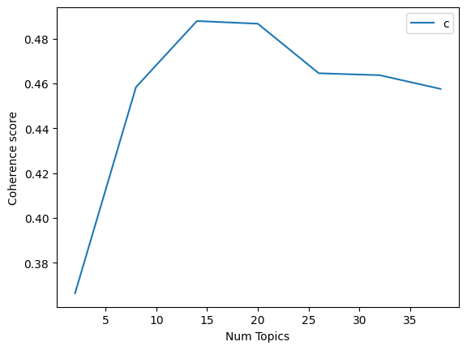

LDA With Gensim#
Load the dataset#
import pandas as pd
data = pd.read_csv('preprocessing_crawling_pta.csv', on_bad_lines='skip')
data.head()
| id_berita | judul_berita | isi_berita_original | isi_berita_clean | isi_berita_stopwords_removed | isi_berita_stemmed | isi_berita_corrected | isi_berita_tokens | kategori_berita | |
|---|---|---|---|---|---|---|---|---|---|
| 0 | 8142500 | 5 Catatan Legislator PAN soal Perpres Tata Kel... | Presiden Prabowo Subianto disebut bakal meneke... | presiden prabowo subianto disebut bakal meneke... | presiden prabowo subianto disebut bakal meneke... | presiden prabowo subianto sebut bakal teken at... | president prabowo subito debut banal taken amu... | presiden prabowo subianto disebut bakal meneke... | politik |
| 1 | 8142495 | Kakek di Sumsel Tega Perkosa Anak Tiri Usia 15... | Seorang pria lansia di Kabupaten Ogan Komering... | seorang pria lansia di kabupaten ogan komering... | seorang pria lansia kabupaten ogan komering ul... | orang pria lansia kabupaten ogan komering ulu ... | orang aria mania kabupaten organ homering flu ... | seorang pria lansia di kabupaten ogan komering... | politik |
| 2 | 8142492 | Cak Imin Angkat 4 Korban Selamat Ponpes Ambruk... | Menteri Koordinator Bidang Pemberdayaan Masyar... | menteri koordinator bidang pemberdayaan masyar... | menteri koordinator bidang pemberdayaan masyar... | menteri koordinator bidang daya masyarakat men... | enter coordinator biding day masyarakat men pm... | menteri koordinator bidang pemberdayaan masyar... | politik |
| 3 | 8142488 | KPK Kesulitan Periksa Saksi Kasus Suap PLTU-2 ... | KPKmengakui kesulitan dalam memeriksa saksi te... | kpkmengakui kesulitan dalam memeriksa saksi te... | kpkmengakui kesulitan memeriksa saksi terkait ... | kpkmengakui sulit periksa saksi kait perkara s... | kpkmengakui suit perish saki wait ferrara slap... | kpkmengakui kesulitan dalam memeriksa saksi te... | politik |
| 4 | 8142485 | Respons KPK soal Staf Ahli Kemensos Ngaku Korb... | KPKmerespons pernyataan Staf Ahli Menteri Bida... | kpkmerespons pernyataan staf ahli menteri bida... | kpkmerespons pernyataan staf ahli menteri bida... | kpkmerespons nyata staf ahli menteri bidang ub... | kpkmerespons nyala stay ali enter biding bah d... | kpkmerespons pernyataan staf ahli menteri bida... | politik |
# Perbaikan untuk menghindari SettingWithCopyWarning
data_text = data.loc[:, ['isi_berita_original']]
# Tetapkan DataFrame yang sudah dimodifikasi ke variabel 'documents'.
documents = data_text
# Tampilkan semua baris data
print(documents)
isi_berita_original
0 Presiden Prabowo Subianto disebut bakal meneke...
1 Seorang pria lansia di Kabupaten Ogan Komering...
2 Menteri Koordinator Bidang Pemberdayaan Masyar...
3 KPKmengakui kesulitan dalam memeriksa saksi te...
4 KPKmerespons pernyataan Staf Ahli Menteri Bida...
.. ...
620 Direktorat Reserse Siber Polda Metro Jaya mena...
621 Pemerintah mewajibkan Satuan Pelayanan Pemenuh...
622 Gardu tol di Pejompongan diTol Dalam Kotaditut...
623 Seorang perempuan terapisditemukan tidak berny...
624 Sejumlah remaja di Bitung, Sulawesi Utara (Sul...
[625 rows x 1 columns]
# Perbaikan untuk menghindari SettingWithCopyWarning
data_text = data.loc[:, ['isi_berita_original']]
data_text['index'] = data_text.index
# Tetapkan DataFrame yang sudah dimodifikasi ke variabel 'documents'
documents = data_text
# Tampilkan semua baris data
print(documents)
isi_berita_original index
0 Presiden Prabowo Subianto disebut bakal meneke... 0
1 Seorang pria lansia di Kabupaten Ogan Komering... 1
2 Menteri Koordinator Bidang Pemberdayaan Masyar... 2
3 KPKmengakui kesulitan dalam memeriksa saksi te... 3
4 KPKmerespons pernyataan Staf Ahli Menteri Bida... 4
.. ... ...
620 Direktorat Reserse Siber Polda Metro Jaya mena... 620
621 Pemerintah mewajibkan Satuan Pelayanan Pemenuh... 621
622 Gardu tol di Pejompongan diTol Dalam Kotaditut... 622
623 Seorang perempuan terapisditemukan tidak berny... 623
624 Sejumlah remaja di Bitung, Sulawesi Utara (Sul... 624
[625 rows x 2 columns]
len(documents)
625
Data Preprocessing#
pip install gensim
Requirement already satisfied: gensim in /usr/local/lib/python3.12/dist-packages (4.3.3)
Requirement already satisfied: numpy<2.0,>=1.18.5 in /usr/local/lib/python3.12/dist-packages (from gensim) (1.26.4)
Requirement already satisfied: scipy<1.14.0,>=1.7.0 in /usr/local/lib/python3.12/dist-packages (from gensim) (1.13.1)
Requirement already satisfied: smart-open>=1.8.1 in /usr/local/lib/python3.12/dist-packages (from gensim) (7.3.1)
Requirement already satisfied: wrapt in /usr/local/lib/python3.12/dist-packages (from smart-open>=1.8.1->gensim) (1.17.3)
import gensim
from gensim.utils import simple_preprocess
from nltk.corpus import stopwords
from nltk.stem.porter import *
import numpy as np
import nltk
nltk.download('wordnet')
[nltk_data] Downloading package wordnet to /root/nltk_data...
[nltk_data] Package wordnet is already up-to-date!
True
def lemmatize_stemming(text):
return stemmer.stem(WordNetLemmatizer().lemmatize(text, pos='v'))
def preprocess(text):
result=[]
for token in gensim.utils.simple_preprocess(text) :
if token not in stopwords.words('english') and len(token) > 3:
result.append(lemmatize_stemming(token))
return result
# --- Bagian 1: Memuat dan Menyiapkan Data ---
import pandas as pd
import re
import nltk
from nltk.corpus import stopwords
from gensim.utils import simple_preprocess
from gensim.corpora import Dictionary
from gensim.models import LdaModel
from nltk.stem import WordNetLemmatizer
# Unduh data NLTK
nltk.download('stopwords')
nltk.download('wordnet')
try:
# Muat data dari file CSV
data = pd.read_csv('preprocessing_crawling_pta.csv', on_bad_lines='skip')
# KUNCI PERBAIKAN: Pastikan documents adalah list of strings
documents = data['isi_berita_original'].values.tolist()
print(f"Total {len(documents)} dokumen berhasil dimuat.")
except (FileNotFoundError, KeyError) as e:
print(f"Error: Terjadi kesalahan saat memuat data. {e}")
documents = []
# --- Bagian 2: Preprocessing Teks ---
if documents:
def lemmatize_stemming(text):
stemmer = WordNetLemmatizer()
return stemmer.lemmatize(text, pos='v')
stop_words = stopwords.words('indonesian')
def tokenisasi_dan_filter(teks):
return [
lemmatize_stemming(kata)
for kata in simple_preprocess(str(teks))
if kata not in stop_words and len(kata) > 2
]
data_token = [tokenisasi_dan_filter(teks) for teks in documents]
# --- Bagian 3: Mencoba Mengakses Dokumen Tertentu ---
# Tentukan nomor dokumen yang ingin Anda ambil
# Berdasarkan output Anda, total dokumen adalah 625
document_num = 581
# Cek apakah nomor dokumen valid
if 1 <= document_num <= len(documents):
# Ambil dokumen menggunakan indeks list (document_num - 1)
doc_sample = documents[document_num - 1]
print("\nOriginal document:")
words = doc_sample.split()
print(words)
print("\n\nTokenized and lemmatized document:")
print(tokenisasi_dan_filter(doc_sample))
else:
print(f"Nomor dokumen {document_num} tidak valid. Mohon pilih nomor antara 1 dan {len(documents)}.")
[nltk_data] Downloading package stopwords to /root/nltk_data...
[nltk_data] Package stopwords is already up-to-date!
[nltk_data] Downloading package wordnet to /root/nltk_data...
[nltk_data] Package wordnet is already up-to-date!
Total 625 dokumen berhasil dimuat.
Original document:
['Aksi', 'tawuran', 'antara', 'dua', 'kelompok', 'pelajar', 'SMP', 'terjadi', 'di', 'Kecamatan', 'Angsana,', 'Kabupaten', 'Pandeglang,', 'Banten.', 'Rekaman', 'video', 'tawuran', 'itu', 'tersebar', 'di', 'media', 'sosial.', 'Berdasarkan', 'video', 'viral', 'yang', 'dilihat,', "Jum'at", '(3/10/2025),', 'tampak', 'dua', 'kelompok', 'pelajar', 'saling', 'serang', 'dengan', 'menggunakan', 'senjata', 'tajam.', 'Dalam', 'video', 'itu,', 'mereka', 'terlihat', 'masih', 'mengenakan', 'seragam', 'sekolah.', 'SCROLL', 'TO', 'CONTINUE', 'WITH', 'CONTENT', 'Kapolsek', 'Angsana', 'Iptu', 'Akbar', 'angkat', 'bicara.', 'Ia', 'mengatakan', 'peristiwa', 'itu', 'terjadi', 'pada', 'Senin', '(29/9).', '"Iyah,', 'kejadian', 'pada', 'Senin', 'kemarin', 'usai', 'pulang', 'sekolah,"', 'katanya.', 'Akbar', 'mengatakan', 'para', 'siswa', 'yang', 'melakukan', 'aksi', 'itu', 'masih', 'duduk', 'di', 'bangku', 'sekolah', 'menengah', 'pertama', '(SMP).', 'Menurutnya,', 'peristiwa', 'itu', 'dipicu', 'karena', 'masalah', 'saling', 'ledek', 'antarpelajar.', '"Saling', 'ejek,"', 'ungkapnya.', 'Ia', 'mengatakan', 'Kepolisian', 'sektor', '(Polsek)', 'Angsana', 'langsung', 'menindak', 'para', 'siswa', 'yang', 'ikut', 'terlibat.', 'Ia', 'mengatakan', 'kepolisian', 'telah', 'melakukan', 'pembinaan', 'kepada', 'para', 'siswa,', 'dan', 'meminta', 'kepada', 'orang', 'tua', 'agar', 'bisa', 'mengontrol', 'putra-putrinya', 'ketika', 'berada', 'di', 'luar', 'jam', 'pelajaran.', '"Sudah', 'dikembalikan', 'kepada', 'orang', 'tua', 'kembali,', 'kita', 'juga', 'terus', 'melakukan', 'pembinaan', 'kepada', 'para', 'siswa', 'dan', 'orang', 'tua', 'agar', 'bisa', 'menjaga', 'anaknya,"', 'katanya.', 'Akbar', 'menambahkan', 'polisi', 'terus', 'melakukan', 'upaya', 'mencegah', 'agar', 'tindakan', 'kenakalan', 'remaja', 'tidak', 'terulang.', 'Menurutnya,', 'Polsek', 'Angsana', 'datang', 'ke', 'tiap-tiap', 'sekolah', 'untuk', 'memberikan', 'edukasi', 'kepada', 'siswa', 'agar', 'bisa', 'menghindari', 'tindakan', 'yang', 'bisa', 'merugikan', 'diri', 'sendiri,', 'dan', 'orang', 'lain.', '"Kami', 'juga', 'terus', 'datang', 'kesekolahan', 'setiap', 'hari', 'Senin', 'dalam', 'upaya', 'mencegah', 'terjadinya', 'tindakan', 'kenakalan', 'remaja,"', 'pungkasnya.', 'Simak', 'juga', 'Video:', '2', 'Kelompok', 'Pemuda', 'Bentrok', 'di', 'Polman,', '1', 'Tewas', 'dan', '3', 'Luka', '[Gambas:Video', '20detik]']
Tokenized and lemmatized document:
['aksi', 'tawuran', 'kelompok', 'pelajar', 'smp', 'kecamatan', 'angsana', 'kabupaten', 'pandeglang', 'banten', 'rekaman', 'video', 'tawuran', 'tersebar', 'media', 'sosial', 'berdasarkan', 'video', 'viral', 'jum', 'kelompok', 'pelajar', 'serang', 'senjata', 'tajam', 'video', 'mengenakan', 'seragam', 'sekolah', 'scroll', 'continue', 'with', 'content', 'kapolsek', 'angsana', 'iptu', 'akbar', 'angkat', 'bicara', 'peristiwa', 'senin', 'iyah', 'kejadian', 'senin', 'kemarin', 'pulang', 'sekolah', 'akbar', 'siswa', 'aksi', 'duduk', 'bangku', 'sekolah', 'menengah', 'smp', 'menurutnya', 'peristiwa', 'dipicu', 'ledek', 'antarpelajar', 'ejek', 'kepolisian', 'sektor', 'polsek', 'angsana', 'langsung', 'menindak', 'siswa', 'terlibat', 'kepolisian', 'pembinaan', 'siswa', 'orang', 'tua', 'mengontrol', 'putra', 'putrinya', 'jam', 'pelajaran', 'dikembalikan', 'orang', 'tua', 'pembinaan', 'siswa', 'orang', 'tua', 'menjaga', 'anaknya', 'akbar', 'polisi', 'upaya', 'mencegah', 'tindakan', 'kenakalan', 'remaja', 'terulang', 'menurutnya', 'polsek', 'angsana', 'sekolah', 'edukasi', 'siswa', 'menghindari', 'tindakan', 'merugikan', 'orang', 'kesekolahan', 'senin', 'upaya', 'mencegah', 'tindakan', 'kenakalan', 'remaja', 'pungkasnya', 'simak', 'video', 'kelompok', 'pemuda', 'bentrok', 'polman', 'tewas', 'luka', 'gambas', 'video', 'detik']
processed_docs = [preprocess(doc) for doc in data['isi_berita_original'].values]
processed_docs = data['isi_berita_original'].apply(preprocess)
print(processed_docs[:625])
0 [presiden, prabowo, subianto, disebut, bakal, ...
1 [seorang, pria, lansia, kabupaten, ogan, komer...
2 [menteri, koordinator, bidang, pemberdayaan, m...
3 [kpkmengakui, kesulitan, dalam, memeriksa, sak...
4 [kpkmerespons, pernyataan, staf, ahli, menteri...
...
620 [direktorat, reserse, siber, polda, metro, jay...
621 [pemerintah, mewajibkan, satuan, pelayanan, pe...
622 [gardu, pejompongan, ditol, dalam, kotaditutup...
623 [seorang, perempuan, tidak, bernyawadi, sebuah...
624 [sejumlah, remaja, bitung, sulawesi, utara, su...
Name: isi_berita_original, Length: 625, dtype: object
Get a BOW Dict from data#
dictionary = gensim.corpora.Dictionary(processed_docs)
# Kode ini akan mengiterasi dan mencetak semua item dalam kamus
for k, v in dictionary.items():
print(k, v)
0 adanya
1 agar
2 akan
3 akuntabel
4 akuntabilitas
5 aman
6 anak
7 anggaran
8 anggota
9 ashabul
10 aspek
11 baginya
12 baik
13 bakal
14 bambang
15 berbasis
16 berdampak
17 bergizi
18 berharap
19 berhenti
20 berlapis
21 berlebihan
22 berorientasi
23 besar
24 betul
25 catatan
26 cepat
27 content
28 continue
29 daerah
30 dalam
31 dapat
32 dapur
33 dari
34 dekat
35 dengan
36 diajukan
37 diatur
38 diharapkan
39 dijadikan
40 dikeluarkan
41 disebut
42 distribusi
43 ditarik
44 diteken
45 evaluasi
46 fraksi
47 gerak
48 gitu
49 gizi
50 gratis
51 hanya
52 harus
53 hasan
54 hasil
55 hingga
56 inpres
57 insyaallah
58 integrasi
59 isinya
60 jadi
61 jakarta
62 jangan
63 jangkar
64 jargon
65 jelas
66 jumat
67 kahfi
68 kamis
69 kanal
70 karena
71 kata
72 keamanan
73 kedua
74 keempat
75 kelima
76 kelola
77 kelolamakan
78 kementerian
79 kepada
80 keputusan
81 kesehatan
82 kesling
83 ketiga
84 kita
85 komisi
86 komunitas
87 koordinasi
88 labkesda
89 laboratorium
90 langkah
91 larangan
92 layanan
93 lebih
94 lembaga
95 makan
96 makanan
97 manfaat
98 masyarakat
99 mekanisme
100 melalui
101 melibatkan
102 memberikan
103 memperjelas
104 mendesak
105 meneken
106 mengikuti
107 menjelaskan
108 menko
109 menteri
110 menurut
111 menyambut
112 menyampaikan
113 menyarankan
114 menyebut
115 mereka
116 minggu
117 monitor
118 mudah
119 mudahan
120 nanti
121 nantinya
122 negara
123 oktober
124 oleh
125 output
126 pada
127 padat
128 pal
129 pangan
130 panjang
131 paripurna
132 pelaksanaan
133 pembagian
134 pemda
135 pemerintah
136 pendidikan
137 penerima
138 pengaduan
139 pengaturan
140 penting
141 peran
142 peraturan
143 perbaikan
144 perlu
145 perpres
146 pertama
147 prabowo
148 presiden
149 program
150 proses
151 publik
152 punya
153 pusat
154 puskesmas
155 rangkaiannya
156 rapat
157 ruang
158 rupiah
159 sabar
160 sambungnya
161 sangat
162 satu
163 scroll
164 sebelum
165 sebelumnya
166 sebenarnya
167 sedang
168 sedikit
169 segera
170 sehingga
171 sejumlah
172 sekolah
173 sekretaris
174 selesaikan
175 sementara
176 semua
177 senayan
178 seperti
179 serta
180 setelah
181 setiap
182 sistem
183 soal
184 standar
185 status
186 subianto
187 sudah
188 suhariyanto
189 tanda
190 tangan
191 tanggal
192 tapi
193 tata
194 tentang
195 terbit
196 tergantung
197 terkait
198 tersebut
199 tersedia
200 tiap
201 tidak
202 transparan
203 tugas
204 ucap
205 ujar
206 ultra
207 umumkan
208 wajib
209 wakil
210 waktu
211 wamensesneg
212 wartawan
213 yang
214 zulhas
215 zulkifli
216 agung
217 akbp
218 akhirnya
219 aksi
220 anaknya
221 april
222 baca
223 bahwa
224 band
225 bejat
226 bejatnya
227 berada
228 berinisial
229 berlanjut
230 berusia
231 bulan
232 desa
233 digauli
234 diketahui
235 dilakukan
236 dipaksa
237 dirinya
238 disetubuhi
239 disini
240 ditangkap
241 ditinggali
242 diusir
243 empat
244 februari
245 hamil
246 hartana
247 jika
248 juga
249 kabupaten
250 kali
251 kamar
252 kandung
253 kandungnya
254 kapolres
255 kecamatan
256 kediamannya
257 kejadian
258 kembali
259 komering
260 korban
261 lansia
262 make
263 masih
264 masuk
265 melaporkan
266 melayani
267 melayaninya
268 memilih
269 menceritakan
270 mendengar
271 mengajak
272 mengancam
273 mengungkapkan
274 mengusir
275 merupakan
276 nafsu
277 ogan
278 pelaku
279 pengakuan
280 perempuan
281 peristiwa
282 perlindungan
283 polisi
284 polres
285 pria
286 redi
287 rumah
288 saat
289 satreskrim
290 sebanyak
291 sekarang
292 selanjutnya
293 selatan
294 selengkapnya
295 seorang
296 september
297 sumatera
298 sumsel
299 surabaya
300 tahun
301 takut
302 telah
303 terhadap
304 termasuk
305 terungkap
306 tirinya
307 ujarnya
308 unit
309 untuk
310 warga
311 abdul
312 adapun
313 ahmad
314 ambruk
315 ambruknya
316 angkat
317 antaranya
318 atas
319 badan
320 bangunan
321 basarnas
322 belasungkawa
323 bencana
324 bentuk
325 berat
326 berdasarkan
327 bidang
328 bnpb
329 cerah
330 cobaan
331 data
332 depan
333 diberi
334 dihimpun
335 dilansirantara
336 dinyatakan
337 dirawat
338 ditinggalkan
339 dunia
340 haikal
341 imin
342 iskandar
343 jawa
344 jawab
345 katanya
346 kekuatan
347 keluarga
348 kepala
349 ketabahan
350 keterangannya
351 khoziny
352 koordinator
353 kuliah
354 lalu
355 lima
356 masa
357 maulana
358 melukai
359 memiliki
360 menanggung
361 mendalam
362 menewaskan
363 mengangkat
364 menghadapi
365 mengurus
366 meninggal
367 menjadi
368 moral
369 muhaimin
370 musibah
371 nama
372 nasional
373 orang
374 pemberdayaan
375 penanggulangan
376 ponpes
377 rincian
378 rozi
379 salah
380 sampai
381 santri
382 saya
383 sebagai
384 secara
385 selamat
386 semoga
387 senantiasa
388 sidoarjo
389 suharyanto
390 syaiful
391 tanggung
392 tercatat
393 tetap
394 timur
395 agak
396 alternatif
397 apakah
398 asep
399 atau
400 awal
401 ayat
402 beberapa
403 begitu
404 beli
405 belum
406 bertahap
407 bupati
408 cirebon
409 dakwaan
410 deputi
411 dialami
412 diberikan
413 diduga
414 dikarenakan
415 dimiliki
416 diminta
417 dinas
418 ditahan
419 ditetapkan
420 diubah
421 eksekusi
422 energi
423 gatot
424 gedung
425 guntur
426 harta
427 herry
428 huruf
429 hyundai
430 jabatan
431 janji
432 jual
433 jumpa
434 juncto
435 jung
436 kalau
437 kasus
438 kejahatannya
439 kemudian
440 kesatu
441 kesulitan
442 kesulitannya
443 kini
444 komunikasi
445 kontrakan
446 kontraktor
447 korea
448 korupsi
449 kpkmengakui
450 kuhp
451 listrik
452 mantan
453 masalah
454 melakukan
455 melanggar
456 memang
457 memanggil
458 memberi
459 memeriksa
460 mendalami
461 menerima
462 menetapkan
463 mengatakan
464 menyamarkan
465 menyuap
466 merah
467 meski
468 miliar
469 nomor
470 para
471 pasal
472 pembangkit
473 pembangunan
474 pemberantasan
475 pemberian
476 pemeriksaan
477 pendalaman
478 pengembangan
479 penindakan
480 periode
481 perizinan
482 perkara
483 pers
484 perubahan
485 perusahaan
486 pidana
487 pihak
488 pihaknya
489 pltu
490 prasarana
491 proyek
492 pupr
493 purwadisastra
494 putih
495 rachmanto
496 rahayu
497 saksi
498 sebagaimana
499 sebagian
500 sejak
501 selain
502 sendiri
503 senilai
504 senin
505 sesuatu
506 suap
507 sunjaya
508 tenaga
509 terakhir
510 terang
511 tersangka
512 tindak
513 tppu
514 tunai
515 uang
516 undang
517 ungkap
518 yakni
519 adalah
520 agustus
521 ahli
522 apalagi
523 apapun
524 argumennya
525 atasnya
526 ataupun
527 bansos
528 baru
529 benar
530 bepergian
531 berbeda
532 bila
533 dikorbankan
534 dinamika
535 direktur
536 diri
537 dirut
538 disampaikan
539 ditekan
540 diterima
541 diusut
542 dosni
543 dugaan
544 embat
545 erwin
546 gugatan
547 hakim
548 hartono
549 hati
550 identitas
551 imbuhnya
552 informasi
553 ingin
554 jaksel
555 jerry
556 kami
557 kanisius
558 kaya
559 keadilan
560 kemensos
561 keterangan
562 komisaris
563 korporasi
564 kpkmerespons
565 lie
566 logistics
567 luar
568 lubuk
569 maka
570 melaksanakan
571 melepaskannya
572 membutuhkan
573 meminta
574 memohon
575 memperkaya
576 mempersilakan
577 mencegah
578 mendalaminya
579 menelusuri
580 mengajukan
581 menghargai
582 mengklaim
583 mengumumkan
584 menjamin
585 menolak
586 menuntut
587 merasa
588 meyakini
589 namun
590 negeri
591 niat
592 operasional
593 pekerjaan
594 pemidanaan
595 pengadilan
596 penyidik
597 perintah
598 pernah
599 pernyataan
600 praperadilan
601 raya
602 roha
603 rudijanto
604 rudy
605 saja
606 saut
607 siapa
608 sosial
609 staf
610 suatu
611 suharto
612 tanoesoedibjo
613 tekanan
614 tengah
615 tengker
616 tentu
617 terdaftar
618 terdalam
619 terdiri
620 terlepas
621 terlihat
622 terpaksa
623 tiga
624 tolong
625 tunggal
626 turut
627 utama
628 yaitu
629 agama
630 akibat
631 alasan
632 aliansi
633 aliran
634 antrean
635 artinya
636 asosiasi
637 asphuri
638 azhari
639 bagaimana
640 bahan
641 bawah
642 beragam
643 berangkat
644 berapa
645 berasal
646 berita
647 bermuara
648 bermula
649 bicara
650 biro
651 bisa
652 budi
653 calon
654 cholil
655 dibutuhkan
656 dikembalikan
657 disebabkan
658 ditangani
659 haji
660 harganya
661 himpuh
662 himpunan
663 indonesia
664 jamaah
665 jumlah
666 juru
667 kemana
668 kemenag
669 kerugian
670 khusus
671 kickback
672 kooperatif
673 kuota
674 lainnya
675 langsung
676 lanjut
677 lapangan
678 lewat
679 maupun
680 membahas
681 membayar
682 membuat
683 memburu
684 memperterang
685 menampung
686 menawarkan
687 mencapai
688 mendapat
689 menduga
690 mengalir
691 mengembalikan
692 menghubungi
693 mengungkap
694 menyalip
695 naik
696 nominal
697 nyangkut
698 oknum
699 padahal
700 pegawai
701 pengembalian
702 penghitungan
703 penyelenggara
704 penyidikan
705 perantara
706 percepatan
707 perjalanan
708 persen
709 pihk
710 positif
711 praktik
712 prasetyo
713 qoumas
714 reguler
715 ribu
716 sama
717 sana
718 sebetulnya
719 sekaligus
720 selasa
721 seterusnya
722 silaturahmi
723 simpan
724 sini
725 susuri
726 syaratnya
727 tahap
728 tambahan
729 tentunya
730 terbaru
731 tergabung
732 terus
733 timbul
734 total
735 travel
736 triliun
737 uangnya
738 umrah
739 yaqut
740 achmad
741 adima
742 admin
743 affandy
744 anggarannya
745 anwar
746 bagi
747 bagus
748 bangkalan
749 berikut
750 berpengaruh
751 blitar
752 dana
753 dewan
754 diambil
755 dibagi
756 dicairkan
757 diterapkan
758 dprd
759 fathullah
760 fauzan
761 gresik
762 hasanuddin
763 heriyadi
764 hibah
765 ijon
766 imbasnya
767 jailani
768 jalan
769 jatim
770 jodi
771 junaidi
772 keseluruhan
773 ketua
774 keuntungannya
775 korlap
776 kota
777 kpkmenjelaskan
778 kristiawan
779 kualitas
780 kusnadi
781 lagi
782 mahrus
783 mahud
784 mashudi
785 memegang
786 mencontohkan
787 mendapatkan
788 mengalami
789 menyebabkan
790 misalkan
791 moch
792 motollib
793 ngambil
794 nilai
795 pasuruan
796 pelaksana
797 pemberi
798 pembuatan
799 pemotongan
800 pencairan
801 pengurangan
802 pengurus
803 pikiran
804 pokir
805 pokmas
806 pokok
807 pradana
808 probolinggo
809 proposal
810 provinsi
811 pungkas
812 putra
813 roboh
814 royan
815 rusak
816 ruslan
817 sadad
818 sampang
819 sekitar
820 selaku
821 selama
822 sukar
823 sumenep
824 swasta
825 tadi
826 tulungagung
827 turun
828 wahid
829 wahyudiono
830 wawan
831 yahya
832 aditya
833 aiptu
834 aparat
835 arnold
836 aseni
837 aspirasi
838 babinsa
839 bapak
840 barat
841 bennyahdi
842 berbagai
843 berdialog
844 bersama
845 bertujuan
846 beserta
847 bhabinkamtibmas
848 binmas
849 bukan
850 diperhatikan
851 hadir
852 hangat
853 jajaran
854 julius
855 kalideres
856 kamtibmas
857 kapolsek
858 karyoto
859 kasat
860 kasi
861 kebersamaan
862 kegiatan
863 kehadiran
864 kelurahan
865 kepolisian
866 ketut
867 kombes
868 kompol
869 kondisi
870 kondusif
871 kunjungan
872 lingkungan
873 linmas
874 masukan
875 mawardi
876 menciptakan
877 mendengarkan
878 mengecek
879 mengenai
880 mengunjungi
881 menjaga
882 metro
883 nugroho
884 nyaman
885 peltu
886 prasetya
887 propam
888 rabu
889 sambutan
890 satkamling
891 semanan
892 semata
893 sempat
894 simanjuntak
895 situasi
896 supriyatin
897 twedi
898 apbd
899 berisikan
900 berjalan
901 berperan
902 bersifat
903 bertemu
904 bertugas
905 biaya
906 bottom
907 diawal
908 dibuat
909 didasari
910 dihasilkan
911 diperoleh
912 diserahkan
913 disetujui
914 dulu
915 efektif
916 harusnya
917 irigasi
918 istilahnya
919 jelaskan
920 kebutuhan
921 kegiatannya
922 kelompok
923 kenyataannya
924 kesalahannya
925 keuntungan
926 komitmen
927 kordinator
928 kpktelah
929 laporan
930 masing
931 mempermudah
932 memuluskan
933 menahan
934 mencairkan
935 menyerahkan
936 menyusun
937 pekerjaannya
938 pencarian
939 pengecekan
940 pengurusan
941 penyaluran
942 proposalnya
943 rangkaian
944 rencana
945 reses
946 riil
947 sebesar
948 sebuah
949 seharusnya
950 semestinya
951 seraya
952 sesuai
953 terjadi
954 ternyata
955 tetapi
956 wilayah
957 agenda
958 agustin
959 akhmad
960 aktivis
961 bendahara
962 berlangsung
963 bobby
964 bumn
965 cita
966 citanya
967 cuma
968 departemen
969 dibahas
970 dibayarkan
971 dijabat
972 dipercaya
973 diputuskan
974 dppprabowo
975 ducati
976 duit
977 ebenezer
978 gabungan
979 gaol
980 gibran
981 gojali
982 golf
983 harahap
984 harian
985 immanuel
986 independen
987 irvian
988 jangka
989 jatah
990 jenderal
991 juta
992 kampanye
993 kebangsaan
994 kedepan
995 kemnaker
996 kepengurusan
997 ketum
998 komandan
999 konsolidasi
1000 life
1001 lumban
1002 mahendro
1003 mania
1004 melonjak
1005 menegaskan
1006 mengawal
1007 menggantikan
1008 menggelar
1009 menjabat
1010 menyukseskan
1011 motor
1012 mulai
1013 noel
1014 organisasi
1015 pembina
1016 pemerasan
1017 pemerintahan
1018 penasehat
1019 pendek
1020 penetapan
1021 pilpres
1022 pleno
1023 posisi
1024 raka
1025 rakabuming
1026 reborn
1027 restrukturisasi
1028 road
1029 sebagao
1030 sekjen
1031 selisih
1032 semakin
1033 sertifikasi
1034 sertifikat
1035 setio
1036 show
1037 surat
1038 tegas
1039 terjerat
1040 terseret
1041 tertulisnya
1042 totalnya
1043 umum
1044 usai
1045 wamenaker
1046 wapres
1047 widjanarko
1048 berubah
1049 bujur
1050 bumi
1051 demikian
1052 diposo
1053 disclaimer
1054 gempa
1055 infobmkg
1056 kecepatan
1057 kedalaman
1058 kelengkapan
1059 kerusakan
1060 lintang
1061 magnitudo
1062 mengutamakan
1063 pengolahan
1064 postingan
1065 seiring
1066 stabil
1067 sulawesi
1068 sulteng
1069 titik
1070 alat
1071 bukti
1072 daftarnya
1073 hari
1074 kecukupan
1075 kpkmenjerat
1076 penyelidikan
1077 sedangkan
1078 serangkaian
1079 sosok
1080 alias
1081 antara
1082 aset
1083 bagian
1084 bayangkan
1085 bersedia
1086 biasanya
1087 cair
1088 digunakan
1089 dihitung
1090 dikenal
1091 dikucurkan
1092 disita
1093 istilah
1094 jenis
1095 jumlahnya
1096 kendaraan
1097 kendati
1098 kpkmenyita
1099 kurun
1100 luas
1101 meliputi
1102 membeberkan
1103 memperoleh
1104 menjerat
1105 menyita
1106 meter
1107 milik
1108 mobil
1109 mobilnya
1110 pemulus
1111 pengajuan
1112 penyitaan
1113 perkiraan
1114 persegi
1115 roda
1116 sahat
1117 saudara
1118 seluas
1119 tahunnya
1120 tanah
1121 tuban
1122 didapat
1123 kpkmengungkap
1124 anjab
1125 atribut
1126 barang
1127 berdiri
1128 berhasil
1129 berkomitmen
1130 berkualitas
1131 berprestasi
1132 bunyi
1133 capaian
1134 daya
1135 demi
1136 dibentuk
1137 dibuktikan
1138 didukung
1139 dikelola
1140 dinilai
1141 ditingkatkan
1142 diundangkan
1143 efisien
1144 efisiensi
1145 etik
1146 faktor
1147 fokus
1148 fungsi
1149 hilir
1150 hulu
1151 imbuh
1152 imigrasi
1153 imipas
1154 jasa
1155 jayanta
1156 kapabilitas
1157 kapasitas
1158 keberhasilan
1159 kebijakan
1160 kematangan
1161 kerja
1162 kinerja
1163 kode
1164 kompeten
1165 kompetensi
1166 kontrak
1167 kunci
1168 level
1169 lini
1170 lkpp
1171 madya
1172 maksimal
1173 manajemen
1174 manusia
1175 masif
1176 memastikan
1177 memenuhi
1178 menerangkan
1179 mengemban
1180 menghubungkan
1181 mengingat
1182 meningkat
1183 meningkatkan
1184 menuju
1185 menunjukkan
1186 menyesuaikan
1187 meraih
1188 meskipun
1189 muda
1190 november
1191 pagu
1192 paket
1193 papar
1194 pbjp
1195 pelatihan
1196 pemasyarakatan
1197 pembinaan
1198 pemenuhan
1199 pencapaiannya
1200 penegakan
1201 penerapan
1202 pengadaan
1203 pengelola
1204 pengelolaan
1205 penghargaan
1206 penguatan
1207 penyedia
1208 perencanaan
1209 perluasan
1210 perolehan
1211 personel
1212 piagam
1213 pijakan
1214 ppbj
1215 proaktif
1216 profesional
1217 progresif
1218 relatif
1219 risiko
1220 satuan
1221 seluruh
1222 sembilan
1223 signifikan
1224 singkat
1225 skala
1226 strategis
1227 struktur
1228 sumber
1229 surbakti
1230 terdapat
1231 tersebar
1232 terstruktur
1233 tingkat
1234 ukpbj
1235 unggul
1236 variabel
1237 adil
1238 akses
1239 andriansyah
1240 aqib
1241 bahkan
1242 bakar
1243 banyak
1244 berfokus
1245 berkepentingan
1246 bersaing
1247 boleh
1248 butuh
1249 dampak
1250 dampaknya
1251 dengar
1252 diabaikan
1253 dibatasi
1254 dibuka
1255 didengar
1256 dijadwalkan
1257 dilihat
1258 diperhitungkan
1259 dipersempit
1260 dirasakan
1261 dirugikan
1262 dirumuskan
1263 diskusi
1264 distorsi
1265 distribusinya
1266 ditampung
1267 dorong
1268 ekosistem
1269 gambaran
1270 generasi
1271 gerindra
1272 gunhar
1273 hadapi
1274 harga
1275 haryadi
1276 hipmi
1277 iklim
1278 ikut
1279 impor
1280 inilah
1281 itulah
1282 jadwalkan
1283 justru
1284 kejelasan
1285 kepentingan
1286 keseimbangan
1287 kesempatan
1288 keterlibatan
1289 ketersediaan
1290 kompetisi
1291 kompetitif
1292 konsumen
1293 kurang
1294 legislator
1295 lengkap
1296 mana
1297 membantu
1298 membawa
1299 memperluas
1300 menambahkan
1301 menargetkan
1302 menaungi
1303 mendatang
1304 menekankan
1305 mengandalkan
1306 mengapa
1307 mengingatkan
1308 menguntungkan
1309 menilai
1310 menurutnya
1311 menutup
1312 menyangkut
1313 menyatakan
1314 menyediakan
1315 menyeimbangkan
1316 merugikan
1317 mewakili
1318 minyak
1319 nasdem
1320 pandangan
1321 pasar
1322 pasarnya
1323 pasok
1324 pegang
1325 peluang
1326 pemain
1327 pemanggilan
1328 pemangku
1329 pembahasan
1330 pendapat
1331 pengawasan
1332 pengusaha
1333 perjuangan
1334 perlunya
1335 perspektif
1336 pertamina
1337 pertemuan
1338 pertimbangan
1339 pilihan
1340 pintu
1341 potensi
1342 potensial
1343 prinsip
1344 produk
1345 rantai
1346 seceparnya
1347 sehat
1348 sejauh
1349 sektor
1350 selalu
1351 sidang
1352 sisi
1353 spbu
1354 suara
1355 sugeng
1356 suparwoto
1357 supaya
1358 syafruddin
1359 tahu
1360 tantangan
1361 terbuka
1362 terhambat
1363 terjaga
1364 terkunci
1365 terlalu
1366 terlibat
1367 tertutup
1368 terutama
1369 transparansi
1370 tumbuh
1371 upaya
1372 usaha
1373 vital
1374 yulian
1375 amir
1376 bertransformasi
1377 cemerlang
1378 dasar
1379 diamanatkan
1380 dianggap
1381 ermalena
1382 gelaran
1383 hendak
1384 ialah
1385 imam
1386 internal
1387 kader
1388 kemenkum
1389 kenaikan
1390 kiprah
1391 kursi
1392 lambatnya
1393 mardiono
1394 melihat
1395 mempersiapkan
1396 mendorong
1397 menempatkan
1398 menjadikan
1399 menjadisekjen
1400 menunjuk
1401 muhamad
1402 partai
1403 pemilu
1404 penuh
1405 penunjukan
1406 penurunan
1407 pimpinan
1408 prestasi
1409 regenerasi
1410 sekjennya
1411 selambat
1412 siapkan
1413 sulsel
1414 susunan
1415 tangga
1416 tempat
1417 terpilih
1418 uskara
1419 waketum
1420 andika
1421 asmat
1422 awalnya
1423 beber
1424 berjumlah
1425 bernama
1426 bersembunyi
1427 bersenjata
1428 bertahan
1429 bertambah
1430 bingki
1431 bouk
1432 brigjen
1433 camp
1434 cartenz
1435 damai
1436 dekai
1437 detik
1438 dibawa
1439 dibunuh
1440 dievakuasi
1441 distrik
1442 ekskavator
1443 elkius
1444 emas
1445 faizal
1446 fikram
1447 gambas
1448 jenazah
1449 kampung
1450 kobak
1451 kriminal
1452 kulum
1453 lubang
1454 lumare
1455 marselino
1456 medis
1457 membunuh
1458 mengevakuasi
1459 menyerang
1460 nando
1461 obet
1462 operasi
1463 papua
1464 pegunungan
1465 penanganan
1466 pendulang
1467 poros
1468 pukul
1469 ramadhani
1470 roberto
1471 rsud
1472 satgas
1473 selengkapnyadi
1474 seradala
1475 serangan
1476 tambang
1477 tembak
1478 tewas
1479 tonton
1480 video
1481 yahukimo
1482 yohanes
1483 yunus
1484 ajak
1485 bantuan
1486 berkelanjutan
1487 berpartisipasi
1488 berupa
1489 buduran
1490 dapil
1491 darurat
1492 datang
1493 dikerahkan
1494 disalurkan
1495 diselamatkan
1496 diturunkan
1497 dukungan
1498 evakuasi
1499 harinya
1500 haryo
1501 hold
1502 insiden
1503 jejaring
1504 jiwa
1505 kapoksi
1506 keselamatan
1507 logistik
1508 luka
1509 menelan
1510 menggandeng
1511 menopang
1512 menyalurkan
1513 menyiapkan
1514 pasokan
1515 pendataan
1516 pentingnya
1517 penyelamatan
1518 pesantren
1519 polri
1520 pondok
1521 porsi
1522 puluhan
1523 relawan
1524 runtuhan
1525 sembako
1526 soekartono
1527 tegasnya
1528 terdampak
1529 terjebak
1530 tertulis
1531 wali
1532 aliasresidivis
1533 ancaman
1534 arah
1535 bacok
1536 banjir
1537 begal
1538 beraksi
1539 berboncengan
1540 berkali
1541 bola
1542 cakung
1543 cakungkompol
1544 cctv
1545 celurit
1546 cilincing
1547 curas
1548 daftar
1549 dibacok
1550 dibekuk
1551 dikuasai
1552 dipenjara
1553 dipepet
1554 diperiksa
1555 dirampas
1556 direkam
1557 disangkakan
1558 gerbang
1559 hukuman
1560 intensif
1561 jabar
1562 jaktim
1563 jatinegara
1564 jemput
1565 jera
1566 jiep
1567 kabur
1568 katakapolsek
1569 kawasan
1570 kekerasan
1571 komplotan
1572 korbanbegal
1573 kwitang
1574 lokasi
1575 media
1576 medsos
1577 melawan
1578 melepas
1579 melintas
1580 membegal
1581 memepet
1582 mempertahankan
1583 menebaskan
1584 mengakibatkan
1585 mengaku
1586 menganalisis
1587 mengayunkan
1588 mengejar
1589 mengumpulkan
1590 mengusut
1591 meninggalkan
1592 menyelidiki
1593 merebut
1594 motornya
1595 namanya
1596 olah
1597 pelakunya
1598 pembegalan
1599 pencurian
1600 penjara
1601 perawatan
1602 perbuatannya
1603 pergi
1604 polda
1605 pulogadung
1606 pulokambing
1607 punggung
1608 rekaman
1609 residivis
1610 sabetan
1611 sadisdi
1612 sadisini
1613 sanksi
1614 saputro
1615 sebutnya
1616 sekali
1617 sengaja
1618 sepeda
1619 seret
1620 serupa
1621 sopir
1622 tampak
1623 tepatnya
1624 tepi
1625 terekam
1626 terjadinya
1627 truk
1628 utara
1629 viral
1630 widodo
1631 aktif
1632 berusaha
1633 blokade
1634 buruk
1635 cara
1636 dicegah
1637 dicegat
1638 dilansir
1639 dilindungi
1640 diplomatik
1641 ekonomi
1642 embargo
1643 flotila
1644 flotilla
1645 gaza
1646 genosida
1647 global
1648 hamas
1649 hampir
1650 hubungan
1651 hukum
1652 humaniter
1653 internasional
1654 israel
1655 jalur
1656 kantor
1657 kapal
1658 kegaza
1659 kejauhan
1660 keji
1661 kemanusiaan
1662 keras
1663 kira
1664 kondisinya
1665 konflik
1666 kritis
1667 kuat
1668 laut
1669 memantau
1670 memasuki
1671 membuka
1672 memungkinkan
1673 mencoba
1674 mendekat
1675 menekan
1676 menembus
1677 mengecam
1678 menghentikan
1679 menghina
1680 mengusulkan
1681 militer
1682 minuman
1683 misi
1684 modern
1685 mungkin
1686 nyata
1687 opsi
1688 palestina
1689 paparnya
1690 pemutusan
1691 pertempuran
1692 pesiar
1693 petugas
1694 provokasi
1695 sakit
1696 sambung
1697 sasaran
1698 sejarah
1699 solidaritas
1700 sukamta
1701 sumud
1702 tentara
1703 terangan
1704 tindakan
1705 tinggal
1706 tuturnya
1707 udara
1708 upayanya
1709 wujud
1710 zona
1711 akhir
1712 beroperasi
1713 cianjur
1714 dievaluasi
1715 dihentikan
1716 dilanjut
1717 dilarang
1718 dipenuhi
1719 disetop
1720 higiene
1721 higienis
1722 izin
1723 jauh
1724 keracunan
1725 laik
1726 makanmakan
1727 memperingatkan
1728 mengantongi
1729 menkes
1730 menu
1731 menyantap
1732 menyetop
1733 muhammad
1734 operasinya
1735 pelayanan
1736 pemkab
1737 penggunaan
1738 penjelasan
1739 rapid
1740 sanitasi
1741 seluruhnya
1742 siswa
1743 slhs
1744 sppg
1745 tenggat
1746 test
1747 wahu
1748 wahyu
1749 apabila
1750 asistensi
1751 bareskrim
1752 bareskrimpolri
1753 bengkalis
1754 bergambar
1755 berwarna
1756 bukit
1757 bungkusan
1758 burung
1759 cina
1760 dalamnya
1761 diamankan
1762 diarahkan
1763 dijanjikan
1764 diletakkan
1765 diperintah
1766 diperintahkan
1767 dipimpin
1768 dirtipidnarkoba
1769 dittipid
1770 gacol
1771 gawat
1772 hadi
1773 handik
1774 hijau
1775 hotel
1776 interogasi
1777 jaringan
1778 kasubdit
1779 keberadaannya
1780 kemasan
1781 kurir
1782 malaysia
1783 marina
1784 mengamankan
1785 mengambil
1786 mengantar
1787 menggagalkan
1788 naga
1789 nangka
1790 narkoba
1791 narkotika
1792 ojek
1793 pakning
1794 pekanbaru
1795 pelabuhan
1796 pemilik
1797 pengambilan
1798 pengiriman
1799 pengungkapan
1800 raro
1801 riau
1802 rungai
1803 sabu
1804 santoso
1805 seberat
1806 selari
1807 selesai
1808 upah
1809 zusen
1810 akibatnya
1811 berupaya
1812 diijon
1813 diperuntukkan
1814 feerp
1815 keempatnya
1816 kelimanya
1817 kesepakatan
1818 khofifah
1819 membagikan
1820 memperolehnya
1821 mengetahui
1822 penyuapan
1823 persentase
1824 prosedur
1825 rutin
1826 seseorang
1827 situ
1828 tegaskan
1829 terjadilah
1830 tersisa
1831 wilayahnya
1832 amanah
1833 antisipasi
1834 aturan
1835 bekerja
1836 berpasangan
1837 berwenang
1838 bojongsari
1839 borgol
1840 buddy
1841 buku
1842 curanmor
1843 depok
1844 dialog
1845 didorong
1846 digulirkan
1847 diimbau
1848 dirbinmas
1849 direktorat
1850 ditbinmas
1851 ditutup
1852 edukasi
1853 firmansyah
1854 harri
1855 jaga
1856 jaya
1857 kanit
1858 kapolda
1859 kasibinpenakta
1860 keberadaan
1861 kesadaran
1862 ketertiban
1863 kotadepok
1864 main
1865 melapor
1866 melengkapi
1867 menerapkan
1868 muharram
1869 mutasi
1870 patroli
1871 pejabat
1872 peralatan
1873 perangkat
1874 permasalahan
1875 pilar
1876 polsek
1877 pula
1878 ramah
1879 senter
1880 setempat
1881 sudrajat
1882 sujanto
1883 susamto
1884 system
1885 tamah
1886 tanpa
1887 terpantau
1888 tertib
1889 thohari
1890 tongkat
1891 agtastelah
1892 alhamdulillah
1893 andi
1894 apresiasi
1895 arena
1896 bergandeng
1897 bersatu
1898 canangkan
1899 digelar
1900 digitalisasi
1901 diikuti
1902 disahkan
1903 ditandatangani
1904 dokumen
1905 harapan
1906 implementasikan
1907 kasih
1908 kemarin
1909 ketahanan
1910 kompleks
1911 komponen
1912 konstitusional
1913 kuorum
1914 mari
1915 mayoritas
1916 memajukan
1917 membangun
1918 membesarkan
1919 mempersoalkan
1920 menandatangani
1921 mencanangkan
1922 mengawali
1923 menghadiri
1924 mengungkit
1925 mukernas
1926 muktamar
1927 muktamirin
1928 pagi
1929 parlemen
1930 penelitian
1931 pengesahan
1932 perbedaan
1933 pernyataannya
1934 persatuan
1935 pertiga
1936 resmi
1937 saatnya
1938 sampaikan
1939 serahkan
1940 setinggi
1941 seusai
1942 supratman
1943 tangani
1944 teman
1945 terima
1946 tingginya
1947 transformasi
1948 utusan
1949 amankan
1950 balik
1951 balita
1952 bayi
1953 bayinya
1954 bebernya
1955 bergerak
1956 bersangkutan
1957 buang
1958 cerita
1959 cipete
1960 citra
1961 dampingi
1962 dibuang
1963 dilahirkan
1964 dimintai
1965 dinsos
1966 diobservasi
1967 diperlukan
1968 ditemukan
1969 dititipkan
1970 dokter
1971 ibunya
1972 indekos
1973 jelasnya
1974 keadaan
1975 kejadiannya
1976 keluar
1977 kesehatannya
1978 khilaf
1979 kondisikan
1980 kosan
1981 kosannya
1982 lakukan
1983 lepas
1984 malang
1985 mandi
1986 melahirkan
1987 membuang
1988 memutuskan
1989 mendadak
1990 mengeluarkan
1991 menjalani
1992 motif
1993 mules
1994 observasi
1995 panik
1996 panti
1997 pembuangan
1998 pemulihan
1999 penahanan
2000 penemuan
2001 perbuatan
2002 perhatikan
2003 putri
2004 refleks
2005 sejoli
2006 selokan
2007 sendirian
2008 seorangibu
2009 sepekan
2010 sing
2011 tega
2012 ucapnya
2013 walaupun
2014 wanita
2015 acuan
2016 adininggar
2017 akurasi
2018 amalia
2019 aplikasi
2020 arianto
2021 arya
2022 bank
2023 banyuwangi
2024 bappenas
2025 beberkan
2026 berinisiatif
2027 berterima
2028 bima
2029 biometrik
2030 blambamgan
2031 bpjs
2032 bpkp
2033 bssn
2034 buat
2035 coba
2036 dibangun
2037 digital
2038 diuntungkan
2039 dtsen
2040 eksekutif
2041 eligibility
2042 febrian
2043 fiestiandani
2044 inisiasi
2045 ipuk
2046 ipul
2047 keberlangsungan
2048 kebudayaan
2049 kelautan
2050 kelayakan
2051 kemenko
2052 kerjakan
2053 ketenagakerjaan
2054 kolaborasi
2055 komdigi
2056 komite
2057 kptdp
2058 luhut
2059 manfaatnya
2060 memimpin
2061 memodernisasi
2062 mencakup
2063 mendesain
2064 mendukung
2065 menentukan
2066 mengapresiasi
2067 mengembangkan
2068 menggunakan
2069 mengkolaborasi
2070 mengorkestrasi
2071 mensukseskan
2072 menunggu
2073 menyanggah
2074 model
2075 nugraha
2076 panel
2077 panrb
2078 partisipasi
2079 partisipatif
2080 pemutakhiran
2081 penasaran
2082 pendaftar
2083 pendaftaran
2084 pendopo
2085 pengenalan
2086 perikanan
2087 perlinsos
2088 perum
2089 peruri
2090 perwakilan
2091 pintar
2092 platform
2093 portal
2094 prioritas
2095 purwadi
2096 rangka
2097 reformasi
2098 ruddyard
2099 sabha
2100 saifullah
2101 sanggah
2102 senada
2103 siap
2104 siapapun
2105 sinkronisasi
2106 sugiarto
2107 swagata
2108 target
2109 teknologi
2110 telepon
2111 tepat
2112 tuan
2113 tubagus
2114 ujicoba
2115 usul
2116 verifikasi
2117 wajah
2118 wamen
2119 widyasanti
2120 yusuf
2121 alam
2122 angin
2123 berpotensi
2124 bmkg
2125 contoh
2126 cuaca
2127 curah
2128 dimaksud
2129 dipengaruhi
2130 ekstrem
2131 ekstrim
2132 fenomena
2133 gempabumi
2134 geologi
2135 guncang
2136 halnya
2137 hidrologi
2138 hujan
2139 istilahbencana
2140 karakteristik
2141 kategori
2142 kebumian
2143 kencang
2144 kesiapsiagaan
2145 keterkaitan
2146 ketika
2147 labil
2148 lantas
2149 lebat
2150 lempeng
2151 lintas
2152 longsor
2153 makna
2154 maksud
2155 memahami
2156 memicu
2157 mengurangi
2158 mengutip
2159 menimbulkan
2160 merujuk
2161 meteorologi
2162 misalnya
2163 multi
2164 muncul
2165 musim
2166 pasang
2167 penambahan
2168 penghujan
2169 pergerakan
2170 pesisir
2171 sifatnya
2172 situs
2173 tektonik
2174 tinggi
2175 topografi
2176 tsunami
2177 tulis
2178 beralasan
2179 berkirim
2180 cabang
2181 dipanggil
2182 konferensi
2183 mengirimkan
2184 minta
2185 panggilnya
2186 pemeriksaannya
2187 pindahkan
2188 rupbasan
2189 rutan
2190 sitaan
2191 terhitung
2192 ulang
2193 asal
2194 asar
2195 bangun
2196 berbaring
2197 bersyukur
2198 beton
2199 dipondok
2200 gelap
2201 hidup
2202 kaki
2203 kegelapan
2204 lihat
2205 malam
2206 mencekam
2207 mengisahkan
2208 momen
2209 nggak
2210 pengap
2211 puing
2212 reruntuhan
2213 sadar
2214 sadarkan
2215 salat
2216 suasananya
2217 terperangkap
2218 tertimpa
2219 tidur
2220 wahyudi
2221 wudu
2222 aparatur
2223 arahan
2224 berkeadilan
2225 bias
2226 binsar
2227 birokrasi
2228 bpnt
2229 cukup
2230 dicari
2231 difoto
2232 digagas
2233 dihadiri
2234 dipilih
2235 diproses
2236 gampang
2237 geografis
2238 gombengsari
2239 inovasi
2240 intinya
2241 kalipuro
2242 keandalan
2243 ketahuan
2244 layak
2245 mandiri
2246 medan
2247 memilah
2248 mempercepat
2249 memperkuat
2250 memudahkan
2251 mendaftarkan
2252 menghindari
2253 menguji
2254 meninjau
2255 operator
2256 otomatis
2257 pandjaitan
2258 pemanfaatan
2259 pemantauan
2260 pendamping
2261 pendayagunaan
2262 penduduk
2263 peninjauan
2264 pilot
2265 project
2266 rakyatnya
2267 sandi
2268 sebab
2269 sejahtera
2270 sekalian
2271 siber
2272 sinyal
2273 sinyalnya
2274 sistemnya
2275 subjektif
2276 sulit
2277 susah
2278 terintegrasi
2279 terukur
2280 tetangga
2281 tokoh
2282 unsur
2283 usulan
2284 wajahnya
2285 wamendagri
2286 apby
2287 appbi
2288 arus
2289 asli
2290 bangsa
2291 batik
2292 berarti
2293 berpendapat
2294 budaya
2295 diantisipasi
2296 dibarengi
2297 dijual
2298 globalisasi
2299 industri
2300 kearifan
2301 kelestarian
2302 kreatif
2303 lasem
2304 leluhur
2305 lestari
2306 lokal
2307 maraknya
2308 melestarikan
2309 memadai
2310 memakai
2311 menemukan
2312 menengok
2313 menggerakkan
2314 menggerus
2315 meniru
2316 moerdijat
2317 momentum
2318 murah
2319 pekalongan
2320 pelestarian
2321 pemahaman
2322 penerus
2323 peningkatkan
2324 pensiun
2325 perajin
2326 peringatan
2327 perkembangan
2328 pesat
2329 print
2330 pungkasnya
2331 rakyat
2332 relevan
2333 rembang
2334 rerie
2335 senior
2336 sentra
2337 setidaknya
2338 survei
2339 tradisional
2340 warisan
2341 wisata
2342 yogyakarta
2343 abdurahman
2344 ajang
2345 anyaman
2346 apresiasinya
2347 asia
2348 bangga
2349 biasa
2350 center
2351 cermat
2352 convention
2353 craft
2354 culture
2355 didampingi
2356 diolah
2357 direvitalisasi
2358 diselenggarakan
2359 eksportir
2360 ekspresi
2361 erat
2362 fadli
2363 fair
2364 future
2365 gunawan
2366 handicraft
2367 hilirisasi
2368 inacraft
2369 international
2370 kabinet
2371 kaitannya
2372 karya
2373 kayu
2374 kedepannya
2375 kekayaan
2376 kerajinan
2377 kesaktian
2378 khususnya
2379 konsisten
2380 kreativitas
2381 kriya
2382 lapisan
2383 maju
2384 maman
2385 memacu
2386 memasarkan
2387 membeli
2388 menampilkan
2389 mengusung
2390 menyimak
2391 merata
2392 muchsin
2393 museum
2394 pajangan
2395 pameran
2396 pancasila
2397 pelopor
2398 pembukaan
2399 perdagangan
2400 peserta
2401 pondasi
2402 produsen
2403 republik
2404 resource
2405 restu
2406 ridjan
2407 selepas
2408 selvi
2409 sering
2410 seruni
2411 stan
2412 tekstil
2413 tema
2414 tenggara
2415 terbesar
2416 trade
2417 ukir
2418 umkm
2419 unggulan
2420 ungkapnya
2421 veronica
2422 wadah
2423 agunan
2424 bagaimanapun
2425 batu
2426 berdiam
2427 berkoordinasi
2428 bisanya
2429 bogor
2430 diagunkan
2431 dicarikan
2432 dilelang
2433 ditugaskan
2434 dituntut
2435 gunung
2436 hektare
2437 jaminan
2438 kejaksaan
2439 kepastian
2440 kongkalikong
2441 kredit
2442 lama
2443 lanjutnya
2444 macet
2445 mahkamah
2446 membebaskan
2447 mend
2448 mengagunkan
2449 menggadaikan
2450 mengganggu
2451 menindaklanjuti
2452 merdeka
2453 penegak
2454 putusan
2455 solusi
2456 sukaharja
2457 sukamakmur
2458 sukamulya
2459 susanto
2460 susantomenyebut
2461 tanahnya
2462 terbaik
2463 tertinggal
2464 utang
2465 yandri
2466 acara
2467 agustina
2468 balaikota
2469 bergesekan
2470 berinovasi
2471 bermaksud
2472 bermanfaat
2473 bersinergi
2474 dipadukan
2475 disdukcapil
2476 dishub
2477 elektronik
2478 enam
2479 gimbal
2480 ibarat
2481 ijin
2482 kelas
2483 kesenjangan
2484 khas
2485 koridor
2486 membuktikan
2487 menambah
2488 mengakomodir
2489 menghadirkan
2490 nikmat
2491 nota
2492 parkir
2493 pembaharuan
2494 pemkot
2495 penandatanganan
2496 pendapatan
2497 penyelenggaraan
2498 perhubungan
2499 perluas
2500 permintaan
2501 poin
2502 pungut
2503 salinan
2504 saling
2505 satunya
2506 semarang
2507 sinergi
2508 sosialisasi
2509 tenant
2510 terasa
2511 terjalin
2512 terkecuali
2513 tujuan
2514 ujungnya
2515 usut
2516 videotron
2517 wilujeng
2518 ahmed
2519 angka
2520 benturan
2521 berawal
2522 ciawi
2523 depannya
2524 diakibatkan
2525 dikemudikan
2526 dipicu
2527 ditol
2528 foto
2529 honda
2530 identitasnya
2531 jagorawi
2532 jagorawikm
2533 jajuli
2534 jalanan
2535 kahtani
2536 kainduk
2537 kecelakaan
2538 konsentrasi
2539 kurangnya
2540 lajur
2541 material
2542 melaju
2543 mempengaruhi
2544 menabrak
2545 mengendarai
2546 mohammed
2547 mula
2548 nahas
2549 ngebut
2550 parah
2551 pengemudi
2552 pengemudinya
2553 penumpang
2554 ringsek
2555 ruas
2556 sekitarnya
2557 singosari
2558 sisa
2559 spedometer
2560 terbakar
2561 alfatir
2562 alhdapassa
2563 azka
2564 brigadir
2565 bripda
2566 briptu
2567 budiarto
2568 cahyono
2569 datangi
2570 dedikasi
2571 demo
2572 desak
2573 dian
2574 engagement
2575 fikri
2576 hefados
2577 hendro
2578 hilang
2579 hudayanto
2580 humas
2581 husen
2582 indradi
2583 jayamemberikan
2584 juli
2585 kabid
2586 kadiv
2587 karier
2588 keaktifan
2589 kebanggaan
2590 kehumasan
2591 kinerjanya
2592 kontras
2593 lembar
2594 loyalitas
2595 mega
2596 mohammad
2597 motivasi
2598 nilainya
2599 pemicu
2600 pensat
2601 penyebaran
2602 ppid
2603 prayitno
2604 pujian
2605 punishment
2606 rekan
2607 reward
2608 rilis
2609 robby
2610 sapto
2611 seimbang
2612 semangat
2613 sesama
2614 siahaan
2615 spit
2616 suparyono
2617 sutasman
2618 syam
2619 teguran
2620 teqtainkar
2621 teruslah
2622 topik
2623 trend
2624 aksesibilitas
2625 akun
2626 alung
2627 anai
2628 antardaerah
2629 antarmoda
2630 antarwilayah
2631 asrama
2632 atauka
2633 bandara
2634 banyuasih
2635 barru
2636 bathara
2637 bervariasi
2638 bireuen
2639 dicatat
2640 dikutip
2641 dilayani
2642 diskon
2643 disubsidi
2644 djka
2645 duku
2646 garongkong
2647 hadirnya
2648 januari
2649 kemenhub
2650 kereta
2651 keterisian
2652 komersial
2653 konektivitas
2654 kresna
2655 kutablang
2656 lembah
2657 lhokseumawe
2658 makassar
2659 mampu
2660 mandai
2661 mangilu
2662 maros
2663 mengoptimalkan
2664 meutia
2665 minangkabau
2666 muara
2667 nataru
2668 okupansi
2669 padang
2670 palembang
2671 pangkep
2672 parepare
2673 pariaman
2674 pemerataan
2675 perekonomian
2676 perintis
2677 pulau
2678 purwosari
2679 ring
2680 rute
2681 solo
2682 stasiun
2683 stimulus
2684 tanam
2685 tarif
2686 terjangkau
2687 tertinggi
2688 tiket
2689 transportasi
2690 wonogiri
2691 acak
2692 acaknya
2693 almarhum
2694 amblas
2695 aprilindo
2696 banguntapan
2697 bantul
2698 bata
2699 belanjaan
2700 berlokasi
2701 bersamaan
2702 bidhumas
2703 bunga
2704 bunganya
2705 bunuh
2706 daripada
2707 daru
2708 diacak
2709 dihubungi
2710 dikasih
2711 dililit
2712 diplomat
2713 dirreskrimum
2714 dirusak
2715 ekshumasi
2716 gendong
2717 indikasi
2718 indikator
2719 jasad
2720 jayamelakukan
2721 jayatelah
2722 kasubbid
2723 kematian
2724 kemlu
2725 kerooftopgedung
2726 kuning
2727 lakban
2728 makam
2729 melati
2730 membantah
2731 membersihkan
2732 menaruh
2733 mengacak
2734 mengarah
2735 menit
2736 menteng
2737 menyimpulkan
2738 merapikan
2739 nicholay
2740 nisan
2741 pangayunan
2742 pembersih
2743 penasihat
2744 penjaga
2745 penmas
2746 penyebab
2747 perusakan
2748 plastik
2749 reonald
2750 sabtu
2751 satya
2752 tampung
2753 teka
2754 teki
2755 terbungkus
2756 terlilit
2757 triputra
2758 untuknyekarya
2759 wira
2760 apel
2761 arteri
2762 berlaku
2763 berpedoman
2764 bulus
2765 dimulai
2766 ditsamapta
2767 fatmawati
2768 gelar
2769 harmoni
2770 indah
2771 jayake
2772 keikhlasan
2773 kenyamanan
2774 kramat
2775 laksanakan
2776 lebak
2777 mako
2778 makopolda
2779 markas
2780 matraman
2781 melayu
2782 memelihara
2783 menyusuri
2784 monas
2785 otista
2786 palmerah
2787 pancoran
2788 patko
2789 pelajar
2790 permata
2791 ponco
2792 pramuka
2793 rasa
2794 sahari
2795 subbidgasum
2796 tebet
2797 tomang
2798 ahliinformation
2799 aksinya
2800 belajar
2801 bermain
2802 bertransaksi
2803 bjorka
2804 currency
2805 didapatkan
2806 didark
2807 dijerat
2808 dikerjakan
2809 ditres
2810 edco
2811 fakta
2812 fian
2813 forum
2814 herman
2815 hunter
2816 ilegal
2817 institusi
2818 junctopasal
2819 kakas
2820 kebutuhannya
2821 kripto
2822 lulus
2823 mata
2824 melaluidark
2825 mempelajari
2826 mencari
2827 mengakuhacker
2828 mengeksplor
2829 menjual
2830 menyebutkan
2831 meretas
2832 minahasa
2833 motifnya
2834 motivasinya
2835 nasabah
2836 oposite
2837 otodidak
2838 pembayaran
2839 pengakuannya
2840 pengangguran
2841 segala
2842 sehari
2843 shint
2844 simbolon
2845 skywave
2846 sulut
2847 technology
2848 temukan
2849 tipu
2850 transaksi
2851 webtersebut
2852 wijaya
2853 bandung
2854 banten
2855 bawa
2856 bengkel
2857 bengkelnya
2858 benz
2859 berkumpul
2860 berwarnasierra
2861 bluetersebut
2862 bodi
2863 cicilan
2864 club
2865 deretan
2866 dibeli
2867 diperbaiki
2868 direnovasi
2869 fact
2870 gubernur
2871 habibie
2872 iklan
2873 ilham
2874 jarang
2875 kamil
2876 kinclong
2877 klasik
2878 krem
2879 maret
2880 memukau
2881 menggeledah
2882 mercedes
2883 mercy
2884 mogok
2885 montir
2886 pagoda
2887 pakuan
2888 penampakan
2889 perbaiki
2890 perbincangan
2891 ridwan
2892 sarung
2893 sitaankpkusai
2894 terawat
2895 kpkmenahan
2896 kpksudah
2897 agen
2898 berdaya
2899 berkontribusi
2900 berpihak
2901 bisnis
2902 corporate
2903 dinamis
2904 disusun
2905 dividen
2906 dorongan
2907 entitas
2908 good
2909 governance
2910 hajat
2911 hubungannya
2912 inklusif
2913 katalis
2914 kedaulatan
2915 kedudukan
2916 kelembagaan
2917 kepanjangan
2918 kerangka
2919 kesejahteraan
2920 kokoh
2921 kompleksitas
2922 kontribusi
2923 makin
2924 memposisikan
2925 mengelola
2926 menguasai
2927 mewujudkan
2928 optimal
2929 pemeriksa
2930 penataan
2931 penyumbang
2932 produksi
2933 rancangan
2934 regional
2935 regulator
2936 rini
2937 sahkan
2938 saing
2939 sekretariat
2940 sepakati
2941 setuju
2942 sinergitas
2943 teknokratis
2944 terhormat
2945 tertuang
2946 ucapan
2947 urgensi
2948 widyantini
2949 zaman
2950 adaitemdalam
2951 atasi
2952 banget
2953 berbahaya
2954 bermasalah
2955 biar
2956 dibandingkan
2957 diganti
2958 dikomunikasikan
2959 dimasak
2960 dimusnahkan
2961 dipastikan
2962 diretur
2963 disemprot
2964 ditemui
2965 ditugasi
2966 formalin
2967 formalinnya
2968 gimana
2969 gugus
2970 imbas
2971 kandungan
2972 kemungkinan
2973 kitabalikinke
2974 lapor
2975 lobak
2976 lobaknya
2977 mabes
2978 masakan
2979 matang
2980 melakukanrapid
2981 menarik
2982 mencemari
2983 mendapati
2984 mengandung
2985 mengantarkan
2986 mengatakanrapid
2987 mengganti
2988 mengobati
2989 mengolah
2990 menjalankan
2991 menyediakannya
2992 nitrit
2993 nitritnya
2994 nunggu
2995 nyoman
2996 pejaten
2997 penerimaan
2998 periksa
2999 petugasnya
3000 pilek
3001 pisang
3002 polrisempat
3003 psikis
3004 ruangan
3005 saatrapid
3006 sampe
3007 sebentar
3008 seppriyanti
3009 siswi
3010 tahan
3011 testdilakukan
3012 testmakan
3013 testmendapati
3014 tetty
3015 trauma
3016 ungu
3017 vendor
3018 vendornya
3019 yakinkan
3020 armada
3021 asap
3022 dilaporkan
3023 hitam
3024 hunian
3025 instansi
3026 kalimantan
3027 kebakaran
3028 konstruksi
3029 lantai
3030 melanda
3031 memadamkan
3032 membubung
3033 menjalar
3034 menurunkan
3035 menyala
3036 merambat
3037 mustopa
3038 nusantara
3039 otorita
3040 pantouw
3041 paser
3042 pekerja
3043 pemadam
3044 pemadaman
3045 penajam
3046 penanganannya
3047 resminya
3048 saan
3049 suplai
3050 tower
3051 troy
3052 wita
3053 aduan
3054 agraria
3055 ahmadsempat
3056 audiensi
3057 benahi
3058 bener
3059 berkelakar
3060 cari
3061 case
3062 dasco
3063 diselesaikan
3064 disimpulkan
3065 ditempati
3066 dprsufmi
3067 hutan
3068 kadang
3069 kebetulan
3070 kehutanan
3071 kepariwisataan
3072 lucu
3073 malah
3074 membentuk
3075 mengatasi
3076 menyoroti
3077 mesti
3078 miskin
3079 ngomong
3080 nyalon
3081 pembentukan
3082 penyelesaian
3083 peta
3084 reforma
3085 sembari
3086 serikat
3087 sinilah
3088 srmi
3089 sukses
3090 suruh
3091 temannya
3092 tersenyum
3093 tiba
3094 tindih
3095 tumpang
3096 udah
3097 anies
3098 baswedan
3099 bjorkanesiaa
3100 datanya
3101 digitalnya
3102 disorot
3103 formulasikan
3104 gaduh
3105 hackerbjorka
3106 internet
3107 jawabannya
3108 jejak
3109 joko
3110 jokowi
3111 kebocoran
3112 mahfud
3113 marves
3114 membocorkan
3115 menangkap
3116 menerka
3117 menyelami
3118 nerka
3119 npwp
3120 opposite
3121 polhukam
3122 pribadi
3123 reserse
3124 sebagaihacker
3125 sorotan
3126 totolan
3127 akta
3128 bebas
3129 bercerita
3130 kakak
3131 keluarganya
3132 kena
3133 ptsl
3134 sistematis
3135 sita
3136 terkena
3137 buahflashdisk
3138 burhanuddin
3139 dayak
3140 dirreskrimsus
3141 ilmu
3142 kabah
3143 kalbar
3144 kepemudaan
3145 konten
3146 kontenrizky
3147 kreator
3148 layar
3149 mangkir
3150 menganut
3151 ormas
3152 paksa
3153 panggilan
3154 pelanggaran
3155 penghinaan
3156 penjemputan
3157 riezky
3158 rizky
3159 sensasi
3160 sindir
3161 subdit
3162 suku
3163 tangkapan
3164 tiktok
3165 unithandphone
3166 adik
3167 ajudan
3168 ananda
3169 anggrek
3170 baswedandan
3171 berjajar
3172 berulang
3173 diana
3174 dikirimkan
3175 djojohadikusumo
3176 erick
3177 farhati
3178 fery
3179 fitriansyah
3180 hashim
3181 ikhtiar
3182 info
3183 iriana
3184 istri
3185 istrinya
3186 jakartaanies
3187 kartu
3188 kebaikan
3189 keberkahan
3190 kediaman
3191 kepadairiana
3192 kiriman
3193 ksad
3194 kusumastuti
3195 maruli
3196 membenarkan
3197 mendoakan
3198 menhan
3199 menpora
3200 menuliskan
3201 menyertai
3202 milad
3203 pandajaitan
3204 potret
3205 salami
3206 simanjutak
3207 sjafrie
3208 sjamsoeddin
3209 sore
3210 syarif
3211 thohir
3212 aktris
3213 bali
3214 berisi
3215 dicuri
3216 dikenakannya
3217 dompet
3218 dompetnya
3219 gianyar
3220 jaehyun
3221 jeon
3222 kehilangan
3223 kelod
3224 kerugiannya
3225 liburan
3226 memblokir
3227 miliknya
3228 pemberitahuan
3229 penarikan
3230 raib
3231 ransel
3232 segini
3233 setara
3234 suami
3235 suaminya
3236 terkuras
3237 toko
3238 ubud
3239 ubuh
3240 visa
3241 wayan
3242 action
3243 aipda
3244 atang
3245 berfungsi
3246 berlalu
3247 danmendapat
3248 desi
3249 dewi
3250 go
3251 helm
3252 histaris
3253 humanis
3254 inovatif
3255 interaktif
3256 ipda
3257 kamsel
3258 karakter
3259 kecil
3260 lancar
3261 lintasdengan
3262 maskot
3263 mematuhi
3264 memperkenalkan
3265 mengedukasi
3266 menyeberang
3267 menyenangkan
3268 nopta
3269 partnership
3270 pendekatan
3271 pengendara
3272 pesan
3273 police
3274 positifdari
3275 rambu
3276 rspa
3277 safety
3278 sarana
3279 satlantas
3280 school
3281 sederhana
3282 singkatan
3283 subroto
3284 sukasari
3285 susanti
3286 suzan
3287 tambahnya
3288 tangerang
3289 tarik
3290 tentangtertib
3291 terbiasa
3292 terjun
3293 yulianti
3294 asta
3295 bangda
3296 beban
3297 berkaitan
3298 bina
3299 brian
3300 daud
3301 dibebankan
3302 difasilitasi
3303 dihadirkan
3304 dirjen
3305 dukungannya
3306 edaran
3307 fakultas
3308 followup
3309 hanggono
3310 jayapura
3311 kajian
3312 karnavian
3313 kedokteran
3314 kemendagri
3315 kesiapan
3316 khairul
3317 magang
3318 memberatkan
3319 menanggapi
3320 mendagri
3321 mendiktisaintek
3322 munadi
3323 nabire
3324 pelaksanaannya
3325 penghapusan
3326 penghapusannya
3327 peningkatan
3328 perguruan
3329 perjanjian
3330 phtc
3331 ppds
3332 restuardy
3333 sains
3334 spesialis
3335 tito
3336 tjahjandarie
3337 tjitjik
3338 tohir
3339 tomsi
3340 visi
3341 wamena
3342 yuliarto
3343 anang
3344 bergantian
3345 chromebook
3346 dibantar
3347 dibantarkan
3348 diborgol
3349 hotman
3350 kamu
3351 kapuspenkum
3352 kejagung
3353 kesana
3354 ketentuan
3355 klaim
3356 laptop
3357 lembong
3358 makarim
3359 mirip
3360 nadiem
3361 objek
3362 pascapemulihan
3363 pasti
3364 pekan
3365 pembantaran
3366 penerangan
3367 pengamanan
3368 penjagaan
3369 salemba
3370 simultan
3371 supriatna
3372 tersangkanya
3373 adae
3374 alatrapid
3375 ambang
3376 apik
3377 asesmen
3378 ataufood
3379 bakteri
3380 bakterie
3381 basah
3382 berkala
3383 bersih
3384 bumbu
3385 coli
3386 colidi
3387 coliitu
3388 concern
3389 cuci
3390 cuciaja
3391 dadan
3392 detail
3393 diare
3394 dibersihkan
3395 dibilas
3396 diedarkan
3397 digali
3398 digeser
3399 dilengkapirapid
3400 dipakai
3401 diperbarui
3402 dipisahkan
3403 disebar
3404 disikat
3405 fungsinya
3406 galon
3407 ganti
3408 halal
3409 halalnya
3410 hasilnya
3411 hccp
3412 hindayana
3413 inspeksi
3414 instruksi
3415 iqbal
3416 itusinkair
3417 kane
3418 kebersihan
3419 kejar
3420 keran
3421 kering
3422 keruh
3423 kesinkyang
3424 ketat
3425 konsumsi
3426 kontrol
3427 kotorgitu
3428 kuantitasnya
3429 lemak
3430 maksudnya
3431 masak
3432 masukkan
3433 melewati
3434 melunturkan
3435 memanaskannya
3436 membilasnya
3437 memuji
3438 mendekati
3439 menengah
3440 mengantisipasi
3441 mengeringkan
3442 menghilangkan
3443 mikroba
3444 minimal
3445 mutu
3446 noda
3447 ompreng
3448 oven
3449 pakai
3450 panas
3451 pejateng
3452 pembenahan
3453 pembersihan
3454 pemilahan
3455 pencucian
3456 pengering
3457 penilaian
3458 pindah
3459 polrimenerapkan
3460 sabun
3461 sabunnya
3462 salim
3463 samangawasin
3464 saringannya
3465 semuanya
3466 sepenuhnya
3467 sinkpertama
3468 standardisasi
3469 standarnya
3470 sumur
3471 sumurnya
3472 syarat
3473 tercapai
3474 tersimpan
3475 testsebelum
3476 testseperti
3477 traymbg
3478 berselancar
3479 dark
3480 dilacak
3481 macam
3482 mailatau
3483 mengelabui
3484 tentunyae
3485 ulah
3486 websejak
3487 aktivitas
3488 anungmendukung
3489 balai
3490 belasan
3491 bertahun
3492 bugar
3493 cashless
3494 celah
3495 cikini
3496 curang
3497 dijalankan
3498 dilanjutkan
3499 dimanfaatkan
3500 ditaksir
3501 fasilitas
3502 fasos
3503 fasum
3504 ijazah
3505 jakartapramono
3506 jupiter
3507 kenapa
3508 kjmu
3509 lahan
3510 lanjutan
3511 lemahnya
3512 lolos
3513 manual
3514 memungut
3515 menyegel
3516 menyelesaikan
3517 meraup
3518 pajak
3519 panitia
3520 pansus
3521 parkirnya
3522 pemprov
3523 penertiban
3524 penyetoran
3525 perparkiran
3526 persoalan
3527 pertanyaan
3528 pramono
3529 privilege
3530 pulogebang
3531 rapi
3532 resmikan
3533 sampah
3534 sebagainya
3535 segel
3536 seizin
3537 sembarangan
3538 setor
3539 sidak
3540 taman
3541 tertata
3542 toleransi
3543 transaksinya
3544 urusan
3545 arief
3546 besok
3547 didaftarkan
3548 dimulainya
3549 dini
3550 ditampilkan
3551 ibam
3552 ibrahim
3553 infrastruktur
3554 jaksa
3555 jurist
3556 kewajiban
3557 kewajibannya
3558 konsultan
3559 kuasa
3560 laman
3561 makarimdalam
3562 melajukan
3563 mendikbudristek
3564 mulyatsyah
3565 penelusuran
3566 penuntut
3567 perdana
3568 permohonan
3569 perorangan
3570 petitum
3571 sipp
3572 spdp
3573 teregister
3574 tergugat
3575 usia
3576 wahyuningsih
3577 anung
3578 atur
3579 berpindah
3580 brief
3581 city
3582 development
3583 dibicarakan
3584 didesain
3585 dikoneksikan
3586 dipindah
3587 dipindahkan
3588 ditempatkan
3589 dudy
3590 dukuh
3591 enak
3592 ikon
3593 karet
3594 kelihatan
3595 konsekuensi
3596 memindahkan
3597 menggabungkan
3598 menonjol
3599 menyingkirkan
3600 mobilitasnya
3601 moda
3602 orient
3603 pahlawan
3604 pangeran
3605 patung
3606 pemindahan
3607 pengerjaan
3608 purwagandhi
3609 relokasi
3610 rupa
3611 sedemikian
3612 semula
3613 sudirman
3614 terpadu
3615 thamrin
3616 transit
3617 amplop
3618 analisis
3619 bekerjasama
3620 berbarengan
3621 berbentuk
3622 berikan
3623 bertanya
3624 bintang
3625 didalami
3626 dijelaskan
3627 diterimanya
3628 ditreskrimum
3629 gabus
3630 hukumnya
3631 jakpus
3632 kaleng
3633 kalengtersebut
3634 kamboja
3635 korbanditemukan
3636 lamanya
3637 lpsk
3638 melindungi
3639 menemui
3640 mengundang
3641 pendampingan
3642 pengajian
3643 pengawalan
3644 penyelidik
3645 plastikdan
3646 puas
3647 runutan
3648 sepertinya
3649 simbol
3650 susi
3651 susilaningtias
3652 tentangsurat
3653 teror
3654 tertentu
3655 xiii
3656 adalahpakaian
3657 dibedakan
3658 dikenakan
3659 dilengkapi
3660 dinasyang
3661 disiplin
3662 hierarki
3663 ikat
3664 istilahseragam
3665 kapan
3666 kedinasan
3667 kenegaraan
3668 keseragaman
3669 keterampilan
3670 korpri
3671 lencana
3672 lengkapnya
3673 logo
3674 menandakan
3675 mengenal
3676 pakaian
3677 pangkat
3678 papan
3679 pdhmerujuk
3680 peci
3681 pedoman
3682 pemakaian
3683 pemakainya
3684 penanda
3685 penggunaannya
3686 perlengkapan
3687 perlengkapannya
3688 permenhan
3689 pertahanan
3690 pinggang
3691 prajurit
3692 prof
3693 profesionalitas
3694 regulasi
3695 sepatu
3696 seragam
3697 simak
3698 spesifikasi
3699 stella
3700 upacara
3701 wibawa
3702 arearolling
3703 autopsi
3704 bekasi
3705 bekasikombes
3706 beredar
3707 berselang
3708 berwajib
3709 brankas
3710 cikarang
3711 dicocokkan
3712 digergaji
3713 disatukan
3714 doortempat
3715 gantung
3716 genggam
3717 handphone
3718 jalankan
3719 jambi
3720 jari
3721 jayamukti
3722 kitalist
3723 korelasinya
3724 kuncinya
3725 leher
3726 mendasari
3727 mendatangi
3728 menggegerkan
3729 menyeluruh
3730 misteri
3731 mustofa
3732 pembunuhan
3733 pengunjung
3734 perampokan
3735 percakapan
3736 permukiman
3737 pertokoan
3738 petunjuk
3739 ramai
3740 ruko
3741 sekuriti
3742 sidik
3743 tarum
3744 tempatnya
3745 terikat
3746 terlebih
3747 camat
3748 dasawisma
3749 diatasi
3750 dipantau
3751 diujicobakan
3752 dusun
3753 gugusan
3754 harapnya
3755 ijen
3756 kemiskinan
3757 lurah
3758 mematangkan
3759 mengentaskan
3760 mengerahkan
3761 menghadap
3762 menyasar
3763 panjaitan
3764 parlinsos
3765 pedesaan
3766 pelosok
3767 pencet
3768 pengentasan
3769 permodalan
3770 ratusan
3771 sekadar
3772 selamanya
3773 seringkali
3774 substantif
3775 suko
3776 sumbermanis
3777 taraf
3778 tertolak
3779 tksk
3780 wamenpan
3781 amerika
3782 beku
3783 bplh
3784 cemaran
3785 cesium
3786 cessium
3787 cikande
3788 diumumkan
3789 ekspor
3790 mengawasi
3791 menyusul
3792 paparan
3793 pdip
3794 pengendalian
3795 puan
3796 radiasi
3797 radioaktif
3798 ribuan
3799 ripuan
3800 serang
3801 serius
3802 temuan
3803 teridentifikasi
3804 terpapar
3805 udang
3806 ungkit
3807 adat
3808 baduy
3809 bagago
3810 bayu
3811 creator
3812 dear
3813 dibuatnya
3814 iyen
3815 kemajuan
3816 kemasyarakatan
3817 kreaton
3818 mangkok
3819 mengucapkan
3820 menyoal
3821 mmkb
3822 pelaporan
3823 pontianak
3824 radakng
3825 sosialnya
3826 suseno
3827 akademik
3828 dilaksanakan
3829 informasinya
3830 kemampuan
3831 kemendikdasmen
3832 melaluitka
3833 mendaftar
3834 murid
3835 online
3836 pendaftarantka
3837 persyaratan
3838 sederajat
3839 snbp
3840 aiueo
3841 anungmemastikan
3842 asiop
3843 atlet
3844 berjenjang
3845 berkembang
3846 berkiprah
3847 bimba
3848 diingatkan
3849 dilupakan
3850 dinobatkan
3851 enggak
3852 fasilitasi
3853 finis
3854 gemilang
3855 hobinya
3856 jalannya
3857 juara
3858 klub
3859 latihan
3860 lumbung
3861 melanjutkan
3862 membanggakan
3863 mencatat
3864 mengorbankan
3865 olahraga
3866 olahraganya
3867 pelatih
3868 peringkat
3869 persija
3870 piala
3871 plus
3872 sekolahnya
3873 sepakbola
3874 setengah
3875 soeratin
3876 sungguh
3877 talenta
3878 terbukti
3879 umur
3880 usulkan
3881 akumulasi
3882 aloysius
3883 anjungan
3884 apbn
3885 bahlil
3886 barel
3887 belanja
3888 berenergi
3889 berkolaborasi
3890 bertatap
3891 darmawan
3892 detikcom
3893 detiksore
3894 diisi
3895 dipersembahkan
3896 disiarkan
3897 esdm
3898 gigawatt
3899 hiburan
3900 juni
3901 kapita
3902 kelistrikan
3903 konsep
3904 lahadalia
3905 langgas
3906 live
3907 location
3908 mantiri
3909 megawatt
3910 memaksimalkan
3911 mencatatkan
3912 mengakses
3913 menghibur
3914 menikmati
3915 migas
3916 mineral
3917 narasumber
3918 paruh
3919 persero
3920 prasodjo
3921 rata
3922 realisasi
3923 sambil
3924 santai
3925 sarinah
3926 segi
3927 segmen
3928 semester
3929 senja
3930 simon
3931 spesial
3932 stream
3933 subsektor
3934 terbarukan
3935 ternama
3936 terpasang
3937 database
3938 hacker
3939 memposting
3940 retas
3941 tampilan
3942 airnya
3943 arsen
3944 arsenida
3945 bentuknya
3946 berikutnya
3947 berkasus
3948 berlendir
3949 blender
3950 chaniago
3951 dapurnya
3952 diblender
3953 dicampur
3954 dicocokan
3955 didirakannya
3956 dihancurkan
3957 dijaga
3958 dikonsumsi
3959 dilayangkan
3960 dimakan
3961 dimasukan
3962 dinamakan
3963 dinaungi
3964 dinaungipolri
3965 dites
3966 ditolak
3967 ditumbuk
3968 ditunjukan
3969 event
3970 food
3971 gad
3972 gram
3973 hancur
3974 hormati
3975 indeks
3976 indeksnya
3977 irma
3978 item
3979 kandungannya
3980 kebersihannya
3981 kecoklatan
3982 kertas
3983 konturnya
3984 lakmus
3985 lengket
3986 lonjong
3987 maaf
3988 membaui
3989 memerlukan
3990 memperkirakan
3991 memperlihatkan
3992 mencicipi
3993 mencium
3994 menempel
3995 mengetes
3996 menyentuh
3997 merasakan
3998 metode
3999 mili
4000 misal
4001 mohon
4002 naungan
4003 oranye
4004 organoleptik
4005 pekat
4006 pengawasannya
4007 pink
4008 pudar
4009 reagen
4010 reaksi
4011 sampel
4012 sianid
4013 sianida
4014 silinder
4015 sisanya
4016 smpn
4017 tabung
4018 tahapan
4019 tekstur
4020 uapnya
4021 warna
4022 basket
4023 berharga
4024 berlaga
4025 berlombalah
4026 berprofesi
4027 bertanding
4028 bulu
4029 catur
4030 diberangkatkan
4031 disiapkan
4032 firdaus
4033 futsal
4034 gateball
4035 gayamsari
4036 guru
4037 insan
4038 jadikan
4039 juang
4040 kancah
4041 kawan
4042 keikutsertaan
4043 keringat
4044 kontingen
4045 medali
4046 meja
4047 mendidik
4048 mengasah
4049 mengibarkan
4050 menpanrb
4051 menumbuhkan
4052 nasib
4053 normal
4054 optimis
4055 optimistis
4056 panggung
4057 panjenengan
4058 pastinya
4059 pengalaman
4060 pengorbanan
4061 penugasan
4062 perak
4063 pertandingan
4064 petarung
4065 play
4066 pornas
4067 renang
4068 rizan
4069 rotasi
4070 sambutannya
4071 senam
4072 sipil
4073 sportivitas
4074 tangguh
4075 tangkis
4076 tenis
4077 terbayar
4078 terganggu
4079 tunjukkan
4080 voli
4081 xvii
4082 yakin
4083 adipura
4084 amran
4085 angkatan
4086 arau
4087 bakti
4088 bantaran
4089 batang
4090 berlandaskan
4091 darah
4092 diinisiasi
4093 diperluas
4094 dipusatkan
4095 donor
4096 fadly
4097 forkopimda
4098 instalasi
4099 ipal
4100 jatuh
4101 katarak
4102 kejayaan
4103 kemanunggalan
4104 kodaeral
4105 komando
4106 laksamana
4107 limbah
4108 mati
4109 muaro
4110 mulyadi
4111 omsp
4112 pantai
4113 parade
4114 pemko
4115 penyuluhan
4116 perang
4117 perwira
4118 saksikan
4119 satrol
4120 sejalan
4121 smart
4122 stakeholder
4123 sungai
4124 tambah
4125 teluk
4126 wadan
4127 anggai
4128 berani
4129 bergiliran
4130 bili
4131 bitung
4132 buka
4133 dianiaya
4134 ditampar
4135 himpasus
4136 hobi
4137 iptu
4138 kasusnya
4139 kepadadetikcom
4140 ladi
4141 lebam
4142 memukul
4143 mendaki
4144 natip
4145 orientasi
4146 pencinta
4147 penjelajah
4148 persiapkan
4149 remaja
4150 seniornya
4151 spizaetus
4152 sudara
4153 tuanya
4154 baju
4155 didugahacker
4156 email
4157 masker
4158 mengenakan
4159 menggunakandark
4160 tahanan
4161 webuntuk
4162 bertajuk
4163 commuter
4164 commuterline
4165 commutermembuka
4166 delapan
4167 eksternal
4168 https
4169 imbauan
4170 karir
4171 lowongan
4172 rekrutmen
4173 tampilkan
4174 acta
4175 ajaran
4176 akar
4177 alteram
4178 audi
4179 baskoro
4180 berakar
4181 berikhtiar
4182 berpikir
4183 bersuara
4184 bertindak
4185 demokrasi
4186 demokrat
4187 edhie
4188 elemen
4189 erosi
4190 etika
4191 etis
4192 fondasi
4193 hadiri
4194 ibas
4195 ideologis
4196 individual
4197 integritas
4198 kebenaran
4199 keberanian
4200 kepemimpinan
4201 kepercayaan
4202 kesediaan
4203 ketatanegaraan
4204 keteladanan
4205 kolektif
4206 konstitusi
4207 kultural
4208 latin
4209 legislatif
4210 luhur
4211 melupakan
4212 menggarisbawahi
4213 menghasilkan
4214 menyitir
4215 merefleksikan
4216 munas
4217 parpol
4218 partem
4219 pemimpin
4220 pengingat
4221 pengkajian
4222 perilaku
4223 petinggi
4224 politik
4225 pragmatisme
4226 ranah
4227 rujukan
4228 sempurna
4229 sifat
4230 struktural
4231 ungkapan
4232 verba
4233 yudhoyono
4234 yudikatif
4235 agus
4236 aneh
4237 aulia
4238 baiknya
4239 basis
4240 berakhir
4241 bilang
4242 dalang
4243 dekade
4244 dibiarkan
4245 digulingkan
4246 diobok
4247 dipertentangkan
4248 figur
4249 final
4250 hadapan
4251 hentikan
4252 kalangan
4253 keluarnya
4254 kenal
4255 kerap
4256 lawan
4257 legal
4258 legowo
4259 majelis
4260 manoarfa
4261 manuver
4262 memperlebar
4263 mengesahkan
4264 menkum
4265 mercure
4266 obok
4267 pakar
4268 pasalnya
4269 pastikan
4270 penolakan
4271 perpecahan
4272 polemik
4273 prinsipnya
4274 rekonsiliasi
4275 romahurmuziy
4276 romy
4277 sebaiknya
4278 segelintir
4279 senang
4280 sikap
4281 solid
4282 sudahi
4283 suharso
4284 suryadharma
4285 tenang
4286 yudi
4287 andreas
4288 atasan
4289 bertanggung
4290 bikin
4291 darubelum
4292 desakan
4293 diekshumasi
4294 dilibatkan
4295 diplomatmuda
4296 hugo
4297 kasuskematian
4298 kemenlu
4299 kesimpulan
4300 keterbukaan
4301 mengungkapteka
4302 menjawab
4303 pareira
4304 pengusutan
4305 riarya
4306 berkobar
4307 cengkareng
4308 damkar
4309 dumai
4310 gulkarmat
4311 isolasi
4312 jakbar
4313 kapuk
4314 kasiops
4315 kilang
4316 mangga
4317 pabrik
4318 pengerahan
4319 persisnya
4320 sudin
4321 syarifuddin
4322 tidaknya
4323 almasyhari
4324 ambil
4325 anggap
4326 baharuddin
4327 berdoa
4328 cepatnya
4329 cucun
4330 direspons
4331 ditindaklanjuti
4332 draf
4333 eksekusinya
4334 eksekutorial
4335 ekstradisi
4336 gtma
4337 kharis
4338 krisis
4339 lantaran
4340 mengeksekusi
4341 mengevaluasi
4342 petani
4343 rusia
4344 secepat
4345 soeharto
4346 sufmi
4347 syamsurijal
4348 titiek
4349 wahida
4350 barus
4351 beliau
4352 bestari
4353 ditawarinjadi
4354 giring
4355 hadirin
4356 inisial
4357 kaesang
4358 kemaren
4359 kesibukan
4360 lmkn
4361 melantik
4362 pangarep
4363 pengumuman
4364 politikus
4365 raja
4366 soroti
4367 tawaran
4368 wamenbud
4369 bbpvp
4370 bertema
4371 binalavotas
4372 bpvn
4373 bpvp
4374 capai
4375 cluster
4376 dikatakan
4377 dilatih
4378 hybrid
4379 launch
4380 luasnya
4381 manfaatkan
4382 meluncurkan
4383 memotivasi
4384 memperbanyak
4385 memulai
4386 menaker
4387 modular
4388 offline
4389 okupasi
4390 pencari
4391 produktif
4392 produktivitas
4393 rohmad
4394 sebaik
4395 setahun
4396 skill
4397 solusinya
4398 teori
4399 uptd
4400 uptp
4401 vokasi
4402 yassierli
4403 kpkmemeriksa
4404 wiraswasta
4405 diponpes
4406 fotonya
4407 kehidupan
4408 letjen
4409 pengetahuan
4410 terdata
4411 terevakuasi
4412 tertimbun
4413 bareng
4414 bersikap
4415 defensif
4416 dijawab
4417 implementasi
4418 irjen
4419 johan
4420 kabagrenmin
4421 kapolri
4422 kaposko
4423 kendala
4424 klarifikasi
4425 komunikatif
4426 konkret
4427 kristiyono
4428 kritik
4429 legitimasipolri
4430 mainstream
4431 melainkan
4432 menjabarkan
4433 perhatian
4434 posko
4435 presisi
4436 pribowo
4437 respons
4438 satdik
4439 satker
4440 solutif
4441 wakapolda
4442 adadark
4443 adadeep
4444 adasurface
4445 berniat
4446 daridark
4447 dijualnya
4448 diklaim
4449 direspon
4450 dituruti
4451 faktanya
4452 istilahdark
4453 komputer
4454 perbankan
4455 perihal
4456 twitter
4457 agam
4458 ajukan
4459 basung
4460 berdatangan
4461 gejala
4462 luthfi
4463 manggopoh
4464 massal
4465 menumakan
4466 pantauan
4467 pasien
4468 sebut
4469 sekda
4470 siswanya
4471 track
4472 anehnya
4473 ayah
4474 ayahnya
4475 berisik
4476 berjarak
4477 bermodus
4478 bertele
4479 cibubur
4480 cimanggis
4481 dahulu
4482 dandokumen
4483 dannungguuntuk
4484 dibagikan
4485 dibobol
4486 dicek
4487 diparkir
4488 dipecahkan
4489 dipotong
4490 ditanya
4491 empati
4492 harjamukti
4493 insta
4494 itulunch
4495 judge
4496 jupriono
4497 kaca
4498 kafe
4499 kecewa
4500 konfirmasi
4501 kotak
4502 maling
4503 masjid
4504 materiil
4505 mengenakkan
4506 mulanya
4507 nessie
4508 nilover
4509 pajero
4510 papaku
4511 pecah
4512 pencuri
4513 pintubarbershop
4514 rambutnya
4515 satpam
4516 story
4517 tela
4518 teller
4519 tukang
4520 tunggu
4521 youtuberstory
4522 bercocok
4523 digadaikan
4524 dinaikin
4525 gara
4526 ketemu
4527 menggarap
4528 miliki
4529 statusnya
4530 susantomeninjau
4531 begini
4532 belah
4533 berseberangan
4534 eksistensi
4535 gabung
4536 ikuti
4537 konstituen
4538 malu
4539 memperkeruh
4540 menghancurkan
4541 menjelang
4542 merusak
4543 ribut
4544 saleh
4545 soliditas
4546 suasana
4547 suparmanto
4548 terpecah
4549 toli
4550 aksescall
4551 aktifkan
4552 anarko
4553 angke
4554 antarwarga
4555 bermotor
4556 dedy
4557 dihadapi
4558 dipasang
4559 garda
4560 grup
4561 harapannya
4562 hitler
4563 interaksi
4564 jakut
4565 karim
4566 keagamaan
4567 kebanyakan
4568 kelapa
4569 kriminalitas
4570 laku
4571 lingkungannya
4572 lomba
4573 martuasah
4574 mengeluhkan
4575 menginstalasi
4576 menuturkan
4577 merekrut
4578 minim
4579 napitupulu
4580 negatif
4581 ngopi
4582 pengaruh
4583 pengguna
4584 penyalahgunaan
4585 pergaulan
4586 priok
4587 rawa
4588 rawan
4589 rehabilitasi
4590 seremonial
4591 sindikat
4592 sunda
4593 tanjung
4594 tawuran
4595 terdepan
4596 terhindar
4597 tobing
4598 unjuk
4599 warganya
4600 whatsapp
4601 adiknya
4602 ambulans
4603 baikan
4604 berbusa
4605 bersekolah
4606 besoknya
4607 bidan
4608 busa
4609 cihampelas
4610 cililin
4611 dikasihajaini
4612 dimakamkan
4613 dirujuk
4614 guna
4615 kakaknya
4616 kemenkes
4617 laki
4618 melotot
4619 membaik
4620 menawari
4621 mengeluh
4622 mengizinkan
4623 meninggalnya
4624 mual
4625 mulut
4626 mulutnya
4627 nyawanya
4628 obat
4629 pulang
4630 rudianto
4631 smkn
4632 terdekat
4633 tertolong
4634 administrasi
4635 aturannya
4636 bagai
4637 bekas
4638 berbicara
4639 berhak
4640 bulanan
4641 dimahkamah
4642 ditelaah
4643 duduk
4644 hargai
4645 jahidin
4646 keuangan
4647 linggayani
4648 lita
4649 membandingkan
4650 mengatur
4651 menghapus
4652 pemohon
4653 pension
4654 seumur
4655 syamsul
4656 tunjangan
4657 xxiii
4658 awardsdetikpagi
4659 ayam
4660 ayok
4661 bantu
4662 bedah
4663 bengkulu
4664 berdinas
4665 berguna
4666 beternak
4667 bintara
4668 capek
4669 dimudahkan
4670 diniati
4671 diniatin
4672 donatur
4673 gerakkan
4674 huni
4675 ibadah
4676 ikan
4677 kanan
4678 kayak
4679 kiri
4680 konfeksi
4681 konsepnya
4682 makanya
4683 modal
4684 modalnya
4685 napi
4686 narapidana
4687 nasihatin
4688 nyari
4689 nyarn
4690 nyarna
4691 paud
4692 peduli
4693 pendirian
4694 porles
4695 programhoegeng
4696 reskrim
4697 salon
4698 sedekah
4699 senyum
4700 skilnya
4701 sumbangan
4702 tanya
4703 tobat
4704 tutur
4705 wajar
4706 warta
4707 area
4708 bekerjanya
4709 berbekal
4710 cangketek
4711 condro
4712 cucu
4713 diberhentikan
4714 diberitahu
4715 diperpanjang
4716 dirumahkan
4717 habis
4718 kekesalan
4719 kesal
4720 kobar
4721 mapolres
4722 menyimpan
4723 perlawanan
4724 perpanjang
4725 room
4726 rumahnya
4727 sasongko
4728 sekampungnya
4729 senjata
4730 tajam
4731 terduga
4732 tour
4733 yayan
4734 berdedikasi
4735 bibit
4736 bonar
4737 budiharto
4738 dadang
4739 didit
4740 donny
4741 ermawan
4742 hendrayudha
4743 herdiawan
4744 hutagaol
4745 inspection
4746 istimewa
4747 kehormatan
4748 kolonel
4749 letnan
4750 lodewyk
4751 marsekal
4752 mayor
4753 melebihi
4754 menerus
4755 menyematkan
4756 pengabdian
4757 presidenprabowo
4758 presidential
4759 purn
4760 purnawirawan
4761 pusung
4762 radjiman
4763 sela
4764 surawahadi
4765 taufanto
4766 untung
4767 waluyo
4768 wedyodiningrat
4769 widiyantoro
4770 berdurasi
4771 bonus
4772 casino
4773 celebrate
4774 dikonfirmasi
4775 dipulihkan
4776 diretas
4777 every
4778 instagram
4779 instantly
4780 judi
4781 menetralisir
4782 menghilang
4783 open
4784 peretasan
4785 player
4786 promosi
4787 receive
4788 register
4789 start
4790 unggahan
4791 withdrawable
4792 barten
4793 makarimdigelar
4794 persidangan
4795 rencananya
4796 adisucipto
4797 ambon
4798 apriantono
4799 arfan
4800 aryadi
4801 benny
4802 berjasa
4803 berpesan
4804 chrestian
4805 dandenjaka
4806 dandim
4807 danlanud
4808 danskadik
4809 danskadron
4810 danyonif
4811 depo
4812 detasemen
4813 dharma
4814 dirgahayu
4815 fauzi
4816 gede
4817 ginanjar
4818 ginda
4819 irwin
4820 jalamangkara
4821 karel
4822 kariernya
4823 karimun
4824 kodam
4825 kodim
4826 kopassus
4827 kostrad
4828 kurniady
4829 kurniawan
4830 laksda
4831 lanal
4832 lanud
4833 letkol
4834 listyo
4835 marsda
4836 mayjen
4837 melampaui
4838 mengkhianati
4839 nawoko
4840 noya
4841 onesmus
4842 panglima
4843 pemeliharaan
4844 prajurittnidi
4845 pratama
4846 raden
4847 ranai
4848 ridwansyah
4849 rino
4850 riyanto
4851 sadjad
4852 samkaryanugraha
4853 samuel
4854 sandra
4855 satsuit
4856 sendjaja
4857 sigit
4858 skadik
4859 skadron
4860 subiantosempat
4861 subiyanto
4862 tubun
4863 utamakan
4864 wardhana
4865 wijayanto
4866 yodo
4867 yonif
4868 yudha
4869 akselerasi
4870 analysis
4871 angkanya
4872 bersamabadan
4873 bicarakan
4874 bpom
4875 control
4876 covid
4877 critical
4878 dianalisis
4879 diinformasikan
4880 diinvestigasi
4881 dimoratorium
4882 ditambah
4883 gunadi
4884 haccp
4885 harapkan
4886 hatian
4887 hazard
4888 investigasi
4889 kecuali
4890 kehati
4891 kualitasnya
4892 kuningan
4893 mahal
4894 marak
4895 membereskan
4896 mempunyai
4897 menantikan
4898 menuai
4899 menyepakati
4900 mewajibkan
4901 mingguan
4902 minimalnya
4903 minimum
4904 pandemi
4905 penerbit
4906 pengawas
4907 point
4908 prosesnya
4909 rekognisi
4910 risikonya
4911 sadikin
4912 selian
4913 sertifikasinya
4914 setop
4915 standarisasi
4916 teringat
4917 update
4918 andre
4919 anggia
4920 beda
4921 beralih
4922 bumnkini
4923 danantara
4924 dewas
4925 diangkat
4926 dibacakan
4927 dipegang
4928 direksi
4929 ditunjuk
4930 doang
4931 dong
4932 dony
4933 ermarini
4934 kewenangan
4935 membacakan
4936 menanyakan
4937 mengubah
4938 menyandang
4939 nomenklatur
4940 oskaria
4941 panja
4942 pegawainya
4943 pelarangan
4944 pembeda
4945 penegasan
4946 pengganti
4947 peralihan
4948 persetujuan
4949 rangkap
4950 rosiade
4951 setingkat
4952 tentangbadan
4953 aissa
4954 anda
4955 arnar
4956 bagusnya
4957 beranjak
4958 berbanding
4959 berke
4960 berujung
4961 buruknya
4962 darilille
4963 dibalas
4964 dibilang
4965 dieksekusiartem
4966 dikawal
4967 dikutipfootball
4968 diragukan
4969 diulang
4970 dovbyk
4971 dovbykgagal
4972 europa
4973 gagal
4974 gasperini
4975 gasperinitak
4976 hakon
4977 handball
4978 haraldsson
4979 indonesiacalvin
4980 italia
4981 kalah
4982 keenam
4983 kesalahan
4984 kiper
4985 kostas
4986 laga
4987 liga
4988 lille
4989 lupigian
4990 matchday
4991 matias
4992 memalukan
4993 memanfaatkan
4994 memengaruhi
4995 mengambilnya
4996 menjamu
4997 menyelamatkan
4998 olahragawan
4999 olimpico
5000 ozer
5001 pelatihi
5002 penalti
5003 piero
5004 putus
5005 rentan
5006 ritme
5007 roma
5008 romakalah
5009 sahut
5010 sejatinya
5011 semacam
5012 sepakannya
5013 sial
5014 soule
5015 tekad
5016 tendangan
5017 terbaca
5018 tersingkir
5019 timnas
5020 tipis
5021 transisi
5022 tsimikas
5023 unik
5024 untungnya
5025 verdonk
5026 wasit
5027 anthony
5028 antonio
5029 assist
5030 athletic
5031 austria
5032 balas
5033 barcelona
5034 belgia
5035 bersinar
5036 bilbao
5037 borga
5038 borussia
5039 champion
5040 cziborra
5041 danehouse
5042 denmark
5043 diganjar
5044 dilepas
5045 dipinjamkan
5046 diraih
5047 dortmund
5048 duaâ
5049 elanga
5050 eurasia
5051 getty
5052 gigi
5053 gilloise
5054 hojlund
5055 image
5056 ituâ
5057 kala
5058 kemenangan
5059 lagaâ
5060 manchester
5061 mantannya
5062 marcel
5063 marcus
5064 match
5065 membantufoto
5066 memborong
5067 menang
5068 mencetak
5069 menghajar
5070 menyabet
5071 michael
5072 napoli
5073 newcastle
5074 nurphoto
5075 partenopei
5076 penampilannya
5077 peter
5078 rashford
5079 rasmus
5080 regan
5081 reuters
5082 roberts
5083 sabitzer
5084 saint
5085 skor
5086 sport
5087 striker
5088 teresa
5089 uefa
5090 union
5091 unite
5092 ahead
5093 athena
5094 dean
5095 dituntaskan
5096 eagle
5097 eaglesatas
5098 jam
5099 jamestampil
5100 karol
5101 kemenangango
5102 membalas
5103 mendatar
5104 mengirim
5105 milan
5106 olimpiade
5107 panathinaikos
5108 rat
5109 sapuan
5110 sentuhan
5111 silang
5112 smite
5113 smith
5114 stadion
5115 sundulan
5116 swiderski
5117 tampil
5118 tuntas
5119 umpan
5120 ange
5121 aston
5122 aviv
5123 awalliga
5124 belgrade
5125 betis
5126 braga
5127 bull
5128 calvin
5129 celtic
5130 dinamo
5131 diperkuat
5132 ferencvaros
5133 feyenoord
5134 forest
5135 freiburg
5136 jonathans
5137 kekalahan
5138 klasemen
5139 lyon
5140 maccabi
5141 malmo
5142 melorot
5143 membungkam
5144 menekuk
5145 menempati
5146 mengalahkan
5147 midtjylland
5148 miliano
5149 nice
5150 nottingham
5151 plzen
5152 porto
5153 postecoglou
5154 raihan
5155 rangers
5156 real
5157 salzburg
5158 star
5159 teratas
5160 terbawah
5161 tercecer
5162 tujuh
5163 urutan
5164 utrecht
5165 viktoria
5166 villa
5167 zagreb
5168 berbuat
5169 diamnya
5170 dikutipfrance
5171 donald
5172 fifa
5173 fifagianni
5174 gelagat
5175 geopolitik
5176 gianni
5177 infantino
5178 invasi
5179 kecaman
5180 kemanusiaannya
5181 kompetisinya
5182 konfederasi
5183 konsistensi
5184 konteks
5185 kualifikasi
5186 kultur
5187 memantik
5188 mempromosikan
5189 menangguhkan
5190 mendepak
5191 menderita
5192 mengejutkan
5193 menguat
5194 menyatukan
5195 munculnya
5196 organisasinya
5197 paman
5198 pemikiran
5199 penjuru
5200 perdamaian
5201 problem
5202 seruan
5203 terbelah
5204 terpenting
5205 trump
5206 ukraina
5207 wacana
5208 aguero
5209 alejandro
5210 argentina
5211 arrocha
5212 australia
5213 bakat
5214 benua
5215 berbahasa
5216 bergantung
5217 berhati
5218 berkarier
5219 berkebangsaan
5220 brandao
5221 brasil
5222 china
5223 cool
5224 corbin
5225 davies
5226 denda
5227 dibayar
5228 didenda
5229 dinaturalisasi
5230 dion
5231 disanksi
5232 ditimnas
5233 ezequiel
5234 facundo
5235 felipe
5236 fifakenakan
5237 figueiredo
5238 finlandia
5239 franc
5240 gabriel
5241 gambia
5242 garces
5243 gerah
5244 harap
5245 hector
5246 hevel
5247 holgado
5248 hong
5249 imanol
5250 inggris
5251 iraurgui
5252 irazabal
5253 javier
5254 joao
5255 josue
5256 julian
5257 kabar
5258 kalinya
5259 kapten
5260 kelahiran
5261 ketujuh
5262 khalid
5263 kolom
5264 kolombia
5265 kuzain
5266 lahir
5267 laine
5268 liang
5269 lupakan
5270 machuca
5271 malaysiamembuat
5272 malaysiapunya
5273 mandarin
5274 matthew
5275 memalsukan
5276 memoles
5277 menangani
5278 menulis
5279 mohamadou
5280 morales
5281 naturalisasi
5282 negaranya
5283 nooa
5284 paulo
5285 pemainnya
5286 perwakilannya
5287 press
5288 resah
5289 rodrigo
5290 romel
5291 sebabnya
5292 selagi
5293 sensitif
5294 serrano
5295 sham
5296 siwss
5297 straits
5298 stuart
5299 sumareh
5300 swiss
5301 terbang
5302 tercoreng
5303 terkemuka
5304 timesmelansir
5305 timnasnya
5306 timpal
5307 tomas
5308 tulisnya
5309 ujangan
5310 vere
5311 vitor
5312 wilkin
5313 zurich
5314 amar
5315 berdarah
5316 berkat
5317 bernasib
5318 bertamu
5319 beruntun
5320 brann
5321 bulgaria
5322 dicetak
5323 domenico
5324 europayang
5325 fenerbahce
5326 jamesdancalvin
5327 jonathansharus
5328 kedualiga
5329 keunggulan
5330 ludogorets
5331 mengakui
5332 menumbangkan
5333 menundukkan
5334 miguel
5335 norwegia
5336 razgrad
5337 rodriguez
5338 tedesco
5339 verdonkmeraih
5340 andalannya
5341 antarklub
5342 barca
5343 barcola
5344 berambisi
5345 bradley
5346 chelsea
5347 company
5348 dariparis
5349 dembele
5350 diingat
5351 diunggulkan
5352 enrique
5353 estadi
5354 germain
5355 goncalo
5356 kans
5357 kesuksesan
5358 khvicha
5359 kvaratskhelia
5360 lluis
5361 luis
5362 marquinhos
5363 mayulu
5364 mbaye
5365 membentur
5366 memenangi
5367 menyapu
5368 merangkai
5369 nyaris
5370 olimpic
5371 ousmane
5372 pantas
5373 pasukan
5374 patut
5375 penyerang
5376 permainan
5377 prancis
5378 psgmasih
5379 ramos
5380 runner
5381 senny
5382 suntikan
5383 super
5384 tandasnya
5385 tiang
5386 trio
5387 akademi
5388 arsenal
5389 arsenalbisa
5390 arteta
5391 bagiannya
5392 bangku
5393 bukayo
5394 cadangan
5395 calafiori
5396 cristhian
5397 declan
5398 diandalkan
5399 dimainkan
5400 eberechi
5401 firasat
5402 fisik
5403 gunners
5404 gyokeres
5405 hormat
5406 intens
5407 jurrien
5408 keistimewaan
5409 kenikmatan
5410 komposisi
5411 leandro
5412 london
5413 manajer
5414 martin
5415 martinelli
5416 memainkan
5417 menurun
5418 meriam
5419 merino
5420 merotasi
5421 mesin
5422 mikel
5423 mosquera
5424 mumpuni
5425 odegaard
5426 olympiakos
5427 pertahanannya
5428 riccardo
5429 rice
5430 saka
5431 skuad
5432 starter
5433 terlampau
5434 tersendiri
5435 timber
5436 timnya
5437 trossard
5438 viktor
5439 zubimendi
5440 artem
5441 aynaoui
5442 babak
5443 bentaleb
5444 bergulir
5445 bertengger
5446 bouaddi
5447 celik
5448 chancel
5449 correia
5450 cristante
5451 darililledi
5452 diblok
5453 dibunyikan
5454 dicocor
5455 diperkuatcalvin
5456 direct
5457 disapu
5458 diwarnai
5459 eksekutor
5460 evan
5461 ferguson
5462 fernandez
5463 garis
5464 gawang
5465 giroud
5466 hermoso
5467 igamane
5468 ketertinggalan
5469 kone
5470 liar
5471 liverpool
5472 lupikalah
5473 mancini
5474 manu
5475 mbemba
5476 melambung
5477 meleset
5478 menaikkan
5479 menaklukkan
5480 mengarahkan
5481 menghukum
5482 mengincar
5483 meunier
5484 mile
5485 mukau
5486 ndicka
5487 neil
5488 osame
5489 pardo
5490 pellegrini
5491 peluit
5492 penyama
5493 percobaan
5494 permainannya
5495 perraud
5496 pinjaman
5497 rensch
5498 romatakluk
5499 sahraoui
5500 sambaran
5501 sepak
5502 sepakan
5503 shaarawy
5504 stephan
5505 sundulannya
5506 svilar
5507 tamu
5508 tamunya
5509 tandukan
5510 tembakannya
5511 tempo
5512 terancam
5513 terhalang
5514 tusukannya
5515 wesley
5516 belanda
5517 jamesmembuat
5518 away
5519 badminton
5520 biliar
5521 blueprint
5522 cabor
5523 cakupan
5524 campus
5525 close
5526 dart
5527 dinding
5528 dipertandingkan
5529 division
5530 fase
5531 game
5532 gozali
5533 home
5534 inisiatif
5535 integral
5536 jitsu
5537 komersialisasi
5538 kuartal
5539 leagu
5540 league
5541 leaguehadir
5542 mahasiswa
5543 mahasiswi
5544 mutlak
5545 nusa
5546 panjat
5547 peminat
5548 persnya
5549 populer
5550 region
5551 ryan
5552 sustainability
5553 terbagi
5554 trim
5555 wushu
5556 bahwaviktor
5557 bawamartin
5558 belakang
5559 daily
5560 dengannya
5561 disambar
5562 entahlah
5563 gyokeresbisa
5564 kepindahannya
5565 melepaskan
5566 memberinya
5567 odegaardbisa
5568 padanya
5569 percaya
5570 pikir
5571 premier
5572 sodoran
5573 suka
5574 swedia
5575 tembakan
5576 terakhirnya
5577 untuknya
5578 ampang
5579 awaninewspic
5580 bantahan
5581 bendera
5582 berarak
5583 berdemonstrasi
5584 berikutan
5585 chant
5586 dianggapultras
5587 dikompromikan
5588 dilancarkan
5589 dinyanyikan
5590 dipintas
5591 fan
5592 flare
5593 intimidasi
5594 kedubes
5595 kedubesnya
5596 kedutaan
5597 kemarahan
5598 kerastimnas
5599 malaya
5600 malaysiamenjadi
5601 marah
5602 martabat
5603 melansir
5604 membiarkan
5605 mencegat
5606 menggeruduk
5607 mengutuk
5608 menyalakan
5609 menyuarakan
5610 nyawa
5611 paksaan
5612 park
5613 penangkapan
5614 pencegatan
5615 penculikan
5616 perairan
5617 protes
5618 sekutu
5619 spanduk
5620 syarikat
5621 tentera
5622 tertuju
5623 ultras
5624 vmanb
5625 yangf
5626 bawahnya
5627 bayern
5628 burak
5629 childs
5630 cristiano
5631 doce
5632 erling
5633 griffiths
5634 haaland
5635 josep
5636 kara
5637 kylian
5638 lago
5639 laurence
5640 lewa
5641 lewandowski
5642 lionel
5643 madrid
5644 masuki
5645 mbappe
5646 mengecilkan
5647 messi
5648 munich
5649 nacho
5650 penghujung
5651 powell
5652 robert
5653 ronaldo
5654 sepanjang
5655 titel
5656 villalba
5657 berencana
5658 berganti
5659 binh
5660 gelandang
5661 geovane
5662 golden
5663 janclesio
5664 keduanya
5665 keturunan
5666 magno
5667 menaturalisasi
5668 merumput
5669 nguyen
5670 ninh
5671 rafaelson
5672 vietnam
5673 vietnambelum
5674 vietnamdalam
5675 xuan
5676 berdua
5677 berduel
5678 berlari
5679 bruyne
5680 championsdengan
5681 diborong
5682 dicetaknya
5683 diliga
5684 dipuji
5685 duel
5686 enggan
5687 gacor
5688 golnya
5689 group
5690 hebat
5691 hojlunddidaulat
5692 hojlundmerendah
5693 kevin
5694 lambung
5695 menanduk
5696 mengumpan
5697 merendah
5698 napolimenjamu
5699 ngomongin
5700 observer
5701 penampilan
5702 performaku
5703 rekannya
5704 technical
5705 terobosan
5706 tipikal
5707 tuntaskan
5708 tutupnya
5709 adaptasi
5710 andai
5711 arab
5712 asiaakan
5713 bagiindonesia
5714 bergabung
5715 berjuang
5716 delegasi
5717 dibabak
5718 diizinkan
5719 diliput
5720 ditentukan
5721 graham
5722 irak
5723 irakakan
5724 irakbaru
5725 jadwal
5726 jeddah
5727 jelang
5728 ketimbang
5729 manaseer
5730 melarang
5731 memantapkan
5732 memperebutkan
5733 mengadakan
5734 mengisolasi
5735 panasnya
5736 pemusatan
5737 persahabatan
5738 persiapan
5739 salam
5740 saudi
5741 shafaq
5742 telat
5743 begitulah
5744 cesar
5745 diberikanwasit
5746 gonzalez
5747 grado
5748 guardiola
5749 guardiolaenggan
5750 jesus
5751 kebobolan
5752 kelewat
5753 kepadatnt
5754 keputusannya
5755 ketidakpuasan
5756 komentar
5757 manzano
5758 manzanosetelah
5759 melihatnya
5760 mengenaiwasit
5761 mengkritik
5762 mengomentari
5763 menyamakan
5764 menyambangi
5765 monaco
5766 niatan
5767 nico
5768 sayangnya
5769 senegara
5770 soto
5771 spanyol
5772 taktik
5773 terkesan
5774 wasitspanyol
5775 badai
5776 cedera
5777 digdaya
5778 dihantam
5779 ditawar
5780 doue
5781 duluan
5782 ferran
5783 hadapibarcelona
5784 jersey
5785 kandang
5786 mengadang
5787 nyatanya
5788 paris
5789 penguasaan
5790 perjudian
5791 pincang
5792 psgdatang
5793 psgtersaji
5794 samakan
5795 tembakanon
5796 torres
5797 utamanya
5798 almaty
5799 alonso
5800 arda
5801 bellingham
5802 bermimpi
5803 bintangnya
5804 championsmusim
5805 courtois
5806 deretannya
5807 dijalani
5808 eropa
5809 federico
5810 guler
5811 juaraliga
5812 jude
5813 junior
5814 kairat
5815 kasta
5816 kesombongan
5817 madriddinilai
5818 madridmempunyai
5819 marca
5820 marseille
5821 memetik
5822 menduduki
5823 mengesampingkan
5824 menjuarai
5825 rivaaldo
5826 rivaldo
5827 skuadnya
5828 thibaut
5829 tradisi
5830 valverde
5831 vinicius
5832 xabi
5833 armando
5834 bersmaa
5835 brace
5836 bruynetak
5837 bruyneterus
5838 buah
5839 diego
5840 ditanduk
5841 katade
5842 lisbon
5843 maradona
5844 melunak
5845 membukukan
5846 menonjolkan
5847 pencetak
5848 performa
5849 squawka
5850 stadio
5851 suarez
5852 terbanyak
5853 tertekan
5854 almere
5855 antar
5856 antusiasme
5857 bangkok
5858 beckham
5859 berstatus
5860 eliano
5861 emosi
5862 garuda
5863 haye
5864 hayedalam
5865 hayesarat
5866 indonesiasejak
5867 katathom
5868 kepiala
5869 klok
5870 marc
5871 mendapatkannya
5872 menyambutronde
5873 pasca
5874 pemuncak
5875 persib
5876 playoff
5877 reijnders
5878 ronde
5879 saluran
5880 suporter
5881 tandang
5882 thailand
5883 thom
5884 tuturthom
5885 youtube
5886 alexander
5887 artikel
5888 asencio
5889 bersumpah
5890 carvajal
5891 cederanya
5892 darimarca
5893 dicap
5894 dimatchdaykedua
5895 fede
5896 gosip
5897 harmonis
5898 istirahat
5899 manapun
5900 melakukannya
5901 meluruskan
5902 membaca
5903 menyerah
5904 patah
5905 pemanasan
5906 perasaannya
5907 pinggir
5908 raul
5909 reputasi
5910 sayap
5911 sedih
5912 skuadreal
5913 stok
5914 terkadang
5915 tulang
5916 uruguay
5917 valverdetidak
5918 valverdeturut
5919 adajose
5920 adaole
5921 alex
5922 amorim
5923 amorimakan
5924 anyar
5925 besutannya
5926 bury
5927 denganlouis
5928 desember
5929 devil
5930 diawali
5931 dilewatinya
5932 dipecat
5933 ditandai
5934 ditorehkanerik
5935 erik
5936 everton
5937 fergusonbisa
5938 fergusonmasih
5939 gaal
5940 gunnar
5941 iniruben
5942 inisir
5943 kiprahnya
5944 manajerman
5945 melakoni
5946 melatih
5947 menariknya
5948 mourinho
5949 moyes
5950 olehdavid
5951 pensiunnya
5952 perempatfinal
5953 permanen
5954 pertandingannya
5955 rinciannya
5956 ruben
5957 seri
5958 setali
5959 setan
5960 sevilla
5961 solskjaeryang
5962 sunderland
5963 swansea
5964 tunduk
5965 unitedakan
5966 uniteddengan
5967 allianz
5968 chichago
5969 diancam
5970 field
5971 fifaangkat
5972 independent
5973 leaders
5974 lumen
5975 memindahkannya
5976 memphis
5977 menyinggung
5978 merespons
5979 meresponsnya
5980 montagliani
5981 murni
5982 rezim
5983 seattle
5984 sedianya
5985 slogan
5986 stadium
5987 trumpsempat
5988 turnamen
5989 victor
5990 week
5991 wewenang
5992 abdullah
5993 bahrain
5994 bertandang
5995 bung
5996 diimbamgi
5997 disamakan
5998 fahd
5999 falcon
6000 ferndinan
6001 gelora
6002 green
6003 herve
6004 imbang
6005 jepang
6006 juwayr
6007 karno
6008 king
6009 laganya
6010 laju
6011 minum
6012 musab
6013 penentu
6014 renard
6015 sandy
6016 saudiakan
6017 saudimenelan
6018 terkalahkan
6019 walsh
6020 bahagia
6021 brentford
6022 citizens
6023 dibukukan
6024 dier
6025 ditunjukkan
6026 eric
6027 haalandbisa
6028 haalandmenjadi
6029 injury
6030 jordan
6031 ketajaman
6032 louis
6033 menyumbangkan
6034 midfielder
6035 olehhaalanditu
6036 perdananya
6037 sirna
6038 teze
6039 time
6040 absen
6041 alisson
6042 ancelotti
6043 andrã
6044 augusto
6045 becker
6046 bento
6047 beraldo
6048 bolivia
6049 brasilpada
6050 bruno
6051 caio
6052 carlo
6053 carlos
6054 casemiro
6055 chile
6056 cius
6057 conmebol
6058 corinthians
6059 cruzeiro
6060 cunha
6061 derson
6062 douglas
6063 eder
6064 estãªvã
6065 fabricio
6066 gomes
6067 guimarã
6068 henrique
6069 igor
6070 inter
6071 jeda
6072 joelinton
6073 jrkembali
6074 jãºnior
6075 korsel
6076 lucas
6077 luiz
6078 magalhã
6079 marquinho
6080 matheus
6081 membela
6082 membelatimnas
6083 militã
6084 millitao
6085 nassr
6086 neymar
6087 paquetã
6088 raphinha
6089 richarlison
6090 rodrygo
6091 samba
6092 santos
6093 selecao
6094 souza
6095 tottenham
6096 vanderson
6097 vinã
6098 west
6099 wolverhampton
6100 zenit
6101 badannya
6102 cabut
6103 dapatkan
6104 darinya
6105 dinewcastle
6106 disanjung
6107 ditebus
6108 eddie
6109 football
6110 howe
6111 isak
6112 jerman
6113 kehadirannya
6114 kemampuannya
6115 lotto
6116 magpies
6117 membuatnya
6118 menjanjikan
6119 menyumbang
6120 nick
6121 paun
6122 performanya
6123 postur
6124 potensinya
6125 sandro
6126 setimnya
6127 soalnick
6128 teknisnya
6129 terhubung
6130 tonali
6131 unggulannya
6132 unitedsebagai
6133 woltemade
6134 alexandre
6135 bench
6136 berkerumun
6137 bernardo
6138 cityâ
6139 diacungi
6140 dias
6141 diatta
6142 dides
6143 dimou
6144 donnarumma
6145 frederic
6146 gianluigi
6147 kiperâ
6148 krepin
6149 mengonversinya
6150 pantling
6151 silva
6152 tangannya
6153 arrizabalaga
6154 asuhan
6155 didatangkan
6156 emirates
6157 kepa
6158 kian
6159 madueke
6160 mensyukuri
6161 noni
6162 trofi
6163 untukarsenaldan
6164 alkmaar
6165 apartemen
6166 arema
6167 beradaptasi
6168 coaster
6169 dibanding
6170 dijalanithom
6171 dimaksudthom
6172 disediakan
6173 gila
6174 hayeadalah
6175 hayemengungkap
6176 kangen
6177 kepersib
6178 kesan
6179 kesannya
6180 lagasuper
6181 leaguedan
6182 lion
6183 maklum
6184 membentang
6185 mess
6186 penghangat
6187 persebaya
6188 persita
6189 roller
6190 sailors
6191 sebaran
6192 sewaan
6193 usiran
6194 amorimsebagai
6195 bisanyaman
6196 bisaroy
6197 caranya
6198 cocok
6199 depanruben
6200 detikers
6201 dilontarkan
6202 ditalksport
6203 garang
6204 hara
6205 heran
6206 hotspur
6207 jamie
6208 kandidat
6209 keane
6210 keaneadalah
6211 keanesebagai
6212 keanetidak
6213 medio
6214 melecut
6215 meneleponnya
6216 menghubungiroy
6217 menginginkan
6218 menimba
6219 menyarankanroy
6220 pemimpinnya
6221 penggantinya
6222 perkataannya
6223 santer
6224 saran
6225 spekulasi
6226 takkan
6227 unitedbelum
6228 unitedkembali
6229 ancang
6230 arbitrase
6231 argumen
6232 datuk
6233 ditolakfifa
6234 famsudah
6235 kefifa
6236 kelana
6237 mahadi
6238 malaysiasudah
6239 malaysiayang
6240 pemaintimnas
6241 pengarahan
6242 selangkapnyadi
6243 starmelaporkan
6244 teknis
6245 yusoff
6246 antararasmus
6247 assistkevin
6248 bantai
6249 bruynemengaku
6250 bruyneungkap
6251 cetak
6252 daricorriere
6253 dello
6254 durasi
6255 hojlunddengan
6256 hojlundsedang
6257 kayakerling
6258 kemas
6259 kemiripan
6260 kosong
6261 melayanirasmus
6262 mengoper
6263 persamaan
6264 semusim
6265 teranyar
6266 umpannya
6267 ajax
6268 berkeluh
6269 capello
6270 chivu
6271 cristian
6272 dikritik
6273 dimarco
6274 dimarcosendiri
6275 dimarcotelah
6276 fabio
6277 inzaghi
6278 italiafabio
6279 itufederico
6280 juventus
6281 kepadasky
6282 kesah
6283 legendaris
6284 line
6285 menari
6286 mengemukakan
6287 menghormati
6288 mire
6289 pelatihnya
6290 perbandingan
6291 perkembangannya
6292 praha
6293 seandainya
6294 serie
6295 setim
6296 sikat
6297 simone
6298 slavia
6299 thuram
6300 transfermarkt
6301 achraf
6302 back
6303 berbunyi
6304 best
6305 bikinlamine
6306 championsdini
6307 comment
6308 conference
6309 diakhiri
6310 dibungkam
6311 diredamnuno
6312 germainakhirnya
6313 germaindiliga
6314 gigit
6315 hakimi
6316 lamine
6317 leave
6318 maroko
6319 mendesdi
6320 mendeslagi
6321 mengunggah
6322 meredam
6323 nations
6324 nuno
6325 parisiens
6326 penetrasi
6327 penyeimbang
6328 portugal
6329 raekiqpqdz
6330 senne
6331 winger
6332 world
6333 yamal
6334 yamalbisa
6335 yamalgigit
6336 yesterday
6337 berebut
6338 bertolak
6339 indonesiajuga
6340 kamp
6341 kerepotan
6342 ketiganya
6343 kluivert
6344 patrick
6345 persiapannya
6346 riyadh
6347 rombongan
6348 round
6349 skuadtimnas
6350 sugbk
6351 temani
6352 atletico
6353 clean
6354 dicatatkan
6355 happy
6356 pencapaian
6357 sheet
6358 shoot
6359 ubah
6360 berselebrasi
6361 diimpikan
6362 hojlundkemudian
6363 hojlundmenyala
6364 kenapolidengan
6365 lambang
6366 menuntaskan
6367 merayakannya
6368 nunjuk
6369 nunjukbagdeliga
6370 abdellah
6371 abrahamov
6372 addai
6373 antah
6374 asuhannya
6375 atlilar
6376 azerbaijan
6377 benfica
6378 berantah
6379 copenhagen
6380 diciptakan
6381 emmanuel
6382 gurban
6383 gurbanov
6384 kejutan
6385 keyakinan
6386 melangkah
6387 menasihati
6388 mentas
6389 phase
6390 puncak
6391 qarabag
6392 qarabagbikin
6393 terbilang
6394 tofiq
6395 wakilnya
6396 zoubir
6397 balde
6398 berikutrating
6399 bernal
6400 casado
6401 championsyang
6402 chevallier
6403 christensen
6404 cubarsi
6405 dani
6406 diimbangi
6407 dikubu
6408 dinihari
6409 emery
6410 fabian
6411 frenkie
6412 gancalo
6413 garcia
6414 gerard
6415 hernandez
6416 ilia
6417 jong
6418 jules
6419 kang
6420 kounde
6421 krusial
6422 luca
6423 mendesjadi
6424 menusuk
6425 menyetarakan
6426 ndjantou
6427 olmo
6428 pacho
6429 pedri
6430 pembuka
6431 quentin
6432 raih
6433 ruiz
6434 sanny
6435 support
6436 szczesny
6437 tekel
6438 vitinha
6439 warrren
6440 whoscored
6441 willian
6442 wojciech
6443 yamalmenonjol
6444 zabarny
6445 zaire
6446 biru
6447 citykini
6448 citytersandung
6449 cityunggul
6450 frustasi
6451 kedelapan
6452 kendali
6453 nedum
6454 onuoha
6455 atasbarcelona
6456 berbalik
6457 dramatis
6458 enriquebilang
6459 enriquemampu
6460 enriquemenyebut
6461 keraguan
6462 kontra
6463 kukuh
6464 meramu
6465 meyakinkan
6466 pelatihluis
6467 akademinya
6468 barunya
6469 british
6470 bundesliga
6471 canadian
6472 cap
6473 cascadia
6474 championship
6475 columbia
6476 concacaf
6477 dibela
6478 finalcanadian
6479 free
6480 jesper
6481 kanada
6482 kiprahthomas
6483 klubvancouver
6484 major
6485 menjebol
6486 mã¼ller
6487 mã¼llerbersama
6488 mã¼llercs
6489 mã¼llerjuga
6490 perpisahannya
6491 pesepakbola
6492 place
6493 raksasa
6494 rensen
6495 soccer
6496 thomas
6497 transfer
6498 vancouver
6499 whitecaps
6500 whitecapsbaru
6501 whitecapsjuga
6502 cityitu
6503 daftartop
6504 dipuncaki
6505 dwigol
6506 haalandkembali
6507 halaandkini
6508 henry
6509 henrydan
6510 kesuburan
6511 koleksinya
6512 legenda
6513 melewatithierry
6514 mengoleksi
6515 menyamaimohamed
6516 posisinya
6517 salahdalam
6518 terpaut
6519 torehan
6520 abroad
6521 audero
6522 berkekuatan
6523 berposisi
6524 borneo
6525 danmaarten
6526 domestik
6527 emil
6528 ernando
6529 fisioterapi
6530 hatta
6531 indonesiauntuk
6532 iniemil
6533 klubnya
6534 maarten
6535 marteen
6536 nadeo
6537 paes
6538 paesyang
6539 panggil
6540 penyembuhan
6541 pulih
6542 ringan
6543 samarindanadeo
6544 soekarno
6545 sumardji
6546 amat
6547 berpisah
6548 jordi
6549 kambuaya
6550 kearab
6551 klubsuper
6552 leaguejuga
6553 lilipaly
6554 mental
6555 pemainpersib
6556 persaingan
6557 ricky
6558 ridho
6559 saudidari
6560 sayuri
6561 soetta
6562 stefano
6563 vikri
6564 yakub
6565 yance
6566 abdulmanan
6567 adaivar
6568 adrian
6569 alfarezzi
6570 alief
6571 angeles
6572 ardiansyah
6573 arel
6574 arjuna
6575 arkhan
6576 arlyansyah
6577 asraf
6578 bhayangkara
6579 buffon
6580 cahya
6581 cahyana
6582 caraka
6583 comeback
6584 daffa
6585 darwis
6586 deaner
6587 debut
6588 dethan
6589 dewa
6590 dzaky
6591 emmen
6592 enero
6593 erlangga
6594 fariz
6595 fasya
6596 ferrari
6597 frengky
6598 geypens
6599 hannan
6600 hokky
6601 india
6602 indra
6603 ivar
6604 jenner
6605 jens
6606 kadek
6607 kakang
6608 kediri
6609 madura
6610 markx
6611 marxx
6612 missa
6613 pakpahan
6614 pamungkas
6615 persik
6616 persis
6617 priyatna
6618 proyeksisea
6619 psim
6620 psps
6621 raehan
6622 rafael
6623 rahmat
6624 raven
6625 rayhan
6626 riski
6627 robi
6628 rusadi
6629 setyo
6630 sjafri
6631 struick
6632 sumawijaya
6633 supriadi
6634 tctimnas
6635 toni
6636 toulon
6637 wibowo
6638 wigi
6639 zanadin
6640 bursa
6641 dikutipstandard
6642 glasner
6643 guehi
6644 guehitidak
6645 impiannya
6646 kegagalan
6647 kegagalannya
6648 keliverpool
6649 mantap
6650 membatalkan
6651 memikirkan
6652 mengubur
6653 muncur
6654 oliver
6655 palace
6656 pengujung
6657 perpisahan
6658 sepakat
6659 transfernya
6660 untukcrystal
6661 bruynememang
6662 bundar
6663 diborongrasmus
6664 dikirim
6665 dimanjakan
6666 hojlundmengaku
6667 kakinya
6668 kulit
6669 manja
6670 rasanya
6671 terkenal
6672 berikutklasemen
6673 berpesta
6674 membantai
6675 mengemas
6676 merampungkan
6677 nyonya
6678 olympiacos
6679 pafos
6680 rampung
6681 roten
6682 terdampar
6683 terpuruk
6684 ular
6685 villarreal
6686 alih
6687 berlajar
6688 flick
6689 germainkarena
6690 hansi
6691 kelelahan
6692 memenangkan
6693 mengimbangi
6694 segalanya
6695 sengit
6696 tercipta
6697 hadapias
6698 indonesiaakan
6699 ketimnas
6700 ligue
6701 menjamupsgpada
6702 nijmegen
6703 rekrutan
6704 verdonkmasuk
6705 anderlecht
6706 besiktas
6707 brugge
6708 citymenghadapi
6709 cska
6710 dieksekusi
6711 digabung
6712 dihukum
6713 dikalahkan
6714 galatasaray
6715 ketajamannya
6716 menajamkan
6717 menyertakan
6718 moscow
6719 nistelrooy
6720 pertamanya
6721 pundi
6722 rasio
6723 rekornya
6724 ruud
6725 statistiknya
6726 tengaherling
6727 arne
6728 bangkit
6729 berkelas
6730 crystal
6731 curtis
6732 diespn
6733 elite
6734 jones
6735 jonestidak
6736 kenyataanya
6737 khawatir
6738 liverpoolcurtis
6739 lugas
6740 mengatakannya
6741 mengira
6742 menyukai
6743 momok
6744 oshimhen
6745 reds
6746 slot
6747 takluk
6748 turki
6749 yami
6750 andaikan
6751 brighton
6752 carabao
6753 disingkirkan
6754 formasi
6755 gelontoran
6756 grimsby
6757 karenanya
6758 keengganan
6759 kompensasi
6760 kunjung
6761 memecat
6762 memecatruben
6763 memuaskan
6764 menunda
6765 pemecatan
6766 town
6767 unitedrupanya
6768 alvarez
6769 alvarezterus
6770 belakangan
6771 cuek
6772 denganbarcelona
6773 dihubung
6774 dikait
6775 dikaitkan
6776 hubungkan
6777 kaitkan
6778 kebangkitan
6779 keinginan
6780 madriditu
6781 membicarakan
6782 meminatinya
6783 memunculkan
6784 moncer
6785 omongin
6786 pembicaraan
6787 pikirkan
6788 rumor
6789 suksesor
6790 tersendat
6791 asalkanâ
6792 assistâ
6793 bikinâ
6794 denganâ
6795 ditertawakan
6796 golâ
6797 hojlundâ
6798 kompak
6799 komparasi
6800 laluâ
6801 ledek
6802 meme
6803 memeâ
6804 permanenâ
6805 rashfordâ
6806 sontak
6807 terpenuhi
6808 berseragam
6809 citytelah
6810 dimanchester
6811 ederson
6812 guendogan
6813 ilkay
6814 kesembilan
6815 kontrakku
6816 kontraknya
6817 kulakukan
6818 kyle
6819 lugasbernardo
6820 melego
6821 mengarungi
6822 mengisyaratkan
6823 sebisaku
6824 silvamemasuki
6825 suksesthe
6826 tampaknya
6827 treble
6828 usianya
6829 waktunya
6830 walker
6831 atalanta
6832 balasan
6833 barcelonatoh
6834 diripsg
6835 enriquemenilai
6836 enriquesangat
6837 gawangbarcelona
6838 germainsaat
6839 memperbesar
6840 menandai
6841 mendongkrak
6842 menggasak
6843 penampilanparis
6844 pendorong
6845 penggantipsglee
6846 percobaannya
6847 psgluis
6848 tendang
6849 tontonan
6850 alumni
6851 citydengan
6852 cpdi
6853 gawangsporting
6854 golnapolike
6855 hojlunddankevin
6856 kepadanya
6857 koneksi
6858 kubu
6859 laganapoli
6860 menyodorkannya
6861 naples
6862 olehmanchester
6863 samarasmus
6864 sudut
6865 attempt
6866 berisiko
6867 dikutipreuters
6868 dominan
6869 fotmob
6870 jarak
6871 mengontrol
6872 payah
6873 rentang
6874 waspada
6875 barcelonahansi
6876 barcelonatakluk
6877 blaugrana
6878 flickmengakui
6879 germaindi
6880 lagabarcelona
6881 lelah
6882 memperbaikinya
6883 psgdi
6884 skornya
6885 tanganparis
6886 beristirahat
6887 bonny
6888 cremonese
6889 digantikan
6890 dilewati
6891 diperkirakan
6892 gazetta
6893 giuseppe
6894 hamstring
6895 kadar
6896 kemenanganinter
6897 lautaro
6898 martinez
6899 meazza
6900 melewatkan
6901 menenangkan
6902 menepi
6903 milanatasslavia
6904 otot
6905 semenit
6906 terpincang
6907 tertarik
6908 thuramusai
6909 untukmarcus
6910 yoan
6911 buyar
6912 citydi
6913 cityerling
6914 didapatnya
6915 haalandtidak
6916 lagamonaco
6917 mendominasi
6918 menendang
6919 perasaan
6920 stade
6921 antony
6922 berbagi
6923 berlatih
6924 daridaily
6925 euro
6926 garnacho
6927 garnachokini
6928 inti
6929 jadon
6930 kekecewaannya
6931 kontroversi
6932 mail
6933 malacia
6934 mengenang
6935 penderitaan
6936 rival
6937 sancho
6938 sebagaibomb
6939 semasa
6940 squaddan
6941 sulitnya
6942 terburuk
6943 terpisah
6944 tyrell
6945 agregat
6946 antarabarcelona
6947 berbuah
6948 berturut
6949 cetus
6950 germaincomeback
6951 kandangnya
6952 kepadacanal
6953 keperkasaannya
6954 keunggulaan
6955 manis
6956 memasukkan
6957 menceploskan
6958 psgjadi
6959 psgkian
6960 semifinal
6961 superior
6962 andalan
6963 berbakat
6964 blancosmenang
6965 brahim
6966 camavinga
6967 darias
6968 diario
6969 diaz
6970 dipandang
6971 direal
6972 disumbang
6973 duet
6974 eduardo
6975 gembira
6976 gulersebagai
6977 madridsaat
6978 mbappeboleh
6979 memilikinya
6980 peranarda
6981 perkirakan
6982 pesta
6983 sebelah
6984 semenjak
6985 tandemnya
6986 telak
6987 carragher
6988 carrahger
6989 istanbul
6990 lekas
6991 menyaksikan
6992 mulus
6993 ram
6994 selayaknya
6995 tandannya
6996 terputus
6997 ujung
6998 anfield
6999 berkata
7000 denganthe
7001 director
7002 juergen
7003 klopp
7004 kloppditanya
7005 kloppkini
7006 kloppmasih
7007 leeds
7008 leipzig
7009 menangi
7010 merindukan
7011 walau
7012 wawancara
7013 york
7014 ajangasia
7015 alkhaibairi
7016 bahgdad
7017 bersarang
7018 coman
7019 disimpan
7020 disontek
7021 felix
7022 jorge
7023 kingsley
7024 mane
7025 melawat
7026 menggandakan
7027 nassrmasih
7028 pojok
7029 ronaldodi
7030 sadio
7031 tanpacristiano
7032 tusukan
7033 zawra
7034 zawraa
7035 agresif
7036 akhomach
7037 akrobatik
7038 alfonso
7039 andrea
7040 arnau
7041 bianconeri
7042 buchanan
7043 cabal
7044 cambiaso
7045 ceramica
7046 comesana
7047 conceicao
7048 david
7049 dihalau
7050 estadio
7051 gatti
7052 georges
7053 gueye
7054 ilias
7055 jalu
7056 jonathan
7057 juan
7058 kalulu
7059 kebuntuan
7060 kelly
7061 kenan
7062 koopmainers
7063 koopmeiners
7064 lemparan
7065 liuk
7066 lloyd
7067 locatelli
7068 manuel
7069 marin
7070 mattia
7071 mckennie
7072 meliuk
7073 memaksa
7074 membongkar
7075 memecah
7076 menanduknya
7077 menepisnya
7078 menyentuhnya
7079 mikautadze
7080 mikautzade
7081 mistar
7082 mourino
7083 nicolas
7084 pape
7085 parejo
7086 pedraza
7087 pepe
7088 perin
7089 pierre
7090 rafa
7091 renato
7092 santi
7093 santiago
7094 sedikti
7095 tajon
7096 tenas
7097 terpacu
7098 tertahan
7099 teun
7100 trengginas
7101 veiga
7102 weston
7103 yildiz
7104 adeyemi
7105 aitor
7106 anton
7107 beier
7108 bensebaini
7109 borussen
7110 brandt
7111 carney
7112 chukwuemeka
7113 daniel
7114 dortmundmeraih
7115 dortund
7116 dueldortmund
7117 gomez
7118 gorka
7119 gorosabel
7120 guirassy
7121 guruzeta
7122 half
7123 ibon
7124 iduna
7125 inaki
7126 inigo
7127 jauregizar
7128 jobe
7129 karem
7130 ketinggalan
7131 kobel
7132 laporte
7133 lekue
7134 maroan
7135 membelokkan
7136 meneruskan
7137 mengecoh
7138 menggetarkan
7139 menghabisi
7140 menipiskan
7141 mora
7142 navarro
7143 niklas
7144 nmecha
7145 paredes
7146 ramy
7147 ryerson
7148 sanchez
7149 sannadi
7150 schlotterbeck
7151 sepuluh
7152 serbuan
7153 serhou
7154 signal
7155 skema
7156 sule
7157 svensson
7158 terkawal
7159 terlahir
7160 unai
7161 vivian
7162 waldemar
7163 williams
7164 yard
7165 anguissa
7166 araujo
7167 atassporting
7168 beukema
7169 catamo
7170 debast
7171 duelnapoli
7172 fresneda
7173 gilmour
7174 goncalves
7175 gutierrez
7176 hjulmand
7177 inacio
7178 ioannidis
7179 lang
7180 lobotka
7181 lucca
7182 matteo
7183 mctominay
7184 mendatarnya
7185 mengunci
7186 menyodorkan
7187 milinkovic
7188 morita
7189 napolimemetik
7190 neres
7191 olivera
7192 politano
7193 quaresma
7194 quenda
7195 savic
7196 simoes
7197 spinazzola
7198 trincao
7199 tugasnya
7200 vanja
7201 akliouche
7202 balogun
7203 biererth
7204 cabral
7205 cityharus
7206 coulibaly
7207 dibuyarkan
7208 dijangkau
7209 ditepis
7210 doku
7211 fati
7212 foden
7213 golerling
7214 gonzales
7215 gvardiol
7216 idumbo
7217 ilenikhena
7218 josko
7219 kehrer
7220 kohn
7221 maghnes
7222 markasas
7223 memaksakan
7224 menerpa
7225 monako
7226 nunes
7227 ouattara
7228 phil
7229 phillip
7230 reilly
7231 rodri
7232 salisu
7233 savinho
7234 stone
7235 tijjani
7236 arsenalmeraih
7237 atasolympiakos
7238 ayou
7239 ayoub
7240 biancone
7241 chiquinho
7242 christos
7243 costinha
7244 dianulir
7245 dingin
7246 disepak
7247 francisco
7248 gelson
7249 giulian
7250 hezze
7251 kaabi
7252 konstantinos
7253 kostantinos
7254 lagaarsenal
7255 lewis
7256 ligaliga
7257 lorenzo
7258 magalhaes
7259 martins
7260 mehdi
7261 membendung
7262 mencocor
7263 menyambar
7264 menyamping
7265 menyontek
7266 mouzakitis
7267 muntah
7268 myles
7269 offside
7270 orenzo
7271 ortega
7272 panagiotis
7273 pirola
7274 podence
7275 rebound
7276 retsos
7277 saliba
7278 scipioni
7279 skelly
7280 strefezza
7281 taremi
7282 tzolakis
7283 white
7284 william
7285 berbalas
7286 bertahanliga
7287 block
7288 chevalier
7289 cross
7290 dicecar
7291 diteruskan
7292 duelbarcelona
7293 ganjalan
7294 illia
7295 jala
7296 jebakan
7297 markasbarcelona
7298 melayang
7299 melengkung
7300 menghantam
7301 pemenang
7302 psgbangkit
7303 psgdigelar
7304 restart
7305 sarangnya
7306 setelahnya
7307 sontekan
7308 tandukannya
7309 terlanjur
7310 zabarnyi
7311 germainmembalas
7312 percobaann
7313 psglebih
7314 sebelumparis
7315 vitinnnha
7316 allstar
7317 asahan
7318 banjarbaru
7319 banua
7320 berbayar
7321 berkompetisi
7322 black
7323 broadcast
7324 broadcaster
7325 cosmo
7326 degradasi
7327 dihapusnya
7328 ditayangkan
7329 fafage
7330 federasi
7331 halus
7332 indonesiapro
7333 itikad
7334 kelangsungan
7335 kemitraan
7336 kepri
7337 kuda
7338 madani
7339 moncongbulo
7340 nanzaby
7341 official
7342 otoritas
7343 pangsuma
7344 peluncuran
7345 pemisahan
7346 pendanaan
7347 perannya
7348 putaran
7349 raybit
7350 sianipar
7351 siaran
7352 sponsor
7353 steel
7354 surakarta
7355 tayangan
7356 televisi
7357 terdegradasi
7358 blancos
7359 dikabarkan
7360 dituding
7361 gelandangreal
7362 jelek
7363 kazakhstan
7364 madridfederico
7365 menyembunyikan
7366 punggungnya
7367 retak
7368 sembunyi
7369 sukai
7370 trent
7371 tuang
7372 tudingan
7373 valverdemerilis
7374 benzema
7375 bersamareal
7376 diakui
7377 dikemas
7378 mbappejuga
7379 mbappeterus
7380 mecetak
7381 menorehkan
7382 menyamai
7383 ortalyk
7384 rekor
7385 trick
7386 dave
7387 galak
7388 galatasary
7389 korbannya
7390 menangkan
7391 murad
7392 osimhen
7393 sezer
7394 thompson
7395 trafford
7396 barreiro
7397 beruntung
7398 blue
7399 buruj
7400 chelsealagi
7401 chelseasudah
7402 hindari
7403 kekhawatiran
7404 manajerenzo
7405 maresca
7406 marescasoal
7407 menyalahkan
7408 merahnya
7409 pedro
7410 penyerangnya
7411 sportssoal
7412 sulitkan
7413 alhasil
7414 badreddine
7415 coex
7416 defodi
7417 kabarnya
7418 laligaâ
7419 medina
7420 polesan
7421 sepember
7422 subur
7423 tnani
7424 tubuh
7425 bergengsi
7426 berolahraga
7427 bersemangat
7428 cuti
7429 darithe
7430 gerangan
7431 kampiun
7432 kesibukannya
7433 kloppmengaku
7434 luangnya
7435 mempersembahkan
7436 mengakhiri
7437 menghabiskan
7438 menonton
7439 merseyside
7440 mohamed
7441 sabatikal
7442 sesering
7443 barcelonaakan
7444 cules
7445 lluã
7446 menampik
7447 mpic
7448 opta
7449 prediksi
7450 supercomputer
7451 ujian
7452 untukbarcelona
7453 bebuyutan
7454 berbelanja
7455 celta
7456 eintracht
7457 frankfurt
7458 madridsedang
7459 mampukah
7460 menggila
7461 meningkatkannya
7462 rayo
7463 simeone
7464 tatih
7465 tertatih
7466 trek
7467 tren
7468 vallecano
7469 vigo
7470 adam
7471 adzic
7472 alis
7473 anan
7474 andrew
7475 arhan
7476 bandu
7477 bandungmeraih
7478 barba
7479 barros
7480 diafc
7481 frans
7482 ghassani
7483 guaycochea
7484 jakkaphan
7485 kandangbangkok
7486 khammai
7487 kyoga
7488 luciano
7489 maia
7490 marcilio
7491 matricardi
7492 membobol
7493 memperkecil
7494 menjauh
7495 nakamura
7496 paku
7497 patiwat
7498 patricio
7499 pereira
7500 philipe
7501 philippe
7502 pluit
7503 poklaww
7504 praisuwan
7505 puangchan
7506 putros
7507 richairo
7508 salto
7509 saturnino
7510 teja
7511 thitipan
7512 uilliam
7513 zivkovic
7514 bersejarah
7515 dihuni
7516 diwaspadai
7517 juve
7518 lanjutanliga
7519 menontonnya
7520 menurutrafa
7521 ngotot
7522 sejujurnya
7523 seru
7524 submarine
7525 tudor
7526 yellow
7527 berputar
7528 bolak
7529 dicadangkan
7530 didesak
7531 florian
7532 kacau
7533 melulu
7534 mencolok
7535 palce
7536 putar
7537 stabilitas
7538 terbaiknya
7539 tumbang
7540 wirtz
7541 wirtzuntuk
7542 bedanya
7543 bernostalgia
7544 bridge
7545 espn
7546 kebahagiaan
7547 kenangan
7548 kepulangan
7549 mendengarnya
7550 mengisi
7551 penggemar
7552 richard
7553 rios
7554 stamford
7555 aksa
7556 dihargai
7557 duka
7558 fajrin
7559 gaji
7560 jabatannya
7561 juku
7562 kepergian
7563 kesedihannya
7564 membesut
7565 minimnya
7566 mundur
7567 mundurnya
7568 pelatihpsm
7569 penyebabnya
7570 tavares
7571 termuda
7572 tertahankan
7573 tertua
7574 tunggakan
7575 dibayern
7576 dijamu
7577 guerreiro
7578 harry
7579 jackson
7580 joshua
7581 kanejuga
7582 kanesudah
7583 kaneterus
7584 kimmich
7585 limassol
7586 lumayan
7587 mislav
7588 munichmusim
7589 olise
7590 orsic
7591 raphael
7592 siprus
7593 terbantu
7594 balap
7595 balapan
7596 barulah
7597 cirkuit
7598 detikpagi
7599 disajikan
7600 edisi
7601 grand
7602 keesokan
7603 lombok
7604 mandalika
7605 memikat
7606 moto
7607 motogp
7608 nantikan
7609 pebalap
7610 penonton
7611 pertamagrand
7612 practice
7613 primer
7614 prix
7615 race
7616 sentul
7617 sesi
7618 siang
7619 sirkuit
7620 sprint
7621 atmosfer
7622 basketball
7623 breeze
7624 debutan
7625 ecosystem
7626 gramedia
7627 ideal
7628 individu
7629 inews
7630 ismail
7631 kolektivitas
7632 kompas
7633 land
7634 lose
7635 materi
7636 mempertemukan
7637 nikmati
7638 nothing
7639 nyetel
7640 pelajaran
7641 penyisihan
7642 perempat
7643 rachmadin
7644 rcti
7645 sekalipun
7646 serpong
7647 shop
7648 sinar
7649 sirclo
7650 smlbt
7651 strateginya
7652 syukuri
7653 tirto
7654 tokopedia
7655 tournament
7656 transmedia
7657 traveloka
7658 undangan
7659 aspal
7660 asri
7661 berkesan
7662 berskala
7663 brand
7664 desain
7665 digemari
7666 dilalui
7667 diperlombakan
7668 dirancang
7669 dukung
7670 flask
7671 fungsional
7672 gaya
7673 gerai
7674 goodie
7675 icon
7676 indomaret
7677 kaos
7678 kebiasaan
7679 keren
7680 keseriusan
7681 ketahui
7682 lari
7683 lariindomaret
7684 maclean
7685 manager
7686 marathon
7687 market
7688 menjadikannya
7689 menyehatkan
7690 pack
7691 pelari
7692 pemilihan
7693 penentuan
7694 permukaan
7695 prayogo
7696 premium
7697 profesionalisme
7698 robin
7699 rutenya
7700 satunyaagus
7701 selektif
7702 soft
7703 steril
7704 tiento
7705 topi
7706 activation
7707 adventurer
7708 aiman
7709 akrab
7710 alasannya
7711 alda
7712 ampun
7713 arsal
7714 asyik
7715 backpack
7716 bahtiar
7717 bentang
7718 berkemah
7719 berpetualang
7720 bersepeda
7721 bertempat
7722 bike
7723 bikepackers
7724 budget
7725 challenge
7726 chapter
7727 checkpoint
7728 ciri
7729 dakon
7730 danau
7731 didirikan
7732 dikembangkan
7733 dinikmati
7734 disapa
7735 ditantang
7736 egrang
7737 eksplorasi
7738 elevasi
7739 elevation
7740 escape
7741 everesting
7742 explorer
7743 family
7744 gaffar
7745 gain
7746 gas
7747 gowes
7748 hadapannya
7749 ikatan
7750 ilmi
7751 islahuddin
7752 jamak
7753 jawaban
7754 jenuh
7755 kebebasan
7756 keindahan
7757 kental
7758 keseruan
7759 kilometer
7760 kulon
7761 lazim
7762 memadukan
7763 memaparkan
7764 memperingati
7765 menantang
7766 menjalin
7767 menjelajah
7768 menjelajahi
7769 menyuguhkan
7770 merbabu
7771 mewarnai
7772 minimalis
7773 misbahuddin
7774 misinya
7775 narotama
7776 nurul
7777 nyasar
7778 orangnya
7779 orienteering
7780 overland
7781 pariwisata
7782 pecinta
7783 pelarian
7784 pembatasan
7785 pemecahan
7786 penanaman
7787 pendakian
7788 pendiri
7789 pengalamannya
7790 penggiat
7791 perpaduan
7792 pesepeda
7793 petualang
7794 petualangan
7795 pohon
7796 pola
7797 polygon
7798 progo
7799 rinjani
7800 rintangan
7801 rutinitas
7802 savana
7803 sawah
7804 sedunia
7805 semangka
7806 semeru
7807 sepedanya
7808 serunya
7809 syahdu
7810 tambora
7811 tantangannya
7812 teuku
7813 tinalah
7814 udin
7815 akomodasi
7816 bernilai
7817 bersumber
7818 digelarnya
7819 disaksikan
7820 dorna
7821 etalase
7822 gairah
7823 gotong
7824 inspirasi
7825 isnanta
7826 kebanggaannya
7827 kemenpora
7828 legacy
7829 majukan
7830 mandalikatidak
7831 marshal
7832 menyerap
7833 merauke
7834 multiyears
7835 national
7836 pandang
7837 pemuda
7838 penggerak
7839 perputaran
7840 royong
7841 sabang
7842 sepang
7843 tourism
7844 turisme
7845 wisatawan
7846 alberto
7847 alien
7848 aprilia
7849 baby
7850 berlogo
7851 diducati
7852 dimenangkan
7853 ditotal
7854 johann
7855 kehondadi
7856 kejuaraan
7857 keteteran
7858 lenovo
7859 marquezbalik
7860 marquezlangsung
7861 meladeni
7862 mencuat
7863 mentalitas
7864 motegi
7865 pabrikan
7866 podium
7867 puig
7868 rider
7869 rumormarc
7870 sementaramarc
7871 sindiran
7872 team
7873 zarco
7874 akhirta
7875 bagnaia
7876 berawan
7877 berhasrat
7878 bersiap
7879 bertiup
7880 bezzecchi
7881 daridetikbali
7882 didominasi
7883 dimotogp
7884 dinantikan
7885 francesco
7886 geofisika
7887 hadirkan
7888 klimatologi
7889 madjid
7890 maksimum
7891 marquez
7892 mataram
7893 memprediksi
7894 mendarat
7895 nabilla
7896 oliveira
7897 pemenangnya
7898 prakirawan
7899 quartararo
7900 sirkuitnya
7901 taklukkan
7902 tersaji
7903 zainuddin
7904 ahrs
7905 alvaro
7906 ardheniansyah
7907 asian
7908 astra
7909 ayatullah
7910 badly
7911 bertekad
7912 britani
7913 buriram
7914 cairoli
7915 chang
7916 circuit
7917 dariastra
7918 davino
7919 detiksport
7920 diidemitsu
7921 iatc
7922 idemitsu
7923 jebolan
7924 luwu
7925 mahendra
7926 menyisakan
7927 nelson
7928 pranata
7929 ramaja
7930 serimandalika
7931 sukma
7932 talent
7933 wildcard
7934 akui
7935 awak
7936 bertubi
7937 buktikan
7938 crash
7939 hantaman
7940 marquezberikan
7941 marquezdiminta
7942 marquezsudah
7943 mimpimu
7944 nine
7945 petuah
7946 terhebat
7947 titelmotogp
7948 tubi
7949 aldeguer
7950 disalip
7951 federal
7952 fermin
7953 gaspol
7954 gresini
7955 keduaklasemen
7956 marquezakan
7957 matic
7958 mode
7959 pecco
7960 ridergresini
7961 rookie
7962 abraham
7963 adrien
7964 alain
7965 basketmenujusea
7966 bengawan
7967 brodjonegoro
7968 chalias
7969 coach
7970 didasarkan
7971 diinginkan
7972 dipulangkan
7973 disea
7974 ditargetkan
7975 elgi
7976 fisyaiful
7977 hangtuah
7978 induk
7979 katamanajer
7980 kecocokan
7981 kelvin
7982 kesatria
7983 kombinasi
7984 maxime
7985 mengulangi
7986 pande
7987 pelita
7988 perampingan
7989 persiapantimnas
7990 putu
7991 sanjaya
7992 satria
7993 sebulan
7994 singleton
7995 soemantri
7996 style
7997 tandra
7998 tereliminasi
7999 train
8000 wenas
8001 wimbardi
8002 asisten
8003 bosgresini
8004 dimas
8005 doni
8006 ekky
8007 manajernya
8008 mario
8009 marquezdan
8010 memandu
8011 membalap
8012 memberitahu
8013 memotong
8014 mencuri
8015 mengamati
8016 menimpali
8017 merlini
8018 mugello
8019 obrolan
8020 omong
8021 perhatianalex
8022 pewarta
8023 pratamabisa
8024 pribadinya
8025 rafid
8026 rookies
8027 sachsenring
8028 sucipto
8029 suryo
8030 topan
8031 veda
8032 allah
8033 arabia
8034 berkurang
8035 berproses
8036 cabornya
8037 chef
8038 diestimasikan
8039 djokosoetono
8040 esport
8041 gulat
8042 hitung
8043 hitungan
8044 insya
8045 islamic
8046 krena
8047 mission
8048 multievent
8049 okto
8050 oktohari
8051 paham
8052 priawan
8053 sapta
8054 solidarity
8055 youth
8056 booth
8057 charter
8058 daypada
8059 dayyang
8060 disebutkan
8061 formatnya
8062 gerakan
8063 issi
8064 kegiatanolympic
8065 luput
8066 membakar
8067 meramaikan
8068 mikro
8069 move
8070 olimpik
8071 olympic
8072 olympism
8073 perayaan
8074 rajasa
8075 reza
8076 scbd
8077 terkandung
8078 berprasangka
8079 bulutangkis
8080 committee
8081 council
8082 dasarnya
8083 denganpp
8084 dikenai
8085 dope
8086 federation
8087 fix
8088 inginkan
8089 ketegasan
8090 koiraja
8091 menimpa
8092 oktoharisaat
8093 pbsi
8094 pbsiterkait
8095 pebulutangkis
8096 silam
8097 skorsing
8098 bertelanjang
8099 dada
8100 energy
8101 momennya
8102 monster
8103 pembalap
8104 yamaha
8105 accord
8106 arts
8107 association
8108 bayar
8109 campuran
8110 diadakan
8111 dikumpulkan
8112 dilakukannya
8113 engelhardt
8114 gamma
8115 hermawan
8116 kantornya
8117 kuta
8118 lausanne
8119 martial
8120 memperbaiki
8121 mix
8122 paulus
8123 pertacami
8124 pesannya
8125 platformnya
8126 setibanya
8127 tarung
8128 tommy
8129 austin
8130 bagnaiaberharap
8131 bagnaiatelah
8132 bertarung
8133 besarklasemen
8134 ducatifrancesco
8135 marquezdemi
8136 melawanalex
8137 menaiki
8138 mengukuhkan
8139 menujumotogp
8140 momentumnya
8141 perasaanku
8142 pertaruhan
8143 semaksimal
8144 targetnya
8145 antusias
8146 call
8147 class
8148 deluxe
8149 digeber
8150 ekonominya
8151 ganda
8152 grandstand
8153 indonesiangpð
8154 luxury
8155 menilik
8156 penjualan
8157 pertumbuhan
8158 seharga
8159 sell
8160 street
8161 tent
8162 terjual
8163 termurah
8164 website
8165 worvat
8166 asuhnya
8167 aziz
8168 basketsinar
8169 bolanya
8170 dimeriahkan
8171 ecotic
8172 fight
8173 invitasi
8174 membekuk
8175 mlbt
8176 rekondisi
8177 respect
8178 surya
8179 swish
8180 tajinya
8181 tancap
8182 valiant
8183 warriors
8184 work
8185 beneran
8186 binaan
8187 daryadi
8188 diberitakan
8189 diungkap
8190 godaan
8191 kalaupun
8192 kebaca
8193 mainnya
8194 nuraninya
8195 pengamat
8196 sambungan
8197 sanksinya
8198 tujuannya
8199 abidzar
8200 abrizam
8201 academy
8202 adhipramana
8203 adhitama
8204 adhyasta
8205 adnyana
8206 adshila
8207 afiqa
8208 ahsan
8209 aisya
8210 alghifari
8211 angelica
8212 anggi
8213 apita
8214 aqila
8215 audisi
8216 aufar
8217 balikpapan
8218 banyumas
8219 baron
8220 baswara
8221 bazla
8222 benggol
8223 bhinneka
8224 blora
8225 boyolali
8226 buleleng
8227 cimahi
8228 danzell
8229 dewaruci
8230 digabungkan
8231 diseleksi
8232 djarum
8233 elfiano
8234 fawwaz
8235 gejolak
8236 gelda
8237 geovanni
8238 griya
8239 gunungkidul
8240 hamidzikri
8241 hanifa
8242 hantu
8243 harimurti
8244 humaira
8245 inara
8246 jepara
8247 jimmy
8248 jingga
8249 jisrel
8250 joylynn
8251 jusuf
8252 karantina
8253 kartika
8254 kayp
8255 keith
8256 kendrick
8257 keseharian
8258 kesy
8259 kidul
8260 klaten
8261 kolaka
8262 krisyuani
8263 kudus
8264 kusuma
8265 lazar
8266 lincoln
8267 lubna
8268 lumoindong
8269 lungita
8270 maitimu
8271 maiza
8272 manado
8273 marus
8274 mengerucut
8275 menguras
8276 mubarok
8277 naffisah
8278 objektif
8279 otnayira
8280 palu
8281 pardosi
8282 pengamatan
8283 penilaiannya
8284 ponorogo
8285 pukulan
8286 purwokerto
8287 radithya
8288 ragunan
8289 ramadhan
8290 ramdani
8291 rifky
8292 samarinda
8293 sani
8294 sari
8295 seleksi
8296 shallom
8297 shirdi
8298 singaraja
8299 sleman
8300 sorong
8301 sulaiman
8302 sumarauw
8303 syarifah
8304 syauqia
8305 teknik
8306 terbatas
8307 tristan
8308 tutup
8309 victory
8310 yeputa
8311 jakic
8312 pegolf
8313 dangresini
8314 dikejar
8315 ekspektasi
8316 jagoan
8317 layaknya
8318 marquezmasih
8319 aspira
8320 bocah
8321 disela
8322 memboyong
8323 olehgresini
8324 pemasaran
8325 racingmempunyai
8326 tajuk
8327 wonosari
8328 akanenjoydi
8329 duniamotogp
8330 ketujuhmotogp
8331 ketujuhnya
8332 koleksi
8333 lewati
8334 lintasan
8335 marquezmengaku
8336 rossi
8337 samai
8338 valentino
8339 adult
8340 didetikevent
8341 dihiasi
8342 doorprize
8343 festival
8344 finish
8345 fire
8346 indoor
8347 iringan
8348 kid
8349 lampu
8350 lifestyle
8351 mall
8352 musik
8353 nuansa
8354 run
8355 runbeat
8356 studio
8357 tiketnya
8358 trans
8359 vibes
8360 alami
8361 cinta
8362 desmosedici
8363 enjoy
8364 gangguan
8365 mandalikadi
8366 menunggangi
8367 minus
8368 penglihatan
8369 perdanamotogp
8370 pesaing
8371 puasa
8372 terdekatnya
8373 terkejar
8374 armand
8375 atletnya
8376 darmadji
8377 ditanyakan
8378 kepadapbsi
8379 menghubunginya
8380 rosimin
8381 siapanya
8382 sosoknya
8383 yoppy
8384 aditiya
8385 afni
8386 agripinna
8387 androw
8388 danang
8389 dwiantoro
8390 fadilla
8391 hendra
8392 ivandi
8393 manipulasi
8394 mawarti
8395 mengharumkan
8396 pbsibaru
8397 prima
8398 rahmanto
8399 sekartaji
8400 seputar
8401 singkatnya
8402 tandjaya
8403 yunanto
8404 dijajal
8405 homologasi
8406 kargo
8407 mandalikasudah
8408 mgpa
8409 pendukung
8410 penerbangan
8411 penyiaran
8412 priandhi
8413 rerumputan
8414 rumput
8415 satriadalam
8416 ajidanveda
8417 ajisaat
8418 diajak
8419 give
8420 istana
8421 kataprabowo
8422 marquezharus
8423 memulainya
8424 mencontohmarc
8425 menikmatinya
8426 menyempatkan
8427 never
8428 sementaraveda
8429 titelnya
8430 agendanya
8431 berkunjung
8432 bertemupresiden
8433 ciao
8434 erickthohir
8435 instagramnya
8436 kedatangan
8437 lanjuterick
8438 marquezdi
8439 membawamarc
8440 mendampingi
8441 menyapa
8442 olahragaerick
8443 otomotif
8444 penyemangat
8445 pertemuannya
8446 rossidanmarc
8447 rossijuga
8448 thohirjuga
8449 asmaranya
8450 beauty
8451 berhubungan
8452 berpacaran
8453 cloud
8454 dengangemma
8455 diprediksi
8456 disambut
8457 gelak
8458 gemma
8459 gmilang
8460 influencer
8461 jurusan
8462 kosmetik
8463 kream
8464 lawatannya
8465 llull
8466 lulusan
8467 meminang
8468 menemani
8469 menyerahkannya
8470 motgp
8471 nikah
8472 nikahi
8473 pacaran
8474 pelaminan
8475 pengi
8476 pengikut
8477 periklanan
8478 pinto
8479 prestasinya
8480 ramon
8481 rentetan
8482 repsol
8483 silakan
8484 tawa
8485 universitas
8486 adalahmotogp
8487 berlibur
8488 ditaklukkan
8489 jurnalis
8490 kalender
8491 libur
8492 marquezawalnya
8493 memperpanjang
8494 menundanya
8495 pacarnya
8496 sayang
8497 sesudah
8498 terwujud
8499 tinggalnya
8500 akira
8501 amatir
8502 beach
8503 bermuda
8504 binaraga
8505 binaragawan
8506 classic
8507 daging
8508 denim
8509 dipersiapkan
8510 estetis
8511 fitness
8512 glamour
8513 havier
8514 indonesiaoscar
8515 jalani
8516 jeans
8517 kormi
8518 loyal
8519 master
8520 mengeksplorasi
8521 menginspirasi
8522 miss
8523 oscar
8524 perlepasan
8525 physique
8526 pose
8527 prestisius
8528 singapore
8529 strategi
8530 susan
8531 swimsuit
8532 tamiodan
8533 tanding
8534 ukuran
8535 universe
8536 wong
8537 yenandhira
8538 adnan
8539 alfian
8540 allessya
8541 alwi
8542 amallia
8543 amri
8544 anders
8545 antonius
8546 antonsen
8547 apriyani
8548 arctic
8549 ariantho
8550 aura
8551 bergeming
8552 bergeser
8553 berpeluang
8554 cahaya
8555 chen
8556 chico
8557 chou
8558 christie
8559 dunianya
8560 dwipuji
8561 fadia
8562 fajar
8563 farhan
8564 febi
8565 febriana
8566 feli
8567 felisha
8568 feng
8569 fikrisukses
8570 ganjaran
8571 gregoria
8572 hidayatullah
8573 jafar
8574 jamil
8575 jojo
8576 jonatan
8577 karibnya
8578 kisaran
8579 kunlavut
8580 lanny
8581 mariska
8582 marwah
8583 mayasari
8584 meilysa
8585 menggeser
8586 menghuni
8587 merilis
8588 nita
8589 pasangan
8590 pasaribu
8591 peringkatnya
8592 pratiwi
8593 puspitasari
8594 rachel
8595 racikan
8596 ramadhanti
8597 rank
8598 rise
8599 sapaan
8600 setianingrum
8601 shohibul
8602 siti
8603 syahnawi
8604 terhenti
8605 tien
8606 tria
8607 trias
8608 tunjung
8609 upkorea
8610 violina
8611 vitidsarn
8612 wardani
8613 wardoyo
8614 aliendengan
8615 aslinya
8616 daridetiknews
8617 dibacadi
8618 disebutnya
8619 diusulkannya
8620 impact
8621 keolahragaan
8622 ludes
8623 pembahasanthe
8624 racemotogp
8625 subiantojelang
8626 atlantik
8627 barisan
8628 bensemra
8629 dakar
8630 dakarâ
8631 goree
8632 melintasi
8633 meriah
8634 ombak
8635 pemandangan
8636 penghubung
8637 perenang
8638 samudra
8639 sarat
8640 senegal
8641 tahunan
8642 unesco
8643 voile
8644 zohra
8645 aliendatang
8646 balapanmotogp
8647 halo
8648 judul
8649 markuez
8650 marqurz
8651 terjatuh
8652 warm
8653 bahwamarc
8654 benarnya
8655 dall
8656 igna
8657 lembaran
8658 marquezbisa
8659 marquezyang
8660 pendahulunya
8661 sajiannya
8662 sebenar
8663 terindah
8664 aldila
8665 aldilla
8666 antarpemain
8667 batas
8668 baveti
8669 beregu
8670 dilakukanjanice
8671 gadjah
8672 giat
8673 hadiman
8674 janice
8675 kebugaran
8676 kejurnas
8677 kepadaatlet
8678 lusa
8679 mada
8680 mempererat
8681 mengimbau
8682 petenis
8683 petenisdari
8684 rakernas
8685 regu
8686 sambuaga
8687 sangitan
8688 soemarno
8689 sutjiadi
8690 theo
8691 tjendan
8692 veteran
8693 yolanda
8694 yustedjo
8695 abdullahbakal
8696 afriza
8697 ardaraya
8698 arventino
8699 bamerop
8700 basilia
8701 besi
8702 besikali
8703 beteyob
8704 dicapai
8705 dikejuaraan
8706 forde
8707 geovani
8708 hampton
8709 irawan
8710 jerk
8711 juliana
8712 juniansyah
8713 juniornya
8714 kekejuaraan
8715 klarisa
8716 leonardo
8717 lifter
8718 list
8719 miller
8720 morris
8721 nadita
8722 natasya
8723 ninggan
8724 record
8725 rizki
8726 snatch
8727 standard
8728 weightlift
8729 yuli
8730 beginner
8731 counterpain
8732 demam
8733 dicoba
8734 fleksibilitas
8735 friendly
8736 jantung
8737 metabolisme
8738 padel
8739 pemula
8740 pilates
8741 rekomendasi
8742 selebriti
8743 tergolong
8744 terlambat
8745 bahasa
8746 dikunci
8747 hasrat
8748 julukan
8749 anita
8750 apriadi
8751 darmantyo
8752 deddy
8753 desiana
8754 edhi
8755 fias
8756 jacoba
8757 junjung
8758 kagum
8759 kerjasama
8760 kisah
8761 koni
8762 krisna
8763 marciano
8764 megamendung
8765 melontarkan
8766 mengusahakan
8767 minusnya
8768 norman
8769 pelindung
8770 permusyawaratan
8771 persambi
8772 resort
8773 sabam
8774 sambo
8775 sehubungan
8776 setianto
8777 shestakov
8778 sinaga
8779 sportifitas
8780 suksesnya
8781 suwondo
8782 syafitri
8783 uzbeskitan
8784 vasily
8785 arti
8786 averdy
8787 berjaya
8788 gagak
8789 kekecewaan
8790 marquezbelum
8791 mengecewakan
8792 mitra
8793 rommy
8794 selebrasi
8795 acosta
8796 acostadi
8797 afrika
8798 bindergagal
8799 cengkeraman
8800 ceplos
8801 dilangsungkan
8802 dilansircrash
8803 dimandalika
8804 grid
8805 ktmpabrikan
8806 melebar
8807 membidik
8808 memulihkan
8809 menyetel
8810 merangsek
8811 pengereman
8812 sedangkanbrad
8813 serimotogp
8814 berkebutuhan
8815 berpengalaman
8816 clinic
8817 dadakan
8818 didapuk
8819 greysia
8820 hsbc
8821 inspiratif
8822 jangkauan
8823 keahlian
8824 lovers
8825 lund
8826 melihatgreysia
8827 mencintai
8828 menyadari
8829 meraihnya
8830 minat
8831 olympics
8832 pantang
8833 peraih
8834 polii
8835 poliiberaksi
8836 popularitas
8837 special
8838 study
8839 tercermin
8840 terinspirasi
8841 tokyo
8842 wealth
8843 aviasi
8844 destinasi
8845 injourney
8846 itdc
8847 koleganya
8848 mancanegara
8849 maya
8850 momentuk
8851 perusahaannya
8852 umumnya
8853 watono
8854 berjuluk
8855 circuitmulai
8856 come
8857 dibocorin
8858 kemotogp
8859 marqueztelah
8860 promotor
8861 riders
8862 surprise
8863 buru
8864 buruan
8865 creative
8866 dewasa
8867 diperebutkan
8868 flag
8869 follow
8870 gantinya
8871 gate
8872 hadiah
8873 harimu
8874 ikutan
8875 kostum
8876 mini
8877 nuanu
8878 pokoknya
8879 sahabat
8880 tercepat
8881 village
8882 daftarkan
8883 dirimu
8884 kunjungi
8885 unikmu
8886 disulap
8887 kulineran
8888 lewatkan
8889 tematik
8890 vibe
8891 alienselalu
8892 berharapnya
8893 fanatiknya
8894 mandalikatahun
8895 marquezdatang
8896 memendam
8897 mengutarakan
8898 merayakan
8899 pemenangmotogp
8900 penyesalannya
8901 pertamamotogp
8902 pramac
8903 puncaknya
8904 balapannya
8905 bercandaan
8906 bukanlah
8907 denganmarc
8908 diablo
8909 dominasinya
8910 kepadamarc
8911 lempar
8912 marquezjadi
8913 menyusahkan
8914 pelan
8915 pujinya
8916 quartararokasih
8917 taruhan
8918 terharu
8919 alientelah
8920 berkecimpung
8921 berkepanjangan
8922 biggest
8923 complete
8924 dikenang
8925 disandangnya
8926 epic
8927 federer
8928 five
8929 goat
8930 history
8931 journey
8932 juaramotogp
8933 kaliber
8934 keterpurukan
8935 marcmarquez
8936 marqueztak
8937 mencapainya
8938 mendaulat
8939 mengenangnya
8940 neraka
8941 persembahkan
8942 roger
8943 sejarahmotogp
8944 short
8945 tiger
8946 tinju
8947 vadhaby
8948 woods
8949 years
8950 apri
8951 cipayung
8952 dibentuknya
8953 dijumpai
8954 french
8955 jadinya
8956 kepalaganda
8957 klop
8958 kong
8959 mainaky
8960 mematenkan
8961 pearly
8962 pelatnas
8963 perombakan
8964 rubber
8965 sektornya
8966 thinaah
8967 tiwi
8968 bertajukmotogp
8969 disusul
8970 lap
8971 mandalikaini
8972 menggeber
8973 pesaingnya
8974 agostini
8975 alienfinis
8976 angel
8977 bahu
8978 bersamaducati
8979 diraihnya
8980 doctorpunya
8981 gcwdoz
8982 halangan
8983 heaven
8984 hell
8985 inersia
8986 marquezkini
8987 mengendalikan
8988 menghantuinya
8989 nieto
8990 pain
8991 perhitungan
8992 reach
8993 sejajar
8994 trofimotogpyang
8995 hajar
8996 kalahkan
8997 kanita
8998 kepelatihan
8999 ketangguhan
9000 laos
9001 membahu
9002 membina
9003 mengukir
9004 nirmala
9005 perbasi
9006 perebutan
9007 perjalanannya
9008 sandia
9009 seaba
9010 singapura
9011 tumbangkan
9012 ucapkan
9013 valuable
9014 winda
9015 autosports
9016 bronze
9017 course
9018 darren
9019 dialamisean
9020 dinetralisir
9021 diunited
9022 drive
9023 fuji
9024 fujidi
9025 full
9026 gelael
9027 henti
9028 hours
9029 hypercar
9030 leung
9031 lmgt
9032 lupa
9033 marciello
9034 marino
9035 mclaren
9036 melesat
9037 menyulitkan
9038 normalnya
9039 raffaele
9040 roll
9041 sakhir
9042 sato
9043 sean
9044 speedway
9045 stop
9046 tabrakan
9047 terdeteksi
9048 terkendala
9049 kanannya
9050 kebangaan
9051 lalui
9052 larut
9053 marquezfinis
9054 marquezikut
9055 marquezpun
9056 marquezterharu
9057 melihatmarc
9058 memeluk
9059 menangis
9060 pencapaianmarc
9061 penderitaannya
9062 perjuangannya
9063 saudaramu
9064 sesenggukan
9065 sosmed
9066 terbesarku
9067 jepangmotogp
9068 sensasional
9069 bagnaiaberasap
9070 berasap
9071 beruntungnya
9072 bukannya
9073 dicrash
9074 joan
9075 juaranya
9076 menuntskan
9077 motorfrancesco
9078 ngegas
9079 okelah
9080 paddock
9081 putuskan
9082 advertorial
9083 amazinc
9084 bebatuan
9085 booster
9086 dare
9087 dikategorikan
9088 distance
9089 entry
9090 female
9091 karang
9092 male
9093 pandawa
9094 pasir
9095 perbukitan
9096 steven
9097 trail
9098 trophy
9099 websitewww
9100 zinc
9101 zinctrailrun
9102 adalahgiacomo
9103 daftarjuara
9104 denganjumlah
9105 duniapaling
9106 giacomo
9107 kemudianmarc
9108 marquezmenyamai
9109 rossikemudian
9110 bagnaiamotogp
9111 lega
9112 drastis
9113 lengan
9114 marquezberhasil
9115 apoteker
9116 bazaar
9117 beraktivitas
9118 bethsaida
9119 bird
9120 boulevard
9121 chrissandy
9122 early
9123 farmasi
9124 finisher
9125 hospital
9126 identik
9127 kiranya
9128 latar
9129 mengelilingi
9130 mengkampanyekan
9131 music
9132 naiknya
9133 pamor
9134 paramount
9135 penghuni
9136 penikmatnya
9137 performance
9138 petals
9139 pharmacist
9140 pharmaphoria
9141 runbelakangan
9142 sales
9143 termudah
9144 truck
9145 tutorial
9146 urban
9147 zumba
9148 agnes
9149 balok
9150 contest
9151 double
9152 downhill
9153 downhiller
9154 higher
9155 highspeed
9156 indonesian
9157 insight
9158 jump
9159 kentalnya
9160 launcher
9161 longer
9162 memperlombakan
9163 ngadiwono
9164 obstacle
9165 pemukiman
9166 perlombaan
9167 persaingannya
9168 single
9169 speed
9170 sportainment
9171 superbowl
9172 tegalsari
9173 women
9174 wuisan
9175 wujudkan
9176 abiyu
9177 aprizal
9178 artistic
9179 artistik
9180 bari
9181 berbelasungkawa
9182 berkehendak
9183 championships
9184 diproyeksikan
9185 doakan
9186 gimnastik
9187 gymnast
9188 gymnstics
9189 idolanya
9190 islam
9191 karatker
9192 kbri
9193 khotimah
9194 maafin
9195 maunya
9196 mengidolakan
9197 meniti
9198 menyukainya
9199 morinari
9200 moskow
9201 naufal
9202 pembiayaan
9203 pemulangan
9204 penza
9205 ppon
9206 prosesi
9207 raffi
9208 santun
9209 semangatnya
9210 suci
9211 takdir
9212 tanto
9213 testimoni
9214 tiada
9215 tuhan
9216 uchimura
9217 watanabe
9218 yuliati
9219 besutan
9220 dihelat
9221 dijagokan
9222 dilombakan
9223 diperlihatkan
9224 dirt
9225 gentan
9226 giliran
9227 heat
9228 impresif
9229 keempattrial
9230 lantian
9231 latian
9232 lukman
9233 matian
9234 menegangkan
9235 pertarungan
9236 rigi
9237 salut
9238 satupun
9239 seed
9240 spektakuler
9241 sukoharjo
9242 trial
9243 zidane
9244 akane
9245 asat
9246 bang
9247 chinese
9248 england
9249 fikritak
9250 finalkorea
9251 gymnasium
9252 huang
9253 hyee
9254 iwanaga
9255 jeong
9256 jiang
9257 kandas
9258 menumpas
9259 nakanishi
9260 ping
9261 putrafajar
9262 ratu
9263 rivalnya
9264 seung
9265 suwon
9266 vsjonatan
9267 vskim
9268 yamaguchi
9269 yong
9270 young
9271 zhen
9272 berjumpa
9273 ditembus
9274 fikriharus
9275 fikrimenimpali
9276 fokusnya
9277 katamuhammad
9278 menatap
9279 pasanganfajar
9280 pede
9281 pedenya
9282 revans
9283 sebutfajar
9284 stamina
9285 variasi
9286 genggamannya
9287 hoon
9288 kyung
9289 longgar
9290 menara
9291 menggaransinya
9292 penobatannya
9293 plakat
9294 tersentuh
9295 terukir
9296 bagnaiaikut
9297 diautosport
9298 didera
9299 dilansirtnt
9300 gelarnya
9301 kupikir
9302 lanjutpecco
9303 marquezjuara
9304 mengagumkan
9305 mengalaminya
9306 menggambarkan
9307 menyaingimarc
9308 menyudahi
9309 merengkuh
9310 pembelajaran
9311 prixmotogp
9312 suksesmarc
9313 terbaikku
9314 terpikir
9315 amartha
9316 beatyourbest
9317 bundaran
9318 cerminan
9319 dash
9320 anginnya
9321 banyaknya
9322 deras
9323 dikorea
9324 dioperasi
9325 jonatanjuga
9326 memfokuskan
9327 panggulnya
9328 patokan
9329 penyembuhannya
9330 sembuh
9331 sobekan
9332 struggle
9333 tersita
9334 tier
9335 aroma
9336 berbenah
9337 camilan
9338 diapresiasi
9339 dikemenpora
9340 disalami
9341 diunggah
9342 dulunya
9343 ericklantas
9344 hidayat
9345 honorer
9346 karyawan
9347 karyawannya
9348 keliling
9349 kerasnya
9350 medianya
9351 menyalami
9352 menyangka
9353 menyinergikan
9354 naikkan
9355 ruangannya
9356 sambalnya
9357 taufik
9358 thohirmeninjau
9359 tinjauan
9360 tukin
9361 tukinnya
9362 wamenpora
9363 bayangan
9364 berdamai
9365 diplopia
9366 emosimarc
9367 habitatnya
9368 kompartemen
9369 langganan
9370 marqueztumpah
9371 matanya
9372 meneteskan
9373 menyeka
9374 pump
9375 saraf
9376 selebrasinya
9377 sindrom
9378 sisakan
9379 tumpah
9380 angus
9381 cenderung
9382 chia
9383 finals
9384 head
9385 japan
9386 kayaknya
9387 kekurangannya
9388 kento
9389 keresahannya
9390 kiprahjonatandi
9391 long
9392 nishimoto
9393 positifnya
9394 semifinalis
9395 augusta
9396 baker
9397 barry
9398 bernaung
9399 casey
9400 cecoto
9401 criville
9402 dilampaui
9403 doohan
9404 duke
9405 franco
9406 freddie
9407 gardner
9408 gary
9409 geoff
9410 gilera
9411 hailwood
9412 hayden
9413 hock
9414 john
9415 johnny
9416 kenny
9417 lawson
9418 leslie
9419 liberati
9420 libero
9421 lucchinelli
9422 marco
9423 marquezbaru
9424 marquezunggul
9425 maseti
9426 masetti
9427 mick
9428 mike
9429 mustahil
9430 nicky
9431 norton
9432 pons
9433 rainey
9434 read
9435 scwantz
9436 sheene
9437 spencer
9438 steve
9439 stoner
9440 superstar
9441 surtees
9442 suzuki
9443 umberto
9444 uncini
9445 wayne
9446 dibikin
9447 frustrasi
9448 intensitas
9449 interval
9450 memanfaatkannya
9451 memperjuangkan
9452 pant
9453 pontang
9454 adaptive
9455 airbag
9456 android
9457 antisusah
9458 apple
9459 audio
9460 auto
9461 automatic
9462 bagasi
9463 bagasinya
9464 bakalan
9465 baris
9466 baterai
9467 beam
9468 berkapasitas
9469 berukuran
9470 blind
9471 bosan
9472 brake
9473 camera
9474 carplay
9475 celcius
9476 channel
9477 collision
9478 cruise
9479 darat
9480 denza
9481 derajat
9482 detection
9483 dibekali
9484 dilink
9485 dilirik
9486 dioperasikan
9487 ditawarkan
9488 diusung
9489 dynamic
9490 electric
9491 emergency
9492 favorit
9493 fitur
9494 forward
9495 front
9496 hiburannya
9497 high
9498 hydraulic
9499 imersif
9500 inch
9501 intelligent
9502 interactive
9503 isofix
9504 jaraknya
9505 jinjing
9506 joknya
9507 kabin
9508 kabinnya
9509 keep
9510 kemewahan
9511 konfigurasi
9512 konsen
9513 koper
9514 kulkas
9515 lagu
9516 lane
9517 liter
9518 lumbar
9519 memanjakan
9520 menanjak
9521 menunjang
9522 mewah
9523 milimeter
9524 ngecas
9525 nyusahin
9526 pegal
9527 penggunanya
9528 penumpangnya
9529 penyesuaian
9530 penyimpanan
9531 perception
9532 pijat
9533 power
9534 precision
9535 pusing
9536 radar
9537 ragam
9538 rear
9539 recognition
9540 relaksasi
9541 repot
9542 rest
9543 seat
9544 sekelas
9545 sensor
9546 sentuh
9547 sign
9548 soalnya
9549 spklu
9550 spot
9551 steer
9552 suhunya
9553 surround
9554 tempuh
9555 tempuhnya
9556 tersambung
9557 traction
9558 traffic
9559 vehicle
9560 ventilasi
9561 view
9562 warn
9563 wave
9564 aceh
9565 administratif
9566 akademisi
9567 antarprovinsi
9568 berdomisili
9569 berpelat
9570 darma
9571 dikaji
9572 dimension
9573 domisili
9574 heboh
9575 intervensi
9576 kelancaran
9577 ketidakpastian
9578 komoditas
9579 kuala
9580 langkat
9581 membatasi
9582 memberhentikan
9583 nasution
9584 odol
9585 overload
9586 pelat
9587 pelatnya
9588 pemiliknya
9589 pendekatannya
9590 penggantian
9591 penghentian
9592 perda
9593 perdebatan
9594 samsat
9595 stnk
9596 suib
9597 sumut
9598 syiah
9599 tnkb
9600 yusria
9601 zero
9602 absennya
9603 accelerate
9604 bisnisnya
9605 chief
9606 daricarscoops
9607 detroit
9608 dialihfungsikan
9609 disitat
9610 emisi
9611 executive
9612 farley
9613 ford
9614 insentif
9615 jeblok
9616 jujur
9617 jutaan
9618 kaget
9619 kebijakannya
9620 keringanan
9621 menganggapnya
9622 menghitung
9623 mengisinya
9624 meramal
9625 nonemisi
9626 officer
9627 pangsa
9628 pelanggan
9629 penurunannya
9630 preferensi
9631 runtuh
9632 stres
9633 asalkan
9634 base
9635 batal
9636 bensin
9637 diakses
9638 didiskusikan
9639 dimana
9640 diperkenankan
9641 etanol
9642 fuel
9643 haram
9644 ingrid
9645 kelangkaan
9646 kontennya
9647 kosongnya
9648 manage
9649 menyanggupi
9650 mobility
9651 muchtasyar
9652 negosiasi
9653 niaga
9654 nitro
9655 patra
9656 pembelian
9657 shell
9658 siburian
9659 stock
9660 tabu
9661 temen
9662 tolak
9663 vivo
9664 acarameet
9665 alur
9666 amatandetikoto
9667 antre
9668 autograph
9669 batuk
9670 besarnya
9671 birdrp
9672 cuman
9673 dapet
9674 detikoto
9675 dibelakang
9676 dipaling
9677 disimpen
9678 ditunda
9679 ducati_corse
9680 ducati_id
9681 enter
9682 gapapa
9683 gegara
9684 gelang
9685 greet
9686 greetyang
9687 hujanan
9688 idol
9689 kalian
9690 kebagian
9691 kekacauan
9692 kekurangan
9693 ketemunya
9694 ketidaknyamanan
9695 kocek
9696 komen
9697 kpop
9698 lift
9699 meet
9700 mencintaimu
9701 mengantri
9702 mengguyur
9703 mengikutimeet
9704 menukarkan
9705 menumpuk
9706 menyedihkan
9707 merogoh
9708 outdoor
9709 padameet
9710 perpindahan
9711 registrasi
9712 rela
9713 sebanding
9714 sejurus
9715 selewat
9716 simpen
9717 sukabumi
9718 terulang
9719 ticket
9720 touch
9721 ujan
9722 ujanan
9723 urtext
9724 venue
9725 vvip
9726 yangearly
9727 aftermarket
9728 arsitektur
9729 artis
9730 aventador
9731 ayla
9732 barometer
9733 basserie
9734 battle
9735 berbalut
9736 berkesempatan
9737 blister
9738 bodykit
9739 builder
9740 builders
9741 bundle
9742 carhadir
9743 cars
9744 carsmoky
9745 cashback
9746 cast
9747 celebrity
9748 cellos
9749 chery
9750 chrome
9751 collectible
9752 combine
9753 connect
9754 daihatsu
9755 deal
9756 debit
9757 design
9758 diecast
9759 dilewatkan
9760 diluncurkan
9761 dimodifikasi
9762 disadari
9763 display
9764 ditunggu
9765 drift
9766 east
9767 eksklusif
9768 exclusive
9769 expo
9770 figure
9771 garapan
9772 gofar
9773 hall
9774 hana
9775 hilman
9776 ichiraku
9777 juri
9778 kato
9779 kembaran
9780 kemenkeraf
9781 keunikan
9782 kolektor
9783 kreatifitas
9784 kuhl
9785 kurasi
9786 langka
9787 lbwk
9788 leader
9789 lebaran
9790 liberty
9791 limit
9792 magnet
9793 megawati
9794 memamerkan
9795 mengkurasi
9796 menumpahkan
9797 merchandise
9798 mobile
9799 modification
9800 modifikasi
9801 modifikator
9802 modify
9803 moreno
9804 musa
9805 mybca
9806 nagata
9807 nmaa
9808 norma
9809 omset
9810 opinion
9811 pamer
9812 part
9813 pasifik
9814 paylater
9815 penawaran
9816 pengaruhnya
9817 pergelaran
9818 personal
9819 porsche
9820 potongan
9821 premiere
9822 promo
9823 public
9824 release
9825 representasi
9826 rywire
9827 sakuku
9828 secret
9829 sekedar
9830 selebritas
9831 seller
9832 sema
9833 seni
9834 series
9835 singgah
9836 size
9837 smoky
9838 soeprapto
9839 soesatyo
9840 south
9841 takahiro
9842 tjahjono
9843 toy
9844 ueno
9845 ultimate
9846 vegas
9847 velg
9848 versi
9849 vertex
9850 vocado
9851 walk
9852 wataru
9853 wheel
9854 youtuber
9855 alloy
9856 atap
9857 audionya
9858 automobile
9859 banderol
9860 beijing
9861 bertenaga
9862 bobotnya
9863 dimensi
9864 direbahkan
9865 filter
9866 guangzhou
9867 inci
9868 instrumen
9869 interior
9870 iron
9871 kemudi
9872 lebar
9873 lidar
9874 lithium
9875 macpherson
9876 makau
9877 meluncur
9878 menempuh
9879 merambah
9880 nedc
9881 nirkabel
9882 panoramik
9883 pemanas
9884 pendingin
9885 pengatur
9886 pengisian
9887 phosphate
9888 selandia
9889 sentral
9890 setir
9891 siklus
9892 speaker
9893 strut
9894 suhu
9895 sumbu
9896 suspensi
9897 torsi
9898 torsion
9899 toyota
9900 yuan
9901 advance
9902 airbags
9903 anti
9904 assistance
9905 baja
9906 baterainya
9907 blade
9908 body
9909 canggih
9910 charge
9911 dealer
9912 dicas
9913 digas
9914 dirilis
9915 disematkan
9916 disus
9917 driver
9918 fleksibel
9919 gaikindo
9920 jangkau
9921 jualan
9922 kamera
9923 konsumennya
9924 konvensional
9925 laser
9926 light
9927 lipat
9928 load
9929 mampir
9930 memindai
9931 memuntahkan
9932 mendeteksi
9933 mengenali
9934 mengesankan
9935 menyuplai
9936 nanggung
9937 pengecasan
9938 perkantoran
9939 perkotaan
9940 pesatnya
9941 purnajual
9942 range
9943 restoran
9944 segmennya
9945 seminggu
9946 showroom
9947 station
9948 terisi
9949 ultrasonik
9950 vtol
9951 wholesale
9952 berkendara
9953 bersenang
9954 buncit
9955 daricrash
9956 konstruktor
9957 man
9958 optimismenya
9959 perhelatan
9960 sesumbar
9961 silverstone
9962 taiwan
9963 dominasi
9964 lunas
9965 menua
9966 poinnya
9967 agent
9968 district
9969 ditukar
9970 epicentrum
9971 kebiasaannya
9972 last
9973 minute
9974 nonton
9975 penukaran
9976 pujut
9977 regular
9978 royal
9979 terletak
9980 asumsi
9981 atto
9982 battery
9983 bergaya
9984 berlimpah
9985 bermesin
9986 biayanya
9987 brio
9988 comfort
9989 command
9990 dasbor
9991 dibanderol
9992 dikalikan
9993 disuguhkan
9994 estimasi
9995 fast
9996 function
9997 futuristik
9998 giias
9999 hariannya
10000 hatchback
10001 hemat
10002 hill
10003 institut
10004 katakanlah
10005 keluarkan
10006 kemudahan
10007 kepemilikannya
10008 keselamatannya
10009 khusunya
10010 konsol
10011 kontur
10012 lcgc
10013 membekali
10014 memperhatikan
10015 menyisihkan
10016 milenial
10017 money
10018 ngecasnya
10019 outlet
10020 pembeli
10021 pengeluaran
10022 penuhi
10023 perawatannya
10024 pertalite
10025 portofolio
10026 pressure
10027 ready
10028 rendah
10029 ribet
10030 semburan
10031 servis
10032 shenzhen
10033 swdkllj
10034 tahunannya
10035 tengahnya
10036 terkejut
10037 type
10038 tyre
10039 value
10040 voice
10041 window
10042 wire
10043 wireless
10044 yannes
10045 aisi
10046 aksesori
10047 alva
10048 benda
10049 davidson
10050 diramaikan
10051 edukatif
10052 enfield
10053 harley
10054 imos
10055 italjet
10056 keeway
10057 kumala
10058 kumpulkan
10059 kupprum
10060 mendatangkan
10061 merek
10062 morbidelli
10063 motorcycle
10064 pelumas
10065 polytron
10066 ride
10067 scomadi
10068 sunmori
10069 terkini
10070 trip
10071 akal
10072 bahaya
10073 berzigzag
10074 bijak
10075 celakanya
10076 consultant
10077 defensive
10078 detiknews
10079 emosionalnya
10080 hambatan
10081 kendaraannya
10082 menyempit
10083 praktisi
10084 rasionalnya
10085 sdci
10086 selaras
10087 sony
10088 speedometer
10089 susmana
10090 teraman
10091 terkontrol
10092 visibilitas
10093 arogan
10094 belakangnya
10095 ciwidey
10096 dilanggarnya
10097 ditilang
10098 efek
10099 kemacetan
10100 kerendahan
10101 konvoi
10102 marka
10103 membahayakan
10104 menaati
10105 mencontoh
10106 menghadang
10107 mengurai
10108 menilang
10109 menindak
10110 ngerem
10111 nmax
10112 pemotor
10113 polresta
10114 seakan
10115 suhartanto
10116 tikungan
10117 tilang
10118 turunan
10119 arak
10120 arakan
10121 azizah
10122 bale
10123 berinteraksi
10124 berjejer
10125 binder
10126 brad
10127 cendera
10128 chantra
10129 dancer
10130 diiringi
10131 dipadati
10132 emosional
10133 giannantonio
10134 hajatan
10135 idola
10136 kecintaan
10137 kedekatan
10138 kesayangan
10139 lautan
10140 leluasa
10141 mandala
10142 marini
10143 melambaikan
10144 melempar
10145 memadati
10146 mencerminkan
10147 menghentak
10148 menjajakan
10149 menyatu
10150 pedagang
10151 pejanggik
10152 penggemarnya
10153 poster
10154 replika
10155 sangkareang
10156 segar
10157 sigap
10158 somkiat
10159 tabola
10160 tensi
10161 teras
10162 terlupakan
10163 udayana
10164 anggotanya
10165 berhentikan
10166 berlawanan
10167 biker
10168 bikers
10169 community
10170 dihadangnya
10171 ditabrak
10172 kelompoknya
10173 langgar
10174 maluin
10175 mendahului
10176 mendahulukan
10177 mengkonfirmasi
10178 nyalip
10179 oficial
10180 segerombolan
10181 sekelompok
10182 sempit
10183 semudah
10184 sudutnya
10185 tanjakan
10186 tertabrak
10187 tulus
10188 xmax
10189 ardis
10190 berwibawa
10191 dikombinasi
10192 dikombinasikan
10193 engine
10194 fascia
10195 four
10196 gagah
10197 grille
10198 horizontal
10199 jaecoo
10200 jelajah
10201 kelasnya
10202 magnetic
10203 offroad
10204 onroad
10205 pemesanan
10206 rover
10207 specific
10208 suspension
10209 tangki
10210 tdgi
10211 tersemat
10212 turbo
10213 vector
10214 velar
10215 audiens
10216 dibongkar
10217 dikutipbusiness
10218 dipelajari
10219 dipreteli
10220 insider
10221 kewalahan
10222 komponennya
10223 lunak
10224 membongkarnya
10225 menjelekkan
10226 pesanan
10227 presentasinya
10228 rahasia
10229 rekomendasinya
10230 sedan
10231 terpaku
10232 tesla
10233 xiaomi
10234 xpeng
10235 berdekatan
10236 bergembira
10237 berkarir
10238 ditekuni
10239 enerjik
10240 experience
10241 faerozi
10242 feel
10243 halaman
10244 ingat
10245 kegembiraan
10246 manufacture
10247 memeriahkan
10248 mengabadikan
10249 motorsport
10250 penyambutan
10251 ponsel
10252 rins
10253 riuh
10254 rusmayadi
10255 sorakan
10256 spirit
10257 tepuk
10258 yimm
10259 bermunculan
10260 cost
10261 dicabut
10262 dilabeli
10263 dinamain
10264 jongkie
10265 judulnya
10266 lesunya
10267 pembebasan
10268 pengenaan
10269 penjualannya
10270 pilihannya
10271 ppnbm
10272 tersaingi
10273 terserah
10274 tiongkok
10275 dariantara
10276 daricnn
10277 dipatok
10278 ditanggung
10279 fiskal
10280 keberpihakan
10281 keekonomian
10282 keekonomiannya
10283 membelinya
10284 menkeu
10285 nonenergi
10286 pemberiannya
10287 purbaya
10288 sadewa
10289 solar
10290 subsidi
10291 yudhi
10292 berjoget
10293 detikbali
10294 jadwalnya
10295 kelewatan
10296 membangkitkan
10297 mendekatkan
10298 penari
10299 pertunjukan
10300 respon
10301 safitri
10302 tarian
10303 warokka
10304 biaggi
10305 cinepolis
10306 dihadapkan
10307 doctor
10308 hengkang
10309 livery
10310 pedrosa
10311 percintaan
10312 rivalitasnya
10313 rumit
10314 terberatnya
10315 urbino
10316 adventure
10317 beat
10318 disarankan
10319 gear
10320 hegemoni
10321 irit
10322 mengedepankan
10323 mungil
10324 praktis
10325 responsif
10326 revisi
10327 ringkas
10328 sejuta
10329 selap
10330 selip
10331 simpel
10332 skutik
10333 sporty
10334 tipe
10335 ultima
10336 umat
10337 varian
10338 bakarnya
10339 dibatalkan
10340 diesel
10341 gasoline
10342 itupun
10343 laura
10344 leonard
10345 mamahit
10346 mengimpor
10347 menipis
10348 mintakan
10349 rupanya
10350 stoknya
10351 vanda
10352 additives
10353 cantik
10354 cellulose
10355 difokuskan
10356 enduro
10357 fiber
10358 filler
10359 jog
10360 kasar
10361 lapis
10362 layout
10363 limestone
10364 lurus
10365 memakan
10366 menyaksikannya
10367 merekatkan
10368 service
10369 tergelincir
10370 terpanjangnya
10371 wsbk
10372 bernuansa
10373 gacoan
10374 hijrah
10375 karuan
10376 potensinal
10377 satelit
10378 terpikat
10379 anjuran
10380 berminat
10381 diimpor
10382 ditempuh
10383 importasi
10384 joint
10385 kehabisan
10386 kesediaannya
10387 penyediaan
10388 tanggapan
10389 tertanggal
10390 venture
10391 bapenda
10392 dedi
10393 dihapus
10394 membayarkan
10395 merumuskan
10396 nunggak
10397 pajaknya
10398 pemutihan
10399 penunggak
10400 pergantian
10401 perpanjangan
10402 rumuskan
10403 thdp
10404 tunggakannya
10405 bijaksana
10406 batalnya
10407 berdiskusi
10408 business
10409 campur
10410 disepakati
10411 ethanol
10412 mentah
10413 minatnya
10414 aprsc
10415 assessment
10416 beriringan
10417 bridgestone
10418 bsapic
10419 choo
10420 dilepaskan
10421 dipresentasikan
10422 filipina
10423 human
10424 irap
10425 kembangkan
10426 komitmennya
10427 manila
10428 memangkas
10429 membawahi
10430 mengukur
10431 mobilitas
10432 multisektor
10433 pacific
10434 paul
10435 pencegahannya
10436 resources
10437 rssp
10438 separuh
10439 terciptanya
10440 tire
10441 adjustment
10442 aftersales
10443 dipasangkan
10444 dipasarkan
10445 error
10446 meminimalkan
10447 menggendong
10448 pasaran
10449 pemberitaan
10450 pengetesan
10451 plug
10452 riset
10453 software
10454 terbarunya
10455 tiggo
10456 angker
10457 bertuliskan
10458 jabodetabek
10459 menamai
10460 mendiang
10461 menjinaki
10462 norifumi
10463 rossifumi
10464 sebutan
10465 suzuka
10466 tulisan
10467 wafat
10468 kekasihnya
10469 bajaj
10470 giannantonioâ
10471 grha
10472 keakraban
10473 lubricants
10474 bamsoet
10475 begriff
10476 boys
10477 dinner
10478 dress
10479 fame
10480 gala
10481 garage
10482 grind
10483 rauh
10484 rifat
10485 rinci
10486 sale
10487 smokey
10488 sungkar
10489 tech
10490 volution
10491 welt
10492 aldo
10493 diggia
10494 drudi
10495 estetika
10496 fantastis
10497 fluo
10498 liverynya
10499 misano
10500 prayogi
10501 tavullia
10502 werry
10503 derek
10504 diangkut
10505 indrianto
10506 moge
10507 suwarso
10508 berselisih
10509 notabene
10510 pebalapnya
10511 acid
10512 amunisi
10513 bekal
10514 boost
10515 ciptakan
10516 diboyong
10517 konektor
10518 lead
10519 menanam
10520 pantja
10521 pertimbangkan
10522 purba
10523 purbaja
10524 purna
10525 seal
10526 sewa
10527 asing
10528 azizan
10529 bersubsidi
10530 dexlite
10531 dipangkas
10532 diserbu
10533 facebook
10534 hamzah
10535 liternya
10536 mykad
10537 nonsubsidi
10538 number
10539 octane
10540 pertamax
10541 research
10542 revvo
10543 ringgit
10544 semalam
10545 turunnya
10546 frankie
10547 magis
10548 menjajal
10549 treknya
10550 weey
10551 alfredo
10552 altavilla
10553 berinvestasi
10554 berkshire
10555 buffett
10556 charlie
10557 ekspansinya
10558 globalnya
10559 hathaway
10560 investasi
10561 investasikan
10562 investasinya
10563 kepemilikan
10564 kuartalan
10565 laba
10566 laporanreuters
10567 mencaplok
10568 mencukil
10569 mengutipcnbc
10570 miliarder
10571 munger
10572 persahabatannya
10573 pujilah
10574 saham
10575 warren
10576 weibo
10577 yunfei
10578 awareness
10579 bertumbuh
10580 cadang
10581 contohnya
10582 kristian
10583 martogi
10584 otoparts
10585 seterkenal
10586 skalanya
10587 solaeman
10588 yusak
10589 avanza
10590 berkode
10591 diameter
10592 digarisbawahi
10593 dipertimbangkan
10594 faktornya
10595 keluaran
10596 langkahnya
10597 larisnya
10598 mahar
10599 maksimumnya
10600 menyemburkan
10601 modelnya
10602 pemikat
10603 resale
10604 rincinya
10605 saking
10606 segitu
10607 silindernya
10608 termahal
10609 barangkali
10610 muluk
10611 spek
10612 berfoto
10613 berjabatan
10614 berumur
10615 berbatu
10616 curam
10617 dikendarai
10618 economic
10619 efisiensinya
10620 memecahkan
10621 muri
10622 padatnya
10623 sand
10624 semi
10625 snow
10626 trik
10627 clash
10628 dikagumi
10629 disinggung
10630 diutarakan
10631 drama
10632 kecilnya
10633 lumrah
10634 mapan
10635 panutannya
10636 perjumpaan
10637 referensi
10638 rivalitas
10639 sedari
10640 silih
10641 situasinya
10642 terbalik
10643 berkonsultasi
10644 catat
10645 diberlakukan
10646 dikoordinasikan
10647 hbkb
10648 memberlakukan
10649 menegakkan
10650 mudahkan
10651 pangdam
10652 pegangsaan
10653 penghormatan
10654 tanggalnya
10655 transjakarta
10656 velodrome
10657 binguo
10658 bluetooth
10659 brown
10660 bulat
10661 carlink
10662 dipasok
10663 dual
10664 ekstra
10665 elektrik
10666 fiturnya
10667 float
10668 gemas
10669 headroom
10670 heater
10671 hicar
10672 kustom
10673 lapang
10674 lingyu
10675 mesinnya
10676 pitch
10677 playful
10678 poligonal
10679 rangkum
10680 retro
10681 sekunder
10682 spion
10683 tampilannya
10684 tembus
10685 tenaganya
10686 terkirim
10687 terpesan
10688 tombol
10689 tone
10690 tukar
10691 wuling
10692 alamat
10693 anggapan
10694 angkutan
10695 bernarasi
10696 beroperasional
10697 bertetangga
10698 buminya
10699 detiksumut
10700 dimilikinya
10701 dimutasikan
10702 gubsu
10703 memutasikan
10704 mengharuskan
10705 mengoperasikan
10706 mestinya
10707 ngerusak
10708 nomornya
10709 pengangkutan
10710 razia
10711 sentimen
10712 sepihak
10713 ape
10714 benci
10715 betapa
10716 kesialan
10717 kutukan
10718 memutus
10719 seolah
10720 ketersedian
10721 litershell
10722 menyetujui
10723 hiasan
10724 mencelakai
10725 penyetopan
10726 seketika
10727 followers
10728 instagrama
10729 membludak
10730 pengikutnya
10731 post
10732 share
10733 bernomor
10734 penutup
10735 sorak
10736 bastianini
10737 beken
10738 enea
10739 great
10740 jack
10741 cervo
10742 desainnya
10743 diungkapkan
10744 ergonomi
10745 ilectra
10746 kiblatnya
10747 menghemat
10748 monoton
10749 penempatan
10750 sifatnyafreshke
10751 siluet
10752 tarikan
10753 yangstrikingini
10754 angkut
10755 changsha
10756 changzhou
10757 dirakit
10758 hefei
10759 ipcc
10760 jinan
10761 length
10762 manufaktur
10763 mengangkut
10764 meresmikan
10765 pelindo
10766 pengangkut
10767 roro
10768 shandong
10769 terminal
10770 zhengzhou
10771 catalunya
10772 impresifnya
10773 melawannya
10774 mengalahkannya
10775 adas
10776 diuji
10777 geely
10778 handal
10779 knowledge
10780 merakit
10781 production
10782 produknya
10783 produksinya
10784 purwakarta
10785 starray
10786 systems
10787 unitnya
10788 xingyuan
10789 mendedikasikan
10790 salucci
10791 uccio
10792 wujudnya
10793 letak
10794 samping
10795 batam
10796 dirhamsyah
10797 ditujukan
10798 hail
10799 karawang
10800 kasir
10801 literasi
10802 maxim
10803 mekanik
10804 member
10805 merawat
10806 original
10807 penghidupan
10808 sparepart
10809 sunan
10810 taxsee
10811 voucher
10812 arogansi
10813 asalan
10814 beretika
10815 berkonvoi
10816 bijaklah
10817 mempertanyakan
10818 mengintai
10819 sembrono
10820 atpm
10821 bbnkb
10822 berimbang
10823 besaran
10824 diakumulasikan
10825 digabungin
10826 jembatan
10827 pemasukan
10828 pertambahan
10829 tukas
10830 baiklah
10831 berlambang
10832 eceran
10833 emak
10834 fonsi
10835 fragile
10836 kelakuan
10837 konyol
10838 membonceng
10839 mengindikasikan
10840 pembungkus
10841 praya
10842 semringah
10843 vario
10844 access
10845 address
10846 bebek
10847 berdesain
10848 berhadapan
10849 callisto
10850 crossover
10851 ditenagai
10852 fazzio
10853 kawasaki
10854 melahap
10855 menjegal
10856 rally
10857 scoopy
10858 skuter
10859 speknya
10860 tampang
10861 transmisi
10862 versys
10863 vstrom
10864 ketersediannya
10865 mendetail
10866 menyemangati
10867 ribupremium
10868 berstandar
10869 chuxing
10870 diproduksi
10871 elektrifikasi
10872 enterprise
10873 faseproduction
10874 gmes
10875 memproduksi
10876 merakitline
10877 perakitan
10878 skemaknock
10879 trialsejak
10880 upstarray
10881 bisakah
10882 code
10883 dumatubun
10884 mypertamina
10885 penjelasannya
10886 roberth
10887 secretary
10888 bertegangan
10889 cacat
10890 dashboard
10891 deniar
10892 deselerasi
10893 diam
10894 dipermasalahkan
10895 disebarkan
10896 domain
10897 film
10898 headquarter
10899 identifikasi
10900 inisialisasi
10901 instan
10902 keluhan
10903 melalukan
10904 menganalisa
10905 menghambat
10906 modul
10907 module
10908 pendinginan
10909 pengujian
10910 pesawat
10911 phev
10912 president
10913 principal
10914 prinsipal
10915 problemnya
10916 proteksi
10917 shift
10918 shou
10919 shuo
10920 state
10921 temui
10922 vice
10923 zeng
10924 abang
10925 aion
10926 citroen
10927 coat
10928 disesuaikan
10929 garansi
10930 gumiwang
10931 hangus
10932 investor
10933 kartasasmita
10934 konsekuensinya
10935 kumara
10936 lokalisasi
10937 menjawabnya
10938 menperin
10939 perindustrian
10940 plan
10941 rugi
10942 seksi
10943 sugar
10944 tkdn
10945 vinfast
10946 berlayar
10947 fashion
10948 fashionable
10949 general
10950 label
10951 membetot
10952 merinci
10953 octavianus
10954 pride
10955 roadsync
10956 scooter
10957 stylish
10958 stylo
10959 utility
10960 vehicles
10961 aletra
10962 kemang
10963 kembangan
10964 livan
10965 mampang
10966 penjaringan
10967 permai
10968 prapatan
10969 puri
10970 rakitan
10971 bayan
10972 maverick
10973 nina
10974 petang
10975 ritual
10976 sasak
10977 sembek
10978 tari
10979 vinales
10980 beres
10981 cabin
10982 diwajibkan
10983 gandengan
10984 hilux
10985 karoseri
10986 keberatan
10987 kebisingan
10988 kincup
10989 komedian
10990 lambat
10991 pancar
10992 penilangan
10993 penunjuk
10994 perpanjanggan
10995 peruntukannya
10996 pikap
10997 salahin
10998 sutisna
10999 syuting
11000 tempelan
11001 cilegon
11002 citraland
11003 jombang
11004 kesambi
11005 kuantitas
11006 penyerapan
11007 semper
11008 surveyor
11009 tergerus
11010 terlayani
11011 yani
11012 dinanti
11013 helmnya
11014 kemunculan
11015 lubricant
11016 menanti
11017 mendaratnya
11018 pertaminalube
11019 pikaknya
11020 temu
11021 book
11022 dipadu
11023 gahar
11024 horisontal
11025 ditemani
11026 pertengahan
11027 twin
11028 epsiode
11029 injeksi
11030 pelajarai
11031 pemberlakuan
11032 siniar
11033 ugal
11034 ugalan
11035 bahas
11036 ditulis
11037 kepatuhan
11038 raharja
11039 silahkan
11040 berdimensi
11041 menggemaskan
11042 menggoda
11043 build
11044 completely
11045 digelontorkan
11046 hanoi
11047 hardjosoemarto
11048 kariyanto
11049 keri
11050 memperhitungkan
11051 periodenya
11052 skenario
11053 subang
11054 tumpuan
11055 cash
11056 cemas
11057 kecurangan
11058 ketentuannya
11059 mencurigakan
11060 merchant
11061 nabung
11062 partner
11063 pelunasan
11064 sewaktu
11065 stamp
11066 tanki
11067 wara
11068 wiri
11069 abadi
11070 abidin
11071 aneka
11072 antam
11073 antm
11074 bijih
11075 boyke
11076 catatkan
11077 copper
11078 dariheap
11079 date
11080 diekspansi
11081 emiten
11082 first
11083 foreign
11084 gold
11085 gorontalo
11086 hartadinata
11087 heap
11088 hrta
11089 hulawa
11090 initial
11091 kapasitasheap
11092 leach
11093 leachdan
11094 logam
11095 mdka
11096 melantai
11097 melemah
11098 mengerek
11099 mengiringi
11100 mind
11101 mine
11102 miningadalah
11103 mulia
11104 multidekade
11105 offer
11106 ounces
11107 ouncesemas
11108 pani
11109 pelindian
11110 pemegang
11111 penambangan
11112 perhiasan
11113 perseroan
11114 pohuwato
11115 prospek
11116 reject
11117 tonggak
11118 year
11119 beras
11120 berprinsip
11121 estate
11122 keberlanjutan
11123 kemandirian
11124 memprioritaskan
11125 nusron
11126 pelepasan
11127 pengukuran
11128 pengukurannya
11129 penopang
11130 pertanahan
11131 peruntukan
11132 sawit
11133 setujui
11134 singkong
11135 swasembada
11136 tebu
11137 wanam
11138 butir
11139 corporation
11140 department
11141 diraja
11142 diselundupkan
11143 forestry
11144 hayati
11145 inkubator
11146 intelijen
11147 ipunk
11148 karton
11149 keanekaragaman
11150 kejahatan
11151 memberantas
11152 menanggulangi
11153 penetasan
11154 penyadartahuan
11155 penyelundupan
11156 penyu
11157 perburuan
11158 pertukaran
11159 psdkp
11160 pung
11161 sabah
11162 saksono
11163 sarawak
11164 satwa
11165 spesies
11166 telur
11167 terkoordinasi
11168 tukik
11169 tumbuhan
11170 wildlife
11171 yayasan
11172 yiari
11173 analitis
11174 apply
11175 career
11176 diminati
11177 disukai
11178 excel
11179 fintech
11180 interpersonal
11181 interpretatif
11182 kemahiran
11183 klien
11184 klik
11185 kolaboratif
11186 konsultasi
11187 kueri
11188 lamar
11189 lamaran
11190 mastercard
11191 menafsirkan
11192 mengekstrak
11193 mentransformasi
11194 microsoft
11195 office
11196 pelamar
11197 pemroses
11198 perekrut
11199 powerpoint
11200 resume
11201 sarjana
11202 serba
11203 sukarela
11204 switch
11205 appeal
11206 baku
11207 berargumen
11208 biodiesel
11209 imbalan
11210 keanggotaan
11211 kelumpuhan
11212 konstruktif
11213 kredibel
11214 memproses
11215 mengabaikan
11216 mengadopsi
11217 menggugat
11218 mengulur
11219 menuduh
11220 menyesalkan
11221 organization
11222 panelis
11223 prosedural
11224 pungutan
11225 sengketa
11226 tekait
11227 void
11228 buyback
11229 karat
11230 meroket
11231 penghasilan
11232 stagnan
11233 terkecil
11234 baht
11235 bloomberg
11236 dolar
11237 penutupan
11238 perkasa
11239 peso
11240 rupee
11241 terendah
11242 asset
11243 bbca
11244 bbri
11245 betah
11246 chip
11247 diperdagangkan
11248 drop
11249 economist
11250 flow
11251 hang
11252 horizon
11253 ihsg
11254 merta
11255 mirae
11256 nikkei
11257 outflow
11258 outflows
11259 paralel
11260 rully
11261 sekuritas
11262 seng
11263 wall
11264 wisnubroto
11265 abipraya
11266 adhi
11267 bengkirai
11268 bpbd
11269 brantas
11270 didata
11271 dipadamkan
11272 direlokasi
11273 dpkp
11274 flamboyan
11275 forensik
11276 koramil
11277 makmur
11278 management
11279 mcorp
11280 nindya
11281 oikn
11282 perabotan
11283 plafon
11284 sepaku
11285 site
11286 terindikasi
11287 tertangani
11288 vertikal
11289 wika
11290 arana
11291 broer
11292 buatan
11293 crrc
11294 dialihkan
11295 dipergunakan
11296 gerbong
11297 inka
11298 merincikan
11299 penuaan
11300 railway
11301 ricuh
11302 rizal
11303 trainset
11304 usahakan
11305 alpha
11306 amaterasun
11307 anastasia
11308 animasi
11309 asmara
11310 begin
11311 benang
11312 berjudul
11313 beta
11314 check
11315 checkout
11316 colorbox
11317 commerce
11318 denyut
11319 desainer
11320 detox
11321 didaur
11322 diekspresikan
11323 diet
11324 ditenun
11325 eiger
11326 emina
11327 executives
11328 ffar
11329 gadget
11330 garnier
11331 generate
11332 genre
11333 google
11334 guritno
11335 hint
11336 humor
11337 johnson
11338 kahf
11339 kain
11340 kapas
11341 karyanya
11342 katalog
11343 kecantikan
11344 kepedulian
11345 kepeduliannya
11346 kontekstual
11347 konversi
11348 kunjungihttps
11349 lonjakan
11350 majika
11351 mama
11352 manifest
11353 masayu
11354 medium
11355 membintangi
11356 menjangkau
11357 mimpi
11358 mmpc
11359 moms
11360 nivea
11361 parfum
11362 payday
11363 peka
11364 pembelanja
11365 pemirsa
11366 pengejar
11367 penjual
11368 perilisan
11369 perkenalkan
11370 picture
11371 rahardja
11372 samsung
11373 seamless
11374 semesta
11375 serial
11376 setia
11377 shopee
11378 siapkah
11379 sinetron
11380 somethinc
11381 store
11382 sutanto
11383 terhibur
11384 terkurasi
11385 unduh
11386 user
11387 vidio
11388 wardah
11389 welas
11390 wondermist
11391 wulan
11392 basuki
11393 cerdas
11394 ditegaskan
11395 ditjen
11396 ditopang
11397 ditunjang
11398 drone
11399 hadimuljono
11400 investment
11401 kelanjutan
11402 kemenkeu
11403 kpbu
11404 kucuran
11405 menkeuri
11406 pembangunannya
11407 progres
11408 terbitnya
11409 akuisisi
11410 berkah
11411 didekati
11412 filosofi
11413 humble
11414 kebaruan
11415 keberagaman
11416 korporat
11417 kredibilitas
11418 maybank
11419 melambangkan
11420 mengakuisisi
11421 modernisasi
11422 noor
11423 panduan
11424 relevansi
11425 sofjan
11426 spin
11427 syariah
11428 tabungan
11429 victoria
11430 agresi
11431 centre
11432 demokratik
11433 formosa
11434 helsinki
11435 impornya
11436 ketergantungan
11437 kuatnya
11438 kurs
11439 melancarkan
11440 meluasnya
11441 menentang
11442 mengekspor
11443 nafta
11444 pemasok
11445 petrochemical
11446 petrokimia
11447 puma
11448 putin
11449 semikonduktor
11450 senyawa
11451 shen
11452 tatanan
11453 asuransi
11454 mungkinkah
11455 pencernaan
11456 pendanaannya
11457 terangnya
11458 akbar
11459 aprillio
11460 atbm
11461 busana
11462 fesyen
11463 kamenz
11464 mendunia
11465 myanmar
11466 pecangaan
11467 selera
11468 tenun
11469 tradisionalnya
11470 troso
11471 anagata
11472 bernegosiasi
11473 bkpm
11474 divestasi
11475 freeport
11476 mcmoran
11477 ptfi
11478 roeslani
11479 rosan
11480 sahamnya
11481 terealisasi
11482 tony
11483 catatandetikcom
11484 kepegawaian
11485 pemindah
11486 tugasan
11487 bookingtitik
11488 cumamegang
11489 deyang
11490 dialokasikan
11491 dikurangi
11492 dipercepat
11493 dirasa
11494 diserap
11495 diterbitkan
11496 duga
11497 effect
11498 fiktif
11499 fisiknya
11500 gamble
11501 gini
11502 higienisnya
11503 kenceng
11504 khawatirnya
11505 kurangi
11506 memperlama
11507 multiplier
11508 nambah
11509 nanik
11510 ngurus
11511 penyerapannya
11512 percepat
11513 pilih
11514 programnya
11515 rendahnya
11516 sebaliknya
11517 serapan
11518 setengahnya
11519 terserap
11520 waduh
11521 wewenangnya
11522 bengkak
11523 boikot
11524 centralize
11525 ekspansi
11526 ekuitas
11527 employee
11528 expose
11529 facility
11530 lesu
11531 liabilitas
11532 martono
11533 membengkak
11534 neraca
11535 penggabungan
11536 penyusutan
11537 profitable
11538 refinance
11539 rollover
11540 saji
11541 term
11542 virtual
11543 geliat
11544 kuliner
11545 pangkalan
11546 proyeksi
11547 spbe
11548 terjaganya
11549 terjamin
11550 denpasar
11551 desil
11552 desilnya
11553 dikontrol
11554 dirapatkan
11555 institusinya
11556 jaminkan
11557 kepresidenan
11558 kuotanya
11559 mengonsumsi
11560 oplos
11561 penerimanya
11562 rapbn
11563 raup
11564 statistik
11565 almeda
11566 analitik
11567 andhika
11568 arisandy
11569 damar
11570 diadu
11571 ditorehkan
11572 edutainment
11573 financial
11574 jawara
11575 komprehensif
11576 latri
11577 melek
11578 membagi
11579 mewci
11580 pegadaian
11581 pegadaianjuara
11582 penyaringan
11583 rama
11584 rikcy
11585 setiawan
11586 tiar
11587 wardana
11588 accident
11589 agustiawan
11590 andal
11591 avtur
11592 communication
11593 disupport
11594 kirim
11595 laode
11596 memasok
11597 padam
11598 pencegahan
11599 relations
11600 siak
11601 sulaeman
11602 sumatra
11603 sumbagut
11604 terkendali
11605 bajo
11606 commercial
11607 diresmikan
11608 dpsp
11609 edistasius
11610 elnusa
11611 ende
11612 endi
11613 flores
11614 indrawan
11615 kiloliter
11616 kupang
11617 labuan
11618 larantuka
11619 manggarai
11620 mar
11621 maumere
11622 nelayan
11623 peresmian
11624 petrofin
11625 purnomo
11626 rekayasa
11627 situmorang
11628 spdn
11629 subholding
11630 sudung
11631 wayame
11632 alokasi
11633 ample
11634 backlog
11635 berpenghasilan
11636 dapan
11637 demand
11638 deposit
11639 gunardi
11640 heru
11641 hery
11642 himbara
11643 komisioner
11644 likuiditas
11645 loan
11646 maruarar
11647 ngukur
11648 pertumbuhannya
11649 perumahan
11650 pudyo
11651 ratio
11652 realisasinya
11653 sirait
11654 susun
11655 tapera
11656 agreement
11657 amdal
11658 average
11659 cycle
11660 esensinya
11661 konteksnya
11662 kontribusinya
11663 perizinannya
11664 postpaid
11665 tele
11666 todotua
11667 adendum
11668 bersekongkol
11669 cisem
11670 deswin
11671 gopprera
11672 haur
11673 investigator
11674 jusmadi
11675 kesamaan
11676 kesdm
11677 konsorsium
11678 kppu
11679 langit
11680 meledak
11681 memerah
11682 mengagendakan
11683 menyeret
11684 monopoli
11685 panggabean
11686 pembacaan
11687 persekongkolan
11688 pipa
11689 praktek
11690 rhido
11691 rofieq
11692 spse
11693 sulung
11694 suplindo
11695 tender
11696 terlapor
11697 timas
11698 feri
11699 feripelaksanaan
11700 lautpelaksanaan
11701 natal
11702 penyeberangan
11703 propeler
11704 surcharge
11705 dipamerkan
11706 budhi
11707 cukai
11708 deteksi
11709 djaka
11710 kanwil
11711 kepabeanan
11712 masuknya
11713 menggencar
11714 optimalisasi
11715 patuh
11716 peredaran
11717 rokok
11718 terlarang
11719 digugat
11720 diputar
11721 disalahgunakan
11722 ditaruh
11723 dobel
11724 hardtop
11725 kanibal
11726 ngantri
11727 perkebunan
11728 pertambangan
11729 pompa
11730 subsidinya
11731 tangkinya
11732 truknya
11733 guidance
11734 kekosongan
11735 menjembatani
11736 permintaannya
11737 persepsi
11738 rapatkan
11739 selebihnya
11740 definisikan
11741 diberdayakan
11742 dikontaminasi
11743 disitu
11744 ketangkep
11745 memusnahkan
11746 pemusnahan
11747 selundupan
11748 tembakau
11749 tentukan
11750 cobanya
11751 kopi
11752 pasif
11753 sektoral
11754 terbawa
11755 terpencil
11756 biasalah
11757 dirjennya
11758 kilogram
11759 kompensasinya
11760 menkeunya
11761 pematangan
11762 purabaya
11763 tanggapi
11764 bandel
11765 bersihkan
11766 bertingkat
11767 biang
11768 bulog
11769 gudang
11770 hariyadi
11771 hediati
11772 kelayakannya
11773 kerok
11774 konsumsikan
11775 maluku
11776 menyajikan
11777 pakan
11778 ramdhani
11779 reprocess
11780 tabahawa
11781 ternak
11782 triwulan
11783 visual
11784 aminuddin
11785 bonusan
11786 brengsek
11787 embel
11788 jengkelnya
11789 kegeraman
11790 koodinator
11791 menyentil
11792 moyang
11793 nekat
11794 nenek
11795 perintahkan
11796 diperbolehkan
11797 fuelatau
11798 fuelpertamina
11799 imporbase
11800 join
11801 karenabase
11802 katakan
11803 kriteria
11804 pasokanbase
11805 pembelianbase
11806 penyalur
11807 penyambung
11808 prosesbusiness
11809 selang
11810 venturebp
11811 alangkah
11812 bapanas
11813 komersil
11814 koperasi
11815 molor
11816 pangannya
11817 sajikan
11818 tawarkan
11819 agro
11820 bangladesh
11821 bilateral
11822 compound
11823 diperuntukan
11824 diplomasi
11825 diplomatic
11826 duta
11827 pertanian
11828 process
11829 tarikul
11830 deli
11831 disanggupi
11832 garut
11833 kesanggupan
11834 lahannya
11835 mensuplai
11836 pengumpulan
11837 pltsa
11838 psel
11839 sampahenergi
11840 sampahnya
11841 serdang
11842 sumedang
11843 volume
11844 adaaccidentya
11845 atauaccident
11846 diterjunkan
11847 tanyakan
11848 bruto
11849 diatribusikan
11850 bersahabat
11851 ekspansif
11852 indikatornya
11853 kapok
11854 kelihatannya
11855 kemenperin
11856 kontributor
11857 mengalihkan
11858 berizin
11859 diawasi
11860 finance
11861 indodana
11862 marketplace
11863 memverifikasi
11864 mencicil
11865 mengasyikkan
11866 mengetahuicara
11867 pahami
11868 panduannya
11869 pantau
11870 pembatalan
11871 prosedurnya
11872 refund
11873 riwayat
11874 tagihannya
11875 dalambase
11876 karbon
11877 menjadibest
11878 practicedi
11879 brazil
11880 contact
11881 allowance
11882 bimo
11883 coretax
11884 heldy
11885 holiday
11886 ilap
11887 kswp
11888 openai
11889 oracle
11890 perpajakan
11891 putera
11892 satrya
11893 terdorong
11894 pengobatan
11895 sementera
11896 agtas
11897 dirangkap
11898 bernafas
11899 eliquid
11900 perkumpulan
11901 ppei
11902 purwanto
11903 stabilnya
11904 adaptif
11905 beraharap
11906 berasuransi
11907 brins
11908 insurance
11909 plangiten
11910 premi
11911 recky
11912 tombak
11913 artani
11914 cgas
11915 compress
11916 grobogan
11917 lusia
11918 memperkokoh
11919 menitikberatkan
11920 mmscfd
11921 natural
11922 optimisme
11923 pengoperasian
11924 perhotelan
11925 purwonugroho
11926 wicaksono
11927 yulianto
11928 busuk
11929 fatika
11930 lanjuti
11931 lauk
11932 ombudsman
11933 penyimpangan
11934 sayuran
11935 urusannya
11936 yeka
11937 dijemur
11938 eceng
11939 gondok
11940 gulma
11941 menjemur
11942 pakuhaji
11943 tanaman
11944 berhadiah
11945 ciputra
11946 coffee
11947 crazy
11948 developer
11949 enhypen
11950 entertainment
11951 exist
11952 fest
11953 finansial
11954 hepi
11955 idaman
11956 illit
11957 jktgo
11958 kemeriahaan
11959 konser
11960 konsumer
11961 livin
11962 musisi
11963 network
11964 pengembang
11965 penghijauan
11966 properti
11967 provisi
11968 rans
11969 renovasi
11970 sajian
11971 scent
11972 sedayu
11973 sevp
11974 suho
11975 summarecon
11976 terpercaya
11977 trademark
11978 trihanggodo
11979 undian
11980 wisnu
11981 besarannya
11982 bimbingan
11983 danc
11984 digaji
11985 diploma
11986 kependudukan
11987 lingkup
11988 mahasiwi
11989 mentor
11990 pemagangan
11991 permenaker
11992 saku
11993 siapkerja
11994 suburusan
11995 tranfer
11996 validasi
11997 cave
11998 grasberg
11999 lokasinya
12000 longsoran
12001 mimika
12002 penyelamat
12003 tonase
12004 dioptimalkan
12005 ketidaksesuaian
12006 merayu
12007 pemangkasan
12008 penyelewengan
12009 tadinya
12010 bandingkan
12011 bappisus
12012 beracun
12013 disempurnakan
12014 kemensetneg
12015 menyempurnakan
12016 perkuat
12017 setneg
12018 terbut
12019 cog
12020 goods
12021 merosot
12022 profit
12023 banda
12024 beri
12025 biarpet
12026 daridetiksumut
12027 gulita
12028 kesabaran
12029 ketidakadilan
12030 langsa
12031 masalahnya
12032 menyiagakan
12033 mundhakir
12034 nagan
12035 pengertian
12036 pidie
12037 tamiang
12038 basoetta
12039 berlipat
12040 halte
12041 juanda
12042 massa
12043 private
12044 shangri
12045 transport
12046 rups
12047 baleg
12048 diakomodir
12049 diharmonisasi
12050 dimintakan
12051 dinaikkan
12052 direvisi
12053 dualisme
12054 hekal
12055 independensi
12056 inventaris
12057 ketuk
12058 landasannya
12059 omnibus
12060 penciptaan
12061 penjamin
12062 penjaminan
12063 pertanggungan
12064 perubahannya
12065 polis
12066 rembukan
12067 resolusi
12068 rkat
12069 secepatnya
12070 simpanan
12071 tindaklanjut
12072 xxii
12073 bernyawa
12074 bibir
12075 detikjabar
12076 dinkes
12077 husnul
12078 ilaihi
12079 inna
12080 innalillahi
12081 kejang
12082 membiru
12083 muka
12084 nurliana
12085 ponakan
12086 rahmawati
12087 rajiun
12088 sukandar
12089 award
12090 bhumi
12091 binaannya
12092 enim
12093 fajriyah
12094 goals
12095 harum
12096 pesona
12097 posyandu
12098 sdgs
12099 sidobaik
12100 sustainable
12101 tani
12102 tembesi
12103 toga
12104 usman
12105 aktivasi
12106 anugerah
12107 berbahan
12108 blok
12109 buyer
12110 dikenalkan
12111 djoko
12112 fadjar
12113 jumbo
12114 kainnesia
12115 kegigihan
12116 kewirausahaan
12117 komedi
12118 lobby
12119 lucky
12120 miftahudin
12121 mobcast
12122 package
12123 payung
12124 pelayaran
12125 plaza
12126 rezeki
12127 ritel
12128 souvenir
12129 storytelling
12130 talam
12131 umbulharjo
12132 wastra
12133 youthpreneur
12134 afiliasi
12135 arsyad
12136 beneficiary
12137 fortuna
12138 isam
12139 jagonya
12140 kuasai
12141 liana
12142 nyatakan
12143 owner
12144 pengalihan
12145 pengendali
12146 peternakan
12147 saputri
12148 shanka
12149 shankara
12150 syamsuddin
12151 usahanya
12152 apparel
12153 bergaji
12154 buruh
12155 disejahterakan
12156 ichwan
12157 inflasi
12158 kemenaker
12159 kerjanya
12160 kompetitf
12161 kompetitor
12162 marketnya
12163 meletakkan
12164 memetakan
12165 menavigasi
12166 mensejahterakan
12167 peningkatannya
12168 productionnya
12169 sebagus
12170 teknologinya
12171 tripartit
12172 batubara
12173 pelni
12174 penumpangkrldi
12175 penyertaan
12176 fuelsedang
12177 kesetiaan
12178 recharge
12179 select
12180 sesegera
12181 tersedianya
12182 bioteknologi
12183 dub
12184 fusi
12185 ishiba
12186 kecerdasan
12187 memitigasi
12188 mendasar
12189 menstabilkan
12190 nuklir
12191 sanae
12192 shigeru
12193 takaichi
12194 asupan
12195 hacpp
12196 meningkatkanya
12197 pengawasaannya
12198 berimbas
12199 mengharapkan
12200 terimbas
12201 dwiwarna
12202 gender
12203 kesetaraan
12204 manajerial
12205 pengecualian
12206 perlakuan
12207 substansi
12208 tercantum
12209 berjangka
12210 brent
12211 hiroyuki
12212 importir
12213 intermediate
12214 iran
12215 kelebihan
12216 kikukawa
12217 kremlin
12218 membebani
12219 meningkatnya
12220 merampas
12221 nissan
12222 opec
12223 penghasil
12224 rudal
12225 securities
12226 shutdown
12227 texas
12228 abdurrahman
12229 diluruskan
12230 kekeliruan
12231 konpers
12232 penyempurnaan
12233 beyond
12234 deus
12235 dicopet
12236 dikhawatirkan
12237 emoji
12238 hatinya
12239 jehyun
12240 kartunya
12241 kecopetan
12242 kepunyaan
12243 kreditnya
12244 machina
12245 mengkhawatirkan
12246 menyesal
12247 notifikasi
12248 ranselnya
12249 stories
12250 terselesaikan
12251 visanya
12252 bahwasanya
12253 berobat
12254 gladys
12255 kairul
12256 kesaksian
12257 ketegangan
12258 kliennya
12259 lawara
12260 magrib
12261 mirzani
12262 nikita
12263 pendapatnya
12264 sidangnikita
12265 skors
12266 terapi
12267 terdakwa
12268 bambu
12269 billy
12270 caesar
12271 dikaruniai
12272 dipublikasikan
12273 duren
12274 eracs
12275 kolesnaya
12276 melahikan
12277 olga
12278 pamit
12279 persalinan
12280 syahputra
12281 syahputramasih
12282 vika
12283 hadju
12284 kalung
12285 rumi
12286 syifa
12287 aktor
12288 album
12289 biff
12290 busan
12291 ciptaannya
12292 claresa
12293 cowok
12294 dahlia
12295 danendra
12296 devano
12297 dewandono
12298 dokumentasi
12299 doremi
12300 fedi
12301 filmnya
12302 gambar
12303 gowok
12304 hello
12305 iamdevano
12306 ibunda
12307 kamasutra
12308 kerjaan
12309 melodylan
12310 membintang
12311 mikir
12312 nathan
12313 nuril
12314 nyanyinya
12315 pangku
12316 pencabut
12317 rahadian
12318 salma
12319 satrio
12320 sutradara
12321 taufan
12322 aktrisnikita
12323 dikriminalisasi
12324 kriminalisasi
12325 mengatasnamakan
12326 mengkondisikan
12327 menuding
12328 mirzanimenerima
12329 pelapor
12330 pengondisian
12331 persidangannya
12332 ragu
12333 screenshot
12334 suratnya
12335 transaksional
12336 ucapannya
12337 asistennya
12338 dialamatkan
12339 didakwa
12340 dihadapinya
12341 dituduhkan
12342 kecantikannya
12343 marzuki
12344 memeras
12345 mencuci
12346 mendakwa
12347 menuduhnya
12348 mirzanikembali
12349 pengancaman
12350 terdakwanikita
12351 tuduhan
12352 aduk
12353 belarus
12354 berdebar
12355 bismillah
12356 histeris
12357 kelak
12358 ketakutan
12359 lemas
12360 sayangku
12361 tangisan
12362 terimakasih
12363 tersayang
12364 viktoriya
12365 beranggapan
12366 emoticon
12367 habib
12368 hehehe
12369 hujatan
12370 karput
12371 kasian
12372 ketawa
12373 lakuin
12374 lucunya
12375 menertawakan
12376 menyudutkan
12377 mubazir
12378 nasibnya
12379 netizen
12380 ngidam
12381 nyolong
12382 penuturannya
12383 rambutan
12384 bermalam
12385 birthday
12386 cute
12387 dekorasi
12388 heavenbin
12389 hotelnya
12390 ketigaku
12391 menginap
12392 mommy
12393 potato
12394 seminyak
12395 sweet
12396 tahunmu
12397 talk
12398 tertawa
12399 unggahannya
12400 artislidya
12401 divonis
12402 eleanor
12403 gonggom
12404 hutagalung
12405 kehidupannya
12406 kerjain
12407 kesibukkan
12408 lidya
12409 maria
12410 mariaelenor
12411 menata
12412 menekuni
12413 meredup
12414 naek
12415 puji
12416 sibuk
12417 subscriber
12418 sumbang
12419 abal
12420 bayaran
12421 ceritakan
12422 comic
12423 desk
12424 dibantah
12425 endorsement
12426 gladysyang
12427 jasanya
12428 jelekkan
12429 menjelek
12430 menuruti
12431 miliaran
12432 milikreza
12433 overclaim
12434 perseteruan
12435 rekamannya
12436 review
12437 skincare
12438 speak
12439 ulasan
12440 apotek
12441 bergaun
12442 dekatnya
12443 girl
12444 gusti
12445 gustiega
12446 karamoy
12447 lndjalil
12448 memesona
12449 microphone
12450 shoulder
12451 terpesona
12452 ajalah
12453 bohong
12454 disampaikannya
12455 glafidsya
12456 ingatkan
12457 jawabnya
12458 memancing
12459 mengaitkan
12460 menggali
12461 mengonfirmasi
12462 meninggi
12463 mirzanigak
12464 nada
12465 narasi
12466 omongkan
12467 repost
12468 social
12469 soleh
12470 suaranya
12471 tafsiran
12472 tambahkan
12473 tanyanya
12474 tegang
12475 terpancing
12476 usah
12477 asalnya
12478 beniharmoni
12479 bulannya
12480 crime
12481 ditransfer
12482 harefa
12483 keperdataan
12484 notice
12485 penyamaran
12486 pertanyaannya
12487 predikat
12488 tindakannya
12489 aborsi
12490 badjideh
12491 badjidehdivonis
12492 dendanya
12493 dijatuhkan
12494 katanikita
12495 lamanyalah
12496 menjeratnya
12497 mirzanisaat
12498 persetubuhan
12499 putrinya
12500 tiktokersvadel
12501 vadel
12502 jasmine
12503 pahit
12504 penyanyi
12505 shakira
12506 congratulation
12507 detikhot
12508 dihias
12509 febri
12510 istriku
12511 pita
12512 alia
12513 alphard
12514 disertai
12515 karenabilly
12516 melahirikan
12517 menantunya
12518 menutupi
12519 nurohman
12520 suster
12521 tertera
12522 andy
12523 banyakkan
12524 bersitegang
12525 didakwakan
12526 dipaparkan
12527 fitnah
12528 ilustrasi
12529 interupsi
12530 logika
12531 menyudutkannya
12532 potong
12533 widianto
12534 berkenaan
12535 dicemarkan
12536 dikhususkan
12537 kaitan
12538 lawyer
12539 melemparkan
12540 mempertegas
12541 mencemarkan
12542 mereview
12543 pencemaran
12544 subjek
12545 unsurnya
12546 widiatno
12547 berhijab
12548 dara
12549 finazia
12550 lagunya
12551 mikky
12552 ananta
12553 asty
12554 asty_ananta
12555 berjualan
12556 cherry
12557 insertlive
12558 kanker
12559 memboyongnya
12560 prostat
12561 sahur
12562 seriusin
12563 stevia
12564 tomat
12565 berjenis
12566 dampingan
12567 kehamilan
12568 kelamin
12569 keluargabilly
12570 pascamelahirkan
12571 perawat
12572 persalinannya
12573 sekuat
12574 syukur
12575 abdel
12576 achrian
12577 adhitya
12578 citraciki
12579 everyday
12580 ibaratnya
12581 karbo
12582 kirana
12583 menikah
12584 nasi
12585 rezky
12586 alca
12587 alcaoctvn
12588 apakaaah
12589 belahan
12590 bintangemon
12591 degan
12592 emon
12593 gaada
12594 gunanya
12595 hebatnya
12596 hihi
12597 kebablasan
12598 mengabarkan
12599 menjemput
12600 miniatur
12601 nafas
12602 ngerasa
12603 nungguin
12604 octaviani
12605 orangtua
12606 order
12607 panggilannya
12608 sabin
12609 sensitif_id
12610 staycation
12611 bertepatan
12612 kenakan
12613 meringankan
12614 nyai
12615 outer
12616 outfit
12617 terusan
12618 alamin
12619 ancol
12620 cottage
12621 dianggapnya
12622 difilmkan
12623 dihargain
12624 dinominalkan
12625 duyung
12626 hidupnya
12627 jeruji
12628 lika
12629 liku
12630 nawarin
12631 perfilman
12632 sekian
12633 selebritaslidya
12634 sineas
12635 terealisasikan
12636 terlaksana
12637 tersanjung
12638 vonis
12639 angelina
12640 ashari
12641 bioskop
12642 bounty
12643 dheeraj
12644 digarap
12645 ditimbulkan
12646 ditutupi
12647 dosa
12648 eduward
12649 horor
12650 imelda
12651 kalimat
12652 keanu
12653 khalwani
12654 khan
12655 komentarnya
12656 kuncoro
12657 lucock
12658 manalu
12659 massaid
12660 menyesatkan
12661 mustaqim
12662 pemutaran
12663 penyesatan
12664 produser
12665 religi
12666 rory
12667 shiratal
12668 sondakh
12669 tayang
12670 tenggelam
12671 tercela
12672 terjerumus
12673 tersandung
12674 therinne
12675 umbara
12676 atai
12677 berkas
12678 dinaiki
12679 fathur
12680 hamidah
12681 harits
12682 husein
12683 intercept
12684 kaiser
12685 penyergapan
12686 peradilan
12687 portopalo
12688 qomar
12689 summertime
12690 tunisia
12691 turpatur_id
12692 wanda
12693 wandahamidahbsa
12694 mang
12695 saswi
12696 sherina
12697 arif
12698 badjidehsampai
12699 berkonflik
12700 bersalah
12701 bintaro
12702 cipinang
12703 dirangkum
12704 emka
12705 kasusvadel
12706 keresahan
12707 kurungan
12708 laporannya
12709 maafnya
12710 mencabut
12711 menganggap
12712 mengundurkan
12713 menjatuhkan
12714 mirzaniterkait
12715 moammar
12716 penipuan
12717 razman
12718 spkt
12719 terselip
12720 tiktoker
12721 tuntutannya
12722 undercover
12723 usaiberkas
12724 visum
12725 ampera
12726 dialah
12727 digugurkan
12728 dikesampingkan
12729 diperlakukan
12730 diungkapkannya
12731 inisiator
12732 janin
12733 kadung
12734 kebohongan
12735 kesiapannya
12736 kuburannya
12737 malik
12738 memerintahkan
12739 memikul
12740 menggugurkan
12741 menyayangkan
12742 muslihat
12743 opini
12744 pikul
12745 terbentuk
12746 tuntutan
12747 congrats
12748 etrs
12749 ever
12750 gdtre
12751 gurllll
12752 happiest
12753 moments
12754 nino
12755 perempuannya
12756 raut
12757 reveal
12758 revel
12759 steffi
12760 throwback
12761 yashhh
12762 zamora
12763 chairunnisa
12764 corbuzier
12765 disabilitas
12766 menyekolahkan
12767 sabrina
12768 alexa
12769 berjanji
12770 bersoda
12771 boneka
12772 diminum
12773 disengaja
12774 intim
12775 membujuk
12776 meminum
12777 memperdaya
12778 menikahi
12779 menikahinya
12780 menikahkan
12781 menyuruh
12782 mulas
12783 pendarahan
12784 penguguran
12785 perut
12786 pingsan
12787 rayuan
12788 samaran
12789 seksual
12790 seleb
12791 terbuai
12792 tiktokvadel
12793 utuh
12794 beritanya
12795 buktinya
12796 jelasin
12797 kedengaran
12798 kepalanya
12799 ketutup
12800 kuping
12801 membantahnya
12802 menimpanya
12803 ngapain
12804 ngoceh
12805 ngulik
12806 nyapa
12807 pratiwikembali
12808 sekilas
12809 bangkrut
12810 bayarnya
12811 bulenya
12812 donat
12813 donatnya
12814 kolam
12815 luke
12816 mambo
12817 mambosudah
12818 penghasilannya
12819 penyanyipinkan
12820 pinkan
12821 renangnya
12822 rumpi
12823 berlebih
12824 bernapas
12825 bokembali
12826 butuhkan
12827 fahmi
12828 infus
12829 jeruk
12830 kasur
12831 kebon
12832 komedianfahmi
12833 memintanya
12834 merangkak
12835 napasnya
12836 oksigen
12837 parahnya
12838 pengapuran
12839 pengeroposan
12840 pernapasannya
12841 sanggup
12842 sesak
12843 sininya
12844 terbaring
12845 terparah
12846 tulangnya
12847 bergetar
12848 bisikin
12849 bunda
12850 kuatin
12851 syok
12852 tenangin
12853 terguncang
12854 terhadapvadel
12855 titin
12856 bariatrik
12857 obesitas
12858 tasya
12859 dibopong
12860 dikembalikannya
12861 dikurangkan
12862 iphone
12863 membayarnya
12864 membebankan
12865 termuat
12866 aktorjonathan
12867 ariyanti
12868 dibaca
12869 dirindukan
12870 etomidate
12871 frizzy
12872 haru
12873 ijonk
12874 izinkan
12875 ketidaktahuan
12876 papanya
12877 pembelaan
12878 penyesalan
12879 pledoi
12880 ringannya
12881 ririn
12882 seringan
12883 vape
12884 allestra
12885 anggraini
12886 angkatnya
12887 arka
12888 azriel
12889 chaka
12890 dibantu
12891 dibersamai
12892 diperankan
12893 disutradarai
12894 elsa
12895 end
12896 hendy
12897 japasal
12898 japasalakhirnya
12899 jati
12900 josevanie
12901 julyana
12902 kaabun
12903 kidera
12904 masato
12905 mawan
12906 membawanya
12907 memerankan
12908 merajut
12909 pahlevi
12910 pelangi
12911 peninggalan
12912 petualangannya
12913 producer
12914 rainbow
12915 reon
12916 rizaldi
12917 selebgram
12918 sesungguhnya
12919 shiga
12920 sukarya
12921 tariani
12922 vonny
12923 wownas
12924 yuka
12925 potretnya
12926 acidity
12927 advokasi
12928 barista
12929 blend
12930 break
12931 brew
12932 buntu
12933 cipta
12934 coffe
12935 doyan
12936 gaklah
12937 gula
12938 house
12939 imaji
12940 jogja
12941 kafenya
12942 kawakan
12943 kedai
12944 lekat
12945 namapiyudan
12946 nongkrong
12947 piyu
12948 random
12949 royalti
12950 sejati
12951 tongkrongan
12952 vero
12953 vicky
12954 vokal
12955 alhamdulilah
12956 arzetta
12957 bait
12958 barbie
12959 bercanda
12960 bercita
12961 berkarya
12962 berkisah
12963 bernyanyi
12964 bujang
12965 bunyinya
12966 cintanya
12967 ciptaan
12968 confident
12969 didengarkan
12970 diorbitkan
12971 duanya
12972 hudaya
12973 jadipenyanyi
12974 jodoh
12975 lampau
12976 lirik
12977 memori
12978 menjajaki
12979 menyanyikan
12980 meresapi
12981 nutupi
12982 nyanyi
12983 penjiwaan
12984 perfectionist
12985 rindu
12986 take
12987 texting
12988 vocal
12989 biarlah
12990 hukumannya
12991 keterbatasan
12992 mengadu
12993 menyesali
12994 niatnya
12995 pengacara
12996 pengetahuannya
12997 pesakitan
12998 pledoinya
12999 terpikirkan
13000 tengku
13001 ambyar
13002 artisshandy
13003 bawaan
13004 berpasrah
13005 diagnosanya
13006 ditindak
13007 gelembung
13008 kacamata
13009 kelainan
13010 ketetapan
13011 kista
13012 komplikasi
13013 legawa
13014 mahamisha
13015 membesar
13016 menenangkannya
13017 perbedaannya
13018 prisma
13019 shandy
13020 sjariff
13021 sjariffmembuka
13022 strabismus
13023 asusila
13024 badjidehakan
13025 putusannya
13026 serahin
13027 sesuatunya
13028 sulungnya
13029 febian
13030 mahalini
13031 tangganya
13032 ataubah
13033 court
13034 disidangkan
13035 galih
13036 hukumreza
13037 immateriil
13038 julianus
13039 kelalaian
13040 mempermainkan
13041 mirzanisecara
13042 mufid
13043 pastilah
13044 pencabutan
13045 penggugat
13046 ptsp
13047 rakasiwi
13048 rundingan
13049 sembiring
13050 wanprestasi
13051 angsuran
13052 berlian
13053 cerainya
13054 chikita
13055 debitur
13056 disuruh
13057 konvensi
13058 maskawin
13059 meidy
13060 meidymendapat
13061 mengabulkan
13062 pemilikan
13063 pengacaranya
13064 penyanyichikita
13065 rekonvensi
13066 termohon
13067 tigaraksa
13068 alinskie
13069 glenn
13070 olivia
13071 bersedih
13072 berseliweran
13073 hamidahbersama
13074 hoax
13075 kezaliman
13076 mediterania
13077 mendebarkan
13078 menggaungkan
13079 menujugaza
13080 muak
13081 naiki
13082 pejuang
13083 pelayarannya
13084 penjajah
13085 penjajahan
13086 qadarullah
13087 termakan
13088 tracker
13089 adek
13090 axel
13091 grow
13092 ibundanya
13093 jeremy
13094 keinginannya
13095 kelamaan
13096 komplet
13097 mengerti
13098 menyendirinya
13099 need
13100 ngobrolnya
13101 ngumpul
13102 nyeletuk
13103 orangtuanya
13104 papa
13105 space
13106 valerie
13107 warganet
13108 apartemennya
13109 blacky
13110 gibson
13111 gitar
13112 gitarnya
13113 kamarnya
13114 lucyaana
13115 lucyana
13116 mayaang
13117 mayang
13118 rocky
13119 squaire
13120 sunburst
13121 terpampang
13122 ting
13123 ariel
13124 noah
13125 acungan
13126 aurakasih
13127 berjibaku
13128 fish
13129 gumbo
13130 jambalaya
13131 jempol
13132 kemahirannya
13133 masakannya
13134 mash
13135 meatloaf
13136 memasak
13137 potatoes
13138 andriana
13139 asma
13140 bronkoskopi
13141 chemotherapy
13142 cryosurgery
13143 dharmais
13144 dibalik
13145 diidapnya
13146 dikoreksi
13147 dipertontonkan
13148 gamau
13149 imunoterapi
13150 inap
13151 kankernya
13152 kecemasan
13153 kemoterapi
13154 kesembuhan
13155 mariaty
13156 memasang
13157 memperburuk
13158 napas
13159 nurpratama
13160 penyakit
13161 penyakitnya
13162 penyanyiraisa
13163 pernafasannya
13164 pernapasan
13165 radioterapi
13166 raisa
13167 rawat
13168 rinaldi
13169 sakitnya
13170 sarankan
13171 scan
13172 semu
13173 terhebatnya
13174 ventilator
13175 astrid
13176 closet
13177 coretan
13178 cosplay
13179 dijarah
13180 hina
13181 ikhlas
13182 kaset
13183 kekoleksi
13184 keponakan
13185 kesukaan
13186 koruptor
13187 kuya
13188 kuyauntuk
13189 lantah
13190 lightstick
13191 luluh
13192 maki
13193 meluapkan
13194 memberitahukan
13195 mempergunakan
13196 mertua
13197 mikirin
13198 nangis
13199 ngerti
13200 nonaktif
13201 playstation
13202 putranya
13203 sudahlah
13204 terdengar
13205 terpukul
13206 tofu
13207 amilia
13208 caca
13209 caption
13210 nagita
13211 rieta
13212 slavina
13213 angbeen
13214 kurusan
13215 rishi
13216 desemberlah
13217 diamanahkan
13218 kebebasannya
13219 keyakinannya
13220 menghirup
13221 batasan
13222 begadang
13223 dimarahin
13224 dipeluk
13225 ditegur
13226 entah
13227 esse
13228 gentle
13229 keliatan
13230 lembut
13231 love
13232 menyakiti
13233 menyakitimu
13234 merokok
13235 nunjukin
13236 panjangnya
13237 sebisa
13238 tenggorokan
13239 tough
13240 toxic
13241 alhamdullilah
13242 bule
13243 cakep
13244 ceritain
13245 emang
13246 ganteng
13247 gimananya
13248 gladiator
13249 melahirkananak
13250 ngehang
13251 paras
13252 pasanganbilly
13253 siaga
13254 syahputradan
13255 vera
13256 aransemen
13257 berpadu
13258 elegan
13259 keharmonisan
13260 loveyourself
13261 megah
13262 orkestra
13263 sensorik
13264 television
13265 tomorrow
13266 adha
13267 allhamdulillah
13268 circle
13269 fatih
13270 fitri
13271 idul
13272 islami
13273 ketenangan
13274 lailya
13275 lalunya
13276 masha
13277 membimbing
13278 nabila
13279 nabilatampak
13280 ngajikoe
13281 nuzulunnur
13282 pelantun
13283 pertemanan
13284 pipik
13285 spiritual
13286 spiritualnya
13287 upload
13288 ustaz
13289 dipersunting
13290 dzawin
13291 freedive
13292 instruktur
13293 komika
13294 rachmawaty
13295 renny
13296 ajakan
13297 balutan
13298 disentuh
13299 edgy
13300 eksplosif
13301 electro
13302 gebrakan
13303 industrial
13304 kejujuran
13305 ministry
13306 musisiindie
13307 nail
13308 refleksi
13309 resisten
13310 resistensi
13311 rock
13312 sibatumanikam
13313 zombie
13314 direncanakan
13315 hukumnikita
13316 ilmunya
13317 mendengarkannya
13318 pembuktian
13319 psikolog
13320 spesifik
13321 american
13322 bingung
13323 breed
13324 breeder
13325 ditemukannya
13326 frame
13327 hair
13328 kucing
13329 kucingnya
13330 kuyadan
13331 lombakan
13332 malnutrisi
13333 melombakan
13334 memfitnah
13335 mencaci
13336 pelihara
13337 peternak
13338 socmed
13339 tahulah
13340 terpengaruh
13341 acne
13342 artificial
13343 bath
13344 bathaholic
13345 berjerawat
13346 bomb
13347 care
13348 confidence
13349 diriku
13350 esensial
13351 founder
13352 glow
13353 guy
13354 hormon
13355 ingredients
13356 inner
13357 jahat
13358 jerawat
13359 kelembutan
13360 kenang
13361 kulitzoe
13362 kusam
13363 levana
13364 levanasensitif
13365 melembabkan
13366 memandang
13367 menyebarkan
13368 milk
13369 nampak
13370 olive
13371 peace
13372 picky
13373 puang
13374 saritoh
13375 sensitive
13376 skin
13377 versinya
13378 yochention
13379 antaranikita
13380 attaubah
13381 dilanggar
13382 gugatannya
13383 melayangkan
13384 mirzanidengan
13385 perdata
13386 perjanjiannya
13387 sinduwati
13388 batasnya
13389 bedu
13390 bersabar
13391 cerai
13392 hilangnya
13393 menumpang
13394 niscaya
13395 perceraian
13396 serumah
13397 talak
13398 terburu
13399 aktrisrianti
13400 blasteran
13401 cartwright
13402 cassanova
13403 ironisnya
13404 kanaya
13405 melelahkan
13406 nainggolan
13407 ngerjain
13408 nonstop
13409 prepare
13410 rianti
13411 schedule
13412 sejenak
13413 tendean
13414 vakum
13415 wales
13416 berenang
13417 digaya
13418 dijalanin
13419 disalamin
13420 erin
13421 gayain
13422 istinya
13423 komedianbedudan
13424 ledekan
13425 tanduk
13426 taulany
13427 alphonzus
13428 ambigu
13429 eriyanto
13430 gekrafs
13431 kawendra
13432 lisensi
13433 lukistian
13434 pencipta
13435 sepi
13436 terafiliasi
13437 terlindungi
13438 tersalurkan
13439 vedy
13440 velodiva
13441 widjaja
13442 diceritakan
13443 manggung
13444 nissa
13445 sabyan
13446 ataubedu
13447 dendy
13448 dihindari
13449 disakinah
13450 finsa
13451 harabdu
13452 ketidakcocokan
13453 lewatin
13454 mawadah
13455 mengasuh
13456 pengasuhan
13457 pengin
13458 perceraiannya
13459 pernikahan
13460 perselisihan
13461 rida
13462 sakinah
13463 sebatas
13464 seberapalah
13465 talaknya
13466 tohar
13467 warahmah
13468 djorghi
13469 anggreani
13470 beragenda
13471 dede
13472 dikarunia
13473 doain
13474 mediasi
13475 nurhasanah
13476 pemohonnya
13477 rika
13478 termohonnya
13479 ayus
13480 diperbincangkan
13481 fadhila
13482 fairuz
13483 gombrong
13484 hanyalah
13485 komar
13486 mengangguk
13487 nova
13488 penyanyinissa
13489 perselingkuhan
13490 ririe
13491 sabyankembali
13492 akunnya
13493 athalla
13494 bangsanya
13495 bramasta
13496 bramastakembali
13497 complex
13498 crab
13499 destruktif
13500 dibenahi
13501 inferior
13502 jar
13503 mandat
13504 melinda
13505 membidangi
13506 mendalangi
13507 mentality
13508 mewanti
13509 pemudi
13510 pengaman
13511 populis
13512 psikososial
13513 report
13514 resiliensi
13515 riverrell
13516 scam
13517 tendensi
13518 think
13519 venna
13520 verrell
13521 wanti
13522 enzy
13523 storia
13524 diberitahukan
13525 dipikirkan
13526 disewa
13527 kebangkrutan
13528 mambodikabarkan
13529 menyewa
13530 transtv
13531 celana
13532 kotor
13533 mayat
13534 mebel
13535 menemukannya
13536 tembok
13537 tergeletak
13538 tergeletakaja
13539 teriak
13540 teriakan
13541 atauworld
13542 bingkai
13543 collaborative
13544 daydengan
13545 daydiperingati
13546 link
13547 mencerdaskan
13548 profession
13549 recast
13550 teach
13551 teachers
13552 transformatif
13553 twibbon
13554 kendari
13555 laka
13556 lantaspolres
13557 nopol
13558 pemobil
13559 sunter
13560 tabrak
13561 chacha
13562 intropeksi
13563 kaum
13564 maelani
13565 mairisa
13566 statement
13567 teken
13568 absensi
13569 disidoarjo
13570 kebencanaan
13571 muhari
13572 nanang
13573 pertolongan
13574 rescue
13575 satulayerya
13576 search
13577 bermakna
13578 daribingkai
13579 detikcomyang
13580 dirayakan
13581 gunakan
13582 integratif
13583 memperingatihut
13584 peringatannya
13585 rayakan
13586 sederet
13587 tniuntuk
13588 bumnyang
13589 diagnosis
13590 dilantik
13591 gincu
13592 golkar
13593 kekuasaan
13594 kepalabadan
13595 keropos
13596 manipulatif
13597 merangkap
13598 perekrutan
13599 rekrutmennya
13600 sarmuji
13601 ardianzah
13602 berkibar
13603 dikibarkan
13604 freddy
13605 gladi
13606 kapuspen
13607 knot
13608 monumen
13609 robek
13610 sedikitmissdi
13611 tnidi
13612 tugu
13613 bungadi
13614 bungaperiode
13615 fleksi
13616 gadai
13617 inactive
13618 lengkapi
13619 menikmatigadai
13620 anungmenyebut
13621 barito
13622 baritodi
13623 cawang
13624 finalisasi
13625 lenteng
13626 pedagangpasar
13627 transportasinya
13628 ciampea
13629 dilarikan
13630 ferdhyan
13631 gakkum
13632 kecelakaanlalu
13633 leuwiliang
13634 lindas
13635 manunggal
13636 mulya
13637 nanjak
13638 tegak
13639 tubuhnya
13640 waru
13641 kekompakkan
13642 kemaslahatan
13643 kemenkumham
13644 kutai
13645 legalitas
13646 segenap
13647 tingkatan
13648 yuliadi
13649 berkemampuan
13650 dialihgunakan
13651 difungsikan
13652 gift
13653 intip
13654 lanjutkan
13655 revitalisasi
13656 sanggar
13657 terbengkalai
13658 termanfaatkan
13659 agusandrianto
13660 allindonesia
13661 bagaikan
13662 cermin
13663 deklarasi
13664 formulir
13665 keimigrasian
13666 menyederhanakan
13667 penyederhanaan
13668 permasyarakatan
13669 playstore
13670 pungkasmenteri
13671 sodorkan
13672 ucapmenteri
13673 anisa
13674 arizal
13675 caturkarsa
13676 fauzy
13677 hendarto
13678 lpei
13679 mait
13680 masrin
13681 megatunggal
13682 mira
13683 newin
13684 petro
13685 sakti
13686 sebgai
13687 smjl
13688 sugiarta
13689 sukmo
13690 susy
13691 tetapkan
13692 wulandari
13693 adara
13694 alma
13695 armadaglobal
13696 barangnya
13697 brics
13698 dilanda
13699 flotillayang
13700 greta
13701 jenewa
13702 kelaparan
13703 kemerdekaannya
13704 kesewenangan
13705 mematahkan
13706 memblokade
13707 mengembargo
13708 palestine
13709 pendudukan
13710 politisi
13711 relasi
13712 serempak
13713 sirius
13714 syamsu
13715 thunberg
13716 ajakannya
13717 ajeng
13718 berjemaah
13719 ceritagini
13720 dijenguk
13721 esoknya
13722 haical
13723 istifhama
13724 isya
13725 lemah
13726 lirih
13727 mengimami
13728 menirukan
13729 menunaikan
13730 menyahuti
13731 notopuro
13732 sahabatnya
13733 sahutan
13734 senator
13735 subuh
13736 syahlendra
13737 terjepit
13738 cekcok
13739 dilerai
13740 ditusuk
13741 heri
13742 inguy
13743 jeratan
13744 joget
13745 kemayoran
13746 keributan
13747 laras
13748 menjauhi
13749 pengeroyokan
13750 penusukan
13751 percekcokan
13752 perkelahian
13753 pisau
13754 roby
13755 saputra
13756 senggolan
13757 senpi
13758 tenteng
13759 beralkohol
13760 penganiayaan
13761 pusatakbp
13762 reskrimpolres
13763 beasiswa
13764 kost
13765 lpdp
13766 menyongsong
13767 merlin
13768 neurologi
13769 pangkas
13770 parsial
13771 penyandang
13772 perdosni
13773 scholarship
13774 skripsi
13775 uniba
13776 unikarta
13777 unmul
13778 wisuda
13779 alawiyah
13780 anggiat
13781 berteriak
13782 dagu
13783 dipagar
13784 dipasangi
13785 kirinya
13786 mayatperempuan
13787 sinambela
13788 terapis
13789 tutty
13790 angsana
13791 antarpelajar
13792 bentrok
13793 ejek
13794 iyah
13795 kenakalan
13796 kesekolahan
13797 pandeglang
13798 polman
13799 aktifitas
13800 dibentangkan
13801 dimanfaatin
13802 dimasukkan
13803 disuarakan
13804 gerobak
13805 hariadi
13806 hewan
13807 jabon
13808 karung
13809 kembalikan
13810 kurban
13811 loadingsampah
13812 mengubahnya
13813 nolak
13814 pagar
13815 pembuatantempat
13816 penampungan
13817 pengaktifan
13818 rukun
13819 saimin
13820 sampahdi
13821 sedap
13822 alkatiri
13823 anindita
13824 annisa
13825 arkeometri
13826 artefak
13827 asrian
13828 brin
13829 cagar
13830 claim
13831 cultural
13832 diadopsi
13833 dipajang
13834 dubois
13835 endah
13836 erectus
13837 esti
13838 eugene
13839 evolusi
13840 femur
13841 fosil
13842 fragmen
13843 fryda
13844 geraham
13845 homo
13846 ilmiah
13847 indira
13848 inspektur
13849 ismunandar
13850 java
13851 kemenbud
13852 keris
13853 kolonial
13854 konservasi
13855 kronologi
13856 kusno
13857 listya
13858 mantra
13859 masyitoh
13860 menbud
13861 mengkaji
13862 mengupayakan
13863 mirza
13864 moderator
13865 museologi
13866 noerwidi
13867 nurjadin
13868 paha
13869 peneliti
13870 peradaban
13871 perjuangkan
13872 pitecanthropus
13873 preservasi
13874 rengganis
13875 repatriasi
13876 retnoastuti
13877 right
13878 rudana
13879 simbolis
13880 sofwan
13881 studi
13882 supadma
13883 taklimat
13884 tengkorak
13885 ternilai
13886 wibawarta
13887 yamin
13888 alemah
13889 dasarian
13890 diguyur
13891 dipole
13892 enso
13893 hujandi
13894 hujanperiode
13895 indian
13896 kemungkinanla
13897 keragaman
13898 menyebutel
13899 merilisprediksi
13900 netral
13901 ocean
13902 oscillation
13903 padajanuari
13904 padanovember
13905 pemaparan
13906 prediksimusim
13907 rangkuman
13908 southern
13909 terkaitawal
13910 bertambahnya
13911 ceraikan
13912 curhat
13913 keprihatinannya
13914 pelantikan
13915 penceraian
13916 pidatonya
13917 retaknya
13918 simpati
13919 antrian
13920 bersubsidiuntuk
13921 daftarantrian
13922 murahnya
13923 pendistribusian
13924 programpangan
13925 artisnikita
13926 mirzanimengaku
13927 telaahnya
13928 ikonik
13929 koja
13930 perbatasan
13931 simpul
13932 sudirmanakan
13933 anungmengatakan
13934 diketok
13935 khoirudin
13936 pemutian
13937 ppas
13938 bjorkanesiaaa
13939 denganusername
13940 hack
13941 kebupaten
13942 layer
13943 nasabahsalah
13944 shinyhunter
13945 tampilanakun
13946 terkaitsosok
13947 untukmelakukan
13948 wfttersebut
13949 banteng
13950 cuit
13951 fiekry
13952 march
13953 marga
13954 tmii
13955 umutara
13956 aksesoris
13957 alas
13958 didaftar
13959 distributor
13960 flawless
13961 gentlewoman
13962 gentlewomanco
13963 grosir
13964 imitasi
13965 intelektual
13966 jaket
13967 jins
13968 kacamatastatus
13969 kantong
13970 lainnyastatus
13971 lauw
13972 maafibrahimdan
13973 merekbellarosa
13974 muslim
13975 parfumstatus
13976 pdintansariatas
13977 pdki
13978 pedaftaran
13979 peliharaan
13980 peniruan
13981 pribadistatus
13982 rambutstatus
13983 sandal
13984 supermarket
13985 tergugatnya
13986 wifina
13987 anggana
13988 babakan
13989 cecep
13990 cipambuan
13991 diatas
13992 ditertibkan
13993 kasatpol
13994 kpts
13995 liardi
13996 madang
13997 nagarasid
13998 pelebaran
13999 pembongkaran
14000 perbup
14001 satpol
14002 sekdis
14003 semrawut
14004 advisor
14005 airasia
14006 atensi
14007 autisme
14008 bazar
14009 ciprat
14010 dayasos
14011 designer
14012 dikasihani
14013 dikurasi
14014 dipromosikan
14015 disamping
14016 disisi
14017 fatma
14018 galeri
14019 gantungkan
14020 iwan
14021 kristianto
14022 learn
14023 markus
14024 mcdonald
14025 menjahit
14026 pelukis
14027 pentas
14028 perancang
14029 precious
14030 rani
14031 ratna
14032 rehsos
14033 seremoni
14034 sutedja
14035 terpanggil
14036 tirta
14037 tuli
14038 dosen
14039 guling
14040 menjadwalkan
14041 muslimin
14042 risdiyanto
14043 sahara
14044 tetangganya
14045 amania
14046 anas
14047 azwar
14048 blambangan
14049 daerahnya
14050 diverifikasi
14051 dukcapil
14052 menginput
14053 mensos
14054 menyeleksi
14055 payment
14056 representatif
14057 salurkan
14058 smartphone
14059 tatap
14060 viii
14061 dikerjaan
14062 ditsiber
14063 mengeksplore
14064 menghidupi
14065 piatu
14066 saudaranya
14067 semantara
14068 tersebutuntuk
14069 trace
14070 yatim
14071 bramantyo
14072 coordinator
14073 detikjatim
14074 diidentifikasi
14075 dipetakan
14076 ekstraksi
14077 mengekstraksi
14078 musala
14079 pecahan
14080 awasi
14081 bazis
14082 baznas
14083 didik
14084 diuangkan
14085 gelombang
14086 hafal
14087 ijasah
14088 jenjang
14089 nadia
14090 nahdiana
14091 nahdina
14092 penebusan
14093 penyerahan
14094 persoalannya
14095 pkbm
14096 recovery
14097 strada
14098 terambil
14099 terselenggara
14100 alutsista
14101 atraksi
14102 berbaris
14103 berkuda
14104 bermanuver
14105 defile
14106 dipukul
14107 halang
14108 kamikaze
14109 kimia
14110 kobaran
14111 kombatan
14112 kopasgat
14113 ksal
14114 ksau
14115 ledakan
14116 loncatan
14117 machine
14118 manufer
14119 matra
14120 maung
14121 melumpuhkan
14122 menaikan
14123 mengepung
14124 mengitari
14125 misil
14126 musuh
14127 narator
14128 pangkogabwilhan
14129 peledak
14130 pemeran
14131 penerjun
14132 pengeras
14133 penjinakan
14134 revita
14135 rintang
14136 sandera
14137 simulasi
14138 sniper
14139 srikandi
14140 taktis
14141 tandyo
14142 tatapan
14143 tatapannya
14144 trisnohadi
14145 agility
14146 capital
14147 demonstrasi
14148 diskriminasi
14149 environmental
14150 flexibility
14151 inklusi
14152 kekeluargaan
14153 nixon
14154 novriady
14155 perundingan
14156 ballo
14157 buatlah
14158 dinamai
14159 diusulkan
14160 gagasan
14161 galelar
14162 jacky
14163 jenifer
14164 kepuasan
14165 luminda
14166 mempertontonkan
14167 mendirikan
14168 mengajar
14169 mengajarkan
14170 menyewanya
14171 miras
14172 mulailah
14173 namakan
14174 palopo
14175 peminum
14176 penamaan
14177 pengajar
14178 sabung
14179 terkontaminasi
14180 uniknya
14181 warung
14182 kewilayahan
14183 khadik
14184 madiun
14185 metric
14186 mukhamad
14187 pamong
14188 safrizal
14189 antarnegara
14190 berlakudi
14191 border
14192 dicabutatau
14193 dikunjunginya
14194 ditukarkan
14195 indonesiabaik
14196 lamanpintar
14197 mengonversi
14198 menukar
14199 qris
14200 simakcara
14201 ariyanto
14202 baiturrahmah
14203 berteduh
14204 diterjang
14205 havid
14206 jatingarang
14207 kalak
14208 kubah
14209 menerjang
14210 mojolaban
14211 mulyatmojo
14212 nguter
14213 plumbon
14214 tawangsari
14215 weru
14216 alurnya
14217 background
14218 berkuliah
14219 bersyarat
14220 cakrawala
14221 cpns
14222 diembannya
14223 gigih
14224 ijazahnya
14225 iseng
14226 jeneponto
14227 kampus
14228 kasmawati
14229 kejari
14230 melamar
14231 membuahkan
14232 menyorot
14233 penuntutan
14234 prapenuntutan
14235 profesi
14236 realita
14237 rejeki
14238 segudang
14239 sidakarya
14240 supremasi
14241 tipidum
14242 unhas
14243 yudisium
14244 antarremaja
14245 botol
14246 melarikan
14247 terkapar
14248 terluka
14249 inimacet
14250 kecelakaantelah
14251 sudahdalam
14252 adrianto
14253 beneficial
14254 corne
14255 dinar
14256 edward
14257 feedstock
14258 firnandi
14259 jenggala
14260 joedo
14261 kajari
14262 kerry
14263 khatulistiwa
14264 kusmaya
14265 maritim
14266 melimpahkan
14267 merak
14268 mkar
14269 navigator
14270 operations
14271 optimization
14272 orbit
14273 pelimpahan
14274 pengapalan
14275 price
14276 product
14277 purwono
14278 riva
14279 riza
14280 safrianto
14281 saifuddin
14282 ship
14283 tipikor
14284 troli
14285 werhaspati
14286 yoki
14287 zuriat
14288 komnas
14289 kompolnas
14290 lawyernya
14291 novum
14292 pangayunanyang
14293 persesuaian
14294 polkam
14295 researse
14296 rooftop
14297 terperinci
14298 contraflow
14299 halim
14300 jasamarga
14301 kepadatan
14302 lalin
14303 ruastol
14304 semanggi
14305 tol_dalam
14306 tol_dalamkota
14307 abdulrahman
14308 berkomunikasi
14309 erdogan
14310 fattah
14311 jassim
14312 kekejaman
14313 lumpur
14314 malaysiaanwar
14315 mesir
14316 penundaan
14317 qatar
14318 recep
14319 rubio
14320 sekeras
14321 sheikh
14322 tayyip
14323 thani
14324 apartemendi
14325 balkon
14326 cipto
14327 depresi
14328 digagalkan
14329 kecenderungan
14330 klinik
14331 konsultasikan
14332 korbanmelompat
14333 lompat
14334 mangunkusumo
14335 oktaviano
14336 pademangan
14337 psikiater
14338 rizqi
14339 setelahjatuh
14340 terhempas
14341 tibaada
14342 anorganik
14343 disiagakan
14344 dust
14345 kuswanto
14346 penyapu
14347 peringati
14348 sweeper
14349 toilet
14350 akurat
14351 bertukar
14352 dikatakannya
14353 diwujudkan
14354 infrastructure
14355 ketepatan
14356 mandatnya
14357 membayangi
14358 memfasilitasi
14359 meminimalisir
14360 mengikat
14361 mistargeting
14362 pentahapan
14363 replikasi
14364 andri
14365 bantaeng
14366 diadukan
14367 dipanggilkan
14368 diyakini
14369 fadilah
14370 feedbacknya
14371 fikran
14372 julfikar
14373 kasipidsus
14374 laporkan
14375 memintarkan
14376 pegangan
14377 perhatiannya
14378 pintarnya
14379 segan
14380 subseksi
14381 bagimana
14382 berbulan
14383 bereskan
14384 dijalanakan
14385 diterus
14386 gizinya
14387 jppi
14388 kengawuran
14389 kesewenang
14390 ketercukupan
14391 matraji
14392 pelibatan
14393 pemantau
14394 programmakan
14395 teruskan
14396 tragedi
14397 ubaid
14398 wenangan
14399 bonafit
14400 dapurmakan
14401 juamt
14402 menyebar
14403 pelajarnya
14404 perhimpunan
14405 satriwan
14406 berterus
14407 diincar
14408 direkamnya
14409 ditangkapdi
14410 handycam
14411 kalibata
14412 kedok
14413 memvideokan
14414 merekam
14415 mirisnya
14416 nnicola
14417 pelecehan
14418 pemerkosaan
14419 pencabulan
14420 peroleh
14421 porno
14422 predator
14423 seks
14424 agrariayang
14425 kemunduran
14426 ketimpangan
14427 luasan
14428 mengalokasikan
14429 merevisi
14430 penyelesaikan
14431 perhutani
14432 saragih
14433 tora
14434 chat
14435 crypto
14436 kolomlive
14437 pidananya
14438 sarapan
14439 username
14440 berkurangnya
14441 formalitas
14442 keberimbangan
14443 mematikan
14444 mempersempit
14445 nurhadi
14446 penerbitan
14447 realistis
14448 sederhanakan
14449 supervisi
14450 terbebani
14451 gardu
14452 inidaftarnya
14453 kotaditutup
14454 oktobr
14455 parsia
14456 pejompongan
14457 situasional
14458 slipi
14459 bernyawadi
14460 buta
14461 ekspedisi
14462 goresan
14463 lecet
14464 merk
14465 rambut
14466 selendangserta
14467 telentang
14468 terdapatkain
14469 tergores
14470 barukomunitas
14471 berintegritas
14472 detiksulsel
14473 diwariskan
14474 hadrian
14475 harkat
14476 inspek
14477 irfani
14478 keprihatinan
14479 nonformal
14480 perpeloncoan
filter the dict#
dictionary.filter_extremes(no_below=15, no_above=0.1, keep_n=100000)
Convert document into BOW format by doc2bow#
bow_corpus = [dictionary.doc2bow(doc) for doc in processed_docs]
# Buat kamus (dictionary) untuk menyimpan total hitungan kata
total_word_counts = {}
# Iterasi melalui setiap dokumen di bow_corpus
for bow_doc in bow_corpus:
# Iterasi melalui setiap pasangan word_id dan count dalam dokumen
for word_id, count in bow_doc:
# Dapatkan kata asli dari dictionary
word = dictionary[word_id]
# Tambahkan hitungan ke total word counts
if word in total_word_counts:
total_word_counts[word] += count
else:
total_word_counts[word] = count
# Urutkan kata-kata berdasarkan total hitungannya secara menurun
sorted_words = sorted(total_word_counts.items(), key=lambda item: item[1], reverse=True)
# Cetak hitungan kata yang digabungkan untuk semua dokumen
print("Total hitungan kata untuk semua dokumen:")
for word, count in sorted_words:
print(f"Kata '{word}' muncul {count} kali.")
Total hitungan kata untuk semua dokumen:
Kata 'marquez' muncul 290 kali.
Kata 'mandalika' muncul 242 kali.
Kata 'mobil' muncul 241 kali.
Kata 'korban' muncul 239 kali.
Kata 'pertamina' muncul 199 kali.
Kata 'harga' muncul 183 kali.
Kata 'bumn' muncul 175 kali.
Kata 'motor' muncul 156 kali.
Kata 'menit' muncul 155 kali.
Kata 'uang' muncul 153 kali.
Kata 'kendaraan' muncul 152 kali.
Kata 'badan' muncul 150 kali.
Kata 'instagram' muncul 150 kali.
Kata 'balapan' muncul 148 kali.
Kata 'marc' muncul 143 kali.
Kata 'kota' muncul 135 kali.
Kata 'laga' muncul 135 kali.
Kata 'nikita' muncul 133 kali.
Kata 'hukum' muncul 132 kali.
Kata 'poin' muncul 131 kali.
Kata 'swasta' muncul 129 kali.
Kata 'foto' muncul 129 kali.
Kata 'pelaku' muncul 125 kali.
Kata 'mirzani' muncul 125 kali.
Kata 'pasal' muncul 124 kali.
Kata 'data' muncul 123 kali.
Kata 'kabupaten' muncul 122 kali.
Kata 'produk' muncul 121 kali.
Kata 'benar' muncul 120 kali.
Kata 'daerah' muncul 117 kali.
Kata 'nomor' muncul 116 kali.
Kata 'tersangka' muncul 116 kali.
Kata 'olahraga' muncul 113 kali.
Kata 'pebalap' muncul 111 kali.
Kata 'selaku' muncul 109 kali.
Kata 'pertandingan' muncul 109 kali.
Kata 'race' muncul 109 kali.
Kata 'keluarga' muncul 108 kali.
Kata 'sebesar' muncul 108 kali.
Kata 'jalan' muncul 107 kali.
Kata 'tinggi' muncul 107 kali.
Kata 'perusahaan' muncul 106 kali.
Kata 'metro' muncul 105 kali.
Kata 'bank' muncul 105 kali.
Kata 'alex' muncul 105 kali.
Kata 'anggota' muncul 104 kali.
Kata 'miliar' muncul 104 kali.
Kata 'naik' muncul 102 kali.
Kata 'juta' muncul 102 kali.
Kata 'rider' muncul 102 kali.
Kata 'dana' muncul 98 kali.
Kata 'warga' muncul 97 kali.
Kata 'kegiatan' muncul 97 kali.
Kata 'terbaik' muncul 97 kali.
Kata 'pekan' muncul 97 kali.
Kata 'listrik' muncul 94 kali.
Kata 'energi' muncul 93 kali.
Kata 'gelar' muncul 93 kali.
Kata 'september' muncul 92 kali.
Kata 'polda' muncul 92 kali.
Kata 'city' muncul 92 kali.
Kata 'kepala' muncul 91 kali.
Kata 'triliun' muncul 91 kali.
Kata 'bermain' muncul 91 kali.
Kata 'kesehatan' muncul 90 kali.
Kata 'desa' muncul 90 kali.
Kata 'usaha' muncul 90 kali.
Kata 'nggak' muncul 90 kali.
Kata 'prabowo' muncul 89 kali.
Kata 'kelas' muncul 89 kali.
Kata 'kemenangan' muncul 89 kali.
Kata 'polisi' muncul 88 kali.
Kata 'undang' muncul 88 kali.
Kata 'khusus' muncul 88 kali.
Kata 'timur' muncul 87 kali.
Kata 'bagus' muncul 87 kali.
Kata 'wilayah' muncul 87 kali.
Kata 'ekonomi' muncul 87 kali.
Kata 'tiba' muncul 87 kali.
Kata 'menang' muncul 87 kali.
Kata 'pengadilan' muncul 86 kali.
Kata 'mencapai' muncul 86 kali.
Kata 'media' muncul 86 kali.
Kata 'rossi' muncul 86 kali.
Kata 'sidang' muncul 85 kali.
Kata 'kasih' muncul 85 kali.
Kata 'akun' muncul 85 kali.
Kata 'lokasi' muncul 84 kali.
Kata 'mendukung' muncul 82 kali.
Kata 'internasional' muncul 81 kali.
Kata 'tanpa' muncul 81 kali.
Kata 'meraih' muncul 80 kali.
Kata 'spbu' muncul 79 kali.
Kata 'mungkin' muncul 79 kali.
Kata 'sppg' muncul 79 kali.
Kata 'mampu' muncul 79 kali.
Kata 'maka' muncul 78 kali.
Kata 'berikut' muncul 78 kali.
Kata 'tahu' muncul 78 kali.
Kata 'melawan' muncul 78 kali.
Kata 'jaya' muncul 78 kali.
Kata 'ajang' muncul 78 kali.
Kata 'persen' muncul 77 kali.
Kata 'barang' muncul 77 kali.
Kata 'muda' muncul 77 kali.
Kata 'menghadirkan' muncul 77 kali.
Kata 'anggaran' muncul 76 kali.
Kata 'komisi' muncul 76 kali.
Kata 'bidang' muncul 76 kali.
Kata 'diberikan' muncul 76 kali.
Kata 'pembangunan' muncul 76 kali.
Kata 'periode' muncul 76 kali.
Kata 'masing' muncul 76 kali.
Kata 'minggu' muncul 75 kali.
Kata 'rapat' muncul 75 kali.
Kata 'begitu' muncul 75 kali.
Kata 'diri' muncul 75 kali.
Kata 'laporan' muncul 75 kali.
Kata 'berlangsung' muncul 75 kali.
Kata 'pukul' muncul 75 kali.
Kata 'bantuan' muncul 75 kali.
Kata 'jauh' muncul 75 kali.
Kata 'sirkuit' muncul 75 kali.
Kata 'sistem' muncul 74 kali.
Kata 'sisi' muncul 74 kali.
Kata 'peserta' muncul 74 kali.
Kata 'mendapat' muncul 73 kali.
Kata 'yaitu' muncul 72 kali.
Kata 'menurutnya' muncul 72 kali.
Kata 'siap' muncul 72 kali.
Kata 'sport' muncul 72 kali.
Kata 'pasar' muncul 71 kali.
Kata 'lintas' muncul 71 kali.
Kata 'honda' muncul 71 kali.
Kata 'meminta' muncul 70 kali.
Kata 'berjalan' muncul 70 kali.
Kata 'atlet' muncul 70 kali.
Kata 'perubahan' muncul 69 kali.
Kata 'berhasil' muncul 69 kali.
Kata 'industri' muncul 69 kali.
Kata 'biasa' muncul 69 kali.
Kata 'kamu' muncul 69 kali.
Kata 'finis' muncul 69 kali.
Kata 'babak' muncul 69 kali.
Kata 'pendidikan' muncul 68 kali.
Kata 'ruang' muncul 68 kali.
Kata 'bawah' muncul 68 kali.
Kata 'lombok' muncul 68 kali.
Kata 'pihaknya' muncul 67 kali.
Kata 'jumlah' muncul 67 kali.
Kata 'milik' muncul 67 kali.
Kata 'penuh' muncul 67 kali.
Kata 'keuangan' muncul 67 kali.
Kata 'skor' muncul 67 kali.
Kata 'cepat' muncul 66 kali.
Kata 'ketiga' muncul 66 kali.
Kata 'menjaga' muncul 66 kali.
Kata 'menunjukkan' muncul 66 kali.
Kata 'membawa' muncul 66 kali.
Kata 'menambahkan' muncul 66 kali.
Kata 'emas' muncul 66 kali.
Kata 'kemarin' muncul 66 kali.
Kata 'lihat' muncul 66 kali.
Kata 'dirinya' muncul 65 kali.
Kata 'turun' muncul 65 kali.
Kata 'tegas' muncul 65 kali.
Kata 'daya' muncul 65 kali.
Kata 'lembaga' muncul 64 kali.
Kata 'bentuk' muncul 64 kali.
Kata 'pidana' muncul 64 kali.
Kata 'dprd' muncul 64 kali.
Kata 'semakin' muncul 64 kali.
Kata 'kurang' muncul 64 kali.
Kata 'dukungan' muncul 64 kali.
Kata 'tampil' muncul 64 kali.
Kata 'publik' muncul 63 kali.
Kata 'apakah' muncul 63 kali.
Kata 'masalah' muncul 63 kali.
Kata 'cuma' muncul 63 kali.
Kata 'menjalani' muncul 63 kali.
Kata 'anda' muncul 63 kali.
Kata 'seri' muncul 63 kali.
Kata 'sebanyak' muncul 62 kali.
Kata 'datang' muncul 62 kali.
Kata 'memperkuat' muncul 62 kali.
Kata 'timnas' muncul 62 kali.
Kata 'gizi' muncul 61 kali.
Kata 'asep' muncul 61 kali.
Kata 'bahan' muncul 61 kali.
Kata 'sebuah' muncul 61 kali.
Kata 'demikian' muncul 61 kali.
Kata 'peluang' muncul 61 kali.
Kata 'momen' muncul 61 kali.
Kata 'klub' muncul 61 kali.
Kata 'berdasarkan' muncul 60 kali.
Kata 'perkara' muncul 60 kali.
Kata 'hakim' muncul 60 kali.
Kata 'turut' muncul 60 kali.
Kata 'lapangan' muncul 60 kali.
Kata 'tanah' muncul 60 kali.
Kata 'minyak' muncul 60 kali.
Kata 'bola' muncul 60 kali.
Kata 'teman' muncul 60 kali.
Kata 'terima' muncul 60 kali.
Kata 'hidup' muncul 60 kali.
Kata 'investasi' muncul 60 kali.
Kata 'putra' muncul 59 kali.
Kata 'membeli' muncul 59 kali.
Kata 'enam' muncul 59 kali.
Kata 'transaksi' muncul 59 kali.
Kata 'jepang' muncul 59 kali.
Kata 'bakal' muncul 58 kali.
Kata 'gedung' muncul 58 kali.
Kata 'tentu' muncul 58 kali.
Kata 'fokus' muncul 58 kali.
Kata 'digital' muncul 58 kali.
Kata 'bandung' muncul 58 kali.
Kata 'bikin' muncul 58 kali.
Kata 'sekolah' muncul 57 kali.
Kata 'menilai' muncul 57 kali.
Kata 'upaya' muncul 57 kali.
Kata 'tepat' muncul 57 kali.
Kata 'dikutip' muncul 57 kali.
Kata 'keduanya' muncul 57 kali.
Kata 'jangan' muncul 56 kali.
Kata 'mudah' muncul 56 kali.
Kata 'kejadian' muncul 56 kali.
Kata 'diduga' muncul 56 kali.
Kata 'positif' muncul 56 kali.
Kata 'biaya' muncul 56 kali.
Kata 'ducati' muncul 56 kali.
Kata 'kebijakan' muncul 56 kali.
Kata 'meningkatkan' muncul 56 kali.
Kata 'global' muncul 56 kali.
Kata 'bekerja' muncul 56 kali.
Kata 'malam' muncul 56 kali.
Kata 'lokal' muncul 56 kali.
Kata 'pengaturan' muncul 55 kali.
Kata 'seorang' muncul 55 kali.
Kata 'unit' muncul 55 kali.
Kata 'ditemukan' muncul 55 kali.
Kata 'dini' muncul 55 kali.
Kata 'pengalaman' muncul 55 kali.
Kata 'barcelona' muncul 55 kali.
Kata 'keempat' muncul 54 kali.
Kata 'antaranya' muncul 54 kali.
Kata 'dugaan' muncul 54 kali.
Kata 'merasa' muncul 54 kali.
Kata 'mengenai' muncul 54 kali.
Kata 'bintang' muncul 54 kali.
Kata 'wartawan' muncul 53 kali.
Kata 'memberi' muncul 53 kali.
Kata 'saksi' muncul 53 kali.
Kata 'berbeda' muncul 53 kali.
Kata 'terlihat' muncul 53 kali.
Kata 'erick' muncul 53 kali.
Kata 'makanan' muncul 52 kali.
Kata 'segera' muncul 52 kali.
Kata 'merah' muncul 52 kali.
Kata 'nilai' muncul 52 kali.
Kata 'lingkungan' muncul 52 kali.
Kata 'ikut' muncul 52 kali.
Kata 'utara' muncul 52 kali.
Kata 'sakit' muncul 52 kali.
Kata 'jelasnya' muncul 52 kali.
Kata 'jaksa' muncul 52 kali.
Kata 'keputusan' muncul 51 kali.
Kata 'layanan' muncul 51 kali.
Kata 'panjang' muncul 51 kali.
Kata 'adapun' muncul 51 kali.
Kata 'mantan' muncul 51 kali.
Kata 'diterima' muncul 51 kali.
Kata 'perjalanan' muncul 51 kali.
Kata 'digunakan' muncul 51 kali.
Kata 'cara' muncul 51 kali.
Kata 'budaya' muncul 51 kali.
Kata 'berlaku' muncul 51 kali.
Kata 'mata' muncul 51 kali.
Kata 'open' muncul 51 kali.
Kata 'unite' muncul 51 kali.
Kata 'status' muncul 50 kali.
Kata 'ribu' muncul 50 kali.
Kata 'provinsi' muncul 50 kali.
Kata 'membangun' muncul 50 kali.
Kata 'kecelakaan' muncul 50 kali.
Kata 'tiket' muncul 50 kali.
Kata 'mencetak' muncul 50 kali.
Kata 'tujuh' muncul 50 kali.
Kata 'berusia' muncul 49 kali.
Kata 'tindak' muncul 49 kali.
Kata 'hati' muncul 49 kali.
Kata 'bagaimana' muncul 49 kali.
Kata 'tadi' muncul 49 kali.
Kata 'kebutuhan' muncul 49 kali.
Kata 'dilihat' muncul 49 kali.
Kata 'sektor' muncul 49 kali.
Kata 'kantor' muncul 49 kali.
Kata 'keras' muncul 49 kali.
Kata 'coba' muncul 49 kali.
Kata 'teknologi' muncul 49 kali.
Kata 'perdana' muncul 49 kali.
Kata 'event' muncul 49 kali.
Kata 'sepanjang' muncul 49 kali.
Kata 'akibat' muncul 48 kali.
Kata 'membantu' muncul 48 kali.
Kata 'mendorong' muncul 48 kali.
Kata 'kuat' muncul 48 kali.
Kata 'sulit' muncul 48 kali.
Kata 'peningkatan' muncul 48 kali.
Kata 'pelatih' muncul 48 kali.
Kata 'tanggal' muncul 47 kali.
Kata 'pers' muncul 47 kali.
Kata 'disampaikan' muncul 47 kali.
Kata 'sedangkan' muncul 47 kali.
Kata 'demi' muncul 47 kali.
Kata 'membuka' muncul 47 kali.
Kata 'keracunan' muncul 47 kali.
Kata 'asia' muncul 47 kali.
Kata 'angka' muncul 47 kali.
Kata 'rasa' muncul 47 kali.
Kata 'peringkat' muncul 47 kali.
Kata 'penjualan' muncul 47 kali.
Kata 'selanjutnya' muncul 46 kali.
Kata 'meninggal' muncul 46 kali.
Kata 'bapak' muncul 46 kali.
Kata 'bukti' muncul 46 kali.
Kata 'impor' muncul 46 kali.
Kata 'kompetisi' muncul 46 kali.
Kata 'arah' muncul 46 kali.
Kata 'pelayanan' muncul 46 kali.
Kata 'pagi' muncul 46 kali.
Kata 'piala' muncul 46 kali.
Kata 'kalah' muncul 46 kali.
Kata 'umpan' muncul 46 kali.
Kata 'aman' muncul 45 kali.
Kata 'kualitas' muncul 45 kali.
Kata 'jenderal' muncul 45 kali.
Kata 'unggul' muncul 45 kali.
Kata 'konsumen' muncul 45 kali.
Kata 'main' muncul 45 kali.
Kata 'penumpang' muncul 45 kali.
Kata 'menikmati' muncul 45 kali.
Kata 'jarak' muncul 45 kali.
Kata 'korupsi' muncul 44 kali.
Kata 'senin' muncul 44 kali.
Kata 'budi' muncul 44 kali.
Kata 'dewan' muncul 44 kali.
Kata 'kehadiran' muncul 44 kali.
Kata 'penyelidikan' muncul 44 kali.
Kata 'pengawasan' muncul 44 kali.
Kata 'viral' muncul 44 kali.
Kata 'ditemui' muncul 44 kali.
Kata 'pasti' muncul 44 kali.
Kata 'fasilitas' muncul 44 kali.
Kata 'sekadar' muncul 44 kali.
Kata 'area' muncul 44 kali.
Kata 'gagal' muncul 44 kali.
Kata 'tata' muncul 43 kali.
Kata 'tersedia' muncul 43 kali.
Kata 'menghadapi' muncul 43 kali.
Kata 'ayat' muncul 43 kali.
Kata 'terang' muncul 43 kali.
Kata 'komitmen' muncul 43 kali.
Kata 'titik' muncul 43 kali.
Kata 'balik' muncul 43 kali.
Kata 'kategori' muncul 43 kali.
Kata 'maaf' muncul 43 kali.
Kata 'balap' muncul 43 kali.
Kata 'aksi' muncul 42 kali.
Kata 'mengungkapkan' muncul 42 kali.
Kata 'tercatat' muncul 42 kali.
Kata 'bertemu' muncul 42 kali.
Kata 'kelompok' muncul 42 kali.
Kata 'rencana' muncul 42 kali.
Kata 'berubah' muncul 42 kali.
Kata 'potensi' muncul 42 kali.
Kata 'gawang' muncul 42 kali.
Kata 'makan' muncul 41 kali.
Kata 'pangan' muncul 41 kali.
Kata 'tanda' muncul 41 kali.
Kata 'ucap' muncul 41 kali.
Kata 'akbp' muncul 41 kali.
Kata 'pemeriksaan' muncul 41 kali.
Kata 'tahap' muncul 41 kali.
Kata 'tambahan' muncul 41 kali.
Kata 'operasi' muncul 41 kali.
Kata 'tinggal' muncul 41 kali.
Kata 'target' muncul 41 kali.
Kata 'satunya' muncul 41 kali.
Kata 'rekan' muncul 41 kali.
Kata 'latihan' muncul 41 kali.
Kata 'penalti' muncul 41 kali.
Kata 'super' muncul 41 kali.
Kata 'madrid' muncul 41 kali.
Kata 'penggemar' muncul 41 kali.
Kata 'bagnaia' muncul 41 kali.
Kata 'valentino' muncul 41 kali.
Kata 'melibatkan' muncul 40 kali.
Kata 'jenis' muncul 40 kali.
Kata 'level' muncul 40 kali.
Kata 'menekankan' muncul 40 kali.
Kata 'menyatakan' muncul 40 kali.
Kata 'sehat' muncul 40 kali.
Kata 'supaya' muncul 40 kali.
Kata 'hampir' muncul 40 kali.
Kata 'putri' muncul 40 kali.
Kata 'sing' muncul 40 kali.
Kata 'ilegal' muncul 40 kali.
Kata 'sukses' muncul 40 kali.
Kata 'bebas' muncul 40 kali.
Kata 'assist' muncul 40 kali.
Kata 'percaya' muncul 40 kali.
Kata 'podium' muncul 40 kali.
Kata 'reza' muncul 40 kali.
Kata 'diharapkan' muncul 39 kali.
Kata 'senayan' muncul 39 kali.
Kata 'standar' muncul 39 kali.
Kata 'pertemuan' muncul 39 kali.
Kata 'berupa' muncul 39 kali.
Kata 'keselamatan' muncul 39 kali.
Kata 'berusaha' muncul 39 kali.
Kata 'tuturnya' muncul 39 kali.
Kata 'keluar' muncul 39 kali.
Kata 'tuan' muncul 39 kali.
Kata 'pungkasnya' muncul 39 kali.
Kata 'khususnya' muncul 39 kali.
Kata 'umkm' muncul 39 kali.
Kata 'garis' muncul 39 kali.
Kata 'stok' muncul 39 kali.
Kata 'mengikuti' muncul 38 kali.
Kata 'sebenarnya' muncul 38 kali.
Kata 'tangan' muncul 38 kali.
Kata 'keterangannya' muncul 38 kali.
Kata 'sana' muncul 38 kali.
Kata 'nyata' muncul 38 kali.
Kata 'model' muncul 38 kali.
Kata 'sebab' muncul 38 kali.
Kata 'bangsa' muncul 38 kali.
Kata 'majelis' muncul 38 kali.
Kata 'league' muncul 38 kali.
Kata 'pria' muncul 37 kali.
Kata 'bangunan' muncul 37 kali.
Kata 'berat' muncul 37 kali.
Kata 'menetapkan' muncul 37 kali.
Kata 'alias' muncul 37 kali.
Kata 'prestasi' muncul 37 kali.
Kata 'hubungan' muncul 37 kali.
Kata 'aturan' muncul 37 kali.
Kata 'tulis' muncul 37 kali.
Kata 'menemukan' muncul 37 kali.
Kata 'produksi' muncul 37 kali.
Kata 'persidangan' muncul 37 kali.
Kata 'performa' muncul 37 kali.
Kata 'sebagian' muncul 36 kali.
Kata 'mengklaim' muncul 36 kali.
Kata 'siapa' muncul 36 kali.
Kata 'alasan' muncul 36 kali.
Kata 'mengungkap' muncul 36 kali.
Kata 'penjara' muncul 36 kali.
Kata 'muhammad' muncul 36 kali.
Kata 'bersangkutan' muncul 36 kali.
Kata 'lakukan' muncul 36 kali.
Kata 'rakyat' muncul 36 kali.
Kata 'karya' muncul 36 kali.
Kata 'semangat' muncul 36 kali.
Kata 'mencari' muncul 36 kali.
Kata 'makin' muncul 36 kali.
Kata 'nusantara' muncul 36 kali.
Kata 'warna' muncul 36 kali.
Kata 'bilang' muncul 36 kali.
Kata 'real' muncul 36 kali.
Kata 'kabar' muncul 36 kali.
Kata 'berhenti' muncul 35 kali.
Kata 'pengembangan' muncul 35 kali.
Kata 'putih' muncul 35 kali.
Kata 'dampak' muncul 35 kali.
Kata 'partai' muncul 35 kali.
Kata 'tertulis' muncul 35 kali.
Kata 'ancaman' muncul 35 kali.
Kata 'dokter' muncul 35 kali.
Kata 'kolaborasi' muncul 35 kali.
Kata 'bogor' muncul 35 kali.
Kata 'fakta' muncul 35 kali.
Kata 'pesan' muncul 35 kali.
Kata 'melanjutkan' muncul 35 kali.
Kata 'senang' muncul 35 kali.
Kata 'brand' muncul 35 kali.
Kata 'dekat' muncul 34 kali.
Kata 'disebut' muncul 34 kali.
Kata 'gratis' muncul 34 kali.
Kata 'komunitas' muncul 34 kali.
Kata 'penerima' muncul 34 kali.
Kata 'peristiwa' muncul 34 kali.
Kata 'kerugian' muncul 34 kali.
Kata 'nyaman' muncul 34 kali.
Kata 'dinilai' muncul 34 kali.
Kata 'maksimal' muncul 34 kali.
Kata 'menuju' muncul 34 kali.
Kata 'mencoba' muncul 34 kali.
Kata 'tindakan' muncul 34 kali.
Kata 'ucapnya' muncul 34 kali.
Kata 'bali' muncul 34 kali.
Kata 'aktivitas' muncul 34 kali.
Kata 'klasemen' muncul 34 kali.
Kata 'subianto' muncul 33 kali.
Kata 'tugas' muncul 33 kali.
Kata 'dinas' muncul 33 kali.
Kata 'korea' muncul 33 kali.
Kata 'ternyata' muncul 33 kali.
Kata 'surat' muncul 33 kali.
Kata 'tantangan' muncul 33 kali.
Kata 'terlibat' muncul 33 kali.
Kata 'tegasnya' muncul 33 kali.
Kata 'daftar' muncul 33 kali.
Kata 'aktif' muncul 33 kali.
Kata 'sasaran' muncul 33 kali.
Kata 'aplikasi' muncul 33 kali.
Kata 'permintaan' muncul 33 kali.
Kata 'kuasa' muncul 33 kali.
Kata 'penuntut' muncul 33 kali.
Kata 'kemampuan' muncul 33 kali.
Kata 'kualifikasi' muncul 33 kali.
Kata 'pertumbuhan' muncul 33 kali.
Kata 'betul' muncul 32 kali.
Kata 'gitu' muncul 32 kali.
Kata 'kelola' muncul 32 kali.
Kata 'beli' muncul 32 kali.
Kata 'operasional' muncul 32 kali.
Kata 'rangkaian' muncul 32 kali.
Kata 'jasa' muncul 32 kali.
Kata 'sejauh' muncul 32 kali.
Kata 'suara' muncul 32 kali.
Kata 'terutama' muncul 32 kali.
Kata 'situs' muncul 32 kali.
Kata 'dijual' muncul 32 kali.
Kata 'murah' muncul 32 kali.
Kata 'putusan' muncul 32 kali.
Kata 'pengemudi' muncul 32 kali.
Kata 'gubernur' muncul 32 kali.
Kata 'pribadi' muncul 32 kali.
Kata 'tambahnya' muncul 32 kali.
Kata 'tambah' muncul 32 kali.
Kata 'kanan' muncul 32 kali.
Kata 'matchday' muncul 32 kali.
Kata 'china' muncul 32 kali.
Kata 'mitra' muncul 32 kali.
Kata 'bergizi' muncul 31 kali.
Kata 'memilih' muncul 31 kali.
Kata 'jawab' muncul 31 kali.
Kata 'ditahan' muncul 31 kali.
Kata 'alat' muncul 31 kali.
Kata 'sosok' muncul 31 kali.
Kata 'sumber' muncul 31 kali.
Kata 'terdapat' muncul 31 kali.
Kata 'boleh' muncul 31 kali.
Kata 'lengkap' muncul 31 kali.
Kata 'pentingnya' muncul 31 kali.
Kata 'dilansir' muncul 31 kali.
Kata 'direktorat' muncul 31 kali.
Kata 'alhamdulillah' muncul 31 kali.
Kata 'ungkapnya' muncul 31 kali.
Kata 'pembayaran' muncul 31 kali.
Kata 'belakang' muncul 31 kali.
Kata 'cedera' muncul 31 kali.
Kata 'premium' muncul 31 kali.
Kata 'kejuaraan' muncul 31 kali.
Kata 'nantinya' muncul 30 kali.
Kata 'ahmad' muncul 30 kali.
Kata 'ditetapkan' muncul 30 kali.
Kata 'biasanya' muncul 30 kali.
Kata 'strategis' muncul 30 kali.
Kata 'kepentingan' muncul 30 kali.
Kata 'mendatang' muncul 30 kali.
Kata 'menyiapkan' muncul 30 kali.
Kata 'ulang' muncul 30 kali.
Kata 'mandiri' muncul 30 kali.
Kata 'berarti' muncul 30 kali.
Kata 'dimulai' muncul 30 kali.
Kata 'tangerang' muncul 30 kali.
Kata 'bersih' muncul 30 kali.
Kata 'syarat' muncul 30 kali.
Kata 'habis' muncul 30 kali.
Kata 'pelaksanaan' muncul 29 kali.
Kata 'sebagaimana' muncul 29 kali.
Kata 'menciptakan' muncul 29 kali.
Kata 'memenuhi' muncul 29 kali.
Kata 'akses' muncul 29 kali.
Kata 'penanganan' muncul 29 kali.
Kata 'mengambil' muncul 29 kali.
Kata 'tersisa' muncul 29 kali.
Kata 'konferensi' muncul 29 kali.
Kata 'kecil' muncul 29 kali.
Kata 'permohonan' muncul 29 kali.
Kata 'spesial' muncul 29 kali.
Kata 'ditambah' muncul 29 kali.
Kata 'berkat' muncul 29 kali.
Kata 'titel' muncul 29 kali.
Kata 'fabio' muncul 29 kali.
Kata 'agung' muncul 28 kali.
Kata 'polres' muncul 28 kali.
Kata 'tentunya' muncul 28 kali.
Kata 'situasi' muncul 28 kali.
Kata 'menggelar' muncul 28 kali.
Kata 'luas' muncul 28 kali.
Kata 'manajemen' muncul 28 kali.
Kata 'tingkat' muncul 28 kali.
Kata 'bakar' muncul 28 kali.
Kata 'terbuka' muncul 28 kali.
Kata 'berkelanjutan' muncul 28 kali.
Kata 'sejarah' muncul 28 kali.
Kata 'pendaftaran' muncul 28 kali.
Kata 'kenyamanan' muncul 28 kali.
Kata 'menjual' muncul 28 kali.
Kata 'bisnis' muncul 28 kali.
Kata 'pakai' muncul 28 kali.
Kata 'sambil' muncul 28 kali.
Kata 'pengguna' muncul 28 kali.
Kata 'fase' muncul 28 kali.
Kata 'pikir' muncul 28 kali.
Kata 'grand' muncul 28 kali.
Kata 'keamanan' muncul 27 kali.
Kata 'menyambut' muncul 27 kali.
Kata 'sambungnya' muncul 27 kali.
Kata 'anaknya' muncul 27 kali.
Kata 'agustus' muncul 27 kali.
Kata 'imbuhnya' muncul 27 kali.
Kata 'artinya' muncul 27 kali.
Kata 'kapasitas' muncul 27 kali.
Kata 'generasi' muncul 27 kali.
Kata 'justru' muncul 27 kali.
Kata 'awalnya' muncul 27 kali.
Kata 'bertahan' muncul 27 kali.
Kata 'serangan' muncul 27 kali.
Kata 'selesai' muncul 27 kali.
Kata 'situ' muncul 27 kali.
Kata 'penyebab' muncul 27 kali.
Kata 'menyebutkan' muncul 27 kali.
Kata 'menarik' muncul 27 kali.
Kata 'thohir' muncul 27 kali.
Kata 'sepakbola' muncul 27 kali.
Kata 'solid' muncul 27 kali.
Kata 'penampilan' muncul 27 kali.
Kata 'distribusi' muncul 26 kali.
Kata 'sedikit' muncul 26 kali.
Kata 'mengajak' muncul 26 kali.
Kata 'mengajukan' muncul 26 kali.
Kata 'raya' muncul 26 kali.
Kata 'membayar' muncul 26 kali.
Kata 'terbaru' muncul 26 kali.
Kata 'kompol' muncul 26 kali.
Kata 'sulawesi' muncul 26 kali.
Kata 'petugas' muncul 26 kali.
Kata 'pemilik' muncul 26 kali.
Kata 'memutuskan' muncul 26 kali.
Kata 'misalnya' muncul 26 kali.
Kata 'muncul' muncul 26 kali.
Kata 'minta' muncul 26 kali.
Kata 'tertinggi' muncul 26 kali.
Kata 'daripada' muncul 26 kali.
Kata 'semuanya' muncul 26 kali.
Kata 'normal' muncul 26 kali.
Kata 'lawan' muncul 26 kali.
Kata 'kiri' muncul 26 kali.
Kata 'mempunyai' muncul 26 kali.
Kata 'suka' muncul 26 kali.
Kata 'spanyol' muncul 26 kali.
Kata 'desember' muncul 26 kali.
Kata 'prix' muncul 26 kali.
Kata 'gaya' muncul 26 kali.
Kata 'wajib' muncul 25 kali.
Kata 'berinisial' muncul 25 kali.
Kata 'mendengar' muncul 25 kali.
Kata 'perlindungan' muncul 25 kali.
Kata 'berasal' muncul 25 kali.
Kata 'bicara' muncul 25 kali.
Kata 'butuh' muncul 25 kali.
Kata 'penurunan' muncul 25 kali.
Kata 'luka' muncul 25 kali.
Kata 'puluhan' muncul 25 kali.
Kata 'jalur' muncul 25 kali.
Kata 'mengetahui' muncul 25 kali.
Kata 'kaki' muncul 25 kali.
Kata 'sering' muncul 25 kali.
Kata 'tujuan' muncul 25 kali.
Kata 'dibandingkan' muncul 25 kali.
Kata 'merasakan' muncul 25 kali.
Kata 'tutur' muncul 25 kali.
Kata 'start' muncul 25 kali.
Kata 'manchester' muncul 25 kali.
Kata 'uefa' muncul 25 kali.
Kata 'director' muncul 25 kali.
Kata 'desain' muncul 25 kali.
Kata 'gangguan' muncul 25 kali.
Kata 'berbasis' muncul 24 kali.
Kata 'jual' muncul 24 kali.
Kata 'apalagi' muncul 24 kali.
Kata 'pekerjaan' muncul 24 kali.
Kata 'calon' muncul 24 kali.
Kata 'diambil' muncul 24 kali.
Kata 'menyebabkan' muncul 24 kali.
Kata 'organisasi' muncul 24 kali.
Kata 'aset' muncul 24 kali.
Kata 'kompetitif' muncul 24 kali.
Kata 'memperluas' muncul 24 kali.
Kata 'pilihan' muncul 24 kali.
Kata 'terlalu' muncul 24 kali.
Kata 'kenaikan' muncul 24 kali.
Kata 'bergerak' muncul 24 kali.
Kata 'tenggara' muncul 24 kali.
Kata 'elektronik' muncul 24 kali.
Kata 'serikat' muncul 24 kali.
Kata 'yakin' muncul 24 kali.
Kata 'melainkan' muncul 24 kali.
Kata 'lahir' muncul 24 kali.
Kata 'keunggulan' muncul 24 kali.
Kata 'runner' muncul 24 kali.
Kata 'jelang' muncul 24 kali.
Kata 'eropa' muncul 24 kali.
Kata 'puncak' muncul 24 kali.
Kata 'aspek' muncul 23 kali.
Kata 'diajukan' muncul 23 kali.
Kata 'transparan' muncul 23 kali.
Kata 'pemberian' muncul 23 kali.
Kata 'proyek' muncul 23 kali.
Kata 'bila' muncul 23 kali.
Kata 'membutuhkan' muncul 23 kali.
Kata 'roda' muncul 23 kali.
Kata 'berkomitmen' muncul 23 kali.
Kata 'meningkat' muncul 23 kali.
Kata 'november' muncul 23 kali.
Kata 'risiko' muncul 23 kali.
Kata 'satuan' muncul 23 kali.
Kata 'dijadwalkan' muncul 23 kali.
Kata 'ekosistem' muncul 23 kali.
Kata 'dasar' muncul 23 kali.
Kata 'kesepakatan' muncul 23 kali.
Kata 'menunggu' muncul 23 kali.
Kata 'layak' muncul 23 kali.
Kata 'khas' muncul 23 kali.
Kata 'menambah' muncul 23 kali.
Kata 'pendapatan' muncul 23 kali.
Kata 'bandara' muncul 23 kali.
Kata 'segala' muncul 23 kali.
Kata 'kemungkinan' muncul 23 kali.
Kata 'istri' muncul 23 kali.
Kata 'kenapa' muncul 23 kali.
Kata 'mendaftar' muncul 23 kali.
Kata 'mengunci' muncul 23 kali.
Kata 'baby' muncul 23 kali.
Kata 'francesco' muncul 23 kali.
Kata 'pembelian' muncul 23 kali.
Kata 'peran' muncul 22 kali.
Kata 'surabaya' muncul 22 kali.
Kata 'tenaga' muncul 22 kali.
Kata 'beragam' muncul 22 kali.
Kata 'dibuat' muncul 22 kali.
Kata 'agenda' muncul 22 kali.
Kata 'harian' muncul 22 kali.
Kata 'dikenal' muncul 22 kali.
Kata 'didukung' muncul 22 kali.
Kata 'kinerja' muncul 22 kali.
Kata 'penguatan' muncul 22 kali.
Kata 'signifikan' muncul 22 kali.
Kata 'namanya' muncul 22 kali.
Kata 'menimbulkan' muncul 22 kali.
Kata 'international' muncul 22 kali.
Kata 'sisa' muncul 22 kali.
Kata 'sehari' muncul 22 kali.
Kata 'banget' muncul 22 kali.
Kata 'pelanggaran' muncul 22 kali.
Kata 'menyelesaikan' muncul 22 kali.
Kata 'puas' muncul 22 kali.
Kata 'kapan' muncul 22 kali.
Kata 'ratusan' muncul 22 kali.
Kata 'terbukti' muncul 22 kali.
Kata 'detikcom' muncul 22 kali.
Kata 'final' muncul 22 kali.
Kata 'mengakui' muncul 22 kali.
Kata 'peluncuran' muncul 22 kali.
Kata 'catatan' muncul 21 kali.
Kata 'baca' muncul 21 kali.
Kata 'melayani' muncul 21 kali.
Kata 'selamat' muncul 21 kali.
Kata 'komunikasi' muncul 21 kali.
Kata 'senilai' muncul 21 kali.
Kata 'mengumumkan' muncul 21 kali.
Kata 'terdiri' muncul 21 kali.
Kata 'faktor' muncul 21 kali.
Kata 'kunci' muncul 21 kali.
Kata 'mengingat' muncul 21 kali.
Kata 'profesional' muncul 21 kali.
Kata 'ramah' muncul 21 kali.
Kata 'harapan' muncul 21 kali.
Kata 'kompleks' muncul 21 kali.
Kata 'memimpin' muncul 21 kali.
Kata 'mengembangkan' muncul 21 kali.
Kata 'lantas' muncul 21 kali.
Kata 'perkembangan' muncul 21 kali.
Kata 'saling' muncul 21 kali.
Kata 'sinergi' muncul 21 kali.
Kata 'kuning' muncul 21 kali.
Kata 'dijerat' muncul 21 kali.
Kata 'miliknya' muncul 21 kali.
Kata 'sarana' muncul 21 kali.
Kata 'menanggapi' muncul 21 kali.
Kata 'hasilnya' muncul 21 kali.
Kata 'melewati' muncul 21 kali.
Kata 'pertanyaan' muncul 21 kali.
Kata 'laman' muncul 21 kali.
Kata 'berakhir' muncul 21 kali.
Kata 'lantaran' muncul 21 kali.
Kata 'ditanya' muncul 21 kali.
Kata 'pulang' muncul 21 kali.
Kata 'saint' muncul 21 kali.
Kata 'teknis' muncul 21 kali.
Kata 'manfaat' muncul 20 kali.
Kata 'sesuatu' muncul 20 kali.
Kata 'melaksanakan' muncul 20 kali.
Kata 'lini' muncul 20 kali.
Kata 'pimpinan' muncul 20 kali.
Kata 'pasokan' muncul 20 kali.
Kata 'tampak' muncul 20 kali.
Kata 'memasuki' muncul 20 kali.
Kata 'modern' muncul 20 kali.
Kata 'izin' muncul 20 kali.
Kata 'otomatis' muncul 20 kali.
Kata 'pindah' muncul 20 kali.
Kata 'dilengkapi' muncul 20 kali.
Kata 'hiburan' muncul 20 kali.
Kata 'mencatatkan' muncul 20 kali.
Kata 'berikutnya' muncul 20 kali.
Kata 'menjawab' muncul 20 kali.
Kata 'perhatian' muncul 20 kali.
Kata 'timnya' muncul 20 kali.
Kata 'sprint' muncul 20 kali.
Kata 'tergantung' muncul 19 kali.
Kata 'dialami' muncul 19 kali.
Kata 'bermula' muncul 19 kali.
Kata 'bersaing' muncul 19 kali.
Kata 'inilah' muncul 19 kali.
Kata 'itulah' muncul 19 kali.
Kata 'menutup' muncul 19 kali.
Kata 'dibawa' muncul 19 kali.
Kata 'apabila' muncul 19 kali.
Kata 'berupaya' muncul 19 kali.
Kata 'prosedur' muncul 19 kali.
Kata 'diikuti' muncul 19 kali.
Kata 'walaupun' muncul 19 kali.
Kata 'dibangun' muncul 19 kali.
Kata 'momentum' muncul 19 kali.
Kata 'hitam' muncul 19 kali.
Kata 'udah' muncul 19 kali.
Kata 'sepenuhnya' muncul 19 kali.
Kata 'lolos' muncul 19 kali.
Kata 'pertahanan' muncul 19 kali.
Kata 'terlebih' muncul 19 kali.
Kata 'amerika' muncul 19 kali.
Kata 'delapan' muncul 19 kali.
Kata 'sebut' muncul 19 kali.
Kata 'suasana' muncul 19 kali.
Kata 'mengubah' muncul 19 kali.
Kata 'inggris' muncul 19 kali.
Kata 'tutupnya' muncul 19 kali.
Kata 'diatur' muncul 18 kali.
Kata 'koordinator' muncul 18 kali.
Kata 'jumpa' muncul 18 kali.
Kata 'ataupun' muncul 18 kali.
Kata 'berapa' muncul 18 kali.
Kata 'keseluruhan' muncul 18 kali.
Kata 'seharusnya' muncul 18 kali.
Kata 'seiring' muncul 18 kali.
Kata 'sembilan' muncul 18 kali.
Kata 'dengar' muncul 18 kali.
Kata 'ialah' muncul 18 kali.
Kata 'serupa' muncul 18 kali.
Kata 'buruk' muncul 18 kali.
Kata 'penggunaan' muncul 18 kali.
Kata 'pula' muncul 18 kali.
Kata 'platform' muncul 18 kali.
Kata 'susah' muncul 18 kali.
Kata 'depannya' muncul 18 kali.
Kata 'sabtu' muncul 18 kali.
Kata 'optimal' muncul 18 kali.
Kata 'aktris' muncul 18 kali.
Kata 'berkaitan' muncul 18 kali.
Kata 'panas' muncul 18 kali.
Kata 'jalannya' muncul 18 kali.
Kata 'juni' muncul 18 kali.
Kata 'kepercayaan' muncul 18 kali.
Kata 'duduk' muncul 18 kali.
Kata 'stadion' muncul 18 kali.
Kata 'permainan' muncul 18 kali.
Kata 'youtube' muncul 18 kali.
Kata 'time' muncul 18 kali.
Kata 'skema' muncul 18 kali.
Kata 'evaluasi' muncul 17 kali.
Kata 'peraturan' muncul 17 kali.
Kata 'berlanjut' muncul 17 kali.
Kata 'kekuatan' muncul 17 kali.
Kata 'pernyataan' muncul 17 kali.
Kata 'padahal' muncul 17 kali.
Kata 'menyerahkan' muncul 17 kali.
Kata 'didapat' muncul 17 kali.
Kata 'ketersediaan' muncul 17 kali.
Kata 'dianggap' muncul 17 kali.
Kata 'menjadikan' muncul 17 kali.
Kata 'berwarna' muncul 17 kali.
Kata 'parlemen' muncul 17 kali.
Kata 'sampaikan' muncul 17 kali.
Kata 'membuktikan' muncul 17 kali.
Kata 'rilis' muncul 17 kali.
Kata 'dilaporkan' muncul 17 kali.
Kata 'setara' muncul 17 kali.
Kata 'detail' muncul 17 kali.
Kata 'dilanjutkan' muncul 17 kali.
Kata 'bertanding' muncul 17 kali.
Kata 'buka' muncul 17 kali.
Kata 'memulai' muncul 17 kali.
Kata 'guna' muncul 17 kali.
Kata 'bahagia' muncul 17 kali.
Kata 'sepakat' muncul 17 kali.
Kata 'mekanisme' muncul 16 kali.
Kata 'pokok' muncul 16 kali.
Kata 'bernama' muncul 16 kali.
Kata 'meninggalkan' muncul 16 kali.
Kata 'memungkinkan' muncul 16 kali.
Kata 'berpotensi' muncul 16 kali.
Kata 'markas' muncul 16 kali.
Kata 'dipastikan' muncul 16 kali.
Kata 'resminya' muncul 16 kali.
Kata 'menyoroti' muncul 16 kali.
Kata 'ribuan' muncul 16 kali.
Kata 'mendalam' muncul 15 kali.
Kata 'deputi' muncul 15 kali.
Kata 'tunggal' muncul 15 kali.
Kata 'berita' muncul 15 kali.
Kata 'singkat' muncul 15 kali.
Kata 'penjelasan' muncul 15 kali.
Kata 'mari' muncul 15 kali.
Kata 'center' muncul 15 kali.
Kata 'maju' muncul 15 kali.
Kata 'kerap' muncul 15 kali.
TF-IDF on our document set#
tfidf = gensim.models.TfidfModel(bow_corpus)
corpus_tfidf = tfidf[bow_corpus]
for doc in corpus_tfidf:
print(doc)
[(0, 0.05920355691653241), (1, 0.05861409118850359), (2, 0.05136105494683213), (3, 0.0699939586568626), (4, 0.052619300173366544), (5, 0.07453161484012184), (6, 0.13800360731398054), (7, 0.06545630247360332), (8, 0.1399879173137252), (9, 0.06900180365699027), (10, 0.05177187990340385), (11, 0.20225398443428036), (12, 0.1916738659267852), (13, 0.21989641332991086), (14, 0.07584401494209002), (15, 0.0580412323570343), (16, 0.05981062121226022), (17, 0.0710370151694376), (18, 0.07453161484012184), (19, 0.0710370151694376), (20, 0.1420740303388752), (21, 0.13091260494720663), (22, 0.1070071523475501), (23, 0.07213647988380549), (24, 0.0580412323570343), (25, 0.37265807420060926), (26, 0.054906556130219074), (27, 0.04942290874377352), (28, 0.04942290874377352), (29, 0.05442806008388616), (30, 0.0699939586568626), (31, 0.06043636731335064), (32, 0.11962124242452044), (33, 0.06315174737176285), (34, 0.06715187947389774), (35, 0.0710370151694376), (36, 0.07584401494209002), (37, 0.06043636731335064), (38, 0.06108198165608704), (39, 0.06628642359857807), (40, 0.14296055966564283), (41, 0.052191176071806865), (42, 0.0646587436353413), (43, 0.21989641332991086), (44, 0.05305663194712654), (45, 0.2070054109709708), (46, 0.06243816034053325), (47, 0.06628642359857807), (48, 0.07213647988380549), (49, 0.07213647988380549), (50, 0.07584401494209002), (51, 0.23681422766612964), (52, 0.0580412323570343), (53, 0.05095836567498864), (54, 0.04942290874377352), (55, 0.06545630247360332), (56, 0.0580412323570343), (57, 0.13611162490760798), (58, 0.055898711130091386), (59, 0.0646587436353413), (60, 0.06043636731335064), (61, 0.05305663194712654), (62, 0.0710370151694376), (63, 0.11962124242452044), (64, 0.1293174872706826), (65, 0.0646587436353413), (66, 0.06043636731335064), (67, 0.06174876741531881), (68, 0.4140108219419416), (69, 0.07213647988380549), (70, 0.0646587436353413), (71, 0.0710370151694376), (72, 0.1293174872706826), (73, 0.05748407027949529), (74, 0.0699939586568626), (75, 0.052191176071806865)]
[(76, 0.09500899340296262), (77, 0.09218713703508594), (78, 0.08317544686258477), (79, 0.08963445744610433), (80, 0.09218713703508594), (81, 0.09088039670079984), (82, 0.0965398594305722), (83, 0.06930344745255898), (84, 0.07499645165704368), (85, 0.06711587585143118), (86, 0.14724534065281578), (87, 0.07719902346246017), (88, 0.6461098015390672), (89, 0.196327120870421), (90, 0.08516027060634436), (91, 0.09088039670079984), (92, 0.18437427407017187), (93, 0.07362267032640789), (94, 0.5458277490532589), (95, 0.08621071363496133), (96, 0.0965398594305722), (97, 0.07168571587878256), (98, 0.09218713703508594), (99, 0.08132762016462296), (100, 0.13637466657991804), (101, 0.07168571587878256), (102, 0.07168571587878256), (103, 0.06321329622100849), (104, 0.09356091836572172), (105, 0.07959909372653247), (106, 0.0710699907374263)]
[(24, 0.11989447155171057), (46, 0.12897710704417775), (87, 0.12107781318805363), (88, 0.5066745558495214), (93, 0.11546871351968782), (103, 0.09914280424246773), (107, 0.1078101415266245), (108, 0.14253547779067963), (109, 0.10609537894214786), (110, 0.10133491116990427), (111, 0.2891699002307543), (112, 0.1069440108382701), (113, 0.1304511477655936), (114, 0.10609537894214786), (115, 0.1078101415266245), (116, 0.1095978943121699), (117, 0.12897710704417775), (118, 0.15666928014046316), (119, 0.1968736138981691), (120, 0.09705944256526973), (121, 0.11762333195722338), (122, 0.15395828469291709), (123, 0.15666928014046316), (124, 0.23978894310342114), (125, 0.13871413090785922), (126, 0.47000784042138954), (127, 0.12229545931805166), (128, 0.09986087044848843)]
[(49, 0.15839339384902823), (86, 0.08182625103547483), (112, 0.03789263433726913), (127, 0.08666398585060334), (129, 0.03819952364509333), (130, 0.22204559928928064), (131, 0.09829898465006205), (132, 0.0343903126250509), (133, 0.049149492325031026), (134, 0.05551139982232016), (135, 0.052797797949676074), (136, 0.0370081996719228), (137, 0.08755262522086169), (138, 0.04981109476127429), (139, 0.049149492325031026), (140, 0.047908473467251134), (141, 0.04091312551773742), (142, 0.08257989149758492), (143, 0.049149492325031026), (144, 0.052797797949676074), (145, 0.05551139982232016), (146, 0.2145940846120591), (147, 0.21820333609459955), (148, 0.04622173418045951), (149, 0.04333199292530167), (150, 0.03851287425282945), (151, 0.03883296409731793), (152, 0.049149492325031026), (153, 0.042073474237036224), (154, 0.1682938969481449), (155, 0.2273558060236148), (156, 0.1682938969481449), (157, 0.0796734668431468), (158, 0.05364852115301477), (159, 0.04569944886857492), (160, 0.0473247278996359), (161, 0.08109122089483785), (162, 0.04128994574879246), (163, 0.0398367334215734), (164, 0.089413681705528), (165, 0.03851287425282945), (166, 0.1682938969481449), (167, 0.035905205952746405), (168, 0.05364852115301477), (169, 0.047908473467251134), (170, 0.15151044077198744), (171, 0.2020139210293166), (172, 0.048516051872806436), (173, 0.16365250207094964), (174, 0.04091312551773742), (175, 0.05551139982232016), (176, 0.05050348025732915), (177, 0.040545610447418924), (178, 0.17693722318374716), (179, 0.18705206319533055), (180, 0.0770257485056589), (181, 0.6335735753961129)]
[(8, 0.07806037972973873), (17, 0.15844728560583649), (19, 0.23767092840875473), (57, 0.0758988727727712), (63, 0.06670346831773087), (72, 0.07211031034501582), (88, 0.21883997302595565), (115, 0.11641184756185964), (130, 0.4229231150956665), (134, 0.08458462301913329), (135, 0.08044981481475931), (136, 0.056390662600580906), (140, 0.07299978347907235), (142, 0.0629149058899755), (144, 0.08044981481475931), (147, 0.24936292794121517), (152, 0.07489076645880151), (155, 0.11547661204288517), (162, 0.1887447176699265), (163, 0.06070059644618522), (164, 0.13624269220416782), (166, 0.06410879510939674), (171, 0.07695388429031841), (178, 0.4044079694158209), (182, 0.07695388429031841), (183, 0.07392557152536473), (184, 0.08174609092522231), (185, 0.209606793430596), (186, 0.05868338684460703), (187, 0.07489076645880151), (188, 0.05391416922114499), (189, 0.1870221959559114), (190, 0.06473016707032442), (191, 0.06410879510939674), (192, 0.08312097598040506), (193, 0.06886497527469838), (194, 0.07211031034501582), (195, 0.05352649041592813), (196, 0.16349218185044462), (197, 0.07695388429031841), (198, 0.056390662600580906), (199, 0.07806037972973873), (200, 0.07489076645880151), (201, 0.07695388429031841), (202, 0.1837027096376505), (203, 0.07489076645880151), (204, 0.07806037972973873), (205, 0.0629149058899755), (206, 0.08312097598040506), (207, 0.08174609092522231), (208, 0.071254410359719), (209, 0.1732149180643278), (210, 0.08044981481475931), (211, 0.05966957081965806), (212, 0.08458462301913329), (213, 0.05470999325648891), (214, 0.05277046514688837)]
[(75, 0.0424450411764779), (91, 0.05611646676523724), (92, 0.05692334760204938), (100, 0.08420808802086718), (107, 0.0424450411764779), (109, 0.04176993614947986), (114, 0.04176993614947986), (130, 0.18504290837079232), (132, 0.03821247220264039), (133, 0.05461199581756798), (134, 0.06168096945693077), (137, 0.04864163774834857), (142, 0.09175786922186643), (143, 0.05461199581756798), (144, 0.0586657762757001), (147, 0.3030682290513905), (150, 0.04279321775510762), (152, 0.05461199581756798), (159, 0.050778512501638534), (162, 0.13763680383279966), (163, 0.044264211410716), (164, 0.04967558544698119), (177, 0.0901037468925183), (178, 0.0983010651318746), (180, 0.5991050485715067), (181, 0.1173315525514002), (184, 0.05961104935635366), (185, 0.03821247220264039), (187, 0.05461199581756798), (191, 0.140248634748973), (194, 0.052584426000392606), (201, 0.05611646676523724), (208, 0.15588085465872212), (209, 0.04210404401043359), (213, 0.039895731666015045), (215, 0.04587893461093322), (216, 0.04814793611201285), (217, 0.053908154420818706), (218, 0.044264211410716), (219, 0.04505187344625915), (220, 0.08558643551021523), (221, 0.05692334760204938), (222, 0.0606136458102781), (223, 0.05611646676523724), (224, 0.06168096945693077), (225, 0.05777162464728645), (226, 0.05534712913780797), (227, 0.2346631051028004), (228, 0.06168096945693077), (229, 0.041442444722553456), (230, 0.1155432492945729), (231, 0.3848138506471769), (232, 0.04210404401043359), (233, 0.0586657762757001), (234, 0.03848138506471769), (235, 0.03875474296824918), (236, 0.0491505325659373), (237, 0.039603020013486256), (238, 0.06168096945693077), (239, 0.051358844910355854), (240, 0.046308511402945646), (241, 0.08776803178693435), (242, 0.04967558544698119), (243, 0.04766854670212712), (244, 0.053908154420818706), (245, 0.20087142485035991), (246, 0.052584426000392606), (247, 0.052584426000392606), (248, 0.04967558544698119)]
[(1, 0.0319369875560279), (2, 0.251865311821273), (11, 0.0275504697465206), (41, 0.05687468344017194), (47, 0.036117401851256586), (84, 0.031025790688686033), (86, 0.365489541281475), (108, 0.11279078290148468), (111, 0.07627504380925372), (120, 0.025601603859392048), (128, 0.10536217306449214), (130, 0.12397510456733715), (134, 0.04132503485577905), (142, 0.03073798269767281), (144, 0.039304914802408775), (149, 0.06451633804011749), (154, 0.09396382337219397), (158, 0.03993822915122936), (161, 0.12073547201846764), (163, 0.029656149952193584), (173, 0.08121989806254999), (177, 0.03018386800461691), (178, 0.06585977780020877), (204, 0.03813752190462686), (209, 0.028208880334077077), (213, 0.026729354551505425), (214, 0.025781770181295783), (215, 0.03073798269767281), (229, 0.02776562184004034), (249, 0.026928999316160756), (250, 0.02653324350866763), (251, 0.1277479502241116), (252, 0.06804120679458729), (253, 0.11441256571388056), (254, 0.40609949031274994), (255, 0.026151137206645653), (256, 0.039304914802408775), (257, 0.028208880334077077), (258, 0.06804120679458729), (259, 0.03813752190462686), (260, 0.03162485467123818), (261, 0.04132503485577905), (262, 0.10569158963307364), (263, 0.06585977780020877), (264, 0.5540119696973386), (265, 0.39959377506974647), (266, 0.05931229990438717), (267, 0.02776562184004034)]
[(0, 0.2493691321368456), (2, 0.1081680085183177), (12, 0.13455707756113217), (23, 0.45576513441732924), (72, 0.13617336208478126), (76, 0.15192171147244307), (92, 0.14740949390669136), (97, 0.1146272184806911), (98, 0.14740949390669136), (106, 0.22728531774601038), (117, 0.26299348666316485), (202, 0.115634946310061), (209, 0.10903321888924931), (213, 0.1033145424798015), (235, 0.10035982225380997), (255, 0.10107961157928307), (268, 0.27570609251977624), (269, 0.11173894738632126), (270, 0.12223667373087269), (271, 0.3087392076199865), (272, 0.12728090381192414), (273, 0.14142398512789167), (274, 0.11268022608406948), (275, 0.11081791281881925), (276, 0.2545618076238483), (277, 0.2866553932291512), (278, 0.13455707756113217)]
[(1, 0.05535910116734989), (2, 0.24254422266135672), (13, 0.03461416741558656), (16, 0.028244592413137846), (47, 0.03130268469244158), (59, 0.0305340393212875), (84, 0.026889823007239366), (85, 0.024064258811521175), (86, 0.3167670785466834), (108, 0.09775493619167873), (111, 0.06610701556264265), (114, 0.024254422266135674), (120, 0.02218872045480378), (122, 0.0351963420607426), (128, 0.0913166150635919), (130, 0.17908050824392338), (134, 0.035816101648784675), (136, 0.047755576171046255), (142, 0.026640381952986493), (144, 0.03406527855990494), (149, 0.05591583235964437), (154, 0.02714591660117552), (158, 0.03461416741558656), (161, 0.1046405394095563), (163, 0.025702765524729585), (168, 0.03461416741558656), (173, 0.0351963420607426), (178, 0.08562027247493466), (180, 0.14909164857394683), (213, 0.023166133627331845), (232, 0.04889685533089969), (236, 0.028540090824978222), (240, 0.026889823007239366), (249, 0.02333916426625321), (250, 0.022996165638938356), (251, 0.27679550583674944), (252, 0.0589708100033247), (254, 0.49274878885039636), (255, 0.02266499693692463), (261, 0.035816101648784675), (262, 0.12213615728515), (263, 0.028540090824978222), (264, 0.48015807102334335), (265, 0.3463249653888244), (266, 0.025702765524729585), (279, 0.02218872045480378), (280, 0.02948540500166235), (281, 0.03091067350190004), (282, 0.03258497873055958), (283, 0.027679550583674946), (284, 0.03017162119160393), (285, 0.08473377723941354), (286, 0.024064258811521175), (287, 0.05768994338113631), (288, 0.0351963420607426), (289, 0.03130268469244158), (290, 0.029159850413020307), (291, 0.023515369955839555), (292, 0.02333916426625321), (293, 0.03461416741558656), (294, 0.0305340393212875), (295, 0.04738973879950753)]
[(32, 0.06460742644486833), (36, 0.08192669658562476), (41, 0.05637690264349305), (51, 0.7674201079139533), (53, 0.22018088395461544), (58, 0.12076356321007509), (64, 0.0698443677522213), (109, 0.05548020589573978), (128, 0.052220009096069796), (140, 0.21211767216436353), (147, 0.08050904214005006), (154, 0.3104714319179187), (160, 0.0698443677522213), (180, 0.11367872450167307), (242, 0.06598074985623961), (281, 0.14141178144290903), (288, 0.08050904214005006), (293, 0.15835472097042175), (296, 0.15584363524816056), (297, 0.05075506503052487), (298, 0.07453574070918396), (299, 0.05420026989496503), (300, 0.06528335731433531), (301, 0.08050904214005006), (302, 0.08192669658562476), (303, 0.053386620580698076), (304, 0.07070589072145451), (305, 0.05147532693419528), (306, 0.16385339317124953), (307, 0.05637690264349305), (308, 0.07253745281039126), (309, 0.05548020589573978)]
[(88, 0.187203442704508), (107, 0.19916561251438075), (116, 0.404936519735095), (118, 0.2894266967793249), (128, 0.18448033874606057), (129, 0.19916561251438075), (184, 0.2797139743208123), (259, 0.26710242415347174), (310, 0.24099201039933843), (311, 0.1886016877384235), (312, 0.28441847527818837), (313, 0.26710242415347174), (314, 0.45648402297798685)]
[(1, 0.031407877129601275), (2, 0.1651283850324238), (47, 0.07103806629192211), (84, 0.030511776356159696), (86, 0.35943435756376674), (107, 0.027966211060766345), (108, 0.11092214143574529), (114, 0.027521397505403968), (120, 0.025177453788522527), (128, 0.10361660378618785), (130, 0.12192116881873748), (134, 0.04064038960624583), (140, 0.07014843918119733), (142, 0.03022873657343746), (144, 0.03865373753669828), (149, 0.09517121242858312), (152, 0.03598278053574338), (161, 0.11873520831255487), (162, 0.03022873657343746), (163, 0.029164826901769712), (178, 0.29145895879701433), (195, 0.025717882838660104), (213, 0.0262865206693165), (249, 0.02648285785443336), (250, 0.026093658661702226), (251, 0.031407877129601275), (254, 0.3594343575637667), (262, 0.1385874170715797), (263, 0.06476865751044764), (264, 0.5768825016614494), (265, 0.42320231202812447), (269, 0.028429958450548673), (284, 0.034235619842240814), (315, 0.0375056852155086), (316, 0.03238432875522382), (317, 0.03865373753669828), (318, 0.028429958450548673), (319, 0.0375056852155086)]
[(1, 0.08319403656205754), (2, 0.10934913592801761), (8, 0.09934607596141137), (47, 0.0470418890458696), (84, 0.040410210267845276), (86, 0.19834989007049728), (105, 0.08578048810438607), (109, 0.03644971197600587), (111, 0.04967303798070569), (115, 0.07407765815852674), (120, 0.03334536113947871), (128, 0.06861561741544689), (130, 0.430597463795058), (134, 0.05382468297438225), (136, 0.07176740709726985), (142, 0.0400353485423115), (144, 0.051193534039546164), (149, 0.12604604401894837), (152, 0.04765608237612731), (154, 0.24477041685359494), (160, 0.04588676351524115), (161, 0.03931362990881808), (162, 0.1201060456269345), (163, 0.03862629214925726), (168, 0.05201840797292236), (173, 0.05289330401879927), (177, 0.03931362990881808), (178, 0.2144512202609652), (180, 0.03734265851205034), (195, 0.034061112700318356), (221, 0.04967303798070569), (232, 0.03674126461944545), (234, 0.06716004530278412), (235, 0.06763712608233957), (236, 0.042890244052193036), (251, 0.540761237653374), (252, 0.04431086867432968), (253, 0.04967303798070569), (254, 0.21157321607519708), (261, 0.05382468297438225), (262, 0.0917735270304823), (263, 0.042890244052193036), (264, 0.21223083507042878), (265, 0.160141394169246), (266, 0.03862629214925726), (284, 0.09068423813323301), (285, 0.12733850104225727), (311, 0.0350742559823156), (318, 0.03765302240952108), (320, 0.042890244052193036), (321, 0.215298731897529), (322, 0.04829758198701542), (323, 0.0400353485423115), (324, 0.04829758198701542), (325, 0.04829758198701542), (326, 0.0350742559823156), (327, 0.04765608237612731), (328, 0.0759404160696927), (329, 0.03829452202040919), (330, 0.05289330401879927), (331, 0.12479105484308631)]
[(1, 0.09127593111576877), (2, 0.07998124714215073), (8, 0.10899706229919048), (100, 0.04031049913065781), (128, 0.07528128971127038), (130, 0.3543209291329259), (134, 0.05905348818882098), (136, 0.07873926037572865), (139, 0.05228563815347607), (142, 0.043924587227090084), (144, 0.0561667359784954), (149, 0.04609693397397422), (152, 0.05228563815347607), (154, 0.26854866804354743), (163, 0.0423786478835325), (168, 0.05707174238800983), (173, 0.05803163031407951), (178, 0.09411364380008781), (180, 0.04097031550432183), (195, 0.03736998353531753), (221, 0.05449853114959524), (232, 0.04031049913065781), (234, 0.036842157936501654), (235, 0.07420774272149956), (240, 0.5763662442126201), (251, 0.5476555866946127), (252, 0.048615453269670796), (253, 0.05449853114959524), (254, 0.11606326062815903), (256, 0.0561667359784954), (261, 0.05905348818882098), (262, 0.050344438601899924), (264, 0.04656960494537506), (266, 0.0423786478835325), (284, 0.04974688460368556), (285, 0.18627841978150023), (320, 0.047056821900043906), (322, 0.052989456320184904), (323, 0.043924587227090084), (324, 0.052989456320184904), (332, 0.05707174238800983)]
[(1, 0.06940941923929768), (3, 0.2486555667138857), (14, 0.08981268707173279), (25, 0.26477572181659287), (32, 0.07082632176849052), (37, 0.07156731548838394), (45, 0.08171030244063762), (49, 0.0854223118225924), (50, 0.08981268707173279), (61, 0.0628284075649973), (62, 0.08412035173499245), (67, 0.14624285724250488), (68, 0.2451309073219129), (71, 0.08412035173499245), (72, 0.07656735357438971), (89, 0.08825857393886428), (103, 0.05683489223196536), (105, 0.14313463097676787), (114, 0.0608205454199125), (120, 0.05564057825922184), (155, 0.06130703460820252), (167, 0.05809154582305306), (203, 0.07951966601547765), (210, 0.0854223118225924), (234, 0.11206427607521968), (248, 0.0723318367097022), (283, 0.13881883847859536), (306, 0.08981268707173279), (328, 0.06335766833787634), (333, 0.2893273468388088), (334, 0.05809154582305306), (335, 0.08171030244063762), (336, 0.0628284075649973), (337, 0.0638988236013863), (338, 0.16577037780925716), (339, 0.07156731548838394), (340, 0.17651714787772857), (341, 0.06559932256981617), (342, 0.2562669354677772), (343, 0.08288518890462858), (344, 0.0723318367097022), (345, 0.16577037780925716), (346, 0.1682407034699849), (347, 0.221813374210769), (348, 0.08981268707173279), (349, 0.0723318367097022), (350, 0.17651714787772857), (351, 0.15698962731097635), (352, 0.0854223118225924), (353, 0.0854223118225924), (354, 0.06680359329101361), (355, 0.14956560854706683), (356, 0.1188348140997569), (357, 0.05987609512390936), (358, 0.12462105926255476), (359, 0.08412035173499245), (360, 0.0854223118225924), (361, 0.0854223118225924), (362, 0.08679870905074155), (363, 0.17962537414346558), (364, 0.08825857393886428), (365, 0.08288518890462858), (366, 0.08981268707173279), (367, 0.0756585515392163), (368, 0.07656735357438971), (369, 0.07656735357438971), (370, 0.07951966601547765), (371, 0.07082632176849052)]
[(2, 0.08508430407343481), (3, 0.03865047338447917), (9, 0.038102608095078455), (18, 0.04115615477333691), (22, 0.059089058157626974), (29, 0.2704952391903808), (35, 0.039226446350595086), (37, 0.03337279746886043), (53, 0.05627814154342299), (54, 0.054582391270349244), (58, 0.030867116080002685), (91, 0.038102608095078455), (94, 0.06538408584908866), (117, 0.034478182127808725), (141, 0.3086711608000268), (151, 0.08789318308151425), (167, 0.027088865638958338), (202, 0.03031925079060198), (209, 0.02858829111353273), (218, 0.06011005315341796), (219, 0.06117968492397212), (226, 0.03758023432850885), (232, 0.02858829111353273), (235, 0.07894243178150953), (265, 0.12460564009586064), (270, 0.03205021046767124), (274, 0.029544529078813487), (275, 0.05811246855834814), (279, 0.02594594664650624), (283, 0.03236654155457707), (297, 0.02594594664650624), (298, 0.07620521619015691), (306, 0.1256425756083684), (327, 0.03708108499831456), (344, 0.4722102553137581), (358, 0.23244987423339256), (372, 0.07320636524100814), (373, 0.038102608095078455), (374, 0.08231230954667382), (375, 0.03614479199562141), (376, 0.03983356777214771), (377, 0.03409750123164632), (378, 0.08095080045804164), (379, 0.03983356777214771), (380, 0.059593754048064745), (381, 0.04115615477333691), (382, 0.039226446350595086), (383, 0.06063850158120396), (384, 0.03058984246198606), (385, 0.3758023432850885), (386, 0.03983356777214771), (387, 0.039226446350595086), (388, 0.07416216999662913), (389, 0.0751604686570177), (390, 0.04115615477333691), (391, 0.06819500246329264), (392, 0.04047540022902082), (393, 0.2595675949882019), (394, 0.027497238314838395), (395, 0.035280595619314875), (396, 0.030867116080002685), (397, 0.028139070771711495), (398, 0.03983356777214771), (399, 0.053005742486729096), (400, 0.034872222943434825), (401, 0.10011839240658128), (402, 0.05717658222706546), (403, 0.07894243178150953), (404, 0.04047540022902082), (405, 0.034478182127808725), (406, 0.03708108499831456), (407, 0.06117968492397212), (408, 0.06117968492397212), (409, 0.03708108499831456), (410, 0.14180717345572466), (411, 0.03614479199562141), (412, 0.07730094676895834), (413, 0.03337279746886043), (414, 0.02905623427917407), (415, 0.06745860790196544), (416, 0.03409750123164632), (417, 0.11274070298552655), (418, 0.0628861780922372), (419, 0.052628287854339685), (420, 0.039226446350595086), (421, 0.0751604686570177), (422, 0.035280595619314875), (423, 0.02612853621399135), (424, 0.03614479199562141), (425, 0.07416216999662913), (426, 0.03758023432850885), (427, 0.035280595619314875), (428, 0.034478182127808725), (429, 0.03031925079060198), (430, 0.25525291222030444)]
[(1, 0.15812979710970984), (4, 0.07097848906084692), (75, 0.07040098989686869), (83, 0.07097848906084692), (86, 0.15080421227155932), (107, 0.07040098989686869), (114, 0.06928123454105688), (136, 0.06820540264875784), (167, 0.06617260636570729), (196, 0.09887319618867753), (214, 0.06382671629165582), (218, 0.07341833613406012), (237, 0.13137420695447613), (242, 0.08239385078302237), (243, 0.07906489855485492), (254, 0.10053614151437289), (262, 0.1744371328652565), (288, 0.10053614151437289), (295, 0.1353658138125259), (313, 0.3776610796786004), (334, 0.06617260636570729), (358, 0.42587093436508155), (395, 0.08618334179734202), (401, 0.08152297773050246), (421, 0.1836017858034665), (431, 0.0944152699196501), (432, 0.09887319618867753), (433, 0.10230644586988674), (434, 0.10230644586988674), (435, 0.07680909131087182), (436, 0.10230644586988674), (437, 0.5026807075718644), (438, 0.06474114087029094), (439, 0.10230644586988674), (440, 0.30160842454311865), (441, 0.09730532963097577)]
[(28, 0.08592677653828026), (40, 0.08285051322968907), (75, 0.09073969213026493), (80, 0.12169164861822443), (86, 0.0971856206391002), (88, 0.5970281606145413), (101, 0.09462874353443193), (106, 0.09381595543885614), (120, 0.0816912380597582), (125, 0.1167504035748621), (126, 0.263725138375875), (174, 0.0971856206391002), (224, 0.1318625691879375), (255, 0.08344472427643526), (284, 0.11108153326969113), (320, 0.21014959907935213), (334, 0.17057947446129754), (373, 0.11996668577948606), (440, 0.12958082751880026), (442, 0.11241583218834478), (443, 0.263725138375875), (444, 0.1167504035748621), (445, 0.12541664067910221), (446, 0.38874248255640076), (447, 0.11380246971764854), (448, 0.12743746068398576), (449, 0.1731510105811338), (450, 0.12958082751880026)]
[(2, 0.09610160929273825), (29, 0.10184027898488342), (31, 0.11308241555070066), (34, 0.1256478024283963), (37, 0.11308241555070066), (88, 0.367158235846434), (104, 0.13291727524293537), (111, 0.1309656134333114), (113, 0.11816315997320044), (119, 0.0891644448209566), (136, 0.09460929789177557), (219, 0.10365248164000844), (224, 0.14191164684414048), (259, 0.1309656134333114), (261, 0.14191164684414048), (279, 0.08791682277382407), (283, 0.21934551368843846), (312, 0.1394560165622926), (315, 0.1309656134333114), (384, 0.10365248164000844), (401, 0.11308241555070066), (430, 0.09610160929273825), (431, 0.1309656134333114), (437, 0.1394560165622926), (451, 0.47265263989280176), (452, 0.13497448237235884), (453, 0.24495042060866035), (454, 0.10096554934865072), (455, 0.09610160929273825), (456, 0.13497448237235884), (457, 0.2789120331245852), (458, 0.1209828989033675), (459, 0.14191164684414048), (460, 0.1209828989033675), (461, 0.12733915036024265), (462, 0.11553804583254855), (463, 0.11191158275947981)]
[(24, 0.14149882398291888), (28, 0.040162732486683804), (81, 0.16821962032274265), (87, 0.047631799183623286), (88, 0.478379714206278), (94, 0.6254406474402285), (95, 0.1063840244387068), (97, 0.265380529695392), (99, 0.050179143440163186), (102, 0.1769203531302613), (106, 0.08770037171346305), (114, 0.041737735849538916), (128, 0.07857018230278932), (131, 0.05456989561805113), (136, 0.0410896124776513), (156, 0.046713505853132546), (159, 0.05073936752120916), (162, 0.04584356669822787), (178, 0.09822528517926868), (207, 0.11913019080735647), (211, 0.04347882129092526), (215, 0.04584356669822787), (225, 0.0577270887007851), (255, 0.11700781549904396), (271, 0.059565095403678235), (286, 0.0414104968846258), (294, 0.05254388884746579), (305, 0.19362433535174345), (319, 0.05687946558940113), (396, 0.045425189219586624), (397, 0.0414104968846258), (407, 0.04501714311215762), (427, 0.05192022888154953), (449, 0.08093190502347006), (457, 0.12113383791889766), (464, 0.0531920122193534), (465, 0.047166274660972965), (466, 0.05192022888154953), (467, 0.0531920122193534), (468, 0.07800521033269597), (469, 0.03957249018173268), (470, 0.0424123204403964), (471, 0.06056691895944883), (472, 0.0577270887007851), (473, 0.10508777769493158), (474, 0.05073936752120916), (475, 0.05862055103078745), (476, 0.0577270887007851), (477, 0.04584356669822787), (478, 0.11060892445309202)]
[(27, 0.05661774384512076), (29, 0.062351529728701754), (34, 0.07692764362539777), (58, 0.12807254726522485), (75, 0.059789007019572314), (106, 0.12363195612850876), (135, 0.08263788683753966), (158, 0.08396941903277591), (167, 0.05619799426539941), (177, 0.06346104758206733), (200, 0.07692764362539777), (206, 0.08538169817681657), (224, 0.08688515345057977), (260, 0.13298139302493828), (278, 0.07319238600536596), (292, 0.05661774384512076), (295, 0.1149612754608044), (334, 0.05619799426539941), (352, 0.08263788683753966), (396, 0.06403627363261243), (397, 0.11675345575106331), (402, 0.059308671004123334), (403, 0.054590772800438704), (429, 0.06289968375829623), (450, 0.08538169817681657), (451, 0.5787614767237597), (461, 0.0779631683893249), (479, 0.14305543150639652), (480, 0.06714695037133635), (481, 0.08688515345057977), (482, 0.06649069651246914), (483, 0.06997410874551963), (484, 0.05661774384512076), (485, 0.3536898156275462), (486, 0.06714695037133635), (487, 0.1463847720107319), (488, 0.11239598853079882), (489, 0.12363195612850876), (490, 0.325513461721686), (491, 0.06523117510535097), (492, 0.06782222870770536), (493, 0.06346104758206733), (494, 0.162756730860843), (495, 0.06346104758206733), (496, 0.08688515345057977), (497, 0.07234518459046996), (498, 0.08396941903277591), (499, 0.11239598853079882), (500, 0.14147592625101849), (501, 0.08538169817681657), (502, 0.07407156473675358), (503, 0.08688515345057977), (504, 0.08396941903277591), (505, 0.1463847720107319), (506, 0.07152771575319826), (507, 0.06462606390457988)]
[(6, 0.10913895626433567), (18, 0.11788536271866452), (20, 0.11235801502039125), (21, 0.10353109852611815), (26, 0.08684474768094273), (36, 0.11996116320124368), (80, 0.11070823062239135), (87, 0.09270889158921015), (129, 0.08254987813073095), (203, 0.21242592652800052), (209, 0.08188668465230216), (215, 0.08922833753779344), (253, 0.11070823062239135), (293, 0.11593544789253328), (295, 0.07936274368912138), (363, 0.11996116320124368), (505, 0.10105574328843565), (508, 0.11788536271866452), (509, 0.0787615347050427), (510, 0.23577072543732905), (511, 0.10621296326400026), (512, 0.10484408671412392), (513, 0.11788536271866452), (514, 0.11996116320124368), (515, 0.811548135247733)]
[(11, 0.10036379243967132), (66, 0.11996051483110931), (81, 0.13696210177641072), (94, 0.11751350194026683), (107, 0.10359458434610397), (113, 0.12535028930382647), (145, 0.30108649754339606), (153, 0.11410048240594053), (178, 0.3598815444933279), (203, 0.13329017595976297), (204, 0.27786287259822756), (255, 0.19053230894552128), (264, 0.11871846757086994), (267, 0.10114757145526153), (281, 0.1299246148095286), (291, 0.09884046633368293), (303, 0.19619966721740106), (325, 0.27016879611175054), (333, 0.24248399737122908), (334, 0.09737254634623688), (369, 0.1283415353972609), (446, 0.2958765155773978), (448, 0.14549124489785645), (449, 0.09884046633368293), (510, 0.1479382577886989), (516, 0.1410018055454599), (517, 0.30108649754339606), (518, 0.1299246148095286), (519, 0.13893143629911378), (520, 0.13329017595976297)]
[(1, 0.10130063173372786), (2, 0.08876546931167446), (24, 0.03343686011988003), (41, 0.06013342525431535), (47, 0.03818681622882792), (49, 0.041556963721550266), (84, 0.03280347164123916), (86, 0.0966077377599956), (93, 0.032202579253331864), (109, 0.029588489770558155), (111, 0.08064536571000422), (120, 0.02706849583943265), (128, 0.027849774167405552), (130, 0.30584981243407117), (134, 0.043692830347724455), (136, 0.0873870769742256), (142, 0.032499173150797554), (144, 0.041556963721550266), (149, 0.06821292280771274), (152, 0.03868539501269974), (154, 0.4967382856121998), (157, 0.031355354766183986), (158, 0.08445313001105324), (160, 0.03724912925974544), (161, 0.03191330941562186), (162, 0.032499173150797554), (163, 0.031355354766183986), (168, 0.04222656500552662), (173, 0.04293677233777581), (177, 0.03191330941562186), (178, 0.24371668115273898), (180, 0.06062669960830364), (204, 0.04032268285500211), (209, 0.02982516111692352), (221, 0.04032268285500211), (229, 0.05871301058981697), (232, 0.02982516111692352), (234, 0.027258985129152206), (236, 0.034816668736105574), (240, 0.09841041492371748), (251, 0.5402700359132153), (252, 0.0359698777690758), (253, 0.04032268285500211), (254, 0.21468386168887907), (255, 0.027649515731993275), (258, 0.0719397555381516), (259, 0.04032268285500211), (260, 0.03343686011988003), (261, 0.043692830347724455), (262, 0.07449825851949088), (263, 0.10445000620831671), (264, 0.17228091943805007), (265, 0.12999669260319022), (267, 0.029356505294908485), (283, 0.06753375448915191), (284, 0.07361401522520476), (287, 0.14075439776441157), (290, 0.03557272674605421), (291, 0.1434345200546607), (295, 0.11562351692510998), (318, 0.030565291411029503), (332, 0.04222656500552662), (349, 0.03518859944110289), (521, 0.04293677233777581), (522, 0.043692830347724455), (523, 0.03975111422007201), (524, 0.043692830347724455), (525, 0.03724912925974544), (526, 0.03818681622882792)]
[(0, 0.07900192685240343), (23, 0.38503908913478585), (58, 0.0745919015316785), (61, 0.07079939744213741), (77, 0.09340076660791757), (97, 0.14525889474943535), (106, 0.3600280815297927), (117, 0.08331821993357283), (121, 0.07598376848361772), (151, 0.07079939744213741), (192, 0.09945586870890466), (257, 0.06908500911366668), (269, 0.4247963846528245), (271, 0.09781079192864252), (272, 0.16129400726533116), (275, 0.14043163349734905), (276, 0.3225880145306623), (278, 0.08525729153297285), (297, 0.1253993079487074), (354, 0.0752789118056263), (449, 0.06644842645673377), (455, 0.06853679943069141), (460, 0.17256278511269985), (474, 0.24995465980071846), (507, 0.0752789118056263), (527, 0.0947926335598568), (528, 0.06908500911366668), (529, 0.09945586870890466), (530, 0.3370817556451427), (531, 0.08427043891128567), (532, 0.09945586870890466), (533, 0.09625977228369646), (534, 0.06358942078095486)]
[(1, 0.17204195781174816), (10, 0.15195894703086826), (26, 0.08057986758648483), (31, 0.08869531835083834), (38, 0.08964281027013214), (43, 0.10757199818326114), (53, 0.0747855747640728), (55, 0.09606248429631405), (60, 0.08869531835083834), (65, 0.09489200138663809), (66, 0.08869531835083834), (75, 0.07659482498000796), (92, 0.20544373269551036), (115, 0.07659482498000796), (129, 0.07659482498000796), (132, 0.06895688022177418), (140, 0.09606248429631405), (157, 0.23963290635897086), (161, 0.0812990225946585), (171, 0.20253159526968556), (196, 0.10757199818326114), (209, 0.15195894703086826), (231, 0.06944215089261756), (253, 0.10272186634775518), (268, 0.09606248429631405), (279, 0.06895688022177418), (308, 0.09855088240021946), (351, 0.09728075502836592), (423, 0.06944215089261756), (431, 0.10272186634775518), (437, 0.43752499359678515), (454, 0.07919154802570334), (479, 0.0916331135511668), (488, 0.21598329272687175), (512, 0.29184226508509775), (528, 0.07597947351543413), (535, 0.19975495614812258), (536, 0.10425263719903895), (537, 0.21173238341178696), (538, 0.07420607133828014), (539, 0.2261296627438683), (540, 0.10272186634775518), (541, 0.11130730302528274), (542, 0.08518026165753555), (543, 0.0916331135511668), (544, 0.10938124839919629), (545, 0.10757199818326114), (546, 0.17928562054026428), (547, 0.07852087960609443)]
[(75, 0.07056562190013942), (81, 0.09329460559746038), (85, 0.06889878779360874), (87, 0.15849958204189762), (94, 0.5603274899836039), (95, 0.08850087388294302), (97, 0.14718004834201526), (98, 0.0946360590740212), (106, 0.07295794248667704), (138, 0.09201556836187372), (139, 0.09079339638407864), (159, 0.08442016345192915), (162, 0.07627452967887496), (174, 0.07557843319882453), (218, 0.07359002417100763), (231, 0.06397597442255257), (236, 0.08171361838990268), (276, 0.08171361838990268), (286, 0.06889878779360874), (292, 0.06682275729559886), (294, 0.0874225261686382), (334, 0.06632735033683029), (409, 0.09079339638407864), (415, 0.16517305594050652), (423, 0.06397597442255257), (468, 0.06489253737382196), (477, 0.07627452967887496), (507, 0.07627452967887496), (535, 0.09201556836187372), (543, 0.3376806538077166), (548, 0.07847525128557285), (549, 0.0960463344697237), (550, 0.3964176406342747), (551, 0.16517305594050652), (552, 0.19820882031713735), (553, 0.07056562190013942), (554, 0.08348806258425794), (555, 0.08258652797025326), (556, 0.09079339638407864), (557, 0.13888649601549272), (558, 0.0975328771607695), (559, 0.17276976134201252), (560, 0.08171361838990268), (561, 0.09910441015856868)]
[(11, 0.11347068284731886), (25, 0.08362903952945387), (32, 0.2013335475034687), (35, 0.15941576906398341), (41, 0.05856169809497029), (43, 0.08224575071129274), (47, 0.1487548592978412), (49, 0.08094155132233763), (53, 0.1715352278304275), (61, 0.05953279262664472), (68, 0.07742425248684737), (71, 0.15941576906398341), (86, 0.0627217796470904), (96, 0.08224575071129274), (101, 0.12214323808844942), (109, 0.057630251318677245), (115, 0.05856169809497029), (116, 0.11906558525328945), (119, 0.053470169766557135), (120, 0.1054439905613098), (121, 0.0638921529780414), (128, 0.05424371087817474), (157, 0.06107161904422471), (167, 0.05504439925948003), (195, 0.053853662448836576), (212, 0.08510163287445774), (213, 0.05504439925948003), (220, 0.05904207957455649), (234, 0.05309301609737053), (242, 0.13707545366921042), (244, 0.0743774296489206), (252, 0.21017832729637514), (269, 0.11906558525328945), (279, 0.0527219952806549), (284, 0.07168994144180438), (286, 0.11435681855361832), (287, 0.13707545366921042), (290, 0.06928590132050744), (307, 0.05856169809497029), (334, 0.05504439925948003), (344, 0.06853772683460521), (354, 0.06329946309707649), (387, 0.07970788453199171), (398, 0.08094155132233763), (411, 0.07344598287262753), (419, 0.053470169766557135), (427, 0.07168994144180438), (451, 0.2834405232537213), (480, 0.06576860248501717), (484, 0.22182212999730413), (503, 0.17020326574891548), (506, 0.1401188848642501), (532, 0.16725807905890774), (534, 0.053470169766557135), (537, 0.08094155132233763), (538, 0.05673534142365943), (562, 0.08362903952945387), (563, 0.06928590132050744), (564, 0.3464295066025372), (565, 0.08362903952945387), (566, 0.29378393149051013), (567, 0.07344598287262753), (568, 0.07853751120104072), (569, 0.053853662448836576), (570, 0.07742425248684737), (571, 0.07853751120104072), (572, 0.0743774296489206), (573, 0.08510163287445774), (574, 0.08510163287445774), (575, 0.057630251318677245), (576, 0.06853772683460521), (577, 0.06781330797550357), (578, 0.19167645893412422), (579, 0.06512581976838734)]
[(11, 0.10364888947580644), (56, 0.11897732041108215), (88, 0.10055973423170098), (132, 0.09631697147961085), (214, 0.09699478348637784), (215, 0.34692233569731057), (230, 0.14561706172726993), (272, 0.12388704971132325), (286, 0.10445832306321495), (325, 0.2790119325635382), (327, 0.1376530158978268), (331, 0.48060643957666044), (340, 0.30556111438298356), (346, 0.14561706172726993), (356, 0.10285487461243377), (362, 0.15025344893358833), (377, 0.12657730698358255), (428, 0.12799047689093085), (429, 0.1125516233216647), (460, 0.13254239695597497), (580, 0.15278055719149178), (581, 0.14561706172726993), (582, 0.14787082789125067), (583, 0.1156407785657702), (584, 0.1414451308018332), (585, 0.1434789253737874), (586, 0.2790119325635382), (587, 0.12945324171186953), (588, 0.09838439616226811), (589, 0.12521047895977938)]
[(1, 0.062347467684978335), (2, 0.0546324552446885), (24, 0.18521436323931), (27, 0.05257086040778586), (47, 0.07050848301945055), (67, 0.06568180454479072), (84, 0.060568626861573015), (86, 0.17837740115804498), (107, 0.05551545025432761), (109, 0.0546324552446885), (120, 0.049979515648018315), (128, 0.05142207502220768), (130, 0.24202451192974098), (134, 0.08067483730991366), (139, 0.2857162535895858), (142, 0.12001353475073538), (149, 0.12594895789882213), (152, 0.07142906339739645), (153, 0.1222909420407361), (160, 0.06877712931504822), (161, 0.05892502327353384), (162, 0.12001353475073538), (163, 0.05789481076014251), (169, 0.13925097601962286), (177, 0.05892502327353384), (178, 0.5785723097460734), (216, 0.06297447894941106), (250, 0.051798264921892476), (251, 0.12469493536995667), (254, 0.1585576899182622), (262, 0.13755425863009643), (263, 0.06428581219400815), (264, 0.31810104853944043), (265, 0.24002706950147076), (284, 0.13592158381042482), (293, 0.07796751171453402), (308, 0.1428581267947929), (318, 0.0564360306322735), (326, 0.05257086040778586), (379, 0.07673115384489294), (496, 0.08067483730991366), (502, 0.06877712931504822), (550, 0.07796751171453402), (590, 0.06877712931504822), (591, 0.07445216648447128), (592, 0.07673115384489294)]
[(80, 0.1602997653288254), (87, 0.13423765768902224), (88, 0.22469783289603135), (102, 0.12465083310293283), (104, 0.32537713482232344), (111, 0.4808992959864761), (113, 0.1446297720268507), (126, 0.17369753090284656), (188, 0.11071466349472048), (189, 0.12801890974999036), (194, 0.1480810862836613), (196, 0.16786850431973702), (220, 0.12050842146118101), (223, 0.15802753760087188), (263, 0.1384110240878188), (299, 0.22982625804236845), (315, 0.1602997653288254), (334, 0.11234891644801567), (475, 0.16520655523586117), (511, 0.153790851776605), (518, 0.1499076509909969), (523, 0.15802753760087188), (543, 0.1429955190735555), (546, 0.13988960637719786), (549, 0.16268856741116172), (557, 0.11762679541216192), (593, 0.13040771183232672), (594, 0.1558610339370728), (595, 0.10836602651212185), (596, 0.11856766438704758), (597, 0.11856766438704758), (598, 0.11670455873608819)]
[(1, 0.05160266999309964), (11, 0.13354526277631773), (18, 0.06561613848585894), (32, 0.05265607102177343), (47, 0.05835723752808327), (51, 0.10424324758892535), (56, 0.05109833657030761), (61, 0.32696996057749006), (71, 0.06253956304285892), (84, 0.10026077978547906), (86, 0.0492121038643942), (90, 0.1138485214844506), (96, 0.06453079694458207), (106, 0.047505798829429714), (110, 0.04318835831432559), (113, 0.05559753146444499), (116, 0.1868399774728515), (119, 0.04195320290661853), (120, 0.08273235620188749), (121, 0.05013038989273953), (132, 0.04136617810094374), (150, 0.04632497624814586), (157, 0.047917372186848044), (167, 0.04318835831432559), (172, 0.05835723752808327), (185, 0.08273235620188749), (197, 0.0607478036567887), (198, 0.04451508759210591), (199, 0.0616212770145136), (204, 0.0616212770145136), (213, 0.08637671662865118), (221, 0.0616212770145136), (249, 0.04351093735808436), (251, 0.05160266999309964), (252, 0.05496930375780916), (268, 0.05762641554316824), (278, 0.056248608762651336), (285, 0.05265607102177343), (290, 0.054362376056737924), (294, 0.0569242607422253), (295, 0.044174074375551195), (339, 0.05320696533573955), (375, 0.05762641554316824), (399, 0.08450818981291816), (422, 0.168745826287954), (423, 0.08331456911328114), (451, 0.5559753146444498), (455, 0.04521724239304886), (467, 0.05762641554316824), (468, 0.04225409490645908), (484, 0.04351093735808436), (499, 0.08637671662865118), (503, 0.26708619682742923), (506, 0.05496930375780916), (562, 0.26246455394343576), (563, 0.054362376056737924), (564, 0.2174495042269517), (566, 0.23050566217267296), (576, 0.05377535125106314), (577, 0.05320696533573955), (578, 0.20052155957095813), (583, 0.04966535978444964), (599, 0.06561613848585894), (600, 0.06677154920685731), (601, 0.04521724239304886), (602, 0.06561613848585894), (603, 0.05265607102177343), (604, 0.052121623794462675), (605, 0.06453079694458207)]
[(2, 0.09949837619423159), (16, 0.11586716230709368), (29, 0.10543988248206272), (58, 0.1082888775269901), (116, 0.102783105419833), (121, 0.11030952195081405), (126, 0.14692759598884447), (160, 0.12525910936088297), (275, 0.10193589148716929), (307, 0.20221302993825324), (309, 0.09949837619423159), (331, 0.22709840759283056), (356, 0.0972029349345335), (382, 0.4128459393811567), (385, 0.13184002619771565), (400, 0.1223397051291738), (402, 0.1002942402223608), (407, 0.2146322769740037), (424, 0.12680416737046976), (429, 0.21273368247710364), (435, 0.2206190439016281), (460, 0.12525910936088297), (484, 0.09574373368871894), (534, 0.09231601363636811), (540, 0.13559466870322828), (569, 0.09297811207071606), (577, 0.11707937885974859), (589, 0.23666016968685163), (593, 0.11030952195081405), (606, 0.2839938559142491), (607, 0.12525910936088297), (608, 0.13559466870322828), (609, 0.139745233430981), (610, 0.10928624547026103), (611, 0.11136008899672424), (612, 0.12095732014985228), (613, 0.139745233430981), (614, 0.139745233430981), (615, 0.14438517003598678), (616, 0.10928624547026103), (617, 0.12377236954035907)]
[(5, 0.2584824400730043), (11, 0.21919852200977225), (41, 0.0452509400549652), (60, 0.05239970892155466), (66, 0.05239970892155466), (92, 0.060686358610384725), (94, 0.1026616683779964), (96, 0.06355173528569462), (112, 0.04488740071345703), (118, 0.06575849084049168), (153, 0.04984000005583308), (160, 0.11212121099730174), (169, 0.05675210720251836), (213, 0.042533104269157636), (219, 0.048030101236191516), (227, 0.06254397338176856), (260, 0.050323072285072164), (269, 0.04600131003858899), (270, 0.050323072285072164), (285, 0.051857172779600065), (295, 0.04350386504007551), (302, 0.06575849084049168), (336, 0.04600131003858899), (356, 0.08700773008015102), (358, 0.09124426683174362), (367, 0.055395204515179125), (368, 0.05606060549865087), (370, 0.058222211135285404), (381, 0.12924122003650215), (382, 0.12318142479461427), (402, 0.04488740071345703), (403, 0.04131668864709885), (406, 0.058222211135285404), (407, 0.048030101236191516), (413, 0.05239970892155466), (414, 0.2737328004952309), (417, 0.05900594164618952), (424, 0.05675210720251836), (428, 0.05413530913395185), (430, 0.0890624122116439), (451, 0.05475400536585406), (452, 0.06254397338176856), (454, 0.04678504054949311), (455, 0.04453120610582195), (463, 0.051857172779600065), (475, 0.06254397338176856), (484, 0.042850789141626745), (489, 0.04678504054949311), (495, 0.09606020247238303), (507, 0.048911836632061424), (542, 0.10064614457014433), (548, 0.050323072285072164), (553, 0.0452509400549652), (569, 0.041613015511617064), (570, 0.059826137595961004), (574, 0.06575849084049168), (588, 0.041613015511617064), (608, 0.6068635861038473), (611, 0.14952000016749922), (618, 0.04317430341848271), (619, 0.05413530913395185), (620, 0.04222104243402128), (621, 0.06575849084049168), (622, 0.06254397338176856), (623, 0.18763192014530572), (624, 0.1026616683779964), (625, 0.06575849084049168), (626, 0.1016395079159754), (627, 0.05413530913395185), (628, 0.058222211135285404), (629, 0.06254397338176856), (630, 0.3287924542024584), (631, 0.053537589743795265)]
[(11, 0.052556340629317605), (71, 0.07383677660497405), (72, 0.06720712009047071), (75, 0.10849634374904943), (76, 0.22493872261716194), (84, 0.7694179628696722), (86, 0.05810183094509108), (102, 0.05657321755243203), (136, 0.052556340629317605), (157, 0.05657321755243203), (209, 0.05381235010690328), (214, 0.049182300996740334), (238, 0.07883323327628701), (295, 0.10430745284113448), (321, 0.15766646655257402), (328, 0.05561229722402364), (331, 0.18277269448890532), (389, 0.07073807660465246), (403, 0.0495316743539808), (425, 0.06979851717434687), (428, 0.06489901758531337), (468, 0.049886919806514975), (486, 0.06092423149630177), (488, 0.10197989911138516), (521, 0.0774691079267881), (545, 0.07618770912858354), (563, 0.1283649076302678), (607, 0.06720712009047071), (612, 0.06489901758531337), (617, 0.06640941761461039), (631, 0.0641824538151339), (632, 0.3873455396339405), (633, 0.07383677660497405), (634, 0.049182300996740334)]
[(3, 0.051493090381995316), (7, 0.0481548317029503), (10, 0.11426246531565774), (22, 0.039361461139561474), (31, 0.1333853114244757), (42, 0.09513616871773983), (49, 0.05306929840482154), (52, 0.25619831891163886), (53, 0.037489003047889276), (54, 0.036359399521328786), (71, 0.1045208904534043), (106, 0.0396976582003738), (112, 0.03808748843855258), (121, 0.041890866640487086), (132, 0.03456715684759207), (138, 0.10013447357317773), (142, 0.04150226973765301), (158, 0.05392439625532127), (177, 0.040754106864279285), (187, 0.04940223221295464), (194, 0.047568084358869916), (195, 0.03530913401089112), (205, 0.3735204276388771), (214, 0.03481041650984231), (235, 0.035057697174563314), (246, 0.047568084358869916), (257, 0.41896237282407833), (272, 0.04446177047482524), (277, 0.10013447357317773), (279, 0.03456715684759207), (285, 0.04400142216537195), (293, 0.05392439625532127), (305, 0.035057697174563314), (328, 0.039361461139561474), (354, 0.04150226973765301), (372, 0.09753106887964678), (389, 0.050067236786588865), (395, 0.04700348378360463), (398, 0.10613859680964308), (418, 0.041890866640487086), (423, 0.03481041650984231), (429, 0.04039360412857952), (451, 0.04645941874979645), (488, 0.18044920081790689), (491, 0.041890866640487086), (493, 0.08150821372855857), (500, 0.04542727576077839), (512, 0.5851864132778808), (513, 0.05483134906104031), (522, 0.16739056304098038), (528, 0.03808748843855258), (532, 0.05483134906104031), (534, 0.035057697174563314), (616, 0.04150226973765301), (633, 0.05226044522670215), (634, 0.03481041650984231), (635, 0.04940223221295464), (636, 0.0387109177943152), (637, 0.040754106864279285), (638, 0.05306929840482154), (639, 0.055796854346993455), (640, 0.050067236786588865), (641, 0.03719850577265485), (642, 0.055796854346993455), (643, 0.047568084358869916), (644, 0.03481041650984231), (645, 0.10784879251064254), (646, 0.042289827339788616), (647, 0.05392439625532127), (648, 0.050067236786588865)]
[(7, 0.06107661827631695), (88, 0.13732238157875054), (95, 0.06107661827631695), (97, 0.05078627609013735), (108, 0.06438488981309191), (125, 0.12531748828368294), (127, 0.05524224421092935), (137, 0.2790434490340916), (211, 0.04992364944080554), (229, 0.04754873909309775), (234, 0.04415138514711038), (236, 0.05639256720761721), (259, 0.06531065967646876), (271, 0.0683943780799327), (292, 0.046116019655494785), (314, 0.05580868980681832), (326, 0.09223203931098957), (329, 0.5538506716121125), (340, 0.06954470107662054), (355, 0.05892626106192019), (356, 0.04681885994321625), (394, 0.046464185723125724), (443, 0.07076928842764048), (445, 0.06730982470996066), (449, 0.046464185723125724), (465, 0.05415769084095734), (469, 0.04543828624316644), (478, 0.06350219492464992), (507, 0.05263891901863034), (559, 0.05961631959212907), (560, 0.05639256720761721), (588, 0.13435178299159484), (631, 0.05761715455863714), (632, 0.1390894021532411), (649, 0.05580868980681832), (650, 0.06730982470996066), (651, 0.05961631959212907), (652, 0.13256785046000277), (653, 0.47116877296972465), (654, 0.4172682064597233), (655, 0.06628392523000139), (656, 0.13461964941992133)]
[(2, 0.07884243082362508), (9, 0.10592208312627663), (17, 0.21809252010929084), (22, 0.08213133487355666), (47, 0.20350760990117642), (52, 0.08909692084332223), (72, 0.09925521443220144), (99, 0.09478821898082262), (112, 0.07947307281983512), (115, 0.16023343731178047), (119, 0.07315113268612465), (132, 0.07212757485323298), (136, 0.15523625627500695), (158, 0.11251824801414113), (182, 0.10592208312627663), (187, 0.10308233383402773), (189, 0.1716160335867813), (195, 0.14735155787339738), (227, 0.11073400713802017), (241, 0.08283284118418825), (271, 0.22503649602828227), (276, 0.37109441105262486), (279, 0.07212757485323298), (345, 0.10744510308808862), (349, 0.09376466114793096), (354, 0.08659833032493548), (360, 0.11073400713802017), (380, 0.08283284118418825), (399, 0.07367577893669869), (428, 0.09584648022706807), (440, 0.11441068905785419), (445, 0.11073400713802017), (469, 0.07475228965268148), (474, 0.3833859209082723), (528, 0.07947307281983512), (530, 0.19388376187768933), (555, 0.09376466114793096), (569, 0.07367577893669869), (634, 0.14527031734522122), (657, 0.19851042886440287), (658, 0.22882137811570838), (659, 0.290825642816534)]
[(11, 0.4942609035842746), (15, 0.08105088271680846), (18, 0.1040786511206621), (31, 0.3375821442806203), (70, 0.09029181556254626), (89, 0.2081573022413242), (116, 0.14818041170603274), (157, 0.07600531786137753), (161, 0.07735779882671791), (219, 0.07735779882671791), (240, 0.39757775149429414), (250, 0.06800166609693203), (257, 0.2168883944572686), (291, 0.06953699851488164), (295, 0.07006779401537025), (311, 0.06901594293301798), (313, 0.09774210339100362), (327, 0.0937733209035234), (349, 0.08529709536254793), (354, 0.23633379408185837), (370, 0.0937733209035234), (402, 0.0722961314857562), (408, 0.07735779882671791), (483, 0.08529709536254793), (484, 0.06901594293301798), (489, 0.07535249066267649), (490, 0.09919866534936586), (569, 0.06702237138103559), (601, 0.07172244061083809), (611, 0.08027284137676455), (655, 0.2975959960480976), (660, 0.07172244061083809), (661, 0.20146799553463096), (662, 0.0711601107012536), (663, 0.06654510413856976), (664, 0.0937733209035234), (665, 0.10591133423958381)]
[(40, 0.04906808029247549), (67, 0.0635817350865706), (75, 0.10748086706038272), (77, 0.07207167888952809), (82, 0.07547462664202578), (88, 0.252563533490456), (94, 0.06096097184793066), (97, 0.056043717832512954), (119, 0.19627232116990195), (125, 0.13829046926742253), (137, 0.06158605640989239), (163, 0.056043717832512954), (166, 0.059190443488948884), (169, 0.1347986513036244), (174, 0.057558024095432966), (188, 0.04977793734997305), (191, 0.11838088697789777), (194, 0.06657809185407085), (208, 0.06578785551246664), (236, 0.06223037733314884), (243, 0.060354008254470445), (276, 0.4978430186651907), (311, 0.05088999218103887), (317, 0.22283339794627233), (324, 0.07007600021284986), (325, 0.07007600021284986), (340, 0.23023209638173184), (358, 0.05418126618724599), (449, 0.05127420071837153), (454, 0.05556234541875476), (471, 0.07674403212724396), (474, 0.5143327371525453), (488, 0.10102541339618241), (516, 0.07314569778316536), (523, 0.07105007248332396), (530, 0.195079084476559), (534, 0.04906808029247549), (548, 0.059764144521329006), (551, 0.12579031254497924), (590, 0.06657809185407085), (591, 0.07207167888952809), (596, 0.05330869085712869), (603, 0.06158605640989239), (666, 0.14414335777905618), (667, 0.07427779931542411), (668, 0.05127420071837153), (669, 0.06914523463371126), (670, 0.07547462664202578)]
[(0, 0.2156587322031567), (15, 0.07047492435448302), (23, 0.17517935979502838), (97, 0.06608773214148085), (100, 0.06286254050289082), (106, 0.06552008937310094), (196, 0.0890009996107501), (207, 0.1780019992215002), (257, 0.06286254050289082), (269, 0.1288450286505408), (270, 0.07047492435448302), (275, 0.12778299318292852), (276, 0.5136820445037219), (277, 0.08263484491613213), (284, 0.15515637939166282), (295, 0.06092496858019611), (307, 0.06337165901313462), (314, 0.07262335471444933), (354, 0.06849856000755135), (355, 0.07668022263036971), (356, 0.06092496858019611), (367, 0.07757818969583141), (401, 0.07338314921481741), (438, 0.05827692919323388), (465, 0.07047492435448302), (474, 0.45488261859404144), (500, 0.07497669390973485), (530, 0.4600813357822183), (568, 0.08498818411141766), (671, 0.07668022263036971), (672, 0.07851005020923413), (673, 0.061395294666202936), (674, 0.0837834879717181), (675, 0.09049790475784861), (676, 0.13959681212882563)]
[(27, 0.053547754544897755), (30, 0.1516713367565841), (69, 0.07815700485329312), (75, 0.05654706201513774), (77, 0.3033426735131682), (78, 0.06842240477743186), (81, 0.07476070792464716), (94, 0.1924340926828243), (97, 0.058970636812105126), (99, 0.13380466366913452), (102, 0.058970636812105126), (116, 0.2874237450503801), (131, 0.0727563887010161), (137, 0.12960485512724726), (139, 0.0727563887010161), (140, 0.07091929850678146), (143, 0.0727563887010161), (150, 0.1710327523182883), (156, 0.1868451066807674), (165, 0.11402183487885886), (166, 0.062281702226922475), (175, 0.1643479430510147), (178, 0.06548039855886252), (180, 0.3420655046365766), (184, 0.07941633725188153), (200, 0.1455127774020322), (204, 0.07583566837829205), (222, 0.08075203824980261), (236, 0.06548039855886252), (265, 0.1222436774108069), (274, 0.05796899529084249), (276, 0.19644119567658755), (283, 0.0635060349059213), (294, 0.07005517524912822), (303, 0.10709550908979551), (313, 0.07583566837829205), (319, 0.07583566837829205), (351, 0.07181870170607783), (376, 0.07815700485329312), (394, 0.05395202861862827), (399, 0.05200099193329583), (461, 0.0737357641073484), (464, 0.07091929850678146), (469, 0.1055216047207132), (473, 0.07005517524912822), (474, 0.20294778489162033), (477, 0.06112183870540345), (479, 0.06764926163054011), (507, 0.06112183870540345), (529, 0.16150407649960521), (530, 0.2052672143322956), (550, 0.15883267450376307), (563, 0.13380466366913452), (564, 0.06690233183456726), (626, 0.0635060349059213), (635, 0.0727563887010161), (677, 0.053547754544897755), (678, 0.07476070792464716), (679, 0.07181870170607783), (680, 0.08217397152550734), (681, 0.06414469756094143), (682, 0.06480242756362363), (683, 0.15631400970658624), (684, 0.0727563887010161), (685, 0.07476070792464716), (686, 0.1474715282146968), (687, 0.07696577859502145), (688, 0.06842240477743186)]
[(11, 0.06678962442479255), (30, 0.0924554386163966), (79, 0.08989532970492674), (80, 0.0924554386163966), (119, 0.06294581943150142), (137, 0.07900420728034503), (138, 0.08989532970492674), (142, 0.07451699876052433), (147, 0.09844925580811083), (149, 0.0782023324213301), (154, 0.07593105223839802), (157, 0.07189435009334054), (180, 0.2780205932381252), (218, 0.07189435009334054), (288, 0.09844925580811083), (292, 0.06528301575289902), (319, 0.0924554386163966), (323, 0.07451699876052433), (328, 0.14134638753446635), (329, 0.7840451623907461), (442, 0.08540812118510602), (445, 0.09528550771926086), (468, 0.06339727229274073), (476, 0.09383321820226885), (495, 0.14634735641634397), (517, 0.10018281295212834), (518, 0.08646162142468233), (519, 0.0924554386163966), (551, 0.08068355489446974), (563, 0.08156431619181488), (626, 0.15484740723128793), (628, 0.08870131922543996), (681, 0.0782023324213301), (685, 0.09114489514308995), (689, 0.17292324284936467), (690, 0.0924554386163966)]
[(1, 0.06363426799625138), (2, 0.0557600240622335), (24, 0.18903703493903015), (47, 0.07196371995634189), (67, 0.0670374228188201), (84, 0.061818713365369087), (86, 0.18205896359926588), (107, 0.056661243360611915), (109, 0.0557600240622335), (120, 0.05101105162985004), (128, 0.052483384239756306), (130, 0.24701969824365017), (134, 0.08233989941455006), (139, 0.29161320141612), (142, 0.12249051512553628), (149, 0.12854844051209544), (152, 0.07290330035403), (153, 0.12481492622368644), (160, 0.07019663253943328), (161, 0.060141187154852525), (162, 0.06124525756276814), (163, 0.05908971190486366), (169, 0.1421250013159269), (178, 0.656126183372771), (250, 0.05286733838870393), (251, 0.12726853599250276), (254, 0.1618301898660141), (262, 0.14039326507886657), (263, 0.06561261833727709), (264, 0.25973311345922523), (265, 0.24498103025107257), (284, 0.13872689319748305), (318, 0.05760082375830004), (326, 0.05365587960821971), (590, 0.07019663253943328)]
[(2, 0.03340404097067785), (15, 0.03774867369157474), (24, 0.15099469476629895), (25, 0.048473636655389014), (26, 0.03570995285107136), (28, 0.03214351555426744), (29, 0.03539875010119487), (32, 0.03889944323620756), (48, 0.09383179266911613), (49, 0.04691589633455807), (53, 0.033142141191768774), (66, 0.03930641401240568), (68, 0.0448771754940547), (71, 0.046200829940330417), (107, 0.03394393253049854), (110, 0.191431270139971), (142, 0.036690068329293994), (155, 0.06734246402113597), (157, 0.10619625030358462), (164, 0.1986315331647965), (181, 0.4691589633455807), (210, 0.04691589633455807), (214, 0.09232241285048748), (241, 0.035094702075131365), (252, 0.04060833384960617), (261, 0.0493271912956013), (283, 0.07624249562422918), (297, 0.03055908398997596), (298, 0.6731576324108205), (309, 0.03340404097067785), (312, 0.048473636655389014), (328, 0.1391899486828433), (360, 0.09383179266911613), (367, 0.04155341485265094), (369, 0.08410509962240226), (370, 0.04367402763681852), (374, 0.048473636655389014), (389, 0.0442619247181147), (392, 0.04767184531665925), (405, 0.04060833384960617), (415, 0.0397263066329593), (428, 0.04060833384960617), (430, 0.1336161638827114), (436, 0.0493271912956013), (440, 0.048473636655389014), (452, 0.04691589633455807), (460, 0.04205254981120113), (463, 0.03889944323620756), (484, 0.06428703110853488), (485, 0.08031993730523591), (488, 0.15952605844997583), (522, 0.0493271912956013), (527, 0.046200829940330417), (531, 0.041072434332978504), (538, 0.032885327168217786), (547, 0.03479748717071082), (553, 0.03394393253049854), (593, 0.03703360729734708), (601, 0.03340404097067785), (606, 0.04767184531665925), (615, 0.09694727331077803), (616, 0.036690068329293994), (617, 0.08310682970530188), (663, 0.03099274600963462), (691, 0.046200829940330417), (692, 0.0397263066329593), (693, 0.0493271912956013), (694, 0.042571263613661176)]
[(0, 0.05906110675466704), (2, 0.0512374746930128), (6, 0.06883577785361163), (19, 0.14173218485403094), (20, 0.21259827728104638), (21, 0.06529880752958131), (27, 0.14791197563809186), (34, 0.6029127430938542), (35, 0.07086609242701547), (56, 0.11580315774757058), (58, 0.055764212784666416), (59, 0.0645031677041544), (72, 0.1935095031124632), (101, 0.05429710028395559), (112, 0.051647311160300934), (113, 0.06299979743659474), (115, 0.10413119691353678), (136, 0.05044183486758588), (159, 0.062287927372949484), (187, 0.06699030478820603), (196, 0.07312243959123557), (202, 0.05477444501704311), (219, 0.055263293133002864), (253, 0.06982554562123494), (258, 0.062287927372949484), (275, 0.10498538489086086), (285, 0.059666710388034463), (297, 0.04687367896454453), (307, 0.05206559845676839), (318, 0.0529289719516375), (322, 0.06789206280758608), (358, 0.05249269244543043), (362, 0.07312243959123557), (363, 0.07566152603825183), (409, 0.13398060957641206), (415, 0.060935011801113055), (449, 0.049676226454233655), (491, 0.056804759590446945), (499, 0.04893846460002622), (501, 0.07435228371288854), (502, 0.1290063354083088), (506, 0.12457585474589897), (509, 0.049676226454233655), (510, 0.1487045674257771), (512, 0.06612693129333691), (515, 0.43873463754741343), (545, 0.07312243959123557), (551, 0.060935011801113055), (556, 0.13398060957641206), (564, 0.0616001932016833), (588, 0.09575962636671878), (668, 0.14902867936270098), (695, 0.07086609242701547), (696, 0.06883577785361163), (697, 0.07435228371288854), (698, 0.05477444501704311), (699, 0.06982554562123494), (700, 0.06789206280758608)]
[(10, 0.3359444175080648), (52, 0.12554194820312195), (60, 0.13072257405158244), (75, 0.11288840117593928), (86, 0.24181544093161242), (95, 0.2831611735657116), (105, 0.2614451481031649), (115, 0.11288840117593928), (120, 0.10163130420819753), (128, 0.2091293795803705), (142, 0.3660639334297957), (145, 0.1640489873958147), (167, 0.10610816332572244), (172, 0.14337612107876513), (232, 0.11198147250268826), (257, 0.11198147250268826), (274, 0.11572709461734573), (297, 0.10163130420819753), (314, 0.1293690985752493), (329, 0.11671555154806665), (338, 0.15139544036863206), (448, 0.15854375134846263), (449, 0.10770777532747879), (468, 0.10381279998846255), (477, 0.24404262228653048), (549, 0.15365154936833614), (564, 0.13356126749298888), (586, 0.14720327145089246), (701, 0.1640489873958147), (702, 0.1640489873958147), (703, 0.15139544036863206), (704, 0.16121029395440828)]
[(11, 0.1732004677290626), (29, 0.09321908283273173), (53, 0.08727652801801325), (54, 0.0846467468603451), (60, 0.10350952655688292), (110, 0.2520575921033812), (132, 0.1609486082763029), (150, 0.2703636448130711), (167, 0.16803839473558746), (189, 0.09573787077929746), (220, 0.18024242987538072), (228, 0.25979649101426605), (266, 0.09321908283273173), (301, 0.12765049437239662), (319, 0.3596365157844335), (344, 0.20923054390733029), (375, 0.11210718281722569), (389, 0.2331187409068885), (411, 0.3363215484516771), (435, 0.09752431643426096), (440, 0.12765049437239662), (525, 0.110741201680045), (546, 0.20923054390733029), (568, 0.11987883859481117), (595, 0.16208125289216074), (617, 0.1094267794783348), (663, 0.16323261975221123), (705, 0.12765049437239662), (706, 0.1255390567367188), (707, 0.09845311959838343), (708, 0.19504863286852192), (709, 0.12989824550713303)]
[(27, 0.04123354227347231), (69, 0.06018347904549647), (75, 0.04354310823784132), (77, 0.23358389269462154), (81, 0.05756821806637982), (84, 0.047506527699382343), (94, 0.19757415570287012), (97, 0.13622802299842893), (99, 0.05151700853453161), (106, 0.04501930970017149), (116, 0.3541212659290143), (117, 0.05209216918467127), (129, 0.17417243295136528), (131, 0.056024825964516245), (137, 0.14970003835331155), (139, 0.056024825964516245), (140, 0.05461020574695619), (143, 0.056024825964516245), (149, 0.14818061677715258), (156, 0.1918358835744922), (165, 0.0878005845162799), (166, 0.04795897089362305), (167, 0.08185569451744934), (178, 0.05042207287696509), (180, 0.13170087677441986), (184, 0.061153206649107006), (191, 0.04795897089362305), (194, 0.053944802254750734), (200, 0.16807447789354873), (208, 0.053304514406372724), (222, 0.06218174060035455), (225, 0.059266195422771804), (265, 0.09413167523125396), (266, 0.0454093409994763), (276, 0.2521103643848255), (286, 0.04251457428659377), (303, 0.16493416909388925), (313, 0.058395973173655386), (316, 0.10084414575393018), (319, 0.17518791952096613), (328, 0.04463804389540785), (372, 0.05530277596123079), (376, 0.06018347904549647), (394, 0.04154484668298326), (399, 0.08008496779622118), (461, 0.05677897742356095), (464, 0.05461020574695619), (473, 0.053944802254750734), (474, 0.2604608459233564), (477, 0.04706583761562698), (479, 0.05209216918467127), (499, 0.16371138903489868), (529, 0.2487269624014182), (530, 0.2634375749105707), (545, 0.061153206649107006), (548, 0.048423811322107026), (550, 0.061153206649107006), (563, 0.20606803413812644), (564, 0.05151700853453161), (566, 0.05461020574695619), (626, 0.04890174755541496), (635, 0.056024825964516245), (646, 0.04795897089362305), (660, 0.08570107604713349), (677, 0.04123354227347231), (678, 0.05756821806637982), (679, 0.05530277596123079), (680, 0.12655335251584215), (681, 0.04939353892571753), (683, 0.12036695809099295), (684, 0.056024825964516245), (685, 0.05756821806637982), (688, 0.05268751498211414), (690, 0.058395973173655386), (710, 0.05530277596123079)]
[(11, 0.05468915319996868), (71, 0.07683318014893763), (75, 0.11289928282446461), (84, 0.6774663587621046), (86, 0.06045968756017678), (106, 0.058363401053495856), (119, 0.05154174157788937), (133, 0.07263104229043552), (143, 0.07263104229043552), (157, 0.058869040817773624), (195, 0.0519114034064071), (214, 0.05117819014281376), (237, 0.05266990481426757), (238, 0.16406480056530937), (243, 0.06339662522152403), (295, 0.10854040064473529), (327, 0.07263104229043552), (328, 0.11573824989596927), (331, 0.5071730017721923), (369, 0.06993448255235134), (395, 0.06910440815242282), (403, 0.05154174157788937), (425, 0.07263104229043552), (428, 0.06753271389809752), (443, 0.08203240028265468), (468, 0.1038228068128142), (486, 0.06339662522152403), (488, 0.05305919570348431), (539, 0.05555178772583385), (545, 0.07927951692594579), (563, 0.06678707093027203), (573, 0.08203240028265468), (598, 0.11023248318255145), (607, 0.06993448255235134), (631, 0.13357414186054406), (632, 0.24183875024070708), (646, 0.062174401851541355), (711, 0.06830452505586697)]
[(63, 0.11120981543264567), (80, 0.13014436342343697), (97, 0.10120166608544061), (131, 0.24971979795175997), (152, 0.12485989897587998), (155, 0.19252571172019314), (156, 0.3206517195372057), (162, 0.10489342231289338), (164, 0.11357373938863638), (178, 0.2247466124949588), (181, 0.5365123753099776), (191, 0.10688390651240191), (292, 0.09189525953983718), (299, 0.0932958073567935), (306, 0.2820435144268889), (316, 0.2247466124949588), (333, 0.11357373938863638), (339, 0.1123733062474794), (474, 0.23219074293785413), (596, 0.09626285586009657), (612, 0.11609537146892707), (660, 0.19099796408375494), (673, 0.09401602852288585), (678, 0.12829958448317474), (701, 0.14102175721344445), (702, 0.14102175721344445), (712, 0.1341280938274944)]
[(27, 0.1312439663810121), (51, 0.15721676103429713), (64, 0.17170316745034395), (67, 0.1639756412707301), (80, 0.18587098554761908), (118, 0.20140597954009923), (126, 0.20140597954009923), (136, 0.13427282918097483), (149, 0.15721676103429713), (158, 0.19464709930366628), (214, 0.12565271138338666), (224, 0.20140597954009923), (268, 0.1738211080575715), (271, 0.19464709930366628), (415, 0.16220497236450193), (517, 0.20140597954009923), (532, 0.1979208630376666), (539, 0.2727815395764049), (547, 0.14208029699384117), (578, 0.1512105140738205), (589, 0.16220497236450193), (634, 0.12565271138338666), (641, 0.13427282918097483), (690, 0.18587098554761908), (692, 0.16220497236450193), (713, 0.1979208630376666), (714, 0.3958417260753332), (715, 0.20140597954009923)]
[(80, 0.18099680876285532), (95, 0.16926292052173864), (97, 0.14074507816640638), (119, 0.12322684974039139), (135, 0.18653713698867314), (146, 0.18954278261942253), (180, 0.13606782061583433), (230, 0.3673880802410118), (233, 0.18653713698867314), (263, 0.15628191099409558), (266, 0.14074507816640638), (271, 0.18954278261942253), (292, 0.12780229799909698), (303, 0.25560459599819396), (328, 0.2767089254753604), (394, 0.12876717796620926), (449, 0.12876717796620926), (523, 0.1784312032131627), (582, 0.18653713698867314), (702, 0.19612442176014408), (716, 0.19273069700397194), (717, 0.39224884352028816), (718, 0.19612442176014408), (719, 0.19612442176014408)]
[(0, 0.06483291245243418), (5, 0.08161843496465353), (41, 0.05715376111309527), (59, 0.2832272169933669), (77, 0.15329863373571978), (97, 0.11920667737411003), (98, 0.22994795060357967), (105, 0.0661829443202838), (121, 0.06235606150604348), (136, 0.055371313603971996), (190, 0.06356006855027647), (196, 0.08026840309680393), (207, 0.08026840309680393), (255, 0.1576767473686234), (257, 0.22677838508976614), (269, 0.29050754322908934), (274, 0.05859095045348283), (276, 0.1985488329608514), (295, 0.05494713495402818), (297, 0.05145445609841507), (305, 0.05218464301630162), (335, 0.07556282305572873), (336, 0.05810150864581786), (397, 0.05580372924524567), (443, 0.08305562430504108), (456, 0.3159822367785848), (460, 0.07080680424834172), (475, 0.0789955591946462), (482, 0.19068020565082944), (488, 0.0537210249741778), (513, 0.08161843496465353), (527, 0.07779155215041321), (569, 0.052558915789541125), (582, 0.0789955591946462), (583, 0.3706657262469193), (596, 0.056694596272441534), (624, 0.06483291245243418), (720, 0.07452688251344988), (721, 0.06915651561854753), (722, 0.0789955591946462), (723, 0.06688994674278481), (724, 0.46674931290247923)]
[(10, 0.04987347434580932), (11, 0.14612820110320549), (26, 0.05289320619004951), (27, 0.14283191044599125), (31, 0.05822024659680417), (46, 0.5413377289713869), (51, 0.11406528341510776), (64, 0.06228779402923395), (109, 0.04947771379065029), (112, 0.04987347434580932), (115, 0.05027739548479753), (122, 0.07179864025830297), (127, 0.05703264170755388), (140, 0.06305610745214907), (157, 0.10486451190687374), (167, 0.04725766364055734), (176, 0.1329431997030966), (189, 0.053848980193727226), (214, 0.04558232863192001), (228, 0.07306291640471818), (231, 0.04558232863192001), (258, 0.12029727310475263), (280, 0.06014863655237632), (281, 0.12611221490429814), (290, 0.05948452274321939), (295, 0.048336256110487905), (302, 0.14612583280943636), (307, 0.05027739548479753), (308, 0.12937901982555303), (339, 0.11644049319360834), (344, 0.058842187125520286), (354, 0.05434494291722733), (360, 0.06949133169578849), (372, 0.06385578914629633), (390, 0.07179864025830297), (398, 0.06949133169578849), (405, 0.06014863655237632), (411, 0.12611221490429814), (419, 0.04590612908172059), (435, 0.05485378921975062), (438, 0.04623537180998337), (455, 0.14843314137195085), (463, 0.057617445767899525), (491, 0.05485378921975062), (502, 0.37372676417540374), (511, 0.06468950991277651), (512, 0.06385578914629633), (528, 0.04987347434580932), (552, 0.2824441414762108), (569, 0.04623537180998337), (577, 0.05822024659680417), (588, 0.36988297447986695), (601, 0.04947771379065029), (634, 0.04558232863192001), (663, 0.04590612908172059), (674, 0.0664715998515483), (693, 0.07306291640471818), (725, 0.07306291640471818), (726, 0.06742737385522603), (727, 0.0564647908989792)]
[(40, 0.06303639245072643), (63, 0.07911788678518723), (66, 0.15989125576329966), (69, 0.09542261445963643), (75, 0.06903883417262614), (76, 0.09542261445963643), (120, 0.06215436382203764), (129, 0.06903883417262614), (139, 0.08882895194774064), (140, 0.08658603143586736), (147, 0.09859091487966681), (149, 0.07831485810487523), (174, 0.07394318615975011), (178, 0.15989125576329966), (180, 0.0696051595762196), (191, 0.07604030976679747), (199, 0.09258847315776711), (209, 0.06848418641761549), (231, 0.06259176310301959), (236, 0.07994562788164983), (244, 0.08768412117064313), (278, 0.08451582075061277), (292, 0.0653769517742942), (394, 0.13174106750519157), (423, 0.06259176310301959), (447, 0.34634412574346946), (470, 0.06903883417262614), (486, 0.07753510892674143), (488, 0.06489226365062416), (491, 0.07532294823878945), (501, 0.09859091487966681), (502, 0.6842481224809281), (507, 0.07462422160109236), (520, 0.08882895194774064), (543, 0.08259361298666902), (547, 0.07077488573971975), (550, 0.19392029020578447), (557, 0.13588148887570078), (598, 0.06740806439585156), (636, 0.0696051595762196), (666, 0.09258847315776711), (728, 0.08882895194774064), (729, 0.2326053267802243), (730, 0.12607278490145285)]
[(2, 0.03176736626354343), (6, 0.042678359544714134), (15, 0.03589912801795089), (18, 0.04609860738433944), (19, 0.04393715980897316), (20, 0.17574863923589265), (21, 0.040485428834917125), (22, 0.03309253874323974), (27, 0.1528430096985356), (33, 0.039060036656534715), (34, 0.33227329193154875), (42, 0.03999213009411004), (47, 0.04099886770114517), (57, 0.042093253785791984), (59, 0.03999213009411004), (60, 0.03738054481296574), (61, 0.03281609892006989), (72, 0.03999213009411004), (73, 0.03555451726562774), (101, 0.03366434200950159), (110, 0.030341974085161007), (111, 0.043292018109628294), (114, 0.03176736626354343), (115, 0.03228080512977146), (120, 0.05812360334727807), (129, 0.03228080512977146), (138, 0.08418650757158397), (203, 0.041534161491443594), (209, 0.03202146592872998), (215, 0.03489239041091577), (219, 0.06852676812837037), (235, 0.05894843171012061), (249, 0.030568601939707122), (258, 0.03861867538376779), (272, 0.07476108962593148), (275, 0.06509120900530761), (315, 0.08658403621925659), (338, 0.043292018109628294), (341, 0.034263384064185186), (349, 0.03777986424501274), (363, 0.09382068199561543), (368, 0.03999213009411004), (406, 0.041534161491443594), (409, 0.041534161491443594), (422, 0.039517450906130326), (445, 0.04461719058932459), (468, 0.029685607480441117), (481, 0.04691034099780771), (510, 0.13829582215301833), (512, 0.08199773540229034), (515, 0.7707137146480306), (528, 0.03202146592872998), (534, 0.029474215855060305), (535, 0.08418650757158397), (540, 0.043292018109628294), (544, 0.04609860738433944), (551, 0.03777986424501274), (560, 0.03738054481296574), (565, 0.04609860738433944), (580, 0.04609860738433944), (591, 0.043292018109628294), (592, 0.13385157176797377), (598, 0.03151829860708088), (603, 0.03699351410259771), (640, 0.042093253785791984), (644, 0.029266318466578727), (649, 0.03699351410259771), (656, 0.17846876235729836), (669, 0.041534161491443594), (676, 0.03555451726562774), (684, 0.041534161491443594), (698, 0.03396029697334044), (721, 0.039060036656534715), (731, 0.04533610086164886), (732, 0.04533610086164886), (733, 0.043292018109628294), (734, 0.043292018109628294), (735, 0.08658403621925659), (736, 0.09067220172329772), (737, 0.04609860738433944), (738, 0.03999213009411004), (739, 0.04533610086164886), (740, 0.04393715980897316)]
[(27, 0.05411680356654084), (69, 0.07898757501490522), (75, 0.05714798451114129), (77, 0.22992470947727578), (81, 0.07555518582691279), (84, 0.062349759101097184), (85, 0.11159617818539436), (94, 0.38895815825443225), (97, 0.11919462900647794), (99, 0.0676132992093837), (116, 0.3485738175230287), (131, 0.07352956681390753), (133, 0.07352956681390753), (137, 0.13098215874412472), (139, 0.07352956681390753), (140, 0.0716729539639316), (143, 0.14705913362781506), (155, 0.05668886607885096), (156, 0.1888306992804784), (164, 0.06688318609240011), (165, 0.11523353860266976), (166, 0.06294356642682614), (178, 0.06617625512751617), (180, 0.11523353860266976), (182, 0.07555518582691279), (184, 0.08026029026914147), (200, 0.14705913362781506), (222, 0.08161018568758557), (225, 0.0777836896611666), (236, 0.06617625512751617), (265, 0.0617713770999065), (276, 0.13235251025503234), (286, 0.05579808909269718), (294, 0.07079964771628136), (303, 0.16235041069962253), (313, 0.0766415698257586), (372, 0.0725819150712107), (394, 0.05452537383846095), (461, 0.07451934998843723), (464, 0.0716729539639316), (473, 0.07079964771628136), (474, 0.13673633317385475), (477, 0.0617713770999065), (488, 0.1074311906462977), (529, 0.16322037137517115), (530, 0.13829905176643653), (550, 0.24078087080742439), (553, 0.05714798451114129), (563, 0.20283989762815113), (605, 0.08026029026914147), (626, 0.06418091002139129), (635, 0.07352956681390753), (648, 0.07451934998843723), (660, 0.1124780468077244), (677, 0.10823360713308168), (678, 0.07555518582691279), (679, 0.0725819150712107), (680, 0.24914168930835937), (681, 0.06482635970907205), (683, 0.15797515002981044), (684, 0.07352956681390753), (685, 0.07555518582691279), (688, 0.06914952588321827)]
[(11, 0.16492261081540838), (58, 0.060774815102421026), (71, 0.15446729897950653), (74, 0.0760996060491882), (127, 0.12873589219737827), (128, 0.10511983293966315), (136, 0.054974203605136114), (154, 0.12499693363020088), (167, 0.053335750456084595), (180, 0.05720933764309342), (187, 0.07300960927897382), (194, 0.07029899455190328), (231, 0.05144494073195899), (232, 0.056287996002475485), (234, 0.10288988146391798), (250, 0.05294443050773627), (254, 0.4051654340161402), (257, 0.11257599200495097), (265, 0.06133456651665344), (279, 0.05108543687760546), (314, 0.06502796525802675), (321, 0.24737990688211645), (328, 0.058170749978688485), (375, 0.14233225059029664), (402, 0.056287996002475485), (403, 0.10362077413434234), (407, 0.060228886133091214), (409, 0.07300960927897382), (413, 0.13141659171292175), (431, 0.0760996060491882), (448, 0.1593854740909126), (455, 0.05584133434838118), (468, 0.26090987822186784), (488, 0.053335750456084595), (508, 0.16206617360645606), (530, 0.06866054140285176), (534, 0.310862322403027), (539, 0.11168266869676235), (546, 0.13282045564874526), (551, 0.13282045564874526), (580, 0.08103308680322803), (584, 0.15004180862873812), (598, 0.05540351806343929), (631, 0.06713517801393833), (642, 0.16491993792141096), (677, 0.05373412159246958), (680, 0.32983987584282193), (688, 0.06866054140285176), (690, 0.0760996060491882), (710, 0.07206865876797817), (729, 0.06372706064881191), (738, 0.07029899455190328), (739, 0.0796927370454563), (741, 0.07502090431436906), (742, 0.08103308680322803), (743, 0.14233225059029664), (744, 0.07842902167949548), (745, 0.08245996896070548), (746, 0.0760996060491882), (747, 0.08245996896070548)]
[(46, 0.3561562630087901), (59, 0.1844113950379874), (61, 0.0756606683279163), (63, 0.0852921003077833), (76, 0.20573843753486146), (115, 0.07442649707482464), (124, 0.0827688880644624), (136, 0.1442107336320507), (137, 0.0852921003077833), (147, 0.21256953498224718), (149, 0.16885280950960438), (152, 0.09576099903088466), (155, 0.07382856563506945), (161, 0.07899752325182251), (162, 0.08044775780566311), (166, 0.08197435487216363), (178, 0.344737747152621), (179, 0.09111127905410014), (180, 0.07503701746525528), (191, 0.08197435487216363), (205, 0.16089551561132623), (230, 0.10130134248054289), (231, 0.1349526170110819), (248, 0.08710510609679518), (250, 0.06944307206424395), (259, 0.09981390632131106), (302, 0.10815629731094878), (308, 0.09576099903088466), (311, 0.07047884814833298), (336, 0.0756606683279163), (350, 0.10628476749112359), (358, 0.07503701746525528), (368, 0.0922056975189937), (380, 0.07694970931814554), (418, 0.24360303533272362), (431, 0.1996278126426221), (433, 0.10815629731094878), (463, 0.0852921003077833), (467, 0.09334304515149847), (488, 0.06995633586012817), (507, 0.08044775780566311), (524, 0.10815629731094878), (529, 0.10628476749112359), (547, 0.07629802689464985), (575, 0.1464854288970603), (577, 0.08618443678815525), (748, 0.07382856563506945), (749, 0.20260268496108577), (750, 0.09705004002111388), (751, 0.20573843753486146), (752, 0.2090534709155411), (753, 0.0852921003077833), (754, 0.10628476749112359)]
[(5, 0.12082861179096509), (8, 0.22694457583951858), (33, 0.10237988246292717), (41, 0.16922180918853544), (42, 0.1048229835133063), (52, 0.0940948555506413), (148, 0.10237988246292717), (168, 0.23766002671001085), (177, 0.08980742297092917), (207, 0.23766002671001085), (237, 0.0789455553611979), (246, 0.1048229835133063), (254, 0.12082861179096509), (255, 0.07780865725787013), (257, 0.08393115313488925), (262, 0.1048229835133063), (282, 0.11186383341930073), (290, 0.10010540979959738), (302, 0.6147811943806643), (354, 0.09145610539314443), (367, 0.10357880650701488), (380, 0.17495877864918546), (419, 0.07725458072306192), (465, 0.0940948555506413), (469, 0.0789455553611979), (539, 0.08326513497201801), (565, 0.12082861179096509), (570, 0.11186383341930073), (583, 0.09145610539314443), (607, 0.1048229835133063), (661, 0.11694568462717675), (674, 0.11186383341930073), (690, 0.3404168637592779), (699, 0.11347228791975929), (755, 0.08901300434276527)]
[(29, 0.047379536994415224), (32, 0.05206504762465724), (53, 0.044359173704738734), (67, 0.05375220071420096), (69, 0.06279468737327852), (73, 0.050039788855220375), (75, 0.04543233313230469), (77, 0.0609296261607935), (82, 0.06380648899511444), (88, 0.21351801310207133), (96, 0.19141946698534335), (97, 0.14213861098324568), (119, 0.37334079783376), (125, 0.058455600895465205), (129, 0.04543233313230469), (135, 0.06279468737327852), (136, 0.04401544039509547), (137, 0.05206504762465724), (150, 0.0458050144602224), (162, 0.04910790479228614), (163, 0.047379536994415224), (166, 0.050039788855220375), (167, 0.04270360262041426), (169, 0.056979603898906564), (170, 0.12013191372277619), (174, 0.04865973631701031), (188, 0.042082426280622434), (189, 0.09731947263402062), (190, 0.10104959505899071), (193, 0.05375220071420096), (199, 0.0609296261607935), (235, 0.041482310870417774), (236, 0.10521951715779444), (243, 0.05102347020231053), (276, 0.3156585514733833), (308, 0.11691120179093041), (311, 0.04302256096557966), (317, 0.4395628116129497), (358, 0.0458050144602224), (376, 0.06279468737327852), (378, 0.06380648899511444), (405, 0.05435231612440562), (449, 0.04334737208290282), (464, 0.11395920779781313), (471, 0.0648796484226804), (474, 0.32611389674643376), (488, 0.04270360262041426), (516, 0.061837605143484534), (529, 0.1946389452680412), (530, 0.27486746232098724), (534, 0.041482310870417774), (548, 0.050524797529495354), (551, 0.0531717648048891), (553, 0.04543233313230469), (560, 0.05260975857889722), (575, 0.08941942811024679), (590, 0.056285330238878654), (591, 0.0609296261607935), (596, 0.04506733650571449), (643, 0.056285330238878654), (666, 0.121859252321587), (667, 0.06279468737327852), (668, 0.04334737208290282), (669, 0.058455600895465205), (725, 0.06602209055798415), (729, 0.05102347020231053), (732, 0.06380648899511444), (750, 0.05924247307124976), (756, 0.05375220071420096), (757, 0.06279468737327852)]
[(2, 0.09547162568328849), (14, 0.28196272106811804), (32, 0.22235591718951087), (50, 0.28196272106811804), (65, 0.12018980871586947), (112, 0.09623528068445172), (114, 0.19094325136657697), (138, 0.5060175698406215), (140, 0.121672337432341), (155, 0.09623528068445172), (156, 0.10685328886170631), (171, 0.12826283216011436), (219, 0.102972999111125), (231, 0.08795513542385351), (250, 0.09051880493962462), (269, 0.19724684045199878), (275, 0.09781049347737547), (301, 0.13854182786847186), (318, 0.09862342022599939), (323, 0.31459012455140867), (325, 0.12650439246015538), (513, 0.13854182786847186), (514, 0.14098136053405902), (541, 0.14098136053405902), (585, 0.13010708265040646), (628, 0.12482413197505195), (698, 0.10206212041106183), (702, 0.14098136053405902), (741, 0.12826283216011436), (758, 0.14098136053405902), (759, 0.1320459505540771), (760, 0.14098136053405902)]
[(2, 0.06140674241660846), (65, 0.15461064105895347), (69, 0.08624562411444231), (81, 0.16499567572482407), (84, 0.06807898439779324), (86, 0.1336638337876524), (87, 0.14015679402699024), (88, 0.5278629630298969), (95, 0.07825887357066609), (97, 0.13014724363690397), (98, 0.08368404804788386), (106, 0.06451468947744722), (120, 0.05617685000168642), (125, 0.08028608777435385), (129, 0.18719767976605642), (137, 0.0715089558491464), (159, 0.29860165707009145), (162, 0.06744745574711829), (170, 0.08249783786241204), (186, 0.06291108730599418), (188, 0.1155965662269304), (191, 0.0687273557828061), (213, 0.05865144033665521), (215, 0.06744745574711829), (236, 0.07225709137104395), (245, 0.07382618326552538), (255, 0.05738267494098081), (272, 0.07225709137104395), (276, 0.1445141827420879), (289, 0.15850271548548628), (317, 0.08624562411444231), (328, 0.06396831848316692), (329, 0.06451468947744722), (395, 0.07638775933208386), (405, 0.07465041426752286), (429, 0.0656457067083544), (464, 0.07825887357066609), (468, 0.05738267494098081), (469, 0.05822111961543479), (478, 0.08136682063150487), (487, 0.07638775933208386), (491, 0.13615796879558648), (501, 0.1782184450502032), (523, 0.08249783786241204), (528, 0.12379584091264827), (543, 0.07465041426752286), (548, 0.06939349296038466), (551, 0.21908694346723226), (563, 0.29530473306210153), (571, 0.08368404804788386), (612, 0.14930082853504573), (615, 0.0891092225251016), (669, 0.08028608777435385), (682, 0.0715089558491464), (684, 0.08028608777435385), (761, 0.0849311155518509)]
[(32, 0.24213224780605985), (37, 0.061166366316784807), (42, 0.06543974389256021), (46, 0.0631923386085375), (47, 0.06708708428219079), (51, 0.11983733009092647), (53, 0.0515738817593109), (64, 0.06543974389256021), (79, 0.06887784523766731), (84, 0.11525911212691917), (86, 0.05657390067625735), (96, 0.07418416629702157), (106, 0.05461234398610898), (109, 0.10396287007145981), (116, 0.05369749257738516), (120, 0.190217110626914), (121, 0.05762955606345958), (136, 0.05117424264100189), (138, 0.06887784523766731), (157, 0.05508548592508683), (170, 0.06983526288268459), (184, 0.07418416629702157), (199, 0.0708394019278157), (213, 0.04964904366572028), (241, 0.05461234398610898), (244, 0.06708708428219079), (251, 0.059322079276751156), (252, 0.0631923386085375), (256, 0.07300780224759677), (285, 0.06053306195151496), (290, 0.062494618641663335), (295, 0.05078221616117858), (304, 0.06624693628728821), (324, 0.06887784523766731), (335, 0.06983526288268459), (354, 0.05709496060640789), (377, 0.062494618641663335), (384, 0.05606570774740834), (394, 0.10079503541977221), (419, 0.048229117390105006), (427, 0.12932603792288888), (429, 0.055569761631126265), (430, 0.051981435035729905), (440, 0.07543186756834314), (451, 0.5113163593382289), (484, 0.05001987834558152), (503, 0.23028035967966498), (504, 0.07418416629702157), (532, 0.15086373513668627), (534, 0.048229117390105006), (562, 0.07543186756834314), (563, 0.062494618641663335), (566, 0.46372855401101754), (578, 0.17288866819037876), (583, 0.05709496060640789), (588, 0.0485750207914342), (594, 0.06887784523766731), (599, 0.15086373513668627), (663, 0.048229117390105006), (684, 0.20388898148683046), (693, 0.07676011989322166), (727, 0.059322079276751156), (762, 0.07189505731501791), (763, 0.05657390067625735)]
[(18, 0.12061704138518524), (26, 0.08885714293569173), (27, 0.23994831087900603), (29, 0.264248329641158), (43, 0.11862194248692465), (60, 0.09780622401703962), (72, 0.10463943889727338), (86, 0.09046278103888894), (87, 0.09485717272870511), (110, 0.07938979833871015), (115, 0.08446275124587556), (120, 0.07604022624744619), (122, 0.12061704138518524), (142, 0.09129596612610935), (152, 0.10867416522465963), (159, 0.30313738079997105), (188, 0.07823497623184471), (209, 0.08378419002852633), (231, 0.0765753445921785), (232, 0.08378419002852633), (272, 0.2934186720511188), (320, 0.09780622401703962), (363, 0.12274094300401614), (364, 0.12061704138518524), (375, 0.21186031085776774), (377, 0.199860251271741), (402, 0.08378419002852633), (409, 0.21734833044931925), (448, 0.11862194248692465), (462, 0.0999301256358705), (475, 0.11674091321100276), (486, 0.09485717272870511), (498, 0.2372438849738493), (507, 0.09129596612610935), (523, 0.11166796030383735), (525, 0.10463943889727338), (528, 0.08378419002852633), (557, 0.08311933806073826), (584, 0.11166796030383735), (593, 0.2764523843620185), (610, 0.27388789837832805), (706, 0.11862194248692465), (730, 0.07711930826772488), (764, 0.12061704138518524), (765, 0.12274094300401614)]
[(22, 0.12067485417131021), (80, 0.15786815308113358), (115, 0.11771479612948814), (120, 0.10597641680296764), (153, 0.12965267547016002), (159, 0.140826397647638), (162, 0.1272381716372802), (185, 0.10597641680296764), (191, 0.12965267547016002), (295, 0.11316999376845747), (306, 0.3421253717013965), (339, 0.13631144558439984), (469, 0.1098328873711418), (474, 0.70413198823819), (476, 0.16022071905052984), (487, 0.14410386166861758), (488, 0.1106446781374386), (538, 0.11404363886771547), (547, 0.12067485417131021), (557, 0.11584249612891452), (596, 0.11676909291495378), (660, 0.11584249612891452), (673, 0.11404363886771547), (701, 0.17106268585069825), (702, 0.17106268585069825)]
[(26, 0.12636143353579402), (40, 0.10966936392554477), (46, 0.14369459685753672), (49, 0.16601421853385617), (58, 0.1286447697511676), (67, 0.14210803444242312), (114, 0.1182018503509901), (155, 0.11914731905461019), (228, 0.1745467049593015), (250, 0.11206984440505688), (260, 0.13357554801697785), (297, 0.10813482943028424), (359, 0.16348392074755802), (384, 0.1274891774808897), (431, 0.16108344026804597), (555, 0.14057349994716262), (573, 0.698186819837206), (582, 0.16601421853385617), (627, 0.14369459685753672), (733, 0.16108344026804597), (740, 0.16348392074755802), (751, 0.16601421853385617), (759, 0.16348392074755802), (766, 0.15662300876621205), (767, 0.1745467049593015)]
[(28, 0.06639761547270284), (41, 0.07011666710775175), (46, 0.33553225145907556), (59, 0.1737326477122144), (76, 0.0969123504589904), (90, 0.0868663238561072), (120, 0.06312471654006968), (138, 0.0914301440535781), (172, 0.0890530439634144), (189, 0.07509758574262579), (194, 0.0868663238561072), (195, 0.12895935211218265), (251, 0.0787455855379315), (255, 0.06447967605609133), (257, 0.13910672040557437), (262, 0.0868663238561072), (266, 0.07312182743251289), (284, 0.08583528009890376), (357, 0.1358598940008891), (358, 0.28276733589008585), (375, 0.2638134326192274), (411, 0.08793781087307581), (435, 0.07649888864038329), (441, 0.1938247009179808), (455, 0.06900143401741318), (493, 0.07442299796289274), (537, 0.0969123504589904), (575, 0.06900143401741318), (581, 0.09543526549604593), (598, 0.06846043778496834), (618, 0.0668989032432411), (631, 0.08295689223820178), (646, 0.07722744960260172), (673, 0.06792994700044455), (684, 0.09021574781631757), (690, 0.09403396259828845), (710, 0.0890530439634144), (713, 0.10013011432350105), (715, 0.10189326909386442), (743, 0.17587562174615162), (768, 0.434331619280536), (769, 0.07953750814505497), (770, 0.09847388500071763), (771, 0.07797597360332777), (772, 0.08793781087307581), (773, 0.08388306286476889), (774, 0.07187982187811515), (775, 0.08119373746783841), (776, 0.0890530439634144), (777, 0.1828602881071562), (778, 0.2954216550021529), (779, 0.0969123504589904)]
[(1, 0.07094427583814579), (107, 0.1263404453256022), (109, 0.06216547549577806), (117, 0.07557278429481101), (141, 0.2706307306655198), (148, 0.22930944902624306), (185, 0.11374192653037715), (223, 0.08351716955275836), (234, 0.2290847265577251), (240, 0.0689201587611626), (241, 0.06531182391370834), (242, 0.22179395095014004), (257, 0.06266272246232209), (269, 0.06421773767326101), (291, 0.2410849681305243), (304, 0.07922582921396946), (336, 0.06421773767326101), (338, 0.08471803638457139), (343, 0.08471803638457139), (345, 0.08471803638457139), (355, 0.07643648300874768), (365, 0.08471803638457139), (368, 0.2347814826162478), (406, 0.16255618278290487), (410, 0.06216547549577806), (413, 0.07314988983698184), (417, 0.24711653289569924), (435, 0.0689201587611626), (449, 0.060271242032631074), (516, 0.08598051247935402), (521, 0.09021024355517326), (576, 0.29572526793352005), (600, 0.09179872292858206), (617, 0.0773315957508225), (641, 0.061200140487224504), (642, 0.09179872292858206), (694, 0.23767748764190844), (696, 0.08351716955275836), (711, 0.07643648300874768), (727, 0.07094427583814579), (739, 0.08871809654624446), (780, 0.26193378877500967), (781, 0.08871809654624446), (782, 0.08871809654624446), (783, 0.09021024355517326), (784, 0.07094427583814579), (785, 0.08023057638099254), (786, 0.35487238618497785)]
[(27, 0.05360997756726021), (69, 0.07824782406881581), (75, 0.05661277026255545), (77, 0.15184758035557264), (81, 0.07484758060942291), (84, 0.061765828105940286), (94, 0.2568769373451476), (97, 0.05903916127749631), (99, 0.06698007300831436), (116, 0.3453092811545429), (131, 0.07284093234695663), (137, 0.194633185883285), (143, 0.07284093234695663), (156, 0.18706222254958624), (165, 0.11415432938290994), (166, 0.06235407418319541), (180, 0.11415432938290994), (184, 0.07950861982415307), (200, 0.2913637293878265), (222, 0.08084587291989355), (225, 0.07705521359380643), (265, 0.12238572577750029), (276, 0.19666946229608218), (286, 0.055275517166814975), (303, 0.21443991026904083), (313, 0.07592379017778632), (372, 0.07190215575042161), (394, 0.05401472141147773), (461, 0.0738214457972336), (464, 0.07100170743567906), (473, 0.07013658005822207), (474, 0.20318361223237527), (477, 0.061192862888750144), (479, 0.06772787074412509), (529, 0.1616917458397871), (530, 0.20550573687308615), (550, 0.07950861982415307), (563, 0.33490036504157183), (626, 0.06357982954892147), (635, 0.07284093234695663), (660, 0.27856160973906463), (677, 0.05360997756726021), (678, 0.07484758060942291), (679, 0.07190215575042161), (680, 0.16453891699236103), (681, 0.0642192343362869), (683, 0.15649564813763162), (684, 0.07284093234695663), (685, 0.07484758060942291), (688, 0.06850191229102871), (721, 0.06850191229102871)]
[(0, 0.032880782459248324), (2, 0.05705034503130327), (4, 0.02922398335960808), (6, 0.0383225842079042), (20, 0.23671746401659352), (21, 0.036353465134800006), (23, 0.04006353715840685), (27, 0.02744875469557312), (29, 0.03022854194082058), (33, 0.035073549215629836), (34, 0.3729516359673849), (35, 0.03945291066943225), (42, 0.0359105127173242), (47, 0.03681450216613248), (53, 0.02830152483237432), (55, 0.036353465134800006), (59, 0.0359105127173242), (60, 0.03356546717385811), (62, 0.03945291066943225), (72, 0.10773153815197262), (101, 0.03022854194082058), (109, 0.028525172515651634), (110, 0.05449051319296289), (111, 0.03887361246390326), (112, 0.08626001591475953), (114, 0.028525172515651634), (115, 0.05797241909396819), (120, 0.026095739240037913), (129, 0.028986209546984096), (132, 0.026095739240037913), (142, 0.031331255090450205), (153, 0.06385160987529843), (155, 0.057506677276506345), (169, 0.036353465134800006), (177, 0.030766445455144655), (189, 0.03104531984475487), (195, 0.026655879105196182), (196, 0.12212722523519014), (211, 0.02971509721015524), (214, 0.02627938294384875), (218, 0.03022854194082058), (220, 0.05844796671921616), (241, 0.08990670607402909), (243, 0.03255340188652659), (244, 0.03681450216613248), (249, 0.02744875469557312), (253, 0.11662083739170977), (260, 0.032235244539258474), (269, 0.029466870977590102), (287, 0.0678480637183726), (307, 0.05797241909396819), (310, 0.035073549215629836), (315, 0.15549444985561303), (323, 0.06266251018090041), (358, 0.02922398335960808), (363, 0.08424529491235526), (375, 0.07270693026960001), (399, 0.026655879105196182), (409, 0.11188549079021545), (440, 0.04139375979300649), (449, 0.027655986912384467), (472, 0.03945291066943225), (482, 0.032235244539258474), (499, 0.027245256596481447), (501, 0.04139375979300649), (510, 0.12418127937901946), (512, 0.07362900433226496), (515, 0.6106361261759508), (518, 0.036353465134800006), (528, 0.028753338638253172), (540, 0.03887361246390326), (544, 0.04139375979300649), (565, 0.04139375979300649), (586, 0.03779719464382474), (588, 0.07996763731558855), (598, 0.05660304966474864), (599, 0.04139375979300649), (607, 0.0718210254346484), (667, 0.12019061147522056), (668, 0.055311973824768934), (676, 0.03192580493764922), (697, 0.04139375979300649), (723, 0.0339240318591863), (744, 0.04006353715840685), (758, 0.04212264745617763), (787, 0.04070907507839672), (788, 0.07559438928764949), (789, 0.037295163596738484), (790, 0.036353465134800006), (791, 0.40709075078396717)]
[(15, 0.05951558542890227), (27, 0.10135668138095305), (42, 0.0663011935529357), (46, 0.06402420339581467), (52, 0.11903117085780454), (63, 0.06132991998545279), (72, 0.0663011935529357), (89, 0.15284970735579897), (102, 0.055810631995641354), (103, 0.04921446301223834), (110, 0.050302624337949416), (112, 0.053086979998150756), (115, 0.05351692705332517), (121, 0.05838819230720719), (138, 0.06978455410995141), (151, 0.05440436708502), (167, 0.050302624337949416), (172, 0.06797021955340088), (223, 0.0707545752136022), (232, 0.053086979998150756), (257, 0.47778281998335675), (267, 0.052252801025846334), (270, 0.05951558542890227), (275, 0.1079118525744916), (279, 0.04818028280130926), (297, 0.04818028280130926), (298, 0.0707545752136022), (307, 0.05351692705332517), (309, 0.05266571933902545), (316, 0.06197156117782379), (334, 0.050302624337949416), (382, 0.07284148480728289), (391, 0.0633172986340017), (397, 0.052252801025846334), (399, 0.04921446301223834), (400, 0.06475591683802512), (438, 0.04921446301223834), (441, 0.2958755117159118), (446, 0.15284970735579897), (455, 0.1053314386780509), (466, 0.06551424380447936), (492, 0.06070743515034494), (493, 0.11360751494218041), (507, 0.0578465594284371), (512, 0.2718808782136035), (537, 0.1479377558579559), (576, 0.06263357530138497), (601, 0.05266571933902545), (606, 0.15032145530084132), (618, 0.1021219026088073), (624, 0.06070743515034494), (634, 0.0485193421972857), (659, 0.2590236673521005), (663, 0.14659201840177802), (676, 0.058944270419263284), (687, 0.07284148480728289), (721, 0.06475591683802512), (730, 0.048864006133926004), (743, 0.06711901183910114), (763, 0.05731864025842462), (768, 0.3315059677646785), (772, 0.06711901183910114), (774, 0.2194506580380124), (792, 0.1555411822681548), (793, 0.07284148480728289), (794, 0.058944270419263284), (795, 0.050678340690476525), (796, 0.07396887792897795)]
[(11, 0.10686255552188234), (15, 0.122666249224424), (27, 0.20890400135085832), (51, 0.06256137208650761), (52, 0.061333124612212), (78, 0.26693395944490755), (159, 0.06597943071170989), (183, 0.0700459537740455), (196, 0.07745605191827824), (213, 0.05183881002945626), (241, 0.05702101623991372), (257, 0.6017901646523223), (269, 0.3363948923792618), (272, 0.0638641031041084), (275, 0.05560367972010066), (295, 0.053021960990392615), (304, 0.1383375022629615), (337, 0.05702101623991372), (354, 0.05961312843087829), (355, 0.06673348986122689), (357, 0.05343127776094117), (401, 0.0638641031041084), (407, 0.05853848047211427), (413, 0.0638641031041084), (415, 0.0645463343960097), (429, 0.11604132139878674), (438, 0.05071741747812606), (447, 0.06916875113148074), (453, 0.06916875113148074), (455, 0.10854814259942026), (463, 0.06320286690985083), (484, 0.05222600033771458), (535, 0.07191569607168434), (542, 0.061333124612212), (567, 0.06916875113148074), (569, 0.05071741747812606), (588, 0.05071741747812606), (601, 0.05427407129971013), (608, 0.07396376703367989), (613, 0.07622780444398261), (614, 0.07622780444398261), (617, 0.06751497528214911), (625, 0.08014561770361699), (647, 0.07745605191827824), (675, 0.07875878293587901), (686, 0.07191569607168434), (691, 0.0750659820016498), (722, 0.07622780444398261), (731, 0.3872802595913912), (741, 0.07291534053116398), (755, 0.05802066069939337), (756, 0.06525093787184637), (777, 0.07191569607168434), (797, 0.06751497528214911)]
[(2, 0.17540760737870978), (30, 0.2390424579805453), (38, 0.2086063899453706), (40, 0.08137284091493777), (73, 0.09815942488480547), (75, 0.08912131312833617), (80, 0.11952122899027265), (81, 0.11782703155939254), (85, 0.0870161741053806), (88, 0.5863799226051856), (95, 0.11177275677687422), (98, 0.11952122899027265), (103, 0.0819564539680365), (119, 0.08137284091493777), (120, 0.08023424188516592), (137, 0.306396684419854), (191, 0.19631884976961095), (198, 0.08634189739957844), (224, 0.12951074708997648), (225, 0.12130234551349205), (269, 0.18119831991481114), (286, 0.0870161741053806), (313, 0.11952122899027265), (317, 0.12317978431555934), (425, 0.11466811304492493), (457, 0.12726970120367104), (477, 0.09633141549928231), (488, 0.16753712074433874), (508, 0.12726970120367104), (515, 0.12516456218071548), (591, 0.11952122899027265), (671, 0.10783751345968873), (681, 0.10109560909319609), (750, 0.11621166312776685), (789, 0.11466811304492493), (798, 0.12516456218071548)]
[(54, 0.054843158878734), (75, 0.05791502431015233), (77, 0.15534050474734415), (81, 0.07656928693733112), (84, 0.06318661707777647), (85, 0.11309402121202004), (94, 0.2627858343985968), (99, 0.13704160876006577), (116, 0.05887539542709252), (131, 0.07451648008185162), (137, 0.13274020024946495), (139, 0.07451648008185162), (155, 0.05744974359387178), (156, 0.3827303668845895), (163, 0.12079445838031178), (164, 0.13556178338106145), (166, 0.06378839448076491), (178, 0.06706447230379152), (182, 0.07656928693733112), (200, 0.14903296016370324), (225, 0.07882770173253557), (246, 0.07174992003155019), (265, 0.06260047203791103), (276, 0.2682578892151661), (286, 0.05654701060601002), (303, 0.109686317757468), (313, 0.07767025237367207), (319, 0.07767025237367207), (372, 0.07355610896491144), (445, 0.08004774562603134), (464, 0.07263494778879351), (473, 0.07174992003155019), (474, 0.27714321432634326), (476, 0.07882770173253557), (477, 0.06260047203791103), (479, 0.06928580358158581), (488, 0.054436565621452104), (529, 0.16541111391710125), (530, 0.28031060110484485), (550, 0.16267508650881662), (553, 0.05791502431015233), (563, 0.3426040219001644), (590, 0.14349984006310038), (605, 0.08133754325440831), (635, 0.07451648008185162), (648, 0.07551954811837165), (660, 0.22797545253613768), (677, 0.054843158878734), (678, 0.07656928693733112), (680, 0.08416188903479198), (688, 0.07007765027621121), (721, 0.07007765027621121), (791, 0.08133754325440831)]
[(46, 0.22419884867068884), (59, 0.23217237344076663), (67, 0.22172342179597268), (204, 0.2513297134186252), (250, 0.3497129416943578), (297, 0.1687168814253121), (370, 0.241124561998781), (453, 0.23503619537770795), (482, 0.20841064821423738), (573, 0.2723357116199411), (587, 0.453522300307111), (617, 0.22941664641555332), (767, 0.2723357116199411), (799, 0.26319653678935245)]
[(2, 0.0695129742334761), (15, 0.07855404631953679), (29, 0.14732782814160736), (32, 0.16189753795049255), (52, 0.15710809263907358), (53, 0.13793593468095305), (61, 0.07180779859902606), (91, 0.09338828037385521), (92, 0.18946216154049528), (115, 0.07063647507337839), (121, 0.07706601102821367), (122, 0.10087242614708611), (123, 0.10264865201640601), (128, 0.06542816646334268), (142, 0.07635111502340301), (151, 0.07180779859902606), (185, 0.12718537974842659), (260, 0.4713242779172207), (275, 0.07121590592173722), (285, 0.08094876897524628), (327, 0.09088455975895911), (337, 0.1460623954581758), (344, 0.1653389020682927), (360, 0.19526161495893965), (401, 0.16359132997430612), (419, 0.06449512969653992), (424, 0.08858973539340914), (425, 0.09088455975895911), (431, 0.09473108077024764), (435, 0.15413202205642734), (436, 0.20529730403281202), (437, 0.10087242614708611), (440, 0.10087242614708611), (460, 0.1750206098743553), (462, 0.08357189085647296), (465, 0.07855404631953679), (505, 0.17294323513139034), (539, 0.0695129742334761), (541, 0.10264865201640601), (542, 0.15710809263907358), (560, 0.08179566498715306), (578, 0.07706601102821367), (597, 0.07006899210830755), (601, 0.1390259484669522), (606, 0.29761175524255273), (608, 0.09473108077024764), (617, 0.08647161756569517), (627, 0.08450492762327573), (631, 0.08357189085647296), (659, 0.08547070912769683), (663, 0.06449512969653992), (703, 0.09473108077024764), (738, 0.08751030493717765), (763, 0.07565431961031459), (800, 0.09920391841418424)]
[(22, 0.09573305868025783), (26, 0.09824338737419876), (52, 0.10385221139356221), (54, 0.17686317667998475), (58, 0.10001863380845942), (92, 0.12523902569797485), (121, 0.10188495747252345), (157, 0.09738722235948873), (185, 0.16814516326855422), (190, 0.10385221139356221), (193, 0.11048604218911633), (218, 0.09738722235948873), (220, 0.09415083834489743), (309, 0.09189948109515504), (337, 0.09655074105329677), (388, 0.12015374070108009), (389, 0.24354226588562436), (402, 0.09263456335483532), (403, 0.1705313005992018), (404, 0.1311523312791752), (437, 0.5334327136451168), (457, 0.1333581784112792), (488, 0.17555195798708367), (509, 0.0890992278847037), (511, 0.12015374070108009), (537, 0.1290726032830776), (541, 0.13570643407863173), (553, 0.09338480301290528), (569, 0.08587718291830125), (601, 0.09189948109515504), (625, 0.13570643407863173), (710, 0.2372103898048414), (728, 0.24030748140216018), (801, 0.1311523312791752), (802, 0.11048604218911633), (803, 0.13570643407863173), (804, 0.13570643407863173), (805, 0.12015374070108009), (806, 0.13570643407863173), (807, 0.11171956148040543), (808, 0.13570643407863173)]
[(29, 0.2129914168513969), (53, 0.03988271670465337), (56, 0.04542614341379338), (71, 0.05559733154741674), (75, 0.04084757943436578), (77, 0.054780980260499566), (82, 0.05736752766066251), (88, 0.2303652944819577), (97, 0.04259828337027938), (112, 0.12155824811714312), (117, 0.04886741219888555), (119, 0.22377701582694248), (125, 0.05255661852116666), (129, 0.04084757943436578), (137, 0.04681096087248951), (162, 0.08830446968314977), (163, 0.04259828337027938), (166, 0.04499007885397625), (167, 0.03839421574699295), (174, 0.0437492927927812), (185, 0.07354861488723712), (188, 0.037835724731167183), (189, 0.0437492927927812), (198, 0.11872101258644185), (236, 0.047300702922656555), (243, 0.04587449308483595), (266, 0.04259828337027938), (272, 0.047300702922656555), (276, 0.37840562338125244), (294, 0.050605358329865645), (304, 0.05122957013062419), (311, 0.03868098676318655), (316, 0.047300702922656555), (317, 0.3387469852890704), (378, 0.05736752766066251), (384, 0.08671260190850733), (408, 0.04335630095425366), (422, 0.25002353696610485), (425, 0.10511323704233332), (427, 0.05000470739322097), (449, 0.038973019925502596), (471, 0.058332390390374925), (474, 0.3909392975910844), (516, 0.05559733154741674), (529, 0.058332390390374925), (530, 0.34598132250297925), (534, 0.037296169304490416), (545, 0.05736752766066251), (548, 0.04542614341379338), (551, 0.09561198982267385), (553, 0.04084757943436578), (590, 0.050605358329865645), (591, 0.10956196052099913), (592, 0.11291566176302346), (596, 0.040519416039047705), (643, 0.050605358329865645), (666, 0.1643429407814987), (667, 0.05645783088151173), (668, 0.038973019925502596), (669, 0.05255661852116666), (676, 0.04499007885397625), (679, 0.05187926690208415), (699, 0.1643429407814987), (729, 0.04587449308483595), (757, 0.05645783088151173), (809, 0.04118265203786804), (810, 0.05559733154741674)]
[(63, 0.19200262502262894), (75, 0.16754286455648826), (88, 0.15748000194202708), (100, 0.3323937000598221), (105, 0.19401138018303196), (153, 0.18453398688970576), (190, 0.18632257525883344), (232, 0.16619685002991105), (255, 0.15407334771788675), (267, 0.16358532612022525), (286, 0.16358532612022525), (329, 0.1732229143202838), (341, 0.177832786153725), (406, 0.2155693566270573), (410, 0.16487802958484923), (449, 0.15985405963228977), (468, 0.3081466954357735), (501, 0.47851921302384154), (521, 0.23925960651192077), (669, 0.2155693566270573)]
[(10, 0.1248393523636296), (11, 0.060962767038905415), (17, 0.08564702483417898), (26, 0.066199053623347), (29, 0.1968664393863646), (41, 0.12585041594118654), (51, 0.07137980808185079), (53, 0.0614388484660409), (54, 0.05958759785245696), (60, 0.07286616758640317), (64, 0.07795694974900126), (72, 0.07795694974900126), (108, 0.1663864726668857), (110, 0.6506041358196716), (118, 0.27432800558026815), (189, 0.06739526272237427), (190, 0.06997843106487922), (194, 0.07795694974900126), (195, 0.057866370337751896), (220, 0.06344138331201116), (268, 0.07891854056844119), (274, 0.19352257860255095), (278, 0.07703165415916517), (288, 0.08986035029649903), (292, 0.05958759785245696), (297, 0.05665038114638929), (376, 0.34789045509990024), (387, 0.08564702483417898), (435, 0.06865284212408312), (440, 0.08986035029649903), (486, 0.070669108375128), (488, 0.11829166105812212), (497, 0.07614001323915691), (505, 0.07703165415916517), (520, 0.08096284275521097), (545, 0.08837399079194665), (554, 0.0744484858166602), (598, 0.0614388484660409), (600, 0.09144266852675606), (617, 0.15406330831833034), (659, 0.07614001323915691), (705, 0.08986035029649903), (706, 0.08837399079194665), (744, 0.08697261377497506), (746, 0.08438944543247012), (811, 0.08319323633344285)]
[(2, 0.293797983835257), (4, 0.10033181962325714), (51, 0.11288634729147008), (53, 0.09716483374643538), (60, 0.11523700778972296), (64, 0.12328802135553818), (71, 0.13544978684764208), (108, 0.2631382969892364), (149, 0.11288634729147008), (161, 0.31688220779520904), (198, 0.0964119164331665), (201, 0.1315691484946182), (208, 0.12182467699936218), (216, 0.11288634729147008), (235, 0.09086332098903625), (252, 0.47621570186258055), (268, 0.12480876620079066), (301, 0.14211311271209462), (302, 0.14461553083377962), (339, 0.11523700778972296), (341, 0.211254805196806), (396, 0.10658483453407099), (508, 0.28422622542418924), (540, 0.13346093945644266), (544, 0.14211311271209462), (556, 0.1280418066477442), (598, 0.19432966749287076), (620, 0.09285216838023572), (802, 0.2354788518228159)]
[(32, 0.1087736820862334), (38, 0.11108582253772706), (40, 0.1733287070953998), (76, 0.13118991862422943), (89, 0.13554579460430663), (112, 0.09415414672979781), (124, 0.21111161958649297), (176, 0.1254890870925051), (234, 0.08605306356917727), (242, 0.11108582253772706), (269, 0.09649064161199584), (303, 0.17976445168137364), (325, 0.12376867449176349), (337, 0.0981345656607805), (354, 0.10259565423440477), (358, 0.0956952947929692), (371, 0.2175473641724668), (372, 0.12055080219877656), (382, 0.3875711812274963), (424, 0.2380822299282386), (429, 0.09985497826152215), (430, 0.18681401226627264), (438, 0.08728591778707151), (463, 0.1087736820862334), (485, 0.11229846237868289), (495, 0.10074615877420756), (528, 0.09415414672979781), (541, 0.13793257120966587), (542, 0.10555580979324648), (575, 0.09340700613313632), (576, 0.22217164507545412), (588, 0.08728591778707151), (600, 0.13793257120966587), (610, 0.20519130846880954), (613, 0.13118991862422943), (616, 0.10259565423440477), (627, 0.22710443280058276), (631, 0.11229846237868289), (647, 0.13330376261302845), (670, 0.2666075252260569), (772, 0.1190411149641193), (812, 0.13554579460430663)]
[(1, 0.1058635291085872), (47, 0.11972060970056582), (75, 0.09426303428505282), (84, 0.10284312789133802), (109, 0.09276374375447385), (120, 0.08486323672953063), (128, 0.08731264537387168), (142, 0.20377822550393662), (149, 0.10692816938522316), (152, 0.12128371869690681), (153, 0.2076451728217535), (159, 0.22554044157876935), (160, 0.1167808397293242), (162, 0.10188911275196831), (169, 0.23644263833997362), (178, 0.6549285675744524), (226, 0.12291632159819152), (227, 0.1302864581387229), (251, 0.2117270582171744), (254, 0.13461233667792172), (262, 0.2335616794586484), (263, 0.10915476126240874), (265, 0.10188911275196831), (284, 0.230789462322734), (318, 0.09582614328139383), (326, 0.08926323742871108), (433, 0.13698267636211134)]
[(65, 0.7596072701515847), (80, 0.13704751250734595), (88, 0.2881564954355074), (109, 0.20112892470402735), (111, 0.13704751250734595), (113, 0.12365052718651824), (114, 0.10056446235201368), (120, 0.09199958334740359), (125, 0.13148274820699082), (128, 0.09465496845185237), (151, 0.10388438616564173), (167, 0.09605216514516915), (232, 0.1013688537517073), (266, 0.10656962955424472), (278, 0.12509854203613208), (314, 0.23421726720283723), (315, 0.13704751250734595), (356, 0.09824442633764151), (534, 0.09330514359048148), (539, 0.10056446235201368), (543, 0.12225333049320146), (551, 0.11959794538875268), (729, 0.11476583907253503)]
[(5, 0.2017714411405904), (22, 0.07242224453284297), (52, 0.23569319791425702), (53, 0.0689770569339434), (71, 0.0961554432693409), (78, 0.08548197369049686), (98, 0.09474356579838583), (112, 0.07007822681069852), (115, 0.07064578456685934), (116, 0.07181726246641532), (145, 0.4106487221451153), (164, 0.08268034640675202), (189, 0.0756642904277214), (210, 0.09764367467541675), (213, 0.06640269831983242), (227, 0.4882183733770838), (232, 0.14015645362139703), (241, 0.0730408228336597), (275, 0.1424505835619451), (309, 0.06952213565581203), (335, 0.09340058842838984), (337, 0.0730408228336597), (343, 0.09474356579838583), (355, 0.08548197369049686), (360, 0.09764367467541675), (361, 0.09764367467541675), (424, 0.08860141102647644), (428, 0.08451606490145956), (429, 0.14864262611545084), (450, 0.1008857205702952), (465, 0.07856439930475234), (469, 0.13183101453181015), (474, 0.16903212980291912), (500, 0.3343316206624576), (512, 0.17945011987504753), (524, 0.10266218053627882), (532, 0.1008857205702952), (536, 0.0961554432693409), (627, 0.08451606490145956), (727, 0.07933981891858748), (763, 0.0756642904277214), (800, 0.09921699293737926), (813, 0.09089653783707974), (814, 0.09764367467541675)]
[(27, 0.036562071090604296), (49, 0.053365112915777536), (75, 0.038609979427405766), (77, 0.15534035677214783), (81, 0.05104614266566484), (84, 0.04212437125805807), (94, 0.3503807787633058), (97, 0.08052956220879798), (99, 0.13704147821614232), (102, 0.04026478110439899), (114, 0.03799587256165068), (116, 0.3140018098304678), (123, 0.056107872575567576), (131, 0.04967760606566195), (133, 0.04967760606566195), (136, 0.037405854618865184), (137, 0.08849338253533547), (139, 0.04967760606566195), (140, 0.04842325239850413), (143, 0.04967760606566195), (156, 0.25515333486732317), (165, 0.15570678801205529), (166, 0.042525555811220535), (167, 0.03629100917729307), (178, 0.08941921122548187), (195, 0.03550595127668641), (200, 0.0993552121313239), (225, 0.05255175109491154), (265, 0.12520082481115047), (276, 0.1341288168382228), (286, 0.037697971160078066), (303, 0.07312414218120859), (313, 0.05178011892404928), (316, 0.044709605612740934), (317, 0.1600953387473326), (319, 0.05178011892404928), (322, 0.0503463174530029), (323, 0.08346721654076698), (333, 0.045187218082266334), (372, 0.09807471852851848), (383, 0.040618762828811376), (461, 0.0503463174530029), (464, 0.04842325239850413), (469, 0.10807423521816874), (473, 0.047833234455718646), (474, 0.13857147516179305), (477, 0.04173360827038349), (507, 0.04173360827038349), (519, 0.10356023784809856), (521, 0.0551369854495944), (529, 0.1102739708991888), (530, 0.14015516704243963), (550, 0.1084499543645334), (553, 0.1158299382822173), (563, 0.36544394190971285), (566, 0.04842325239850413), (595, 0.035004453865631016), (612, 0.046190491720597686), (635, 0.04967760606566195), (660, 0.41795459817815744), (666, 0.10356023784809856), (677, 0.036562071090604296), (678, 0.05104614266566484), (679, 0.04903735926425924), (680, 0.1683236177267027), (684, 0.04967760606566195), (688, 0.046718389014146544), (721, 0.046718389014146544)]
[(0, 0.10422300995592229), (6, 0.12147202033246192), (21, 0.11523045606874986), (34, 0.11821538041766799), (53, 0.08970802650539363), (59, 0.45530567638997904), (80, 0.1232186278982083), (86, 0.09840509979575003), (87, 0.10318530385107393), (88, 0.3454397903122963), (127, 0.10422300995592229), (129, 0.18375657634935952), (152, 0.23643076083533598), (229, 0.2691240795161809), (235, 0.08389011634522135), (256, 0.1269903609290676), (266, 0.09581613915532046), (287, 0.21505964552923998), (380, 0.094993152244994), (432, 0.12903653805838056), (445, 0.1269903609290676), (449, 0.0876618493760807), (468, 0.08449178351542894), (499, 0.08635994757807408), (502, 0.11382641909749476), (505, 0.11247537747853896), (510, 0.39362039918300007), (511, 0.11821538041766799), (515, 0.12903653805838056), (522, 0.13351717255013787), (596, 0.09114015163339799), (620, 0.08572633185247476), (815, 0.12903653805838056)]
[(0, 0.11296298773700815), (33, 0.12049630859146894), (66, 0.11531524413832829), (75, 0.0995830569925302), (87, 0.11183826122943388), (93, 0.10665719677629326), (95, 0.12489350097765424), (135, 0.1376395729735242), (162, 0.1076395365272737), (167, 0.09360195702807288), (169, 0.24978700195530848), (196, 0.13985733930040423), (211, 0.10208717404809313), (230, 0.13554174599293392), (238, 0.14471371275728726), (271, 0.13985733930040423), (286, 0.19446160118242017), (316, 0.23063048827665658), (317, 0.1376395729735242), (328, 0.10208717404809313), (329, 0.5147956433367836), (333, 0.11654710466968435), (423, 0.18056733393746563), (449, 0.09501303426433008), (453, 0.12489350097765424), (507, 0.1076395365272737), (517, 0.14471371275728726), (525, 0.12337172367307175), (538, 0.09647737210967572), (547, 0.10208717404809313), (548, 0.11074522141012817), (559, 0.12190738582772613), (560, 0.11531524413832829), (595, 0.09028366696873281), (598, 0.09723080059121009), (607, 0.12337172367307175), (682, 0.11412129308495468), (695, 0.13554174599293392), (710, 0.12647740855592626), (729, 0.11183826122943388), (761, 0.13554174599293392), (794, 0.1096821316869668), (802, 0.1178193611938912), (816, 0.13554174599293392)]
[(11, 0.06195836194960366), (71, 0.08704574320250595), (75, 0.06395285188921938), (76, 0.0883929805964028), (84, 0.69774025159953), (150, 0.0644774569914225), (157, 0.06669383461244925), (214, 0.05798072640107928), (215, 0.06912677261423415), (232, 0.12687812832320466), (238, 0.09293603668945453), (295, 0.06148372241851932), (321, 0.18587207337890907), (328, 0.2622440450759164), (331, 0.3591160972538891), (403, 0.058392600604348636), (425, 0.0822850628268706), (428, 0.1530181429519648), (468, 0.058811397386345006), (486, 0.07182321945077783), (488, 0.18033525807928688), (499, 0.06011175269309563), (507, 0.06912677261423415), (545, 0.0898172437764184), (563, 0.07566431864690158), (586, 0.08339270393275772), (591, 0.17153525204964817), (598, 0.062442218355942956), (607, 0.07923007999215662), (616, 0.06912677261423415), (617, 0.07828967321848032), (631, 0.07566431864690158), (632, 0.09132787730969483), (646, 0.07043853979293492), (699, 0.08576762602482409), (711, 0.15476694147129716), (749, 0.08704574320250595)]
[(16, 0.1180817463504198), (22, 0.10562999652137073), (26, 0.10839984441784414), (52, 0.11458851184184361), (92, 0.13818630712511687), (100, 0.10221117699384467), (121, 0.11241788209595804), (157, 0.10745516857887828), (161, 0.10936728570725393), (167, 0.09685030942879265), (208, 0.2522760936617902), (213, 0.1937006188575853), (252, 0.12326919303768043), (275, 0.1038842053513804), (307, 0.20607795370558424), (309, 0.10140010151371942), (313, 0.13818630712511687), (337, 0.10653221136136834), (384, 0.10936728570725393), (387, 0.1402455723868826), (403, 0.09408046153231923), (404, 0.144710933587311), (408, 0.10936728570725393), (422, 0.1261380468308951), (437, 0.588579289782359), (440, 0.14714482244558974), (488, 0.09685030942879265), (511, 0.13257530248432453), (528, 0.10221117699384467), (537, 0.14241620213276815), (539, 0.10140010151371942), (541, 0.14973584211416832), (569, 0.18951042947917326), (580, 0.14714482244558974), (616, 0.11137504759982389), (681, 0.11688324329638643), (809, 0.1038842053513804), (817, 0.14973584211416832)]
[(0, 0.0651554826842914), (10, 0.056976675055776624), (23, 0.23816578314381), (58, 0.06151839002250605), (73, 0.06326313047370898), (77, 0.23109203562051775), (88, 0.05398830902522581), (93, 0.06151839002250605), (97, 0.3593993379149415), (106, 0.47508316551921004), (109, 0.05652454853267056), (117, 0.06871527129091454), (145, 0.08346885997463681), (150, 0.11581857847287332), (167, 0.05398830902522581), (189, 0.06151839002250605), (269, 0.17517176217933392), (272, 0.33256115756170773), (275, 0.05790928923643666), (276, 0.13302446302468307), (277, 0.07489768420756777), (287, 0.13444550312158796), (304, 0.07203683705033707), (314, 0.06582357712436548), (326, 0.05439155420006575), (337, 0.059385395689901255), (396, 0.18455517006751818), (399, 0.15846125361758304), (435, 0.06266630839233699), (448, 0.16133554240391587), (451, 0.06950059754289234), (460, 0.07115909703297042), (462, 0.06795657145697029), (465, 0.06387630586360349), (468, 0.05282041787252768), (474, 0.13743054258182907), (477, 0.062084989949768146), (479, 0.13743054258182907), (495, 0.06096578165663579), (530, 0.13900119508578468), (541, 0.08346885997463681), (542, 0.06387630586360349), (575, 0.05652454853267056), (596, 0.056976675055776624), (609, 0.07938859438127001), (621, 0.08346885997463681), (624, 0.0651554826842914), (631, 0.06795657145697029), (643, 0.07115909703297042), (647, 0.08066777120195794), (663, 0.05244428293930376), (676, 0.06326313047370898), (711, 0.06950059754289234), (722, 0.07938859438127001), (741, 0.07593877897735657), (763, 0.06151839002250605), (774, 0.058882464373768005), (804, 0.08346885997463681), (813, 0.07390287591077783), (818, 0.07938859438127001)]
[(6, 0.21769335387761565), (19, 0.11205711490212121), (20, 0.11205711490212121), (21, 0.2065076746216739), (33, 0.09961852415431921), (34, 0.10592851988715571), (56, 0.09155695840794713), (59, 0.3059871919318538), (86, 0.17635449014980686), (87, 0.09246061275980208), (102, 0.17171474246692717), (110, 0.07738402052386853), (119, 0.2255126826868241), (120, 0.07411907514196094), (125, 0.42371407954862284), (137, 0.09434807526137436), (174, 0.08817724507490343), (198, 0.07976122701350058), (243, 0.09246061275980208), (317, 0.11379146203839778), (369, 0.10199573064395126), (375, 0.10325383731083695), (397, 0.0803841127621483), (443, 0.11963990148984271), (445, 0.11379146203839778), (448, 0.11562496723856103), (487, 0.10078511119243574), (502, 0.10199573064395126), (510, 0.3527089802996137), (523, 0.10884667693880783), (539, 0.1620386673607726), (551, 0.09635357877241162), (595, 0.07464067375838256), (669, 0.10592851988715571), (684, 0.10592851988715571), (689, 0.2065076746216739), (785, 0.10456330925390918), (819, 0.11756966009987123), (820, 0.22411422980424242)]
[(2, 0.5942877824023739), (3, 0.06749042719042372), (32, 0.4036992788406889), (60, 0.058274690074490876), (61, 0.05115891177053135), (63, 0.11534265109733968), (106, 0.05203051303635581), (115, 0.05032441136705889), (155, 0.09984022501889045), (156, 0.16628397082783503), (161, 0.05341516816392345), (162, 0.05439576248361615), (180, 0.35516055681320136), (186, 0.050737222401885905), (198, 0.04875494997130209), (199, 0.06749042719042372), (216, 0.05708597462071934), (235, 0.09189811452649138), (274, 0.051589869775559745), (303, 0.0476551589325426), (380, 0.05203051303635581), (440, 0.1437315625884738), (443, 0.07313123970273774), (507, 0.05439576248361615), (527, 0.3424808792157016), (540, 0.06749042719042372), (544, 0.0718657812942369), (587, 0.06089294690184107), (588, 0.18511443150455717), (593, 0.05490508462339429), (595, 0.09124990803610028), (617, 0.061606036391686984), (620, 0.04695480591596231), (643, 0.12469208238209624), (664, 0.12950000598055475), (738, 0.06234604119104812), (821, 0.07313123970273774), (822, 0.058897212198223796)]
[(2, 0.08876790563594669), (12, 0.1104240535367962), (21, 0.22625777010498035), (32, 0.10337138879435602), (46, 0.10791259507671809), (73, 0.09935038389345029), (85, 0.08807193310733305), (98, 0.12097136874564829), (136, 0.1747789509321964), (149, 0.10232219254685093), (269, 0.2750951729624182), (282, 0.11925661577774159), (294, 0.2235009097652834), (403, 0.08236012988958688), (422, 0.1104240535367962), (425, 0.11605937040401623), (430, 0.2663037169078401), (451, 0.10914589580071601), (473, 0.1117504548826417), (479, 0.10791259507671809), (495, 0.09574255599741788), (535, 0.23524329646774783), (538, 0.0873894754660982), (546, 0.21113739152425992), (554, 0.21344221861226076), (593, 0.09841311597046887), (598, 0.08807193310733305), (599, 0.1288138524388064), (600, 0.13108208872267388), (605, 0.12668317196339446), (616, 0.09750019544312381), (623, 0.12467431297631407), (628, 0.11605937040401623), (657, 0.2235009097652834), (676, 0.09935038389345029), (681, 0.10232219254685093), (728, 0.34817811121204867), (738, 0.1117504548826417), (748, 0.08947793916262564), (812, 0.1288138524388064), (815, 0.12668317196339446), (823, 0.11312888505249018), (824, 0.12467431297631407), (825, 0.11312888505249018)]
[(24, 0.1552190804594158), (77, 0.09359206773558339), (84, 0.07613939654881587), (86, 0.0747446788095958), (87, 0.07837553551825333), (92, 0.09359206773558339), (94, 0.23749120990356926), (97, 0.21833461560848708), (106, 0.07215309641878702), (140, 0.08752456372503901), (156, 0.15372906755254853), (159, 0.08348887023985253), (165, 0.4925174172698842), (178, 0.4040609141007008), (230, 0.09498678547480345), (286, 0.06813872087631317), (287, 0.32670185109009575), (303, 0.06608559240824265), (315, 0.09359206773558339), (320, 0.32324873128056064), (397, 0.06813872087631317), (442, 0.08645811195911345), (464, 0.08752456372503901), (471, 0.09965957174612773), (473, 0.08645811195911345), (534, 0.06371966305138588), (546, 0.08167546277252394), (554, 0.16513410395474692), (557, 0.06867717479905146), (678, 0.09226541269657533), (689, 0.08752456372503901), (811, 0.09226541269657533), (826, 0.08752456372503901), (827, 0.1929138583113909)]
[(51, 0.1732934554470676), (65, 0.04731530372926562), (72, 0.04731530372926562), (235, 0.06974279549913277), (250, 0.035634674808854946), (269, 0.03882523096316422), (302, 0.777004835197369), (339, 0.04422549704726494), (342, 0.05278728388091886), (358, 0.03850520486085371), (434, 0.22200138148496257), (453, 0.526888263557978), (467, 0.047898933050725276), (561, 0.053637837672604036), (588, 0.0351214984303048), (606, 0.10727567534520807), (639, 0.05550034537124064)]
[(76, 0.1412993907103813), (297, 0.09203660775570356), (328, 0.10480165827828396), (394, 0.09753941806893617), (429, 0.2150995706943838), (449, 0.09753941806893617), (450, 0.583963718913558), (469, 0.19077162030205713), (480, 0.11481202555653969), (539, 0.3018148008574664), (543, 0.1223025302510647), (589, 0.11964607651066428), (596, 0.20281929747792637), (616, 0.1105016573291551), (660, 0.5030246680957774), (668, 0.09753941806893617), (788, 0.133306266808582), (828, 0.09609082047871562), (829, 0.1485616309197291), (830, 0.13914578279247372)]
[(13, 0.13432346025498382), (54, 0.09056977352836544), (61, 0.09722873990565117), (63, 0.10960573862354298), (76, 0.3965803397012434), (124, 0.1063632514455374), (136, 0.18531990559671482), (147, 0.13658264251036467), (149, 0.10849326513344004), (155, 0.18974874434438274), (162, 0.10338045238748754), (166, 0.10534222608576113), (178, 0.11075244738882094), (179, 0.11708375103466752), (185, 0.08610537050727082), (205, 0.3101413571624626), (231, 0.08671132035266545), (308, 0.12305893502719492), (358, 0.09642730913775467), (379, 0.13219344656708112), (380, 0.09888523903441288), (418, 0.4173937253622958), (433, 0.13898767659344738), (449, 0.09125355591312376), (507, 0.10338045238748754), (524, 0.13898767659344738), (575, 0.1882430327534522), (749, 0.2603572529242354), (751, 0.13219344656708112), (752, 0.26864692050996763), (753, 0.10960573862354298), (754, 0.13658264251036467), (831, 0.1301786264621177)]
[(22, 0.12181575842518316), (45, 0.05236725994963699), (51, 0.4043800453916673), (65, 0.29442719377024573), (72, 0.09814239792341525), (136, 0.07674789945615297), (151, 0.04026605523297679), (157, 0.041306867645605115), (188, 0.03668869142356759), (189, 0.04242298289984793), (190, 0.5285879744965506), (198, 0.038373949728076485), (250, 0.036957095900443285), (302, 0.11511998340913572), (363, 0.2877999585228393), (387, 0.053911834796616764), (434, 0.11511998340913572), (447, 0.04967648706716089), (511, 0.050963304466607934), (561, 0.11125673077652169), (588, 0.036424875282810285), (606, 0.44502692310608677), (617, 0.19395502978320542), (623, 0.054746247108343686), (634, 0.03591039869520963), (639, 0.11511998340913572), (721, 0.14378250113564464), (756, 0.14058822741281016), (760, 0.05755999170456786)]
[(3, 0.05284051678456349), (6, 0.15627452858511234), (10, 0.03908412870909963), (11, 0.03817188391800083), (18, 0.05626612811324321), (20, 0.37539565772403305), (21, 0.14824471636765124), (27, 0.26117574464876847), (33, 0.09535025682234284), (34, 0.05069494685749681), (40, 0.0359750565025007), (42, 0.048812804617631905), (43, 0.05533544295533393), (51, 0.0893890445114057), (56, 0.043817048948379796), (61, 0.040054026157865734), (62, 0.1608838533102999), (63, 0.04515281310998888), (64, 0.048812804617631905), (87, 0.08849903416498338), (88, 0.03703420771154035), (110, 0.18517103855770176), (120, 0.03547168014290484), (125, 0.05069494685749681), (138, 0.10275470538484117), (145, 0.11451379580352569), (150, 0.039723871422010934), (152, 0.05069494685749681), (163, 0.04108935796177942), (167, 0.03703420771154035), (189, 0.04219959608493241), (194, 0.048812804617631905), (196, 0.05533544295533393), (198, 0.03817188391800083), (201, 0.05209150952837078), (215, 0.042588265035200204), (218, 0.04108935796177942), (227, 0.381205787536076), (266, 0.08217871592355884), (268, 0.04941490545588374), (269, 0.040054026157865734), (274, 0.04039143761970007), (279, 0.03547168014290484), (281, 0.04941490545588374), (286, 0.0769399653465423), (287, 0.09222520168507184), (301, 0.05626612811324321), (350, 0.11253225622648642), (362, 0.05533544295533393), (363, 0.11451379580352569), (409, 0.05069494685749681), (419, 0.0359750565025007), (423, 0.03572130521241971), (428, 0.04713642038230016), (499, 0.03703420771154035), (508, 0.05626612811324321), (510, 0.28133064056621604), (512, 0.10008317706162301), (515, 0.2766772147766697), (528, 0.03908412870909963), (555, 0.09222520168507184), (585, 0.05284051678456349), (586, 0.05137735269242059), (590, 0.048812804617631905), (599, 0.05626612811324321), (615, 0.05626612811324321), (620, 0.03676249082137052), (624, 0.04469452225570285), (649, 0.36122250487991103), (684, 0.10138989371499361), (692, 0.04611260084253592), (725, 0.11451379580352569), (759, 0.05362795110343329), (785, 0.050041588530811504), (825, 0.04941490545588374), (832, 0.05069494685749681), (833, 0.05284051678456349)]
[(16, 0.03189827813409055), (24, 0.09286387611990957), (26, 0.029282835779471366), (29, 0.02902764364699338), (32, 0.03189827813409055), (48, 0.15388768431491773), (51, 0.06314903563194896), (53, 0.19024027205027555), (54, 0.026358289838018027), (60, 0.06446400371378007), (63, 0.0637965562681811), (64, 0.034483885077224274), (69, 0.03847192107872943), (72, 0.034483885077224274), (101, 0.02902764364699338), (108, 0.03680013148489761), (109, 0.027391944486584392), (110, 0.23546588551696498), (117, 0.0665992014246129), (120, 0.07517707809205562), (129, 0.055669331524766975), (142, 0.030086548982717738), (155, 0.11044418474255818), (156, 0.03065747897096046), (164, 0.1628816086805573), (179, 0.034074584984222896), (181, 0.30777536862983546), (186, 0.028062993463896454), (208, 0.034074584984222896), (213, 0.026162876168551664), (220, 0.028062993463896454), (252, 0.0665992014246129), (253, 0.037329268877163466), (256, 0.03847192107872943), (266, 0.02902764364699338), (286, 0.05435436344293587), (298, 0.7728027611828499), (310, 0.13472068749591165), (328, 0.08560379006445112), (366, 0.04044922848808316), (369, 0.034483885077224274), (370, 0.03581352751852433), (409, 0.107440582555573), (418, 0.030368257424823557), (423, 0.025235374066348692), (430, 0.08217583345975318), (462, 0.06586386556531383), (472, 0.037885553130249806), (509, 0.026557289278796643), (540, 0.037329268877163466), (544, 0.03974929756231628), (560, 0.032232001856890034), (598, 0.05435436344293587), (602, 0.07949859512463256), (627, 0.0665992014246129), (633, 0.07577110626049961), (644, 0.050470748132697384), (671, 0.03368017187397791), (696, 0.03680013148489761), (698, 0.029282835779471366), (703, 0.037329268877163466), (739, 0.03909181352140073), (831, 0.037885553130249806), (834, 0.03974929756231628)]
[(10, 0.1312754634655615), (58, 0.07086983536643632), (127, 0.07505980454571591), (151, 0.06726657368610273), (175, 0.09615700870036621), (194, 0.08197603171516556), (198, 0.12821142285109954), (209, 0.06563773173278074), (210, 0.09145649962092753), (213, 0.06219510248773213), (278, 0.08100303237562588), (314, 0.07582945640038831), (332, 0.09293012483533171), (341, 0.14046644937915992), (391, 0.07828668841075043), (394, 0.06313271208601008), (408, 0.2106996740687399), (419, 0.06041636812113465), (426, 0.08628292364568997), (446, 0.09449311382191508), (465, 0.07358617933131176), (466, 0.16200606475125176), (499, 0.06219510248773213), (579, 0.14717235866262351), (596, 0.06563773173278074), (634, 0.05999021920454628), (644, 0.05999021920454628), (659, 0.08006542277734792), (668, 0.12626542417202016), (677, 0.1253192903804224), (712, 0.09145649962092753), (760, 0.09615700870036621), (799, 0.09293012483533171), (805, 0.08513689397571851), (820, 0.09006256974807017), (823, 0.0829871974901891), (824, 0.09145649962092753), (835, 0.07431246461148493), (836, 0.3831139676614965), (837, 0.07023322468957996), (838, 0.1787129995395486), (839, 0.08006542277734792), (840, 0.6614517967534056), (841, 0.08197603171516556)]
[(132, 0.06757593553668774), (149, 0.08514606984012726), (396, 0.16078613548730109), (470, 0.1501218424802956), (475, 0.10374609354750212), (534, 0.06853490134517781), (596, 0.07445789293073601), (651, 0.5513275628941766), (673, 0.2908800210832654), (707, 0.08267311826573556), (748, 0.14891578586147203), (795, 0.21323886564108416), (809, 0.07567664581059945), (838, 0.06757593553668774), (839, 0.18164864992227006), (842, 0.09657728213258164), (843, 0.10216485241551565), (844, 0.14891578586147203), (845, 0.10066473709656408), (846, 0.06853490134517781), (847, 0.0897980499472242), (848, 0.10374609354750212), (849, 0.08514606984012726), (850, 0.23901273487359398), (851, 0.4287630279661362), (852, 0.29771348374672746)]
[(9, 0.1341507616056713), (83, 0.10230050258547765), (109, 0.0998542686251978), (275, 0.10230050258547765), (282, 0.2683015232113426), (346, 0.13810754476137918), (438, 0.09331068238590291), (444, 0.1305542072415526), (532, 0.14490161654622197), (568, 0.1360796727617533), (668, 0.29043487937493806), (707, 0.1117584091935111), (748, 0.10065297935288658), (760, 0.14745313641787033), (809, 0.10230050258547765), (838, 0.09134987543434088), (841, 0.25141428900223134), (842, 0.2611084144831052), (846, 0.0926462157136967), (853, 0.14250483204373743), (854, 0.10065297935288658), (855, 0.6905377238068958)]
[(215, 0.09771450175917842), (237, 0.0843478472548137), (240, 0.09862942889414283), (250, 0.0843478472548137), (332, 0.1269616227271719), (334, 0.08497127440124837), (357, 0.350326233310867), (371, 0.2071972000935549), (395, 0.11066676661044425), (416, 0.21391136654938464), (475, 0.12494834824977338), (534, 0.08254115820390152), (579, 0.1005338231789826), (636, 0.3645697518543413), (644, 0.4917537079475996), (748, 0.08967461248643745), (775, 0.1046824613868501), (776, 0.2296308096366235), (799, 0.1269616227271719), (821, 0.2627404166909662), (838, 0.16277242328890731), (839, 0.10938579947203918), (844, 0.08967461248643745), (849, 0.10254709765638108), (856, 0.2116014734304889), (857, 0.1178801816861066), (858, 0.1991375138810812)]
[(65, 0.09645766947405245), (118, 0.11314381495143319), (124, 0.08658569115007429), (150, 0.15699454640514685), (151, 0.07914968309042633), (183, 0.0988858362938237), (194, 0.09645766947405245), (195, 0.0715991998362339), (220, 0.15699454640514685), (249, 0.07372890854389395), (260, 0.25975707345022286), (275, 0.07849727320257342), (278, 0.09531278301482626), (285, 0.08922525875953782), (290, 0.09211657794293181), (312, 0.11118598143757312), (335, 0.10293663000623968), (356, 0.07485258850763528), (487, 0.09531278301482626), (492, 0.0883196425366639), (493, 0.0826404136851025), (505, 0.09531278301482626), (518, 0.09764746473578932), (579, 0.08658569115007429), (582, 0.10761292815857566), (618, 0.07428554600632487), (706, 0.10934687954516531), (721, 0.18841907628297544), (741, 0.10293663000623968), (746, 0.10441672308668123), (750, 0.10152540390328724), (764, 0.11118598143757312), (771, 0.17317138230014859), (777, 0.20305080780657447), (778, 0.43738751818066124), (802, 0.09211657794293181), (841, 0.09645766947405245), (851, 0.5559299071878656), (859, 0.09764746473578932)]
[(106, 0.20198159819674424), (109, 0.09612564265459404), (136, 0.09463295805218172), (146, 0.1371836051697095), (150, 0.09848053258321604), (154, 0.10758527455751084), (156, 0.10758527455751084), (193, 0.11556693991334532), (209, 0.09689452898315334), (213, 0.09181251395373967), (242, 0.11431900585736779), (291, 0.09319661480544315), (292, 0.09249827266539835), (303, 0.09249827266539835), (308, 0.1256792247856739), (320, 0.11311069552054152), (333, 0.22863801171473558), (339, 0.11311069552054152), (347, 0.23371436957895014), (358, 0.19696106516643208), (391, 0.11556693991334532), (403, 0.08918674331712981), (470, 0.09767926975010355), (570, 0.12914148137573273), (611, 0.21517054911502168), (619, 0.11685718478947507), (675, 0.13949089211675703), (677, 0.1849965453307967), (712, 0.13500823717209662), (719, 0.2838942730191217), (771, 0.10862804057588112), (777, 0.12737099569458762), (778, 0.1371836051697095), (841, 0.48405261859358895), (847, 0.11685718478947507), (858, 0.10758527455751084), (860, 0.12737099569458762), (861, 0.1371836051697095), (862, 0.11685718478947507), (863, 0.1309983656837833)]
[(104, 0.13728145119780655), (186, 0.10168858969627145), (235, 0.09209205017101993), (240, 0.11004190529554642), (250, 0.18821558481210326), (266, 0.10518407982620274), (287, 0.2360860197682716), (318, 0.1025337482437341), (334, 0.1896067134392449), (357, 0.19543135664871153), (395, 0.24694418262892406), (396, 0.10802616306051474), (416, 0.11933159607328005), (579, 0.11216665830169671), (601, 0.09925698794260329), (668, 0.2886976362366057), (675, 0.14403488408068632), (707, 0.11108992361099355), (748, 0.10005092116307883), (839, 0.24408580524376516), (841, 0.12495522422661588), (842, 0.1297732941459942), (844, 0.3001527634892365), (846, 0.09209205017101993), (849, 0.3432386702983364), (857, 0.131520175415866), (858, 0.11108992361099355), (861, 0.1416524360017056), (864, 0.1264965338448634), (865, 0.2833048720034112), (866, 0.27053141792554974)]
[(56, 0.11351011923098776), (164, 0.11945685401711069), (188, 0.09454330265953302), (206, 0.14576004235986847), (267, 0.09965829340085003), (292, 0.09665542988023854), (328, 0.10463591250803965), (356, 0.09812852601156899), (358, 0.10290655098066841), (365, 0.13688583563692036), (392, 0.1433490588323094), (408, 0.1083380300612879), (426, 0.13309544047020566), (437, 0.14576004235986847), (444, 0.13132763616696802), (493, 0.1083380300612879), (531, 0.24700930985471228), (534, 0.09319507020546099), (555, 0.11945685401711069), (576, 0.11945685401711069), (673, 0.09888605460190203), (721, 0.12350465492735614), (731, 0.1433490588323094), (738, 0.12645185846892104), (748, 0.10124926749484382), (757, 0.28215184619601347), (777, 0.399286321410617), (800, 0.1433490588323094), (803, 0.148326677939499), (809, 0.10290655098066841), (836, 0.11819423849284946), (837, 0.1083380300612879), (843, 0.13892572115104485), (844, 0.4049970699793753), (848, 0.14107592309800673), (854, 0.10124926749484382), (858, 0.11242048809663482), (867, 0.1433490588323094), (868, 0.13688583563692036), (869, 0.14107592309800673)]
[(3, 0.17397496285307554), (185, 0.23357773961063377), (226, 0.16915756260666312), (241, 0.13412282229576497), (243, 0.2913789856401238), (249, 0.245688310185208), (299, 0.12471638565272562), (347, 0.15519448870025598), (348, 0.3770313877191888), (355, 0.15696816002322286), (356, 0.12471638565272562), (361, 0.17930035175837603), (396, 0.13894022254217733), (427, 0.15880634245399675), (499, 0.12193341971232466), (556, 0.1669107728891131), (636, 0.13078901334749302), (662, 0.1266606425109), (686, 0.16915756260666312), (748, 0.25736537998041853), (778, 0.18218939212617752), (784, 0.1456894928200619), (790, 0.16269629564991459), (795, 0.122844155092604), (834, 0.18525363005623646), (838, 0.11678886980531689), (839, 0.15696816002322286), (850, 0.13769214811590264), (867, 0.18218939212617752), (870, 0.18218939212617752)]
[(7, 0.059630762805337655), (39, 0.060387004053810735), (66, 0.05505759640994099), (213, 0.044690524758810836), (267, 0.0464231266001975), (273, 0.06117543529831137), (274, 0.04874181613515852), (292, 0.04502432366445233), (310, 0.057531310598957705), (337, 0.04915813338682744), (408, 0.10093269538384995), (429, 0.10003986480536116), (454, 0.04915813338682744), (465, 0.052875625857533616), (466, 0.34923020100842017), (475, 0.06571641169768047), (492, 0.05393450479647462), (495, 0.05046634769192498), (582, 0.13143282339536094), (612, 0.056881232036738616), (625, 0.0690939801715825), (634, 0.08621239516973499), (636, 0.047936239736215476), (644, 0.08621239516973499), (663, 0.043412408491288766), (668, 0.4082782289513084), (712, 0.13143282339536094), (742, 0.06789838225008786), (748, 0.04716423894782754), (760, 0.0690939801715825), (770, 0.06677529063662149), (776, 0.060387004053810735), (795, 0.09004864732890466), (801, 0.06677529063662149), (823, 0.17889228841601298), (824, 0.13143282339536094), (836, 0.22023038563976396), (837, 0.05046634769192498), (838, 0.04280496593880482), (839, 0.11506262119791541), (840, 0.5431870580007029), (841, 0.1178083716710105), (847, 0.056881232036738616), (849, 0.05393450479647462), (855, 0.19414439443823592), (864, 0.059630762805337655), (865, 0.06677529063662149), (871, 0.10473610119680335), (872, 0.060387004053810735), (873, 0.25144287297130974)]
[(568, 0.22039088058339848), (644, 0.14898888940566515), (668, 0.4703803111699297), (748, 0.1630147861375522), (821, 0.2388110282776353), (838, 0.14794773590767085), (841, 0.20359182021792835), (842, 0.42288397839122716), (844, 0.3260295722751044), (846, 0.15004725282966672), (853, 0.23079689114549232), (855, 0.4473503321610914)]
[(28, 0.04762366170589925), (37, 0.05823617396916333), (42, 0.06230483416470099), (58, 0.05386371171426932), (104, 0.0684509039434539), (115, 0.05029114992326085), (195, 0.04624802046789926), (210, 0.06951034251041656), (214, 0.0911895972722926), (221, 0.06744582003079841), (223, 0.06648978455504975), (244, 0.06387325823978995), (257, 0.049887118283153856), (279, 0.04527617632625637), (283, 0.056480238029529124), (290, 0.05950079598489593), (304, 0.06307335777590439), (341, 0.1067597278272968), (347, 0.06016509147634632), (349, 0.05885828464278547), (384, 0.1067597278272968), (391, 0.5355071638640634), (399, 0.04624802046789926), (441, 0.2085310275312497), (466, 0.0615653184645141), (494, 0.0684509039434539), (526, 0.06387325823978995), (536, 0.0684509039434539), (558, 0.06951034251041656), (575, 0.04949124945937531), (588, 0.13874406140369777), (601, 0.04949124945937531), (618, 0.047983210147985005), (629, 0.06951034251041656), (640, 0.06557823227732236), (672, 0.06230483416470099), (681, 0.05704824418562982), (689, 0.06307335777590439), (717, 0.07308290430142503), (727, 0.11296047605905825), (739, 0.07063035250215892), (753, 0.11526641646283978), (774, 0.4640019474509412), (778, 0.07063035250215892), (812, 0.07181828228569241), (863, 0.13489164006159682), (874, 0.2738036157738156), (875, 0.3882432425286733)]
[(100, 0.07764892894139852), (188, 0.07250606717198292), (232, 0.07764892894139852), (243, 0.0879110708390856), (249, 0.14825175119322567), (258, 0.09364651785022306), (274, 0.08024617595844757), (337, 0.08093158060851895), (377, 0.09261254685356317), (396, 0.16767693414087734), (423, 0.07096796530320003), (438, 0.07198470023081928), (466, 0.19165192150695637), (470, 0.07827780118722913), (480, 0.1758221416781712), (497, 0.0947167758509917), (499, 0.07357632517275156), (549, 0.21308664678170405), (561, 0.10993561887895334), (612, 0.09364651785022306), (634, 0.14193593060640006), (662, 0.0764287973055976), (677, 0.22237762678983855), (736, 0.10993561887895334), (748, 0.07764892894139852), (795, 0.07412587559661284), (800, 0.10993561887895334), (805, 0.10071628705155866), (807, 0.18729303570044611), (836, 0.09064417208234475), (840, 0.11178462276058487), (846, 0.07147209617532305), (847, 0.6555256249515614), (875, 0.10071628705155866), (876, 0.0969770114461427), (877, 0.27483744817047734), (878, 0.10207203128675907), (879, 0.11178462276058487)]
[(88, 0.15484350561446258), (100, 0.1634144181061551), (106, 0.17032285353908333), (124, 0.09160160138559412), (139, 0.1059801704075283), (153, 0.09072227928195667), (216, 0.09343600059898242), (224, 0.11969823765064112), (255, 0.07574694243138308), (267, 0.08042330788408784), (301, 0.1176269868153833), (388, 0.1059801704075283), (397, 0.24126992365226355), (451, 0.19933419586846085), (456, 0.11384694651259322), (459, 0.11969823765064112), (465, 0.09160160138559412), (485, 0.389811570094568), (489, 0.17032285353908333), (491, 0.35946563434141154), (492, 0.18687200119796485), (543, 0.09854090346636431), (549, 0.112111753712352), (596, 0.1634144181061551), (617, 0.2016685075953973), (706, 0.23136269145196314), (753, 0.09439407918164619), (760, 0.11969823765064112), (762, 0.112111753712352), (764, 0.35288096044614986), (765, 0.11969823765064112), (778, 0.11568134572598157), (813, 0.1059801704075283), (872, 0.10461429410048871)]
[(28, 0.15178260421548817), (44, 0.16294212486738932), (85, 0.1564981431751394), (101, 0.1671539152978341), (208, 0.19621641913230498), (255, 0.1473982624389298), (534, 0.14634863735391843), (755, 0.1686234236263655), (776, 0.2035721136949615), (849, 0.3636398696887003), (851, 0.4577878107283445), (857, 0.20900608055653125), (880, 0.23292441490544843), (881, 0.3565006440515015), (882, 0.423822624804261)]
[(7, 0.16943603002001542), (15, 0.15024185015661462), (320, 0.15644174448343), (351, 0.1715848288756824), (453, 0.16943603002001542), (469, 0.25210573372365375), (475, 0.18672791326793478), (483, 0.1581129407933858), (504, 0.18973663284899492), (506, 0.1616234588582123), (531, 0.16347060495532148), (555, 0.3162258815867716), (611, 0.14879961576621376), (619, 0.1616234588582123), (777, 0.17616495656181377), (797, 0.33076986909773404), (809, 0.13620698064028514), (841, 0.3347430396659579), (859, 0.16943603002001542), (875, 0.17382509302336777), (883, 0.41903668035148084)]
[(54, 0.10347421405881714), (151, 0.11108195431796589), (213, 0.10270708250405229), (389, 0.1424849707308821), (391, 0.12928023339390707), (402, 0.10839213473098311), (408, 0.11598099069201102), (462, 0.12928023339390707), (465, 0.12151795703254595), (493, 0.23196198138402205), (548, 0.12151795703254595), (559, 0.26753184082051634), (579, 0.12151795703254595), (589, 0.12788421818282722), (628, 0.28118490504707006), (663, 0.09976973518833791), (676, 0.12035145531214711), (682, 0.12522243590302518), (707, 0.12035145531214711), (748, 0.10839213473098311), (755, 0.11495504588176453), (766, 0.1424849707308821), (795, 0.10347421405881714), (809, 0.11016633517042906), (842, 0.14059245252353503), (844, 0.10839213473098311), (845, 0.14654276822176399), (846, 0.09976973518833791), (847, 0.13072358007113513), (850, 0.23196198138402205), (851, 0.31208605337651957), (852, 0.14446554408733364), (855, 0.2974531244953432), (878, 0.1424849707308821), (879, 0.31208605337651957), (884, 0.13878049186040287), (885, 0.1487265622476716)]
[(16, 0.08482513351682654), (24, 0.08231573563989966), (28, 0.07009298261762859), (67, 0.08757386789071188), (122, 0.10570286768300753), (128, 0.0685613015030697), (132, 0.06663793010766873), (153, 0.08152555244735206), (169, 0.0928320001415241), (174, 0.07927715076225565), (197, 0.09786033131697786), (210, 0.1023060187899098), (216, 0.08396417757129868), (278, 0.09061245276835589), (286, 0.07227061154974475), (287, 0.17325642651535783), (304, 0.0928320001415241), (341, 0.07856501871982813), (361, 0.1023060187899098), (374, 0.10570286768300753), (400, 0.17912722837704328), (438, 0.06806830005586575), (454, 0.22958524916511094), (469, 0.13812575463405638), (470, 0.07401901851144342), (534, 0.06758358474070171), (589, 0.08662821325767892), (611, 0.08152555244735206), (619, 0.17710316930615974), (665, 0.10756415104072205), (677, 0.07009298261762859), (706, 0.10395446072130886), (708, 0.08075644333858213), (730, 0.13516716948140342), (745, 0.10756415104072205), (764, 0.10570286768300753), (769, 0.08396417757129868), (771, 0.08231573563989966), (772, 0.2784960004245723), (775, 0.17142516906599473), (777, 0.2895560986151414), (795, 0.21027894785288576), (838, 0.06663793010766873), (841, 0.3668035175514151), (854, 0.07342436069403574), (859, 0.2784960004245723), (868, 0.09926743391226583), (871, 0.24457665734205616), (883, 0.07652841638837031), (886, 0.19853486782453167)]
[(26, 0.09970195964427794), (124, 0.10539405517331804), (226, 0.12357901032320019), (241, 0.09798418341842555), (249, 0.08974448955399962), (273, 0.12193760543759777), (274, 0.19430872261778429), (292, 0.08974448955399962), (345, 0.12709838921237637), (387, 0.1289924212852825), (408, 0.10059177450437257), (419, 0.08653154835585958), (466, 0.23203373625270118), (480, 0.10643427973159414), (509, 0.09042204122157592), (557, 0.09326386844317579), (560, 0.1097432561720276), (561, 0.26619897358880007), (568, 0.25419677842475275), (588, 0.0871521601049088), (594, 0.12357901032320019), (644, 0.08592119512329471), (649, 0.10860699637145808), (668, 0.18084408244315184), (675, 0.13533808307680226), (711, 0.11467397359602005), (748, 0.09400986411523785), (755, 0.3988078385771118), (757, 0.26197776415618534), (760, 0.1377212021654089), (771, 0.10539405517331804), (795, 0.08974448955399962), (805, 0.12193760543759777), (825, 0.11885869534795042), (834, 0.13533808307680226), (838, 0.2559623003235027), (839, 0.11467397359602005), (840, 0.13533808307680226), (849, 0.10750465988962536), (850, 0.10059177450437257), (863, 0.12709838921237637), (874, 0.1289924212852825), (883, 0.09798418341842555), (887, 0.12709838921237637)]
[(41, 0.11515099003659708), (57, 0.1501536231147281), (83, 0.11609557335246828), (208, 0.2819306133951897), (218, 0.12008629573336042), (232, 0.11422588405999042), (240, 0.25126473139695643), (309, 0.11331946837746415), (346, 0.15673114196068572), (371, 0.2639240103660389), (423, 0.10439781574855482), (430, 0.11331946837746415), (466, 0.14096530669759486), (483, 0.1347670466635679), (531, 0.13933363414525185), (555, 0.1347670466635679), (579, 0.12805814836709598), (587, 0.13933363414525185), (603, 0.13196200518301945), (668, 0.329599591306162), (677, 0.21808655411419955), (748, 0.11422588405999042), (775, 0.13334260796830574), (795, 0.10904327705709978), (809, 0.11609557335246828), (835, 0.12932206434983104), (838, 0.10366827040136038), (843, 0.15673114196068572), (846, 0.1051394202411763), (848, 0.15915692462930348), (849, 0.13062262063700444), (851, 0.16444138423051324), (858, 0.1268288646132447), (884, 0.14624976629880462), (885, 0.15673114196068572), (886, 0.1544298144350925), (888, 0.3003072462294562)]
[(119, 0.06727599963727304), (236, 0.08532249107642989), (249, 0.20932193037338456), (258, 0.08814857039408798), (287, 0.17246790521874608), (391, 0.08717530339733437), (470, 0.0736821445863345), (557, 0.07251020117830696), (636, 0.07428655905495299), (644, 0.06680146607543527), (648, 0.09607942550025099), (664, 0.09480327643570084), (682, 0.08443907901015561), (686, 0.09607942550025099), (795, 0.06977397679112818), (796, 0.10184040561636179), (830, 0.10028820993600063), (833, 0.19763129977485955), (843, 0.10028820993600063), (844, 0.07309019316408143), (846, 0.13455199927454609), (856, 0.08623395260937304), (857, 0.38431770200100396), (864, 0.09240950493836828), (878, 0.09607942550025099), (880, 0.74952225010177), (889, 0.10707460715739571)]
[(56, 0.08021305678214925), (57, 0.18810643837236446), (100, 0.0715488037342999), (188, 0.06680996686444103), (235, 0.0658572249668315), (249, 0.40981513566255207), (273, 0.09280398266069881), (356, 0.06934350066972525), (408, 0.07655814843510368), (480, 0.08100474841430035), (499, 0.0677961450472702), (587, 0.08727579501866373), (676, 0.23832917425155534), (677, 0.20490756783127603), (711, 0.08727579501866373), (746, 0.09673173969866417), (792, 0.10481652490961851), (807, 0.08628961683583455), (838, 0.06493572620130254), (839, 0.08727579501866373), (842, 0.6496278786248916), (844, 0.1430976074685998), (846, 0.0658572249668315), (847, 0.1725792336716691), (850, 0.22967444530531106), (855, 0.19634649024573703), (864, 0.09046069309430077), (878, 0.09405321918618223), (890, 0.085336874938225)]
[(12, 0.0940124558591407), (41, 0.0767963949539411), (56, 0.0854044254065409), (57, 0.20028063919935096), (124, 0.0854044254065409), (132, 0.0691383498778827), (174, 0.08225182531730106), (202, 0.08079192475631561), (214, 0.06962489760623612), (256, 0.10614479336740426), (263, 0.0889287324622047), (296, 0.10614479336740426), (357, 0.074401354973555), (399, 0.07062239084034161), (411, 0.09631528613326079), (423, 0.06962489760623612), (427, 0.0940124558591407), (455, 0.2267247545171923), (470, 0.1535927899078822), (486, 0.08624735511967556), (504, 0.21571017782526694), (528, 0.07617942410609031), (560, 0.0889287324622047), (579, 0.0854044254065409), (602, 0.10966910042306809), (646, 0.08458459258841904), (648, 0.20028063919935096), (657, 0.09514172293441839), (665, 0.22320044746152845), (677, 0.07272304449390846), (689, 0.09631528613326079), (718, 0.11160022373076423), (728, 0.19762046560827248), (730, 0.07011948780903747), (745, 0.11160022373076423), (755, 0.08079192475631561), (773, 0.0918742588806945), (777, 0.3004209587990264), (778, 0.32356526673790037), (795, 0.07272304449390846), (797, 0.0940124558591407), (838, 0.1382766997557654), (841, 0.2854251688032552), (846, 0.07011948780903747), (852, 0.10153229271717898), (856, 0.08987871783874608), (859, 0.09631528613326079), (868, 0.20598438655632892), (871, 0.2537537777652571), (878, 0.10014031959967548), (891, 0.07498238344350648), (892, 0.11160022373076423)]
[(22, 0.08688287206488557), (85, 0.08274978014919689), (150, 0.08544692246846965), (188, 0.15700524748477399), (198, 0.08210856316007392), (202, 0.08916112964657358), (206, 0.12102968100509197), (211, 0.08688287206488557), (232, 0.08407082180070816), (238, 0.12316084864493157), (337, 0.08762496256095685), (375, 0.10629255014998507), (383, 0.08916112964657358), (394, 0.08086231573611251), (462, 0.10027199382121203), (469, 0.15815385512605987), (483, 0.09918922018331795), (487, 0.10375117055983207), (525, 0.10499741798379346), (531, 0.20510050280580014), (559, 0.10375117055983207), (575, 0.16680739065253108), (586, 0.11051381738467639), (598, 0.08274978014919689), (631, 0.10027199382121203), (677, 0.5617947799338238), (759, 0.11535490414307595), (775, 0.39256330472548967), (802, 0.20054398764242407), (823, 0.10629255014998507), (827, 0.11714029231615852), (857, 0.11051381738467639), (877, 0.09918922018331795), (880, 0.24632169728986314), (885, 0.11535490414307595), (887, 0.11366111557753854), (888, 0.11051381738467639), (893, 0.12316084864493157)]
[(67, 0.06578293515730851), (124, 0.061833179582558816), (153, 0.061239617016810056), (180, 0.056057021965248116), (229, 0.05428757536767564), (240, 0.06066188468809475), (319, 0.07456680086840811), (357, 0.10773381640041321), (359, 0.1513560046058687), (416, 0.13156587031461703), (470, 0.16680278303645632), (475, 0.07684929719739841), (557, 0.05471657311721861), (578, 0.06066188468809475), (670, 0.07808755869361483), (682, 0.0637181660722246), (708, 0.06066188468809475), (730, 0.15230045262740668), (755, 0.058493708827121745), (783, 0.07940091100475798), (787, 0.07808755869361483), (795, 0.05265180403213468), (812, 0.07940091100475798), (838, 0.4505082242895273), (844, 0.11030847614336936), (846, 0.20306727016987558), (849, 0.12614288215755043), (852, 0.6615884379776521), (875, 0.07153904309395039), (894, 0.19955210241187568), (895, 0.07684929719739841), (896, 0.24039664041578662)]
[(4, 0.09762641343325587), (23, 0.1338373141709074), (26, 0.10187003877482559), (100, 0.09605416520200756), (150, 0.09762641343325587), (216, 0.10984241343403825), (226, 0.12626631029414756), (243, 0.10874875721512858), (257, 0.09605416520200756), (304, 0.12144334922824958), (403, 0.08841322896468282), (421, 0.2525326205882951), (429, 0.20374007754965118), (437, 0.276562182326888), (444, 0.12458921207122309), (468, 0.4452366814490392), (509, 0.09238832293974343), (548, 0.10768591234764363), (666, 0.1298622201958468), (686, 0.12626631029414756), (706, 0.2719876305146041), (734, 0.1298622201958468), (764, 0.276562182326888), (777, 0.2525326205882951), (778, 0.40798144577190615), (795, 0.09169603750328655), (874, 0.13179743913633815)]
[(24, 0.1137779945203382), (28, 0.09688352937852002), (103, 0.09408498400166239), (217, 0.12994100977350784), (247, 0.12675027528326102), (267, 0.09989347942974142), (297, 0.09210790607284496), (299, 0.09836010190521588), (359, 0.1392535753371181), (470, 0.20462030539185708), (557, 0.10068286959091802), (668, 0.09761497926716856), (675, 0.14610402502667746), (677, 0.09688352937852002), (733, 0.13720887584758737), (748, 0.10148820810216984), (755, 0.215266202622508), (777, 0.40022860690556816), (782, 0.28737470352098066), (783, 0.14610402502667746), (795, 0.19376705875704003), (805, 0.13163755944760827), (837, 0.10859369961169393), (838, 0.27632371821853485), (841, 0.12675027528326102), (844, 0.20297641620433968), (846, 0.09341500351683846), (847, 0.12239727477502828), (850, 0.21718739922338787), (853, 0.14368735176049033), (859, 0.2566274533369945), (871, 0.22537158387797346), (897, 0.2191560375400162)]
[(41, 0.07260611884102189), (245, 0.08590222874217066), (249, 0.06875502442754533), (368, 0.08995046246974195), (371, 0.1664119262504432), (397, 0.07089108605355068), (470, 0.21781835652306566), (520, 0.09341880579145574), (612, 0.17372256504288386), (618, 0.0692741101305968), (634, 0.06582592311688888), (640, 0.09467631846511335), (668, 0.1385482202611936), (677, 0.13751004885509066), (730, 0.06629352677281228), (748, 0.07202281205002777), (755, 0.6874527488423234), (756, 0.08590222874217066), (795, 0.06875502442754533), (799, 0.10197014336280082), (835, 0.08154140203194028), (838, 0.130731846220552), (845, 0.09737258408206242), (847, 0.4343064126072097), (853, 0.10197014336280082), (861, 0.10197014336280082), (864, 0.09105999201385279), (871, 0.07996936555781652), (873, 0.09599234072961653), (896, 0.07848010712985022), (898, 0.10368517615027202), (899, 0.10551093071152905)]
[(4, 0.07444497342773504), (103, 0.06790300238200861), (124, 0.08211583936495306), (146, 0.1037020167711852), (214, 0.06694391866018123), (215, 0.1596260457696506), (369, 0.09147819214517214), (400, 0.089346117099929), (467, 0.27781969822500335), (470, 0.22151781017763314), (489, 0.15268514818339582), (534, 0.06741946415388822), (557, 0.07266482750891227), (564, 0.08736120271997709), (657, 0.09147819214517214), (665, 0.10730294128606595), (675, 0.10544617788564678), (745, 0.10730294128606595), (769, 0.08376027820509631), (775, 0.08550443931955792), (776, 0.09378100862529992), (777, 0.2888529379733603), (837, 0.0783742307196831), (838, 0.2659044238283851), (841, 0.09147819214517214), (845, 0.19805274396064793), (846, 0.06741946415388822), (848, 0.1020575779310419), (852, 0.19524537281134197), (857, 0.38513725063114707), (859, 0.18521313215000224), (880, 0.4292117651442638), (888, 0.09628431265778677), (897, 0.2372539002427053)]
[(28, 0.11518621105380925), (90, 0.15069521159644145), (173, 0.1737051609338365), (209, 0.12066077931840125), (232, 0.12066077931840125), (248, 0.14235912473503173), (249, 0.11518621105380925), (258, 0.14551986715477), (299, 0.11694172920831152), (303, 0.11518621105380925), (339, 0.14085444053428303), (371, 0.1393960617318541), (376, 0.16812300222256135), (397, 0.11876478363560332), (454, 0.12576178088771492), (470, 0.12163800097886873), (472, 0.16556056351034473), (486, 0.13660740029221322), (492, 0.27596244638203515), (528, 0.2413215586368025), (555, 0.14235912473503173), (588, 0.22371796101417582), (596, 0.12066077931840125), (597, 0.12066077931840125), (618, 0.11605584226759362), (620, 0.11349340355537699), (639, 0.17676387194407), (657, 0.15069521159644145), (663, 0.11106243114496309), (668, 0.11605584226759362), (677, 0.11518621105380925), (766, 0.15861250128726836), (771, 0.13527228182300793), (783, 0.1737051609338365), (809, 0.12263579723111154), (838, 0.21901680867095652), (842, 0.15650577350356426), (846, 0.11106243114496309), (847, 0.14551986715477), (848, 0.16812300222256135), (849, 0.13798122319101758), (852, 0.16081725097025804), (854, 0.12066077931840125), (861, 0.17083194359057108)]
[(78, 0.11330128526151328), (102, 0.09765001632484566), (153, 0.10313283979917477), (232, 0.09288453253604129), (250, 0.08736709471557187), (288, 0.13371803798698528), (384, 0.09938765511198168), (413, 0.10842959028242632), (427, 0.11462810486569927), (466, 0.22925620973139854), (509, 0.0893396571611403), (556, 0.12047796884114091), (597, 0.18576906507208257), (651, 0.5731405243284964), (667, 0.12942089847431423), (668, 0.1786793143222806), (712, 0.12942089847431423), (755, 0.2955254749586949), (775, 0.10842959028242632), (795, 0.08867021602850879), (834, 0.13371803798698528), (838, 0.0842994467873247), (840, 0.26743607597397057), (845, 0.12557697619479793), (849, 0.2124355815907499), (867, 0.13150623849993393), (894, 0.33606309138058865)]
[(185, 0.21389864583661727), (188, 0.11003620253966265), (249, 0.4499777841339321), (357, 0.23018121065026856), (496, 0.17263311008461274), (555, 0.13903236097763194), (564, 0.14055007202528944), (634, 0.10770195803625332), (677, 0.11249444603348302), (748, 0.11784108013632773), (771, 0.13211112917201237), (777, 0.154905915413443), (792, 0.17263311008461274), (795, 0.22498889206696604), (796, 0.16419416723133562), (830, 0.16169160967007595), (833, 0.4779523385976097), (838, 0.10694932291830864), (839, 0.14374347882808383), (844, 0.23568216027265546), (846, 0.21693406793193232), (864, 0.14898901487856653), (877, 0.13903236097763194)]
[(16, 0.14454586630301347), (56, 0.07013486937853675), (73, 0.0694616154184813), (101, 0.06576884620624132), (104, 0.08583849063201061), (107, 0.0630658786497107), (128, 0.05841578026315419), (132, 0.17033107293857525), (136, 0.12219810127677021), (161, 0.06693917369264923), (182, 0.08337921663339626), (188, 0.05841578026315419), (202, 0.06634704305604748), (231, 0.0571765816099429), (239, 0.07631022590457023), (247, 0.07813122421573389), (277, 0.08223611600002949), (278, 0.0772038601073628), (295, 0.06063099396561041), (322, 0.16447223200005898), (327, 0.16228767392304588), (384, 0.06693917369264923), (399, 0.05799573187466213), (416, 0.07461491703551272), (426, 0.08223611600002949), (427, 0.1544077202147256), (453, 0.07909496469248871), (454, 0.0652039424226807), (470, 0.1891976359491321), (499, 0.11855610465444287), (506, 0.22634386152150898), (509, 0.24068674612005597), (520, 0.08114383696152294), (611, 0.1389232308369626), (628, 0.08114383696152294), (662, 0.06157619635596682), (668, 0.06017168653001399), (689, 0.15818992938497742), (717, 0.18329418122572305), (724, 0.08583849063201061), (730, 0.11516548691632787), (737, 0.09006123507558225), (743, 0.15818992938497742), (755, 0.06634704305604748), (771, 0.21040460813561024), (795, 0.17916242169340177), (804, 0.09164709061286153), (820, 0.08583849063201061), (833, 0.08457809988403549), (835, 0.07082709071302347), (838, 0.45421619450286727), (841, 0.07813122421573389), (852, 0.08337921663339626), (854, 0.06255921673355821), (859, 0.07909496469248871), (869, 0.17433408591177105), (875, 0.24343151088456882), (892, 0.09164709061286153)]
[(54, 0.15172318832745285), (62, 0.21807624651656207), (74, 0.10743708576659827), (85, 0.07821844068556123), (91, 0.10591417944924582), (102, 0.08354424112528334), (123, 0.11641661787074199), (149, 0.09087438036347642), (153, 0.08823505781560445), (216, 0.09087438036347642), (218, 0.1670884822505667), (232, 0.07946714271081844), (240, 0.08740265147622212), (267, 0.07821844068556123), (274, 0.08212520641076787), (291, 0.07643433294564018), (319, 0.3223112572997948), (359, 0.10903812325828104), (416, 0.09478114608868306), (454, 0.08282666037651396), (507, 0.08659186854459569), (555, 0.0937576646314658), (568, 0.10743708576659827), (578, 0.17480530295244423), (620, 0.07474671179830693), (634, 0.07262973879397637), (730, 0.07314567430662414), (771, 0.08909027262355539), (772, 0.10047201955381073), (802, 0.09478114608868306), (815, 0.11250985214553537), (835, 0.26990874339694376), (844, 0.07946714271081844), (852, 0.6354850766954749), (864, 0.10047201955381073), (875, 0.10307464205295469), (877, 0.1875153292629316), (884, 0.10174621230147059)]
[(2, 0.19725564267196952), (80, 0.1344082915772184), (101, 0.10451734278384144), (110, 0.0942024206295829), (114, 0.09862782133598476), (136, 0.29128884514626197), (151, 0.10188381102738724), (156, 0.11038575081956997), (205, 0.324990156774429), (214, 0.09086284348968224), (247, 0.12416316256893815), (252, 0.23979802319046822), (278, 0.12268943088606646), (292, 0.09490602984170644), (320, 0.11605500011141698), (334, 0.0942024206295829), (339, 0.11605500011141698), (347, 0.23979802319046822), (411, 0.2513894043790045), (416, 0.11857518126642319), (458, 0.12416316256893815), (462, 0.11857518126642319), (490, 0.1364112564982481), (491, 0.10934437564473058), (530, 0.12126930148310042), (539, 0.19725564267196952), (555, 0.11729476312082694), (575, 0.09862782133598476), (675, 0.1431218809649345), (677, 0.09490602984170644), (679, 0.25457754130827864), (712, 0.1385225411968616), (771, 0.11145566034334413), (774, 0.30822621286688406), (778, 0.14075453466170143), (841, 0.12416316256893815), (858, 0.11038575081956997), (900, 0.1385225411968616)]
[(54, 0.22509624595990718), (151, 0.12082300473744645), (231, 0.10775334823763773), (391, 0.14061713576895454), (402, 0.11789730823979008), (465, 0.13217416625747544), (483, 0.1390987005424817), (497, 0.14381206631209395), (548, 0.13217416625747544), (553, 0.11885214877681921), (559, 0.14549618373813164), (571, 0.15939346483241576), (578, 0.12967041459594686), (597, 0.11789730823979008), (628, 0.3058427025631277), (676, 0.26181074225098133), (682, 0.13620350001259185), (721, 0.14381206631209395), (746, 0.15939346483241576), (748, 0.11789730823979008), (755, 0.12503573724863276), (766, 0.15497982907605304), (807, 0.1421870530745263), (809, 0.11982709268962748), (838, 0.10700035399836429), (845, 0.3187869296648315), (850, 0.25230329937701057), (852, 0.15713408379275012), (855, 0.16176876114006425), (863, 0.3187869296648315), (878, 0.15497982907605304), (879, 0.1697268243843978), (885, 0.16176876114006425)]
[(9, 0.10690185628021605), (93, 0.08660173599495428), (100, 0.08020819415536548), (102, 0.08432331255603519), (127, 0.09172180721869548), (149, 0.18344361443739096), (188, 0.07489582654206839), (195, 0.0743572756384931), (211, 0.08289104497962005), (220, 0.16304213996090008), (234, 0.07330702969703817), (274, 0.08289104497962005), (311, 0.0765690229452701), (344, 0.09463197885042976), (375, 0.10140894685089318), (391, 0.09566500453418474), (402, 0.08020819415536548), (412, 0.10843896408874946), (438, 0.0743572756384931), (470, 0.08085779367824583), (481, 0.1175022326279799), (486, 0.09080857050312933), (489, 0.08359904018312639), (554, 0.19133000906836947), (604, 0.09172180721869548), (607, 0.10017331943560508), (634, 0.07330702969703817), (657, 0.10017331943560508), (668, 0.23144130798873477), (677, 0.45941413767162065), (730, 0.07382777644038957), (775, 0.4681587661640528), (795, 0.3062760917810804), (804, 0.1175022326279799), (809, 0.08152106998045004), (824, 0.11175829031127145), (835, 0.09080857050312933), (842, 0.10403583947095515), (846, 0.07382777644038957), (850, 0.08582380855257175), (857, 0.10543626827692154), (858, 0.0890578723125581), (880, 0.1175022326279799), (886, 0.10843896408874946), (901, 0.11005493166481066)]
[(4, 0.1878368124635151), (44, 0.09469898489872423), (83, 0.09391840623175755), (237, 0.08691686946553787), (266, 0.09714680051849651), (267, 0.09095386051509002), (396, 0.09977171574784371), (397, 0.09095386051509002), (417, 0.12147051403971061), (419, 0.08505515323312994), (427, 0.11403739657509973), (432, 0.13082855281858655), (444, 0.11985711468750697), (450, 0.13302895433045828), (469, 0.08691686946553787), (470, 0.18630852405392354), (559, 0.11403739657509973), (579, 0.10359582930103076), (618, 0.08887926678631698), (634, 0.08445521380400235), (646, 0.10260136958448507), (663, 0.08505515323312994), (668, 0.26663780035895096), (748, 0.09240587450098273), (795, 0.17642655091419207), (809, 0.09391840623175755), (823, 0.11683073674279461), (824, 0.2575079181796269), (838, 0.41932514960492456), (842, 0.23971422937501394), (843, 0.2535831235380687), (846, 0.08505515323312994), (848, 0.2575079181796269), (851, 0.13302895433045828), (853, 0.13082855281858655), (867, 0.13082855281858655), (873, 0.12315898168978946), (875, 0.11985711468750697), (883, 0.19262476850185578), (886, 0.12492984553662646), (887, 0.12492984553662646)]
[(28, 0.07757708343959491), (124, 0.09110490741939238), (139, 0.10540551111792848), (153, 0.09023035328898485), (169, 0.10274403445106456), (224, 0.11904919449520777), (232, 0.08126416573158568), (304, 0.3082321033531937), (400, 0.0991266701968988), (449, 0.0781627737979826), (470, 0.24576695244246854), (491, 0.08937912340438023), (557, 0.08061931089108527), (596, 0.08126416573158568), (619, 0.1960131646505969), (665, 0.11904919449520777), (701, 0.11904919449520777), (730, 0.14959949475049833), (745, 0.23809838899041555), (755, 0.08618453657548902), (772, 0.41097613780425823), (776, 0.10404704104080216), (777, 0.42729750842059155), (812, 0.11698917466221193), (826, 0.10274403445106456), (836, 0.09486445110223263), (838, 0.0737531215129708), (841, 0.20298427905582087), (850, 0.08695371184174108), (859, 0.20548806890212912), (868, 0.10986660455663826), (871, 0.2706910598669545), (886, 0.10986660455663826)]
[(116, 0.12878041244105232), (124, 0.1408791618920439), (299, 0.12178882901250188), (348, 0.1840905305704514), (349, 0.14825974626935776), (391, 0.14987818569780206), (399, 0.11649540623965955), (470, 0.25335951166326826), (493, 0.13446000215197274), (504, 0.17791273062812468), (528, 0.12566202946039173), (576, 0.14825974626935776), (587, 0.1532835344884574), (604, 0.2874007715109506), (670, 0.17791273062812468), (677, 0.11996054665517357), (731, 0.17791273062812468), (787, 0.17791273062812468), (792, 0.1840905305704514), (795, 0.23992109331034714), (805, 0.16299275731370166), (838, 0.1140474013967084), (839, 0.1532835344884574), (844, 0.25132405892078347), (846, 0.11566584082515272), (848, 0.17509150676469323), (849, 0.1437003857554753), (857, 0.16518680653430434), (876, 0.1569413543169787), (880, 0.3681810611409028), (881, 0.1408791618920439)]
[(55, 0.14688664662700834), (217, 0.2974989454443754), (386, 0.16187724068101547), (391, 0.27713356960989244), (483, 0.13707049001756963), (559, 0.14337469094171193), (579, 0.13024692298288412), (587, 0.14171512978165915), (596, 0.11617823710182706), (636, 0.23615976638590871), (663, 0.10693646710681487), (677, 0.11090704878805399), (707, 0.12899662826557337), (748, 0.11617823710182706), (771, 0.13024692298288412), (798, 0.1644855450059618), (807, 0.14011381100664727), (809, 0.11807988319295436), (838, 0.3163205169583148), (842, 0.15069159145675284), (845, 0.15706933454424982), (846, 0.10693646710681487), (847, 0.14011381100664727), (850, 0.24862444252737234), (851, 0.16725202246149126), (852, 0.15484289774048693), (855, 0.31881999289032575), (889, 0.3403942050061552)]
[(4, 0.07003422556582238), (117, 0.08310274349519388), (188, 0.25737008659203414), (223, 0.09183869541861042), (232, 0.06890634241002061), (249, 0.06577995388909483), (307, 0.06946440917145742), (353, 0.09601082658001489), (354, 0.07508422651573592), (357, 0.20189409286309132), (492, 0.0787976131520291), (528, 0.13781268482004122), (553, 0.06946440917145742), (579, 0.07725060473282956), (587, 0.0840524998572383), (625, 0.10094541038689946), (636, 0.07003422556582238), (644, 0.1259551930462645), (649, 0.07960559192939562), (659, 0.0840524998572383), (662, 0.06782358686621591), (677, 0.06577995388909483), (707, 0.07650904385143192), (755, 0.07307847357142509), (775, 0.08043843545727063), (776, 0.5293477861118566), (778, 0.09755783499921446), (796, 0.19202165316002978), (800, 0.09755783499921446), (837, 0.07373068052872954), (838, 0.06253750098864713), (839, 0.0840524998572383), (843, 0.18909496430046654), (844, 0.27562536964008244), (845, 0.09315921482552733), (846, 0.06342496669252877), (851, 0.09919865730445597), (854, 0.06890634241002061), (871, 0.07650904385143192), (875, 0.08937651885808011), (877, 0.3251908913433299), (884, 0.08822463101864277), (889, 0.2018908207737989), (890, 0.24655556561914235), (902, 0.09755783499921446)]
[(78, 0.07261274373232952), (346, 0.08167933260251115), (371, 0.06877107113110828), (394, 0.057256169827224895), (396, 0.06427310336105967), (419, 0.16437800876232433), (444, 0.07721215038877398), (450, 0.08569747114807955), (454, 0.06204459632181648), (464, 0.07526255273985981), (578, 0.06547242401960113), (579, 0.06673660360084312), (620, 0.05599199024598293), (634, 0.10881237524117353), (649, 0.06877107113110828), (662, 0.058592626519005486), (664, 0.07721215038877398), (668, 0.1717685094816747), (677, 0.0568271371177066), (808, 0.08720648675326148), (809, 0.18150717523478704), (815, 0.08427996887553373), (823, 0.15052510547971962), (824, 0.2488305365512594), (837, 0.06369574991268802), (838, 0.27012995096289705), (842, 0.07721215038877398), (843, 0.7351139934226003), (844, 0.11905603263315896), (848, 0.08294351218375312), (853, 0.08427996887553373), (854, 0.11905603263315896), (855, 0.1633586652050223), (872, 0.07621703737446134), (873, 0.0793392185416213), (890, 0.07099957817035146), (891, 0.11718525303801097)]
[(28, 0.09692666959477321), (41, 0.10235570927443587), (185, 0.1842978396071604), (197, 0.13532418861014736), (202, 0.10768102808783156), (371, 0.11729872781373349), (391, 0.121099759793137), (397, 0.09993795991401493), (644, 0.09279739995504238), (664, 0.1316961749090602), (668, 0.19531689036562258), (677, 0.19385333918954642), (748, 0.10153339868588165), (755, 0.43072411235132624), (792, 0.1487429203154528), (795, 0.09692666959477321), (827, 0.14147181801209727), (835, 0.11495213039118708), (838, 0.3685956792143208), (845, 0.27453994420021444), (846, 0.0934565992708212), (853, 0.1437513327433009), (856, 0.11979208032589601), (864, 0.1283708620964925), (865, 0.2875026654866018), (871, 0.22547193714677144), (889, 0.2974858406309056), (899, 0.1487429203154528)]
[(28, 0.07722919343845923), (211, 0.08360572331741563), (213, 0.07665663580393588), (218, 0.08505033976228868), (267, 0.07962852814722775), (278, 0.09983776380234402), (279, 0.0734223798507519), (310, 0.098682142304403), (341, 0.0865637728859291), (346, 0.11100381432937052), (371, 0.09346123392338763), (419, 0.07446431217911183), (454, 0.08431982278508385), (462, 0.09648981867957895), (483, 0.09544788635121902), (509, 0.0778122573018769), (553, 0.08155494152573642), (579, 0.09069635266404023), (587, 0.098682142304403), (598, 0.07962852814722775), (636, 0.08222393653018735), (644, 0.1478781512183619), (668, 0.3890612865093845), (677, 0.07722919343845923), (733, 0.10937391404174229), (748, 0.08089974122043912), (775, 0.09443903688789976), (776, 0.20716089605240712), (777, 0.21269065857110192), (795, 0.07722919343845923), (803, 0.11851532518004608), (821, 0.11851532518004608), (838, 0.0734223798507519), (843, 0.3330114429881116), (844, 0.08089974122043912), (846, 0.3723215608955591), (848, 0.11272185916450733), (849, 0.09251262350939107), (851, 0.11646454338836688), (856, 0.09544788635121902), (863, 0.10937391404174229), (869, 0.22544371832901466), (870, 0.22907626001971643), (871, 0.08982572042169462), (888, 0.10634532928555096), (889, 0.23703065036009216), (899, 0.11851532518004608)]
[(102, 0.10814134924476229), (182, 0.13709744819654643), (292, 0.09819677620174369), (297, 0.09335641978637164), (299, 0.09969336352550963), (334, 0.1949375404630107), (357, 0.20092594456923887), (366, 0.15069201612801467), (384, 0.11006567665414861), (387, 0.14114114401475708), (391, 0.12268662546858879), (432, 0.14563501984656568), (471, 0.14808445088396477), (504, 0.14563501984656568), (531, 0.12547416089093125), (543, 0.12405635793705415), (597, 0.10286387089789771), (618, 0.29681442246759826), (665, 0.15069201612801467), (736, 0.14563501984656568), (737, 0.14808445088396477), (753, 0.23767157113784845), (771, 0.34596073252903026), (777, 0.4056536667682047), (803, 0.15069201612801467), (805, 0.13342189377017497), (809, 0.10454758277794425), (840, 0.14808445088396477), (841, 0.12846836294404532), (844, 0.10286387089789771), (846, 0.0946812348091629), (854, 0.10286387089789771), (864, 0.13005300676083414), (873, 0.13709744819654643), (875, 0.13342189377017497), (882, 0.13709744819654643)]
[(127, 0.10349061176983554), (161, 0.09683584221520333), (229, 0.17815525664887527), (237, 0.08512391392216191), (245, 0.10793975985014045), (275, 0.09198102022011534), (318, 0.0927454968017609), (347, 0.10914485122126912), (357, 0.08838737768534918), (467, 0.11442070611965136), (470, 0.18246527816811625), (509, 0.08704583013523164), (587, 0.11039223503162175), (618, 0.08704583013523164), (696, 0.12061840952819314), (707, 0.10048486797224732), (748, 0.0904996895918181), (750, 0.11896477225628639), (755, 0.09597925158622382), (771, 0.10145881358062955), (795, 0.08639357713843004), (799, 0.1281297697118049), (805, 0.23476930948746047), (809, 0.09198102022011534), (819, 0.1302847804714254), (837, 0.09683584221520333), (839, 0.11039223503162175), (842, 0.11738465474373024), (844, 0.0904996895918181), (847, 0.21828970244253823), (849, 0.5174530588491777), (851, 0.1302847804714254), (873, 0.48247363811277255), (874, 0.12417605530952915), (881, 0.10145881358062955), (884, 0.11587179702602747)]
[(67, 0.0930969586253778), (100, 0.07805507321154245), (109, 0.07743568345551727), (144, 0.10875823379523833), (145, 0.11434798485215779), (185, 0.14168127482633278), (191, 0.08666718926442643), (226, 0.10260592108040137), (270, 0.08750720756845837), (278, 0.09632718035073026), (287, 0.5525499818396783), (296, 0.10875823379523833), (384, 0.08351994120311791), (391, 0.0930969586253778), (399, 0.07236121763982101), (429, 0.1655622807800008), (467, 0.2960601290468917), (539, 0.07743568345551727), (619, 0.09413633782793973), (634, 0.0713391646599023), (640, 0.10260592108040137), (661, 0.10875823379523833), (662, 0.07682855965290682), (677, 0.07451359246603273), (746, 0.10552801206988591), (771, 0.17501441513691673), (772, 0.09868670968229723), (777, 0.20521184216080274), (792, 0.11434798485215779), (841, 0.38993700654791924), (859, 0.19737341936459446), (888, 0.3078177632412041)]
[(39, 0.13212962529987218), (100, 0.10319758890798678), (109, 0.10237868596182116), (119, 0.09498840615122384), (144, 0.14379062166967546), (223, 0.13754222912109335), (239, 0.25176246550258014), (263, 0.12046862893006889), (391, 0.1230846538157483), (399, 0.09566967121582749), (415, 0.12175554073738826), (470, 0.1040333776353477), (504, 0.14610749894538086), (536, 0.14159904377403265), (579, 0.11569437400515101), (604, 0.11801125128085635), (607, 0.1288851487996315), (657, 0.257770297599263), (661, 0.2875812433393509), (662, 0.10157599998613519), (714, 0.14856487659459336), (745, 0.15118090148027277), (751, 0.14379062166967546), (771, 0.23138874801030201), (773, 0.12445883006403394), (775, 0.12046862893006889), (777, 0.271313144104893), (792, 0.15118090148027277), (799, 0.2922149978907617), (820, 0.14159904377403265), (841, 0.1288851487996315), (847, 0.12445883006403394), (852, 0.13754222912109335), (859, 0.1304749336263456), (869, 0.14379062166967546), (875, 0.2677095004189853), (888, 0.1356565720524465), (891, 0.10157599998613519)]
[(100, 0.06988656279430411), (104, 0.09589245804134748), (108, 0.0931451377309836), (109, 0.0693319925492505), (231, 0.0638734781169894), (294, 0.08728246599704782), (296, 0.09737661913312466), (297, 0.06342712204684317), (358, 0.07103049054080303), (379, 0.09737661913312466), (388, 0.09064793572040145), (412, 0.09448444205660654), (467, 0.08835908608378891), (470, 0.07045256827946676), (472, 0.09589245804134748), (489, 0.07284105611434948), (511, 0.3625917428816058), (557, 0.0693319925492505), (564, 0.08335430584118758), (597, 0.06988656279430411), (601, 0.0693319925492505), (689, 0.17671817216757782), (706, 0.09894563436815744), (717, 0.307144198127178), (724, 0.09589245804134748), (764, 0.10060979802942413), (772, 0.17671817216757782), (777, 0.09186814964888788), (790, 0.08835908608378891), (828, 0.06622108687732568), (838, 0.06342712204684317), (841, 0.523694795982287), (852, 0.4657256886549179), (853, 0.09894563436815744), (859, 0.08835908608378891), (876, 0.08728246599704782), (888, 0.09186814964888788)]
[(241, 0.11516533184686736), (260, 0.12387449601830089), (293, 0.15643796815519886), (299, 0.10708844098706054), (303, 0.10548083946138745), (311, 0.10548083946138745), (316, 0.12898631262798982), (341, 0.35469046190008446), (350, 0.1590690936566799), (357, 0.10791513796335392), (397, 0.10875788830731926), (416, 0.1317873024520105), (464, 0.1397001088857201), (469, 0.1039306647108893), (499, 0.2093976625905915), (509, 0.21255439439822274), (522, 0.1618700834807006), (557, 0.10961732785703004), (564, 0.1317873024520105), (636, 0.11230273764201876), (646, 0.12268537289405197), (677, 0.10548083946138745), (710, 0.1414717948374904), (730, 0.10170452142332041), (736, 0.15643796815519886), (737, 0.3181381873133598), (771, 0.24774899203660178), (807, 0.13325863925347953), (837, 0.11823015396669481), (842, 0.14331889397766412), (854, 0.3314823929738754), (856, 0.13036421499292755), (861, 0.15643796815519886), (881, 0.12387449601830089), (890, 0.1317873024520105), (891, 0.10875788830731926), (903, 0.1590690936566799)]
[(229, 0.2995990135623512), (416, 0.36303891542190225), (842, 0.3948053785232025), (843, 0.41764721825886986), (845, 0.4115147864565949), (852, 0.40568161941276637), (858, 0.33796552387743933)]
[(8, 0.11314059845862245), (54, 0.079888858697781), (202, 0.17750562303039155), (466, 0.10327603656075449), (483, 0.09873497787841877), (499, 0.07929658298021544), (506, 0.10092715090191194), (559, 0.10327603656075449), (579, 0.09381980802577417), (585, 0.11314059845862245), (587, 0.10208061707692037), (620, 0.07871479057098392), (663, 0.07702875880019291), (677, 0.159777717395562), (682, 0.09667990792336226), (748, 0.08368581500461739), (755, 0.26625843454558734), (776, 0.10714761358749876), (784, 0.09474579638631946), (807, 0.10092715090191194), (821, 0.12259682699360276), (842, 0.6512793941440971), (845, 0.11314059845862245), (846, 0.07702875880019291), (850, 0.17908981597590964), (851, 0.12047541914922336), (855, 0.3444798906882403), (875, 0.10854656569068286), (881, 0.2814594240773225)]
[(24, 0.09862572887580892), (28, 0.08398116649269431), (139, 0.11410686488793986), (214, 0.08040340113092888), (357, 0.17183858631879895), (394, 0.08461520630600106), (493, 0.09413184702960721), (636, 0.2682377659011387), (644, 0.08040340113092888), (649, 0.30489701228022786), (675, 0.1266467740154246), (730, 0.1619491158835212), (776, 0.5631812572280838), (821, 0.12887685100340243), (837, 0.18826369405921442), (838, 0.15968306367071794), (839, 0.10730969797484344), (843, 0.3621258774357456), (844, 0.08797262193426227), (846, 0.1619491158835212), (848, 0.12257687540662981), (856, 0.10379267836617989), (857, 0.11564285999655047), (874, 0.1207086258119152), (875, 0.11410686488793986), (880, 0.25775370200680486)]
[(54, 0.13818338355295223), (135, 0.10084455894352364), (185, 0.06568599531193949), (186, 0.07356014774282459), (275, 0.07356014774282459), (278, 0.17863607522408942), (279, 0.06568599531193949), (310, 0.08828418187963136), (356, 0.07014469732400835), (371, 0.0836133912550759), (402, 0.07237548051894782), (423, 0.13229649552919148), (427, 0.08931803761204471), (444, 0.1877524846979442), (466, 0.17863607522408942), (482, 0.16227968115471397), (492, 0.08276473421980551), (518, 0.09150587835249076), (528, 0.07237548051894782), (579, 0.08113984057735699), (587, 0.08828418187963136), (597, 0.07237548051894782), (649, 0.0836133912550759), (662, 0.07123821288832659), (668, 0.4176799154752682), (677, 0.3454584588823806), (775, 0.08448816487414822), (795, 0.06909169177647612), (796, 0.10084455894352364), (805, 0.0938762423489721), (808, 0.21205515566218108), (835, 0.1638813588714386), (837, 0.07744270332189054), (838, 0.26274398124775794), (843, 0.39723016565074004), (844, 0.07237548051894782), (848, 0.10084455894352364), (851, 0.10419288324031488), (853, 0.1024694525859722), (854, 0.07237548051894782), (867, 0.1024694525859722), (871, 0.16072189058716807), (878, 0.09513991258655484), (881, 0.08113984057735699)]
[(24, 0.1382473830851336), (40, 0.1135050747865219), (113, 0.3008400565203222), (174, 0.13314414973186536), (449, 0.11860830813979012), (467, 0.1559092072294344), (531, 0.1504200282601611), (559, 0.15218152851055222), (619, 0.14872034795247677), (636, 0.12533297887251718), (644, 0.22540892572752647), (748, 0.2466290470890034), (776, 0.3157729160609541), (777, 0.3242018679960292), (805, 0.31989574409474225), (821, 0.1806515155280461), (824, 0.17182060345589564), (838, 0.3357506087984152), (841, 0.3080190319244702), (859, 0.1559092072294344), (884, 0.15788645803047704)]
[(182, 0.13224265024334048), (195, 0.09198346537158028), (299, 0.09616309258641818), (375, 0.1254476615896708), (397, 0.09766221999686937), (427, 0.1224482968520053), (437, 0.1428405889557512), (568, 0.13414412527271102), (579, 0.11123660518265552), (603, 0.11462765670776158), (618, 0.09543461329610767), (639, 0.1453558169420608), (640, 0.13042964859430942), (668, 0.09543461329610767), (736, 0.14047789543931483), (748, 0.09922132819223022), (755, 0.42091586674977144), (757, 0.1382502887385531), (771, 0.44494642073062207), (793, 0.1361431535627856), (799, 0.28095579087862965), (809, 0.10084541765700525), (815, 0.14047789543931483), (836, 0.11582690539985359), (838, 0.18010109644171496), (839, 0.12103095857399071), (840, 0.1428405889557512), (841, 0.24783826411981122), (842, 0.12869725195292028), (847, 0.11966336185640085), (849, 0.1134642118834172), (865, 0.14047789543931483), (871, 0.11016879846103543), (874, 0.1361431535627856), (875, 0.12869725195292028)]
[(66, 0.11478511428935573), (83, 0.09993837572847554), (218, 0.1033737032023215), (299, 0.0952981652651825), (429, 0.10428249745662466), (579, 0.1102361009730231), (607, 0.1228045563941313), (637, 0.10521319246217672), (675, 0.1415558265313502), (729, 0.11132411584494514), (795, 0.3754702329643993), (805, 0.12753970006489215), (835, 0.779268810914616), (837, 0.10521319246217672), (853, 0.13921438397637015), (865, 0.13921438397637015), (866, 0.13293758214050716), (867, 0.13921438397637015), (871, 0.10917789850998587), (881, 0.1102361009730231)]
[(99, 0.12182899924016516), (154, 0.11341484287935523), (180, 0.10381675536488111), (209, 0.10214481327199695), (211, 0.10556141302674624), (217, 0.1307816979715293), (233, 0.14232373407298327), (241, 0.10646304207626134), (251, 0.11564434999710847), (276, 0.1192396618700753), (279, 0.18540764572794205), (286, 0.10053976707489873), (290, 0.12182899924016516), (303, 0.1950206866897944), (308, 0.1324892239285666), (319, 0.13809658545358414), (350, 0.29409856836989645), (359, 0.4204635410238496), (377, 0.12182899924016516), (416, 0.12182899924016516), (438, 0.09469369202847473), (481, 0.1496386215550381), (486, 0.11564434999710847), (509, 0.0982465255446914), (516, 0.1401545136746165), (557, 0.10133426440734707), (571, 0.13809658545358414), (603, 0.11800507817771533), (636, 0.10381675536488111), (733, 0.13809658545358414), (736, 0.14461697560319062), (744, 0.14232373407298327), (771, 0.11451411175811035), (775, 0.1192396618700753), (795, 0.0975103433448972), (804, 0.1496386215550381), (827, 0.14232373407298327), (834, 0.14704928418494823), (837, 0.10929627566372069), (838, 0.09270382286397102), (845, 0.13809658545358414), (856, 0.12051344517884398), (861, 0.14461697560319062), (871, 0.11341484287935523), (890, 0.24365799848033032)]
[(63, 0.12575755990185436), (90, 0.1359512016610402), (228, 0.15946930593527917), (299, 0.10550015784685585), (341, 0.11647662241391223), (357, 0.21262918731956734), (391, 0.12983269793402263), (396, 0.11753239426207378), (397, 0.10714484474472176), (425, 0.14119325856006557), (471, 0.15670985901609835), (595, 0.09948935338935741), (602, 0.15670985901609835), (634, 0.09948935338935741), (636, 0.11063711861580469), (657, 0.2719024033220804), (672, 0.1359512016610402), (682, 0.12575755990185436), (726, 0.1471690022633303), (736, 0.1541177570752859), (771, 0.12203725035748308), (822, 0.12843071700891726), (836, 0.12707325101484185), (838, 0.19758821801532145), (843, 0.5974485139497782), (847, 0.13128221259097453), (854, 0.21771067266057184), (857, 0.143093864231162), (880, 0.15946930593527917), (884, 0.13937355468679072)]
[(396, 0.12387200027570898), (470, 0.11565607231462953), (651, 0.7079180865092611), (704, 0.16516266703427862), (736, 0.16243074912906674), (737, 0.16516266703427862), (740, 0.31483721126146585), (771, 0.12861984480824087), (809, 0.23320959763861437), (837, 0.12275928091448386), (838, 0.10412298647594524), (845, 0.1551071838823392), (846, 0.10560058916269009), (850, 0.12275928091448386), (851, 0.16516266703427862), (852, 0.3058171206034081), (875, 0.14880911320739135)]
[(26, 0.0952646929000595), (65, 0.11218506112668641), (83, 0.09129622808145718), (85, 0.08841445173147407), (93, 0.09698611467613907), (109, 0.08911313095159011), (184, 0.12717585271005005), (249, 0.08575038311521332), (274, 0.0928304762214793), (292, 0.08575038311521332), (293, 0.12717585271005005), (312, 0.12931481956818544), (341, 0.1922298125457369), (347, 0.1083322755843336), (352, 0.12515918111352564), (355, 0.10957037271113809), (397, 0.08841445173147407), (423, 0.08209724559307122), (489, 0.09362336683976231), (496, 0.13159187720005525), (497, 0.10957037271113809), (499, 0.0851146515436407), (554, 0.10713615603255787), (557, 0.08911313095159011), (599, 0.12931481956818544), (634, 0.08209724559307122), (636, 0.09129622808145718), (650, 0.12515918111352564), (673, 0.08772933995918902), (736, 0.12717585271005005), (755, 0.6668528503004164), (771, 0.3021103798380848), (777, 0.11807908800725969), (778, 0.12717585271005005), (842, 0.1165107343569456), (845, 0.12144183584363646), (854, 0.08982592585409074), (861, 0.12717585271005005), (875, 0.1165107343569456), (884, 0.11500913975710685)]
[(41, 0.08829865019940723), (188, 0.08178803907943889), (249, 0.16723041937202326), (258, 0.10563481595850498), (266, 0.09208307993993442), (267, 0.17242588667780245), (273, 0.22721926433466452), (274, 0.09051900939127365), (292, 0.16723041937202326), (318, 0.08976285528826619), (364, 0.12609489731579127), (391, 0.10446847962859157), (442, 0.10939166764004468), (444, 0.11360963216733226), (465, 0.09819595684115538), (466, 0.10809326348290352), (470, 0.08829865019940723), (493, 0.09372165755993493), (534, 0.0806217027495255), (554, 0.10446847962859157), (559, 0.10809326348290352), (594, 0.11513893401495945), (604, 0.2003248271524383), (645, 0.12400919045528525), (668, 0.2527394598115123), (677, 0.16723041937202326), (757, 0.12204273372022144), (775, 0.10224812043672518), (795, 0.08361520968601163), (800, 0.2480183809105705), (835, 0.1983302743547721), (838, 0.07949361392410129), (839, 0.1068420846272678), (843, 0.2403652504410408), (844, 0.3503570877549773), (847, 0.10563481595850498), (848, 0.12204273372022144), (849, 0.10016241357621915), (853, 0.12400919045528525), (871, 0.19450666552000437), (873, 0.23347878253803184), (874, 0.2403652504410408)]
[(63, 0.13755232505917478), (231, 0.10882043105814279), (397, 0.11719392873273668), (423, 0.10882043105814279), (466, 0.44081110306049465), (483, 0.1404761967978752), (503, 0.17442588599913716), (538, 0.3488574259162851), (546, 0.2809523935957504), (578, 0.13095454241198415), (579, 0.1334830887590471), (596, 0.11906484682920838), (620, 0.11199227111560432), (711, 0.14523623909050762), (736, 0.1685724169199475), (738, 0.14870202552959266), (748, 0.11906484682920838), (771, 0.1334830887590471), (774, 0.12304739781192636), (838, 0.10805997990704425), (839, 0.14523623909050762), (842, 0.15443573342847497), (844, 0.11906484682920838), (845, 0.32194388080937214), (846, 0.10959345221747524), (850, 0.12740093112952466), (852, 0.15869018468495869), (853, 0.1685724169199475), (855, 0.1633707593028151), (877, 0.1404761967978752), (883, 0.12409837946472371)]
[(15, 0.09563918807687417), (44, 0.0874256626789515), (109, 0.08463172462759436), (124, 0.09563918807687417), (132, 0.07742380580186108), (195, 0.15817138486363855), (245, 0.2034967811855258), (299, 0.08267925906966046), (386, 0.11886505655793145), (391, 0.1017483905927629), (402, 0.08530867381858573), (408, 0.45640693988809383), (446, 0.2456234245861482), (521, 0.1228117122930741), (555, 0.10064967428291839), (576, 0.10064967428291839), (603, 0.09855475183446498), (605, 0.12078031184521412), (640, 0.11214101394256494), (644, 0.1559373216387435), (668, 0.3282117038750968), (719, 0.12497425907382022), (748, 0.08530867381858573), (801, 0.12078031184521412), (804, 0.12497425907382022), (835, 0.28974940039085606), (836, 0.09958584381201678), (838, 0.3096952232074443), (846, 0.2355675663351168), (847, 0.20576871708198888), (854, 0.08530867381858573), (856, 0.10064967428291839), (873, 0.11369979942878723), (904, 0.10922545018497413)]
[(57, 0.11674183913267486), (73, 0.1972144874419206), (232, 0.17761728961451864), (273, 0.11519124712999226), (340, 0.12785032572890317), (347, 0.10710540962482129), (356, 0.08607135268870106), (371, 0.10259817153349919), (408, 0.0950264023522054), (413, 0.10367156626699067), (419, 0.08174407669750172), (438, 0.08233035228574173), (439, 0.13010159562132675), (444, 0.11519124712999226), (483, 0.10477904266061452), (531, 0.10832948526808125), (595, 0.08116749205983678), (634, 0.08116749205983678), (668, 0.3416772917255048), (669, 0.11519124712999226), (738, 0.11091456226639991), (748, 0.08880864480725932), (775, 0.20734313253398134), (795, 0.08477925770044906), (802, 0.10592283615941424), (835, 0.3016369898933039), (837, 0.1900528047044108), (839, 0.10832948526808125), (843, 0.48742298406944257), (846, 0.2452322300925052), (847, 0.10710540962482129), (848, 0.12374174999246436), (854, 0.08880864480725932), (864, 0.1122826817882766), (866, 0.12006650375858992), (867, 0.1257355827284558), (871, 0.0986072437209603), (877, 0.10477904266061452), (890, 0.10592283615941424)]
[(124, 0.13461906092528222), (159, 0.2896343226911548), (232, 0.12007811639940225), (299, 0.23275405067239652), (311, 0.11462998446269844), (471, 0.17286635020605376), (481, 0.175910290903219), (489, 0.12515448556967967), (523, 0.16004067510687442), (557, 0.23825052309511824), (564, 0.14321820445868677), (568, 0.16234184909907257), (587, 0.14647223330272802), (668, 0.11549541628489643), (676, 0.13332679622628174), (677, 0.22925996892539688), (730, 0.3315783540424636), (748, 0.12007811639940225), (771, 0.13461906092528222), (795, 0.11462998446269844), (824, 0.1673111473698144), (838, 0.21795919099460023), (839, 0.14647223330272802), (841, 0.14996751439140138), (848, 0.1673111473698144), (850, 0.2569702854362627), (862, 0.1448171613455774), (883, 0.12515448556967967), (888, 0.31569314402842374)]
[(73, 0.10412508502530701), (141, 0.10125340848214105), (169, 0.11856577008843641), (249, 0.26856994729785466), (274, 0.09691492601628679), (314, 0.10833933625198584), (371, 0.2166786725039717), (376, 0.13066606217700044), (408, 0.20068773552929525), (426, 0.12327445192666524), (499, 0.08885961262951408), (531, 0.11439136151301861), (588, 0.08693737506927297), (594, 0.12327445192666524), (668, 0.18039839523763307), (681, 0.1072397164599087), (707, 0.10412508502530701), (748, 0.0937781783831825), (755, 0.29836873751501763), (757, 0.13066606217700044), (795, 0.08952331576595154), (835, 0.10617197423580946), (836, 0.1094727957593502), (839, 0.11439136151301861), (840, 0.40501363392856415), (844, 0.0937781783831825), (846, 0.25895487842238496), (847, 0.11309878932843824), (850, 0.10034386776464763), (864, 0.11856577008843641), (866, 0.12678515736564558), (867, 0.2655429306868265), (870, 0.13277146534341325), (871, 0.312375255075921), (873, 0.12498799472184373)]
[(16, 0.10463027399592674), (93, 0.1955738744396031), (153, 0.10056030019149526), (173, 0.1303825829597354), (186, 0.09205006875074394), (202, 0.09605130151866642), (291, 0.0871111739056508), (303, 0.17291686254804214), (481, 0.13267844244887014), (483, 0.1068543403722498), (584, 0.12070895564221482), (593, 0.09961161796198366), (597, 0.18113525222730772), (604, 0.3107049010439199), (609, 0.1261926310472274), (634, 0.08277512948668904), (673, 0.08845372853186821), (676, 0.10056030019149526), (736, 0.1282259544715217), (743, 0.11450659972696449), (771, 0.507674884618395), (772, 0.11450659972696449), (836, 0.105724928836187), (845, 0.24488918268669993), (852, 0.3621268669266444), (857, 0.11905407701395493), (861, 0.2564519089430434), (883, 0.1887928457808131), (887, 0.12244459134334996), (890, 0.10802078832532175)]
[(26, 0.10469876846387939), (101, 0.1037863465183639), (161, 0.10563317858325073), (188, 0.09218286106951624), (213, 0.09354356712407821), (266, 0.1037863465183639), (292, 0.09424225528010984), (307, 0.09952093601427388), (371, 0.11405010299920701), (391, 0.11774586421362228), (470, 0.09952093601427388), (475, 0.13755371193271945), (495, 0.10563317858325073), (668, 0.18990752823046378), (675, 0.14212088383176147), (707, 0.10961371079767693), (745, 0.2892468775845333), (793, 0.13545719359908362), (795, 0.4712112764005491), (843, 0.40637158079725083), (844, 0.19744279914736745), (848, 0.13755371193271945), (853, 0.27954018958639065), (871, 0.32884113239303076), (873, 0.13157634304252377), (877, 0.11647440133667093), (889, 0.14462343879226666)]
[(8, 0.09036024330990323), (28, 0.06380359312242817), (56, 0.07492960790372494), (83, 0.06793004507391236), (136, 0.06527605951491323), (218, 0.07026510353810064), (249, 0.06380359312242817), (258, 0.08060591897441093), (264, 0.07721383943650408), (307, 0.06737734883089207), (348, 0.19582500476547218), (358, 0.1358600901478247), (371, 0.07721383943650408), (396, 0.1443273458267194), (408, 0.07151543993214451), (416, 0.07971593198619256), (423, 0.061085432670948174), (480, 0.07566915263568612), (483, 0.0788551302170694), (486, 0.07566915263568612), (492, 0.07643013640670922), (509, 0.06428529658001426), (553, 0.06737734883089207), (612, 0.08060591897441093), (620, 0.06286591837927587), (675, 0.09621823055114627), (677, 0.12760718624485634), (681, 0.07643013640670922), (756, 0.15943186397238512), (773, 0.08060591897441093), (775, 0.07802166015460274), (795, 0.12760718624485634), (838, 0.18197567946157758), (842, 0.17338239712160558), (847, 0.08060591897441093), (857, 0.5271489045612885), (866, 0.09036024330990323), (870, 0.09462670680325276), (871, 0.07421032724214259), (880, 0.5874750142964166), (883, 0.06966158036367122)]
[(65, 0.17022610556681742), (66, 0.15910991868908245), (149, 0.15586431722895838), (185, 0.2474025418509721), (198, 0.1331177585965382), (231, 0.12457179462860499), (235, 0.25091341560631675), (279, 0.12370127092548605), (299, 0.1320979938943879), (356, 0.1320979938943879), (402, 0.13629905250760907), (480, 0.15431243963892416), (531, 0.3325173181669707), (539, 0.13521747979996004), (650, 0.1899126297469151), (677, 0.26022990266202284), (705, 0.19621826565936165), (730, 0.12545670780315837), (748, 0.13629905250760907), (778, 0.38594532839847523), (795, 0.13011495133101142), (830, 0.1870180854670185), (837, 0.14584175484179573), (839, 0.16625865908348536), (850, 0.14584175484179573), (870, 0.19297266419923761), (875, 0.17678974693355995), (890, 0.16256505477343758)]
[(55, 0.15445440905767352), (129, 0.12315326337668946), (240, 0.13436302906804326), (247, 0.15257244392372535), (290, 0.2914117975123616), (310, 0.14901644994687344), (364, 0.17586903157090958), (400, 0.29803289989374687), (404, 0.1729600221382808), (423, 0.11165281075522411), (462, 0.1457058987561808), (485, 0.1457058987561808), (586, 0.1605883604520917), (598, 0.36073276183218206), (650, 0.17021733509079745), (676, 0.13564267717122785), (771, 0.4108721653640643), (789, 0.15845538885175628), (796, 0.17021733509079745), (802, 0.1457058987561808), (835, 0.2766182773805108), (838, 0.11087256657096028), (850, 0.1307169243415688), (882, 0.16282057502487204), (905, 0.16762297570415263)]
[(41, 0.11768253808476045), (101, 0.12272634448568413), (124, 0.13087345508262752), (299, 0.11313898116136942), (348, 0.17101580858502863), (364, 0.16805656170448663), (419, 0.10745086796743542), (426, 0.15345468992622435), (454, 0.12167221961742777), (466, 0.14406437208049458), (485, 0.13923333827623202), (492, 0.1334943062405281), (493, 0.12491020542506508), (576, 0.1377298458008525), (579, 0.13087345508262752), (594, 0.15345468992622435), (636, 0.1186478876836559), (644, 0.21338591919861838), (668, 0.2245638035433959), (675, 0.16805656170448663), (748, 0.11673709402657344), (775, 0.13627409139569002), (795, 0.1114405495001027), (809, 0.1186478876836559), (823, 0.29518644293967305), (824, 0.1626559253914241), (838, 0.42378950196822357), (846, 0.21490173593487083), (849, 0.1334943062405281), (855, 0.1601768128697321), (856, 0.1377298458008525), (865, 0.16527677654932474), (873, 0.15558774486339708), (875, 0.15141646938128914), (902, 0.16527677654932474)]
[(28, 0.05923487799398047), (41, 0.06255273162904067), (109, 0.061557805899091614), (120, 0.05631504770217042), (232, 0.062050192259950517), (234, 0.05671135392845442), (299, 0.060137658828134155), (371, 0.14336974250625256), (429, 0.06580719824291835), (444, 0.1609671906736547), (466, 0.30630270729092696), (486, 0.14050158635053914), (492, 0.14191457200310129), (493, 0.06639451090063002), (564, 0.07400779915823741), (576, 0.14641727178733488), (594, 0.08156698684777777), (605, 0.08785087419304767), (612, 0.07483405780737318), (644, 0.17013406178536322), (668, 0.4774567090498777), (734, 0.08388991475288891), (748, 0.062050192259950517), (750, 0.08156698684777777), (760, 0.2727041620492033), (795, 0.05923487799398047), (799, 0.08785087419304767), (805, 0.08048359533682735), (809, 0.12613170309570987), (838, 0.05631504770217042), (844, 0.062050192259950517), (849, 0.42574371600930383), (854, 0.12410038451990103), (855, 0.25542015030519416), (871, 0.13779285663886728), (873, 0.2481023593032461), (874, 0.0851400501017314)]
[(12, 0.10443106098267067), (16, 0.0977611621860043), (28, 0.08078232426741162), (102, 0.08896330286299839), (220, 0.086006863565364), (267, 0.08329204663845056), (292, 0.08078232426741162), (318, 0.08672168748120188), (320, 0.0987839515307072), (348, 0.12396793237237805), (371, 0.1955223243720086), (377, 0.10092908489700533), (397, 0.08329204663845056), (419, 0.0778902374216326), (450, 0.24364559801215982), (466, 0.10443106098267067), (490, 0.1161108348389047), (534, 0.0778902374216326), (548, 0.09486907534022528), (568, 0.11440594672993266), (579, 0.09486907534022528), (594, 0.11123802401893161), (636, 0.086006863565364), (644, 0.15468167194192273), (646, 0.09395838738677835), (649, 0.0977611621860043), (657, 0.10568547517413422), (667, 0.11790792281559798), (668, 0.24417664052189383), (702, 0.12396793237237805), (707, 0.09395838738677835), (776, 0.10834593717315259), (823, 0.21397818890757078), (824, 0.11790792281559798), (826, 0.10698909445378539), (838, 0.07680036827414057), (840, 0.12182279900607991), (844, 0.16924349038105355), (846, 0.0778902374216326), (849, 0.09676890847137787), (854, 0.08462174519052677), (855, 0.34833250451671416), (856, 0.0998392157495133), (858, 0.09395838738677835), (865, 0.11980775594675061), (873, 0.33835277322224616), (876, 0.21137095034826844), (899, 0.2479358647447561), (901, 0.1161108348389047), (906, 0.12182279900607991)]
[(169, 0.078107235959584), (229, 0.060807239967399826), (235, 0.05686365684558074), (237, 0.05810830798027832), (314, 0.07137039715616766), (397, 0.12161447993479965), (429, 0.06551850888798119), (450, 0.08893656083176803), (465, 0.13851806655055496), (495, 0.06610324506596375), (509, 0.0594202694970322), (548, 0.06925903327527748), (594, 0.08120916093441294), (625, 0.09050261238928074), (644, 0.11292513419869643), (668, 0.4159418864792254), (672, 0.07715553056197304), (707, 0.06859418683248275), (712, 0.08607851104712747), (748, 0.06177798450068491), (753, 0.07137039715616766), (770, 0.0874654815174951), (776, 0.07909779705352275), (783, 0.08893656083176803), (795, 0.11795004145294186), (809, 0.06278918819661018), (823, 0.078107235959584), (824, 0.17215702209425493), (838, 0.0560679994273847), (839, 0.07535727266622647), (840, 0.17787312166353605), (844, 0.24711193800273965), (850, 0.5949292055936739), (853, 0.0874654815174951), (855, 0.08476654953037359), (856, 0.0728874771992347), (865, 0.3498619260699804), (871, 0.06859418683248275), (873, 0.08233798665983118), (907, 0.08476654953037359)]
[(169, 0.059612910632745666), (235, 0.08679882349289), (314, 0.0544712286284935), (332, 0.06675529954549263), (371, 0.108942457256987), (397, 0.1392276855326004), (404, 0.13351059909098525), (408, 0.05045123914883918), (419, 0.043399411746445), (426, 0.06198035807909548), (450, 0.13575610985879197), (466, 0.11637521632322774), (472, 0.06469542392224839), (494, 0.06469542392224839), (495, 0.05045123914883918), (497, 0.11502817391473681), (518, 0.059612910632745666), (542, 0.05285979602819202), (548, 0.05285979602819202), (556, 0.06115712068387485), (568, 0.06374548278107084), (579, 0.05285979602819202), (582, 0.06569673761221584), (588, 0.04371067608116951), (594, 0.06198035807909548), (625, 0.06907329491449268), (644, 0.08618658502601499), (668, 0.4988573323534903), (707, 0.05235237272621614), (734, 0.06374548278107084), (748, 0.04715011898534082), (755, 0.5500545325744305), (757, 0.06569673761221584), (760, 0.06907329491449268), (770, 0.06675529954549263), (776, 0.060368925478794), (783, 0.06787805492939598), (795, 0.09002168869349296), (823, 0.059612910632745666), (824, 0.06569673761221584), (838, 0.04279215104924474), (839, 0.057514086957368406), (840, 0.33939027464697996), (844, 0.04715011898534082), (845, 0.06374548278107084), (849, 0.05391835796146878), (855, 0.12939084784449678), (856, 0.05562909263326859), (864, 0.059612910632745666), (865, 0.13351059909098525), (871, 0.10470474545243227), (873, 0.18852569727237076), (896, 0.10275484346777336)]
[(10, 0.11595864262274237), (12, 0.07155184552113786), (28, 0.055348708826959615), (78, 0.0707236333521906), (207, 0.24626196358836003), (235, 0.05336717048697058), (237, 0.054535289334525304), (287, 0.13681140601350691), (404, 0.08208732119612001), (408, 0.3101931308038492), (419, 0.16010151146091173), (426, 0.07621569517521212), (444, 0.07520338075310276), (450, 0.16693589078602006), (454, 0.0604304293737235), (466, 0.42931107312682715), (486, 0.06564191280542674), (495, 0.06203862616076984), (594, 0.07621569517521212), (636, 0.05892834715724752), (640, 0.07621569517521212), (644, 0.10598148665344276), (668, 0.4461326377571937), (677, 0.055348708826959615), (734, 0.07838622484624616), (746, 0.07838622484624616), (748, 0.057979321311371186), (770, 0.08208732119612001), (785, 0.0742341568352231), (795, 0.055348708826959615), (801, 0.08208732119612001), (809, 0.11785669431449504), (824, 0.16157126815784956), (837, 0.06203862616076984), (838, 0.05262043720526481), (840, 0.16693589078602006), (844, 0.057979321311371186), (846, 0.05336717048697058), (849, 0.1989061661838941), (855, 0.15910868738760175), (856, 0.06840570300675346), (858, 0.06437640254205204), (865, 0.16417464239224003), (871, 0.19312920762615612), (873, 0.1545502211917846), (874, 0.07955434369380088), (883, 0.0604304293737235), (904, 0.0742341568352231)]
[(28, 0.04675281961935009), (39, 0.0627052774611649), (44, 0.050190229715015765), (220, 0.09955304987231353), (267, 0.048205322977874596), (273, 0.1270479535884868), (278, 0.06043954046949573), (292, 0.04675281961935009), (314, 0.056579332458055014), (318, 0.050190229715015765), (348, 0.07174651674546685), (371, 0.11315866491611003), (408, 0.10480752884027462), (419, 0.045079022587011575), (446, 0.07050501949661332), (450, 0.14101003899322664), (466, 0.18131862140848717), (471, 0.07050501949661332), (486, 0.055447445367801995), (492, 0.056005065013323), (494, 0.06719921673837473), (495, 0.05240376442013731), (509, 0.047105793390268075), (518, 0.12384000781352388), (520, 0.0635239767942434), (554, 0.05841276966623921), (568, 0.06621251170168764), (588, 0.04540233323595664), (594, 0.06437907449350343), (605, 0.06933881209255066), (636, 0.09955304987231353), (644, 0.08952211232225686), (645, 0.06933881209255066), (649, 0.056579332458055014), (663, 0.045079022587011575), (668, 0.32974055373187655), (711, 0.17921985948818306), (745, 0.07174651674546685), (746, 0.13242502340337528), (760, 0.07174651674546685), (770, 0.06933881209255066), (776, 0.1254105549223298), (793, 0.06719921673837473), (795, 0.1402584588580503), (805, 0.0635239767942434), (824, 0.13647856500988825), (834, 0.07050501949661332), (836, 0.05717127241738568), (843, 0.40319530043024837), (846, 0.045079022587011575), (847, 0.05906491790879823), (848, 0.13647856500988825), (849, 0.168015195039969), (853, 0.06933881209255066), (855, 0.40319530043024837), (856, 0.05778200722998253), (857, 0.06437907449350343), (864, 0.06192000390676194), (867, 0.06933881209255066), (871, 0.054378474215196274), (873, 0.3263697910325345), (876, 0.06116553345067449), (880, 0.07174651674546685), (883, 0.10209065482855158), (886, 0.06621251170168764)]
[(39, 0.09142258399995487), (267, 0.07028204590784412), (273, 0.18523245058853816), (278, 0.0881192012731825), (314, 0.0824911232951877), (318, 0.07317598578428836), (371, 0.1649822465903754), (408, 0.3056130360052056), (419, 0.06572398522037201), (446, 0.10279439511833142), (466, 0.26435760381954754), (471, 0.10279439511833142), (486, 0.08084086279436765), (492, 0.08165385702622066), (494, 0.09797462487587415), (495, 0.0764032590013014), (509, 0.06867896176320176), (520, 0.09261622529426908), (568, 0.09653603584872932), (605, 0.10109409653620141), (636, 0.1451456310043445), (663, 0.06572398522037201), (668, 0.34339480881600887), (711, 0.08709922206396978), (731, 0.20218819307240282), (746, 0.09653603584872932), (770, 0.10109409653620141), (795, 0.20449300690194414), (805, 0.09261622529426908), (824, 0.09949101239155904), (836, 0.08335415560835069), (843, 0.29392387462762243), (848, 0.19898202478311808), (849, 0.16330771405244132), (853, 0.10109409653620141), (855, 0.3918984995034966), (858, 0.07928233201435235), (867, 0.10109409653620141), (871, 0.1585646640287047), (873, 0.09516765045557395), (886, 0.09653603584872932)]
[(15, 0.077416425307582), (26, 0.07323533855043145), (61, 0.07076787685933392), (73, 0.07667327264509742), (100, 0.06905425179328091), (104, 0.09475043095413932), (128, 0.06448063466288516), (186, 0.070184555981692), (216, 0.07896675442344282), (220, 0.140369111963384), (253, 0.09335918367495291), (275, 0.070184555981692), (279, 0.06267173947640244), (285, 0.07977646754975992), (298, 0.09203582973634808), (307, 0.06961351646056521), (318, 0.07076787685933392), (347, 0.08328112584880179), (359, 0.09475043095413932), (361, 0.09621691649349862), (369, 0.08624297923820415), (371, 0.07977646754975992), (374, 0.09941158998538169), (391, 0.3294464053442122), (392, 0.09776724560935947), (399, 0.06401697592962718), (400, 0.0842329208893313), (443, 0.10116209252196968), (466, 0.08521933415459879), (469, 0.06495235742932286), (489, 0.07197355870274315), (493, 0.07388894548813596), (494, 0.09475043095413932), (499, 0.06543242970341466), (520, 0.08956836804525055), (536, 0.09475043095413932), (538, 0.06744248805228752), (542, 0.077416425307582), (566, 0.08730677736452411), (572, 0.08841400764648184), (574, 0.10116209252196968), (603, 0.07977646754975992), (627, 0.08328112584880179), (628, 0.08956836804525055), (672, 0.1724859584764083), (673, 0.06744248805228752), (682, 0.07977646754975992), (703, 0.09335918367495291), (756, 0.08236160133605305), (771, 0.232249275922746), (773, 0.08328112584880179), (774, 0.07136401899715321), (778, 0.09776724560935947), (795, 0.4614480667462004), (801, 0.09776724560935947), (825, 0.08730677736452411), (856, 0.08147223066231908), (871, 0.15334654529019484), (874, 0.18950086190827864), (875, 0.3582734721810022), (896, 0.15049079379860864), (908, 0.09776724560935947)]
[(16, 0.11978493865524481), (66, 0.12103814346759528), (151, 0.10625847507060673), (193, 0.12366653559125323), (202, 0.10996338651103782), (206, 0.14926721593171283), (211, 0.10715358676960432), (239, 0.12647633533268676), (276, 0.12103814346759528), (337, 0.10806881501277621), (423, 0.18952858344094548), (470, 0.10452519464594634), (483, 0.12233113914080813), (487, 0.1279574419308836), (531, 0.505905341330747), (575, 0.20572536085994794), (591, 0.14017948441290218), (644, 0.09476429172047274), (675, 0.14926721593171283), (677, 0.09898108349396553), (695, 0.14226845218886536), (771, 0.23248263657682994), (775, 0.12103814346759528), (795, 0.2969432504818966), (796, 0.14447039075253248), (802, 0.12366653559125323), (820, 0.14226845218886536), (823, 0.1310917528940915), (839, 0.12647633533268676), (846, 0.09543746312713569), (862, 0.1250472082474209), (876, 0.12949445237156185), (880, 0.30379121611074156), (888, 0.13629788747689375)]
[(9, 0.11734805517487704), (169, 0.11131839150754862), (197, 0.11734805517487704), (245, 0.21002632921463962), (273, 0.2284039558377933), (314, 0.1017170523969188), (391, 0.10501316460731981), (399, 0.08162329437392811), (408, 0.09421031001506684), (416, 0.10501316460731981), (528, 0.08804595093792564), (587, 0.10739914527177398), (596, 0.08804595093792564), (618, 0.08468573675782534), (620, 0.16563185979175918), (640, 0.11573925334618447), (664, 0.11420197791889665), (668, 0.254057210273476), (675, 0.12675233960562232), (775, 0.10278122875325359), (783, 0.12675233960562232), (792, 0.12898427545968855), (795, 0.16810233688955778), (838, 0.07990808322204855), (844, 0.08804595093792564), (847, 0.2123711641243873), (851, 0.12675233960562232), (853, 0.12465575814254731), (857, 0.11573925334618447), (873, 0.11734805517487704), (880, 0.6449213772984428), (883, 0.09176814249381575), (889, 0.12898427545968855), (899, 0.12898427545968855)]
[(24, 0.18570046084438313), (108, 0.22076834377628068), (247, 0.20687290746759096), (391, 0.19756256199146016), (539, 0.16432751659044473), (579, 0.18570046084438313), (771, 0.18570046084438313), (837, 0.17723901838578596), (838, 0.15033206269144586), (839, 0.4041026736966977), (840, 0.23846074008470441), (845, 0.22394270161162083), (846, 0.457396246330103), (852, 0.22076834377628068), (874, 0.22727991667763484), (875, 0.21484958982539534), (889, 0.24265970853955265)]
[(55, 0.09689431436336508), (78, 0.09348290433763873), (85, 0.07543316253078682), (120, 0.06955399580460228), (153, 0.5956516876515221), (186, 0.07789182737039774), (216, 0.1752768744495836), (232, 0.07663739956233807), (247, 0.09571369593737003), (274, 0.07920081235014226), (396, 0.08274630683470453), (408, 0.08200301200229757), (426, 0.1007423431656923), (465, 0.0859178597249294), (481, 0.22454228389518988), (559, 0.09457763993437211), (588, 0.07104695852441034), (594, 0.2014846863313846), (597, 0.15327479912467615), (631, 0.09140608704414724), (667, 0.10678291462837708), (668, 0.0737125850309244), (748, 0.07663739956233807), (795, 0.07316024088745747), (805, 0.19880852030890664), (837, 0.16400602400459513), (838, 0.41732397482761374), (846, 0.14108206428139908), (861, 0.21700698425647902), (870, 0.10850349212823951), (871, 0.08509309823593174), (879, 0.11032840911293937), (885, 0.10515538793286368), (899, 0.11227114194759494)]
[(8, 0.11882550442365532), (110, 0.08328094954475872), (113, 0.10720979896954624), (220, 0.17865870156515234), (476, 0.12059625319437016), (601, 0.08719328609069939), (636, 0.08932935078257617), (663, 0.08089917539996407), (692, 0.10369605349888836), (748, 0.08789072460726877), (777, 0.11553520330846542), (799, 0.12443598817328025), (805, 0.11400063812078823), (838, 0.2393016122223025), (839, 0.10720979896954624), (840, 0.12652887333182372), (841, 0.21953631357056977), (846, 0.08089917539996407), (847, 0.21199675058017337), (857, 0.4621408132338617), (859, 0.11112213551548689), (873, 0.11714116879543005), (880, 0.6437843712476956)]
[(83, 0.10814532565198608), (85, 0.10473170552359425), (90, 0.13288927947832282), (99, 0.12690857800724636), (119, 0.09793945206095392), (149, 0.12167755788084358), (153, 0.1181435990158654), (185, 0.19313809370312063), (216, 0.12167755788084358), (220, 0.10814532565198608), (278, 0.1313119747654821), (311, 0.20315194398838082), (423, 0.2917458983696073), (426, 0.13987107346692484), (483, 0.12553817279785276), (485, 0.12690857800724636), (518, 0.26905690967610746), (528, 0.21280734610009203), (553, 0.10726542758739589), (554, 0.12690857800724636), (593, 0.1170290365821469), (670, 0.15064668382713606), (672, 0.13288927947832282), (673, 0.10392015353203037), (707, 0.2362871980317308), (736, 0.15064668382713606), (759, 0.14599816252843933), (775, 0.24842255988929052), (778, 0.15064668382713606), (784, 0.24093212788809976), (793, 0.14599816252843933), (795, 0.20315194398838082), (807, 0.12832544638356175), (875, 0.2760265472904697), (882, 0.14181531305953493), (884, 0.13623455353368835)]
[(41, 0.09428111294097158), (44, 0.19168904345026844), (63, 0.10804531259890333), (113, 0.11408091318319952), (240, 0.5143142605936426), (255, 0.08670143450057853), (291, 0.08995440474388779), (297, 0.08487951260340443), (299, 0.09064105205836698), (408, 0.10007154312629128), (424, 0.1182439927722928), (444, 0.12130697963514733), (470, 0.09428111294097158), (492, 0.1069486770804931), (528, 0.09352367246186584), (587, 0.11408091318319952), (634, 0.08547683571154739), (728, 0.12130697963514733), (748, 0.09352367246186584), (755, 0.09918633012965104), (756, 0.11154649028486453), (770, 0.13241113499050625), (775, 0.2183513919890401), (805, 0.12130697963514733), (833, 0.252882146676826), (838, 0.16975902520680886), (839, 0.11408091318319952), (843, 0.5133012401149666), (845, 0.126441073338413), (848, 0.13031144570744935), (851, 0.13463815390453318)]
[(3, 0.13028448626837968), (82, 0.1364360191112856), (101, 0.10131062712679358), (103, 0.0893368867757606), (174, 0.10404804932310362), (185, 0.08745958415464841), (188, 0.08998393120661898), (197, 0.12843772110553664), (241, 0.10044044679248518), (249, 0.09199420063006003), (278, 0.11892517407951603), (280, 0.11622036815189506), (292, 0.09199420063006003), (303, 0.09199420063006003), (312, 0.1387307324308048), (314, 0.11132955197223962), (334, 0.18262435796101228), (357, 0.09411725298655302), (402, 0.09636649942075962), (416, 0.11493715450285805), (449, 0.09268873713423995), (450, 0.1387307324308048), (470, 0.09714696372000711), (480, 0.10910236976335708), (481, 0.14117359144813413), (482, 0.10803606889976157), (536, 0.13222599785734307), (542, 0.10803606889976157), (548, 0.10803606889976157), (557, 0.09560180316067848), (612, 0.11622036815189506), (618, 0.09268873713423995), (636, 0.09794386004793534), (644, 0.08807506401594595), (662, 0.0948522504004879), (677, 0.09199420063006003), (730, 0.08870071755758198), (736, 0.1364360191112856), (748, 0.09636649942075962), (757, 0.1342725058450376), (760, 0.14117359144813413), (761, 0.13222599785734307), (799, 0.1364360191112856), (800, 0.1364360191112856), (838, 0.17491916830929682), (839, 0.11754861592578221), (844, 0.48183249710379805), (847, 0.2324407363037901), (849, 0.1101995821660095), (857, 0.12667688373776123), (870, 0.1364360191112856), (880, 0.14117359144813413), (887, 0.13028448626837968), (890, 0.11493715450285805)]
[(28, 0.053797338346675536), (44, 0.05775268297526492), (193, 0.1344283215038648), (215, 0.06140672499065286), (220, 0.05727664289586181), (235, 0.05187134059925607), (263, 0.06578559990583109), (267, 0.05546869881786056), (278, 0.06954631687731028), (282, 0.07510916439805142), (397, 0.11093739763572112), (408, 0.12059948760749388), (419, 0.05187134059925607), (450, 0.16225684011701486), (457, 0.08112842005850743), (466, 0.34773158438655133), (492, 0.06444367326248505), (494, 0.07732451280884224), (509, 0.054203496724633926), (548, 0.12635694233851688), (554, 0.0672141607519324), (568, 0.07618913519655691), (594, 0.0740794433613024), (596, 0.056354217321491755), (640, 0.0740794433613024), (644, 0.1545163929786688), (668, 0.37942447707243754), (677, 0.053797338346675536), (689, 0.21374955100381915), (753, 0.0651044689166779), (755, 0.059766344245375094), (783, 0.16225684011701486), (795, 0.10759467669335107), (801, 0.07978649341516139), (805, 0.07309550312794125), (823, 0.07124985033460637), (836, 0.06578559990583109), (838, 0.05114553752521794), (839, 0.0687413186899996), (840, 0.16225684011701486), (844, 0.11270843464298351), (846, 0.05187134059925607), (847, 0.06796457195585083), (849, 0.19333101978745515), (852, 0.45065498638830853), (855, 0.07732451280884224), (856, 0.06648835767789428), (865, 0.07978649341516139), (871, 0.06257199458661337), (873, 0.30043665759220567), (875, 0.07309550312794125), (891, 0.11093739763572112), (904, 0.07215344561388293)]
[(4, 0.11101940080405105), (41, 0.1101161185279978), (44, 0.11194210998709682), (149, 0.12491126625946232), (209, 0.10923146196239986), (249, 0.20855091940216447), (264, 0.1261920874436891), (280, 0.13173582935300696), (297, 0.09913547028541096), (341, 0.11687908172099665), (347, 0.13173582935300696), (357, 0.21336388063073203), (402, 0.10923146196239986), (423, 0.09983311693089514), (438, 0.10126339348571925), (462, 0.1302813062175093), (470, 0.1101161185279978), (493, 0.11687908172099665), (557, 0.10836467847490247), (588, 0.10126339348571925), (603, 0.1261920874436891), (604, 0.24982253251892464), (644, 0.2994993507926854), (668, 0.2101254341597584), (677, 0.20855091940216447), (795, 0.31282637910324673), (796, 0.45659380188034837), (808, 0.1600203169882944), (837, 0.11687908172099665), (838, 0.19827094057082192), (846, 0.1005422954467242), (879, 0.15725133540823474)]
[(55, 0.13805152627107792), (58, 0.2357879102996145), (150, 0.11097746780271743), (185, 0.09909802594885736), (188, 0.10195829348932227), (202, 0.115801436830657), (232, 0.10919020428124711), (243, 0.12362086527616252), (299, 0.10582470437691355), (332, 0.15459186426431656), (348, 0.3199197518223513), (357, 0.1066416456108989), (432, 0.15459186426431656), (470, 0.1100745267043017), (542, 0.3672380081402007), (548, 0.1224126693800669), (554, 0.1302320978255724), (666, 0.14762173323541047), (677, 0.3127082218363445), (730, 0.10050431973996919), (760, 0.3199197518223513), (778, 0.15459186426431656), (800, 0.15459186426431656), (807, 0.1316860715749255), (849, 0.12486408617871331), (850, 0.11683493546679079), (861, 0.15459186426431656), (878, 0.2870681179907678), (890, 0.2604641956511448)]
[(39, 0.1335927586030477), (52, 0.11697551206342371), (85, 0.10270079866807932), (151, 0.10692961603913219), (188, 0.19485930092736609), (209, 0.10434034420450722), (220, 0.10604822351695943), (232, 0.10434034420450722), (235, 0.09604025731737977), (243, 0.1181300439785796), (255, 0.09672906634952325), (280, 0.25167404210868227), (332, 0.14772541579836138), (341, 0.111645522251395), (357, 0.10190498390236348), (359, 0.14316703638865935), (454, 0.43500556120127204), (538, 0.30571495170709045), (553, 0.10518538801238961), (594, 0.13715876089097606), (608, 0.28212974889532366), (644, 0.09536283408130226), (646, 0.11585261517313142), (648, 0.13715876089097606), (662, 0.10270079866807932), (668, 0.10035826552379974), (748, 0.10434034420450722), (775, 0.1218026345520136), (799, 0.14772541579836138), (805, 0.13533698662979027), (835, 0.1181300439785796), (838, 0.09469642634661503), (844, 0.20868068840901444), (845, 0.14106487444766183), (852, 0.13906529872462353), (861, 0.14772541579836138), (867, 0.14772541579836138), (879, 0.15021000514267166), (909, 0.15021000514267166)]
[(26, 0.0995408091419192), (83, 0.09539421309390247), (99, 0.11194514289804694), (168, 0.13288435512359703), (189, 0.10133949983465301), (193, 0.11194514289804694), (201, 0.12509426655678407), (215, 0.1022728622522014), (268, 0.23733316277233016), (278, 0.11582934747332277), (280, 0.11319495229111487), (311, 0.08959943353276238), (313, 0.1268929572495179), (334, 0.17787033215705053), (350, 0.13511933311287067), (352, 0.13077716182479368), (358, 0.09539421309390247), (392, 0.13288435512359703), (399, 0.0870112941236115), (438, 0.0870112941236115), (441, 0.13077716182479368), (481, 0.13749860031291183), (486, 0.10626224763003735), (489, 0.1956516187922304), (493, 0.10042918577439802), (494, 0.12878392795611665), (502, 0.1172206766036723), (504, 0.13288435512359703), (542, 0.10522370440992881), (556, 0.12174051496472443), (578, 0.10323047054125178), (596, 0.09385791387390961), (597, 0.09385791387390961), (604, 0.10733089770873215), (616, 0.1022728622522014), (634, 0.08578231877816787), (676, 0.10421361803900632), (677, 0.08959943353276238), (685, 0.3752827996703522), (771, 0.3156711132297864), (773, 0.11319495229111487), (775, 0.1095658756980058), (820, 0.12878392795611665), (822, 0.11073631832997848), (828, 0.2668054982355758), (862, 0.11319495229111487), (869, 0.13077716182479368), (870, 0.13288435512359703), (875, 0.12174051496472443), (890, 0.11194514289804694)]
[(100, 0.09392596695539852), (127, 0.10740871957826426), (151, 0.09625679941173829), (249, 0.08966439893951282), (345, 0.12698496288232658), (348, 0.13759829572553603), (356, 0.09103094688575368), (364, 0.13521730340229574), (396, 0.1014129775517218), (467, 0.11875262236235738), (587, 0.11457163517884714), (618, 0.09034134594010987), (677, 0.08966439893951282), (748, 0.09392596695539852), (783, 0.27043460680459147), (795, 0.2689931968185385), (799, 0.13298070490886904), (833, 0.12698496288232658), (838, 0.2557338720598818), (842, 0.24365756948468612), (844, 0.09392596695539852), (847, 0.6796621558857346), (851, 0.13521730340229574), (857, 0.12346872479008676), (871, 0.10428917967838168), (880, 0.13759829572553603)]
[(9, 0.11206030331879457), (24, 0.09426011724647135), (78, 0.10255969540695786), (129, 0.08475950933463461), (186, 0.08545479140171436), (208, 0.20752145031661615), (210, 0.11715107993862489), (231, 0.07684439044460509), (235, 0.07739026532501192), (250, 0.0790842098740391), (297, 0.1526147839457898), (305, 0.07739026532501192), (331, 0.09519045139733517), (395, 0.10376072515830807), (410, 0.08341137609570609), (449, 0.485218574796927), (468, 0.07794531500152088), (541, 0.12317219070931906), (543, 0.3042024475711889), (625, 0.12317219070931906), (636, 0.08545479140171436), (637, 0.26989546355020255), (668, 0.0808697624661545), (670, 0.11903871817109377), (711, 0.20511939081391573), (745, 0.12317219070931906), (772, 0.31890701636357893), (859, 0.10630233878785963), (910, 0.09919835466504848), (911, 0.07966873271480428), (912, 0.10765047202678818), (913, 0.10500708735103471), (914, 0.2444611924400694), (915, 0.08839225351808573), (916, 0.22412060663758915), (917, 0.0814870641466898), (918, 0.09814986411495145), (919, 0.11903871817109377)]
[(28, 0.0607210138823172), (41, 0.06412210870105658), (56, 0.07130949119101139), (116, 0.1303708165665721), (124, 0.07130949119101139), (151, 0.06518540828328605), (163, 0.06687034567461822), (232, 0.12721392237862938), (235, 0.11709428345041795), (250, 0.059828641551705704), (251, 0.07201330587821628), (264, 0.07348336334811963), (280, 0.1534231188406736), (284, 0.1569937473619324), (291, 0.06117944452711053), (318, 0.06518540828328605), (334, 0.060270843700208236), (341, 0.06806027385616471), (349, 0.07504535751481795), (356, 0.1232928889268337), (357, 0.06212234016950246), (376, 0.08862692034486704), (391, 0.07586457087906463), (441, 0.08862692034486704), (444, 0.08250283743714171), (469, 0.17948592465511712), (470, 0.12824421740211317), (546, 0.1500907150296359), (566, 0.08041965056711786), (575, 0.06310222141326222), (579, 0.07130949119101139), (615, 0.09156958451881311), (620, 0.059828641551705704), (621, 0.09318200003292029), (634, 0.1744025323825918), (658, 0.09156958451881311), (663, 0.05854714172520897), (677, 0.0607210138823172), (681, 0.07273752380800977), (695, 0.08727611736946221), (733, 0.0859946175429655), (745, 0.18636400006584058), (755, 0.06745822619016303), (766, 0.08361341001202048), (772, 0.08041965056711786), (775, 0.07425215536495745), (787, 0.2701648588855963), (790, 0.08041965056711786), (794, 0.141249923089283), (795, 0.18216304164695163), (797, 0.0784968736809662), (799, 0.09005495296186544), (802, 0.07586457087906463), (803, 0.09318200003292029), (807, 0.1534231188406736), (808, 0.09318200003292029), (837, 0.06806027385616471), (838, 0.05772792836096228), (844, 0.12721392237862938), (849, 0.07273752380800977), (854, 0.12721392237862938), (865, 0.09005495296186544), (866, 0.0859946175429655), (867, 0.09005495296186544), (868, 0.0859946175429655), (870, 0.09005495296186544), (871, 0.42374976926784896), (874, 0.08727611736946221), (883, 0.06629598085816484), (884, 0.08143953785491226), (899, 0.27954600009876085), (903, 0.09156958451881311)]
[(0, 0.12040789456166523), (11, 0.051417891299110056), (12, 0.0649708898157276), (42, 0.06575131285701402), (62, 0.14447472209407983), (65, 0.06575131285701402), (90, 0.06575131285701402), (102, 0.05534775663070408), (112, 0.05264669372362906), (155, 0.05264669372362906), (243, 0.059604521072975925), (258, 0.1904796219635889), (267, 0.10363886632486118), (269, 0.05395315482727981), (270, 0.05902198237622567), (272, 0.061457589055125765), (277, 0.20761735063821354), (282, 0.07016775960783132), (283, 0.059604521072975925), (285, 0.06082126942766915), (292, 0.05025803089281374), (307, 0.10614614987344746), (323, 0.057366798738612), (327, 0.06828657638518378), (333, 0.12422822529451616), (335, 0.07016775960783132), (340, 0.07579101061302973), (359, 0.07223736104703991), (361, 0.14671080786825924), (380, 0.05487236198816722), (396, 0.0568432579597723), (405, 0.0634932073211963), (412, 0.07117667951767627), (414, 0.10701686650543263), (415, 0.12422822529451616), (427, 0.0649708898157276), (435, 0.05790393948913595), (452, 0.07335540393412962), (468, 0.04880629414346866), (479, 0.0634932073211963), (490, 0.14447472209407983), (497, 0.1284377043366588), (546, 0.12422822529451616), (569, 0.19522517657387464), (573, 0.07712558695717818), (578, 0.05790393948913595), (581, 0.07223736104703991), (583, 0.057366798738612), (588, 0.146418882430406), (593, 0.1158078789782719), (594, 0.06920578354607118), (611, 0.11691081133768849), (618, 0.10127493651564727), (620, 0.04951942537073392), (626, 0.059604521072975925), (627, 0.3174660366059815), (634, 0.09623387687231152), (658, 0.07579101061302973), (665, 0.07712558695717818), (674, 0.07016775960783132), (685, 0.07016775960783132), (687, 0.07223736104703991), (697, 0.07579101061302973), (732, 0.07453736883873659), (768, 0.19725393857104206), (774, 0.1088153025617444), (784, 0.059604521072975925), (788, 0.4152347012764271), (790, 0.06656234842232278), (794, 0.11691081133768849), (807, 0.0634932073211963), (847, 0.0634932073211963), (868, 0.14235335903535254), (890, 0.12558433079854844), (900, 0.07335540393412962), (917, 0.1530719949577511), (920, 0.15158202122605946), (921, 0.07579101061302973), (922, 0.07335540393412962), (923, 0.07579101061302973)]
[(30, 0.13185354947089054), (33, 0.0594821482170841), (41, 0.04915846987497996), (73, 0.10828761295732839), (79, 0.06410124963891789), (82, 0.06903958372466396), (84, 0.10726603153908264), (92, 0.06592677473544527), (103, 0.09041280322354064), (115, 0.04915846987497996), (119, 0.044884486194656965), (129, 0.04915846987497996), (136, 0.047625370557026356), (157, 0.05126537383074318), (175, 0.0714368980418951), (182, 0.06499227152353391), (186, 0.0991234333886669), (209, 0.04876353801839992), (213, 0.04620594229346503), (214, 0.044567891937863376), (218, 0.10253074766148636), (234, 0.044567891937863376), (239, 0.0594821482170841), (241, 0.05082504371529883), (246, 0.060901576480645425), (264, 0.1126703340434973), (269, 0.14992090844929049), (275, 0.04956171669433345), (277, 0.12820249927783578), (284, 0.06017871648787963), (289, 0.06243467579859903), (292, 0.13965318010492744), (294, 0.060901576480645425), (299, 0.04726053064135377), (307, 0.04915846987497996), (313, 0.13185354947089054), (324, 0.06410124963891789), (334, 0.04620594229346503), (341, 0.052177618450436725), (355, 0.0594821482170841), (358, 0.04956171669433345), (384, 0.052177618450436725), (397, 0.14399188555162698), (401, 0.0569245524921492), (424, 0.12330558211024452), (432, 0.06903958372466396), (435, 0.05363301576954132), (442, 0.060901576480645425), (468, 0.04520640161177032), (472, 0.06690922169316038), (487, 0.06017871648787963), (490, 0.06690922169316038), (498, 0.06903958372466396), (509, 0.23451255282130282), (528, 0.09752707603679985), (533, 0.06794479910504884), (534, 0.044884486194656965), (554, 0.17448207635482807), (555, 0.05753265170751458), (565, 0.07020075841576827), (581, 0.13381844338632076), (593, 0.10726603153908264), (596, 0.04876353801839992), (607, 0.12180315296129085), (608, 0.19778032420633582), (611, 0.054143806478664194), (620, 0.04586693315237209), (627, 0.5292902344131272), (638, 0.06794479910504884), (641, 0.047625370557026356), (645, 0.1380791674493279), (646, 0.10828761295732839), (658, 0.07020075841576827), (682, 0.05633516702174865), (689, 0.06165279105512226), (700, 0.06410124963891789), (734, 0.06592677473544527), (746, 0.13185354947089054), (756, 0.05816069211827603), (763, 0.052650568811826205), (774, 0.2015784380044272), (784, 0.0552081645367611), (785, 0.06243467579859903), (788, 0.06410124963891789), (810, 0.06690922169316038), (837, 0.052177618450436725), (858, 0.10828761295732839), (903, 0.07020075841576827), (904, 0.1873040273957971), (920, 0.07020075841576827)]
[(7, 0.04741369521834685), (10, 0.037501295396432696), (11, 0.10987798438351819), (34, 0.04864189736348969), (35, 0.05145612048317375), (44, 0.03843191383240044), (115, 0.037805015282579624), (118, 0.05493810179776323), (134, 0.05493810179776323), (151, 0.03843191383240044), (160, 0.046835978325595315), (176, 0.049981901886806145), (218, 0.03942531665585519), (229, 0.036912021113831385), (234, 0.06854931978592096), (240, 0.12373841085625348), (248, 0.0884902553957211), (291, 0.036070083816333295), (297, 0.06807028833354258), (305, 0.03451813473558471), (307, 0.037805015282579624), (309, 0.0372037116872576), (324, 0.049296667052388186), (341, 0.04012687270258883), (345, 0.050700575765341774), (346, 0.05145612048317375), (354, 0.040863520826927534), (356, 0.03634541692821414), (377, 0.08945623653334794), (384, 0.04012687270258883), (386, 0.05225252484609034), (397, 0.036912021113831385), (401, 0.04377747278124742), (402, 0.037501295396432696), (405, 0.04522748448209659), (408, 0.04012687270258883), (413, 0.04377747278124742), (417, 0.049296667052388186), (419, 0.06903626947116942), (423, 0.03427465989296048), (441, 0.10450504969218068), (460, 0.046835978325595315), (482, 0.04204254131500109), (484, 0.21479881784582414), (489, 0.11726005056389681), (500, 0.04472811826667397), (534, 0.03451813473558471), (538, 0.03662599479450606), (547, 0.038755660768006184), (549, 0.1029122409663475), (553, 0.037805015282579624), (560, 0.04377747278124742), (567, 0.14224108565504057), (570, 0.049981901886806145), (579, 0.04204254131500109), (595, 0.03427465989296048), (601, 0.0372037116872576), (608, 0.050700575765341774), (610, 0.16345408330771014), (611, 0.08327791473528925), (613, 0.05225252484609034), (618, 0.10821025144899989), (619, 0.04522748448209659), (624, 0.04288447861249917), (629, 0.05225252484609034), (630, 0.10987620359552645), (637, 0.08025374540517766), (639, 0.05493810179776323), (641, 0.03662599479450606), (642, 0.05493810179776323), (646, 0.04163895736764463), (649, 0.0433242095537204), (663, 0.03451813473558471), (688, 0.04574437585438469), (707, 0.08327791473528925), (713, 0.16196236893701002), (715, 0.05493810179776323), (727, 0.08491499061477956), (741, 0.049981901886806145), (763, 0.04049059223425251), (774, 0.5038235899840804), (779, 0.05225252484609034), (785, 0.048014998813668885), (788, 0.3943733364191055), (813, 0.09728379472697939), (834, 0.053987456312336674), (850, 0.20063436351294414), (911, 0.03553439232329542), (913, 0.09367195665119063), (914, 0.36345416928214147), (920, 0.10797491262467335)]
[(4, 0.08396363098773008), (22, 0.08537465362666638), (120, 0.07497585092835049), (151, 0.08466147310174929), (153, 0.09172625346057475), (209, 0.0826114183470404), (218, 0.086849835273456), (300, 0.2893115354984638), (310, 0.20154011912294126), (341, 0.1767905792452884), (357, 0.08068322297563314), (404, 0.11696152833356048), (423, 0.07550347893820301), (487, 0.10195013170480549), (541, 0.12102287301891539), (587, 0.10077005956147063), (595, 0.15100695787640603), (603, 0.09543868717499554), (620, 0.07770421419209976), (631, 0.09853135074250247), (646, 0.09172625346057475), (652, 0.5667621679217438), (699, 0.11168804785833858), (707, 0.09172625346057475), (774, 0.08537465362666638), (835, 0.28058821993172506), (844, 0.0826114183470404), (881, 0.1852306130884573), (882, 0.11010488472204745), (887, 0.11168804785833858), (891, 0.08131330894131145), (898, 0.2378574015518017), (915, 0.086849835273456), (924, 0.21719076858166325), (925, 0.11696152833356048), (926, 0.2115440073201295), (927, 0.08466147310174929)]
[(10, 0.09878232820459294), (22, 0.10208645758234865), (40, 0.09092437150278397), (110, 0.09360130011307398), (234, 0.09028303334207724), (237, 0.09291455518847143), (286, 0.09723011820834875), (297, 0.08965212390749719), (346, 0.1355407947371189), (413, 0.23062886967132223), (465, 0.11074444418068435), (483, 0.11654628672160328), (629, 0.1376386069947904), (670, 0.13985635775699626), (729, 0.11183747632884435), (730, 0.09092437150278397), (804, 0.14471269713099613), (856, 0.11654628672160328), (882, 0.1316575490067447), (891, 0.09723011820834875), (894, 0.11913391707539751), (911, 0.4680065005653699), (913, 0.24674171565722816), (914, 0.47868811807460165), (917, 0.09573762361492033), (918, 0.11531443483566112), (919, 0.13985635775699626), (926, 0.12647652091522577), (927, 0.10123367434619195), (928, 0.12985256889618743), (929, 0.1355407947371189), (930, 0.289430085043524)]
[(4, 0.19576432744417283), (24, 0.07197867689212702), (28, 0.06129083472339498), (41, 0.06472384624751013), (52, 0.14395735378425403), (128, 0.059951499307273545), (190, 0.07197867689212702), (214, 0.05867972279645921), (352, 0.08945861703542166), (357, 0.06270531139909541), (410, 0.06369438808803594), (506, 0.07743143945056821), (511, 0.0832770642362997), (618, 0.12350713478689848), (622, 0.1789172340708433), (634, 0.11735944559291842), (644, 0.05867972279645921), (652, 0.2642854133838384), (658, 0.09242889588948255), (664, 0.1665541284725994), (756, 0.15315300512345761), (766, 0.08439805869576562), (776, 0.08220378639080479), (854, 0.12840772893112012), (856, 0.15149920299793473), (896, 0.13992028408742463), (911, 0.1216728800684533), (914, 0.43557464839940335), (915, 0.5399829867903924), (917, 0.12444989954268666), (926, 0.32881514556321917)]
[(16, 0.10147065863867853), (38, 0.10362756286384024), (78, 0.10713898752622661), (85, 0.08645252002719207), (209, 0.1756653465984769), (247, 0.10969565556163546), (300, 0.1025322571931041), (305, 0.0808457419691723), (358, 0.3570813970815846), (462, 0.10475878652928296), (469, 0.08261532117071144), (497, 0.21427797505245322), (555, 0.10362756286384024), (564, 0.10475878652928296), (596, 0.08783267329923845), (619, 0.10592836398500105), (624, 0.10044075437293083), (634, 0.1605509875324081), (663, 0.0808457419691723), (721, 0.21427797505245322), (723, 0.10362756286384024), (774, 0.0907705521835442), (784, 0.09944070664803357), (815, 0.12435379893304152), (827, 0.12238187762184785), (858, 0.09752358952755388), (885, 0.12051660007656084), (888, 0.1154588929844173), (891, 0.25935756008157623), (910, 0.10362756286384024), (915, 0.36935587647803275), (927, 0.4500614840396703), (930, 0.2573478330045744)]
[(22, 0.06495697691357998), (28, 0.06000276938207425), (38, 0.07415767610343293), (41, 0.06336363401537735), (60, 0.07337385642341761), (65, 0.1570002163571493), (183, 0.0804762222508615), (204, 0.08497742172966045), (235, 0.057854611086136064), (237, 0.059120952565569825), (243, 0.07116148938859727), (249, 0.1200055387641485), (267, 0.06186691842715479), (277, 0.08262438054679969), (300, 0.14674771284683522), (341, 0.13451043239123284), (353, 0.08757858807830539), (356, 0.06091725341629114), (357, 0.06138751994309052), (374, 0.09048644465890174), (391, 0.0749671993216202), (399, 0.05826954936077631), (408, 0.06725521619561642), (470, 0.06336363401537735), (492, 0.07187714083519502), (526, 0.0804762222508615), (528, 0.0628545799767754), (531, 0.07667051231783857), (557, 0.06235581056493501), (634, 0.11489306322062626), (644, 0.11489306322062626), (648, 0.16524876109359937), (649, 0.07261415813875946), (656, 0.08757858807830539), (657, 0.07850010817857465), (692, 0.07415767610343293), (733, 0.08497742172966045), (753, 0.07261415813875946), (769, 0.07187714083519502), (784, 0.07116148938859727), (807, 0.07580416917541268), (833, 0.1699548434593209), (854, 0.0628545799767754), (856, 0.07415767610343293), (894, 0.5306291842278887), (911, 0.11911584816470887), (914, 0.12183450683258228), (917, 0.3655035204977468), (918, 0.07337385642341761), (919, 0.08898972907067917), (926, 0.0804762222508615), (927, 0.1288287125072986), (928, 0.16524876109359937), (929, 0.08624376320909419), (930, 0.36832511965854314)]
[(38, 0.1010739068402416), (44, 0.0877941567920046), (61, 0.0877941567920046), (90, 0.10699246575531302), (103, 0.07941903405251563), (110, 0.08117503657884184), (132, 0.077750142666506), (153, 0.09512035148009326), (169, 0.10831220662704805), (232, 0.08566824494600121), (239, 0.10449880075257746), (249, 0.08178134269231131), (258, 0.10331801016325122), (263, 0.30001677715625424), (279, 0.077750142666506), (287, 0.2021478136804832), (292, 0.08178134269231131), (347, 0.10331801016325122), (356, 0.08302774736594762), (358, 0.08707049279550604), (374, 0.1233293565591537), (391, 0.102177254175802), (400, 0.10449880075257746), (433, 0.12550101834953759), (466, 0.10572253848099264), (482, 0.09604230172455593), (492, 0.0979656297021303), (493, 0.09166613374985949), (526, 0.10968582914185482), (530, 0.10449880075257746), (545, 0.12128939387586592), (607, 0.10699246575531302), (612, 0.20663602032650244), (620, 0.08057946211238035), (634, 0.3131891768656431), (636, 0.08707049279550604), (664, 0.1111179209657402), (677, 0.08178134269231131), (689, 0.10831220662704805), (717, 0.25100203669907517), (771, 0.09604230172455593), (772, 0.10831220662704805), (773, 0.10331801016325122), (775, 0.10000559238541809), (796, 0.1193660658982915), (841, 0.42796986302125206), (852, 0.22835807501802832), (867, 0.12128939387586592), (877, 0.1010739068402416), (895, 0.1193660658982915)]
[(60, 0.16095354979281448), (68, 0.09188246857323944), (197, 0.09188246857323944), (204, 0.09320361738043176), (249, 0.06581130664383456), (274, 0.07124510369005094), (277, 0.09062279125481157), (399, 0.06391030314887006), (416, 0.08222436053524133), (423, 0.06300761358792402), (493, 0.07376582284499368), (499, 0.06532339832342834), (504, 0.09760433407215129), (514, 0.10099352408274209), (570, 0.09188246857323944), (618, 0.06630816790833677), (619, 0.3325694113028446), (636, 0.07006760603764903), (637, 0.07376582284499368), (644, 0.06300761358792402), (646, 0.07654551042134301), (692, 0.08133647183783495), (699, 0.09320361738043176), (707, 0.07654551042134301), (741, 0.09188246857323944), (769, 0.07883517052465051), (774, 0.07124510369005094), (816, 0.09459254639616013), (830, 0.09459254639616013), (835, 0.15610048161490572), (847, 0.08314235282571115), (854, 0.0689391852979502), (858, 0.07654551042134301), (870, 0.09760433407215129), (894, 0.3325694113028446), (896, 0.07512001397376211), (911, 0.1306467966468567), (914, 0.06681431683513947), (915, 0.07247614200086827), (917, 0.2672572673405579), (925, 0.09760433407215129), (927, 0.6358495942433139), (930, 0.06733010727145174)]
[(1, 0.08002790931656646), (12, 0.08723305522451505), (38, 0.0833974081953911), (70, 0.0882808888997519), (74, 0.09556524826230794), (83, 0.07184300732451354), (99, 0.0843077945750377), (109, 0.07012508023829014), (124, 0.07924576472153075), (150, 0.07184300732451354), (154, 0.0784850514644997), (155, 0.07068599420458826), (167, 0.0669785889600752), (209, 0.07068599420458826), (229, 0.13915054842506167), (246, 0.0882808888997519), (266, 0.07431257174425321), (349, 0.0833974081953911), (359, 0.0969893705221235), (397, 0.06957527421253083), (422, 0.1744661104490301), (423, 0.06460412593610036), (441, 0.19698101782357053), (446, 0.6105640325764272), (469, 0.06648717264459876), (480, 0.08002790931656646), (482, 0.07924576472153075), (507, 0.07702343521248169), (521, 0.2035213441921424), (536, 0.0969893705221235), (579, 0.1584915294430615), (590, 0.0882808888997519), (596, 0.07068599420458826), (606, 0.10007747209005559), (618, 0.06798831103426052), (634, 0.19381237780830107), (649, 0.08166157443521162), (698, 0.0749658794630595), (713, 0.2035213441921424), (715, 0.10355253876529223), (768, 0.2648426666992557), (773, 0.08524904732474108), (774, 0.14610068177553495), (795, 0.1349577201969281), (796, 0.09849050891178526), (854, 0.07068599420458826), (862, 0.17049809464948215), (877, 0.0833974081953911), (895, 0.09849050891178526), (910, 0.0833974081953911)]
[(4, 0.16501311159164705), (25, 0.11686485411434372), (29, 0.08534267391193012), (30, 0.10974985292974339), (40, 0.07472026014405068), (45, 0.10819416344726515), (67, 0.19364294497607254), (68, 0.10819416344726515), (151, 0.08319228780430962), (189, 0.08764864058575779), (196, 0.11493181928766166), (209, 0.08117780897562964), (210, 0.1131093055749151), (213, 0.07692011920100107), (214, 0.07419321823640498), (266, 0.08534267391193012), (269, 0.24957686341292887), (292, 0.07749464482471387), (349, 0.0957759588406358), (400, 0.09902133154498668), (430, 0.08053363940115746), (455, 0.08053363940115746), (465, 0.09100809323092952), (486, 0.09190633036038634), (507, 0.08845590672783893), (554, 0.09682147248803627), (555, 0.0957759588406358), (581, 0.11138535549381068), (613, 0.1131093055749151), (627, 0.09790243395392519), (630, 0.11892268483202187), (659, 0.09902133154498668), (690, 0.3292495587892302), (713, 0.11686485411434372), (715, 0.11892268483202187), (720, 0.1067108583532998), (730, 0.07472026014405068), (768, 0.3041528615086381), (773, 0.09790243395392519), (774, 0.5033585522779752), (850, 0.17372261798455227), (879, 0.11686485411434372), (931, 0.22986363857532333)]
[(12, 0.09326944973277497), (25, 0.10880235555673412), (48, 0.5265295103135171), (58, 0.08160176666755059), (68, 0.10072985526542415), (107, 0.0761894520609794), (109, 0.07497762894419331), (127, 0.08642622950909584), (136, 0.0738133407359726), (137, 0.17462486192375762), (145, 0.1107182166692746), (149, 0.08642622950909584), (161, 0.0808687530286406), (196, 0.10700268067492211), (246, 0.18877958380359766), (309, 0.14995525788838662), (318, 0.07745285736981629), (375, 0.09555408011001953), (402, 0.07557735730231864), (413, 0.08822590439090788), (423, 0.06907463301633401), (427, 0.09326944973277497), (428, 0.09114815150928464), (516, 0.10370088718369745), (518, 0.09555408011001953), (522, 0.1107182166692746), (586, 0.09934888329180727), (619, 0.18229630301856928), (622, 0.21061180412540684), (698, 0.08015340409959791), (712, 0.10530590206270342), (768, 0.18877958380359766), (771, 0.0847294508968772), (774, 0.23431593952055974), (778, 0.10700268067492211), (792, 0.1107182166692746), (799, 0.10700268067492211), (821, 0.1107182166692746), (849, 0.43213114754547927), (858, 0.08391609744152585), (862, 0.09114815150928464)]
[(543, 0.5250287586676061), (854, 0.435338352240446), (901, 0.5973346378312466), (914, 0.4219201963494273)]
[(2, 0.1964395910991776), (12, 0.24436372322721414), (26, 0.20999999797608382), (42, 0.12364949643130731), (44, 0.20292463025890278), (53, 0.09744971678092987), (58, 0.10689733659806255), (157, 0.10408495189855445), (174, 0.10689733659806255), (187, 0.12841721961366515), (188, 0.09244808187360193), (212, 0.14503953723270446), (228, 0.14503953723270446), (274, 0.10231702441470515), (337, 0.10319094224914024), (341, 0.1059370975139167), (397, 0.19489943356185974), (418, 0.10889201520265582), (422, 0.3665455848408212), (468, 0.0917833185573327), (477, 0.10788188809752175), (485, 0.11808463274849072), (491, 0.10889201520265582), (524, 0.2900790744654089), (531, 0.24153521464365502), (542, 0.2219891309263578), (576, 0.11680951172508267), (596, 0.09900543251290495), (646, 0.21985816436422176), (675, 0.14252978213075007), (745, 0.14503953723270446), (768, 0.24729899286261461), (774, 0.10231702441470515), (787, 0.14017222959892922), (792, 0.14503953723270446), (850, 0.1059370975139167)]
[(28, 0.13880013133038713), (185, 0.06597916870642155), (245, 0.08670814046143684), (338, 0.0982861076052122), (408, 0.07778834991067901), (454, 0.07577188078269084), (470, 0.07328729001575401), (480, 0.16461280328427738), (482, 0.08150198843515878), (490, 0.09975077636520972), (499, 0.06888555119645587), (506, 0.08767619182658498), (526, 0.09307995557893411), (554, 0.08670814046143684), (575, 0.07212162692453483), (576, 0.08577183426960165), (578, 0.07995811080202962), (644, 0.3322174215499125), (664, 0.0942952360248686), (730, 0.06691547489825675), (731, 0.10292679995663598), (753, 0.0839865792020956), (769, 0.2494024031803676), (787, 0.10292679995663598), (844, 0.14539702159312495), (868, 0.0982861076052122), (894, 0.17535238365316996), (896, 0.15843277298119873), (897, 0.0784934420420321), (904, 0.09307995557893411), (911, 0.20665665358936763), (912, 0.18615991115786823), (914, 0.14091554209152385), (916, 0.19378583035808142), (925, 0.20585359991327196), (926, 0.09307995557893411), (927, 0.07450257046168851), (928, 0.5733872780752256), (929, 0.09975077636520972), (930, 0.07100168807119459)]
[(39, 0.08137837287135335), (160, 0.15876021252300365), (234, 0.05809051591633334), (240, 0.13981229179720814), (241, 0.06624618940936715), (242, 0.14997798973233023), (248, 0.07498899486616512), (303, 0.06067540950005256), (305, 0.058503170024787214), (311, 0.06067540950005256), (316, 0.07419638844901301), (377, 0.15161518592407758), (383, 0.337037809197984), (463, 0.146856347663415), (484, 0.06067540950005256), (486, 0.14391844089038688), (500, 0.07580759296203879), (569, 0.058922759820230285), (581, 0.08721056883585564), (588, 0.058922759820230285), (595, 0.05809051591633334), (609, 0.0885603572936937), (618, 0.06113349584153093), (620, 0.11956741476738572), (622, 0.0885603572936937), (637, 0.06800915733903956), (665, 0.4655600794964518), (713, 0.2745024341587937), (715, 0.09311201589929036), (774, 0.06568515444712758), (779, 0.0885603572936937), (827, 0.1771207145873874), (850, 0.27203662935615824), (910, 0.07498899486616512), (914, 0.4312010152700249), (923, 0.09150081138626458), (932, 0.1627567457427067), (933, 0.08471198477684837)]
[(10, 0.0652297508300047), (14, 0.09555933077667547), (22, 0.06741159387762669), (101, 0.06857639328640636), (107, 0.06575804118067259), (116, 0.2005454054352075), (124, 0.07312879369224595), (141, 0.07042933355979104), (163, 0.1371527865728127), (214, 0.0596173412402613), (228, 0.09555933077667547), (249, 0.12454035003810823), (251, 0.07385056464024378), (264, 0.15071625469049352), (280, 0.07866868363474452), (284, 0.32199818481527726), (318, 0.06684846847840249), (340, 0.09390577807972139), (349, 0.07695997230665591), (356, 0.06321921589582119), (357, 0.06370725301862354), (388, 0.08460771318371357), (396, 0.07042933355979104), (426, 0.08574661953898446), (469, 0.4294852506017406), (493, 0.06979667982952324), (509, 0.06274030149850823), (511, 0.08460771318371357), (536, 0.08950277269929745), (558, 0.09088803839755702), (565, 0.09390577807972139), (566, 0.24741413535144852), (579, 0.07312879369224595), (610, 0.0710780055301969), (636, 0.06629745424662968), (658, 0.09390577807972139), (659, 0.07956776445486305), (663, 0.06004084136605332), (672, 0.0814664977239346), (677, 0.18681052505716236), (687, 0.26850831809789233), (707, 0.07242679979985481), (724, 0.08950277269929745), (727, 0.07385056464024378), (755, 0.06917927226112533), (757, 0.09088803839755702), (775, 0.15229306674882062), (795, 0.062270175019054116), (803, 0.09555933077667547), (805, 0.08460771318371357), (837, 0.06979667982952324), (838, 0.23680291040537935), (844, 0.2609190033200188), (846, 0.12008168273210663), (849, 0.07459325937402375), (854, 0.0652297508300047), (871, 0.07242679979985481), (874, 0.08950277269929745), (890, 0.07780008607136439), (899, 0.09555933077667547)]
[(37, 0.2869720422641677), (48, 0.3425280815882318), (57, 0.10771723691109976), (69, 0.11417602719607726), (87, 0.09277308901670364), (94, 0.09370608235243312), (109, 0.08129314343969295), (185, 0.1487391301168272), (193, 0.0977345853178851), (217, 0.10491668730873327), (218, 0.08614753143454441), (287, 0.19335842308882498), (299, 0.07941769941015667), (309, 0.1625862868793859), (375, 0.20720557985138358), (376, 0.11417602719607726), (402, 0.08194338810771548), (423, 0.2995717057961658), (427, 0.10112572059742243), (433, 0.12004423180388397), (472, 0.11243581872830898), (489, 0.0854075904251009), (506, 0.19765148242877292), (531, 0.29986557302265543), (561, 0.11601572883843202), (575, 0.08129314343969295), (593, 0.0901261722423101), (604, 0.18741216470486624), (628, 0.10628651175423807), (723, 0.09667921154441249), (729, 0.18554617803340728), (744, 0.11417602719607726), (768, 0.10234043141090765), (771, 0.09186638071007841), (779, 0.11417602719607726), (801, 0.11601572883843202), (804, 0.12004423180388397), (815, 0.11601572883843202), (849, 0.2811182470572994), (858, 0.09098451687890471), (867, 0.11601572883843202)]
[(3, 0.04109863178892525), (18, 0.04376302546288167), (26, 0.032239701489902545), (27, 0.05803969277850956), (57, 0.0399606027549752), (86, 0.5908008437489026), (100, 0.03039910115102251), (107, 0.03064530095406813), (108, 0.04051606418166653), (114, 0.03015787542320483), (121, 0.03343472474859136), (123, 0.04453363266363969), (132, 0.027589388027212888), (141, 0.03282226909716125), (185, 0.055178776054425775), (201, 0.04051606418166653), (207, 0.08607830253328337), (208, 0.1125459081104911), (229, 0.029921426757828145), (244, 0.3502949728124891), (245, 0.0362572699718757), (250, 0.028593362931541823), (256, 0.042356664520546566), (257, 0.3039910115102251), (263, 0.1774333138555884), (287, 0.07173150143795376), (307, 0.06129060190813626), (339, 0.03548666277111768), (355, 0.03708106330695209), (356, 0.05892425815679785), (402, 0.06079820230204502), (408, 0.03252743269973114), (413, 0.03548666277111768), (415, 0.03586575071897688), (419, 0.027980907280111707), (428, 0.07332412712913058), (472, 0.04171108744035536), (486, 0.03441666963299567), (494, 0.04171108744035536), (499, 0.028804700615188094), (511, 0.23657902093766656), (530, 0.07416212661390419), (537, 0.042356664520546566), (540, 0.04109863178892525), (558, 0.1270699935616397), (604, 0.03476278857487768), (627, 0.3666206356456529), (632, 0.08752605092576334), (634, 0.027783542994680454), (663, 0.027980907280111707), (670, 0.043039151266641686), (684, 0.039429836822944424), (689, 0.07686847622993763), (692, 0.03586575071897688), (723, 0.03586575071897688), (724, 0.04171108744035536), (745, 0.08906726532727938), (746, 0.04109863178892525), (766, 0.1598424110199008), (768, 0.07593186462365809), (771, 0.06816060365756517), (772, 0.11530271434490645), (775, 0.10645998831335302), (820, 0.04171108744035536), (837, 0.03252743269973114), (846, 0.027980907280111707), (890, 0.0362572699718757), (900, 0.08471332904109313)]
[(489, 0.37784822760885833), (579, 0.40642229754256337), (601, 0.3596456709825786), (618, 0.34868696988010867), (641, 0.3540609223080865), (753, 0.4188120944952459), (774, 0.37464825387453743)]
[(28, 0.04283225911608911), (60, 0.05237704964353595), (83, 0.04560240497412752), (85, 0.04416295961128581), (183, 0.05744698852454394), (243, 0.050797777902061504), (277, 0.05898042562589028), (300, 0.05237704964353595), (341, 0.09601866302723815), (357, 0.13146224021530217), (399, 0.04159502073822841), (416, 0.05351443841041148), (423, 0.08201503872548344), (480, 0.050797777902061504), (482, 0.050301311009883214), (497, 0.10946065603238793), (526, 0.11489397704908788), (528, 0.04486798999318326), (620, 0.04220278473071639), (634, 0.16403007745096687), (644, 0.12302255808822514), (692, 0.052936569945356164), (746, 0.060660115925072214), (747, 0.06573005480608018), (769, 0.10261727425189306), (784, 0.050797777902061504), (787, 0.1270485070432305), (810, 0.061564078641045815), (830, 0.061564078641045815), (833, 0.060660115925072214), (835, 0.050797777902061504), (836, 0.05237704964353595), (856, 0.10587313989071233), (883, 0.046764809230221575), (891, 0.04416295961128581), (894, 0.5411189932795214), (911, 0.34011769296420197), (913, 0.05603636313410276), (914, 0.3913654734362801), (917, 0.13045515781209335), (926, 0.17234096557363182), (927, 0.13794425288693257), (928, 0.05898042562589028), (929, 0.061564078641045815), (930, 0.39438672064590646)]
[(28, 0.07428153454120004), (60, 0.09083451824750981), (83, 0.07908563989273748), (197, 0.10370817889988236), (204, 0.10519936583659874), (235, 0.07162218237624197), (249, 0.07428153454120004), (267, 0.07658929221818925), (274, 0.08041468708841824), (277, 0.10228637512464411), (297, 0.0706200181842731), (358, 0.07908563989273748), (399, 0.07213586286295237), (413, 0.09083451824750981), (423, 0.07111699286597327), (493, 0.08325983477694367), (499, 0.07373083010143962), (569, 0.07213586286295237), (570, 0.10370817889988236), (619, 0.28152950616905675), (634, 0.07111699286597327), (644, 0.07111699286597327), (656, 0.10841952767186229), (663, 0.14324436475248395), (673, 0.07599581202686231), (684, 0.10092778392520778), (692, 0.0918048622705396), (730, 0.07162218237624197), (769, 0.08898163159227948), (774, 0.08041468708841824), (814, 0.10841952767186229), (816, 0.1067670566167782), (835, 0.1761913553810571), (846, 0.07162218237624197), (854, 0.07781198604163594), (856, 0.0918048622705396), (858, 0.08639728135331674), (870, 0.110166475678546), (886, 0.10519936583659874), (894, 0.28152950616905675), (896, 0.08478831673903858), (907, 0.1067670566167782), (911, 0.2211924903043189), (914, 0.1508272738207684), (915, 0.08180416587967523), (917, 0.2262409107311526), (925, 0.110166475678546), (926, 0.19925404591937212), (927, 0.5582005788725889), (930, 0.07599581202686231)]
[(83, 0.12460706304928033), (129, 0.12359322807351673), (229, 0.12067382621264039), (300, 0.2862371110019396), (346, 0.16822180832673111), (469, 0.11531771319471282), (564, 0.14622643268126348), (575, 0.4865097172293312), (595, 0.11205169011649269), (596, 0.12260029840853875), (634, 0.11205169011649269), (807, 0.1478589748742401), (816, 0.16822180832673111), (882, 0.16340225108414907), (885, 0.16822180832673111), (891, 0.48269530485056156), (896, 0.13359218113519933), (897, 0.1323729924041513), (924, 0.1611620619309083), (927, 0.12564270259079496), (930, 0.23947748171617422), (934, 0.17357792134465871), (935, 0.17357792134465871)]
[(22, 0.07870773886606483), (30, 0.2059326353166937), (70, 0.09511781965618842), (119, 0.07010187108343331), (133, 0.09878540785443134), (141, 0.08223116047957432), (186, 0.0774069031181958), (214, 0.06960740514080788), (275, 0.0774069031181958), (307, 0.07677710073118556), (438, 0.07060464776605772), (468, 0.07060464776605772), (482, 0.08538296851381709), (534, 0.07010187108343331), (546, 0.08985613683082244), (581, 0.1045007313459041), (593, 0.08376557416713158), (618, 0.21976103735302824), (627, 0.09185117651572923), (641, 0.0743826624774159), (659, 0.09290091609817905), (700, 0.10011516048075686), (728, 0.592712447126588), (763, 0.08223116047957432), (774, 0.07870773886606483), (781, 0.21565598309094258), (788, 0.5005758024037843), (794, 0.2536900250081622), (809, 0.0774069031181958), (830, 0.1045007313459041), (832, 0.09878540785443134), (917, 0.0738128450883151), (922, 0.10611812569258959)]
[(38, 0.08514242676750156), (66, 0.08424250226593613), (144, 0.10055133755078816), (163, 0.07586749797806608), (215, 0.07863508391766239), (217, 0.09239691990836216), (237, 0.06787835917644054), (300, 0.08424250226593613), (346, 0.09901878913980858), (351, 0.09239691990836216), (423, 0.06595591134565808), (447, 0.09123981064021064), (462, 0.08607186219405089), (469, 0.06787835917644054), (539, 0.07159238683731363), (576, 0.25542728030250467), (596, 0.07216503744279187), (604, 0.0825240827568852), (636, 0.07334626006066358), (644, 0.13191182269131616), (652, 0.09901878913980858), (653, 0.2011026751015763), (673, 0.1409613325504727), (676, 0.08012728322448102), (717, 0.10571928599694792), (730, 0.06642443839115386), (769, 0.1650481655137704), (787, 0.10217150655978226), (798, 0.10217150655978226), (823, 0.09123981064021064), (835, 0.08170242404150126), (836, 0.08424250226593613), (846, 0.06642443839115386), (859, 0.09123981064021064), (885, 0.09901878913980858), (887, 0.19512973670904385), (888, 0.09486327834901521), (891, 0.2841243063856568), (894, 0.17406561968546086), (897, 0.07791744455162489), (900, 0.10055133755078816), (911, 0.13676011590583098), (913, 0.36051236031253353), (914, 0.20982222180100654), (915, 0.07586749797806608), (926, 0.09239691990836216), (927, 0.07395585862821025), (930, 0.4228839976514181), (936, 0.21143857199389585)]
[(38, 0.10862944576906379), (48, 0.5131559662637835), (50, 0.1348825477609369), (91, 0.12271421923616725), (109, 0.09134155084231467), (132, 0.08356216921225716), (185, 0.08356216921225716), (191, 0.10223084657223465), (208, 0.11362557478500745), (238, 0.1348825477609369), (288, 0.13254854857101608), (378, 0.13035609334094975), (423, 0.08415022177177471), (427, 0.3408767243550224), (433, 0.1348825477609369), (469, 0.08660298768773929), (671, 0.11231035946029908), (732, 0.13035609334094975), (768, 0.3449712973350049), (771, 0.10322171500913925), (779, 0.12828899156594586), (849, 0.4211552671365724), (858, 0.2044616931444693), (862, 0.22208260337133814)]
[(48, 0.4721556900966036), (50, 0.12410566495745706), (73, 0.09406277834770657), (91, 0.11290956488331033), (127, 0.09687642201672766), (149, 0.09687642201672766), (172, 0.10846631319075722), (189, 0.09146861120632582), (220, 0.08610242011314777), (263, 0.09889370385736354), (347, 0.10216929330150605), (378, 0.11994086643446525), (405, 0.10216929330150605), (427, 0.2090941748796141), (433, 0.12410566495745706), (469, 0.0796835584195722), (489, 0.1765943376511048), (558, 0.1180389225241509), (586, 0.2227232264865799), (618, 0.08148264302206948), (619, 0.10216929330150605), (628, 0.10988248264038217), (645, 0.11994086643446525), (660, 0.08404351855528812), (704, 0.1219581482751011), (712, 0.1180389225241509), (721, 0.10333695554991666), (751, 0.1180389225241509), (768, 0.3174086859841803), (771, 0.09497447810641335), (779, 0.1180389225241509), (795, 0.16174415234902936), (799, 0.11994086643446525), (828, 0.08027251113217909), (849, 0.290629266050183), (858, 0.18812555669541314), (862, 0.30650787990451817)]
[(0, 0.08007802049462134), (3, 0.09467298837679716), (4, 0.07117223385135547), (40, 0.06445557903988629), (62, 0.2882514422892616), (96, 0.09914308312112638), (100, 0.07002602336536556), (112, 0.07002602336536556), (121, 0.0770187514699155), (136, 0.06839157794809968), (151, 0.07176376355946872), (218, 0.07361874079668385), (245, 0.08352064166639131), (264, 0.08089912837473369), (305, 0.12891115807977258), (307, 0.0705931583301453), (334, 0.06635323288970583), (341, 0.07492875368027496), (356, 0.1357353119743795), (362, 0.09914308312112638), (380, 0.0729864124586345), (419, 0.06445557903988629), (427, 0.0864185901623437), (449, 0.13470705507167732), (458, 0.08745664057460471), (489, 0.21895923737590353), (490, 0.09608381409642053), (554, 0.08352064166639131), (555, 0.08261875525155037), (575, 0.13894069292006622), (578, 0.0770187514699155), (616, 0.07630429386419889), (635, 0.09082882618597374), (641, 0.06839157794809968), (653, 0.09757093687274951), (661, 0.09757093687274951), (670, 0.09914308312112638), (674, 0.18666202286462008), (696, 0.09333101143231004), (708, 0.154037502939831), (730, 0.06445557903988629), (732, 0.09914308312112638), (794, 0.07775226350750297), (814, 0.09757093687274951), (826, 0.17707081817307624), (837, 0.07492875368027496), (891, 0.06892567378421552), (900, 0.19514187374549902), (910, 0.33047502100620146), (911, 0.13270646577941167), (912, 0.08965822095665034), (913, 0.17491328114920943), (914, 0.4072059359231385), (916, 0.09333101143231004), (917, 0.06786765598718975), (918, 0.16349101008110228), (919, 0.09914308312112638), (927, 0.14352752711893743), (928, 0.09205147508513951), (930, 0.06839157794809968)]
[(22, 0.07862714191702301), (39, 0.09741240507979236), (40, 0.0700300865675414), (51, 0.26101095316786), (63, 0.08789577330172471), (64, 0.09502041873762253), (83, 0.07732763822866925), (129, 0.07669848076109927), (151, 0.15594065399279772), (198, 0.07430649441892943), (213, 0.07209186097648518), (280, 0.18351424129810864), (297, 0.06905019957178084), (331, 0.0861373911016204), (337, 0.07929871795224311), (358, 0.07732763822866925), (384, 0.08140904456665475), (410, 0.07547856134319501), (411, 0.09619248566188808), (480, 0.0861373911016204), (541, 0.11145793520492757), (595, 0.06953612695945122), (634, 0.13907225391890243), (637, 0.08140904456665475), (659, 0.09280578529517827), (660, 0.07547856134319501), (662, 0.07488678208674186), (670, 0.10771757537464643), (673, 0.07430649441892943), (711, 0.09280578529517827), (721, 0.18561157059035654), (730, 0.21009025970262418), (772, 0.09619248566188808), (784, 0.0861373911016204), (828, 0.07209186097648518), (859, 0.09619248566188808), (883, 0.15859743590448622), (886, 0.10286087985544598), (891, 0.2246603462602256), (896, 0.08290354976841106), (897, 0.08214695553675289), (907, 0.10439372229901163), (911, 0.2883674439059407), (913, 0.09502041873762253), (914, 0.22121178157337992), (915, 0.07998573386168521), (917, 0.14747452104891995), (918, 0.355261398921243), (919, 0.10771757537464643), (927, 0.07797032699639886), (930, 0.3715324720946472)]
[(33, 0.1970813521945044), (39, 0.06895463988795725), (49, 0.07504017750747048), (51, 0.24634667104612015), (64, 0.2690457647848328), (92, 0.07281141373299344), (101, 0.05661894365598234), (112, 0.05385584470027678), (121, 0.05923383506344464), (268, 0.2042733121097821), (280, 0.19485441940363002), (300, 0.06286910226844399), (305, 0.049571709030609035), (331, 0.060973474368435414), (358, 0.054737376036209144), (410, 0.10685696575129046), (411, 0.06809110403659403), (413, 0.06286910226844399), (454, 0.11226526099000757), (489, 0.056132630495003784), (570, 0.07177932168434804), (589, 0.12708140883402985), (597, 0.05385584470027678), (622, 0.15008035501494096), (637, 0.0576264526793912), (652, 0.07389645622439346), (664, 0.06985493281344349), (713, 0.4651903405763568), (715, 0.23669085405752002), (730, 0.09914341806121807), (756, 0.06423433019155786), (768, 0.0672614411962082), (788, 0.0707952516559526), (807, 0.06495147313454334), (819, 0.07753172342939281), (850, 0.0576264526793912), (854, 0.05385584470027678), (882, 0.07177932168434804), (886, 0.14562282746598687), (891, 0.10601916844018897), (896, 0.05868435765477264), (897, 0.058148792572044604), (907, 0.07389645622439346), (910, 0.06354070441701493), (911, 0.05103116290388597), (914, 0.2609794020393907), (915, 0.05661894365598234), (924, 0.0707952516559526), (927, 0.165576934957484), (930, 0.15779646010577814), (934, 0.3049971556899155), (935, 0.15249857784495774)]
[(12, 0.07967130392385825), (28, 0.06162949076475072), (52, 0.1447527749557333), (102, 0.0678708257272647), (117, 0.0778592787005825), (165, 0.06561533419440214), (183, 0.08265799474037613), (213, 0.061172585365664), (229, 0.06354417832902558), (234, 0.059003951414323276), (237, 0.060723767213844135), (242, 0.07616814793080645), (290, 0.07699961794815582), (292, 0.06162949076475072), (300, 0.07536307829438453), (319, 0.08728122521066532), (324, 0.08486439126547213), (355, 0.0787491090741651), (465, 0.07237638747786665), (487, 0.1593426078477165), (556, 0.08373720286938033), (566, 0.08162284841844498), (572, 0.08265799474037613), (652, 0.08858189818485471), (673, 0.06305178298210179), (730, 0.05942309423965473), (747, 0.09457614165665691), (759, 0.35432759273941883), (769, 0.07382578559153506), (799, 0.09140230930003616), (804, 0.09457614165665691), (810, 0.08858189818485471), (814, 0.08995291118636772), (828, 0.061172585365664), (843, 0.08858189818485471), (883, 0.06728786755697105), (887, 0.17456245042133064), (888, 0.08486439126547213), (891, 0.12708835665805115), (914, 0.06256876716685157), (917, 0.06256876716685157), (930, 0.7566213957852216)]
[(4, 0.060145858786485935), (38, 0.0698190251672191), (144, 0.08245473653489606), (163, 0.062213340068037346), (237, 0.0556620365143077), (243, 0.06699813262256837), (285, 0.06836581188864654), (290, 0.07058118661717114), (311, 0.05649226197092161), (322, 0.0777903786625785), (423, 0.05408557882363615), (469, 0.1113240730286154), (520, 0.0767571489316098), (539, 0.05870763669944622), (548, 0.06634333321876364), (557, 0.11741527339889243), (571, 0.08000575339110311), (596, 0.059177225229558095), (603, 0.06836581188864654), (646, 0.1314129516018515), (656, 0.08245473653489606), (673, 0.05779599665288584), (676, 0.1314129516018515), (717, 0.17338517986660715), (729, 0.06699813262256837), (730, 0.2723489165051935), (744, 0.08245473653489606), (769, 0.06767191433993601), (835, 0.06699813262256837), (836, 0.06908106345049511), (846, 0.0544697833010387), (887, 0.24001726017330932), (891, 0.05824734756600407), (896, 0.06448283319508634), (897, 0.06389435007497066), (904, 0.07576789999269559), (907, 0.08119800660437208), (911, 0.3925140987737227), (913, 0.4434443998141097), (914, 0.2294129736998598), (915, 0.12442668013607469), (926, 0.07576789999269559), (930, 0.4623679732230867)]
[(4, 0.0738891040834848), (90, 0.0907951383359006), (109, 0.07212225024469114), (231, 0.06644405855608304), (245, 0.08670888984735575), (251, 0.08230711298548084), (267, 0.14311357136556216), (334, 0.06888614654842407), (341, 0.07778902220619552), (349, 0.08577257556337751), (356, 0.07045837998583628), (357, 0.14200460342427934), (358, 0.0738891040834848), (361, 0.10129552945002035), (382, 0.0997516384737362), (391, 0.26012666954206726), (397, 0.07155678568278108), (401, 0.08486599061809946), (441, 0.2025910589000407), (446, 0.1046588272418604), (455, 0.07212225024469114), (460, 0.0907951383359006), (461, 0.09556537227438233), (485, 0.08670888984735575), (489, 0.07577253565062142), (568, 0.09828695705515623), (572, 0.3723230401362397), (575, 0.14424450048938228), (578, 0.07995880184997528), (581, 0.1995032769474724), (618, 0.06992462561845895), (622, 0.10129552945002035), (627, 0.08767694957900854), (634, 0.1993321756682491), (637, 0.07778902220619552), (658, 0.1046588272418604), (703, 0.09828695705515623), (739, 0.1029276895143425), (768, 0.5447708300154036), (772, 0.09191508686845205), (774, 0.07513082263955528), (775, 0.08486599061809946), (792, 0.10650172647111668), (850, 0.07778902220619552), (854, 0.07269913910250961), (877, 0.08577257556337751), (883, 0.07577253565062142), (890, 0.08670888984735575), (902, 0.1029276895143425), (912, 0.09308076003405992), (916, 0.09689375258814545)]
[(67, 0.06572270399748989), (103, 0.05108410584041891), (132, 0.05001063743053236), (146, 0.3120642454542033), (164, 0.06501300621860176), (186, 0.056005695896551556), (212, 0.08072507278555928), (220, 0.056005695896551556), (227, 0.07677893362528998), (235, 0.10144067041884099), (237, 0.2073220768910864), (245, 0.19716811199246964), (247, 0.06881995619787673), (267, 0.10847573882494269), (287, 0.26005202487440704), (370, 0.285894166460282), (417, 0.1448712971750888), (429, 0.0584401517166595), (434, 0.08072507278555928), (467, 0.06966884315775916), (511, 0.0714735416150705), (536, 0.07560871117385107), (558, 0.3838946681264499), (619, 0.06645646386118219), (634, 0.05036257759222715), (644, 0.15108773277668144), (697, 0.07932821116324078), (707, 0.06118354574010356), (730, 0.1521610056282615), (768, 0.20645986859363022), (776, 0.2116571640006921), (829, 0.48435043671335565), (854, 0.0551037385960984), (856, 0.06501300621860176), (860, 0.0724356485875444), (868, 0.07449852716049998), (871, 0.06118354574010356), (889, 0.08072507278555928), (926, 0.0705523880002307)]
[(3, 0.06918282120954108), (51, 0.23406986384095704), (93, 0.05525091896738623), (209, 0.10234382451771357), (224, 0.07496508307632235), (236, 0.05973598971436011), (241, 0.053335233316550316), (248, 0.12074824448076034), (251, 0.11586966272142397), (266, 0.10759462164514873), (268, 0.25879100185026876), (274, 0.05288354045879391), (280, 0.06171458460677089), (292, 0.04885016256957642), (297, 0.04644221999822531), (344, 0.06037412224038017), (358, 0.05200951204819834), (370, 0.06637367796701728), (376, 0.07130051344792264), (394, 0.0492189708303942), (411, 0.12939550092513438), (483, 0.06037412224038017), (484, 0.09770032513915285), (486, 0.17380449408213597), (489, 0.053335233316550316), (535, 0.06726713555870517), (570, 0.06820216397446714), (595, 0.04676904811431049), (620, 0.04813224745854996), (628, 0.06637367796701728), (646, 0.05681790590012727), (665, 0.1499301661526447), (708, 0.05628188783392354), (713, 0.5893431356521197), (715, 0.2998603323052894), (768, 0.25563773710740306), (774, 0.10576708091758782), (775, 0.05973598971436011), (792, 0.07496508307632235), (807, 0.06171458460677089), (827, 0.07130051344792264), (850, 0.1642638304186034), (891, 0.20147130233946273), (914, 0.1487840193039621), (915, 0.053797310822574364), (924, 0.06726713555870517), (930, 0.19991012813878362)]
[(40, 0.10987819972441233), (170, 0.15910249612829894), (234, 0.10910317008881167), (260, 0.13382990671188405), (334, 0.11311315303371766), (355, 0.2912271885430152), (416, 0.14237864096220226), (425, 0.3096739817734158), (470, 0.1203410048550927), (504, 0.5070312136240033), (587, 0.1456135942715076), (608, 0.3227803606864017), (618, 0.22963673466177095), (627, 0.28793644911719407), (648, 0.15692125514957703), (659, 0.1456135942715076), (762, 0.1637952318919766), (774, 0.24673420316240738), (812, 0.17185298547388123), (872, 0.15284144609288264)]
[(38, 0.1645592916088296), (40, 0.06419102051795662), (51, 0.239248018550575), (85, 0.06864276771695214), (101, 0.07331657199234433), (121, 0.07670262729023604), (129, 0.07030340805709892), (215, 0.07599110218238797), (224, 0.10216464031824726), (243, 0.07895530779095379), (280, 0.08410646770472574), (300, 0.08140997985700513), (358, 0.07088010675746194), (379, 0.09717045605748334), (411, 0.17634402935773172), (423, 0.06373824696173123), (424, 0.08817201467886586), (449, 0.13415414871486364), (476, 0.09568943719038137), (480, 0.07895530779095379), (483, 0.0822796458044148), (541, 0.10216464031824726), (554, 0.08317783041810195), (595, 0.06373824696173123), (629, 0.09717045605748334), (634, 0.12747649392346247), (708, 0.15340525458047208), (713, 0.10039678975715045), (715, 0.10216464031824726), (730, 0.06419102051795662), (738, 0.08709767398229416), (774, 0.07207125861819574), (784, 0.15791061558190758), (807, 0.16821293540945148), (817, 0.10216464031824726), (836, 0.08140997985700513), (881, 0.07818364615733803), (886, 0.18856880443601634), (891, 0.2745710708678086), (909, 0.10039678975715045), (911, 0.1982426562898523), (913, 0.08709767398229416), (914, 0.4055345553827178), (917, 0.0675890925637863), (918, 0.3256399194280205), (924, 0.09167364895196803), (927, 0.07146920852640239), (930, 0.3405543204107442)]
[(83, 0.10005775030449615), (300, 0.2298444460502661), (305, 0.09061511609673653), (399, 0.09126501554681711), (499, 0.18656587967268998), (531, 0.12008562920824942), (604, 0.225155967319032), (620, 0.1851970613890288), (634, 0.26992787783880495), (644, 0.08997595927960167), (673, 0.09614855483605306), (730, 0.09061511609673653), (753, 0.11373234123402917), (769, 0.112577983659516), (796, 0.13717046536685876), (846, 0.09061511609673653), (854, 0.09844634601946134), (878, 0.12941090943507075), (891, 0.4844970772923723), (894, 0.11872871429763572), (897, 0.10629368429777811), (907, 0.13507978826746037), (910, 0.11614988508992077), (911, 0.09328293983634499), (914, 0.19082399438804032), (915, 0.10349718121466168), (917, 0.19082399438804032), (919, 0.13938067303142046), (924, 0.12941090943507075), (927, 0.20177870909998052), (930, 0.38459421934421223)]
[(8, 0.08549902378540718), (27, 0.06037107389429815), (53, 0.06224666531965266), (83, 0.192826590326866), (100, 0.06324038925954328), (107, 0.0637525679355797), (109, 0.06273855833859536), (132, 0.05739523776066776), (151, 0.06480973963852527), (210, 0.08811615641882725), (232, 0.25296155703817313), (252, 0.1525389293165493), (262, 0.15796390334526592), (263, 0.2952969373691023), (269, 0.06480973963852527), (275, 0.06427553010895533), (284, 0.1560889800242628), (306, 0.09264498482368302), (324, 0.08313153934110998), (327, 0.08202736708349698), (338, 0.08549902378540718), (358, 0.12855106021791066), (382, 0.0867731382274174), (391, 0.07542735737871131), (396, 0.06828139634043547), (400, 0.07714112552339529), (422, 0.0780444900121314), (430, 0.06273855833859536), (441, 0.352464625675309), (489, 0.06591391189613827), (507, 0.06891028526593711), (530, 0.07714112552339529), (558, 0.352464625675309), (575, 0.06273855833859536), (579, 0.07089852897385555), (618, 0.12165372513431938), (620, 0.059483844375749835), (624, 0.07231833172634851), (625, 0.09264498482368302), (627, 0.22880839397482397), (659, 0.07714112552339529), (722, 0.08811615641882725), (743, 0.07995618578356706), (768, 0.2369458550178989), (774, 0.1307113819440309), (777, 0.2493946180233299), (795, 0.2414842955771926), (847, 0.07626946465827465), (925, 0.17907191834264047)]
[(62, 0.19309413631618805), (132, 0.06386010746213076), (140, 0.08896226961707561), (152, 0.1825334881834914), (210, 0.19608272175892677), (214, 0.128619021166325), (256, 0.09804136087946339), (263, 0.3285585161658118), (284, 0.08683524475992897), (318, 0.07210976205320606), (427, 0.08683524475992897), (470, 0.0709335129219185), (536, 0.09654706815809402), (558, 0.2941240826383901), (581, 0.3861882726323761), (603, 0.08128917169428626), (618, 0.06767826272138931), (622, 0.09804136087946339), (636, 0.0715153803710901), (637, 0.6023200936891236), (706, 0.09962108700112021), (764, 0.1012966110799926), (768, 0.08787829998048391), (847, 0.08486028456692532), (854, 0.0703636435988244), (858, 0.07812713467818748), (925, 0.19924217400224042)]
[(27, 0.07126308732971445), (41, 0.15050932584837987), (90, 0.09323169783881752), (110, 0.07073476089130815), (113, 0.273176261921956), (118, 0.10935978471593408), (250, 0.07021578585595716), (266, 0.07848003481651775), (275, 0.07587197675724608), (283, 0.08451588960037512), (307, 0.07525466292418993), (325, 0.19625988957200363), (331, 0.08451588960037512), (354, 0.08134292402053522), (362, 0.10568983564458624), (384, 0.07987655227391696), (387, 0.10242855275691663), (412, 0.10092456545153924), (415, 0.08807435061333051), (479, 0.09002983001510818), (497, 0.09105875397398532), (533, 0.10401387527126195), (534, 0.06871179855057975), (549, 0.10242855275691663), (575, 0.07405770799525188), (598, 0.1469541374872535), (614, 0.10401387527126195), (728, 0.19365312050378752), (774, 0.771470178149746), (811, 0.09949397323838016), (812, 0.10746742982514942), (888, 0.09812994478600182)]
[(4, 0.1922330650748878), (28, 0.09027787524187637), (40, 0.08704583831028692), (63, 0.10925248912266441), (195, 0.08767013859137099), (209, 0.0945686005489454), (277, 0.12431348745662583), (279, 0.085827860592766), (280, 0.11405205789845536), (297, 0.085827860592766), (300, 0.11039550214806529), (357, 0.09236131805086599), (410, 0.09381817114043141), (469, 0.08895112733729786), (561, 0.13389054774613857), (580, 0.1361424488589978), (597, 0.0945686005489454), (661, 0.13176739890200742), (670, 0.13389054774613857), (672, 0.11810826476179849), (673, 0.09236131805086599), (724, 0.12975907238219178), (730, 0.17409167662057384), (772, 0.1195651178513639), (790, 0.1195651178513639), (828, 0.08960857799303909), (836, 0.11039550214806529), (859, 0.1195651178513639), (884, 0.12108145052503637), (891, 0.09308260270124462), (896, 0.2060945328556742), (911, 0.26882573397911724), (914, 0.4582688649731442), (917, 0.09165377299462883), (918, 0.11039550214806529), (919, 0.13389054774613857), (924, 0.12431348745662583), (927, 0.09691538036559379), (930, 0.4618065902543299)]
[(1, 0.060482087790408784), (2, 0.05299790155087478), (24, 0.05989097228500908), (29, 0.05616265033724375), (37, 0.062362438783259845), (46, 0.19328408332952757), (60, 0.062362438783259845), (142, 0.058211419118952584), (150, 0.054296246312518774), (163, 0.05616265033724375), (167, 0.05061990163377141), (171, 0.07120085054389087), (174, 0.057680170167067314), (183, 0.06839893292054941), (198, 0.052174924981663), (213, 0.05061990163377141), (220, 0.054296246312518774), (227, 0.07443542705783897), (231, 0.04882537167169233), (235, 0.04917220953152698), (251, 0.060482087790408784), (252, 0.06442802777650919), (264, 0.061716750522071206), (273, 0.06929197036544417), (297, 0.048484173702436774), (304, 0.06754235632370467), (337, 0.05568025638478165), (349, 0.12605725695053335), (357, 0.208699699926652), (358, 0.054296246312518774), (370, 0.06929197036544417), (371, 0.061716750522071206), (382, 0.07330092304986933), (405, 0.06442802777650919), (435, 0.05875646827703943), (437, 0.23072068066826923), (438, 0.04952487687126387), (441, 0.22330628117351692), (451, 0.06516435640660131), (462, 0.06371666430435688), (489, 0.05568025638478165), (532, 0.07690689355608975), (537, 0.07443542705783897), (575, 0.10599580310174957), (579, 0.05989097228500908), (586, 0.07022471115761154), (588, 0.04952487687126387), (601, 0.05299790155087478), (606, 0.07563479421722098), (617, 0.06592746642229864), (618, 0.05138301164946874), (627, 0.06442802777650919), (632, 0.1538137871121795), (658, 0.07690689355608975), (659, 0.06516435640660131), (707, 0.11863210755970517), (713, 0.23072068066826923), (715, 0.23478335723156032), (768, 0.40031627852695745), (774, 0.1104174073376331), (775, 0.062362438783259845), (788, 0.07022471115761154), (806, 0.07826111907718677), (814, 0.22330628117351692), (841, 0.13343875950898582), (925, 0.4538087653033259)]
[(126, 0.07142418694631213), (186, 0.04955289795030305), (190, 0.05465886574739553), (209, 0.04875486129796965), (236, 0.05691442364490669), (249, 0.09308555398184276), (300, 0.05691442364490669), (334, 0.04619772065779646), (338, 0.06591504408142601), (357, 0.047616896355963355), (376, 0.06793270937467893), (393, 0.06323858773829469), (399, 0.045198357828969006), (454, 0.0508160001816855), (506, 0.0587995617076857), (531, 0.11894312857015976), (620, 0.045858771838158036), (634, 0.044559961768022835), (644, 0.1336798853040685), (658, 0.0701882672721901), (673, 0.14285068906789006), (730, 0.08975299938349057), (769, 0.22301382226780705), (794, 0.054134172422339796), (812, 0.0701882672721901), (830, 0.1337946324556775), (856, 0.05752241465838394), (891, 0.23994377402277242), (894, 0.4703964936614856), (897, 0.10528240090828517), (907, 0.20069194868351622), (914, 0.09450424271586744), (917, 0.33076484950553603), (918, 0.05691442364490669), (919, 0.1380545983884704), (927, 0.19985897644404507), (928, 0.06408984380896891), (929, 0.06689731622783875), (930, 0.5237858599155968), (937, 0.06689731622783875)]
[(24, 0.07553633225400035), (28, 0.06432022726299622), (113, 0.08218728614427914), (123, 0.09870532515405411), (150, 0.13696018431926638), (190, 0.07553633225400035), (220, 0.06848009215963319), (237, 0.06337495992573826), (243, 0.07628186527029333), (249, 0.06432022726299622), (259, 0.09109191349271495), (299, 0.06530051236508325), (341, 0.07209451888426235), (347, 0.08125860587864428), (355, 0.08218728614427914), (416, 0.08036141243636473), (423, 0.06158005716566317), (424, 0.08518649261872913), (428, 0.08125860587864428), (480, 0.07628186527029333), (481, 0.09870532515405411), (492, 0.077049010923074), (592, 0.0938802449716897), (604, 0.077049010923074), (644, 0.12316011433132634), (656, 0.0938802449716897), (707, 0.07481122739148763), (730, 0.18605249915602606), (757, 0.0938802449716897), (769, 0.5393430764615179), (830, 0.18489874739955567), (876, 0.08414852931311759), (884, 0.08626683331035054), (896, 0.0734180282567674), (897, 0.07274800077502556), (911, 0.44690361398612827), (912, 0.08626683331035054), (914, 0.1306010247301665), (916, 0.08980069780561831), (917, 0.1306010247301665), (918, 0.07865342164901136), (919, 0.1907858472815268), (926, 0.34506733324140215), (927, 0.06904924682479878)]
[(15, 0.08513181188701593), (30, 0.1026634390694744), (35, 0.1041933392319974), (39, 0.09722542260550898), (55, 0.09600784481494672), (116, 0.07782066346380742), (160, 0.09483802766547468), (213, 0.07195348112096231), (218, 0.07983220176880056), (223, 0.10120819855541496), (231, 0.06940265281865457), (240, 0.08351917515552455), (241, 0.2374395137457066), (260, 0.08513181188701593), (264, 0.08772705793988199), (285, 0.08772705793988199), (307, 0.15310251705807223), (316, 0.08864486924752918), (357, 0.07416386358900183), (358, 0.15435841666592606), (361, 0.10580597596348877), (375, 0.09600784481494672), (377, 0.09056982835098132), (382, 0.2083866784639948), (398, 0.21161195192697754), (408, 0.08125278043818313), (415, 0.08959182224189875), (429, 0.08053403447894211), (435, 0.1670383503110491), (441, 0.10580597596348877), (446, 0.10931903332400203), (455, 0.15066736147694776), (485, 0.09056982835098132), (495, 0.08125278043818313), (499, 0.07195348112096231), (500, 0.18113965670196264), (563, 0.09056982835098132), (567, 0.09600784481494672), (569, 0.14079392404812827), (570, 0.10120819855541496), (593, 0.1670383503110491), (620, 0.0714255644370315), (622, 0.10580597596348877), (627, 0.09158099345623916), (658, 0.10931903332400203), (659, 0.09262764519743517), (663, 0.06989566427450847), (677, 0.14498182065474907), (687, 0.1041933392319974), (768, 0.28451408299642406), (774, 0.31390487052995314), (775, 0.26593460774258754), (778, 0.10751081219339802), (790, 0.09600784481494672), (794, 0.16862919200029364), (905, 0.1041933392319974), (922, 0.10580597596348877), (933, 0.10120819855541496), (937, 0.1041933392319974)]
[(10, 0.0604890718121717), (39, 0.07744753029458377), (231, 0.05528455328506505), (243, 0.06848335385390297), (264, 0.0698813519692404), (270, 0.0678140387921429), (298, 0.08062011780071826), (299, 0.05862465579850872), (331, 0.06848335385390297), (335, 0.08062011780071826), (336, 0.06199014650326992), (337, 0.06304628097312032), (357, 0.11815444804756532), (387, 0.08299801204676613), (389, 0.07951484347168128), (410, 0.1800272201912199), (417, 0.07951484347168128), (419, 0.055677274845327605), (428, 0.0729513081561887), (436, 0.08861439984244954), (484, 0.05774458802242512), (512, 0.07744753029458377), (521, 0.17416204359404927), (528, 0.0604890718121717), (539, 0.060009073397073294), (557, 0.060009073397073294), (601, 0.060009073397073294), (603, 0.1397627039384808), (608, 0.16355865769265893), (611, 0.13432612691213877), (613, 0.08428260129070385), (618, 0.23272218915880805), (622, 0.08428260129070385), (634, 0.2211382131402602), (637, 0.12944818352785), (641, 0.05907722402378266), (658, 0.08708102179702464), (673, 0.05907722402378266), (681, 0.06917207203103073), (722, 0.08428260129070385), (763, 0.13062153269553697), (769, 0.13834414406206147), (788, 0.07951484347168128), (794, 0.06716306345606939), (836, 0.07061245929846367), (844, 0.0604890718121717), (850, 0.12944818352785), (881, 0.0678140387921429), (891, 0.11907716105717973), (896, 0.06591229501990277), (897, 0.06531076634776849), (910, 0.14273356044704422), (911, 0.1146329686120744), (912, 0.15489506058916755), (913, 0.15109157304468726), (914, 0.4689972463880698), (915, 0.25436996617887364), (916, 0.16124023560143652), (918, 0.07061245929846367), (930, 0.2953861201189133)]
[(4, 0.08723483203481729), (22, 0.08870082774578078), (39, 0.10989285318806909), (82, 0.1215183188088268), (83, 0.08723483203481729), (101, 0.09023348208272035), (129, 0.08652506710129355), (144, 0.11959136068920734), (163, 0.09023348208272035), (174, 0.09267159883027976), (183, 0.10989285318806909), (188, 0.0801452293262709), (305, 0.0790023202446425), (423, 0.0784450746797863), (426, 0.11282623198788894), (458, 0.21438881254700787), (491, 0.09440082858775492), (526, 0.10989285318806909), (560, 0.10019434568693081), (582, 0.11959136068920734), (597, 0.0858299375442115), (620, 0.24219465000635307), (622, 0.11959136068920734), (673, 0.16765324037345683), (676, 0.09529988424375833), (697, 0.12356213177370633), (730, 0.0790023202446425), (732, 0.1215183188088268), (769, 0.09815053272205125), (788, 0.11282623198788894), (891, 0.08448125413641402), (897, 0.09267159883027976), (907, 0.11776861467453045), (910, 0.10126467650779537), (911, 0.08132824857218339), (912, 0.10989285318806909), (913, 0.32158321882051183), (914, 0.16636891243301913), (915, 0.1804669641654407), (916, 0.11439454216009717), (924, 0.11282623198788894), (930, 0.586786341307099)]
[(4, 0.08310482809741013), (22, 0.08450141841241797), (30, 0.11054567207984288), (34, 0.10605700535182983), (40, 0.1505241447729764), (67, 0.19504709049226082), (74, 0.11054567207984288), (119, 0.1505241447729764), (297, 0.07420897750084383), (299, 0.07924621132405492), (395, 0.10090735798543907), (438, 0.07580185847917152), (467, 0.10337907853275152), (468, 0.15160371695834304), (469, 0.07690943432189659), (546, 0.1929409007209721), (573, 0.11978501810577262), (575, 0.16223521134621866), (627, 0.19722468997962592), (641, 0.07985797299207863), (660, 0.08111760567310933), (692, 0.09647045036048606), (700, 0.10748464111777853), (717, 0.3593550543173179), (728, 0.3181710160554895), (732, 0.1157652139602126), (735, 0.11054567207984288), (741, 0.2179574039347601), (755, 0.1734344582154757), (763, 0.08828419922020067), (781, 0.1157652139602126), (788, 0.32245392335333556), (809, 0.08310482809741013), (820, 0.22438606803050248), (826, 0.10337907853275152), (827, 0.1139294848191515), (829, 0.11978501810577262), (830, 0.11219303401525124), (862, 0.09861234498981296), (879, 0.23542453125386842), (917, 0.07924621132405492), (926, 0.10469013879322175)]
[(40, 0.0924488870451822), (67, 0.23958796065051907), (119, 0.0924488870451822), (186, 0.10208261109570606), (297, 0.0911553078618873), (384, 0.10747060205816189), (401, 0.11724789497692203), (438, 0.18622387691822115), (468, 0.18622387691822115), (573, 0.14713907360533687), (587, 0.12251579260320462), (597, 0.10043859694940988), (627, 0.24226283582540467), (641, 0.09809430554728278), (700, 0.39608936336863665), (717, 0.4414172208160106), (732, 0.14220130870446823), (755, 0.2130398769112746), (774, 0.10379812617769223), (781, 0.14220130870446823), (784, 0.11371263881903211), (788, 0.2640595755790911), (791, 0.14220130870446823), (794, 0.11152037315597227), (817, 0.14713907360533687), (820, 0.13781338727518688), (829, 0.14713907360533687), (830, 0.13781338727518688), (862, 0.12113141791270234), (909, 0.14459298825699937), (926, 0.12859713410943205)]
[(410, 0.220965921568614), (489, 0.2321495531937132), (575, 0.220965921568614), (661, 0.3103461128814684), (708, 0.24497530621075603), (854, 0.22273337582410443), (858, 0.24730840474309793), (897, 0.24048786054228463), (911, 0.2110512470664844), (912, 0.2851779561987119), (913, 0.5563506781409352), (916, 0.29686008495633187)]
[(7, 0.10769051509751416), (22, 0.08802555995332158), (30, 0.23031198453384621), (119, 0.1568017718408965), (133, 0.1104801251678789), (141, 0.091966102077249), (185, 0.15460774317878823), (186, 0.08657072467583606), (207, 0.12059321575205975), (255, 0.07896318385527773), (336, 0.08729023497820482), (395, 0.10511571115560382), (415, 0.10049376177906821), (425, 0.1104801251678789), (438, 0.07896318385527773), (546, 0.20098752355813643), (564, 0.10159077611012234), (581, 0.1168720576245763), (593, 0.09368216743490221), (598, 0.08383810940558489), (641, 0.08318845909847972), (695, 0.1168720576245763), (728, 0.5524006258393945), (738, 0.1063783492881538), (763, 0.183932204154498), (774, 0.17605111990664316), (781, 0.12059321575205975), (784, 0.19286704056062876), (788, 0.33590190195140657), (794, 0.2837231360935948), (809, 0.08657072467583606), (817, 0.12478066629979642), (872, 0.10905625327953125), (917, 0.08255118383851968), (922, 0.11868092731240455)]
[(1, 0.34047259052981094), (29, 0.31615712601729457), (53, 0.2960026577010504), (174, 0.3246997198085479), (248, 0.3548078645842992), (291, 0.2892510448075562), (713, 0.4329329597447305), (715, 0.44055631879488893)]
[(40, 0.0558391230181304), (101, 0.06377734844709164), (144, 0.08452760223688632), (150, 0.06165789184892247), (215, 0.06610389535493794), (297, 0.05505780125798423), (300, 0.2124531675984422), (371, 0.07008448994897505), (379, 0.08452760223688632), (467, 0.07669994860156987), (469, 0.057061348806629525), (526, 0.0776726623848502), (538, 0.059248955502901796), (547, 0.06269406287016653), (620, 0.11412269761325905), (644, 0.05544525985625164), (649, 0.07008448994897505), (673, 0.11849791100580359), (676, 0.06735829964768258), (730, 0.0558391230181304), (733, 0.08201705303422455), (769, 0.34686574103077183), (810, 0.08323927882272365), (836, 0.2832708901312563), (844, 0.06066490738915592), (868, 0.08201705303422455), (891, 0.23884661249650146), (894, 0.07316337018619021), (896, 0.13220779070987587), (897, 0.0655006181001594), (907, 0.08323927882272365), (911, 0.17244929248185728), (914, 0.41156550195492114), (917, 0.2351802868313835), (918, 0.2832708901312563), (924, 0.07974598503100407), (926, 0.0776726623848502), (927, 0.06217034555164655), (928, 0.07974598503100407), (929, 0.08323927882272365), (930, 0.4147426885203126)]
[(40, 0.07343094056519482), (41, 0.0804231703580307), (102, 0.0838700615284289), (126, 0.23374127940449613), (300, 0.09312846787692336), (384, 0.08536249212369344), (428, 0.09621309929862434), (436, 0.11687063970224806), (483, 0.09412331712500392), (526, 0.10214301992655733), (555, 0.09412331712500392), (559, 0.19690454891459727), (604, 0.09122878812213005), (620, 0.07503822206213717), (636, 0.08108288144610315), (644, 0.145825985834493), (645, 0.11294863769065669), (723, 0.09412331712500392), (763, 0.08613623808408749), (768, 0.09963487213560426), (769, 0.09122878812213005), (785, 0.10214301992655733), (804, 0.11687063970224806), (807, 0.09621309929862434), (815, 0.11294863769065669), (844, 0.07977706253444859), (883, 0.16629936446619317), (891, 0.23557047180971225), (894, 0.1924261985972487), (896, 0.08692957461671162), (897, 0.08613623808408749), (901, 0.3283901074486693), (910, 0.09412331712500392), (911, 0.15118568084284534), (927, 0.327027123806246), (930, 0.5454051579695435)]
[(16, 0.07684323625539602), (40, 0.06122408717678151), (52, 0.07456996834621872), (57, 0.08743645808963095), (85, 0.06547007292994539), (90, 0.0830719864205178), (109, 0.0659874383447597), (113, 0.08113583415239155), (119, 0.06122408717678151), (161, 0.0711721873529357), (188, 0.062109802495421126), (198, 0.0649627540831024), (305, 0.06122408717678151), (319, 0.1798530826968637), (320, 0.0776471796772732), (324, 0.08743645808963095), (352, 0.1853584013672682), (357, 0.0649627540831024), (402, 0.0665152562900945), (480, 0.07530596348613479), (497, 0.1622716683047831), (504, 0.18834505420319145), (511, 0.08627510690942047), (526, 0.08516319018045367), (593, 0.07315740273348563), (634, 0.12158448197247895), (636, 0.06760400131050245), (637, 0.1423443747058714), (644, 0.060792240986239476), (662, 0.06547007292994539), (663, 0.06122408717678151), (666, 0.08992654134843185), (673, 0.2598510163324096), (682, 0.07684323625539602), (707, 0.07385414001524494), (761, 0.09126663507090102), (768, 0.2492159592615534), (769, 0.07606329476418032), (774, 0.06874009767996198), (835, 0.07530596348613479), (836, 0.0776471796772732), (850, 0.0711721873529357), (868, 0.08992654134843185), (882, 0.265955533966716), (887, 0.08992654134843185), (888, 0.08743645808963095), (891, 0.19641021878983617), (894, 0.08021903483283653), (897, 0.07181730901101645), (907, 0.09126663507090102), (911, 0.06302660181497616), (915, 0.2797114087884861), (917, 0.0644650990424312), (924, 0.08743645808963095), (927, 0.06816587457200508), (930, 0.5197020326648192)]
[(12, 0.09229531890124738), (15, 0.08384451407465375), (128, 0.06983463081710381), (146, 0.21177023268552414), (150, 0.07601216367780256), (182, 0.09967780598293674), (243, 0.0846720476814948), (299, 0.14496572880096034), (318, 0.07664391921729137), (349, 0.08823708358168322), (356, 0.07248286440048017), (380, 0.07794971198526847), (384, 0.08002413835729762), (402, 0.07478800736914654), (506, 0.09019617607814043), (507, 0.08149321948553917), (531, 0.09122700115634313), (557, 0.07419454273280647), (558, 0.20841211867138068), (595, 0.06835319925757968), (619, 0.09019617607814043), (644, 0.34176599628789844), (650, 0.10420605933569034), (729, 0.0846720476814948), (733, 0.1011110414686914), (775, 0.0873044496825031), (794, 0.0830396554981728), (802, 0.0892003010342484), (829, 0.6573710777717101), (834, 0.1076659949435397), (837, 0.16004827671459523), (860, 0.09831125724630507), (884, 0.09575525450909673), (889, 0.32868553888585506), (917, 0.07248286440048017)]
[(40, 0.0759127203410087), (63, 0.09527915193100954), (101, 0.08670465714841444), (150, 0.08382327743979184), (215, 0.08986757402872127), (243, 0.09337306295194785), (250, 0.07757432388098151), (297, 0.07485052134739156), (300, 0.09627597417808913), (305, 0.0759127203410087), (371, 0.09527915193100954), (384, 0.08824752811717311), (424, 0.1042728007470713), (526, 0.10559519525133365), (579, 0.09246049086136748), (641, 0.08054835295547673), (644, 0.07537726737462491), (649, 0.09527915193100954), (670, 0.11676601552306409), (673, 0.08054835295547673), (730, 0.1518254406820174), (846, 0.0759127203410087), (859, 0.2085456014941426), (891, 0.0811773856698872), (894, 0.09946485832785398), (896, 0.17973514805744253), (897, 0.08904742473097488), (907, 0.11316295373415838), (911, 0.23444306080755423), (914, 0.4795878152890837), (915, 0.08670465714841444), (917, 0.3996565127409031), (918, 0.28882792253426737), (919, 0.11676601552306409), (924, 0.10841385632097571), (927, 0.08451995304141216), (928, 0.10841385632097571), (929, 0.11316295373415838), (930, 0.3221934118219069)]
[(40, 0.06894967300670037), (66, 0.08744511997674734), (85, 0.07373144016357817), (109, 0.14862817907872192), (150, 0.07613463914691763), (215, 0.16324905273717227), (220, 0.07613463914691763), (229, 0.14746288032715635), (267, 0.07373144016357817), (347, 0.0903415056996518), (357, 0.07316010508594838), (391, 0.08934402604069189), (396, 0.08087960475805415), (416, 0.08934402604069189), (424, 0.28412532772005744), (438, 0.06944418602506314), (483, 0.08837925659297678), (493, 0.08015307816655477), (534, 0.06894967300670037), (553, 0.07551518822539355), (593, 0.08238879874073916), (595, 0.0684633341325725), (604, 0.08566137191493195), (636, 0.07613463914691763), (637, 0.16030615633310955), (663, 0.06894967300670037), (673, 0.2926404203437935), (710, 0.09590954125938508), (753, 0.08653973063391789), (823, 0.09470844257335247), (835, 0.08480847648787218), (844, 0.0749085104023919), (881, 0.08397960950803131), (882, 0.19967682597840622), (887, 0.10127395779204569), (888, 0.19693932477054332), (891, 0.14746288032715635), (897, 0.08087960475805415), (898, 0.10783947301073886), (902, 0.21211144989784697), (907, 0.10278315177473069), (924, 0.09846966238527166), (925, 0.10605572494892349), (927, 0.07676741260975345), (930, 0.4389606305156903), (934, 0.21211144989784697), (935, 0.31816717484677043), (936, 0.10973837907468341)]
[(9, 0.055541421211827514), (24, 0.046718960420522516), (28, 0.11934551475047796), (63, 0.14442956834308823), (66, 0.04864686943764372), (103, 0.1158981399418173), (121, 0.04583397148440994), (126, 0.06104890244949435), (174, 0.04499438703817351), (190, 0.046718960420522516), (239, 0.10166510482752195), (263, 0.1945874777505749), (297, 0.07564179060064626), (302, 0.06104890244949435), (307, 0.04201009162245597), (320, 0.04864686943764372), (355, 0.05083255241376097), (395, 0.051427829218589065), (396, 0.04499438703817351), (442, 0.05204557453498173), (466, 0.051427829218589065), (504, 0.23600077424912203), (519, 0.05634003365142781), (534, 0.03835760922298576), (538, 0.08139985584345488), (547, 0.08613295604210462), (558, 0.34838764220266083), (560, 0.04864686943764372), (579, 0.046718960420522516), (581, 0.05717961809766423), (618, 0.08016436521066954), (620, 0.0783943873384444), (636, 0.08470940062171749), (665, 0.06104890244949435), (672, 0.10409114906996346), (673, 0.04069992792172744), (687, 0.05717961809766423), (707, 0.046270485569260916), (753, 0.09628637889539216), (771, 0.046718960420522516), (776, 0.3201344294142616), (783, 0.11998503210179602), (792, 0.1220978048989887), (795, 0.19890919125079656), (803, 0.1220978048989887), (812, 0.05999251605089801), (837, 0.044590210747386276), (841, 0.5204557453498173), (844, 0.08334517755324787), (849, 0.09530909389805241), (866, 0.05634003365142781), (871, 0.32389339898482644), (874, 0.11435923619532846), (882, 0.055541421211827514)]
[(40, 0.07266665569372882), (52, 0.08850683554106019), (66, 0.09215916694528206), (73, 0.08765722138981132), (212, 0.11565422518875455), (215, 0.08602479308659434), (267, 0.155412402772348), (278, 0.09742756221270568), (299, 0.15302680276317787), (329, 0.08228424262809057), (334, 0.07480605403573089), (359, 0.10832405108585239), (394, 0.07593377746519281), (397, 0.077706201386174), (432, 0.11177304420955425), (455, 0.07832026059391034), (509, 0.07593377746519281), (513, 0.11365295169279492), (518, 0.09981404534142319), (520, 0.1023996237073187), (534, 0.07266665569372882), (543, 0.09521169286606601), (607, 0.0985978511624617), (620, 0.14851441652494432), (634, 0.07215409895523216), (637, 0.08447402112197924), (658, 0.11365295169279492), (680, 0.11565422518875455), (734, 0.10673349851710907), (769, 0.18055851892408273), (805, 0.1023996237073187), (830, 0.5416202554292618), (837, 0.08447402112197924), (840, 0.34095885507838475), (846, 0.14533331138745764), (852, 0.21044113090977848), (872, 0.10107989361692755), (884, 0.10107989361692755), (911, 0.29922421614292355), (915, 0.2489913721867914), (917, 0.07651340138158894)]
[(40, 0.062132388103289624), (66, 0.07879912833823022), (85, 0.06644136593965767), (93, 0.07288276758005437), (100, 0.06750205530501113), (126, 0.09888817830697413), (132, 0.06126300863937532), (240, 0.07424274250330341), (292, 0.06443938148626852), (384, 0.07222807510390566), (423, 0.12338827036226312), (447, 0.08534430192372074), (483, 0.07964090374121757), (520, 0.08755505673234135), (526, 0.08642664396330775), (559, 0.16660756022324108), (587, 0.0823395393725418), (589, 0.07964090374121757), (636, 0.06860695259744745), (644, 0.12338827036226312), (728, 0.1751101134646827), (828, 0.06396164427069954), (885, 0.09262063760514566), (891, 0.19932409781897303), (894, 0.8140913871224373), (896, 0.0735540362981468), (897, 0.07288276758005437), (911, 0.1279232885413991), (930, 0.2637060826922771)]
[(447, 0.3781948962891923), (653, 0.41679177554102054), (673, 0.2921469047921146), (854, 0.2991287318537484), (891, 0.2944283910520457), (911, 0.2834397478939367), (930, 0.5842938095842292)]
[(0, 0.06402653227858134), (4, 0.056905893775541415), (7, 0.07078865327418257), (8, 0.07569596636849811), (28, 0.05344911060742286), (40, 0.051535579756359265), (55, 0.07078865327418257), (193, 0.06677908652774715), (195, 0.051905197391760034), (249, 0.05344911060742286), (275, 0.056905893775541415), (278, 0.06909614671194869), (299, 0.05426371231325984), (300, 0.06535977269142572), (305, 0.2576778987817963), (311, 0.05344911060742286), (322, 0.07359993047312627), (357, 0.05468261510499295), (386, 0.07801302655269961), (413, 0.06535977269142572), (419, 0.051535579756359265), (423, 0.051172071783902325), (497, 0.06829635924151518), (534, 0.051535579756359265), (554, 0.06677908652774715), (564, 0.1335581730554943), (571, 0.07569596636849811), (578, 0.06158048796143505), (580, 0.0806032794628136), (595, 0.051172071783902325), (603, 0.12936610126475068), (644, 0.10234414356780465), (657, 0.06992612187638084), (673, 0.05468261510499295), (769, 0.3201326613929067), (809, 0.056905893775541415), (823, 0.07078865327418257), (835, 0.06338904614719967), (836, 0.13071954538285144), (844, 0.11197887804043351), (846, 0.051535579756359265), (856, 0.06605798154419794), (868, 0.07569596636849811), (872, 0.07168639962206268), (876, 0.06992612187638084), (882, 0.07462298617215213), (883, 0.05835642370173839), (891, 0.055109652437830406), (894, 0.06752464035386435), (897, 0.06045245959711021), (904, 0.14337279924412535), (907, 0.07682399473282295), (911, 0.21221140988050916), (918, 0.06535977269142572), (927, 0.1147577049380591), (928, 0.5887994437850101), (930, 0.38277830573495064)]
[(4, 0.16426829590028683), (38, 0.1271248762817597), (40, 0.04958866474184121), (42, 0.06728444757618349), (58, 0.058168682024206574), (107, 0.10862117798476506), (109, 0.053446757773665254), (163, 0.056638309832329196), (180, 0.7118292822345763), (186, 0.05475609863342894), (188, 0.05030605297934833), (221, 0.14567263689680154), (250, 0.050674078365637504), (303, 0.05142990608025565), (304, 0.06811439419785943), (325, 0.07081946675499116), (347, 0.06497368940354253), (359, 0.07392173207219704), (370, 0.06987882628195788), (422, 0.06648582727604023), (458, 0.06728444757618349), (467, 0.13622878839571886), (497, 0.13143250847383503), (536, 0.07392173207219704), (546, 0.1271248762817597), (564, 0.06425630116603541), (581, 0.3696086603609852), (590, 0.06728444757618349), (618, 0.051818190851846024), (627, 0.25989475761417014), (700, 0.07081946675499116), (717, 0.07892393759022961), (728, 0.06987882628195788), (732, 0.0762753695428551), (734, 0.14567263689680154), (767, 0.07892393759022961), (774, 0.11135256776734012), (784, 0.06099432998637619), (785, 0.06897822541657674), (837, 0.057646163468268036), (862, 0.06497368940354253), (920, 0.0775582426989421)]
[(109, 0.12495840526042622), (220, 0.12801964138762498), (229, 0.12397868610790619), (250, 0.11847588673998033), (299, 0.12207559761921483), (305, 0.1159381920111084), (637, 0.5391064271386671), (663, 0.1159381920111084), (673, 0.24603598367125792), (787, 0.17833165070718618), (799, 0.17833165070718618), (858, 0.1398553389808641), (882, 0.16787730224770944), (883, 0.13128285910820436), (910, 0.14860884430416121), (912, 0.1612709433610706), (916, 0.16787730224770944), (925, 0.35666330141437236), (927, 0.38725093108769376), (934, 0.17833165070718618), (935, 0.17833165070718618)]
[(150, 0.30400593430371287), (202, 0.317220465509254), (554, 0.3567510717236443), (891, 0.2944099506564006), (897, 0.3229526019442982), (911, 0.28342199572990784), (928, 0.39318977602611566), (929, 0.4104135572989364), (930, 0.2921286072886312)]
[(28, 0.08328633915070838), (40, 0.08030460610359395), (161, 0.2800591107747643), (185, 0.07918095421227875), (186, 0.08867282382816152), (234, 0.07973817482094075), (299, 0.08455568101952633), (310, 0.10642185948286845), (334, 0.08266887537555916), (357, 0.08520843051501778), (376, 0.12156272225676687), (423, 0.07973817482094075), (447, 0.11030544227234888), (462, 0.10405759021090324), (480, 0.09877510656131257), (557, 0.17310491633007924), (604, 0.19953692105990384), (620, 0.08206234073855964), (634, 0.07973817482094075), (636, 0.17734564765632305), (644, 0.07973817482094075), (662, 0.08587385554695041), (673, 0.17041686103003556), (727, 0.09877510656131257), (769, 0.19953692105990384), (790, 0.11030544227234888), (835, 0.09877510656131257), (836, 0.10184596400815135), (846, 0.08030460610359395), (856, 0.10293393831958804), (868, 0.11795219519390478), (881, 0.0978097381494576), (882, 0.11628023860717619), (888, 0.22937215235914707), (891, 0.17174771109390083), (897, 0.09419921108659549), (907, 0.11970992982887042), (912, 0.11170434313245912), (916, 0.11628023860717619), (924, 0.11468607617957353), (927, 0.08940980518673736), (930, 0.5964590136051245)]
[(27, 0.11963837139559302), (30, 0.08471742592742977), (40, 0.05767759987873633), (52, 0.07025040299619764), (54, 0.05981918569779651), (86, 0.06765719514191254), (103, 0.058091268613687144), (106, 0.0653113532929168), (186, 0.06368794893633735), (210, 0.26193190134514455), (220, 0.06368794893633735), (237, 0.05894006687642963), (241, 0.1306227065858336), (257, 0.06266227093029807), (264, 0.07239198881525782), (269, 0.3853036496171002), (277, 0.16474316815686804), (281, 0.07922525833230946), (283, 0.07094376463130377), (285, 0.07239198881525782), (289, 0.1604599965187477), (304, 0.07922525833230946), (312, 0.09020959352255005), (322, 0.16474316815686804), (323, 0.06828033501654418), (338, 0.08471742592742977), (415, 0.3696539212633047), (416, 0.07473783066425356), (425, 0.16255501144340118), (482, 0.07025040299619764), (506, 0.07557223973608596), (542, 0.07025040299619764), (567, 0.07922525833230946), (569, 0.058091268613687144), (573, 0.09179806144977078), (593, 0.27567864855842333), (600, 0.09179806144977078), (603, 0.07239198881525782), (617, 0.07733103851853866), (618, 0.18081242319906426), (627, 0.1511444794721719), (634, 0.057270768957512146), (641, 0.061199699494203154), (646, 0.06957603998059964), (658, 0.09020959352255005), (692, 0.07393078425266095), (722, 0.08731063378171484), (724, 0.1719597858502461), (742, 0.09020959352255005), (774, 0.19427470620323206), (781, 0.08871745726566221), (783, 0.09020959352255005), (793, 0.08597989292512305), (876, 0.07825993027972038), (904, 0.08022999825937385), (917, 0.060730871788686046), (922, 0.26193190134514455), (926, 0.08022999825937385)]
[(4, 0.07034634233634045), (9, 0.09224798668714466), (11, 0.06759795351242731), (15, 0.07759488224964337), (44, 0.07093100785963928), (55, 0.1750160662231608), (70, 0.0864417827645613), (84, 0.3806250811612691), (93, 0.07473056191096868), (106, 0.07213946898785815), (109, 0.06866420385944644), (112, 0.06921343262037805), (183, 0.08861781573213413), (186, 0.07034634233634045), (195, 0.06416454504973351), (213, 0.06558326166536749), (231, 0.0632582644948701), (235, 0.0637076284284779), (264, 0.07996036475750136), (270, 0.07759488224964337), (279, 0.0628162076165444), (297, 0.1256324152330888), (304, 0.0875080331115804), (307, 0.06977398648000013), (357, 0.06759795351242731), (384, 0.07405927103870952), (394, 0.06657194876715258), (397, 0.1362517032671445), (400, 0.08442709091750147), (413, 0.08079691996249092), (433, 0.10139528693274585), (468, 0.06416454504973351), (509, 0.06657194876715258), (539, 0.06866420385944644), (581, 0.0949688454843878), (588, 0.1924936351492005), (608, 0.18714878232620533), (611, 0.07685001650429421), (618, 0.06657194876715258), (637, 0.07405927103870952), (659, 0.08442709091750147), (692, 0.08166003686867838), (700, 0.18196659647998426), (730, 0.0637076284284779), (788, 0.2729498947199764), (796, 0.09643871150177732), (819, 0.09964074921462489), (829, 0.10139528693274585), (850, 0.14811854207741904), (896, 0.5279319449744938), (905, 0.0949688454843878), (910, 0.08166003686867838), (921, 0.09964074921462489), (927, 0.21279302357891786)]
[(40, 0.08326259249353535), (44, 0.092703177755286), (72, 0.11297496250108542), (76, 0.12604043400216636), (119, 0.08326259249353535), (125, 0.23466218608350356), (128, 0.08446713399087498), (151, 0.092703177755286), (167, 0.08571394862972859), (185, 0.16419510271481655), (189, 0.09766899940705517), (197, 0.12056337228914032), (213, 0.08571394862972859), (214, 0.08267529695282498), (218, 0.09509940498786505), (223, 0.12056337228914032), (244, 0.1158189256292204), (263, 0.10559741725627445), (279, 0.08209755135740827), (324, 0.11891048955901701), (394, 0.08700611180218078), (399, 0.08385975900840317), (455, 0.08974058155783589), (458, 0.11297496250108542), (489, 0.28284772281765375), (502, 0.11297496250108542), (557, 0.17948116311567178), (612, 0.10909504927734077), (720, 0.11891048955901701), (745, 0.1325184230664669), (763, 0.09766899940705517), (768, 0.22594992500217084), (772, 0.4574739873772066), (774, 0.280452302599444), (825, 0.11436849684430166), (854, 0.09045839528964851), (858, 0.10043901751109953), (897, 0.3906759976282207)]
[(10, 0.03879272316640735), (24, 0.2174517772258374), (28, 0.11109790993989574), (38, 0.04576879204041355), (63, 0.04481616034471088), (78, 0.09463933926442644), (103, 0.03596292423271507), (124, 0.04349035544516748), (130, 0.28414999426010024), (132, 0.03520720848794778), (144, 0.054051938997633234), (185, 0.07041441697589557), (190, 0.04349035544516748), (191, 0.043072873324118015), (208, 0.04787380867120744), (214, 0.035454972389483363), (232, 0.03879272316640735), (237, 0.036488395070938005), (245, 0.04626841529955428), (297, 0.07041441697589557), (320, 0.04528503254555333), (334, 0.036758086079747454), (337, 0.040432707118670926), (349, 0.0915375840808271), (357, 0.11366183981682182), (371, 0.04481616034471088), (388, 0.05031697275423054), (408, 0.041508717174427806), (461, 0.050994290671136686), (480, 0.08783919832034844), (536, 0.05322810894982958), (554, 0.04626841529955428), (618, 0.07462445023748333), (634, 0.10636491716845009), (637, 0.24905230304656686), (644, 0.42545966867380036), (645, 0.054922869992417585), (658, 0.055846616098019095), (663, 0.03570683174708851), (673, 0.0757745598778812), (689, 0.09809295030788215), (723, 0.04576879204041355), (757, 0.054051938997633234), (766, 0.050994290671136686), (769, 0.04436128643995181), (770, 0.054922869992417585), (776, 0.09933697154318658), (829, 0.5682999885202005), (836, 0.04528503254555333), (854, 0.03879272316640735), (868, 0.05244654562598009), (890, 0.04626841529955428), (896, 0.21135366582490286), (902, 0.054922869992417585), (917, 0.03759703984513523), (918, 0.04528503254555333), (926, 0.04966848577159329), (927, 0.2782877244123534)]
[(24, 0.07397418490073192), (40, 0.060734931845031696), (146, 0.4671006362802001), (155, 0.19795148006546762), (212, 0.09666402585023812), (237, 0.062064318768598394), (263, 0.1540536211521195), (287, 0.15569930622201478), (334, 0.06252304513097287), (408, 0.07060355078322318), (437, 0.18998271515732593), (446, 0.09499135757866296), (470, 0.13303644847418844), (511, 0.17117160842060375), (554, 0.07869947884763491), (557, 0.0654602257919347), (558, 0.09193873190333511), (579, 0.07397418490073192), (604, 0.0754555802534368), (640, 0.08673787667117117), (664, 0.08558580421030187), (673, 0.19333118501107185), (750, 0.08673787667117117), (803, 0.4833201292511906), (829, 0.38665610340095247), (836, 0.07702681057605976), (854, 0.0659838266884892), (860, 0.08673787667117117), (865, 0.09342012725604003), (866, 0.08920806518660045), (881, 0.07397418490073192), (882, 0.17588710559442752), (897, 0.14248703636799445), (926, 0.08448277123969744)]
[(4, 0.06743527182235795), (28, 0.06333887517331317), (38, 0.07828078334100308), (40, 0.0610712810012416), (53, 0.06530666940825862), (83, 0.06743527182235795), (93, 0.07163806373626284), (113, 0.08093333123094712), (146, 0.2818124596261688), (176, 0.08843058289470228), (187, 0.08605977713091258), (188, 0.06195478570675983), (204, 0.08970209813503927), (214, 0.060640512634279164), (218, 0.06975332272431603), (249, 0.12667775034662634), (258, 0.08001882010553625), (266, 0.06975332272431603), (341, 0.21298365661640456), (347, 0.08001882010553625), (349, 0.07828078334100308), (357, 0.06480061675347076), (371, 0.07665144701704622), (411, 0.08388677795506137), (470, 0.06688660118121947), (481, 0.19439869959758885), (497, 0.08093333123094712), (499, 0.0628692968321707), (511, 0.08605977713091258), (561, 0.09393748654205628), (604, 0.07587345214327985), (620, 0.06240803004997145), (640, 0.08721822975206746), (644, 0.060640512634279164), (673, 0.12960123350694153), (729, 0.07511801105096924), (733, 0.08970209813503927), (757, 0.09244788724375104), (760, 0.19439869959758885), (761, 0.09103884718376908), (787, 0.09393748654205628), (792, 0.09719934979879442), (800, 0.09393748654205628), (803, 0.09719934979879442), (805, 0.08605977713091258), (829, 0.5831960987927666), (830, 0.09103884718376908), (832, 0.25817933139273774), (849, 0.07587345214327985), (854, 0.13269848829375422), (860, 0.08721822975206746), (864, 0.08388677795506137), (866, 0.08970209813503927), (867, 0.09393748654205628), (868, 0.08970209813503927), (881, 0.07438385284497465), (882, 0.08843058289470228), (889, 0.09719934979879442), (890, 0.07913531540001802), (902, 0.09393748654205628), (925, 0.09393748654205628)]
[(40, 0.054553952238189006), (300, 0.1383756206707637), (324, 0.07791058353757062), (334, 0.11232017931836208), (357, 0.057885305390960505), (395, 0.07314301896645324), (399, 0.05494521790209293), (454, 0.06177428422202465), (472, 0.08132347708544307), (493, 0.06341824416799097), (650, 0.08258214896646009), (651, 0.5120011327651727), (656, 0.08258214896646009), (657, 0.0740216047065065), (663, 0.054553952238189006), (673, 0.17365591617288154), (769, 0.3388824187498914), (858, 0.06580800813494463), (876, 0.0740216047065065), (882, 0.1579871165805323), (891, 0.2916867687498571), (894, 0.214438414519498), (897, 0.2559723289527835), (907, 0.16264695417088615), (911, 0.05616008965918104), (912, 0.07588497965092098), (916, 0.07899355829026615), (927, 0.06073945790221315), (928, 0.07791058353757062), (929, 0.08132347708544307), (930, 0.46308244312768404)]
[(44, 0.09292996772523779), (82, 0.1283846200038265), (102, 0.09533205711179293), (118, 0.13284261744591566), (119, 0.08346628692243145), (126, 0.13284261744591566), (300, 0.10585575182113428), (320, 0.10585575182113428), (334, 0.17184728016099046), (337, 0.09451322809374703), (416, 0.10815445218417355), (419, 0.08346628692243145), (470, 0.18282820186281687), (480, 0.10266399133326035), (481, 0.13284261744591566), (482, 0.10166061530342471), (604, 0.10369645474208437), (613, 0.1263487805651668), (620, 0.08529322550658042), (636, 0.09216397059859699), (637, 0.09702844884145585), (657, 0.11325134556552104), (682, 0.10475974246576328), (731, 0.1283846200038265), (773, 0.10936194048373295), (807, 0.10936194048373295), (850, 0.09702844884145585), (881, 0.10166061530342471), (882, 0.12085831971425359), (888, 0.23840278671097823), (890, 0.10815445218417355), (891, 0.1785096077047171), (896, 0.09880969467579521), (897, 0.19581587562431457), (911, 0.25777092024148573), (912, 0.11610226619315055), (915, 0.09533205711179293), (917, 0.08788473134147559), (919, 0.1283846200038265), (928, 0.47680557342195645), (929, 0.24884608331609667), (930, 0.26568954091133684)]
[(84, 0.16078719353573412), (94, 0.16717383667607888), (188, 0.13650649778640234), (310, 0.17832239228160257), (351, 0.18717381741325137), (407, 0.1564240368670175), (414, 0.14858178716514805), (430, 0.14502886411534427), (445, 0.20369269575279553), (581, 0.20058812325472788), (618, 0.1406097146543522), (627, 0.17630742750539613), (630, 0.642485128959191), (720, 0.19217006322863434), (763, 0.1578419015945257), (788, 0.19217006322863434), (817, 0.21416170965306366), (820, 0.20058812325472788), (867, 0.2069747663950727), (917, 0.1416830282206193)]
[(4, 0.07864251467810567), (41, 0.15600531807802906), (44, 0.07929613170310992), (83, 0.07864251467810567), (85, 0.1523203086078282), (93, 0.0835437794887371), (100, 0.077375997244398), (121, 0.08510268633147373), (146, 0.21909840249976473), (197, 0.10312709099193328), (212, 0.11335316202758557), (232, 0.154751994488796), (235, 0.07122087570437441), (240, 0.08510268633147373), (263, 0.09032556282337721), (309, 0.07676199615409698), (337, 0.08064711057219574), (354, 0.16862647764437044), (360, 0.10781204157786299), (371, 0.08939034994943863), (394, 0.07442299463189474), (470, 0.07800265903901453), (502, 0.28990842781964365), (538, 0.0755699994449423), (547, 0.07996411508161731), (552, 0.10954920124988236), (560, 0.09032556282337721), (607, 0.19327228521309575), (612, 0.09331735551168854), (619, 0.09331735551168854), (644, 0.2121555504732775), (656, 0.10781204157786299), (673, 0.2267099983348269), (682, 0.08939034994943863), (707, 0.08591318823735765), (729, 0.17520413656010056), (733, 0.10460992265034269), (768, 0.09663614260654788), (776, 0.19813760440124023), (787, 0.10954920124988236), (800, 0.10954920124988236), (803, 0.22670632405517113), (829, 0.3400594860827567), (837, 0.08279332110637361), (846, 0.14244175140874882), (854, 0.077375997244398), (869, 0.10781204157786299), (871, 0.08591318823735765), (877, 0.09129046990609706), (888, 0.20342650746760263), (925, 0.21909840249976473)]
[(4, 0.07864251467810567), (41, 0.15600531807802906), (44, 0.07929613170310992), (83, 0.07864251467810567), (85, 0.1523203086078282), (93, 0.0835437794887371), (100, 0.077375997244398), (121, 0.08510268633147373), (146, 0.21909840249976473), (197, 0.10312709099193328), (212, 0.11335316202758557), (232, 0.154751994488796), (235, 0.07122087570437441), (240, 0.08510268633147373), (263, 0.09032556282337721), (309, 0.07676199615409698), (337, 0.08064711057219574), (354, 0.16862647764437044), (360, 0.10781204157786299), (371, 0.08939034994943863), (394, 0.07442299463189474), (470, 0.07800265903901453), (502, 0.28990842781964365), (538, 0.0755699994449423), (547, 0.07996411508161731), (552, 0.10954920124988236), (560, 0.09032556282337721), (607, 0.19327228521309575), (612, 0.09331735551168854), (619, 0.09331735551168854), (644, 0.2121555504732775), (656, 0.10781204157786299), (673, 0.2267099983348269), (682, 0.08939034994943863), (707, 0.08591318823735765), (729, 0.17520413656010056), (733, 0.10460992265034269), (768, 0.09663614260654788), (776, 0.19813760440124023), (787, 0.10954920124988236), (800, 0.10954920124988236), (803, 0.22670632405517113), (829, 0.3400594860827567), (837, 0.08279332110637361), (846, 0.14244175140874882), (854, 0.077375997244398), (869, 0.10781204157786299), (871, 0.08591318823735765), (877, 0.09129046990609706), (888, 0.20342650746760263), (925, 0.21909840249976473)]
[(34, 0.07137864911656434), (73, 0.12220462969668415), (83, 0.055931339424294714), (92, 0.07439961851238287), (117, 0.06636823233165151), (164, 0.3895601466525437), (189, 0.059417167755876514), (198, 0.05374613599971221), (213, 0.052144284221911245), (237, 0.0517617059618532), (240, 0.06052587782331073), (249, 0.052533756153661196), (280, 0.06636823233165151), (287, 0.12985338221751455), (298, 0.07334501387346641), (310, 0.1342534699568352), (322, 0.07233947873895337), (323, 0.05996441489476105), (337, 0.05735702798244702), (415, 0.06492669110875728), (417, 0.07233947873895337), (455, 0.054593895927090706), (462, 0.06563544665092533), (465, 0.06169454661825361), (476, 0.07550832857981708), (494, 0.07550832857981708), (499, 0.052144284221911245), (538, 0.16123840799913666), (547, 0.1137425495789356), (564, 0.06563544665092533), (583, 0.05996441489476105), (651, 0.06791282551330244), (660, 0.054593895927090706), (713, 0.7922289034116868), (721, 0.0671267349784176), (774, 0.0568712747894678), (785, 0.07045871847971115), (809, 0.055931339424294714), (825, 0.06957634668359705), (828, 0.052144284221911245)]
[(40, 0.04824341034595945), (55, 0.06626656891975352), (66, 0.06118449329527523), (100, 0.052412750462152005), (113, 0.06393348633313681), (132, 0.04756837062023309), (150, 0.05327066072596693), (185, 0.04756837062023309), (188, 0.048941337085862534), (209, 0.052412750462152005), (215, 0.11422376200425542), (237, 0.049299378582259155), (300, 0.06118449329527523), (346, 0.07191636379823726), (352, 0.07302943849870445), (447, 0.1987997067592606), (520, 0.06798313502420268), (526, 0.06710696589698985), (559, 0.06468218219157273), (597, 0.052412750462152005), (604, 0.11987284452207082), (636, 0.10654132145193386), (644, 0.19161249521164564), (652, 0.07191636379823726), (653, 0.07302943849870445), (673, 0.051189408400413076), (681, 0.17980926678310624), (738, 0.06545913730925944), (750, 0.06889825755401488), (769, 0.05993642226103541), (784, 0.05933965969095277), (785, 0.06710696589698985), (856, 0.06183809952907947), (858, 0.058195650548704646), (865, 0.07420615116988179), (871, 0.058195650548704646), (882, 0.13971191786970283), (888, 0.06889825755401488), (891, 0.2579458297695184), (894, 0.06321106599470891), (896, 0.11422376200425542), (897, 0.0565906666530912), (898, 0.0754542222041216), (911, 0.09932751484858085), (918, 0.06118449329527523), (926, 0.06710696589698985), (928, 0.06889825755401488), (929, 0.07191636379823726), (930, 0.7678411260061961), (936, 0.07678286816365218)]
[(83, 0.07862384538107019), (146, 0.10952319487678375), (202, 0.1640829340324235), (212, 0.1133262526152853), (249, 0.14769558403667307), (263, 0.09030412003547619), (277, 0.101689107571205), (357, 0.07555205954599091), (394, 0.22321598107658294), (481, 0.1133262526152853), (509, 0.07440532702552764), (597, 0.07735762861158044), (619, 0.2798856074663643), (636, 0.07862384538107019), (663, 0.07120396826328998), (673, 0.07555205954599091), (676, 0.08589279292272367), (696, 0.10310260919220939), (729, 0.08758127203465635), (733, 0.20917017766920612), (747, 0.1133262526152853), (768, 0.19322640344397715), (776, 0.09904528381615846), (803, 0.1133262526152853), (829, 0.5666312630764265), (860, 0.20337821514241), (868, 0.10458508883460306), (869, 0.1077864475968407), (871, 0.08589279292272367), (925, 0.438092779507135)]
[(28, 0.04887212336029162), (40, 0.023561226582385394), (188, 0.023902081632615885), (250, 0.024076942753792897), (275, 0.026016446568707524), (300, 0.14940711068316476), (305, 0.07068367974715618), (334, 0.02425489892225944), (352, 0.035666283442925516), (467, 0.03236341780067247), (506, 0.03087116432555829), (582, 0.035666283442925516), (636, 0.026016446568707524), (637, 0.0547792252988444), (644, 0.07018510999724445), (649, 0.02957203584774353), (652, 0.7375762272171597), (656, 0.035666283442925516), (657, 0.03196908251242881), (673, 0.049999999638972815), (769, 0.058543772726799274), (830, 0.03512267748653141), (868, 0.03460696131512392), (872, 0.032773852789779234), (876, 0.06393816502485762), (882, 0.06823282453669624), (887, 0.03460696131512392), (891, 0.27714757755963876), (894, 0.06174232865111658), (896, 0.0278924304726327), (897, 0.027637878622181512), (901, 0.03512267748653141), (907, 0.03512267748653141), (910, 0.09060189551156606), (911, 0.02425489892225944), (912, 0.032773852789779234), (916, 0.03411641226834812), (925, 0.03624096905634204), (928, 0.10094606366261895), (929, 0.10536803245959422), (930, 0.3749999972922961), (934, 0.25368678339439427), (935, 0.25368678339439427)]
[(40, 0.08256715982571017), (109, 0.08899104289736487), (146, 0.12700161741794433), (232, 0.0897028612463343), (263, 0.10471543782951467), (275, 0.0911711491090819), (278, 0.11070162819313592), (279, 0.1628236988838145), (357, 0.08760914774621538), (371, 0.3108937051737825), (426, 0.1179173155956571), (444, 0.1163511106437835), (470, 0.09042935729178507), (476, 0.12308271453513225), (495, 0.09598322554564465), (497, 0.109420257532127), (511, 0.232702221287567), (564, 0.10698937581411519), (568, 0.12127545635184481), (579, 0.201130985484921), (582, 0.1249877087308655), (604, 0.2051588028590786), (605, 0.12700161741794433), (613, 0.1249877087308655), (640, 0.1179173155956571), (644, 0.40992384771540424), (668, 0.08627941220473088), (757, 0.249975417461731), (769, 0.1025794014295393), (803, 0.1314115918025202), (805, 0.1163511106437835), (808, 0.1314115918025202), (829, 0.2628231836050404), (836, 0.10471543782951467), (837, 0.1919664510912893), (838, 0.08141184944190726), (849, 0.1025794014295393), (868, 0.24255091270368961), (904, 0.11485157328019009)]
[(4, 0.0649686210633197), (7, 0.0404091815892873), (14, 0.09364398710090537), (34, 0.04145593914072625), (61, 0.09826288656002329), (70, 0.03991681189064036), (104, 0.04385441182994367), (105, 0.07462029014996432), (114, 0.031707537968568816), (116, 0.03275429552000776), (119, 0.08825611892704711), (123, 0.04682199355045268), (148, 0.15594589555408972), (150, 0.03248431053165985), (155, 0.031961159081344205), (183, 0.04092165348294087), (187, 0.04145593914072625), (195, 0.059259399630262354), (209, 0.06392231816268841), (231, 0.029211200459013563), (239, 0.3508782649967019), (255, 0.059259399630262354), (258, 0.03854594384275111), (270, 0.07166303654036217), (272, 0.07462029014996432), (277, 0.25208387089337425), (299, 0.12390416278056718), (314, 0.03692384326946926), (327, 0.0829118782814525), (329, 0.16656167430755278), (343, 0.04321048514249398), (355, 0.03898647388852243), (367, 0.03944302667813979), (378, 0.04525071822108472), (395, 0.07888605335627959), (397, 0.031458939387606445), (412, 0.04321048514249398), (419, 0.029418706309015705), (421, 0.04201397848222904), (422, 0.03944302667813979), (451, 0.03898647388852243), (456, 0.08906632378179913), (482, 0.035831518270181086), (498, 0.04525071822108472), (509, 0.1229655322296852), (528, 0.031961159081344205), (533, 0.044533161890899564), (534, 0.029418706309015705), (548, 0.035831518270181086), (566, 0.0404091815892873), (577, 0.03731014507498216), (585, 0.04321048514249398), (598, 0.4089662120388838), (607, 0.03991681189064036), (637, 0.03419885495492211), (638, 0.044533161890899564), (640, 0.04201397848222904), (648, 0.04201397848222904), (654, 0.04601178869570065), (655, 0.04385441182994367), (674, 0.21298991148240562), (692, 0.03770871245850958), (708, 0.07030553641845036), (709, 0.09364398710090537), (728, 0.4560153305479887), (729, 0.07237034067063151), (758, 0.14046598065135804), (765, 0.04682199355045268), (766, 0.04201397848222904), (781, 0.09050143644216944), (785, 0.04092165348294087), (794, 0.035487556532119), (809, 0.03248431053165985), (821, 0.09364398710090537), (826, 0.0404091815892873), (832, 0.04145593914072625), (837, 0.03419885495492211), (842, 0.0829118782814525), (858, 0.10646266959635699), (864, 0.1212275447678619), (876, 0.03991681189064036), (881, 0.07166303654036217), (904, 0.16368661393176348), (923, 0.1840471547828026)]
[(3, 0.10309057810346346), (55, 0.09640729274364777), (78, 0.09301302954895238), (97, 0.3206573988252475), (155, 0.5337653694423794), (198, 0.22341728392527382), (211, 0.07880272389503393), (216, 0.08719793858534997), (241, 0.07947579962419907), (262, 0.09523260848109538), (267, 0.0750540114811352), (273, 0.09890462274945892), (295, 0.07390192292653042), (323, 0.08308868137688065), (326, 0.2183775427931502), (337, 0.07947579962419907), (344, 0.08996457582148447), (354, 0.08308868137688065), (401, 0.089013682957275), (403, 0.07018647049324457), (431, 0.10309057810346346), (435, 0.08386666302578138), (438, 0.07068985393015327), (442, 0.09523260848109538), (477, 0.24926604413064193), (478, 0.20047196026040637), (484, 0.07279251426438339), (488, 0.1445056980858965), (505, 0.09410226265663894), (511, 0.09890462274945892), (524, 0.1117068315052528), (527, 0.1046268435317855), (534, 0.07018647049324457), (569, 0.07068985393015327), (576, 0.08996457582148447), (580, 0.10977386346327911), (583, 0.08308868137688065), (584, 0.10162928295074171), (592, 0.10624618976085369), (643, 0.19046521696219076), (654, 0.10977386346327911), (662, 0.1501080229622704), (671, 0.09301302954895238), (690, 0.20618115620692692), (834, 0.10977386346327911)]
[(10, 0.06750150550594466), (148, 0.49403321233982944), (154, 0.07494920589546422), (164, 0.07964025507216103), (183, 0.08642594002491723), (185, 0.12252501931373146), (187, 0.08755434360311531), (218, 0.07096470138394137), (234, 0.12338726537425866), (235, 0.06213188203975094), (240, 0.29696855120742555), (242, 0.07964025507216103), (243, 0.07642255615343392), (267, 0.06644082477982478), (278, 0.08330310160871672), (291, 0.06492535619342141), (310, 0.0823388687233049), (326, 0.06443885663244554), (329, 0.42213101521389923), (343, 0.09125991937079417), (344, 0.15928051014432207), (377, 0.08050962745504624), (393, 0.08755434360311531), (402, 0.06750150550594466), (407, 0.07222748681177019), (419, 0.06213188203975094), (420, 0.0926198832171517), (439, 0.09888737287034155), (465, 0.07567564810916932), (499, 0.06396112330800958), (509, 0.06492535619342141), (553, 0.06804819460962191), (565, 0.09717623194066513), (572, 0.08642594002491723), (592, 0.09405339352446461), (593, 0.07424213780185639), (595, 0.06169363268712933), (610, 0.07355343720615903), (626, 0.07642255615343392), (643, 0.08430372912190692), (649, 0.07798262270186393), (662, 0.06644082477982478), (699, 0.09125991937079417), (700, 0.08873291461761183), (706, 0.095568862110868), (719, 0.09888737287034155), (720, 0.17746582923522367), (723, 0.07964025507216103), (764, 0.09717623194066513), (801, 0.191137724221736), (878, 0.17746582923522367), (932, 0.2592778200747517)]
[(3, 0.06569136855523261), (29, 0.05108231943624114), (53, 0.04782591018946153), (70, 0.18205234165810633), (165, 0.049384745585726766), (167, 0.046040953722098085), (177, 0.05199130668406713), (185, 0.08819683664492903), (189, 0.05246256827123018), (199, 0.06569136855523261), (229, 0.04782591018946153), (240, 0.16032452155214985), (245, 0.0579530164595618), (265, 0.2117830471614586), (274, 0.05021466436389101), (299, 0.047091776428247654), (318, 0.049795194191324596), (325, 0.06387236190119813), (333, 0.057327218606466945), (352, 0.06770218712096772), (378, 0.06879306256913476), (385, 0.12774472380239627), (410, 0.38563076638524707), (420, 0.533362459744419), (434, 0.07118181674356423), (522, 0.07118181674356423), (526, 0.0622117389326361), (534, 0.04472421617555938), (551, 0.057327218606466945), (575, 0.048203845798155884), (589, 0.057327218606466945), (596, 0.04858941698389413), (609, 0.06770218712096772), (611, 0.05395047400158697), (626, 0.11002206306605243), (643, 0.06068411388603544), (656, 0.06770218712096772), (657, 0.12136822777207087), (697, 0.0699500910283069), (751, 0.13540437424193544), (754, 0.0699500910283069), (773, 0.0586000317962946), (782, 0.06879306256913476), (789, 0.06302399447532703), (827, 0.20310656136290314), (869, 0.13540437424193544), (877, 0.057327218606466945), (881, 0.05447338683696531), (893, 0.42709090046138537), (903, 0.0699500910283069), (905, 0.13334061493610475), (938, 0.0699500910283069)]
[(3, 0.05592247652309078), (12, 0.05104667828037735), (21, 0.05229706404110517), (38, 0.048802150224024794), (45, 0.0551297828999221), (57, 0.054373972371893786), (102, 0.04348592322317624), (114, 0.041035504271821684), (135, 0.05763426844503818), (142, 0.04507225508978955), (145, 0.06059644612771343), (183, 0.05296029884041554), (186, 0.04204079373524686), (193, 0.04933488635842993), (202, 0.04386822313063861), (233, 0.05763426844503818), (235, 0.07614665317829288), (237, 0.1167200656801118), (242, 0.09760430044804959), (243, 0.0936608016266277), (257, 0.041363737585522524), (259, 0.05592247652309078), (267, 0.04071377105679999), (279, 0.0750811809094826), (280, 0.1496570542426137), (281, 0.05229706404110517), (291, 0.039785118511093856), (292, 0.03948700012062469), (293, 0.058562920990744324), (296, 0.05763426844503818), (300, 0.14485898770737862), (309, 0.041035504271821684), (311, 0.03948700012062469), (332, 0.058562920990744324), (334, 0.03919425352601595), (335, 0.0551297828999221), (369, 0.05165984525445037), (375, 0.05229706404110517), (383, 0.13160466939191584), (384, 0.08851947193031841), (405, 0.04988568474753789), (419, 0.03807332658914644), (423, 0.0756095501586493), (438, 0.03834639178046186), (449, 0.15914047404437542), (454, 0.1293372378078309), (468, 0.03834639178046186), (469, 0.07781337712007452), (480, 0.04683040081331385), (481, 0.06059644612771343), (499, 0.0783885070520319), (502, 0.05165984525445037), (509, 0.07957023702218771), (517, 0.06059644612771343), (537, 0.05763426844503818), (539, 0.041035504271821684), (554, 0.04933488635842993), (571, 0.16776742956927232), (589, 0.09760430044804959), (614, 0.05763426844503818), (624, 0.04730136122146082), (626, 0.04683040081331385), (643, 0.05165984525445037), (665, 0.2423857845108537), (672, 0.10331969050890075), (673, 0.04039828548516688), (676, 0.04592755763988488), (695, 0.056755838493981595), (702, 0.12119289225542686), (708, 0.22747139362349048), (723, 0.048802150224024794), (737, 0.11909577801015275), (750, 0.054373972371893786), (754, 0.11909577801015275), (788, 0.054373972371893786), (789, 0.16095529423205202), (791, 0.11712584198148865), (794, 0.13778267291965463), (797, 0.05104667828037735), (802, 0.04933488635842993), (811, 0.0551297828999221), (818, 0.05763426844503818), (820, 0.056755838493981595), (826, 0.1568911921233155), (828, 0.03919425352601595), (891, 0.32571016845439993), (909, 0.476383112040611), (915, 0.1304577696695287), (930, 0.2019914274258344)]
[(4, 0.044921653864648976), (54, 0.04219286064727386), (70, 0.055199854261460506), (73, 0.04907475962847704), (105, 0.05159516687493462), (108, 0.11781514120116325), (109, 0.04384747658830742), (115, 0.04455615978475789), (146, 0.06257596568266968), (153, 0.04907475962847704), (160, 0.055199854261460506), (209, 0.0441982022049019), (213, 0.041880053489638226), (221, 0.059754583832181095), (231, 0.16158144218105183), (240, 0.04861179012372782), (241, 0.04606670579058747), (242, 0.05214633467722206), (252, 0.053304118783825266), (264, 0.15318288240291242), (270, 0.09910082959028246), (279, 0.04011307257666198), (285, 0.051060960800970806), (287, 0.20858533870888823), (291, 0.0425114077049645), (305, 0.08136462928288857), (328, 0.09135313930365527), (329, 0.3224669405341123), (331, 0.10007894089376938), (358, 0.08984330772929795), (361, 0.06158367689570129), (367, 0.05454466980552457), (375, 0.055880738688867476), (382, 0.12129010444857578), (383, 0.09374861700004312), (391, 0.052715576742004354), (397, 0.04350369649193288), (414, 0.13476496159394694), (417, 0.05809996789114753), (436, 0.06474883884256442), (438, 0.040974091720726004), (455, 0.04384747658830742), (461, 0.05809996789114753), (465, 0.04955041479514123), (484, 0.08438572129454772), (485, 0.10543115348400871), (489, 0.2764002347435248), (495, 0.0945852997775691), (500, 0.052715576742004354), (567, 0.11176147737773495), (569, 0.040974091720726004), (574, 0.06474883884256442), (579, 0.04955041479514123), (597, 0.0883964044098038), (611, 0.04907475962847704), (615, 0.12725685795098937), (618, 0.170045630819858), (619, 0.3198247127029516), (620, 0.08314556606710219), (622, 0.06158367689570129), (623, 0.12316735379140258), (624, 0.10108540716421921), (629, 0.18475103068710386), (634, 0.12118608163578887), (637, 0.04729264988878455), (638, 0.06158367689570129), (641, 0.1294997764827013), (647, 0.06257596568266968), (665, 0.06474883884256442), (671, 0.10782663118039659), (685, 0.058907570600581625), (688, 0.053913315590198296), (696, 0.058907570600581625), (707, 0.04907475962847704), (727, 0.05003947044688469), (735, 0.059754583832181095), (753, 0.051060960800970806), (767, 0.06474883884256442), (784, 0.05003947044688469), (786, 0.06257596568266968), (788, 0.11619993578229507), (791, 0.06257596568266968), (794, 0.04907475962847704), (797, 0.05454466980552457), (814, 0.06158367689570129), (818, 0.06158367689570129), (826, 0.16764221606660243), (854, 0.0441982022049019), (869, 0.24633470758280515), (877, 0.05214633467722206), (896, 0.048160847171283785), (897, 0.04772132173162102), (902, 0.06257596568266968), (905, 0.06064505222428789), (908, 0.06257596568266968), (912, 0.11317884377063592), (916, 0.11781514120116325), (917, 0.042835909256816816), (920, 0.06362842897549469), (921, 0.06362842897549469), (938, 0.06362842897549469)]
[(5, 0.10692997277684042), (10, 0.07427674444666273), (44, 0.07611996898104252), (61, 0.07611996898104252), (148, 0.18120671722350315), (176, 0.09899639236882521), (294, 0.09276543533295119), (303, 0.1418133847726338), (305, 0.2051044886924936), (311, 0.0709066923863169), (329, 0.2322505054149628), (330, 0.10692997277684042), (383, 0.15754808385323824), (398, 0.1034936898487816), (407, 0.3179083215837366), (419, 0.06836816289749786), (498, 0.10516126855040503), (566, 0.09390968727283239), (567, 0.09390968727283239), (569, 0.13771701055012353), (571, 0.10041983002483643), (572, 0.3804026243668319), (588, 0.13771701055012353), (598, 0.07310960142306648), (609, 0.2069873796975632), (640, 0.09763918558052702), (641, 0.07254308489074511), (663, 0.06836816289749786), (674, 0.09899639236882521), (704, 0.10692997277684042), (719, 0.10881286378191005), (753, 0.08580986889539456), (758, 0.2176257275638201), (818, 0.1034936898487816), (823, 0.28172906181849716), (854, 0.07427674444666273), (860, 0.29291755674158104), (861, 0.10516126855040503), (876, 0.18553087066590238), (897, 0.08019747958263032), (904, 0.19020131218341596)]
[(5, 0.037209748718637935), (10, 0.02584699990775095), (17, 0.03546507733459064), (23, 0.0360139827331171), (31, 0.030172726647893524), (61, 0.026488409607718207), (70, 0.03228073896285307), (100, 0.02584699990775095), (105, 0.06034545329578705), (116, 0.026488409607718207), (132, 0.023458026151878197), (141, 0.027907311538978456), (148, 0.6620958605770834), (176, 0.03444900235580623), (182, 0.06889800471161246), (195, 0.023961548028945096), (214, 0.0472462149227952), (220, 0.02627007265844919), (234, 0.0708693223841928), (239, 0.1261134972527778), (240, 0.056856110527692454), (255, 0.04792309605789019), (257, 0.0516939998155019), (260, 0.028976960662372698), (270, 0.028976960662372698), (272, 0.030172726647893524), (295, 0.025050334343385987), (299, 0.025050334343385987), (301, 0.11162924615591381), (307, 0.0521126652395218), (323, 0.028164344934720458), (326, 0.22206852988766965), (329, 0.5118542279433557), (335, 0.03444900235580623), (336, 0.10595363843087283), (338, 0.03494433360972287), (343, 0.03494433360972287), (349, 0.03049504822262261), (353, 0.0360139827331171), (356, 0.025050334343385987), (367, 0.03189758870498449), (393, 0.03352543167846262), (398, 0.0360139827331171), (407, 0.05531325059991432), (419, 0.023790917510845833), (420, 0.03546507733459064), (438, 0.07188464408683529), (479, 0.03117211751964596), (482, 0.028976960662372698), (486, 0.029262959204279373), (496, 0.07572992330466932), (499, 0.02449135224245003), (509, 0.12430283317120037), (513, 0.07441949743727587), (519, 0.03494433360972287), (532, 0.037209748718637935), (534, 0.023790917510845833), (569, 0.09584619211578038), (572, 0.03309335469050532), (574, 0.07572992330466932), (577, 0.15086363323946764), (588, 0.04792309605789019), (598, 0.02544085467551225), (620, 0.02431166123571361), (638, 0.0360139827331171), (640, 0.03397671827828944), (641, 0.05048743378421732), (643, 0.03228073896285307), (663, 0.023790917510845833), (664, 0.03352543167846262), (668, 0.024860566634240074), (674, 0.06889800471161246), (693, 0.07572992330466932), (727, 0.058525918408558746), (741, 0.1033470070674187), (743, 0.03267891850080779), (758, 0.07572992330466932), (762, 0.03546507733459064), (766, 0.03397671827828944), (779, 0.0360139827331171), (811, 0.03444900235580623), (812, 0.037209748718637935), (819, 0.037209748718637935), (820, 0.03546507733459064), (826, 0.03267891850080779), (842, 0.03352543167846262), (857, 0.03397671827828944), (881, 0.028976960662372698), (890, 0.061655879163180494), (899, 0.03786496165233466), (904, 0.06618670938101064), (920, 0.037209748718637935), (923, 0.07441949743727587), (932, 0.03309335469050532), (933, 0.03444900235580623)]
[(28, 0.13127020461453356), (39, 0.08803035485084867), (65, 0.08586874713438675), (90, 0.08586874713438675), (93, 0.07423516173216178), (124, 0.07708049405881497), (132, 0.06239978949135646), (186, 0.06988000581108654), (202, 0.07291755019175464), (237, 0.0646705112131626), (241, 0.14332249111055836), (249, 0.13127020461453356), (356, 0.1332708540432954), (357, 0.06714983647167855), (386, 0.09579940472152315), (388, 0.08917970616105839), (394, 0.06613063326678126), (402, 0.06875460632469431), (404, 0.09734300653121065), (408, 0.07356832094845603), (410, 0.06820901848414941), (412, 0.09295407239487001), (424, 0.0869279291468576), (526, 0.08803035485084867), (528, 0.06875460632469431), (541, 0.10072312226554449), (557, 0.06820901848414941), (559, 0.08484954392948947), (575, 0.06820901848414941), (595, 0.06283891590788761), (597, 0.06875460632469431), (604, 0.07862409586850243), (640, 0.09038015621798738), (644, 0.06283891590788761), (652, 0.2830178480037135), (662, 0.06767423507646873), (699, 0.09295407239487001), (707, 0.07634056614096231), (730, 0.18985590282038423), (733, 0.09295407239487001), (769, 0.15724819173700486), (796, 0.09579940472152315), (807, 0.08291974604478787), (856, 0.08111870015406468), (859, 0.0869279291468576), (861, 0.09734300653121065), (870, 0.09734300653121065), (878, 0.27114046865396213), (886, 0.09295407239487001), (887, 0.09295407239487001), (890, 0.08200421160283629), (896, 0.07491888634235307), (901, 0.0943392826679045), (911, 0.26059400128432053), (912, 0.08803035485084867), (913, 0.08586874713438675), (914, 0.3998125621298862), (915, 0.21684627935473313), (916, 0.09163646085446284), (917, 0.0666354270216477), (918, 0.16052260996034834), (919, 0.09734300653121065), (926, 0.26409106455254605), (927, 0.07046079549835019)]
[(66, 0.07982634047498649), (100, 0.06838200070450433), (185, 0.12412324575920933), (202, 0.07252238410086577), (229, 0.0673074843716146), (234, 0.06249836951419072), (256, 0.09528023373766904), (297, 0.062061622879604664), (299, 0.13254861197285808), (300, 0.23947902142495944), (307, 0.06893582086588591), (334, 0.06479543746952449), (356, 0.06627430598642904), (357, 0.13357185533806018), (364, 0.09844380671542835), (399, 0.06339376330113175), (423, 0.06249836951419072), (447, 0.08645683583859787), (492, 0.07819800398071516), (541, 0.10017726790835439), (575, 0.06783936959815604), (595, 0.06249836951419072), (604, 0.07819800398071516), (637, 0.21950888429942103), (644, 0.06249836951419072), (650, 0.09528023373766904), (673, 0.33392963834515044), (707, 0.0759268495114426), (723, 0.08067908912004652), (784, 0.3096776730862044), (823, 0.08645683583859787), (837, 0.07316962809980701), (844, 0.13676400140900866), (858, 0.0759268495114426), (882, 0.09113985034130762), (890, 0.08155980166791255), (891, 0.1346149687432292), (896, 0.0745128743003714), (897, 0.07383285503657126), (902, 0.09681547022115704), (911, 0.25918174987809794), (915, 0.07189037079482996), (917, 0.06627430598642904), (919, 0.09681547022115704), (924, 0.0898903540656569), (927, 0.07007894343331535), (930, 0.5342874213522407), (934, 0.09681547022115704), (935, 0.09681547022115704), (936, 0.10017726790835439)]
[(70, 0.2179784701151309), (103, 0.08090120841022481), (106, 0.04547815472443611), (107, 0.04398690754727127), (133, 0.11319168243995395), (177, 0.04668843608544257), (208, 0.053847803749747805), (231, 0.039879266934737395), (236, 0.05093598384998507), (240, 0.09598144580724167), (242, 0.15444032969560573), (245, 0.05204207929169112), (250, 0.04104164660090704), (303, 0.041653802064903885), (318, 0.044716316816024906), (380, 0.04547815472443611), (383, 0.23137719725994607), (449, 0.04196827934579573), (519, 0.05899115559440493), (543, 0.052623102084192075), (575, 0.043287278530920646), (581, 0.23948098923029162), (589, 0.05148010989853524), (614, 0.060796880052461595), (626, 0.0988003261903416), (637, 0.09337687217088514), (656, 0.060796880052461595), (660, 0.08657455706184129), (662, 0.04294789059019888), (665, 0.7031376406520751), (713, 0.12563101650787428), (715, 0.06392160369564319), (728, 0.056595841219976975), (730, 0.04016255488773905), (732, 0.06177649129686475), (762, 0.059870247307572906), (765, 0.06392160369564319), (774, 0.045093002988977324), (786, 0.06177649129686475), (827, 0.1823906401573848), (828, 0.0826899827015019), (864, 0.0551668029348727), (886, 0.05899115559440493), (911, 0.04134499135075095), (913, 0.05449461752878273), (914, 0.33830908036692536), (923, 0.12563101650787428)]
[(4, 0.05536025125678427), (23, 0.0379470426059444), (38, 0.03213187785282283), (48, 0.0379470426059444), (74, 0.03681997978815927), (107, 0.027454913037637977), (143, 0.03532491792737603), (148, 0.06644133597913793), (187, 0.03532491792737603), (195, 0.1262384517004047), (201, 0.0362980615005952), (203, 0.1412996717095041), (218, 0.028631614937254586), (223, 0.0362980615005952), (233, 0.0758940852118888), (235, 0.025067901184625138), (236, 0.031792255583891926), (240, 0.059907877020739894), (242, 0.06426375570564566), (247, 0.03401341600712018), (251, 0.061667312273112236), (255, 0.025247690340080942), (256, 0.0379470426059444), (272, 0.031792255583891926), (281, 0.6197934228326355), (287, 0.06426375570564566), (291, 0.1571697840144617), (301, 0.11762097492351632), (303, 0.2339881158808306), (311, 0.025998679542314513), (318, 0.05582036374019169), (320, 0.031792255583891926), (322, 0.03580042745260754), (323, 0.029676073460866245), (325, 0.03580042745260754), (329, 0.45417106232523774), (332, 0.03855847775848104), (348, 0.03989737329918551), (358, 0.027680125628392133), (364, 0.039206991641172105), (382, 0.07473734913530027), (383, 0.08664997632994505), (392, 0.11567543327544313), (393, 0.03532491792737603), (395, 0.06721940011938093), (414, 0.0830403768851764), (421, 0.07160085490521508), (431, 0.03681997978815927), (442, 0.03401341600712018), (453, 0.03443296793514642), (479, 0.032845289020138564), (498, 0.03855847775848104), (509, 0.052389928004820556), (519, 0.1104599393644778), (533, 0.0379470426059444), (554, 0.09744791172571597), (569, 0.025247690340080942), (577, 0.06358451116778385), (583, 0.029676073460866245), (585, 0.03681997978815927), (598, 0.053612798309893836), (603, 0.0314630849063536), (614, 0.1138411278178332), (622, 0.0379470426059444), (626, 0.030833656136556118), (636, 0.027680125628392133), (640, 0.03580042745260754), (641, 0.026598679949839995), (652, 0.03736867456765013), (653, 0.0379470426059444), (654, 0.039206991641172105), (668, 0.026194964002410278), (682, 0.0314630849063536), (687, 0.03736867456765013), (689, 0.03443296793514642), (700, 0.03580042745260754), (728, 0.17662458963688016), (755, 0.028883325443315015), (758, 0.03989737329918551), (761, 0.03736867456765013), (793, 0.03736867456765013), (809, 0.05536025125678427), (826, 0.03443296793514642), (829, 0.03989737329918551), (830, 0.03736867456765013), (842, 0.03532491792737603), (850, 0.029141101842897407), (861, 0.03855847775848104), (865, 0.03855847775848104), (876, 0.06802683201424035), (904, 0.209217894569509), (921, 0.039206991641172105), (923, 0.07841398328234421)]
[(40, 0.0843170528152421), (140, 0.11581689087532973), (229, 0.1803291433684435), (231, 0.08372231960262831), (234, 0.08372231960262831), (241, 0.09547659466780249), (242, 0.10807706724291065), (247, 0.11440570843075308), (260, 0.10269683468410325), (264, 0.10582755102794753), (269, 0.09387719623959714), (297, 0.08313725727843625), (305, 0.2529511584457263), (326, 0.08744776915908638), (327, 0.11881700620407154), (330, 0.5274981675710477), (334, 0.17359890719657572), (348, 0.13419667274419086), (356, 0.08878053412222754), (403, 0.1686341056304842), (414, 0.09310339135903119), (427, 0.11304779104424828), (500, 0.10925686277971648), (523, 0.12209021992290728), (576, 0.2161541344858213), (577, 0.2138694638565751), (610, 0.09981685482642376), (615, 0.13187454189276193), (618, 0.08810798107977388), (620, 0.08616261325371051), (627, 0.11047665892114966), (641, 0.1789317969325574), (652, 0.12569127682251421), (662, 0.09016457168422175), (688, 0.11173926356276226), (691, 0.12569127682251421), (723, 0.10807706724291065), (724, 0.12569127682251421), (727, 0.10371043805404616), (762, 0.12569127682251421), (779, 0.1276366446485776), (790, 0.11581689087532973), (794, 0.10171100479308198), (801, 0.12969323525302548), (881, 0.10269683468410325), (890, 0.10925686277971648)]
[(0, 0.1959483837875453), (26, 0.1211509521094578), (57, 0.07508234950856088), (88, 0.10824284169786436), (108, 0.0761260111678478), (125, 0.07408508844469944), (137, 0.0659858696012387), (185, 0.051837958683658716), (190, 0.06403379721161287), (195, 0.10590130036337334), (214, 0.05220275826427586), (229, 0.056219648021859595), (234, 0.05220275826427586), (237, 0.053724336502503404), (255, 0.2647532509084333), (257, 0.11423430979568987), (267, 0.056219648021859595), (271, 0.08086666304230068), (314, 0.0659858696012387), (326, 0.05452566025199657), (329, 0.41672270076809387), (349, 0.13477698759355525), (351, 0.07313027711893505), (356, 0.05535666932489582), (370, 0.07408508844469944), (375, 0.07221444873936642), (415, 0.06738849379677762), (428, 0.06888469343513723), (432, 0.08086666304230068), (456, 0.15916866464946353), (518, 0.14442889747873283), (560, 0.13335244382627665), (583, 0.062238064687358895), (588, 0.21180260072674667), (632, 0.08222675702625723), (649, 0.0659858696012387), (651, 0.0704878524174096), (652, 0.07837135152294449), (653, 0.23875299697419528), (654, 0.5755872991838007), (662, 0.056219648021859595), (663, 0.052573587862370735), (682, 0.0659858696012387), (701, 0.08367465808860855), (832, 0.07408508844469944), (904, 0.07313027711893505), (905, 0.07837135152294449)]
[(7, 0.1339365011761229), (44, 0.054282165189923244), (65, 0.06615226926737817), (66, 0.06183236201746595), (74, 0.07161072021862941), (78, 0.06461046351910371), (87, 0.11993598777707155), (95, 0.06696825058806145), (97, 0.05568527137917178), (151, 0.054282165189923244), (167, 0.050189635687372315), (193, 0.06317507670771055), (195, 0.049103918565744434), (198, 0.051731441435646786), (214, 0.0484103591159075), (218, 0.05568527137917178), (255, 0.14731175569723332), (267, 0.0521354319312019), (268, 0.20090475176418437), (271, 0.07499190327385215), (291, 0.050946259316440805), (305, 0.09750849775195831), (308, 0.13740598604330928), (309, 0.05254742275633007), (326, 0.10112901622815172), (337, 0.05520697774464381), (339, 0.06183236201746595), (422, 0.0653670871481722), (456, 0.2214081919772731), (468, 0.049103918565744434), (469, 0.049821398520427884), (478, 0.2785112223055008), (505, 0.0653670871481722), (517, 0.07759590453944194), (525, 0.06615226926737817), (527, 0.21803360958923435), (538, 0.10346288287129357), (539, 0.10509484551266014), (547, 0.10947886639358344), (555, 0.12498577827886977), (578, 0.05825704203134672), (580, 0.07625318984919734), (582, 0.14760546131818206), (583, 0.17314987726937806), (584, 0.07059564783991626), (603, 0.06119216206545636), (653, 0.07380273065909103), (654, 0.07625318984919734), (657, 0.06615226926737817), (660, 0.05254742275633007), (662, 0.1042708638624038), (667, 0.07380273065909103), (671, 0.06461046351910371), (681, 0.06057107544212074), (686, 0.0696278055763752), (689, 0.4687777541164302), (705, 0.07625318984919734), (708, 0.23302816812538688), (710, 0.135635092676557), (726, 0.07161072021862941), (734, 0.07161072021862941), (763, 0.057189892386898006), (789, 0.20610897906496392), (808, 0.15519180907888389), (813, 0.06870299302165464), (818, 0.07380273065909103), (828, 0.15056890706211695), (872, 0.135635092676557), (876, 0.06615226926737817)]
[(0, 0.05270541063978467), (11, 0.180054710533188), (12, 0.05687861979210027), (23, 0.06421882387480073), (34, 0.05978133016391079), (38, 0.05437766062628018), (39, 0.059010866197300706), (40, 0.04242309862730041), (52, 0.05167066211460024), (66, 0.05380290851980068), (106, 0.1921515450055565), (112, 0.04608942996025542), (124, 0.05167066211460024), (132, 0.08365899773215936), (141, 0.04976330271000088), (144, 0.06421882387480073), (167, 0.043672088359927794), (186, 0.04684383789854584), (213, 0.043672088359927794), (231, 0.04212386585180325), (235, 0.04242309862730041), (237, 0.04335166989360582), (241, 0.04803788625138913), (255, 0.17090944303956662), (257, 0.13826828988076625), (263, 0.05380290851980068), (270, 0.1550119863438007), (275, 0.04684383789854584), (289, 0.059010866197300706), (296, 0.19265647162440216), (297, 0.08365899773215936), (307, 0.09292540887420041), (310, 0.056220250120128296), (314, 0.053245843928889154), (316, 0.05380290851980068), (323, 0.05022163531079704), (328, 0.04763105630480045), (329, 0.1441136587541674), (331, 0.0521806443103285), (335, 0.061428207797628316), (355, 0.056220250120128296), (356, 0.08933768981476595), (377, 0.05497126038750091), (384, 0.049316288128169), (397, 0.13609561967125264), (399, 0.042727360759891655), (410, 0.09144739380040218), (414, 0.04684383789854584), (419, 0.04242309862730041), (425, 0.11956266032782158), (436, 0.0675194221477014), (438, 0.042727360759891655), (455, 0.04572369690020109), (476, 0.06324003573650677), (484, 0.04399828044158932), (490, 0.12648007147301354), (500, 0.05497126038750091), (533, 0.06421882387480073), (569, 0.042727360759891655), (579, 0.05167066211460024), (588, 0.042727360759891655), (597, 0.09217885992051084), (606, 0.06525357239998518), (611, 0.0511746538066702), (617, 0.05687861979210027), (618, 0.04433045803189977), (620, 0.08670333978721163), (630, 0.0675194221477014), (637, 0.098632576256338), (638, 0.06421882387480073), (641, 0.045013677633297), (672, 0.0575618393934975), (681, 0.10541082127956934), (711, 0.056220250120128296), (721, 0.056220250120128296), (723, 0.05437766062628018), (730, 0.04242309862730041), (742, 0.06635107028000117), (756, 0.10994252077500181), (763, 0.04976330271000088), (765, 0.1350388442954028), (766, 0.06058604801158962), (770, 0.06525357239998518), (772, 0.05827185866040157), (774, 0.14289316891440135), (785, 0.059010866197300706), (788, 0.06058604801158962), (794, 0.0511746538066702), (796, 0.06421882387480073), (801, 0.06525357239998518), (817, 0.1350388442954028), (850, 0.049316288128169), (854, 0.09217885992051084), (859, 0.05827185866040157), (881, 0.10334132422920048), (884, 0.059010866197300706), (886, 0.12462292894040276), (898, 0.06635107028000117), (901, 0.06324003573650677), (909, 0.1990532108400035), (910, 0.10875532125256036), (911, 0.17468835343971117), (912, 0.11802173239460141), (913, 0.23024735757399), (914, 0.2233442245369149), (915, 0.33917848597588596), (916, 0.12285641559525663), (918, 0.10760581703960136), (927, 0.09446633680742059), (928, 0.06058604801158962), (929, 0.06324003573650677)]
[(2, 0.03495719155705447), (7, 0.13365195710377714), (15, 0.039503831839371104), (30, 0.14291717079043822), (44, 0.03611122957399912), (55, 0.044550652367925714), (65, 0.044007820506002146), (66, 0.04113400068149517), (67, 0.04202724210364841), (74, 0.04763905693014608), (78, 0.08596426737428557), (87, 0.15957491649968972), (95, 0.08910130473585143), (97, 0.03704464646220495), (103, 0.03266639917745444), (151, 0.03611122957399912), (167, 0.03338867287627153), (185, 0.06395991154384148), (193, 0.08405448420729682), (195, 0.03266639917745444), (198, 0.06882871939026178), (206, 0.05072746149236642), (211, 0.036415427277150754), (214, 0.06441001701674194), (215, 0.0383960056795045), (255, 0.09799919753236333), (267, 0.03468311451505492), (268, 0.13365195710377714), (269, 0.10833368872199735), (271, 0.04988839015242384), (291, 0.03389201701287344), (305, 0.1621689064638858), (306, 0.05162070291451966), (308, 0.09140938076974074), (309, 0.03495719155705447), (311, 0.03363805689060276), (314, 0.04070810743719671), (322, 0.046319922263694364), (326, 0.13455222756241103), (337, 0.036726461452823114), (362, 0.09977678030484768), (389, 0.1389597667910831), (402, 0.07047361176383829), (422, 0.0434854778237447), (423, 0.06441001701674194), (456, 0.24548646325121176), (465, 0.07900766367874221), (468, 0.03266639917745444), (469, 0.06628740594167944), (476, 0.04834897860820862), (478, 0.23159961131847182), (479, 0.04249645443913774), (505, 0.0434854778237447), (517, 0.05162070291451966), (525, 0.044007820506002146), (527, 0.1933959144328345), (531, 0.08596426737428557), (538, 0.06882871939026178), (539, 0.06991438311410894), (546, 0.041573416582792), (547, 0.07283085455430151), (550, 0.09977678030484768), (555, 0.083146833165584), (561, 0.04988839015242384), (575, 0.03495719155705447), (578, 0.03875551779733737), (580, 0.05072746149236642), (582, 0.09819458530048471), (583, 0.153584022718018), (584, 0.046963779671516374), (598, 0.03468311451505492), (603, 0.08141621487439342), (604, 0.04029492934155258), (605, 0.04988839015242384), (624, 0.04029492934155258), (650, 0.049097292650242354), (653, 0.049097292650242354), (654, 0.05072746149236642), (655, 0.14504693582462586), (657, 0.08801564101200429), (660, 0.06991438311410894), (662, 0.10404934354516478), (666, 0.04763905693014608), (667, 0.049097292650242354), (671, 0.08596426737428557), (679, 0.045115646665868765), (681, 0.04029492934155258), (686, 0.046319922263694364), (689, 0.40095587131133137), (704, 0.05072746149236642), (705, 0.05072746149236642), (708, 0.23253310678402422), (710, 0.09023129333173753), (712, 0.049097292650242354), (720, 0.046319922263694364), (726, 0.09527811386029215), (734, 0.04763905693014608), (763, 0.03804559611927482), (789, 0.18281876153948148), (808, 0.20648281165807864), (813, 0.04570469038487037), (818, 0.049097292650242354), (828, 0.13355469150508611), (832, 0.04570469038487037), (866, 0.04763905693014608), (872, 0.18046258666347506), (876, 0.044007820506002146), (905, 0.04834897860820862), (922, 0.049097292650242354)]
[(17, 0.2237213341341147), (40, 0.07503911179420719), (61, 0.0835472918981867), (105, 0.19033604795066522), (143, 0.1057428161197374), (148, 0.09944388246896559), (176, 0.10865585733706097), (197, 0.10865585733706097), (201, 0.10865585733706097), (211, 0.0842510866623026), (222, 0.1173635481968833), (239, 0.09944388246896559), (241, 0.08497069835572224), (246, 0.10181692146714653), (255, 0.15115459758847696), (260, 0.09139644948997273), (282, 0.10865585733706097), (287, 0.19236932175515423), (303, 0.0778253355280521), (308, 0.1057428161197374), (326, 0.0778253355280521), (329, 0.33988279342288896), (330, 0.1173635481968833), (331, 0.09229851964129546), (336, 0.0835472918981867), (383, 0.17292066623102056), (419, 0.07503911179420719), (438, 0.07557729879423848), (496, 0.11943016023730858), (498, 0.11542226458542576), (576, 0.09618466087757711), (577, 0.2855040719259978), (638, 0.11359197371152341), (649, 0.28254801967145293), (663, 0.15007822358841438), (674, 0.10865585733706097), (677, 0.0778253355280521), (735, 0.1102181853692132), (758, 0.11943016023730858), (761, 0.11186066706705736), (766, 0.10716622257727293), (823, 0.10307282254154304), (857, 0.10716622257727293), (860, 0.10716622257727293), (861, 0.11542226458542576), (890, 0.09723463601575788), (899, 0.11943016023730858), (902, 0.11542226458542576), (904, 0.10437999884342801), (921, 0.2347270963937666), (923, 0.2347270963937666)]
[(90, 0.09477752246098056), (93, 0.0819369670952954), (105, 0.08858831518294977), (124, 0.0850774990990555), (148, 0.18513710036598766), (165, 0.07712996918388085), (177, 0.08120094241268697), (186, 0.07712996918388085), (206, 0.10924928946039386), (211, 0.07842615101140114), (218, 0.0797812700506687), (228, 0.1111730204695144), (235, 0.06985107191462621), (241, 0.07909601032804008), (292, 0.07244466224038569), (299, 0.0735487693951941), (329, 0.3954800516402004), (351, 0.09716339427972469), (356, 0.0735487693951941), (388, 0.0984319893536516), (393, 0.0984319893536516), (407, 0.16240188482537393), (423, 0.13871674998501235), (425, 0.0984319893536516), (480, 0.08591720209533946), (499, 0.07190757590554973), (571, 0.1025979413727395), (572, 0.5829803656783481), (610, 0.0826916272803114), (620, 0.071379996024352), (626, 0.42958601047669726), (643, 0.09477752246098056), (682, 0.08767108942481498), (694, 0.0959465932850851), (753, 0.08767108942481498), (835, 0.08591720209533946), (908, 0.10744222194708843)]
[(59, 0.26304929438223706), (66, 0.16391434870702895), (115, 0.07077595009730413), (132, 0.06371825661480297), (172, 0.08989037921442848), (241, 0.07317540124490617), (246, 0.08768309812741235), (270, 0.07870915495821815), (280, 0.16934357311086606), (289, 0.08989037921442848), (292, 0.06702192949437079), (305, 0.06462247834676878), (323, 0.07650187387120203), (351, 0.08989037921442848), (357, 0.068568669010288), (384, 0.0751227719055564), (397, 0.06910414781784223), (408, 0.0751227719055564), (436, 0.10285133658101744), (438, 0.06508595635076507), (454, 0.14635080248981233), (476, 0.09633261058873649), (499, 0.06652504592348296), (533, 0.09782358407534246), (538, 0.068568669010288), (547, 0.07255568320768278), (597, 0.14041469322115155), (624, 0.08028537207405255), (629, 0.09782358407534246), (637, 0.0751227719055564), (693, 0.10285133658101744), (729, 0.07948600329007192), (738, 0.08768309812741235), (741, 0.0935726799015213), (756, 0.0837369074638931), (762, 0.19266522117747298), (784, 0.07948600329007192), (786, 0.0993998011911769), (790, 0.08876465996956807), (797, 0.1732847196382643), (807, 0.08467178655543303), (817, 0.10285133658101744), (825, 0.08876465996956807), (879, 0.3032148104119164), (889, 0.10285133658101744), (894, 0.4233589327771652), (901, 0.38533044235494596), (909, 0.20214320694127763), (911, 0.06652504592348296), (914, 0.13608678084372255), (917, 0.06804339042186128), (927, 0.14389917291207946)]
[(9, 0.044774080738382634), (50, 0.04921387367526036), (100, 0.033593880274432844), (105, 0.07843223354201061), (129, 0.10159786298717248), (141, 0.03627170990705967), (143, 0.04357369683037039), (148, 0.08195616015051241), (155, 0.033593880274432844), (161, 0.03594588781822205), (177, 0.03594588781822205), (182, 0.044774080738382634), (190, 0.03766195499218394), (195, 0.031143319477981796), (218, 0.03531742979855545), (219, 0.03594588781822205), (220, 0.0341437566773058), (234, 0.030703441273672593), (235, 0.030921547465111856), (249, 0.032069673387374674), (267, 0.06613200983469734), (291, 0.09693537765070838), (307, 0.10159786298717248), (326, 0.06413934677474935), (329, 0.7703097655290468), (330, 0.09672455975215911), (333, 0.039635044787021144), (334, 0.06366383394036389), (373, 0.044774080738382634), (383, 0.2850233410664671), (393, 0.17429478732148157), (412, 0.04541787301213392), (419, 0.030921547465111856), (426, 0.04416024335639456), (431, 0.04541787301213392), (439, 0.04921387367526036), (442, 0.04195594396868889), (443, 0.04921387367526036), (453, 0.042473466148188276), (598, 0.06613200983469734), (610, 0.036605781526741085), (614, 0.2808487085835491), (624, 0.038416167359296476), (625, 0.04921387367526036), (649, 0.11643024274334027), (692, 0.07927008957404229), (696, 0.044774080738382634), (707, 0.03730042212605618), (709, 0.09842774735052072), (747, 0.04921387367526036), (779, 0.04680811809725818), (798, 0.047562330464370736), (809, 0.0682875133546116), (810, 0.04609469439988903), (860, 0.04416024335639456), (866, 0.04541787301213392), (906, 0.04836227987607956), (932, 0.21506058717065873)]
[(1, 0.179224333457118), (29, 0.08321235211620712), (53, 0.0779077090250547), (100, 0.0791514504393564), (112, 0.1583029008787128), (141, 0.08546075730478608), (158, 0.11206289394905242), (190, 0.08873635137295689), (200, 0.10266516630272865), (209, 0.0791514504393564), (217, 0.20268402777933833), (219, 0.0846930790638088), (234, 0.14468241777597482), (236, 0.09239815399909601), (240, 0.08705543449276089), (248, 0.18677040326950078), (260, 0.08873635137295689), (291, 0.0761306888562446), (293, 0.11206289394905242), (303, 0.15112045068869245), (325, 0.20809428889188317), (326, 0.15112045068869245), (373, 0.10549342331344207), (383, 0.6715512072492531), (387, 0.10860495690004633), (393, 0.10266516630272865), (403, 0.07285509478807381), (406, 0.10266516630272865), (451, 0.09654956342286893), (483, 0.09338520163475039), (503, 0.23190827920528934), (578, 0.17411086898552178), (649, 0.09144148192922931), (696, 0.10549342331344207), (822, 0.09338520163475039), (906, 0.11394767640638144)]
[(40, 0.08575994430224604), (82, 0.1319126352299037), (109, 0.09243223211730665), (160, 0.11636349771830212), (235, 0.08575994430224604), (241, 0.09711045592189739), (250, 0.17527417448439103), (257, 0.09317157572667623), (289, 0.1192927617750925), (358, 0.0946966407233977), (384, 0.2990843851521668), (395, 0.1149823427141195), (403, 0.08575994430224604), (410, 0.09243223211730665), (489, 0.09711045592189739), (598, 0.09170752994199663), (608, 0.12596504959015312), (629, 0.12982085083041284), (641, 0.09099690054668841), (662, 0.09170752994199663), (711, 0.11365142280903105), (730, 0.2572798329067381), (772, 0.11779882928892034), (854, 0.09317157572667623), (896, 0.20304997920401757), (911, 0.3531393025496693), (914, 0.45149903887944776), (915, 0.19590357279757462), (918, 0.2175293454395443), (927, 0.28645106245827534), (928, 0.12247705309351109), (929, 0.12784219253010257), (931, 0.1319126352299037)]
[(16, 0.06013377660618602), (44, 0.05334329569429617), (60, 0.0607629035988923), (85, 0.0512336925383408), (101, 0.05472213362534973), (113, 0.12698590958508368), (127, 0.05952343235620179), (149, 0.05952343235620179), (153, 0.05779465537289708), (161, 0.05569588975444169), (163, 0.05472213362534973), (208, 0.06423649178730756), (231, 0.09514609787401412), (256, 0.07252623160516854), (299, 0.05044724888771196), (300, 0.0607629035988923), (364, 0.07493430741989142), (461, 0.06842351642404701), (487, 0.12847298357461512), (499, 0.04932155097154272), (504, 0.07369483617720092), (556, 0.13502939903059058), (557, 0.05163855753094483), (582, 0.07252623160516854), (590, 0.06500809332184719), (598, 0.0512336925383408), (604, 0.05952343235620179), (637, 0.22278355901776675), (646, 0.05779465537289708), (657, 0.19502427996554159), (673, 0.05083668950084807), (763, 0.05620073056491856), (828, 0.04932155097154272), (858, 0.05779465537289708), (878, 0.06842351642404701), (883, 0.1627563378091437), (908, 0.07369483617720092), (910, 0.06141200618089159), (915, 0.10944426725069946), (917, 0.05044724888771196), (925, 0.07369483617720092), (927, 0.10668659138859234), (930, 0.05083668950084807), (934, 0.8106431979492101), (935, 0.14738967235440184)]
[(9, 0.07151079866456383), (11, 0.05240205035756494), (16, 0.06198541291433528), (57, 0.07053040999522144), (103, 0.04974046618509301), (186, 0.05453260612248744), (219, 0.05741087486770653), (247, 0.06700981935190506), (255, 0.04974046618509301), (257, 0.053654372553248945), (301, 0.07724168094897084), (305, 0.04938626363084197), (310, 0.0654480267511099), (318, 0.05498583984632503), (326, 0.05121998975797872), (330, 0.07724168094897084), (333, 0.06330300167158771), (336, 0.05498583984632503), (347, 0.12941698554122644), (348, 0.0786018016195222), (358, 0.05453260612248744), (373, 0.07151079866456383), (382, 0.07362001310524578), (383, 0.5690302967022373), (393, 0.2783744353626606), (395, 0.06621445870065247), (397, 0.052811277893170964), (407, 0.05741087486770653), (412, 0.07253902970606825), (419, 0.09877252726168394), (498, 0.1519280879367945), (534, 0.04938626363084197), (572, 0.06869668386808468), (588, 0.04974046618509301), (628, 0.06959360884066515), (637, 0.05741087486770653), (641, 0.10480410071512988), (652, 0.5889601048419663), (663, 0.04938626363084197), (664, 0.06959360884066515), (732, 0.07596404396839725), (758, 0.0786018016195222), (811, 0.07151079866456383), (830, 0.07362001310524578), (854, 0.10730874510649789), (883, 0.05592264100088133), (922, 0.14951891156307726), (932, 0.06869668386808468)]
[(4, 0.08482291106254612), (16, 0.048207701232893425), (29, 0.043869326317448595), (53, 0.04107273286893772), (70, 0.05211531550900925), (135, 0.05814241350026779), (143, 0.05412479718972303), (167, 0.03953981818155858), (185, 0.07574315046074595), (187, 0.05412479718972303), (219, 0.08929992309533705), (236, 0.0487120561531), (265, 0.1364089332713152), (268, 0.052758152473603555), (278, 0.05149674241503028), (325, 0.16456011695439285), (373, 0.0556158466139639), (378, 0.059079253712996674), (380, 0.04349252255930953), (385, 0.05485337231813095), (410, 0.20698651357391068), (420, 0.5725623868061066), (486, 0.04724329122122107), (499, 0.07907963636311716), (522, 0.06113070786634639), (526, 0.2137089393067356), (553, 0.04206638506786247), (575, 0.04139730271478214), (585, 0.0564155291927625), (596, 0.08345685993767717), (604, 0.04771840395417524), (609, 0.11628482700053558), (626, 0.04724329122122107), (656, 0.05814241350026779), (683, 0.17442724050080338), (692, 0.09846484997838881), (782, 0.059079253712996674), (811, 0.0556158466139639), (818, 0.05814241350026779), (827, 0.34885448100160676), (893, 0.4890456629307711), (900, 0.05814241350026779), (903, 0.06007290591192142), (905, 0.11451247736122133)]
[(2, 0.047461637939918186), (7, 0.12097350150240814), (30, 0.12935980100846867), (44, 0.04902848390463856), (55, 0.06048675075120407), (65, 0.059749743910971535), (67, 0.05706069794196935), (74, 0.06467990050423433), (78, 0.11671432263743468), (87, 0.2166560462627484), (97, 0.050295790928508735), (103, 0.0443514121559433), (151, 0.04902848390463856), (167, 0.045332048507431444), (185, 0.08683884571815369), (193, 0.1141213958839387), (195, 0.0443514121559433), (198, 0.046724631099685644), (206, 0.06887305025726456), (214, 0.043724978626546195), (255, 0.1330542364678299), (268, 0.18146025225361223), (269, 0.1470854517139157), (271, 0.06773383688318331), (291, 0.04601544257046966), (305, 0.13210675539205036), (306, 0.07008581075325525), (309, 0.047461637939918186), (311, 0.04567063903112594), (326, 0.04567063903112594), (337, 0.0498637887841562), (403, 0.04403558513068346), (422, 0.059040555381755566), (456, 0.13331951588804103), (468, 0.0443514121559433), (469, 0.0449994510520894), (478, 0.2515556063817683), (479, 0.057697751005788604), (505, 0.059040555381755566), (517, 0.07008581075325525), (525, 0.059749743910971535), (527, 0.19693129927692077), (538, 0.09344926219937129), (539, 0.09492327587983637), (546, 0.05644453567036275), (547, 0.09888299075940879), (550, 0.13546767376636662), (555, 0.1128890713407255), (561, 0.06773383688318331), (575, 0.047461637939918186), (578, 0.05261865361435436), (580, 0.06887305025726456), (582, 0.06665975794402051), (583, 0.10426108269741317), (584, 0.06376307156773826), (603, 0.055269699033177126), (624, 0.054708724071897405), (653, 0.06665975794402051), (654, 0.06887305025726456), (655, 0.06564376642564025), (657, 0.17924923173291463), (660, 0.047461637939918186), (662, 0.09417904301926489), (667, 0.06665975794402051), (671, 0.11671432263743468), (681, 0.054708724071897405), (686, 0.06288890159544208), (689, 0.4234072552584285), (704, 0.06887305025726456), (705, 0.06887305025726456), (708, 0.21047461445741744), (710, 0.1225076953899992), (726, 0.06467990050423433), (734, 0.06467990050423433), (754, 0.06887305025726456), (763, 0.05165478769294843), (789, 0.24821438686369784), (808, 0.1401716215065105), (813, 0.06205359671592446), (818, 0.06665975794402051), (828, 0.13599614552229433), (866, 0.06467990050423433), (872, 0.1225076953899992), (876, 0.11949948782194307), (892, 0.07008581075325525)]
[(4, 0.03608713352843388), (12, 0.04381763833689345), (41, 0.03579351936844274), (44, 0.036387062453066214), (128, 0.06630864128241226), (149, 0.040602719092918134), (157, 0.037327609175140365), (207, 0.05026945882413901), (217, 0.045460259099663614), (220, 0.03608713352843388), (223, 0.04732250892863351), (231, 0.032451004015088374), (243, 0.04019845433896425), (245, 0.0423482639942197), (246, 0.04434397089397948), (249, 0.03389499862833407), (255, 0.03291591898168619), (304, 0.0448909491357713), (305, 0.03268152426299883), (313, 0.04800294424121523), (323, 0.11606787194095192), (362, 0.05026945882413901), (410, 0.03522420940455044), (454, 0.07401398746755597), (477, 0.03868929064698397), (540, 0.04800294424121523), (587, 0.043310449444408164), (601, 0.03522420940455044), (637, 0.03799183744641896), (646, 0.03942346844407496), (660, 0.03522420940455044), (662, 0.03494803884592262), (725, 0.05201500372544057), (730, 0.03268152426299883), (758, 0.05201500372544057), (807, 0.04282106037242701), (823, 0.0448909491357713), (824, 0.04947231858388896), (828, 0.06728741942637456), (865, 0.05026945882413901), (878, 0.046673733464998854), (908, 0.05026945882413901), (910, 0.04189097196165796), (911, 0.10093112913956186), (912, 0.045460259099663614), (913, 0.08868794178795895), (914, 0.4473505664698697), (915, 0.14931043670056146), (916, 0.04732250892863351), (917, 0.03441158203614382), (918, 0.6631711938470121), (921, 0.05111493934665913), (934, 0.4524251294172511), (935, 0.10053891764827802)]
[(9, 0.10693352750532062), (28, 0.07659170762864342), (83, 0.08154522177956706), (197, 0.10693352750532062), (204, 0.10847109070433188), (235, 0.07384964898973506), (249, 0.07659170762864342), (267, 0.07897123710882235), (300, 0.18731898599491567), (358, 0.08154522177956706), (399, 0.07437930505965429), (423, 0.07332874796760962), (493, 0.17169847020076937), (499, 0.07602387615208002), (570, 0.10693352750532062), (619, 0.2902851396180703), (644, 0.07332874796760962), (662, 0.07897123710882235), (663, 0.14769929797947012), (769, 0.09174898113414), (774, 0.08291560265369655), (835, 0.1816709477179081), (846, 0.07384964898973506), (854, 0.08023195699598133), (856, 0.09466001494642051), (858, 0.08908425699865702), (887, 0.10847109070433188), (891, 0.1579424742176447), (894, 0.09676171320602342), (896, 0.08742525320878142), (911, 0.15204775230416004), (915, 0.33739317824060194), (917, 0.3110360745845467), (925, 0.11359267882341915), (926, 0.2054508933228386), (927, 0.4933377834464448), (930, 0.2350778986344598)]
[(16, 0.05855643312567517), (29, 0.053286740646810125), (53, 0.04988980337207254), (91, 0.06755488271978158), (112, 0.050686258759886096), (128, 0.047329194780192915), (145, 0.07425361748339168), (167, 0.09605563675249426), (187, 0.06574375018981846), (198, 0.04950321395215506), (236, 0.0591690577562089), (240, 0.11149547493220319), (245, 0.06045393771979094), (265, 0.27615299266044396), (266, 0.053286740646810125), (268, 0.12816745657421255), (269, 0.051944070426217716), (295, 0.04912398858986207), (308, 0.1314875003796369), (311, 0.09677308785877956), (325, 0.06662872830934219), (352, 0.07062382691607633), (378, 0.0717617783193403), (385, 0.19988618492802657), (393, 0.06574375018981846), (404, 0.0717617783193403), (405, 0.061128874543793656), (410, 0.5531245337585612), (414, 0.05151590920259443), (419, 0.0466542579561902), (420, 0.4868319206079163), (434, 0.07425361748339168), (442, 0.0633028937157558), (453, 0.06408372828710628), (522, 0.07425361748339168), (526, 0.06489644233614261), (551, 0.05980113400486139), (626, 0.34430996114097717), (643, 0.0633028937157558), (683, 0.07062382691607633), (699, 0.06852623290345797), (782, 0.0717617783193403), (811, 0.06755488271978158), (893, 0.07425361748339168), (905, 0.13909483445940465), (932, 0.06489644233614261)]
[(56, 0.07143742222664046), (101, 0.20097093831183802), (103, 0.05907283526703429), (112, 0.06372107369078199), (155, 0.06372107369078199), (167, 0.06037897112229503), (187, 0.0826508496198033), (198, 0.06223378922320973), (233, 0.3551436771502955), (262, 0.2387468588524295), (279, 0.057831493728441284), (295, 0.06175703974815853), (309, 0.06321542839877091), (326, 0.729959387053526), (344, 0.15035998157874944), (426, 0.16752682918009182), (458, 0.07958228628414317), (519, 0.25844668220306893), (545, 0.09021651383130255), (578, 0.07008419587644094), (603, 0.07361519436552866), (660, 0.06321542839877091), (671, 0.07772746818322847), (690, 0.17229778813537933), (793, 0.08743269293737436), (801, 0.09021651383130255), (828, 0.06037897112229503)]
[(2, 0.057162402360568), (7, 0.1456994800011184), (30, 0.15579986944171278), (44, 0.05904949862104175), (55, 0.0728497400005592), (65, 0.07196209508621397), (67, 0.06872343046531), (87, 0.1957040563896899), (103, 0.05341647227023172), (151, 0.05904949862104175), (185, 0.10458798421057919), (193, 0.13744686093062), (198, 0.11254951489244552), (206, 0.08295012944115357), (214, 0.05266200093266689), (255, 0.05341647227023172), (269, 0.17714849586312525), (291, 0.05542061667451443), (305, 0.15910827847595638), (306, 0.08441076810530121), (311, 0.05500533815681421), (339, 0.06726279180116236), (468, 0.05341647227023172), (469, 0.10839392986396598), (478, 0.22722861155130783), (479, 0.06949069188189169), (517, 0.08441076810530121), (525, 0.07196209508621397), (527, 0.15812161365504115), (538, 0.11254951489244552), (546, 0.06798132974528082), (547, 0.11909385241952727), (550, 0.1631561406390131), (561, 0.08157807031950655), (575, 0.057162402360568), (578, 0.06337346918752937), (603, 0.13313273252311247), (624, 0.06589073267951533), (655, 0.07906080682752058), (657, 0.21588628525864192), (660, 0.114324804721136), (662, 0.056714228423968956), (667, 0.08028445857005201), (671, 0.1405697603670543), (681, 0.06589073267951533), (686, 0.0757428705171026), (689, 0.21854922000167762), (704, 0.08295012944115357), (705, 0.08295012944115357), (708, 0.2534938767501175), (710, 0.14754725037121438), (726, 0.07789993472085639), (734, 0.07789993472085639), (754, 0.08295012944115357), (763, 0.06221259708086518), (789, 0.4484210175661978), (808, 0.16882153621060242), (813, 0.07473683626103296), (828, 0.10919508508707187), (866, 0.07789993472085639), (872, 0.14754725037121438), (876, 0.07196209508621397)]
[(16, 0.05362433504762264), (29, 0.09759699768281849), (53, 0.045687679195592815), (89, 0.0668227181865116), (101, 0.048798498841409244), (185, 0.08425367677764609), (186, 0.04717682119458805), (189, 0.0501170386398837), (216, 0.05308006015915376), (219, 0.09933369302670386), (229, 0.045687679195592815), (236, 0.10837071891866522), (240, 0.10210442106721705), (242, 0.054764197116002035), (245, 0.05536201640350173), (265, 0.4046290339043003), (266, 0.048798498841409244), (274, 0.047969635439940796), (283, 0.052551563596867114), (290, 0.05536201640350173), (311, 0.04431103646455568), (318, 0.04756891920473662), (320, 0.05418535945933261), (373, 0.06186486217993406), (378, 0.06571741888633276), (385, 0.12203343202236716), (405, 0.05598010456998247), (406, 0.0602062779319156), (410, 0.36838974256347834), (420, 0.636895692607875), (506, 0.05598010456998247), (522, 0.13599875026136143), (534, 0.04272465767632275), (546, 0.10952839423200407), (626, 0.21020625438746846), (657, 0.11594202040319694), (692, 0.054764197116002035), (773, 0.11196020913996493), (811, 0.06186486217993406), (892, 0.06799937513068072), (893, 0.13599875026136143), (903, 0.1336454363730232), (938, 0.1336454363730232)]
[(0, 0.07436741078332289), (15, 0.07290737911492827), (46, 0.07843049574108901), (59, 0.24365951637545435), (62, 0.17846356411911762), (114, 0.06451620258020807), (138, 0.17097400306810004), (211, 0.06720748946387771), (215, 0.07086280019510985), (218, 0.06836876216921085), (237, 0.061169269036814904), (255, 0.24115347177806), (273, 0.08435154348493219), (279, 0.05902148351133681), (285, 0.07512996293734173), (337, 0.06778152710801438), (354, 0.1417256003902197), (356, 0.06302780488985224), (362, 0.1841457704187171), (377, 0.07756452806058599), (401, 0.0759159818823092), (402, 0.06503225245789503), (429, 0.06896981578641165), (452, 0.09061285354096389), (456, 0.6342899747867472), (485, 0.23269358418175795), (500, 0.07756452806058599), (547, 0.06720748946387771), (567, 0.08222167700624369), (576, 0.07672695793737246), (577, 0.0759159818823092), (583, 0.21258840058532955), (619, 0.15686099148217802), (622, 0.09061285354096389), (649, 0.07512996293734173), (653, 0.18122570708192778), (733, 0.08792156665729428), (748, 0.06503225245789503), (756, 0.15512905612117198), (776, 0.08326441771163656), (797, 0.08025581494425563), (813, 0.08435154348493219), (819, 0.09362145630834484), (860, 0.08548700153405002)]
[(16, 0.08172875641576621), (18, 0.10184438935894868), (61, 0.07249970758970821), (75, 0.07131709769552948), (102, 0.07437370778999337), (123, 0.10363773017500756), (129, 0.14263419539105895), (150, 0.21570633506924472), (167, 0.13406738285538983), (174, 0.07638329201921151), (176, 0.09428812958349095), (177, 0.07569715497682329), (189, 0.07638329201921151), (195, 0.06558359868419887), (209, 0.0707441467092513), (234, 0.06465727496197213), (246, 0.17670703301904678), (303, 0.06753437413304315), (329, 0.3686744743318763), (348, 0.31091319052502264), (352, 0.09857153585132551), (383, 0.07502755297708588), (393, 0.09176028419611329), (399, 0.06558359868419887), (414, 0.5033147818282376), (475, 0.09857153585132551), (478, 0.18599094294556065), (480, 0.1601874946015358), (546, 0.1669320364503864), (577, 0.0825838127525436), (580, 0.10184438935894868), (586, 0.09299547147278032), (609, 0.09857153585132551), (683, 0.09857153585132551), (746, 0.09564386862561661), (747, 0.20727546035001512), (761, 0.09706916249343296), (798, 0.10015980460483268), (823, 0.0894433478922845), (869, 0.19714307170265102), (902, 0.10015980460483268), (920, 0.10184438935894868)]
[(4, 0.04884241643272224), (56, 0.05387517568098605), (102, 0.05052134801268135), (117, 0.05795650300550727), (136, 0.04693417291929569), (149, 0.10990814289389832), (163, 0.1010426960253627), (217, 0.06152854740695117), (231, 0.043921068170073456), (243, 0.0544069161167501), (246, 0.06001769830174304), (257, 0.04805582190214737), (292, 0.04587545410574727), (295, 0.046574628006788715), (299, 0.046574628006788715), (323, 0.10472865315155586), (331, 0.0544069161167501), (384, 0.051420353022503314), (403, 0.044233067623722096), (410, 0.0476744849489055), (419, 0.044233067623722096), (432, 0.06803759682939652), (454, 0.100174817013058), (469, 0.045201256109357615), (514, 0.07040011838861679), (538, 0.09386834583859138), (547, 0.09932644256040865), (559, 0.05930532933746828), (590, 0.12003539660348608), (597, 0.04805582190214737), (607, 0.06001769830174304), (628, 0.062331882991560575), (638, 0.06695870106343338), (663, 0.08846613524744419), (786, 0.06803759682939652), (802, 0.05731659300616944), (811, 0.06404902417401405), (813, 0.062331882991560575), (814, 0.06695870106343338), (897, 0.05188643934968722), (901, 0.06593815321777008), (908, 0.13607519365879303), (909, 0.41509151479749773), (914, 0.046574628006788715), (915, 0.1010426960253627), (917, 0.046574628006788715), (918, 0.05609839375046894), (927, 0.04924835760911323), (934, 0.7484135651233617), (935, 0.20411279048818953)]
[(4, 0.07438861714459578), (12, 0.09032397987097723), (28, 0.06986983529997116), (38, 0.08635242454531436), (40, 0.13473685263399998), (92, 0.09895140710357518), (144, 0.10198031837282645), (163, 0.07694568552153784), (280, 0.08826967271479863), (290, 0.08729506860172595), (296, 0.10198031837282645), (297, 0.0664257822605884), (364, 0.10536635309179895), (410, 0.07260981883062545), (411, 0.09253646111535138), (455, 0.07260981883062545), (469, 0.06884300943229187), (597, 0.0731906076344896), (670, 0.10362351234099768), (672, 0.09140894138638714), (673, 0.07148229910166118), (686, 0.0962114235729209), (717, 0.2144434217729038), (725, 0.1072217108864519), (730, 0.06736842631699999), (772, 0.09253646111535138), (773, 0.08826967271479863), (786, 0.10362351234099768), (794, 0.08126600851485302), (797, 0.09032397987097723), (836, 0.08543971080707301), (846, 0.06736842631699999), (859, 0.09253646111535138), (884, 0.09371001458994974), (887, 0.29685422131072553), (891, 0.14408106310884497), (896, 0.07975260288453792), (897, 0.07902476481884922), (911, 0.20805551423525498), (913, 0.27422682415916144), (914, 0.3546735014862851), (915, 0.07694568552153784), (917, 0.07093470029725703), (918, 0.17087942161414602), (919, 0.10362351234099768), (924, 0.0962114235729209), (925, 0.10362351234099768), (927, 0.07500687899483349), (930, 0.5003760937116283)]
[(12, 0.08169128570675112), (60, 0.15454765913133756), (211, 0.06840957539638154), (237, 0.06226335421091173), (239, 0.08074570958042619), (257, 0.06619543168780348), (269, 0.06783811331931247), (289, 0.08475370091515627), (355, 0.16149141916085238), (410, 0.5910313647951413), (438, 0.06136669715421816), (455, 0.06567015164390459), (494, 0.09082779867618448), (597, 0.13239086337560696), (608, 0.08949414851216682), (611, 0.07349902793607163), (621, 0.0969740198616543), (651, 0.4084564285337556), (654, 0.0952959874730489), (741, 0.08822558092991367), (755, 0.07020342302253355), (773, 0.07983331849732866), (784, 0.2248316118586323), (794, 0.07349902793607163), (817, 0.1939480397233086), (886, 0.08949414851216682), (901, 0.36331119470473794), (909, 0.0952959874730489), (912, 0.08475370091515627), (914, 0.12831026437903775), (916, 0.08822558092991367), (917, 0.19246539656855666)]
[(108, 0.13284459534349505), (115, 0.10048020918737102), (213, 0.09444522498675215), (229, 0.09810676110890214), (231, 0.09109704017121797), (235, 0.09174416074333999), (242, 0.11759708740685412), (252, 0.12020804826585303), (270, 0.11174293448960998), (305, 0.09174416074333999), (312, 0.14349077399414006), (316, 0.11635412893963608), (326, 0.09515064773382846), (347, 0.12020804826585303), (353, 0.13887957954411395), (358, 0.10130444812047507), (365, 0.13475472555010906), (374, 0.28698154798828013), (382, 0.1367628530625757), (408, 0.10665136710178877), (414, 0.10130444812047507), (435, 0.10962620800807171), (463, 0.11514942148009845), (484, 0.09515064773382846), (485, 0.23776161159568796), (489, 0.31166008853357857), (494, 0.1367628530625757), (498, 0.1411173259156712), (500, 0.11888080579784398), (567, 0.12601867710607798), (593, 0.10962620800807171), (601, 0.09888203205157403), (606, 0.1411173259156712), (610, 0.1086092702286034), (618, 0.19173802947468985), (619, 0.12020804826585303), (624, 0.11398068086116718), (629, 0.13887957954411395), (639, 0.14601745085234796), (641, 0.19469308985272887), (663, 0.09174416074333999), (681, 0.11398068086116718), (692, 0.11759708740685412), (697, 0.14349077399414006), (783, 0.14349077399414006), (826, 0.12601867710607798), (863, 0.13475472555010906), (897, 0.10761808049560505), (905, 0.1367628530625757), (908, 0.1411173259156712), (917, 0.09660080993624134), (922, 0.13887957954411395), (933, 0.13284459534349505)]
[(4, 0.05011836665327201), (10, 0.04931122327319145), (60, 0.05756389777558192), (153, 0.10950383990277525), (163, 0.051841158330175496), (169, 0.12469048263017365), (231, 0.09013690800426309), (245, 0.05881392104251097), (305, 0.1815544162863705), (318, 0.050534912561602495), (336, 0.050534912561602495), (367, 0.0608546107525709), (374, 0.07098921474650027), (392, 0.1396299967590747), (397, 0.048536374420336426), (410, 0.34243947040917944), (500, 0.05881392104251097), (556, 0.06396022953252084), (590, 0.06158558951143539), (601, 0.04891992434416849), (608, 0.06666722803079356), (611, 0.054751919951387625), (618, 0.047429293781652546), (623, 0.1374158354817069), (638, 0.2748316709634138), (659, 0.12030043801969172), (667, 0.1374158354817069), (681, 0.05638968140861899), (730, 0.09077720814318525), (763, 0.053241911059875205), (769, 0.05638968140861899), (774, 0.05096061405422841), (786, 0.34907499189768676), (788, 0.06482119963983247), (791, 0.34907499189768676), (881, 0.055282600769935124), (901, 0.06766070929270851), (910, 0.11635765365415136), (911, 0.280349412233565), (914, 0.23895667471728002), (917, 0.23895667471728002), (918, 0.11512779555116384), (921, 0.14197842949300055), (934, 0.2792599935181494), (935, 0.1396299967590747)]
[(27, 0.08435933695427446), (57, 0.11616360429637092), (100, 0.08836876607505828), (105, 0.30947420967740324), (142, 0.09629157805843508), (147, 0.12721706936838587), (149, 0.10105380144066352), (153, 0.09811883147857159), (169, 0.11172653363602912), (191, 0.19623766295714318), (205, 0.09629157805843508), (211, 0.09132457650564343), (229, 0.0869801889423815), (260, 0.09906984437182179), (305, 0.1626783790560147), (316, 0.10315806989246776), (321, 0.12945718847984355), (326, 0.4217966847713722), (329, 0.36841841928181135), (333, 0.10426006083686505), (456, 0.12312884384773987), (461, 0.11616360429637092), (488, 0.16746783649160793), (501, 0.12721706936838587), (517, 0.12945718847984355), (572, 0.11314345687010383), (633, 0.12125218145238095), (651, 0.4362209253978314), (700, 0.11616360429637092), (811, 0.11777830469935811), (814, 0.12312884384773987), (923, 0.12721706936838587)]
[(28, 0.14545982094639937), (129, 0.07680364550926458), (202, 0.0807995525404126), (208, 0.09402133182933059), (277, 0.10014977411805233), (392, 0.2157305436064875), (399, 0.07062905849124072), (423, 0.06963147108110156), (424, 0.09632437951988428), (426, 0.20029954823610466), (446, 0.10967945457941057), (526, 0.09754597162435408), (538, 0.07440837940667716), (547, 0.07873495113953445), (578, 0.08379453512757098), (604, 0.08712294568815422), (618, 0.07327900571424109), (634, 0.06963147108110156), (637, 0.0815206681814288), (644, 0.20889441324330466), (673, 0.2232251382200315), (757, 0.10615481478438707), (769, 0.17424589137630844), (802, 0.09086843409459093), (835, 0.1725109959314119), (856, 0.08988720353155086), (868, 0.20600383409929487), (870, 0.10786527180324375), (876, 0.09515070552176666), (891, 0.3749473136654887), (894, 0.36753173191170185), (896, 0.0830172225667102), (907, 0.10453686124266048), (911, 0.0721907093803796), (915, 0.32038162364368616), (917, 0.14767673001985404), (928, 0.10014977411805233), (929, 0.10453686124266048), (930, 0.29763351762670864)]
[(7, 0.06924404080406418), (10, 0.054767746253007385), (31, 0.06393361870665851), (41, 0.055211305694905205), (129, 0.055211305694905205), (143, 0.07103773520105776), (148, 0.6012551589298195), (167, 0.05189523618968596), (200, 0.07103773520105776), (220, 0.11132840782612934), (222, 0.07884451128695248), (242, 0.06461659260226094), (246, 0.06840032989077927), (257, 0.054767746253007385), (281, 0.06924404080406418), (303, 0.1568485438551691), (305, 0.5041107045346106), (307, 0.055211305694905205), (326, 0.05228284795172303), (334, 0.05189523618968596), (336, 0.11225368524152758), (351, 0.07012219827519918), (369, 0.06840032989077927), (374, 0.07884451128695248), (381, 0.07884451128695248), (383, 0.11616763151645328), (393, 0.07103773520105776), (394, 0.05267757225169259), (407, 0.11720439834785897), (414, 0.166992611739194), (468, 0.05077262301088097), (496, 0.08023285561404901), (498, 0.07754036225630137), (509, 0.05267757225169259), (542, 0.06139988526344589), (569, 0.05077262301088097), (577, 0.06393361870665851), (600, 0.08023285561404901), (609, 0.1526215556874797), (610, 0.05967801687902598), (614, 0.07631077784373985), (621, 0.08023285561404901), (641, 0.10697887462097057), (643, 0.13680065978155853), (668, 0.05267757225169259), (694, 0.06924404080406418), (696, 0.0729947083385206), (698, 0.05808381575822664), (699, 0.07404427604550834), (719, 0.08023285561404901), (724, 0.07514769076629578), (743, 0.06924404080406418), (753, 0.06327166276170786), (755, 0.05808381575822664), (759, 0.07514769076629578), (794, 0.0608104820711842), (818, 0.07631077784373985), (890, 0.06532196303375504), (899, 0.08023285561404901), (920, 0.07884451128695248), (937, 0.07514769076629578)]
[(35, 0.056169225693265185), (45, 0.05455997656443399), (100, 0.08187242664750981), (101, 0.04303646463194441), (103, 0.11385016193536794), (106, 0.12800044354453374), (187, 0.053097234799345604), (195, 0.03795005397845598), (219, 0.08760455891476164), (227, 0.17111572929887361), (232, 0.040936213323754904), (237, 0.34654103715589424), (243, 0.046346374617794193), (265, 0.04460640060689561), (267, 0.12087889401312392), (272, 0.047787254962890956), (281, 0.05175653591183348), (297, 0.037152581194521514), (303, 0.07815774660647647), (310, 0.049934315829400534), (311, 0.03907887330323823), (318, 0.0419520714271904), (325, 0.10762395577399955), (373, 0.10911995312886798), (383, 0.607807384691903), (388, 0.053097234799345604), (406, 0.053097234799345604), (410, 0.20305686269839143), (420, 0.3370153541595911), (434, 0.059970137858473285), (442, 0.05112590324401734), (479, 0.049370079974145074), (486, 0.046346374617794193), (509, 0.039373910423680936), (526, 0.05241291569792442), (533, 0.05703857643295787), (539, 0.04061137253967829), (585, 0.11068895424687966), (587, 0.049934315829400534), (609, 0.2851928821647894), (614, 0.05703857643295787), (626, 0.09269274923558839), (660, 0.04061137253967829), (662, 0.08058592934208261), (704, 0.05893241833504616), (711, 0.049934315829400534), (784, 0.046346374617794193), (790, 0.05175653591183348), (818, 0.05703857643295787), (822, 0.04829774456667672), (832, 0.053097234799345604), (869, 0.11407715286591574), (893, 0.17991041357541984), (896, 0.04460640060689561)]
[(4, 0.055463386187348085), (60, 0.19110890314106177), (73, 0.0605910983047634), (153, 0.0605910983047634), (165, 0.055463386187348085), (169, 0.06899423159426364), (211, 0.056395457521350445), (214, 0.04987491085812877), (231, 0.04987491085812877), (235, 0.050229204266436935), (237, 0.05132863823803238), (239, 0.06656511472683528), (257, 0.10914032529003055), (269, 0.05592435585019293), (289, 0.06986922096860076), (300, 0.06370296771368726), (305, 0.1506876127993108), (318, 0.05592435585019293), (323, 0.059462718666127096), (331, 0.06178219711963947), (336, 0.05592435585019293), (349, 0.06438347766918462), (355, 0.13313022945367056), (357, 0.053296465411213585), (367, 0.06734462838345974), (374, 0.07856006680865527), (392, 0.07726062270907152), (406, 0.07078145494516094), (410, 0.5955084574922522), (438, 0.05058945246383364), (455, 0.05413713249929565), (500, 0.06508630336140495), (601, 0.05413713249929565), (608, 0.07377714920145947), (611, 0.0605910983047634), (618, 0.05248752928849173), (621, 0.07994340245637296), (623, 0.07603547422351424), (638, 0.15207094844702848), (659, 0.06656511472683528), (667, 0.07603547422351424), (681, 0.0624035236141035), (730, 0.050229204266436935), (741, 0.07273136798174876), (755, 0.05787426888678076), (761, 0.0748765831730549), (763, 0.058920050106491456), (773, 0.06581295814244567), (774, 0.056395457521350445), (784, 0.12356439423927894), (786, 0.15452124541814305), (788, 0.07173424572319939), (791, 0.23178186812721457), (817, 0.15988680491274593), (818, 0.07603547422351424), (825, 0.06899423159426364), (901, 0.0748765831730549), (908, 0.07726062270907152), (909, 0.07856006680865527), (910, 0.06438347766918462), (911, 0.05170801563186726), (914, 0.3173290883219259), (915, 0.05736991001238596), (917, 0.26444090693493827), (918, 0.06370296771368726), (921, 0.15712013361731053), (927, 0.05592435585019293)]
[(37, 0.1012522454469606), (44, 0.17777716826182527), (148, 0.1058014654014068), (161, 0.09280882850875469), (165, 0.17631179811907943), (182, 0.23120474875455313), (185, 0.15743872599575034), (213, 0.08218695106740193), (231, 0.0792733352478883), (233, 0.12085406339870017), (267, 0.0853732475704266), (292, 0.08280081529191857), (303, 0.24840244587575575), (326, 0.16560163058383714), (328, 0.08963737345345882), (383, 0.09198786004327171), (439, 0.12706549314559876), (451, 0.1058014654014068), (455, 0.08604789422448761), (470, 0.08743864008882551), (486, 0.0981992897901703), (538, 0.16942340336562287), (547, 0.08963737345345882), (576, 0.10233387733188004), (589, 0.10233387733188004), (620, 0.08158395226881779), (622, 0.12085406339870017), (660, 0.08604789422448761), (704, 0.12486675978096547), (719, 0.12706549314559876), (764, 0.12486675978096547), (793, 0.11901207196095771), (877, 0.10233387733188004), (932, 0.4442126176913216), (938, 0.12486675978096547), (939, 0.508261972582395)]
[(75, 0.07265209922562722), (151, 0.07385684667264045), (165, 0.14649612846887283), (171, 0.09605313126375291), (201, 0.09605313126375291), (229, 0.07093598033317702), (270, 0.08079559975002791), (297, 0.06540731838566972), (305, 0.0663355094859295), (307, 0.14530419845125445), (324, 0.09473627558175217), (332, 0.10203471955121202), (353, 0.3012501588637372), (400, 0.08790963073935225), (441, 0.10041671962124572), (453, 0.09111765896426675), (485, 0.17191325871429466), (489, 0.07511515571053434), (539, 0.07149653909304894), (595, 0.06586760970350486), (618, 0.06931798040321076), (634, 0.13173521940700972), (648, 0.18947255116350434), (734, 0.0974342487039645), (779, 0.20083343924249145), (802, 0.17191325871429466), (894, 0.08691629049103737), (910, 0.08502843825688756), (915, 0.1515318534471185), (917, 0.13969420815349695), (920, 0.7262558691056356), (930, 0.07038630690023598)]
[(9, 0.1301586898601616), (116, 0.10008117667415771), (143, 0.12666916211956955), (165, 0.09925623402498024), (176, 0.1301586898601616), (186, 0.19851246804996048), (213, 0.09253569342462374), (222, 0.28117923957396956), (235, 0.08988924038495276), (245, 0.1164772258303646), (247, 0.12196633875566103), (250, 0.18371353353466383), (262, 0.12196633875566103), (291, 0.09393069642112732), (295, 0.18929539178045804), (303, 0.0932268536507481), (326, 0.3729074146029924), (329, 0.30535881945624743), (331, 0.11056425936870123), (336, 0.10008117667415771), (340, 0.14058961978698478), (343, 0.26406040057130087), (383, 0.4142828176589991), (407, 0.10449504684680949), (412, 0.13203020028565043), (414, 0.09925623402498024), (461, 0.1283742585974943), (572, 0.12503664533169895), (582, 0.13607165632182497), (626, 0.11056425936870123), (671, 0.1191236788700356), (751, 0.13607165632182497), (864, 0.12347078078431604)]
[(4, 0.1539342361545796), (28, 0.07229170362342663), (129, 0.07634089389399754), (195, 0.07020350953865007), (249, 0.07229170362342663), (256, 0.10551521868599713), (300, 0.26520381326870335), (305, 0.06970358936694429), (307, 0.07634089389399754), (310, 0.09237310227873122), (352, 0.10551521868599713), (353, 0.10551521868599713), (357, 0.1479201191413302), (392, 0.21443073997276155), (423, 0.06921193271801288), (426, 0.09954635914426481), (480, 0.08573579775167797), (492, 0.08659801899259584), (493, 0.08102949591182534), (576, 0.17869124367026393), (634, 0.06921193271801288), (637, 0.08102949591182534), (673, 0.1479201191413302), (699, 0.10238131755629948), (769, 0.08659801899259584), (835, 0.17147159550335594), (856, 0.08934562183513196), (868, 0.10238131755629948), (887, 0.10238131755629948), (891, 0.2236129253910768), (894, 0.4566466338040534), (902, 0.10721536998638077), (907, 0.10390701351766997), (911, 0.14351150256989256), (915, 0.238838463076785), (917, 0.3669673979114142), (927, 0.07760681047454775), (930, 0.2958402382826604)]
[(4, 0.04855105614790627), (9, 0.06366695171960896), (33, 0.11653838125489784), (39, 0.06116151038449968), (49, 0.06655927147665973), (51, 0.10925250645827539), (64, 0.05965967396657769), (66, 0.05576374929233962), (149, 0.21850501291655078), (174, 0.0515769205164445), (200, 0.061960053821180514), (231, 0.04365906526632521), (267, 0.047018536258378055), (268, 0.18118670941040724), (280, 0.17283232303417703), (298, 0.06366695171960896), (305, 0.08793840709136969), (311, 0.04560179267884543), (358, 0.09710211229581255), (399, 0.044284554476475634), (403, 0.04396920354568484), (410, 0.14217027522164813), (411, 0.06039556980346907), (413, 0.11152749858467924), (468, 0.044284554476475634), (489, 0.04978862145474056), (570, 0.06366695171960896), (571, 0.06458239857936421), (589, 0.1127188963456078), (596, 0.04776915389963849), (622, 0.13311854295331946), (631, 0.056974681608604555), (637, 0.05111361453992617), (645, 0.06763173129205742), (660, 0.047390091740549374), (661, 0.06655927147665973), (662, 0.047018536258378055), (664, 0.061960053821180514), (704, 0.06876922735525932), (708, 0.052539333455054835), (713, 0.412615364131556), (715, 0.279920638686097), (724, 0.06554481151797453), (730, 0.04396920354568484), (756, 0.056974681608604555), (768, 0.05965967396657769), (774, 0.04936696463784491), (788, 0.06279409951766027), (807, 0.057610774344725675), (828, 0.0452637125645292), (850, 0.05111361453992617), (854, 0.04776915389963849), (866, 0.06458239857936421), (883, 0.04978862145474056), (886, 0.06458239857936421), (891, 0.09403707251675611), (898, 0.06876922735525932), (901, 0.06554481151797453), (908, 0.06763173129205742), (910, 0.0563594481728039), (914, 0.231483978944837), (915, 0.15065991712819693), (917, 0.04629679578896739), (924, 0.06279409951766027), (927, 0.14686372727478242), (930, 0.09330839180731595), (934, 0.4734221190444019), (935, 0.20289519387617225)]
[(44, 0.07726075108536015), (61, 0.1545215021707203), (62, 0.10344367792366271), (103, 0.06989046248155269), (104, 0.10344367792366271), (105, 0.08800707772316606), (124, 0.0845192964810357), (128, 0.07039666138942727), (141, 0.08139936984538158), (148, 0.183922395946943), (176, 0.10048001505441101), (188, 0.07039666138942727), (219, 0.0806681742998436), (221, 0.101924785249391), (234, 0.06890330723766609), (239, 0.367844791893886), (255, 0.20967138744465805), (277, 0.0991024683049085), (283, 0.08535349009568703), (297, 0.06842180207550234), (316, 0.08800707772316606), (329, 0.07857705290089911), (334, 0.14287156513892418), (336, 0.1545215021707203), (355, 0.183922395946943), (356, 0.07306620801218104), (373, 0.10048001505441101), (393, 0.09778616648936954), (398, 0.10504471188504508), (414, 0.07662391116404998), (416, 0.0899181869263211), (441, 0.10504471188504508), (490, 0.20688735584732543), (500, 0.0899181869263211), (504, 0.10673728197809731), (577, 0.17601415544633212), (583, 0.08214907862379241), (620, 0.07091166419658346), (636, 0.07662391116404998), (639, 0.1104436023303305), (649, 0.08709586998183862), (663, 0.13878554304462343), (672, 0.09415567694686226), (693, 0.1104436023303305), (707, 0.083707960385864), (733, 0.101924785249391), (763, 0.08139936984538158), (783, 0.10853249312717544), (793, 0.20688735584732543), (794, 0.083707960385864), (813, 0.09778616648936954), (850, 0.0806681742998436), (857, 0.0991024683049085), (864, 0.19063415474321302), (865, 0.10673728197809731), (869, 0.10504471188504508), (872, 0.09652589480410557), (877, 0.08894721747951176), (881, 0.0845192964810357), (890, 0.0899181869263211), (899, 0.1104436023303305), (902, 0.10673728197809731), (904, 0.19305178960821115), (922, 0.10504471188504508), (923, 0.2170649862543509)]
[(16, 0.04912337796449598), (109, 0.04218361996031735), (141, 0.0918209327680009), (208, 0.052474892535795604), (209, 0.04252103678043865), (307, 0.042865411136398426), (358, 0.17286814403550807), (382, 0.058343787021603616), (438, 0.11825780965196098), (454, 0.08863727452959479), (493, 0.04549806112119168), (604, 0.048624786773778246), (628, 0.05515286565434254), (637, 0.13649418336357505), (646, 0.04721254610039832), (659, 0.05186749597955296), (673, 0.041528572688331496), (707, 0.04721254610039832), (708, 0.0467671446506199), (719, 0.062291849454682746), (720, 0.0558952796357811), (773, 0.05128141603697465), (797, 0.052474892535795604), (810, 0.058343787021603616), (858, 0.04721254610039832), (887, 0.057487108754984174), (891, 0.2511173106149588), (915, 0.5364311782457073), (930, 0.498342872259978), (934, 0.4214100040133338), (935, 0.3010071457238099)]
[(31, 0.11344240186959711), (35, 0.1333404038115942), (40, 0.17889658144635917), (41, 0.09796572218325422), (45, 0.12952019931307399), (52, 0.3268398035200326), (112, 0.0971786800999381), (136, 0.09491047692757507), (214, 0.08881736414868016), (237, 0.2742184963464554), (255, 0.09008982160076057), (262, 0.3641041068120238), (282, 0.12952019931307399), (297, 0.08819669699870063), (304, 0.12286509762588069), (326, 0.09276953140161766), (344, 0.22930851135026697), (530, 0.2370786406459681), (592, 0.13540415984977705), (606, 0.1375859072916416), (614, 0.5416166393991082), (620, 0.09140616544881847), (690, 0.13138252908595535), (711, 0.11853932032298405), (730, 0.08944829072317959), (738, 0.12136803560400793), (881, 0.1089466011733442)]
[(101, 0.05007712695229631), (103, 0.04415859172398231), (135, 0.06636995063696144), (187, 0.06178381497185221), (195, 0.04415859172398231), (237, 0.40323431908844726), (250, 0.0896076264640994), (310, 0.058103450049864676), (311, 0.0909441663619546), (318, 0.04881532962193738), (325, 0.18784646493949467), (383, 0.6062084691481537), (410, 0.28353177368574006), (420, 0.3921502572168983), (423, 0.04353488165203248), (434, 0.13956221695108112), (467, 0.12044756192840966), (526, 0.060987542907898484), (585, 0.12879740149295518), (609, 0.26547980254784576), (869, 0.13273990127392288), (893, 0.13956221695108112)]
[(44, 0.07868100854052906), (54, 0.07329233240515252), (61, 0.07868100854052906), (105, 0.2688746434646891), (119, 0.07066839465184237), (148, 0.18730337723882268), (200, 0.09958373550103337), (212, 0.11247384857285099), (234, 0.14033986543174523), (240, 0.08444252003538832), (247, 0.09588650793480481), (250, 0.0722152086006802), (292, 0.07329233240515252), (305, 0.07066839465184237), (318, 0.07868100854052906), (326, 0.14658466481030505), (328, 0.07934381017763856), (329, 0.1600430149469968), (330, 0.22105521623080135), (336, 0.07868100854052906), (343, 0.10379843304705483), (376, 0.1069757122064887), (393, 0.2987512065031001), (394, 0.07384567381127627), (395, 0.0947484007717806), (412, 0.20759686609410966), (443, 0.11247384857285099), (483, 0.0905823031726632), (492, 0.17559333853010115), (499, 0.07274896165890703), (548, 0.0860729852459844), (569, 0.07117523449049885), (572, 0.09830029668069254), (574, 0.11247384857285099), (575, 0.07616653101820466), (588, 0.1423504689809977), (602, 0.11052760811540067), (614, 0.2139514244129774), (650, 0.1069757122064887), (654, 0.11052760811540067), (655, 0.10534524699589262), (668, 0.07384567381127627), (676, 0.08524673464219576), (692, 0.0905823031726632), (755, 0.0814243771847032), (781, 0.1086993962255549), (791, 0.2173987924511098), (797, 0.0947484007717806), (809, 0.07803246181293907), (810, 0.10534524699589262), (830, 0.10534524699589262), (832, 0.19916747100206675), (860, 0.2018484688680054), (904, 0.19660059336138508), (921, 0.22105521623080135), (932, 0.09830029668069254)]
[(7, 0.2330279513667579), (15, 0.06887663453755288), (30, 0.08306075034020252), (65, 0.07672953302634325), (78, 0.07494120382172789), (211, 0.06349186798626967), (214, 0.1123016425509957), (215, 0.06694509184937683), (305, 0.2261987859665915), (314, 0.0709763409804924), (322, 0.08076078215745883), (326, 0.11729880586917478), (339, 0.0717189042198975), (362, 0.1739651196454694), (389, 0.24228234647237648), (402, 0.1228737815039401), (423, 0.05615082127549785), (456, 0.17120649441828217), (465, 0.13775326907510577), (468, 0.05695527580595246), (469, 0.11557495110986049), (478, 0.24228234647237648), (517, 0.0900029218348243), (525, 0.07672953302634325), (531, 0.14988240764345578), (583, 0.06694509184937683), (598, 0.060471505974180044), (603, 0.1419526819609848), (604, 0.07025594715114646), (605, 0.0869825598227347), (650, 0.08560324720914109), (655, 0.16859705880696976), (657, 0.07672953302634325), (660, 0.06094937111733109), (666, 0.08306075034020252), (667, 0.08560324720914109), (708, 0.40543150039138), (712, 0.08560324720914109), (720, 0.08076078215745883), (726, 0.08306075034020252), (734, 0.08306075034020252), (763, 0.0663341376686143), (808, 0.3600116873392972), (813, 0.07968809884294098), (832, 0.07968809884294098), (872, 0.3146443028580772), (905, 0.08429852940348488), (922, 0.08560324720914109)]
[(2, 0.040594122195290315), (11, 0.199818786995046), (22, 0.08457500381686413), (56, 0.04587391908335425), (58, 0.044180539370212504), (67, 0.04880423528022994), (97, 0.17207273676018248), (155, 0.40918824997933506), (165, 0.4158859866253681), (189, 0.044180539370212504), (195, 0.03793393407263328), (198, 0.1598550295960368), (203, 0.053074680880847956), (211, 0.042287501908432064), (214, 0.037398143056070296), (218, 0.04301818419004562), (233, 0.057014348365169554), (246, 0.05110418668082451), (255, 0.07586786814526655), (262, 0.2555209334041226), (265, 0.044587453309026644), (267, 0.04027584957560077), (295, 0.07931522039657303), (323, 0.044587453309026644), (326, 0.42968501304249124), (327, 0.053074680880847956), (328, 0.042287501908432064), (329, 0.042648691087875945), (333, 0.04827722931011593), (344, 0.04827722931011593), (375, 0.05173455147710562), (388, 0.053074680880847956), (389, 0.05378912036969125), (403, 0.03766380599841462), (442, 0.05110418668082451), (477, 0.22293726654513324), (478, 0.1075782407393825), (487, 0.10099522998674337), (488, 0.03877267613062644), (490, 0.056145366896415416), (503, 0.059944664562045245), (511, 0.053074680880847956), (519, 0.11064193730405564), (527, 0.11229073379283083), (548, 0.04587391908335425), (583, 0.08917490661805329), (585, 0.05532096865202782), (591, 0.05532096865202782), (607, 0.05110418668082451), (643, 0.05110418668082451), (645, 0.057933012229213966), (646, 0.04543355613750718), (654, 0.05890738582695001), (655, 0.056145366896415416), (662, 0.04027584957560077), (679, 0.05239065245515213), (690, 0.16596290595608346), (734, 0.05532096865202782), (735, 0.05532096865202782), (782, 0.057933012229213966), (815, 0.057933012229213966), (834, 0.23562954330780003)]
[(40, 0.09417140706145871), (63, 0.059097946698918456), (93, 0.0552326490504201), (129, 0.051569291191599594), (132, 0.0464268628689875), (150, 0.05199231397286624), (151, 0.05242443471215248), (249, 0.09766801840360498), (277, 0.0672448922186092), (289, 0.06549658654753605), (297, 0.0464268628689875), (357, 0.04996100587771045), (366, 0.07494029424260229), (369, 0.06388830123364692), (401, 0.05971623671129033), (419, 0.047085703530729356), (460, 0.06388830123364692), (480, 0.057915673949791246), (492, 0.05849811588852746), (541, 0.07494029424260229), (561, 0.07242541124446394), (641, 0.04996100587771045), (653, 0.14255387276756354), (670, 0.07242541124446394), (672, 0.12777660246729383), (673, 0.04996100587771045), (676, 0.11359823564976201), (711, 0.062399261610661484), (730, 0.047085703530729356), (742, 0.07364353206722679), (753, 0.059097946698918456), (769, 0.29249057944263734), (772, 0.06467635674548632), (787, 0.07242541124446394), (811, 0.0681796114469072), (836, 0.11943247342258066), (859, 0.12935271349097263), (879, 0.07364353206722679), (887, 0.06915994440635657), (888, 0.0672448922186092), (891, 0.15105351110651022), (896, 0.11148271142791237), (900, 0.07127693638378177), (910, 0.060354158224923966), (911, 0.2423598312736251), (914, 0.4462044619046502), (915, 0.05377952157272841), (917, 0.04957827354496113), (918, 0.23886494684516132), (919, 0.07242541124446394), (930, 0.5495710646548149), (936, 0.14988058848520458)]
[(4, 0.0785635795689953), (16, 0.08930062701705845), (70, 0.19307829384616468), (103, 0.1433193588494217), (128, 0.07217869232254374), (135, 0.10770382841478966), (187, 0.1002615391856819), (195, 0.07165967942471085), (237, 0.2181201959483883), (250, 0.07270673198279609), (265, 0.0842286118906442), (311, 0.14758237417942552), (318, 0.07921654054515123), (325, 0.20322232409899316), (383, 0.3279143262782766), (385, 0.10161116204949658), (390, 0.1112798998391353), (410, 0.07668494856009832), (420, 0.10606226565576489), (434, 0.2264787742559493), (543, 0.09322369096307441), (585, 0.2090098470397643), (609, 0.21540765682957932), (626, 0.08751414028275413), (759, 0.10606226565576489), (793, 0.10606226565576489), (815, 0.10943924446392497), (826, 0.09772994720062897), (869, 0.646222970488738)]
[(7, 0.19300553585245817), (15, 0.08557066874594697), (78, 0.18621028657128147), (188, 0.07127235605808557), (211, 0.07888076471785621), (215, 0.08317096671857145), (217, 0.0977266223641788), (255, 0.07075986032197855), (305, 0.21076793510572842), (326, 0.364323014935266), (339, 0.08910183601489874), (362, 0.21613006684313513), (389, 0.10033524698265586), (394, 0.07341471512771514), (402, 0.07632771058887083), (453, 0.09650276792622908), (456, 0.21270281742691768), (465, 0.17114133749189395), (469, 0.07179376520900395), (478, 0.20067049396531172), (499, 0.07232440331812884), (525, 0.09532692033680326), (531, 0.18621028657128147), (578, 0.2518491564817073), (604, 0.08728429345405565), (605, 0.10806503342156756), (650, 0.10635140871345884), (655, 0.2094609175894953), (708, 0.3357988753089431), (720, 0.10033524698265586), (763, 0.08241193198680798), (808, 0.2236349166071998), (809, 0.07757706929930473), (813, 0.09900257111670796), (828, 0.07232440331812884), (832, 0.09900257111670796), (872, 0.2931798670925364), (905, 0.10473045879474766), (922, 0.10635140871345884)]
[(153, 0.0875742153963437), (175, 0.1155447077558687), (242, 0.09305546027581413), (249, 0.22588027090619564), (270, 0.088423025015284), (297, 0.14316405763908502), (300, 0.27621569365938703), (331, 0.0892957478836346), (379, 0.10989645647155559), (442, 0.098504485065981), (499, 0.07473521730677488), (538, 0.07703105360970938), (547, 0.08151012413587212), (597, 0.15774393636671805), (637, 0.08439402942324341), (660, 0.0782460961276386), (673, 0.07703105360970938), (723, 0.09305546027581413), (730, 0.14519568968665097), (735, 0.10663242846332209), (762, 0.10822147487667926), (765, 0.1155447077558687), (784, 0.0892957478836346), (786, 0.3350016060485221), (797, 0.09733530430783063), (807, 0.19024306650615666), (811, 0.1051209280555931), (820, 0.10822147487667926), (828, 0.14947043461354975), (844, 0.07887196818335902), (862, 0.19024306650615666), (886, 0.10663242846332209), (891, 0.23289785518853232), (909, 0.2270906586854679), (910, 0.09305546027581413), (911, 0.07473521730677488), (914, 0.22932284369934425), (915, 0.08291853089414242), (917, 0.07644094789978141), (924, 0.10367975597108203), (926, 0.20196835435801797), (927, 0.08082922610996059), (930, 0.38515526804854694)]
[(60, 0.10164009188601618), (65, 0.10874115928007949), (66, 0.20328018377203236), (235, 0.08014227782837184), (270, 0.09761202488163775), (305, 0.08014227782837184), (337, 0.09074927930344671), (379, 0.12131699454583346), (397, 0.08570026955314544), (410, 0.08637750043930169), (449, 0.16749101309470132), (454, 0.18149855860689343), (495, 0.09316433246317213), (559, 0.21490095242309282), (571, 0.23542753165370933), (618, 0.08374550654735066), (638, 0.12131699454583346), (651, 0.10745047621154641), (700, 0.11445424896764243), (708, 0.09576297770091649), (755, 0.09234021928031022), (762, 0.23893589473022442), (786, 0.12327175755162825), (901, 0.11946794736511221), (909, 0.3760351846506357), (910, 0.10272586695880355), (914, 0.08438475959264798), (915, 0.09153549880688712), (917, 0.08438475959264798), (934, 0.493087030206513), (935, 0.36981527265488473)]
[(40, 0.07140089315197386), (172, 0.09931920789603611), (250, 0.14592748055612567), (297, 0.14080365064213243), (305, 0.07140089315197386), (379, 0.21616909326275954), (395, 0.09573049555116692), (400, 0.09462241565780619), (410, 0.15391203860736213), (449, 0.07461110573561035), (618, 0.07461110573561035), (629, 0.21616909326275954), (661, 0.10808454663137977), (708, 0.1706355827165514), (711, 0.09462241565780619), (730, 0.28560357260789543), (772, 0.09807540911923761), (897, 0.08375494423218675), (901, 0.10643718117383226), (908, 0.10982609713750695), (910, 0.09152121513662279), (911, 0.36751512921124807), (912, 0.09931920789603611), (913, 0.48440199763264347), (914, 0.37590316663027556), (915, 0.16310283528301248), (916, 0.10338775439314984), (918, 0.18110773832138488), (928, 0.10197034352865579), (929, 0.10643718117383226)]
[(0, 0.05421782154322149), (26, 0.05028268598824335), (41, 0.04779597743394863), (101, 0.049844485741494825), (132, 0.04302981946698972), (148, 0.2891676064304776), (175, 0.2778277172129413), (186, 0.09637609546166055), (190, 0.053153380336909875), (211, 0.048997855804569744), (216, 0.05421782154322149), (240, 0.05214650533173563), (246, 0.05921360820553839), (273, 0.061496788490946495), (281, 0.059944001867933944), (283, 0.05367799675375538), (303, 0.04526083542910516), (305, 0.4364045290160849), (307, 0.04779597743394863), (309, 0.047035763667120534), (323, 0.05166277290768623), (326, 0.09052167085821032), (330, 0.13651010186522844), (334, 0.044925283085282104), (336, 0.09717710058026614), (380, 0.04941635996144531), (381, 0.13651010186522844), (393, 0.3074839424547325), (394, 0.045602545039057696), (396, 0.10238257639892134), (399, 0.04395344600434584), (403, 0.04364045290160849), (407, 0.05073144628701224), (412, 0.0640995264002741), (414, 0.14456414319249083), (458, 0.05921360820553839), (468, 0.04395344600434584), (480, 0.05367799675375538), (493, 0.05073144628701224), (496, 0.06945692930323533), (499, 0.13477584925584632), (528, 0.047411991639576816), (534, 0.04364045290160849), (542, 0.1594601410107296), (548, 0.10630676067381975), (564, 0.05654869110242191), (569, 0.04395344600434584), (577, 0.05534681273180081), (578, 0.05214650533173563), (598, 0.04666698624536932), (610, 0.15498831872305868), (611, 0.05264313879630026), (636, 0.048188047730830276), (638, 0.06606161853772329), (641, 0.23152685002362486), (668, 0.045602545039057696), (674, 0.06319092418905675), (676, 0.05264313879630026), (682, 0.05477376286440655), (687, 0.06505474353254904), (694, 0.059944001867933944), (696, 0.06319092418905675), (700, 0.06232459816225872), (723, 0.055938057667803145), (738, 0.05921360820553839), (743, 0.11988800373586789), (753, 0.05477376286440655), (759, 0.06505474353254904), (791, 0.06712605974403492), (794, 0.05264313879630026), (814, 0.06606161853772329), (818, 0.06606161853772329), (867, 0.06712605974403492), (872, 0.12140843126952411), (889, 0.06945692930323533), (904, 0.060704215634762054), (920, 0.06825505093261422), (921, 0.3412752546630711)]
[(44, 0.07105041512787165), (89, 0.09980848727485221), (105, 0.08093293578667603), (109, 0.06877979512560228), (128, 0.0647380713372689), (148, 0.16913843574864287), (163, 0.07288695346170179), (165, 0.07046476536206628), (167, 0.06569366638614525), (172, 0.08876699747383773), (182, 0.09240327956148313), (201, 0.09240327956148313), (210, 0.09660105916099941), (253, 0.09373191694431535), (256, 0.09660105916099941), (257, 0.13865989694758135), (262, 0.0865873013107164), (303, 0.06618434028325472), (311, 0.13236868056650944), (326, 0.3309217014162736), (329, 0.5780872849103329), (343, 0.3749276677772614), (438, 0.06427256146276576), (443, 0.10156597863147702), (469, 0.06521167744032166), (477, 0.07554581150970194), (496, 0.10156597863147702), (512, 0.08876699747383773), (589, 0.08179750568831701), (660, 0.06877979512560228), (662, 0.06824053662233859), (694, 0.08765534661377845), (704, 0.09980848727485221), (707, 0.07697938799937501), (739, 0.09815757791152925), (765, 0.10156597863147702), (858, 0.07697938799937501), (860, 0.36454584840787113)]
[(12, 0.07052415163599877), (24, 0.06406677277722261), (28, 0.10910747880055995), (193, 0.2044776148240077), (237, 0.05375200299208114), (253, 0.0772603692744311), (304, 0.0722516371054492), (305, 0.052600661749464546), (319, 0.0772603692744311), (332, 0.0809083070501358), (416, 0.0681592049413359), (509, 0.054965608444127415), (518, 0.0722516371054492), (547, 0.05905804060824072), (559, 0.14104830327199755), (604, 0.06534976385826442), (629, 0.07962531596909395), (639, 0.08371774813320726), (664, 0.0741232401364793), (673, 0.055812736643541236), (730, 0.052600661749464546), (769, 0.06534976385826442), (802, 0.1363184098826718), (807, 0.06892016707291589), (846, 0.052600661749464546), (864, 0.0722516371054492), (868, 0.0772603692744311), (890, 0.0681592049413359), (891, 0.22499439810067695), (894, 0.620281503656243), (907, 0.15682342103409536), (910, 0.0674231969347345), (911, 0.10829858365107692), (913, 0.0713712798354126), (914, 0.16615552925692037), (915, 0.3003924982716829), (917, 0.055385176418973454), (918, 0.13342111650308325), (919, 0.0809083070501358), (926, 0.0731679371103178), (928, 0.07512101476113323), (929, 0.07841171051704768), (930, 0.39068915650478864)]
[(101, 0.10156821410932275), (103, 0.08956402996641835), (105, 0.11278031746513408), (176, 0.128764279986483), (221, 0.13061574063566572), (231, 0.08829899896353578), (279, 0.08768195421605823), (305, 0.08892624325840738), (326, 0.09222810016481292), (343, 0.13061574063566572), (398, 0.13461389993762346), (412, 0.13061574063566572), (485, 0.11522938756515888), (528, 0.09661151572859103), (574, 0.1415325318719104), (577, 0.22556063493026815), (611, 0.32181310609038305), (641, 0.09435655048068856), (651, 0.5961377343355834), (693, 0.2830650637438208), (694, 0.2442960389988916), (812, 0.27816692354377115), (874, 0.13256218860816485), (900, 0.13461389993762346), (920, 0.13908346177188557), (937, 0.13256218860816485)]
[(4, 0.09301953095478173), (60, 0.10683841331178053), (107, 0.09226270022943363), (132, 0.0830623736044713), (153, 0.2032387826197976), (165, 0.09301953095478173), (169, 0.23142514378063606), (213, 0.0867212712983616), (231, 0.33458763579732403), (279, 0.0830623736044713), (299, 0.08870056741669409), (300, 0.10683841331178053), (305, 0.1684822129436337), (328, 0.09458273948324109), (397, 0.09008335834365437), (410, 0.3631809031861878), (475, 0.12752167933462896), (517, 0.13407579865935906), (532, 0.13175575940555162), (569, 0.08484529097357002), (638, 0.12752167933462896), (659, 0.11163861739213272), (786, 0.12957641751977236), (791, 0.12957641751977236), (870, 0.12957641751977236), (901, 0.12557806374690972), (908, 0.2591528350395447), (909, 0.13175575940555162), (910, 0.10797971969824242), (911, 0.0867212712983616), (914, 0.2661017022500823), (917, 0.35480226966677636), (934, 0.2591528350395447), (935, 0.12957641751977236)]
[(24, 0.05837764021503015), (68, 0.0694017391515247), (132, 0.04725906994888338), (141, 0.056222700902746926), (186, 0.1058485648613276), (229, 0.051253721130886616), (237, 0.09795764498456358), (242, 0.061436013742874315), (243, 0.05895381934492527), (245, 0.06210666420242164), (246, 0.06503350668849744), (249, 0.049709364668143685), (270, 0.05837764021503015), (300, 0.06078665740967164), (304, 0.06583568818981313), (305, 0.047929720408430715), (331, 0.05895381934492527), (349, 0.061436013742874315), (400, 0.06351777585184999), (402, 0.10414390100007483), (403, 0.047929720408430715), (407, 0.055717662736772276), (413, 0.06078665740967164), (461, 0.06845026496905933), (497, 0.06351777585184999), (545, 0.07372364541919375), (578, 0.05727180298659799), (618, 0.05008465972071394), (730, 0.09585944081686143), (753, 0.06015728447474312), (784, 0.05895381934492527), (790, 0.06583568818981313), (797, 0.06426160351470488), (811, 0.0694017391515247), (854, 0.05207195050003741), (878, 0.13690052993811866), (881, 0.05837764021503015), (888, 0.06845026496905933), (891, 0.051253721130886616), (894, 0.5024004228754126), (896, 0.11348105238836251), (909, 0.22489080361098768), (910, 0.24574405497149726), (911, 0.04934083205785906), (913, 0.1300670133769949), (914, 0.5046697003883284), (915, 0.10948705188180133), (918, 0.3039332870483582), (926, 0.13334124141869272), (928, 0.06845026496905933), (930, 0.20342625157802607)]
[(0, 0.11989719721406993), (15, 0.05877164688153833), (31, 0.1835907695770718), (36, 0.07679846693872633), (41, 0.05284797110364383), (70, 0.13094487123789128), (104, 0.07193097392169147), (112, 0.10484679668272068), (165, 0.05328148289339293), (201, 0.06987015047805725), (231, 0.04791285553176475), (235, 0.04825321120551047), (258, 0.06322390759888742), (277, 0.13782450907200344), (283, 0.0593517148020294), (285, 0.06056330244728829), (295, 0.05080758542788465), (305, 0.38602568964408374), (323, 0.05712348353023222), (326, 0.2502243338563021), (335, 0.06987015047805725), (349, 0.06185066220912302), (354, 0.17137045059069667), (356, 0.05080758542788465), (361, 0.07304427474814625), (368, 0.06547243561894564), (438, 0.048599287409767655), (455, 0.052007403396090536), (456, 0.07304427474814625), (460, 0.06547243561894564), (463, 0.06056330244728829), (500, 0.0625258390721184), (521, 0.0754695510589652), (562, 0.0754695510589652), (567, 0.1988400937880954), (569, 0.048599287409767655), (624, 0.05994859860703496), (634, 0.04791285553176475), (654, 0.4528173063537912), (671, 0.06394647470016278), (674, 0.06987015047805725), (689, 0.06628003126269845), (717, 0.15359693387745266), (724, 0.07193097392169147), (784, 0.0593517148020294), (814, 0.07304427474814625), (905, 0.07193097392169147), (937, 0.5035168174518403)]
[(7, 0.09124786089854495), (30, 0.19514695336894472), (57, 0.0948716483126505), (73, 0.08013435300383565), (78, 0.08803524858438966), (183, 0.09240507226060113), (214, 0.06596173075849203), (215, 0.07864202203749444), (217, 0.09240507226060113), (255, 0.06690674299410916), (305, 0.19929089742900358), (326, 0.13779375039010114), (339, 0.0842499351387272), (362, 0.20436104268399347), (387, 0.09902752575189636), (389, 0.189743296625301), (394, 0.06941703184100391), (423, 0.06596173075849203), (453, 0.1824957217970899), (456, 0.10056020938247505), (469, 0.13576869642085043), (478, 0.28461494493795153), (525, 0.09013604224729305), (531, 0.17607049716877932), (532, 0.10389909247039975), (578, 0.07937836842022382), (583, 0.07864202203749444), (598, 0.07103734380052557), (605, 0.10218052134199673), (655, 0.09902752575189636), (657, 0.09013604224729305), (666, 0.09757347668447236), (705, 0.10389909247039975), (708, 0.4762702105213429), (712, 0.10056020938247505), (726, 0.09757347668447236), (744, 0.10056020938247505), (761, 0.09902752575189636), (770, 0.10218052134199673), (802, 0.08607945647467374), (808, 0.21145722761269256), (809, 0.07335273153772169), (818, 0.10056020938247505), (828, 0.06838609125271711), (832, 0.18722308244591454), (850, 0.07722433954573156), (872, 0.27721521678180344), (905, 0.09902752575189636)]
[(11, 0.2423252328244046), (19, 0.08511111060795047), (75, 0.0625314696684734), (129, 0.0625314696684734), (143, 0.08045623859339188), (177, 0.13274388620331287), (190, 0.06954055903360402), (195, 0.057504286410794136), (222, 0.17859614454003514), (234, 0.05669207747897665), (251, 0.07022691460825238), (255, 0.057504286410794136), (260, 0.13908111806720805), (267, 0.18316323202851775), (303, 0.059214743787091094), (311, 0.059214743787091094), (326, 0.1776442313612733), (329, 0.7111655745838391), (333, 0.07318375194233523), (383, 0.32892415037106304), (419, 0.0570947975843064), (422, 0.07654964839873464), (486, 0.07022691460825238), (548, 0.06954055903360402), (585, 0.16772280037170115), (610, 0.06759039757123178), (614, 0.0864284050169414), (619, 0.07480862136767258), (629, 0.0864284050169414), (664, 0.08045623859339188), (738, 0.07746915418943855), (798, 0.08782101327771676), (802, 0.0739826435676438), (809, 0.1891332455264169), (932, 0.07941931565181079)]
[(40, 0.05802653985645338), (172, 0.08071537653211272), (274, 0.0651500120572724), (297, 0.05721461094701984), (305, 0.29013269928226687), (323, 0.06869341979519791), (379, 0.17567769746586345), (400, 0.07689835702468102), (410, 0.12508223144532465), (449, 0.06063543619106346), (468, 0.058442711219104715), (476, 0.08650005711337783), (489, 0.06570647622123933), (618, 0.06063543619106346), (629, 0.08783884873293173), (648, 0.08286991859258297), (652, 0.17300011422675565), (661, 0.08783884873293173), (705, 0.09075534670263735), (708, 0.20800984422610255), (711, 0.07689835702468102), (729, 0.07137296272036533), (730, 0.11605307971290676), (735, 0.08522995239832167), (772, 0.07970455809400595), (828, 0.05973491465333738), (887, 0.08522995239832167), (901, 0.08650005711337783), (905, 0.08650005711337783), (908, 0.08925418326720318), (910, 0.07437805331836349), (911, 0.2389396586133495), (912, 0.08071537653211272), (913, 0.6298671197257801), (914, 0.24439313423390385), (915, 0.26510293511611727), (916, 0.08402182922550003), (918, 0.1471838086625874), (927, 0.06460577887068121), (928, 0.08286991859258297), (929, 0.08650005711337783)]
[(4, 0.06134682737330753), (133, 0.07828980515334726), (176, 0.08044656092812903), (214, 0.05516553815047586), (221, 0.08160327645464109), (250, 0.11354694784264066), (255, 0.055955876850463535), (270, 0.1353361010203343), (305, 0.7778037997810641), (318, 0.06185669574368347), (330, 0.08689355605996973), (338, 0.08160327645464109), (383, 0.1280269030369305), (407, 0.12916951087754472), (467, 0.15262599369862484), (498, 0.08545626962042285), (572, 0.15456160657013687), (577, 0.07046044665030594), (598, 0.05941040743585777), (609, 0.25230347975949274), (614, 0.25230347975949274), (646, 0.06701847657670311), (652, 0.24845800831765616), (728, 0.07828980515334726), (837, 0.06458475543877236), (850, 0.12916951087754472)]
[(40, 0.03933697563318867), (70, 0.21349771675248513), (106, 0.08908661658791386), (151, 0.04379713068340956), (201, 0.05695953363884496), (231, 0.07811902186332763), (236, 0.04988894658619042), (240, 0.04700422826076632), (242, 0.20168755043925513), (250, 0.08039599357154874), (289, 0.054718044669248886), (303, 0.08159513763189427), (318, 0.04379713068340956), (383, 0.13597261224238363), (395, 0.05274091127731539), (425, 0.05543246024145998), (454, 0.04454330829395693), (519, 0.05777853666623106), (581, 0.3518373469129005), (598, 0.04206505612916731), (611, 0.047451887650054765), (615, 0.061524276144240844), (626, 0.04838469607777672), (656, 0.05954714275230734), (662, 0.04206505612916731), (664, 0.05543246024145998), (665, 0.5634687127436057), (672, 0.05337442918812128), (751, 0.05954714275230734), (765, 0.06260763474928951), (786, 0.1210132343244194), (801, 0.0605066171622097), (813, 0.05543246024145998), (828, 0.040495105997736085), (864, 0.05403279718822126), (913, 0.05337442918812128), (914, 0.4970322264636208), (923, 0.3076213807212042)]
[(17, 0.10478492758588695), (18, 0.10993972431490064), (28, 0.07290249880921634), (61, 0.07826251318794994), (62, 0.2095698551717739), (101, 0.08028547259378702), (103, 0.0707966614980383), (105, 0.08914817658622703), (174, 0.08245479323617548), (176, 0.10178283789440581), (221, 0.1032463409648491), (231, 0.06979670680942969), (258, 0.1842019430088217), (275, 0.07761741600678115), (279, 0.06930895845629406), (305, 0.07029251748294729), (326, 0.29160999523686537), (343, 0.1032463409648491), (351, 0.09777744856167245), (366, 0.1118756129402945), (393, 0.09905406091662354), (398, 0.10640672053711785), (407, 0.08171411701672722), (412, 0.1032463409648491), (456, 0.2128134410742357), (485, 0.3643362608464836), (496, 0.1118756129402945), (528, 0.07636740752302018), (574, 0.1118756129402945), (577, 0.2674445297586811), (588, 0.0707966614980383), (611, 0.2543799508134642), (641, 0.07458495075543782), (662, 0.07516741299465701), (674, 0.10178283789440581), (693, 0.223751225880589), (694, 0.38621183045919005), (704, 0.10993972431490064), (723, 0.09010050618496768), (743, 0.09655295761479751), (802, 0.0910840652116209), (812, 0.10993972431490064), (890, 0.0910840652116209), (900, 0.10640672053711785), (920, 0.10993972431490064), (937, 0.10478492758588695)]
[(42, 0.10019502172604283), (74, 0.10846245710971235), (89, 0.11549399738261164), (133, 0.2081167571327271), (187, 0.10405837856636355), (218, 0.08434158098349746), (235, 0.07384377103711164), (244, 0.10271727038276456), (250, 0.15092017741673316), (295, 0.07775282953306845), (311, 0.07658561142595394), (323, 0.08741829472619576), (326, 0.22975683427786184), (330, 0.11549399738261164), (375, 0.10143091683681302), (393, 0.2081167571327271), (410, 0.2387668732921783), (420, 0.11007877478096727), (422, 0.19801155091164796), (458, 0.10019502172604283), (482, 0.08994054338291746), (512, 0.10271727038276456), (519, 0.10846245710971235), (536, 0.11007877478096727), (573, 0.47011075673047537), (578, 0.17647363141642733), (626, 0.09082824394494397), (751, 0.11178250245567105), (761, 0.11007877478096727), (767, 0.23505537836523768), (818, 0.4471300098226842), (878, 0.10545911077160686), (938, 0.11549399738261164)]
[(9, 0.0503339182016529), (10, 0.18882706176476421), (16, 0.04362933657000096), (30, 0.05105765361087761), (61, 0.07740517003750322), (66, 0.04408579207403181), (67, 0.0450431328373064), (73, 0.08386443072500947), (81, 0.0503339182016529), (85, 0.037171987884913105), (102, 0.03970298425466508), (103, 0.03501055229457524), (104, 0.051818519536131334), (107, 0.038071271300460605), (114, 0.11239719839624307), (116, 0.11610775505625481), (129, 0.07614254260092121), (132, 0.03427484945153612), (135, 0.05262053287586511), (137, 0.04362933657000096), (141, 0.0815515248727795), (150, 0.03838356985449815), (189, 0.0815515248727795), (195, 0.03501055229457524), (211, 0.0780572241274704), (219, 0.08081896254665738), (223, 0.1006678364033058), (237, 0.03552210758807228), (244, 0.04835316247494846), (255, 0.03501055229457524), (259, 0.15317296083263282), (267, 0.037171987884913105), (279, 0.06854969890307223), (292, 0.036051936531442244), (322, 0.09928771468714433), (326, 0.10815580959432675), (328, 0.11708583619120562), (329, 0.5117055601980961), (332, 0.05346839983297217), (336, 0.07740517003750322), (337, 0.039361966169084314), (340, 0.05436768324851966), (345, 0.10211530722175521), (354, 0.08230263503746561), (356, 0.07320278635305852), (365, 0.10211530722175521), (369, 0.047165838292304), (373, 0.1006678364033058), (377, 0.0450431328373064), (386, 0.05262053287586511), (387, 0.051818519536131334), (393, 0.19593790477295783), (394, 0.036324120927806056), (396, 0.04077576243638975), (399, 0.07002110458915048), (413, 0.1322573762220954), (414, 0.03838356985449815), (419, 0.03476124166281854), (423, 0.03451605205717764), (439, 0.16597507203538275), (454, 0.039361966169084314), (469, 0.07104421517614457), (478, 0.09928771468714433), (506, 0.04554601602683917), (513, 0.05436768324851966), (519, 0.05105765361087761), (520, 0.04898447619323946), (523, 0.1006678364033058), (528, 0.037765412352952846), (531, 0.09213309560147251), (551, 0.04455674062602398), (557, 0.03746573279874769), (588, 0.24507386606202666), (592, 0.05262053287586511), (612, 0.13663804808051752), (660, 0.03746573279874769), (669, 0.04898447619323946), (704, 0.05436768324851966), (741, 0.2013356728066116), (793, 0.10363703907226267), (813, 0.04898447619323946), (826, 0.04774762397323554), (827, 0.10524106575173021), (833, 0.05105765361087761), (860, 0.09928771468714433), (890, 0.0900862656746128), (904, 0.2417658123747423), (931, 0.26734199916486084), (936, 0.055325024011794253)]
[(35, 0.07525721794913182), (56, 0.06148937512522056), (74, 0.07415219500985311), (82, 0.07765337673947997), (94, 0.12544150329526252), (129, 0.05529177574943115), (132, 0.04977814569845795), (136, 0.05356739775504934), (140, 0.20803489038710102), (148, 0.33451749095097116), (180, 0.055745334063269404), (195, 0.1525398711583319), (216, 0.06272075164763126), (228, 0.24104938315692748), (229, 0.05398572593157196), (237, 0.051589567141223806), (240, 0.24129837142913244), (267, 0.05398572593157196), (285, 0.06336388072482789), (290, 0.06541716929379378), (291, 0.1055086988183225), (293, 0.07765337673947997), (309, 0.05441233837051831), (311, 0.052359049801552406), (322, 0.07209890644088719), (326, 0.10471809960310481), (329, 0.2858314067451925), (331, 0.062096266642708155), (344, 0.06471077079030667), (351, 0.14044880168255974), (385, 0.28839562576354877), (403, 0.10096908840389014), (407, 0.2934380571484483), (413, 0.19208040439647137), (423, 0.05012844974467844), (451, 0.06690349819019424), (454, 0.05716628134903849), (484, 0.052359049801552406), (508, 0.15791885311467835), (518, 0.069344963462367), (527, 0.07525721794913182), (534, 0.05048454420194507), (563, 0.19625150788138135), (576, 0.06471077079030667), (593, 0.06032459285728311), (595, 0.10025689948935688), (603, 0.06336388072482789), (610, 0.11952999426167753), (694, 0.069344963462367), (697, 0.07895942655733917), (698, 0.058168472474134925), (709, 0.08034979438564249), (719, 0.08034979438564249), (723, 0.06471077079030667), (729, 0.062096266642708155), (784, 0.062096266642708155), (801, 0.07765337673947997), (816, 0.07525721794913182), (836, 0.06402680146549046), (864, 0.069344963462367), (892, 0.08034979438564249), (895, 0.1528440004341385), (906, 0.15791885311467835), (933, 0.07310109756598362), (939, 0.16069958877128498)]
[(105, 0.16373961405347331), (121, 0.051423910645233446), (174, 0.05048192996705732), (186, 0.04752030543397457), (201, 0.06231528687139387), (235, 0.04303572667532273), (240, 0.051423910645233446), (241, 0.09746319385753843), (247, 0.05839308459833313), (283, 0.052934180174109356), (299, 0.04531390356996288), (301, 0.06730923995607642), (305, 0.21517863337661364), (307, 0.09426733611884637), (357, 0.04566371599341449), (358, 0.04752030543397457), (393, 0.060644626829914484), (395, 0.057699998685791315), (397, 0.046020321313914134), (412, 0.06321129857197597), (452, 0.06514620197752588), (498, 0.13239178642113475), (538, 0.04566371599341449), (569, 0.04334438262926149), (572, 0.05986303666434183), (577, 0.05457987135115778), (593, 0.10284782129046689), (601, 0.09276797716591371), (637, 0.05002846008894662), (638, 0.06514620197752588), (641, 0.04566371599341449), (652, 0.8339926302519772), (662, 0.046020321313914134), (674, 0.06231528687139387), (698, 0.04958591826647523), (755, 0.04958591826647523), (791, 0.06619589321056737), (794, 0.05191366225452609), (800, 0.06619589321056737), (814, 0.06514620197752588), (850, 0.05002846008894662), (864, 0.11822671437575098), (890, 0.05576509528024137), (917, 0.04531390356996288), (921, 0.06730923995607642), (922, 0.13029240395505176), (923, 0.06730923995607642), (932, 0.17958910999302552)]
[(70, 0.32531112578856475), (89, 0.18749176188158512), (107, 0.13129214464715197), (201, 0.17358096652552227), (207, 0.18439050352482997), (214, 0.11903165679904071), (270, 0.14600854871778113), (283, 0.147449632637028), (305, 0.11987721482928683), (314, 0.30091924814386445), (329, 0.2714864400026062), (367, 0.16072495278841026), (407, 0.27871133688094424), (468, 0.12073698458239926), (477, 0.14191395631238038), (495, 0.13935566844047212), (497, 0.15886456245489317), (572, 0.16675015529968312), (611, 0.28921390311874845), (621, 0.1907932361343491), (641, 0.12719755224175122), (662, 0.12819088629039682), (674, 0.17358096652552227), (694, 0.1646619022458548), (743, 0.1646619022458548), (828, 0.12340655180236203), (835, 0.147449632637028), (860, 0.17120123065383422), (932, 0.16675015529968312)]
[(70, 0.1695221596904998), (89, 0.1954068328975701), (107, 0.1368347169622999), (201, 0.18090878542958985), (207, 0.19217465316119647), (214, 0.12405664566927059), (270, 0.15217238237342742), (283, 0.15367430246726868), (305, 0.12493789941110624), (314, 0.3136227247938933), (329, 0.28294739397163826), (367, 0.16751004778455497), (407, 0.2904772939674537), (468, 0.12583396483174553), (477, 0.1479049344284285), (495, 0.14523864698372685), (497, 0.16557112001846236), (572, 0.17378960763549878), (611, 0.30142323199283977), (621, 0.19884768075750395), (641, 0.13256726901730093), (662, 0.13360253722592627), (674, 0.18090878542958985), (694, 0.17161319779518275), (743, 0.17161319779518275), (828, 0.12861622934526348), (835, 0.15367430246726868), (860, 0.17842858765901798), (932, 0.17378960763549878)]
[(38, 0.13454912100289287), (39, 0.14601327245455054), (59, 0.14242787947302296), (100, 0.05702058728947728), (155, 0.05702058728947728), (174, 0.12313160516132196), (250, 0.05363350511049054), (255, 0.10572225371237318), (257, 0.05702058728947728), (289, 0.07300663622727527), (297, 0.051750316578555694), (379, 0.3177991184129064), (400, 0.06955416203184596), (431, 0.15418009300710345), (449, 0.10968887026679303), (461, 0.14991081652120145), (467, 0.07209235623288877), (477, 0.062132839189572124), (532, 0.08208773677421463), (618, 0.05484443513339651), (629, 0.1588995592064532), (638, 0.1588995592064532), (661, 0.1588995592064532), (672, 0.07121393973651148), (708, 0.1881438169722897), (762, 0.07823884958032064), (894, 0.06876823052464968), (901, 0.2347165487409619), (910, 0.06727456050144644), (911, 0.05402991810895522), (913, 0.6409254576286033), (914, 0.1657892344746699), (915, 0.1198921096471947), (918, 0.0665634928513239), (927, 0.11687117867349807), (928, 0.14991081652120145), (929, 0.15647769916064128), (930, 0.05568969581362075)]
[(14, 0.05218104006499713), (50, 0.10436208012999426), (56, 0.03993264166403524), (74, 0.09631234748767516), (86, 0.038458576952817375), (103, 0.03302098940962863), (131, 0.04620080985879776), (138, 0.04682272001316623), (150, 0.07240465348874335), (155, 0.07123859520207228), (156, 0.03954931152634463), (159, 0.04295774885865105), (172, 0.04560537213389587), (174, 0.038458576952817375), (181, 0.1985209538202217), (214, 0.03255459039470378), (231, 0.03255459039470378), (232, 0.03561929760103614), (238, 0.05218104006499713), (255, 0.13208395763851452), (315, 0.04815617374383758), (318, 0.03650321306777756), (325, 0.04682272001316623), (326, 0.3060287492600439), (328, 0.03681071280411631), (329, 0.7796275876650669), (330, 0.0512781026037565), (333, 0.2521481491568726), (370, 0.04620080985879776), (397, 0.035059595974232874), (402, 0.03561929760103614), (463, 0.0411499895433056), (465, 0.03993264166403524), (501, 0.102556205207513), (535, 0.04682272001316623), (562, 0.0512781026037565), (583, 0.07762558034189546), (598, 0.07011919194846575), (607, 0.04448552064080835), (636, 0.07240465348874335), (655, 0.09774760308996074), (671, 0.130346100307189), (756, 0.042483443273976934), (766, 0.1404681600394987), (827, 0.049630238455055424), (866, 0.09631234748767516), (900, 0.09926047691011085), (937, 0.04887380154498037)]
[(17, 0.06158931192739059), (36, 0.06575699560225534), (39, 0.057470534337996884), (70, 0.2802966538706375), (89, 0.06461914065352388), (101, 0.04718929648315854), (103, 0.041612069301156226), (108, 0.05982477724952783), (128, 0.08382690994726404), (141, 0.09692871098028583), (163, 0.04718929648315854), (190, 0.050321928022469896), (218, 0.04718929648315854), (242, 0.05295826707226891), (250, 0.08444016479608778), (258, 0.05413407818745174), (265, 0.04891072445860052), (283, 0.05081859840167386), (295, 0.08700575166970986), (332, 0.06355029022539335), (335, 0.05982477724952783), (344, 0.05295826707226891), (380, 0.04678397673582245), (385, 0.17701379984892646), (390, 0.06461914065352388), (399, 0.041612069301156226), (410, 0.22265096770290826), (414, 0.04562109604476681), (416, 0.05353637238843563), (420, 0.4927144954191247), (459, 0.06575699560225534), (467, 0.056750816754401356), (477, 0.04891072445860052), (512, 0.057470534337996884), (524, 0.06575699560225534), (526, 0.11494106867599377), (527, 0.06158931192739059), (528, 0.04488638004894636), (543, 0.05413407818745174), (567, 0.056750816754401356), (585, 0.060684978703962625), (626, 0.05081859840167386), (632, 0.06461914065352388), (646, 0.09967773355497271), (659, 0.05475276035123512), (671, 0.05475276035123512), (683, 0.1250851024725792), (692, 0.05295826707226891), (724, 0.06158931192739059), (742, 0.06461914065352388), (751, 0.0625425512362896), (763, 0.04846435549014291), (787, 0.06355029022539335), (813, 0.05822088725946069), (862, 0.05413407818745174), (869, 0.5628829611266064), (893, 0.26302798240902137), (903, 0.06461914065352388)]
[(559, 0.261680721414208), (661, 0.2954507022384499), (708, 0.23321744093727637), (724, 0.5818952089300801), (886, 0.2866755387971413), (896, 0.23105402006530226), (909, 0.30526050035917013), (914, 0.20550736995426888), (934, 0.3002112562311852), (935, 0.3002112562311852)]
[(39, 0.16945886419371922), (60, 0.05150113504858789), (65, 0.055099252917872245), (66, 0.10300227009717577), (107, 0.044474956498998325), (129, 0.044474956498998325), (132, 0.040039966785883056), (163, 0.0463811277451426), (174, 0.04763434996062197), (200, 0.057223790364840973), (209, 0.044117651294297365), (211, 0.1367799732810528), (266, 0.0463811277451426), (270, 0.04946010951498351), (285, 0.0509679025614118), (296, 0.06147144108055824), (297, 0.040039966785883056), (299, 0.04275784111546542), (300, 0.05150113504858789), (312, 0.06351246661416263), (316, 0.05150113504858789), (328, 0.0455933244270176), (329, 0.045982749545426624), (331, 0.049948273866264076), (364, 0.06351246661416263), (366, 0.0646308345421819), (379, 0.06147144108055824), (397, 0.04342441131307327), (410, 0.30637295410859244), (425, 0.057223790364840973), (428, 0.05320697240472359), (454, 0.09196549909085325), (517, 0.0646308345421819), (554, 0.05261950297660715), (590, 0.055099252917872245), (596, 0.08823530258859473), (597, 0.08823530258859473), (613, 0.06147144108055824), (620, 0.04149701693079893), (622, 0.06147144108055824), (641, 0.043087921352297505), (660, 0.04376756487265606), (661, 0.12294288216111648), (667, 0.06147144108055824), (708, 0.09704639096077697), (723, 0.0520512983514578), (730, 0.08121634282206482), (755, 0.04678888040464043), (785, 0.05648628806457307), (786, 0.062461921428237574), (828, 0.0836074547773105), (886, 0.05964568152619672), (891, 0.04342441131307327), (901, 0.060534527045963224), (908, 0.12492384285647515), (909, 0.38107479968497576), (912, 0.05648628806457307), (913, 0.11019850583574449), (914, 0.17103136446186168), (916, 0.05880021197021517), (917, 0.12827352334639627), (918, 0.05150113504858789), (920, 0.06351246661416263), (927, 0.045212458799266234), (930, 0.08617584270459501), (934, 0.6246192142823758), (935, 0.1873857642847127)]
[(16, 0.08947372236823253), (61, 0.07937008946594258), (143, 0.10045588055723), (148, 0.09447188136296471), (174, 0.08362169893949549), (176, 0.10322327536780875), (184, 0.1096513753871389), (187, 0.10045588055723), (200, 0.10045588055723), (201, 0.10322327536780875), (219, 0.08287054062105861), (239, 0.18894376272592942), (246, 0.09672627301723066), (255, 0.07179858054768588), (260, 0.08682680441310725), (287, 0.3655024581003964), (292, 0.0739342198081774), (303, 0.1478684396163548), (329, 0.2421669850901655), (330, 0.22299119717198795), (336, 0.15874017893188516), (349, 0.0913756145250991), (373, 0.10322327536780875), (382, 0.10626785083174017), (383, 0.4106874213826067), (396, 0.08362169893949549), (419, 0.07128730185305211), (438, 0.07179858054768588), (496, 0.11345888403562696), (509, 0.14898481465332777), (577, 0.2712294224841197), (614, 0.10791259550439465), (646, 0.0859933175836875), (663, 0.14257460370610422), (674, 0.10322327536780875), (766, 0.1018081194546759), (796, 0.10791259550439465), (802, 0.09237309294433954), (857, 0.1018081194546759), (860, 0.1018081194546759), (890, 0.09237309294433954), (899, 0.11345888403562696), (902, 0.1096513753871389), (904, 0.19832240299910123), (905, 0.10626785083174017), (908, 0.1096513753871389), (921, 0.11149559858599398), (923, 0.11149559858599398)]
[(4, 0.04135897086412215), (40, 0.07491169719664516), (85, 0.040053470006085334), (101, 0.04278066306057667), (109, 0.0403699853114314), (150, 0.04135897086412215), (185, 0.036931752445431565), (188, 0.03799771407000187), (202, 0.04315676278014111), (209, 0.04069289529604013), (214, 0.03719165249060439), (270, 0.04562063026424211), (289, 0.0521013820645241), (294, 0.05082201939809132), (297, 0.036931752445431565), (300, 0.19001286194311104), (311, 0.03884659499497708), (316, 0.04750321548577776), (331, 0.04607089949324993), (352, 0.11339909728654088), (357, 0.19871550509531485), (358, 0.04135897086412215), (364, 0.0585821338648061), (392, 0.05761314018539568), (394, 0.0391398784639601), (410, 0.0403699853114314), (447, 0.051448903690459735), (454, 0.042413210082150266), (470, 0.04102246368549575), (479, 0.04907663244903022), (539, 0.0403699853114314), (557, 0.0403699853114314), (559, 0.05021879684298845), (597, 0.08138579059208026), (604, 0.1861368872254693), (629, 0.05669954864327044), (637, 0.2177096300517802), (652, 0.11167073035889832), (660, 0.0403699853114314), (670, 0.05761314018539568), (672, 0.05082201939809132), (673, 0.23845860611437786), (708, 0.04475644680042081), (730, 0.07491169719664516), (772, 0.051448903690459735), (784, 0.04607089949324993), (786, 0.05761314018539568), (828, 0.07711719240278954), (844, 0.1220786858881204), (858, 0.09036539748752369), (859, 0.051448903690459735), (870, 0.05761314018539568), (883, 0.042413210082150266), (891, 0.20026735003042667), (896, 0.044341267597809327), (897, 0.08787320079720916), (909, 0.0585821338648061), (910, 0.048010670824459915), (911, 0.11567578860418432), (913, 0.05082201939809132), (914, 0.07887728836649373), (915, 0.04278066306057667), (917, 0.07887728836649373), (918, 0.09500643097155552), (919, 0.11522628037079136), (927, 0.08340543061651537), (930, 0.6756327173240705), (934, 0.2304525607415827), (935, 0.05761314018539568)]
[(82, 0.12492989140099793), (129, 0.08895421976199593), (148, 0.43054131651165595), (218, 0.1855334936794618), (237, 0.08299805225470408), (272, 0.10300725724616498), (312, 0.12703108350313722), (326, 0.1684720144885019), (329, 0.5518197111783782), (385, 0.23198755624007053), (533, 0.12294883479177134), (542, 0.19785001706959823), (588, 0.08180279398137193), (610, 0.09615080392686398), (613, 0.12294883479177134), (636, 0.08968391102940768), (801, 0.12492989140099793), (809, 0.08968391102940768), (895, 0.12294883479177134), (932, 0.4519121840758727)]
[(3, 0.11183593665888213), (18, 0.11908617709718332), (31, 0.09656487326118869), (67, 0.09866181844747773), (103, 0.1533732019355637), (129, 0.08339075504978428), (130, 0.12118312228347236), (161, 0.08851233592801587), (177, 0.08851233592801587), (195, 0.07668660096778185), (209, 0.08272080609089319), (214, 0.07560345489043023), (218, 0.17392967041193402), (231, 0.07560345489043023), (233, 0.5762962225518459), (250, 0.07780710419021866), (279, 0.07507512823578083), (309, 0.0820643923845863), (311, 0.0789676337476941), (326, 0.3158705349907764), (342, 0.11525924451036916), (474, 0.09976332642040624), (519, 0.11183593665888213), (534, 0.15228102922296619), (556, 0.10729487920785566), (576, 0.09759643207177547), (588, 0.07668660096778185), (603, 0.09556505981058555), (646, 0.09184771037438745), (660, 0.0820643923845863), (690, 0.11183593665888213), (728, 0.32188463762356695), (740, 0.11350252623761767), (782, 0.11711639987502506), (801, 0.35134919962507516), (828, 0.07838218775804362)]
[(44, 0.08657572358217937), (54, 0.08064635709051914), (61, 0.17315144716435873), (70, 0.10550759274962758), (105, 0.29585305580908133), (119, 0.07775913800371233), (148, 0.30914560669651414), (174, 0.09121331652227094), (186, 0.08586210280812644), (200, 0.10957579367551348), (211, 0.08730502957848786), (212, 0.12375927819038057), (234, 0.07721066126726422), (240, 0.09291533508242526), (242, 0.09967117334132898), (267, 0.08315185527181522), (292, 0.08064635709051914), (305, 0.07775913800371233), (318, 0.08657572358217937), (326, 0.16129271418103827), (328, 0.08730502957848786), (329, 0.176101451675884), (330, 0.12161775536302791), (336, 0.08657572358217937), (343, 0.11421338661560507), (376, 0.2354189368384896), (393, 0.10957579367551348), (395, 0.10425528990068622), (412, 0.22842677323121013), (416, 0.10075920809704644), (458, 0.10550759274962758), (461, 0.11105079593127612), (548, 0.0947093983259107), (569, 0.07831683326697726), (572, 0.10816357684446931), (574, 0.12375927819038057), (588, 0.15663366653395452), (602, 0.12161775536302791), (650, 0.1177094684192448), (654, 0.12161775536302791), (655, 0.11591540517575939), (668, 0.08125521980735209), (692, 0.09967117334132898), (755, 0.0895943570469461), (781, 0.11960610388370796), (791, 0.23921220776741592), (797, 0.10425528990068622), (830, 0.11591540517575939), (832, 0.10957579367551348), (860, 0.11105079593127612), (892, 0.12375927819038057), (904, 0.21632715368893862), (921, 0.24323551072605581)]
[(15, 0.07070842773929599), (26, 0.06688962482163203), (31, 0.07362628837228151), (44, 0.06463596436144849), (56, 0.07070842773929599), (67, 0.07522511293210866), (75, 0.06358162726803263), (99, 0.07522511293210866), (105, 0.07362628837228151), (112, 0.06307082190396811), (148, 0.30773714370352373), (157, 0.06630669951591929), (165, 0.0641031872154915), (167, 0.059762824350368685), (172, 0.08075308884354487), (195, 0.0584700171652717), (209, 0.06307082190396811), (270, 0.07070842773929599), (285, 0.07286397645753913), (290, 0.22567533879632598), (326, 0.1806276002245187), (329, 0.13147435197255156), (331, 0.07140631001444472), (341, 0.06748659786373472), (344, 0.14882560933697997), (346, 0.08654047217718491), (374, 0.09079774994779374), (381, 0.09079774994779374), (383, 0.13377924964326407), (385, 0.16581727512357602), (390, 0.09079774994779374), (392, 0.08929588512997842), (393, 0.08180742593696072), (407, 0.06748659786373472), (414, 0.19230956164647453), (435, 0.13873802120334536), (436, 0.0923965745076209), (442, 0.07877017624177135), (458, 0.1575403524835427), (465, 0.07070842773929599), (499, 0.059762824350368685), (509, 0.0606637666350471), (534, 0.058053651356596424), (560, 0.07362628837228151), (572, 0.16150617768708975), (577, 0.07362628837228151), (601, 0.06257033654940912), (609, 0.08787988931480821), (610, 0.137451030275045), (611, 0.0700296679525223), (641, 0.12319742933251823), (650, 0.08787988931480821), (671, 0.07693428592588093), (691, 0.5192428330631095), (699, 0.08526977403635756), (720, 0.08290863756178801), (727, 0.07140631001444472), (743, 0.07974179812492134), (773, 0.0760649622574409), (797, 0.07783522821055934), (801, 0.17859177025995684), (895, 0.17575977862961642), (906, 0.09079774994779374)]
[(0, 0.054182446882338295), (31, 0.05531070145555205), (45, 0.06314969498709959), (74, 0.0640577043767283), (107, 0.04776479273406247), (117, 0.0571427205100435), (136, 0.04627515785834277), (161, 0.1520950389819138), (190, 0.1062374003509335), (216, 0.054182446882338295), (219, 0.0506983463273046), (231, 0.04330436090504954), (250, 0.04456657338891683), (349, 0.05590156063114361), (373, 0.06314969498709959), (381, 0.0682105176184459), (410, 0.04700507497211681), (420, 0.06501229827330025), (429, 0.050249878824205736), (435, 0.052112482110406394), (453, 0.05990489113501065), (505, 0.05847260761687103), (516, 0.06501229827330025), (551, 0.11180312126228723), (562, 0.2728420704737836), (566, 0.05990489113501065), (567, 0.05990489113501065), (660, 0.04700507497211681), (671, 0.34677472527417197), (685, 0.3157484749354979), (688, 0.4045705128198673), (711, 0.057795787545695324), (735, 0.1281154087534566), (740, 0.260049193093201), (741, 0.06314969498709959), (818, 0.5281481307068847), (862, 0.0571427205100435), (900, 0.06601851633836059), (938, 0.2046315528553377)]
[(0, 0.03300555860012426), (12, 0.03561893543478561), (78, 0.035206646477636064), (84, 0.03174462729282183), (86, 0.031163130763862058), (114, 0.057266839936723136), (116, 0.059157383983701246), (127, 0.06601111720024852), (132, 0.07858430240534398), (133, 0.03743669145097082), (143, 0.03743669145097082), (154, 0.06409391425107872), (165, 0.05866976532569115), (177, 0.0308831981004663), (201, 0.03846801092248381), (213, 0.027348647018515863), (234, 0.10551643225684165), (237, 0.10859196911419756), (241, 0.0601652562972159), (244, 0.036954206004210295), (248, 0.06810553385513637), (262, 0.03604678609218373), (269, 0.029578691991850623), (279, 0.02619476746844799), (291, 0.13880467987832706), (303, 0.13776458676553727), (312, 0.04155084101848274), (321, 0.04228249466783), (343, 0.07804226044596452), (345, 0.03902113022298226), (347, 0.06961765364566974), (353, 0.0804311408981161), (360, 0.04021557044905805), (365, 0.03902113022298226), (383, 0.39793014902372703), (389, 0.03794062760772814), (407, 0.0308831981004663), (413, 0.06738568311872509), (425, 0.03743669145097082), (430, 0.057266839936723136), (434, 0.04228249466783), (438, 0.026757032954880994), (446, 0.7479151383326893), (447, 0.036491419427481755), (484, 0.027552917353107456), (519, 0.03902113022298226), (525, 0.03604678609218373), (536, 0.039602626751942024), (542, 0.032357570989937856), (549, 0.11880788025582607), (580, 0.04155084101848274), (585, 0.03902113022298226), (610, 0.0314501510779113), (694, 0.14596567770992702), (723, 0.03405276692756819), (731, 0.08172711611848892), (743, 0.10947425828244528), (753, 0.0666879851869114), (874, 0.07920525350388405), (881, 0.226502996929565), (902, 0.04086355805924446), (939, 0.04228249466783)]
[(3, 0.07975399541229837), (8, 0.15950799082459674), (23, 0.08219527222223062), (25, 0.08492438750565603), (26, 0.06256278841410053), (43, 0.7516770536956231), (48, 0.08219527222223062), (54, 0.11262899006861334), (68, 0.23587047959147056), (99, 0.0703590853790575), (100, 0.058991009389026766), (107, 0.05946877268935883), (110, 0.05589699366428506), (114, 0.058522898535884355), (115, 0.1784063180680765), (120, 0.053538617476394504), (122, 0.08492438750565603), (141, 0.06369329062924203), (150, 0.1199131897996619), (155, 0.11798201877805353), (157, 0.062017570337907384), (167, 0.05589699366428506), (168, 0.33407869053138806), (272, 0.0688636827225997), (308, 0.07651561349378483), (323, 0.0642799219410239), (331, 0.13357461270796744), (367, 0.07280036218898978), (369, 0.07367483197426476), (430, 0.058522898535884355), (452, 0.08219527222223062), (463, 0.06815068187747982), (491, 0.06488179212158503), (542, 0.0661345674391743), (569, 0.10937562655596508), (584, 0.07862349319715686), (601, 0.058522898535884355), (662, 0.05806405781654981), (819, 0.08492438750565603)]
[(25, 0.10773693721397674), (32, 0.25937234109700485), (68, 0.09974348475061375), (96, 0.10595488517332723), (97, 0.07867684746285059), (100, 0.07483728598350393), (103, 0.06937815718844347), (112, 0.07483728598350393), (121, 0.0823104619231778), (173, 0.10773693721397674), (197, 0.09974348475061375), (269, 0.07669442071172625), (284, 0.09235613326958157), (285, 0.08645744703233496), (302, 0.2192680755247274), (303, 0.07144180127697507), (304, 0.09461839200700381), (307, 0.0754433869658347), (334, 0.07091214989873261), (335, 0.09974348475061375), (336, 0.1533888414234525), (338, 0.10117766461049028), (343, 0.10117766461049028), (360, 0.10427472181771585), (367, 0.09235613326958157), (368, 0.18693100956737554), (409, 0.3882775296469359), (411, 0.473091960035019), (429, 0.15873704610121206), (447, 0.09461839200700381), (452, 0.2085494436354317), (488, 0.14182429979746522), (505, 0.09235613326958157), (529, 0.10773693721397674), (583, 0.24464074870666047), (595, 0.06839823790835804), (601, 0.0742434303069961), (647, 0.21190977034665445), (719, 0.1096340377623637), (727, 0.08472783899525388), (782, 0.10595488517332723), (797, 0.09235613326958157)]
[(10, 0.05551541385419039), (31, 0.06480641517179936), (32, 0.06413542246621293), (37, 0.06480641517179936), (40, 0.05109926244049096), (69, 0.07735254238798937), (70, 0.0693341041296043), (99, 0.06621371262630524), (115, 0.05596502859408009), (116, 0.17067919220336444), (145, 0.16265632562423904), (150, 0.05642410959950976), (165, 0.2821205479975488), (190, 0.06223809220217511), (221, 0.07505509920402452), (222, 0.07992086535761364), (260, 0.06223809220217511), (272, 0.06480641517179936), (342, 0.07735254238798937), (347, 0.06695295434638258), (350, 0.31968346143045456), (361, 0.07735254238798937), (369, 0.0693341041296043), (370, 0.07200751425360243), (389, 0.07297680904393218), (428, 0.13390590869276517), (463, 0.06413542246621293), (480, 0.06285237345231288), (493, 0.1782066396274839), (495, 0.059402213209161295), (499, 0.10520737884017546), (528, 0.05551541385419039), (547, 0.057372326048585984), (570, 0.07399120321399702), (573, 0.16265632562423904), (587, 0.2708725584236081), (589, 0.06549871275678344), (595, 0.05073883204712771), (610, 0.06049271755188505), (611, 0.06164064271074946), (612, 0.06695295434638258), (659, 0.06771813960590202), (660, 0.0550748828646211), (663, 0.10219852488098193), (673, 0.16265896183137007), (685, 0.14798240642799404), (691, 0.15234715461195553), (706, 0.0785989126004256), (714, 0.07992086535761364), (719, 0.16265632562423904), (740, 0.07617357730597776), (747, 0.08132816281211952), (751, 0.07735254238798937), (764, 0.07992086535761364), (766, 0.21893042713179656), (779, 0.07735254238798937), (794, 0.36984385626449673), (797, 0.06851115581027013), (822, 0.26199485102713377), (835, 0.06285237345231288), (859, 0.07018933305043537), (861, 0.0785989126004256), (878, 0.14595361808786436), (932, 0.07107947877989437), (933, 0.07399120321399702)]
[(2, 0.05805767292500435), (3, 0.07911999398441187), (13, 0.08285573609359154), (26, 0.1861963435455058), (28, 0.05586682504513704), (29, 0.18457369188953837), (36, 0.08573279924614545), (61, 0.05997432465663558), (94, 0.1338454105748044), (101, 0.06152456396317945), (107, 0.058996027886984985), (110, 0.11090528517353665), (112, 0.11704412509657054), (121, 0.06436601672204213), (135, 0.0815418639549079), (143, 0.07590735546282491), (182, 0.15599695730938248), (199, 0.23735998195323557), (200, 0.07590735546282491), (213, 0.11090528517353665), (215, 0.12753786217230748), (219, 0.06261936632704604), (227, 0.2446255918647237), (230, 0.16059809505646291), (259, 0.07911999398441187), (274, 0.06047954289550041), (285, 0.06760892056008883), (291, 0.05628860760426286), (306, 0.08573279924614545), (309, 0.05805767292500435), (324, 0.07692914610454456), (333, 0.06904604502908378), (339, 0.13663250686288142), (340, 0.16849856847526007), (344, 0.06904604502908378), (346, 0.08029904752823146), (359, 0.08029904752823146), (360, 0.0815418639549079), (367, 0.07222163841045219), (369, 0.07308915663060944), (372, 0.07492905869317432), (383, 0.1861963435455058), (385, 0.07692914610454456), (394, 0.05628860760426286), (398, 0.0815418639549079), (402, 0.05852206254828527), (405, 0.21173713983341239), (406, 0.22772206638847473), (407, 0.12523873265409208), (414, 0.059479972172891755), (417, 0.07692914610454456), (429, 0.062065447848501924), (430, 0.1161153458500087), (431, 0.07911999398441187), (435, 0.06436601672204213), (464, 0.14798140746238733), (484, 0.05586682504513704), (487, 0.07222163841045219), (518, 0.07399070373119367), (524, 0.08573279924614545), (528, 0.05852206254828527), (554, 0.06979976843995613), (556, 0.07590735546282491), (584, 0.07799847865469124), (601, 0.05805767292500435), (610, 0.06376893108615374), (614, 0.0815418639549079), (633, 0.16059809505646291), (639, 0.08573279924614545), (659, 0.07138567339295766), (680, 0.08573279924614545), (683, 0.0815418639549079), (706, 0.08285573609359154), (726, 0.07911999398441187), (746, 0.07911999398441187), (747, 0.08573279924614545), (761, 0.08029904752823146), (764, 0.08424928423763003), (836, 0.06831625343144071), (844, 0.05852206254828527), (846, 0.0538667376337668), (889, 0.3429311969845818)]
[(45, 0.0308242725886311), (50, 0.03388080407887072), (57, 0.030401682320434435), (114, 0.02294385181568264), (155, 0.023127374271277125), (156, 0.051358212623176455), (164, 0.027286354168080538), (195, 0.02144030995328062), (220, 0.023505931236661826), (260, 0.05185600006767525), (291, 0.022244733671147522), (303, 0.022078049130629978), (311, 0.022078049130629978), (318, 0.02370129473575323), (320, 0.053995894646288185), (347, 0.055784364241739014), (363, 0.03388080407887072), (383, 0.6131921788139343), (384, 0.0247465905782269), (444, 0.05999576034365392), (446, 0.7657742534620099), (504, 0.03274381550680331), (549, 0.031733435988866965), (587, 0.028210953515247474), (609, 0.032224585469911346), (649, 0.026718415957744338), (664, 0.02999788017182696), (683, 0.032224585469911346), (688, 0.05642190703049495), (822, 0.027286354168080538), (835, 0.026183905761516746), (881, 0.025928000033837623), (899, 0.03388080407887072)]
[(40, 0.08965218982011691), (101, 0.10239736299844632), (116, 0.09981724854039614), (146, 0.13789953701023383), (161, 0.10421947871683639), (180, 0.29698344414290107), (234, 0.08901982503637129), (237, 0.2748435826764065), (260, 0.5459747352175022), (267, 0.09586970874558522), (318, 0.09981724854039614), (344, 0.11491561225336626), (347, 0.11746703739745488), (360, 0.13571281623316583), (397, 0.09586970874558522), (440, 0.1402188651934668), (449, 0.09368298796851723), (539, 0.09662730178639883), (543, 0.23493407479490977), (549, 0.13364435582345077), (619, 0.11746703739745488), (644, 0.08901982503637129), (662, 0.09586970874558522), (664, 0.12633511773006156), (681, 0.33414500346170517), (706, 0.13789953701023383), (764, 0.1402188651934668), (787, 0.13789953701023383), (809, 0.09899448138096702), (815, 0.13789953701023383), (860, 0.1280357176288467), (876, 0.12164469637255519), (897, 0.1051641488951001)]
[(37, 0.11165766220453356), (100, 0.1912996209046125), (114, 0.09489080132807744), (116, 0.09802342117862274), (154, 0.31860966434981297), (172, 0.12246578383081697), (173, 0.13769897568840733), (186, 0.09721544006333463), (229, 0.09414682307975282), (234, 0.1748400788518248), (248, 0.225700900888934), (251, 0.10829096263212873), (260, 0.10723259197322661), (287, 0.225700900888934), (291, 0.18399880023127246), (301, 0.13769897568840733), (311, 0.09131002896096808), (318, 0.09802342117862274), (347, 0.34606807089325275), (383, 0.10144120121276642), (407, 0.20469307673097312), (419, 0.08804103990871513), (449, 0.09199940011563623), (536, 0.13124261758954558), (539, 0.18978160265615487), (543, 0.11535602363108426), (549, 0.26248523517909117), (553, 0.09642447034694318), (595, 0.0874200394259124), (619, 0.11535602363108426), (624, 0.10938001493734317), (636, 0.09721544006333463), (644, 0.0874200394259124), (688, 0.23334878614071358), (730, 0.08804103990871513), (783, 0.27539795137681466), (881, 0.10723259197322661), (939, 0.14012366687646266)]
[(10, 0.16522741296225155), (37, 0.09643984957328906), (88, 0.23484211622682893), (93, 0.1783979922147269), (97, 0.08685224080131612), (98, 0.11169114134389235), (100, 0.16522741296225155), (105, 0.09643984957328906), (111, 0.11169114134389235), (128, 0.07714201642069812), (142, 0.09002054141581178), (157, 0.2605567224039484), (159, 0.09963416165722702), (168, 0.11696476788161585), (214, 0.15101114039952884), (215, 0.18004108283162357), (223, 0.11010793435785735), (226, 0.1085983921171743), (230, 0.11335557316931333), (232, 0.08261370648112577), (244, 0.10577493328567457), (257, 0.08261370648112577), (259, 0.11169114134389235), (269, 0.08466381801733357), (279, 0.14995585515181495), (287, 0.19494014562487272), (309, 0.08195814264143786), (334, 0.07828070540894297), (365, 0.11169114134389235), (394, 0.07946081023738781), (416, 0.09853407981974896), (448, 0.3508943036448475), (449, 0.07946081023738781), (457, 0.11893199480981793), (463, 0.09544133059303092), (468, 0.07658731391502979), (474, 0.09963416165722702), (477, 0.09002054141581178), (507, 0.09002054141581178), (528, 0.16522741296225155), (569, 0.07658731391502979), (571, 0.11169114134389235), (595, 0.07550557019976442), (623, 0.23022003399612012), (656, 0.11511001699806006), (669, 0.10715596325386245), (697, 0.11893199480981793), (702, 0.12102622505627783), (703, 0.11169114134389235), (707, 0.09172879405328295), (736, 0.11696476788161585), (793, 0.22671114633862666), (864, 0.10445028787796672), (872, 0.10577493328567457), (937, 0.11335557316931333)]
[(10, 0.09798891280117725), (88, 0.2785484955120862), (93, 0.10579978824111802), (95, 0.12388949227535577), (97, 0.10301627917410248), (98, 0.13247793829842325), (100, 0.1959778256023545), (105, 0.11438823426418546), (111, 0.13247793829842325), (114, 0.09721134221805057), (128, 0.09149888852985602), (157, 0.10301627917410248), (159, 0.11817703858716126), (168, 0.13873303751817587), (214, 0.17911576781749208), (215, 0.21354846208538109), (223, 0.13060008124650366), (226, 0.2576191973168285), (230, 0.13445213691450814), (232, 0.09798891280117725), (244, 0.12546066694935518), (257, 0.09798891280117725), (259, 0.13247793829842325), (287, 0.2312203839377253), (309, 0.09721134221805057), (334, 0.09284949850402874), (365, 0.13247793829842325), (394, 0.09424923220508412), (416, 0.11687222092628771), (448, 0.27746607503635173), (449, 0.18849846441016824), (457, 0.14106638432149068), (463, 0.11320388128627872), (468, 0.0908409505462728), (474, 0.11817703858716126), (477, 0.10677423104269054), (528, 0.09798891280117725), (569, 0.0908409505462728), (571, 0.13247793829842325), (595, 0.08955788390874604), (623, 0.13653309963452484), (656, 0.13653309963452484), (669, 0.12709871989350544), (697, 0.14106638432149068), (702, 0.14355037098359294), (703, 0.13247793829842325), (736, 0.13873303751817587), (864, 0.12388949227535577), (872, 0.12546066694935518)]
[(24, 0.08499023784112414), (58, 0.16370585396031764), (89, 0.21827447194709018), (100, 0.151619950431295), (107, 0.07642395392752654), (148, 0.1849472111891926), (190, 0.08499023784112414), (229, 0.07461873986532215), (244, 0.09706373690733461), (311, 0.07237035807742305), (312, 0.10913723597354509), (326, 0.07237035807742305), (385, 0.09965466707080933), (422, 0.09355652175472172), (447, 0.09584818394638865), (490, 0.10402006590134602), (564, 0.36167684357502555), (575, 0.07520840096658062), (583, 0.41303406567232276), (610, 0.08260681313446455), (611, 0.08417438098276513), (632, 0.43654894389418036), (650, 0.10563002082093217), (655, 0.3120601977040381), (694, 0.09584818394638865), (699, 0.10249270995996689), (708, 0.08338028292153797), (722, 0.21126004164186435), (727, 0.08582907958101808), (755, 0.08040010652838582), (759, 0.10402006590134602), (790, 0.09584818394638865), (794, 0.08417438098276513), (860, 0.19930933414161867)]
[(0, 0.037908849539384906), (5, 0.09544723054004818), (31, 0.0386982349458979), (54, 0.031646166361387555), (92, 0.08963618355328853), (94, 0.037908849539384906), (103, 0.03073204573496079), (107, 0.03341872590153752), (121, 0.036460594844254623), (150, 0.03369285963598681), (151, 0.03397288916923991), (165, 0.03369285963598681), (175, 0.04856396305641007), (219, 0.03547119211856597), (221, 0.04481809177664427), (229, 0.032629340495024535), (239, 0.04043693004189896), (247, 0.041401880419676976), (260, 0.03716459718130334), (264, 0.038297561134533205), (273, 0.08599653898673221), (274, 0.03425907368792351), (275, 0.06738571927197362), (279, 0.030086250340778383), (289, 0.04244410622566371), (301, 0.04772361527002409), (307, 0.10025617770461256), (327, 0.08599653898673221), (328, 0.03425907368792351), (334, 0.03141154971777276), (348, 0.04856396305641007), (353, 0.046189977505429525), (355, 0.04043693004189896), (356, 0.06425695199550842), (365, 0.04481809177664427), (367, 0.08182093692213831), (381, 0.09544723054004818), (393, 0.042998269493366104), (397, 0.032629340495024535), (399, 0.03073204573496079), (408, 0.10641357635569791), (414, 0.3706214559958549), (415, 0.03911163066490458), (430, 0.03288718795913824), (436, 0.04856396305641007), (438, 0.03073204573496079), (471, 0.04772361527002409), (482, 0.07432919436260668), (484, 0.06329233272277511), (494, 0.045485975168380814), (495, 0.07094238423713194), (500, 0.07907716546456776), (534, 0.09153960722447307), (562, 0.09544723054004818), (566, 0.04191256828326442), (567, 0.20956284141632212), (569, 0.03073204573496079), (570, 0.044182801321664765), (574, 0.09712792611282015), (577, 0.0386982349458979), (581, 0.09097195033676163), (586, 0.08715414035778715), (588, 0.03073204573496079), (592, 0.046189977505429525), (593, 0.1458423793770185), (597, 0.06630048962754764), (600, 0.04856396305641007), (601, 0.03288718795913824), (611, 0.2208470319655702), (612, 0.07996002095625099), (613, 0.046189977505429525), (623, 0.09237995501085905), (626, 0.07506281309703824), (630, 0.14569188916923023), (641, 0.1618825004777539), (646, 0.03680783866092837), (659, 0.12131079012569689), (664, 0.042998269493366104), (682, 0.038297561134533205), (688, 0.08087386008379792), (691, 0.045485975168380814), (693, 0.04856396305641007), (696, 0.08836560264332953), (700, 0.08715414035778715), (716, 0.04772361527002409), (721, 0.04043693004189896), (727, 0.03753140654851912), (761, 0.045485975168380814), (763, 0.03579271145251807), (774, 0.06851814737584702), (781, 0.09386845972702221), (784, 0.03753140654851912), (785, 0.16977642490265485), (791, 0.046934229863511104), (794, 0.07361567732185674), (797, 0.040910468461069154), (804, 0.04856396305641007), (807, 0.07996002095625099), (818, 0.046189977505429525), (850, 0.03547119211856597), (862, 0.039980010478125494), (863, 0.1344542753299328), (869, 0.046189977505429525), (874, 0.13645792550514244), (875, 0.17199307797346441), (884, 0.04244410622566371), (905, 0.09097195033676163), (908, 0.14080268959053333), (920, 0.4772361527002409), (922, 0.046189977505429525), (923, 0.09544723054004818), (924, 0.043577070178893576), (933, 0.044182801321664765), (937, 0.045485975168380814)]
[(1, 0.06349083354423564), (4, 0.056997270806045504), (5, 0.08073270873344865), (9, 0.07474281254568481), (46, 0.06763306850975502), (54, 0.05353493688456834), (62, 0.07694735539099723), (100, 0.05607934444719128), (103, 0.05198854451963567), (110, 0.05313804245304212), (111, 0.15163503137472867), (120, 0.05089607046533495), (128, 0.05236508437247718), (142, 0.18332162413751432), (152, 0.07273897309348801), (155, 0.05607934444719128), (157, 0.5306086897478869), (158, 0.07939732746063721), (168, 0.07939732746063721), (213, 0.05313804245304212), (214, 0.05125424169028845), (244, 0.28720604220614265), (248, 0.13232810920522559), (257, 0.3925554111303389), (265, 0.06110720804583811), (279, 0.05089607046533495), (280, 0.06763306850975502), (286, 0.055198145141446386), (320, 0.06546472459617081), (341, 0.06000562626141001), (400, 0.06840602659031997), (411, 0.14180464528255998), (425, 0.07273897309348801), (430, 0.055634338504002165), (491, 0.12335874250743879), (502, 0.07003840622775108), (520, 0.07273897309348801), (565, 0.08073270873344865), (569, 0.05198854451963567), (576, 0.06616405460261279), (597, 0.05607934444719128), (621, 0.08215430164272916), (624, 0.06412934332335937), (641, 0.054770422090473246), (646, 0.06226679393224856), (649, 0.06478691588601752), (661, 0.07813829650690049), (703, 0.22745254706209297), (729, 0.06349083354423564), (742, 0.08073270873344865), (822, 0.13232810920522559), (828, 0.05313804245304212), (857, 0.07371811406793051), (899, 0.08215430164272916), (906, 0.08073270873344865), (939, 0.32861720657091664)]
[(26, 0.062489843810965916), (31, 0.06878339164009009), (41, 0.059399435530119456), (45, 0.07853182273850717), (78, 0.07187379992093655), (89, 0.08482537056763136), (105, 0.06878339164009009), (107, 0.059399435530119456), (119, 0.054235071815752885), (123, 0.08631902967083542), (157, 0.06194526142760549), (164, 0.06951817346366748), (171, 0.07853182273850717), (193, 0.07027705074329414), (194, 0.073588931369199), (203, 0.07642640070130247), (234, 0.053852522883830405), (239, 0.21562139976280967), (270, 0.0660574583476901), (292, 0.05624883558089781), (305, 0.054235071815752885), (310, 0.07187379992093655), (311, 0.05624883558089781), (318, 0.060384421773761195), (327, 0.07642640070130247), (334, 0.05583182099339528), (342, 0.08209943727523135), (351, 0.07544141445766073), (372, 0.07544141445766073), (397, 0.057996358473838626), (398, 0.08209943727523135), (430, 0.05845466421135695), (452, 0.08209943727523135), (508, 0.08482537056763136), (513, 0.08482537056763136), (533, 0.08209943727523135), (563, 0.6324934566896473), (569, 0.05462405044168666), (593, 0.06480614369387037), (595, 0.053852522883830405), (608, 0.07966100685326478), (610, 0.06420497525922839), (615, 0.08482537056763136), (625, 0.08631902967083542), (659, 0.07187379992093655), (662, 0.057996358473838626), (691, 0.08084812262141164), (720, 0.07745517822280565), (723, 0.06951817346366748), (746, 0.07966100685326478), (756, 0.14055410148658828), (763, 0.06361902792572352), (782, 0.08342229351135053), (800, 0.08342229351135053), (822, 0.3475908673183374), (863, 0.07966100685326478), (894, 0.3553082876178198), (908, 0.08342229351135053), (921, 0.08482537056763136), (937, 0.08084812262141164)]
[(5, 0.06822529712896871), (7, 0.179753613072981), (23, 0.06603282089711474), (30, 0.06407158407664787), (32, 0.05474988583607055), (37, 0.055322685899047395), (82, 0.06709679809125127), (102, 0.04982275748810845), (141, 0.10233794569345309), (154, 0.105240381103077), (165, 0.2890022493204141), (173, 0.06822529712896871), (182, 0.06316337794412968), (197, 0.06316337794412968), (206, 0.13645059425793743), (219, 0.050709331388981226), (229, 0.04664664313044229), (248, 0.05591367309902154), (286, 0.09329328626088458), (292, 0.04524110528471601), (303, 0.04524110528471601), (311, 0.09048221056943202), (312, 0.06822529712896871), (328, 0.09795299322974513), (352, 0.06603282089711474), (354, 0.1032805040498218), (356, 0.04593061126751083), (367, 0.0584852771662271), (384, 0.050709331388981226), (385, 0.1245948591339164), (405, 0.05715510190617664), (406, 0.6146998075518794), (413, 0.055322685899047395), (414, 0.2890022493204141), (437, 0.06822529712896871), (464, 0.11983574204865399), (484, 0.18096442113886405), (485, 0.05652404034576021), (486, 0.053654597392775165), (489, 0.2469740916851844), (495, 0.050709331388981226), (497, 0.057808310445096024), (505, 0.1169705543324542), (518, 0.059917871024326996), (528, 0.04739132376122333), (569, 0.0439342857783393), (577, 0.055322685899047395), (584, 0.06316337794412968), (586, 0.0622974295669582), (588, 0.0439342857783393), (610, 0.1032805040498218), (626, 0.053654597392775165), (635, 0.06146998075518793), (636, 0.04816704155340234), (662, 0.04664664313044229), (696, 0.06316337794412968), (782, 0.06709679809125127), (785, 0.06067775339808107), (860, 0.0622974295669582), (937, 0.13005276961961007), (938, 0.20467589138690614)]
[(6, 0.22342954721174033), (11, 0.16372585124209174), (20, 0.0766732041454063), (21, 0.21194912667113056), (27, 0.10668840075931176), (29, 0.05874646833198697), (33, 0.20448692024116052), (53, 0.05500148288882), (63, 0.1291121807224858), (86, 0.12066760630974648), (87, 0.2530585030226391), (88, 0.10589744004031229), (103, 0.05180331756590744), (110, 0.052948720020156145), (116, 0.05726622892088957), (120, 0.05071473582371077), (127, 0.1278017212510481), (140, 0.07064970889037685), (152, 0.36239907823893464), (161, 0.059791835714633736), (163, 0.05874646833198697), (182, 0.14895303147449357), (195, 0.10360663513181488), (196, 0.07911444735242142), (200, 0.14495963129557385), (211, 0.11549726881672492), (229, 0.05500148288882), (234, 0.051071630941292454), (257, 0.11175908524188538), (266, 0.05874646833198697), (269, 0.05726622892088957), (279, 0.05071473582371077), (281, 0.1412994177807537), (295, 0.10831440636097438), (353, 0.07785990212665352), (370, 0.07247981564778692), (380, 0.05824188137104962), (394, 0.053746937663052115), (403, 0.051434425418169165), (458, 0.06978887047426126), (510, 0.5631154961121502), (515, 0.07911444735242142), (540, 0.0755473898817706), (544, 0.08044507087316431), (590, 0.06978887047426126), (596, 0.05587954262094269), (620, 0.0525602396818049), (742, 0.08044507087316431), (746, 0.0755473898817706), (759, 0.0766732041454063), (906, 0.08044507087316431), (936, 0.08186159887196387)]
[(11, 0.10177496634805885), (15, 0.11682626646807003), (35, 0.14298437380224327), (84, 0.22922649467069245), (160, 0.1301460928149559), (188, 0.09730534285491899), (213, 0.09874166157650942), (219, 0.11150307703236531), (307, 0.21010237017505046), (315, 0.140884893947478), (323, 0.11355004772860365), (336, 0.106793187705328), (360, 0.14519739293496706), (397, 0.10256976575725772), (407, 0.33450923109709596), (414, 0.10591291972580005), (435, 0.11461324733534622), (484, 0.19895834985066188), (485, 0.12428884886112569), (489, 0.10861263761862755), (498, 0.14753693731050707), (534, 0.09591772239422865), (608, 0.281769787894956), (610, 0.11355004772860365), (611, 0.11570480224870137), (623, 0.14519739293496706), (638, 0.14519739293496706), (651, 0.5144053913944592), (663, 0.09591772239422865), (694, 0.13175143125418137), (703, 0.140884893947478), (746, 0.140884893947478), (791, 0.14753693731050707)]
[(42, 0.14010257025039072), (44, 0.11496311382948794), (110, 0.10629562730963114), (195, 0.10399620869573435), (216, 0.12828227128492836), (229, 0.11041659032364697), (234, 0.10252733298489733), (281, 0.2836614415943075), (288, 0.16149510827033434), (336, 0.11496311382948794), (366, 0.16433881690345592), (403, 0.10325565024146935), (491, 0.24676285225491562), (522, 0.32867763380691184), (534, 0.309766950724408), (548, 0.25152749269554303), (582, 0.1563053296787648), (685, 0.1495131130103363), (698, 0.11897152967934302), (703, 0.1516629145337441), (810, 0.1539230094584511), (815, 0.1588238546159217), (862, 0.13529101021123707), (903, 0.16149510827033434), (939, 0.49301645071036776)]
[(14, 0.044570811368531436), (24, 0.03410875361698239), (32, 0.2108913604788819), (48, 0.2119601289663976), (53, 0.029946406527697166), (60, 0.035516288653486744), (63, 0.1405942403192546), (72, 0.037997628001332356), (75, 0.030670885047085993), (100, 0.03042447970523129), (110, 0.3747737251857358), (114, 0.03018305259118908), (127, 0.034791810134097906), (142, 0.03315222439493162), (155, 0.03042447970523129), (164, 0.10768707924369268), (181, 0.16956810317311807), (186, 0.03092247824910079), (220, 0.03092247824910079), (229, 0.029946406527697166), (252, 0.03669267072505193), (256, 0.04239202579327952), (286, 0.029946406527697166), (298, 0.7704478879106754), (309, 0.06036610518237816), (310, 0.18556010133753792), (312, 0.08759912165956776), (320, 0.035516288653486744), (328, 0.06288427117166712), (345, 0.04113294279863505), (384, 0.06510917616410901), (409, 0.07892550929321823), (418, 0.03346263757964095), (430, 0.06036610518237816), (462, 0.0362875391922343), (509, 0.02926335001058164), (539, 0.03018305259118908), (540, 0.04113294279863505), (544, 0.04379956082978388), (560, 0.035516288653486744), (595, 0.027806737961811212), (598, 0.029946406527697166), (602, 0.08759912165956776), (696, 0.04054988883740397), (697, 0.04379956082978388), (698, 0.06453323332221368), (719, 0.044570811368531436), (737, 0.04379956082978388)]
[(1, 0.68535708582782), (4, 0.036191869559688145), (6, 0.04745985349689284), (10, 0.03560900882661726), (13, 0.05041535635314036), (16, 0.041138103206733424), (19, 0.09771936830977376), (20, 0.04885968415488688), (21, 0.045021236564890973), (25, 0.051263290721831486), (27, 0.06798674481118938), (33, 0.04343614977422437), (45, 0.09491970699378569), (47, 0.045592198842512345), (51, 0.04072056075115273), (58, 0.03844746804137362), (64, 0.04447267082293978), (68, 0.04745985349689284), (73, 0.03953788755192283), (103, 0.033011451166765744), (104, 0.04885968415488688), (114, 0.03532644096290337), (120, 0.06463551385294475), (128, 0.03325054474169212), (132, 0.032317756926472374), (142, 0.03880157894362064), (163, 0.03743594545067564), (167, 0.13496541668894702), (177, 0.038102101517990615), (180, 0.036191869559688145), (193, 0.08494234352808418), (195, 0.06602290233353149), (208, 0.043944810685861674), (216, 0.04072056075115273), (226, 0.046809195086052566), (245, 0.12741351529212627), (248, 0.29408786769922), (249, 0.13597348962237876), (251, 0.16126049078301646), (258, 0.08589068068735949), (259, 0.04814226364336124), (291, 0.10275004525162217), (294, 0.1778906832917591), (303, 0.03399337240559469), (314, 0.08227620641346685), (363, 0.05216596736602971), (365, 0.04814226364336124), (402, 0.03560900882661726), (403, 0.03277637616205447), (411, 0.045021236564890973), (422, 0.043944810685861674), (442, 0.04447267082293978), (458, 0.04447267082293978), (468, 0.033011451166765744), (491, 0.03916488855289926), (499, 0.033741354172236754), (502, 0.04447267082293978), (510, 0.051263290721831486), (512, 0.045592198842512345), (513, 0.051263290721831486), (515, 0.20166142541256143), (516, 0.04885968415488688), (553, 0.03589740324052472), (565, 0.10252658144366297), (573, 0.05216596736602971), (576, 0.04201255252846), (590, 0.04447267082293978), (591, 0.04814226364336124), (592, 0.04961590256518081), (595, 0.03254518687303353), (598, 0.24534628210283516), (603, 0.041138103206733424), (617, 0.043944810685861674), (663, 0.03277637616205447), (666, 0.04814226364336124), (698, 0.037765057894905224), (709, 0.05216596736602971), (725, 0.05216596736602971), (744, 0.04961590256518081), (811, 0.04745985349689284), (822, 0.08402510505692), (832, 0.09237492914576384), (878, 0.046809195086052566), (895, 0.04961590256518081), (936, 0.05216596736602971), (937, 0.14657905246466066)]
[(10, 0.12050038824684398), (44, 0.06174534091313062), (93, 0.06505284728159283), (103, 0.0558551447128961), (112, 0.12050038824684398), (113, 0.0734936619161062), (114, 0.11954418254481518), (115, 0.12147631091330399), (124, 0.0675462340405383), (127, 0.06889890426373368), (133, 0.23444660199342895), (154, 0.20069348842302595), (161, 0.06446848953721204), (164, 0.0710849453233894), (165, 0.06123639041114879), (172, 0.07714168187466437), (203, 0.15629773466228597), (214, 0.05506622878583477), (229, 0.11860691285921526), (248, 0.2843397812935576), (259, 0.1629127473992104), (286, 0.11860691285921526), (291, 0.05795078620641224), (311, 0.05751654858800573), (336, 0.18523602273939185), (345, 0.0814563736996052), (367, 0.07435431262442461), (377, 0.07186092586547912), (380, 0.06279730459719098), (404, 0.08530243068174607), (419, 0.22182959778986702), (424, 0.1523512353808399), (430, 0.05977209127240759), (432, 0.08530243068174607), (438, 0.0558551447128961), (439, 0.17652890456698297), (447, 0.07617561769041994), (468, 0.1117102894257922), (487, 0.07435431262442461), (495, 0.06446848953721204), (553, 0.12147631091330399), (555, 0.0710849453233894), (580, 0.08673712970879043), (621, 0.08826445228349149), (631, 0.07186092586547912), (642, 0.17652890456698297), (650, 0.08394976045855065), (669, 0.07814886733114298), (672, 0.07524744828803788), (686, 0.07920083101520334), (688, 0.22048098574831865), (727, 0.13642581181384195), (739, 0.08530243068174607), (743, 0.3047024707616798), (782, 0.08530243068174607), (790, 0.07617561769041994), (822, 0.2843397812935576), (832, 0.07814886733114298), (895, 0.1678995209171013), (932, 0.07714168187466437), (933, 0.160603480999985)]
[(0, 0.07173170241747999), (11, 0.06126330654695051), (15, 0.07032341677119706), (17, 0.08606925492574886), (94, 0.07173170241747999), (141, 0.13545502740510826), (151, 0.06428401826381268), (161, 0.06711912992238804), (177, 0.06711912992238804), (185, 0.11385932216488667), (197, 0.08360336952677995), (245, 0.07481550838451319), (275, 0.06375414211638308), (279, 0.056929661082443336), (289, 0.08031338418730129), (295, 0.06079399157190691), (305, 0.0577375462864499), (336, 0.06428401826381268), (357, 0.06126330654695051), (360, 0.08740137886926033), (377, 0.07481550838451319), (390, 0.180606703206811), (399, 0.058151644962221694), (408, 0.06711912992238804), (410, 0.3733778273985962), (417, 0.08245719583366587), (429, 0.06652540742871668), (430, 0.06222963789976604), (434, 0.09189347048257646), (455, 0.06222963789976604), (458, 0.0783412686450138), (459, 0.1837869409651529), (463, 0.07246722841756165), (484, 0.29940678966407247), (489, 0.1307584674712052), (569, 0.058151644962221694), (611, 0.13929670573163846), (624, 0.07173170241747999), (630, 0.45946735241288233), (643, 0.1566825372900276), (674, 0.08360336952677995), (741, 0.1672067390535599), (788, 0.2473715875009976), (825, 0.0793075999978293), (877, 0.07400762318050662), (896, 0.06835130122890959), (910, 0.14801524636101324), (912, 0.08031338418730129), (913, 0.0783412686450138), (914, 0.30396995785953457), (916, 0.08360336952677995), (918, 0.07322538950534221)]
[(5, 0.5029862956836212), (16, 0.10090993892532775), (22, 0.09026896050488677), (47, 0.11183563757300999), (110, 0.3310641690665956), (116, 0.17902979039016098), (129, 0.08805473481301156), (136, 0.08530858233455287), (141, 0.18861986088135796), (174, 0.09430993044067898), (198, 0.08530858233455287), (212, 0.12796079961278048), (226, 0.11482087527322306), (231, 0.07983189704122406), (234, 0.07983189704122406), (248, 0.20610984849929154), (303, 0.08338423179299673), (336, 0.08951489519508049), (349, 0.10305492424964577), (368, 0.10908948509455128), (384, 0.09346276170744174), (403, 0.08039899409278366), (409, 0.11329579795507891), (484, 0.08338423179299673), (491, 0.09606973107217677), (503, 0.25592159922556096), (540, 0.11809083320067741), (578, 0.19213946214435354), (624, 0.09988572583801937), (663, 0.08039899409278366), (672, 0.10908948509455128), (735, 0.11809083320067741), (762, 0.11985063383217519), (815, 0.24733325719603563), (834, 0.1257465739209053), (878, 0.11482087527322306), (900, 0.12170560398511307), (906, 0.2514931478418106)]
[(28, 0.04750425246468937), (38, 0.11742141251448882), (42, 0.06214861406937823), (109, 0.049367157519932085), (112, 0.04976203376157451), (123, 0.07289965979994296), (124, 0.05578800247360224), (136, 0.04860056086726102), (160, 0.12429722813875646), (165, 0.252882780828414), (239, 0.060700121198602124), (285, 0.05748870154258306), (289, 0.06371310555461598), (298, 0.33161535659852787), (316, 0.05809015543351252), (334, 0.09430413599296981), (335, 0.06632307131970558), (336, 0.1529907305947427), (337, 0.0518657514214796), (354, 0.10844702197672898), (357, 0.04860056086726102), (361, 0.13867211135143886), (365, 0.06727670967883952), (368, 0.06214861406937823), (370, 0.1936348902010943), (371, 0.05748870154258306), (374, 0.07163820863562974), (391, 0.11870321319565152), (424, 0.06291521072204928), (441, 0.2080081670271583), (455, 0.09873431503986417), (463, 0.05748870154258306), (485, 0.11870321319565152), (500, 0.05935160659782576), (566, 0.3145760536102464), (572, 0.06371310555461598), (575, 0.049367157519932085), (577, 0.11618031086702504), (581, 0.4779549144525918), (588, 0.09226412088455865), (616, 0.05422351098836449), (618, 0.09572579878517697), (624, 0.05690520420704459), (627, 0.06001423646723592), (634, 0.045480476467013614), (637, 0.05324602185242307), (639, 0.14579931959988593), (673, 0.04860056086726102), (707, 0.055252470092609016), (710, 0.06371310555461598), (731, 0.0704532574091618), (756, 0.1780548197934773), (766, 0.1308276092471936), (767, 0.07289965979994296), (773, 0.12002847293447184), (776, 0.06371310555461598), (792, 0.07289965979994296), (797, 0.0614109525947057), (803, 0.07289965979994296), (819, 0.07163820863562974), (844, 0.04976203376157451), (850, 0.05324602185242307), (871, 0.055252470092609016), (912, 0.06371310555461598), (926, 0.12742621110923197), (939, 0.07289965979994296)]
[(0, 0.1599452991239891), (17, 0.09595738188644404), (87, 0.07917639442882889), (95, 0.0884189094706845), (107, 0.07050026808530194), (127, 0.07997264956199455), (141, 0.15101687361374153), (167, 0.06626592176501514), (172, 0.08954024388502062), (219, 0.07483015842770646), (283, 0.23752918328648667), (285, 0.0807926769845409), (286, 0.06883497770452084), (295, 0.06777835210377214), (318, 0.07166933296979677), (336, 0.07166933296979677), (341, 0.07483015842770646), (347, 0.08434197835864683), (368, 0.08734156045992617), (373, 0.09320820150697874), (377, 0.0834107407491157), (390, 0.10067791574249434), (400, 0.0853058975647338), (406, 0.2721279263085463), (410, 0.3468946683548292), (414, 0.07107858162803968), (449, 0.06726490017007315), (455, 0.13875786734193168), (459, 0.10245071654883436), (477, 0.07620388860245246), (491, 0.07691740608672537), (534, 0.06437076494939702), (538, 0.0683015846602075), (545, 0.09901262536171325), (547, 0.07227306889164198), (584, 0.09320820150697874), (595, 0.06391672355968372), (596, 0.13986775877394655), (607, 0.08734156045992617), (647, 0.09901262536171325), (669, 0.18141861753903088), (693, 0.10245071654883436), (694, 0.176837818941369), (697, 0.10067791574249434), (780, 0.09744254782726554), (825, 0.0884189094706845), (826, 0.353675637882738), (877, 0.08251004108454739), (893, 0.20490143309766873), (936, 0.40980286619533746)]
[(10, 0.0404394142732385), (11, 0.07899107276200383), (15, 0.0453364537775088), (17, 0.16646267957805086), (39, 0.05177683618202999), (51, 0.04624435444615756), (61, 0.04144294399306766), (64, 0.05050544282215213), (70, 0.05050544282215213), (89, 0.05821721858655118), (112, 0.0404394142732385), (121, 0.04447765341820008), (128, 0.15104408664304578), (132, 0.036701700041550746), (141, 0.567617881218874), (157, 0.1275425312309131), (165, 0.04110134077512525), (167, 0.03831840998874463), (195, 0.03748949475099557), (213, 0.03831840998874463), (263, 0.09441462429080194), (270, 0.0906729075550176), (273, 0.052452850434217865), (275, 0.12330402232537577), (283, 0.045783918224407257), (285, 0.09343707408945429), (295, 0.15677190417624245), (307, 0.040766929740879775), (335, 0.1077956809330477), (336, 0.04144294399306766), (343, 0.1093456407621272), (354, 0.0881301208352619), (372, 0.05177683618202999), (386, 0.056346360218659), (390, 0.05821721858655118), (399, 0.03748949475099557), (405, 0.04877092810191166), (410, 0.4814221888131096), (414, 0.04110134077512525), (417, 0.21263567779699333), (420, 0.055487559859350284), (429, 0.04288793402537365), (435, 0.08895530683640016), (459, 0.17772703325307782), (462, 0.0482324379765424), (484, 0.11581384440783161), (493, 0.04327069802671016), (509, 0.0388960713729876), (537, 0.056346360218659), (542, 0.0453364537775088), (569, 0.18744747375497786), (601, 0.1604740629377032), (606, 0.05725426088730777), (611, 0.04490125018604221), (616, 0.04406506041763095), (624, 0.04624435444615756), (629, 0.112692720437318), (727, 0.045783918224407257), (869, 0.112692720437318), (933, 0.1077956809330477)]
[(51, 0.15035116933171142), (58, 0.07097915243837215), (75, 0.06627139280040578), (105, 0.23022295371206822), (183, 0.0841692781475459), (209, 0.06573897825895704), (220, 0.06681501688856095), (229, 0.06470599289557209), (234, 0.12016550882937282), (237, 0.061834014590390944), (242, 0.4653646425351667), (245, 0.07840744601522864), (248, 0.07756077375586111), (249, 0.06275629800315079), (262, 0.08210248014995711), (266, 0.06911174686350445), (275, 0.06681501688856095), (303, 0.12551259600630157), (338, 0.08887703778551229), (339, 0.07674098457068941), (353, 0.18319514344880478), (365, 0.08887703778551229), (372, 0.0841692781475459), (398, 0.09159757172440239), (401, 0.15348196914137882), (402, 0.06573897825895704), (419, 0.06050956066808852), (430, 0.0652173203060549), (454, 0.06851813013546806), (480, 0.07442709195607602), (491, 0.07230360636067457), (496, 0.09630533136236877), (504, 0.09307347001299585), (509, 0.1264601892139573), (538, 0.12840918960563397), (539, 0.0652173203060549), (547, 0.13587570848989006), (563, 0.47044467609137186), (569, 0.060943540470761025), (576, 0.07756077375586111), (595, 0.06008275441468641), (599, 0.18927773983565907), (613, 0.09159757172440239), (616, 0.0716328883796735), (617, 0.24338393986235637), (620, 0.061834014590390944), (630, 0.09630533136236877), (643, 0.08210248014995711), (663, 0.06050956066808852), (664, 0.08526821805619669), (666, 0.08887703778551229), (727, 0.07442709195607602), (808, 0.09630533136236877), (822, 0.07756077375586111), (881, 0.07369968637726228), (906, 0.09463886991782954)]
[(10, 0.07799092948048628), (26, 0.041356556446839915), (36, 0.05712700825140972), (41, 0.07862257156036384), (44, 0.03996316193637392), (120, 0.0353912111636195), (161, 0.04172565328926946), (185, 0.070782422327239), (186, 0.03963375617024634), (194, 0.04870207074351567), (195, 0.0361508764893123), (197, 0.05197333777602375), (204, 0.05272064587815495), (217, 0.04992806710936576), (241, 0.12193205911597746), (256, 0.05433442948262053), (290, 0.04651022692222589), (331, 0.08829827043125821), (335, 0.05197333777602375), (337, 0.08128803941065164), (339, 0.04552170473611098), (347, 0.14108846836628952), (351, 0.04992806710936576), (375, 0.04930280569101507), (392, 0.055209912205310845), (394, 0.11252168759252294), (399, 0.0361508764893123), (431, 0.1054412917563099), (432, 0.055209912205310845), (435, 0.17155805016156855), (468, 0.0361508764893123), (471, 0.05613848606529481), (480, 0.044149135215629104), (506, 0.04702948945542984), (508, 0.05613848606529481), (512, 0.09985613421873152), (538, 0.03808528941433184), (545, 0.055209912205310845), (575, 0.038686024361831245), (595, 0.03564026994829906), (598, 0.03838271192019795), (602, 0.05613848606529481), (604, 0.044593130876127), (610, 0.042491651787586626), (700, 0.05126080103450965), (740, 0.05350629386957597), (754, 0.05613848606529481), (759, 0.05350629386957597), (809, 0.03963375617024634), (815, 0.11041982441062169), (830, 0.05350629386957597), (862, 0.04702948945542984), (885, 0.05350629386957597), (900, 0.05433442948262053), (906, 0.05613848606529481), (933, 0.15592001332807123), (939, 0.8569051237711458)]
[(2, 0.0675581512803344), (29, 0.1431847192721694), (61, 0.1395768825706365), (94, 0.23362153631626364), (106, 0.07097743635302094), (107, 0.1373001147350916), (114, 0.0675581512803344), (120, 0.06180435537710775), (128, 0.06358821524567598), (155, 0.13619706597546005), (156, 0.15122421142523854), (157, 0.1431847192721694), (159, 0.08212850546621596), (162, 0.07420399193175672), (168, 0.09641413565929455), (171, 0.09076204324269634), (181, 0.18977052655424537), (191, 0.22683631713785782), (234, 0.062239291541540266), (244, 0.17438069517617158), (248, 0.08034464559764774), (250, 0.0640534093146449), (284, 0.08403988874561964), (286, 0.13405694181450298), (296, 0.09488526327712268), (304, 0.08609844150087437), (308, 0.08832873150585822), (315, 0.09206708181023163), (316, 0.07949543189904887), (317, 0.09488526327712268), (339, 0.07949543189904887), (340, 0.09803572211958884), (365, 0.09206708181023163), (379, 0.09488526327712268), (383, 0.07222175302215637), (410, 0.0675581512803344), (415, 0.16068929119529549), (418, 0.2995951353845918), (430, 0.4053489076820065), (432, 0.09641413565929455), (442, 0.08504936646325977), (463, 0.07867235204205784), (487, 0.08403988874561964), (493, 0.07286631396449374), (526, 0.08719034758808579), (536, 0.09343907406668793), (558, 0.09488526327712268), (580, 0.09803572211958884), (601, 0.0675581512803344), (612, 0.08212850546621596), (623, 0.09488526327712268), (627, 0.2463855163986479), (635, 0.08832873150585822), (712, 0.18977052655424537), (753, 0.07867235204205784), (806, 0.09976199749926853), (831, 0.09343907406668793), (858, 0.07561210571261927), (900, 0.09488526327712268), (936, 0.09976199749926853)]
[(53, 0.04854250255038509), (112, 0.0493174492344975), (122, 0.07099817773859053), (136, 0.4334971786605434), (161, 0.10554062127876872), (173, 0.14199635547718106), (250, 0.04638794146623787), (291, 0.1423058464000662), (342, 0.06871659269979544), (344, 0.05818617239874504), (383, 0.10460702990293128), (439, 0.14449671766317573), (453, 0.18705933879605582), (484, 0.047079839432911934), (512, 0.06314387920351215), (637, 0.10554062127876872), (655, 0.13533850406535583), (660, 0.048926100900656945), (661, 0.06871659269979544), (665, 0.6502352294842908), (671, 0.24063125394617607), (793, 0.13533850406535583), (828, 0.09346160291036468), (895, 0.3435829634989772), (938, 0.07099817773859053)]
[(341, 0.36708445507999987), (358, 0.34868083875561495), (414, 0.34868083875561495), (762, 0.47072549331455943), (765, 0.502578990170355), (881, 0.3846091740859703)]
[(72, 0.06238781515727929), (96, 0.07072442187631521), (100, 0.04995356068120381), (103, 0.04630961611604854), (114, 0.049557164617631294), (115, 0.10071626086558179), (128, 0.09329004985927253), (132, 0.04533647761911868), (154, 0.05546512891297497), (161, 0.053450958141738954), (166, 0.05546512891297497), (167, 0.047333549532806114), (214, 0.045655524287662105), (223, 0.06657833929390213), (229, 0.0491686184992706), (230, 0.06854207060858128), (233, 0.0696029201938869), (237, 0.04698626723153669), (241, 0.052065375248182715), (269, 0.05119318997989154), (273, 0.06479338769260508), (275, 0.05077121806503932), (293, 0.07072442187631521), (295, 0.04841387399593414), (302, 0.07318024011847264), (303, 0.04768708950843737), (309, 0.09911432923526259), (311, 0.04768708950843737), (333, 0.2357467013273289), (345, 0.06753564807009017), (347, 0.060245222642349806), (350, 0.0719139338098355), (362, 0.07072442187631521), (374, 0.0719139338098355), (385, 0.06566557296089624), (403, 0.045979844693045564), (409, 0.19438016307781525), (413, 0.05831373609712196), (415, 0.05893667533183222), (447, 0.1894720869910345), (463, 0.05770996729656519), (484, 0.04768708950843737), (490, 0.06854207060858128), (532, 0.0719139338098355), (576, 0.05893667533183222), (583, 0.05443220949294825), (601, 0.049557164617631294), (610, 0.1088644189858965), (624, 0.057124224163601654), (640, 0.06566557296089624), (680, 0.8049826413031991), (684, 0.06479338769260508), (712, 0.1392058403877738), (726, 0.06753564807009017), (748, 0.04995356068120381), (822, 0.05893667533183222)]
[(56, 0.09581455970886113), (68, 0.11390828843610074), (93, 0.09227768222211795), (115, 0.08615727738595762), (129, 0.08615727738595762), (133, 0.2217088612397196), (141, 0.09227768222211795), (172, 0.32827720400752763), (184, 0.12100178424398819), (185, 0.15513155251646182), (197, 0.11390828843610074), (203, 0.1108544306198598), (219, 0.09144876880028743), (265, 0.09312758300814046), (282, 0.11390828843610074), (284, 0.10547184203176463), (293, 0.12100178424398819), (299, 0.08283086634368778), (323, 0.09312758300814046), (326, 0.08158741722929619), (329, 0.17815637470690124), (333, 0.10083423354144916), (336, 0.08758597333664157), (341, 0.18289753760057487), (368, 0.10673875796845517), (373, 0.11390828843610074), (383, 0.09063983115288252), (388, 0.1108544306198598), (406, 0.1108544306198598), (417, 0.11234664463666884), (435, 0.09399956159037577), (462, 0.10193496454502145), (491, 0.09399956159037577), (503, 0.25040684365647936), (525, 0.21347751593691033), (538, 0.08347030068523693), (572, 0.10942573466917586), (578, 0.18799912318075154), (610, 0.4656379150407023), (666, 0.1155461395053362), (723, 0.10083423354144916), (789, 0.2217088612397196), (827, 0.11908301699207935)]
[(0, 0.09966172385237018), (14, 0.12767383695662476), (36, 0.25534767391324953), (110, 0.08258043258461967), (116, 0.08931415065324882), (124, 0.09770509699904036), (141, 0.09409843263648414), (150, 0.08857795774967406), (177, 0.09325316374906402), (189, 0.09409843263648414), (216, 0.09966172385237018), (219, 0.09325316374906402), (234, 0.07965286742207332), (245, 0.10394626483415316), (265, 0.37986041197682596), (291, 0.08382535707423777), (336, 0.08931415065324882), (356, 0.08446521964110329), (368, 0.10884484291900906), (373, 0.11615583690476028), (385, 0.3436901399462555), (390, 0.1254645768486455), (399, 0.08079402811404254), (406, 0.22608344555144086), (410, 0.17291972109358875), (420, 0.35874557667680335), (430, 0.08645986054679437), (438, 0.08079402811404254), (491, 0.09585428676979617), (598, 0.08578198392756761), (650, 0.12143266912151193), (698, 0.09242826478228869), (709, 0.12767383695662476), (738, 0.10884484291900906), (825, 0.11018743266926595), (893, 0.3830215108698743), (906, 0.1254645768486455), (938, 0.1254645768486455)]
[(22, 0.07290452416073907), (94, 0.08067137664974684), (104, 0.09679576878947983), (128, 0.06587255109423736), (137, 0.08149856871390466), (142, 0.07686968774066051), (233, 0.09829391073745307), (237, 0.0663544567422965), (272, 0.08235121679853485), (273, 0.1830036857216078), (275, 0.07169960057157265), (282, 0.09402256861311185), (295, 0.13674107338469416), (333, 0.41615468776970704), (376, 0.09829391073745307), (401, 0.1647024335970697), (407, 0.15096791036295829), (419, 0.06493317719127994), (428, 0.0850788806025586), (429, 0.22444871731437185), (430, 0.06998510266174929), (521, 0.1015575463068561), (525, 0.08810467027952262), (553, 0.07111623425967273), (570, 0.09402256861311185), (598, 0.2777455764435389), (601, 0.06998510266174929), (610, 0.30747875096264204), (677, 0.06734416467605275), (680, 0.5167291810396121), (694, 0.08919143217007051), (738, 0.08810467027952262), (797, 0.08705892819859097), (822, 0.24969281266182425), (827, 0.09829391073745307)]
[(11, 0.06003533275481012), (32, 0.07101468100702286), (47, 0.15740713376788976), (54, 0.05868108419109406), (58, 0.06636997006801608), (61, 0.12599099346120388), (84, 0.13521683551051553), (96, 0.0870295460945715), (106, 0.25627503795038215), (116, 0.06299549673060194), (119, 0.056580243527939514), (120, 0.05578855173420567), (127, 0.1405877960701352), (128, 0.057398777388319576), (167, 0.11649207505970657), (185, 0.11157710346841133), (188, 0.057398777388319576), (197, 0.2457828213263535), (208, 0.07585976186329565), (218, 0.06462382844965248), (232, 0.06147007775469293), (242, 0.2175725993811287), (252, 0.07413442544782348), (257, 0.06147007775469293), (267, 0.060504171494991044), (290, 0.07331589158744341), (352, 0.08564948840337219), (370, 0.07973114479010582), (372, 0.07870356688394488), (386, 0.17129897680674439), (396, 0.06636997006801608), (403, 0.056580243527939514), (451, 0.3749084279467859), (455, 0.060982294771514615), (484, 0.11736216838218812), (498, 0.0870295460945715), (500, 0.14663178317488682), (503, 0.27015461894084186), (506, 0.07413442544782348), (509, 0.059124113803791754), (528, 0.06147007775469293), (541, 0.09005153964694729), (542, 0.06891384034386831), (556, 0.07973114479010582), (562, 0.08849329342402143), (564, 0.07331589158744341), (566, 0.31087177132407395), (567, 0.07771794283101849), (571, 0.08310561812751997), (578, 0.2028252532657733), (593, 0.06760841775525776), (597, 0.06147007775469293), (601, 0.060982294771514615), (606, 0.0870295460945715), (612, 0.14826885089564695), (628, 0.07973114479010582), (639, 0.09005153964694729), (641, 0.06003533275481012), (663, 0.16974073058381856), (679, 0.15740713376788976), (700, 0.08080440754709942), (767, 0.09005153964694729), (821, 0.09005153964694729)]
[(1, 0.0584706805292656), (19, 0.07086320943485776), (29, 0.10858978271138929), (53, 0.10166737244439815), (80, 0.13964540992172708), (93, 0.055761944170966506), (110, 0.04893647367312705), (116, 0.2646340934095837), (132, 0.04687177203777279), (141, 0.2788097208548325), (143, 0.06698757947181376), (158, 0.07311946480579624), (173, 0.148698517789244), (175, 0.0756584479570604), (212, 0.0756584479570604), (217, 0.06612424110092187), (234, 0.09440324608605519), (260, 0.05789922330722172), (293, 0.07311946480579624), (303, 0.049301986081992266), (311, 0.049301986081992266), (331, 0.1169413610585312), (336, 0.05292681868191674), (368, 0.0645005435700972), (375, 0.06529615102710505), (376, 0.07195998409711873), (383, 0.712038816701211), (406, 0.13397515894362752), (484, 0.049301986081992266), (491, 0.056802448644960736), (499, 0.24468236836563526), (585, 0.06982270496086354), (598, 0.050833686222199075), (626, 0.1754120415877968), (642, 0.0756584479570604), (684, 0.06698757947181376), (709, 0.0756584479570604), (719, 0.0756584479570604), (762, 0.07086320943485776), (822, 0.18279759848300947), (870, 0.07311946480579624)]
[(8, 0.2057134441930396), (11, 0.07430349086217514), (15, 0.08529208836371031), (27, 0.07262738795473972), (29, 0.31993000297331087), (62, 0.10438950258077342), (79, 0.1000085996411559), (82, 0.10771322130231935), (108, 0.10139874182141023), (114, 0.07547551041010364), (140, 0.09618859744737492), (167, 0.2162668408135345), (172, 0.09740846755468749), (194, 0.09501657789944644), (196, 0.10771322130231935), (211, 0.07862396371456544), (229, 0.07488375507407087), (237, 0.07156003635252495), (244, 0.19481693510937498), (258, 0.2752602351517879), (286, 0.07488375507407087), (295, 0.07373427997681574), (301, 0.10952484674566466), (310, 0.09280203397511613), (323, 0.08290019870846928), (339, 0.08881175970839338), (351, 0.09740846755468749), (383, 0.08068565478413894), (385, 0.1000085996411559), (390, 0.10952484674566466), (395, 0.09388879621000443), (403, 0.07002725586827131), (415, 0.08976049551797818), (439, 0.1114534299428139), (451, 0.09280203397511613), (465, 0.08529208836371031), (472, 0.10438950258077342), (477, 0.16580039741693856), (516, 0.10438950258077342), (524, 0.2229068598856278), (568, 0.1028567220965198), (592, 0.21201035080196318), (599, 0.43809938698265866), (611, 0.08447333391587154), (612, 0.09175341171726263), (626, 0.08613390932597126), (698, 0.08068565478413894), (726, 0.1028567220965198), (729, 0.17226781865194252), (789, 0.09868026238045174), (791, 0.10771322130231935)]
[(2, 0.0543808381873383), (43, 0.07760842194310304), (48, 0.07637775828448722), (51, 0.438791091126912), (64, 0.13692073415041717), (76, 0.07637775828448722), (85, 0.053954472721236275), (87, 0.062060318109110495), (110, 0.10388157263783845), (115, 0.05525976644572149), (129, 0.05525976644572149), (136, 0.053536386721664414), (165, 0.11142612437462482), (174, 0.05918528675069119), (189, 0.05918528675069119), (198, 0.053536386721664414), (230, 0.07521365032785313), (235, 0.050455317882368594), (298, 0.8036465597345345), (328, 0.056649329367590165), (350, 0.07891371566758826), (430, 0.0543808381873383), (488, 0.05194078631891923), (490, 0.07521365032785313), (598, 0.16186341816370883), (698, 0.05813479780414079), (797, 0.06764778941616463), (800, 0.07760842194310304), (802, 0.06537929823591275)]
[(14, 0.08157911243405273), (29, 0.05854374714393739), (53, 0.05481168482482917), (62, 0.15281724344134162), (70, 0.06954804437633774), (101, 0.05854374714393739), (110, 0.1582980167728993), (141, 0.060125604422210946), (167, 0.05276600559096644), (189, 0.060125604422210946), (203, 0.0722297036877845), (216, 0.06368035275924364), (219, 0.1787565215785101), (229, 0.05481168482482917), (238, 0.08157911243405273), (265, 0.4854350115353862), (274, 0.05754935652651012), (279, 0.050539730384410085), (283, 0.06304631339648574), (287, 0.13140163671507646), (297, 0.10107946076882017), (318, 0.057068615714656365), (336, 0.057068615714656365), (351, 0.07129880462853344), (368, 0.06954804437633774), (373, 0.22265854080842468), (378, 0.07884144073237179), (385, 0.0732019893751512), (389, 0.0732019893751512), (390, 0.08016747256294793), (406, 0.0722297036877845), (410, 0.4419585940368168), (420, 0.30563448688268324), (421, 0.0732019893751512), (430, 0.16573447276380632), (456, 0.07759122466724709), (459, 0.16315822486810547), (485, 0.0664180244609246), (546, 0.13140163671507646), (567, 0.07040591222773022), (588, 0.05162455566957482), (626, 0.12609262679297148), (657, 0.13909608875267548), (691, 0.07640862172067081), (709, 0.08157911243405273), (723, 0.06570081835753823), (773, 0.06715954721654678), (798, 0.07884144073237179), (903, 0.08016747256294793), (905, 0.15281724344134162), (938, 0.16033494512589586)]
[(1, 0.0813761653992545), (6, 0.0957978205134989), (8, 0.19435053384318612), (20, 0.19724676365983887), (21, 0.09087546677786446), (26, 0.07622885389089709), (27, 0.06861569828851002), (32, 0.08303735340275445), (33, 0.0876759655429831), (43, 0.20352701928835168), (53, 0.07074743136948801), (74, 0.19435053384318612), (84, 0.07905441520731762), (108, 0.0957978205134989), (110, 0.13621399784076255), (120, 0.06523346469334924), (132, 0.19570039408004775), (153, 0.0798073145217353), (157, 0.07556453968556291), (169, 0.09087546677786446), (219, 0.15381835439700833), (245, 0.08572815526950706), (258, 0.26005579682653046), (282, 0.0957978205134989), (287, 0.16960486263190216), (288, 0.10347506706532164), (323, 0.07832107394778799), (325, 0.09448446505484044), (328, 0.14856208723484213), (351, 0.09202795541323565), (363, 0.10529712189210888), (381, 0.3104252011959649), (402, 0.07187686402064454), (408, 0.07690917719850417), (412, 0.09717526692159306), (415, 0.08480243131595108), (431, 0.09717526692159306), (435, 0.07905441520731762), (458, 0.08976818559987397), (459, 0.21059424378421776), (495, 0.07690917719850417), (512, 0.09202795541323565), (513, 0.20695013413064328), (515, 0.10176350964417584), (565, 0.10347506706532164), (583, 0.07832107394778799), (599, 0.20695013413064328), (624, 0.08219454302157399), (698, 0.07622885389089709), (699, 0.09717526692159306), (739, 0.10176350964417584), (740, 0.09862338182991943), (833, 0.09717526692159306), (893, 0.10529712189210888), (906, 0.10347506706532164), (923, 0.3104252011959649)]
[(1, 0.08321396472391167), (43, 0.1040617367525832), (54, 0.14033063044622024), (59, 0.09179551030928647), (91, 0.09796131849819197), (115, 0.14819080519636652), (118, 0.10767515209975285), (134, 0.10767515209975285), (157, 0.5408976247830747), (183, 0.09410631476425974), (245, 0.08766423993367639), (257, 0.22050039336705235), (290, 0.17532847986735278), (342, 0.10241159370795669), (367, 0.0907059604855772), (401, 0.08580103582056277), (411, 0.09292779832547254), (413, 0.08580103582056277), (414, 0.07470320702135634), (417, 0.09661830221976993), (425, 0.09533499567048316), (438, 0.06813854328578506), (452, 0.20482318741591338), (455, 0.0729168861593961), (458, 0.18359102061857294), (463, 0.08491266899739043), (489, 0.07660739005369348), (491, 0.24251934037646825), (540, 0.0993698731560559), (567, 0.09292779832547254), (569, 0.13627708657157012), (575, 0.0729168861593961), (601, 0.0729168861593961), (610, 0.08008987708690699), (624, 0.25215247375952016), (662, 0.07234519136412723), (663, 0.06765332776759993), (703, 0.2981096194681677), (723, 0.08671760943029323), (737, 0.10581194798663923), (743, 0.1858555966509451), (755, 0.0779504063321155), (758, 0.10767515209975285)]
[(1, 0.18639087944908844), (11, 0.5627658828805501), (28, 0.078581610999121), (43, 0.11654389196973326), (53, 0.08102296223363027), (86, 0.35551212059573273), (115, 0.08298311046247459), (122, 0.23700808039715515), (127, 0.09413268052470473), (141, 0.08887803014893318), (148, 0.1004102383291601), (150, 0.08366382073354597), (157, 0.17307943840871426), (163, 0.08653971920435713), (168, 0.23308778393946653), (207, 0.23308778393946653), (217, 0.1053943219075031), (244, 0.1053943219075031), (250, 0.07742675453565025), (257, 0.16463287291948525), (368, 0.10280633757082137), (369, 0.10280633757082137), (467, 0.1040744429893458), (468, 0.15262345748763217), (590, 0.10280633757082137), (598, 0.08102296223363027), (632, 0.11850404019857758), (642, 0.12059073474791572), (689, 0.2081488859786916), (717, 0.12059073474791572), (722, 0.11469581506145712), (724, 0.11294768427175321), (740, 0.11294768427175321)]
[(1, 0.6380994262326318), (6, 0.0834649720073117), (16, 0.07234726573289359), (19, 0.08592677536479781), (21, 0.07917631372101047), (27, 0.05978222997365207), (33, 0.0763887108342715), (45, 0.0834649720073117), (47, 0.0801804329293013), (51, 0.07161295732696502), (64, 0.07821158203891364), (73, 0.06953305656465053), (104, 0.08592677536479781), (114, 0.06212662258385851), (120, 0.056835419379954843), (128, 0.05847586078778967), (142, 0.0682381520748019), (167, 0.059339019697119515), (195, 0.11611076076057537), (226, 0.08232069569700534), (245, 0.22407497502930004), (248, 0.36942555258553417), (249, 0.23912891989460827), (251, 0.14179987249614043), (259, 0.08466508830721178), (291, 0.12046714600215556), (294, 0.23463474611674093), (303, 0.05978222997365207), (365, 0.08466508830721178), (411, 0.07917631372101047), (442, 0.07821158203891364), (458, 0.07821158203891364), (491, 0.06887708422764584), (510, 0.09015386289341305), (576, 0.07388511051710683), (592, 0.0872566941023415), (595, 0.0572353876209987), (598, 0.12327905472570655), (663, 0.05764196720594803), (698, 0.06641528087015974), (709, 0.09174134948025199), (822, 0.14777022103421367), (832, 0.08122729325147784), (878, 0.08232069569700534), (895, 0.0872566941023415), (936, 0.09174134948025199)]
[(0, 0.1467777805879484), (17, 0.08805767735258205), (87, 0.14531637394620375), (105, 0.07491708541733343), (107, 0.06469632391255431), (114, 0.06366730350661197), (116, 0.06576914537119838), (127, 0.0733888902939742), (141, 0.1385843889239454), (167, 0.06081057072983244), (172, 0.08216883111118449), (203, 0.08324165256982853), (219, 0.06866975544275931), (226, 0.0843621703520451), (232, 0.06417656324096163), (247, 0.08015115459853686), (283, 0.21797456091930562), (285, 0.074141408847266), (286, 0.12633625757839023), (295, 0.06219849003494778), (318, 0.06576914537119838), (336, 0.06576914537119838), (341, 0.06866975544275931), (347, 0.07739851350230921), (368, 0.08015115459853686), (373, 0.08553482362231365), (377, 0.07654394015582375), (390, 0.09238959261596359), (400, 0.0782830779284626), (406, 0.2497249577094856), (410, 0.3820038210396718), (414, 0.06522702771411587), (421, 0.0843621703520451), (449, 0.06172730810162627), (455, 0.12733460701322394), (459, 0.09401644735445391), (463, 0.074141408847266), (468, 0.11899019676707553), (477, 0.06993039309375777), (491, 0.0705851701539519), (509, 0.06172730810162627), (523, 0.08553482362231365), (534, 0.05907143295719358), (538, 0.0626786473999067), (545, 0.09086139749260438), (547, 0.13264635730208932), (584, 0.08553482362231365), (595, 0.05865477058673202), (596, 0.12835312648192326), (607, 0.08015115459853686), (647, 0.09086139749260438), (653, 0.08942057680503553), (669, 0.08324165256982853), (693, 0.09401644735445391), (694, 0.16227962141048421), (697, 0.09238959261596359), (798, 0.09086139749260438), (820, 0.08805767735258205), (826, 0.32455924282096843), (862, 0.07739851350230921), (877, 0.07571739071382258), (885, 0.08805767735258205), (893, 0.18803289470890783), (936, 0.37606578941781565)]
[(10, 0.06102254993532424), (84, 0.06711620025897083), (107, 0.06151676651432045), (114, 0.12107663643165997), (127, 0.06978212912161186), (133, 0.15830133756365228), (154, 0.1355108045394952), (161, 0.26117968111310125), (237, 0.11479549402730746), (248, 0.5759695468214305), (259, 0.16500114909014915), (267, 0.06006367587629475), (279, 0.055382387795338016), (286, 0.1201273517525895), (291, 0.3521619934861622), (321, 0.08939592685709825), (336, 0.1250737264489707), (345, 0.08250057454507458), (380, 0.06360231218070317), (419, 0.05616831574241666), (424, 0.2314563713195123), (439, 0.1787918537141965), (519, 0.08250057454507458), (553, 0.06151676651432045), (563, 0.07278212129975746), (632, 0.08784902531697837), (642, 0.1787918537141965), (649, 0.07049766449272685), (672, 0.07621205603514367), (688, 0.1488715752523026), (739, 0.08639593467895267), (751, 0.08502592438368492), (790, 0.07715212377317077), (822, 0.28798477341071527), (832, 0.07915066878182614), (881, 0.06841211882634414), (895, 0.08502592438368492), (932, 0.07813057207166126)]
[(72, 0.12684983706921396), (85, 0.09997194532020874), (195, 0.09415888734441748), (218, 0.10677891597418301), (220, 0.20646085211093745), (248, 0.11983281742431369), (251, 0.11499122159184348), (265, 0.11067412583837177), (298, 0.13537020763556795), (307, 0.10239051687265922), (339, 0.11856622810350144), (344, 0.3594984522729411), (345, 0.1373166528184654), (402, 0.20313585329004596), (484, 0.29087889289922536), (491, 0.11171039741572218), (542, 0.11386736663658233), (563, 0.2422818831752463), (588, 0.09415888734441748), (595, 0.09282895710643826), (598, 0.09997194532020874), (610, 0.3320223775151153), (664, 0.2634819203477231), (698, 0.10771764664080265), (729, 0.11499122159184348), (800, 0.14380021754581626), (822, 0.11983281742431369), (833, 0.1373166528184654), (885, 0.1393629584104875), (933, 0.4061106229067038)]
[(9, 0.07246150182097782), (10, 0.05436768274268), (13, 0.07697395097158267), (22, 0.05618620495222475), (31, 0.19039980296309228), (38, 0.0641445859445023), (63, 0.06280948045112375), (116, 0.11143370256125716), (117, 0.065568762400832), (129, 0.05480800210333466), (132, 0.04934261338440104), (150, 0.05525759202302697), (151, 0.11143370256125716), (184, 0.15394790194316535), (185, 0.04934261338440104), (221, 0.07350340272095028), (233, 0.07575334833917441), (250, 0.05113818585244857), (275, 0.05525759202302697), (283, 0.06155295731839093), (316, 0.06346660098769744), (322, 0.0714680793354865), (323, 0.05924208517550642), (333, 0.0641445859445023), (342, 0.07575334833917441), (395, 0.06709474945481166), (396, 0.05870143016084902), (482, 0.18285412733721948), (514, 0.07964677639668877), (520, 0.07051882384072984), (555, 0.0641445859445023), (562, 0.07826857354779869), (566, 0.06873823189410186), (626, 0.06155295731839093), (660, 0.05393625933400061), (663, 0.050042831276486247), (671, 0.1326362562904787), (688, 0.7294994095976328), (700, 0.0714680793354865), (711, 0.06631812814523935), (740, 0.0745987572969126), (743, 0.06873823189410186), (822, 0.1924337578335069), (835, 0.3693177439103456), (937, 0.0745987572969126), (938, 0.07826857354779869)]
[(15, 0.06991197106137345), (17, 0.08556568403410501), (29, 0.06555982371470405), (31, 0.14559393007627727), (36, 0.09135582348066992), (53, 0.06138049868565417), (54, 0.059531006244129776), (61, 0.06390790764889584), (110, 0.118179316953103), (114, 0.06186554697936835), (133, 0.08088595062242852), (141, 0.13466251201750698), (165, 0.06338113168171357), (189, 0.06733125600875349), (216, 0.0713120171608031), (219, 0.13345286347692012), (229, 0.06138049868565417), (238, 0.09135582348066992), (265, 0.33975696950776907), (272, 0.07279696503813864), (274, 0.06444626203198832), (279, 0.056596579075203934), (283, 0.07060199242069905), (287, 0.14714924409747326), (291, 0.05998045258622452), (295, 0.12087660055850238), (318, 0.06390790764889584), (337, 0.06499671527351493), (351, 0.07984348953652239), (373, 0.16622845189693586), (378, 0.0882900601343358), (401, 0.07279696503813864), (406, 0.16177190124485705), (410, 0.4949243758349468), (414, 0.12676226336342714), (420, 0.34226273613642005), (429, 0.06613618297493526), (430, 0.1237310939587367), (435, 0.06858764106057233), (460, 0.07788291237670272), (463, 0.07204323977189868), (489, 0.06499671527351493), (513, 0.08977500801167132), (524, 0.09135582348066992), (533, 0.08689001403490612), (534, 0.057399737533604556), (546, 0.14714924409747326), (567, 0.07884358995290101), (569, 0.05781141341578336), (601, 0.06186554697936835), (645, 0.0882900601343358), (647, 0.0882900601343358), (657, 0.15576582475340545), (671, 0.1521354029001684), (723, 0.07357462204873663), (764, 0.08977500801167132), (773, 0.07520816980592107), (793, 0.08556568403410501), (938, 0.17955001602334264)]
[(11, 0.06309456233258649), (15, 0.07242549338257376), (17, 0.08864199919849497), (31, 0.3016568424319052), (36, 0.0946403096423992), (54, 0.06167130511893588), (61, 0.06620556783409777), (110, 0.06121408971884234), (133, 0.08379401685592809), (141, 0.4185119683341299), (165, 0.06565985286216876), (167, 0.06121408971884234), (219, 0.0691254254020979), (265, 0.1407888564616008), (272, 0.0754142106079763), (274, 0.06676327749695243), (275, 0.13131970572433752), (279, 0.05863137744591816), (295, 0.12522243760188784), (335, 0.08610240463888655), (336, 0.06620556783409777), (337, 0.06733352100455722), (354, 0.0703944282308004), (368, 0.08068301135441683), (369, 0.08068301135441683), (373, 0.08610240463888655), (390, 0.09300265962980664), (393, 0.08379401685592809), (401, 0.0754142106079763), (405, 0.07791210463530608), (406, 0.08379401685592809), (410, 0.5127182306938692), (414, 0.13131970572433752), (420, 0.08864199919849497), (425, 0.08379401685592809), (429, 0.13702791123411245), (430, 0.06408977883673365), (435, 0.07105355017666463), (455, 0.06408977883673365), (459, 0.0946403096423992), (460, 0.08068301135441683), (463, 0.0746333869027711), (469, 0.06076496705304821), (484, 0.06167130511893588), (489, 0.06733352100455722), (513, 0.09300265962980664), (524, 0.0946403096423992), (528, 0.06460241785153871), (533, 0.09001394240440407), (569, 0.05988988832980269), (601, 0.06408977883673365), (616, 0.0703944282308004), (621, 0.0946403096423992), (634, 0.0590439843935374), (641, 0.06309456233258649), (645, 0.0914643239051706), (647, 0.0914643239051706), (671, 0.23640761622201803), (747, 0.0946403096423992), (764, 0.09300265962980664), (793, 0.08864199919849497), (933, 0.08610240463888655), (939, 0.0946403096423992)]
[(5, 0.07528211441307875), (15, 0.058625681254207494), (31, 0.18313480240113944), (32, 0.06041288705306318), (35, 0.07175232570796758), (61, 0.05359088817791217), (63, 0.06041288705306318), (74, 0.07069876608917466), (107, 0.052716717554277516), (116, 0.4823179936012095), (160, 0.13061965574215198), (161, 0.11190880356943386), (167, 0.049550476558945886), (173, 0.07528211441307875), (182, 0.06969662053824144), (219, 0.05595440178471693), (232, 0.05229319926354421), (237, 0.04918692884916636), (241, 0.05450392335313321), (248, 0.06169704952019532), (291, 0.05029746467477186), (302, 0.07660772978910461), (308, 0.06782806845727776), (333, 0.06169704952019532), (353, 0.14572572306714615), (356, 0.05068139939305913), (365, 0.07069876608917466), (381, 0.07528211441307875), (384, 0.05595440178471693), (385, 0.0687411036324988), (402, 0.05229319926354421), (403, 0.04813336923037343), (431, 0.07069876608917466), (438, 0.04847858591761963), (455, 0.05187823748590498), (463, 0.06041288705306318), (484, 0.09984115005845823), (500, 0.062370549509739026), (529, 0.07528211441307875), (567, 0.06611541776527055), (569, 0.04847858591761963), (601, 0.2075129499436199), (621, 0.07660772978910461), (647, 0.2221106705233564), (649, 0.06041288705306318), (727, 0.05920430851440739), (743, 0.1322308355305411), (754, 0.07528211441307875), (763, 0.05646158580980906), (809, 0.05314915267145228), (813, 0.06782806845727776), (906, 0.07528211441307875), (933, 0.13939324107648288), (939, 0.6128618383128369)]
[(6, 0.14188928655967728), (11, 0.3639102607469924), (20, 0.2191114768207811), (21, 0.1345986273776647), (27, 0.10162895590697575), (29, 0.05596055613647353), (33, 0.12985974140791393), (53, 0.0523931677627879), (63, 0.12298934118715568), (86, 0.2298904614517467), (87, 0.24105780255899473), (88, 0.050437752313853), (103, 0.04934666785959078), (110, 0.15131325694155903), (116, 0.05455051357541232), (120, 0.09661941905923596), (127, 0.12174102715402031), (152, 0.48329842375861387), (161, 0.056956349445600685), (163, 0.05596055613647353), (181, 0.14833516115781664), (182, 0.14188928655967728), (195, 0.09869333571918155), (200, 0.13808526393103254), (211, 0.11002008424919221), (227, 0.14833516115781664), (229, 0.0523931677627879), (234, 0.04864967974109346), (237, 0.05006769473593416), (257, 0.10645917518133002), (266, 0.05596055613647353), (279, 0.04830970952961798), (281, 0.20189794106649706), (295, 0.051588926021036784), (370, 0.06904263196551627), (380, 0.05547989801769616), (394, 0.05119811637458211), (416, 0.06348738793881836), (510, 0.3065206152689956), (515, 0.07536263196711412), (540, 0.07196473375304063), (544, 0.0766301538172489), (553, 0.05366068961292268), (590, 0.06647929849681715), (596, 0.05322958759066501), (620, 0.05006769473593416), (689, 0.06729931368883235), (906, 0.0766301538172489), (936, 0.07797950632892231)]
[(24, 0.033707723257607715), (29, 0.03160935618097244), (32, 0.03473530429689663), (48, 0.16757442266172756), (51, 0.10314824641210307), (53, 0.05918862912028841), (60, 0.03509870933756384), (63, 0.06947060859379325), (64, 0.07510174915783104), (69, 0.08378721133086378), (72, 0.03755087457891552), (110, 0.31338776572644444), (117, 0.036261260211125745), (120, 0.19101439382730012), (129, 0.06062055018734735), (155, 0.030066766838704805), (164, 0.10642095886374407), (181, 0.16757442266172756), (186, 0.03055891021304044), (208, 0.07421034284308349), (213, 0.028489796884222224), (214, 0.02747980293970268), (220, 0.03055891021304044), (252, 0.036261260211125745), (256, 0.04189360566543189), (268, 0.07602812137668477), (298, 0.8014625491196088), (310, 0.11002703787613925), (312, 0.043284591745388026), (319, 0.08129865243373043), (328, 0.062144915458169796), (366, 0.044046774380799236), (375, 0.038014060688342385), (409, 0.1169963254196847), (423, 0.02747980293970268), (430, 0.05965635656103641), (462, 0.0717217839459501), (488, 0.028489796884222224), (509, 0.028919289013717552), (540, 0.08129865243373043), (544, 0.08656918349077605), (560, 0.03509870933756384), (561, 0.042568631211858554), (568, 0.04064932621686521), (598, 0.05918862912028841), (602, 0.08656918349077605), (696, 0.04007312745598044), (698, 0.03188724504815626), (739, 0.08513726242371711), (834, 0.043284591745388026)]
[(26, 0.16989478588423118), (44, 0.08208532604938264), (54, 0.15292699252317501), (71, 0.10990325502699064), (94, 0.2747861913447339), (121, 0.08809612278884203), (124, 0.08979713388296158), (133, 0.10389245828753124), (145, 0.11734029219231057), (151, 0.08208532604938264), (237, 0.22601930454377306), (258, 0.09659973807956498), (273, 0.10389245828753124), (275, 0.1628174368672889), (281, 0.10126918602536235), (282, 0.1067545251802642), (311, 0.07646349626158751), (314, 0.09253460242853573), (336, 0.16417065209876527), (339, 0.09350271085998167), (341, 0.08570552701326), (344, 0.1890031159527404), (346, 0.10990325502699064), (354, 0.0872789069321916), (383, 0.2548421788263468), (392, 0.11340252935305994), (396, 0.08648238232359771), (399, 0.07425479716346527), (402, 0.08009765200126961), (407, 0.08570552701326), (408, 0.08570552701326), (414, 0.08140871843364444), (415, 0.0945015579763702), (425, 0.10389245828753124), (430, 0.07946205378721376), (434, 0.11734029219231057), (435, 0.08809612278884203), (439, 0.11734029219231057), (452, 0.11160426612111017), (484, 0.07646349626158751), (495, 0.08570552701326), (553, 0.08074635625239732), (578, 0.08809612278884203), (601, 0.15892410757442751), (602, 0.11530984309813028), (610, 0.5236734415931497), (613, 0.11160426612111017), (616, 0.0872789069321916), (643, 0.10003526153977593), (933, 0.1067545251802642)]
[(42, 0.146511840754309), (44, 0.12022232993943566), (110, 0.11115833202370978), (195, 0.10875372193565323), (216, 0.1341507987220247), (234, 0.10721764958630656), (244, 0.1502000408980925), (281, 0.14831904898221165), (288, 0.16888302293966753), (336, 0.12022232993943566), (366, 0.17185682267555352), (403, 0.21595857032635124), (421, 0.1542093427127293), (491, 0.25805150932661386), (522, 0.17185682267555352), (534, 0.32393785548952686), (548, 0.263034117713035), (620, 0.11034277262173194), (685, 0.15635288749451268), (698, 0.12441411873832373), (703, 0.15860103596093963), (798, 0.16608956747821368), (810, 0.1609645234194959), (815, 0.16608956747821368), (903, 0.16888302293966753), (939, 0.5155704680266606)]
[(31, 0.1596918207948033), (39, 0.08757475133762872), (41, 0.06895272090988071), (54, 0.06529540603712897), (93, 0.07385095561886225), (121, 0.07522899669817928), (124, 0.07668156185010779), (145, 0.10020182698683731), (160, 0.256272993243369), (165, 0.20855501977971258), (227, 0.09530359227785577), (228, 0.10020182698683731), (241, 0.07129036081566839), (264, 0.07901920175589545), (269, 0.14019224744179337), (283, 0.23231519436618428), (285, 0.07901920175589545), (295, 0.0662905535435456), (297, 0.06207683767133238), (307, 0.13790544181976142), (327, 0.0887181541486447), (345, 0.09247298604661026), (346, 0.0938510271259273), (348, 0.10020182698683731), (350, 0.09846794082514966), (354, 0.07453114159360208), (367, 0.16882080558066972), (372, 0.08757475133762872), (392, 0.2905176154022656), (398, 0.19060718455571155), (401, 0.07984591039740165), (407, 0.21956269826370423), (411, 0.08647803126807083), (414, 0.3475916996328543), (424, 0.08647803126807083), (435, 0.07522899669817928), (436, 0.10020182698683731), (438, 0.06340930467534515), (455, 0.06785600084032284), (460, 0.08542433108112299), (465, 0.07668156185010779), (475, 0.09530359227785577), (479, 0.0824905926274545), (487, 0.08441040279033486), (493, 0.0731875660879014), (500, 0.08157979655908931), (542, 0.07668156185010779), (566, 0.08647803126807083), (567, 0.08647803126807083), (569, 0.06340930467534515), (601, 0.06785600084032284), (610, 0.07453114159360208), (641, 0.13360460130674998), (647, 0.09683920513408854), (691, 0.1877020542518546), (694, 0.08647803126807083), (723, 0.08069886809908039), (727, 0.07743839812206142), (763, 0.07385095561886225), (794, 0.07594546344946514), (817, 0.10020182698683731), (877, 0.08069886809908039), (933, 0.1823243876816558), (937, 0.1877020542518546)]
[(11, 0.15378218698898158), (15, 0.11768315529758291), (17, 0.14403312522099657), (20, 0.07201656261049828), (31, 0.06126973972923258), (77, 0.07095912312680128), (86, 0.17000853795775783), (94, 0.060019929796797086), (110, 0.049732952378588935), (141, 0.5666951265258594), (157, 0.05517858242565265), (160, 0.06555033947054252), (163, 0.05517858242565265), (165, 0.1066897621308335), (203, 0.06807785379227495), (213, 0.049732952378588935), (232, 0.05248577550216063), (241, 0.054704640859367354), (254, 0.07555935020344792), (258, 0.06329913598879527), (265, 0.05719145319321431), (270, 0.05884157764879146), (272, 0.12253947945846516), (273, 0.06807785379227495), (285, 0.12127073011250891), (311, 0.0501044137827207), (316, 0.06126973972923258), (336, 0.05378824331805961), (342, 0.14626237624601357), (343, 0.07095912312680128), (377, 0.06260023684947304), (397, 0.05166104351946887), (398, 0.21939356436902036), (407, 0.05616046085896532), (408, 0.05616046085896532), (417, 0.3449712566679134), (430, 0.0520692855759393), (435, 0.1154539042725659), (438, 0.048657114366078245), (452, 0.07313118812300679), (455, 0.1041385711518786), (459, 0.07688984732368838), (460, 0.06555033947054252), (495, 0.05616046085896532), (500, 0.12520047369894607), (521, 0.07555935020344792), (533, 0.14626237624601357), (569, 0.09731422873215649), (601, 0.1562078567278179), (610, 0.11438290638642862), (630, 0.07688984732368838), (641, 0.051260728996327186), (647, 0.07430954027101244), (663, 0.09662125275051542), (691, 0.07201656261049828), (703, 0.21287736938040383), (727, 0.11884467155231526), (731, 0.14861908054202488), (743, 0.13271779210030926), (937, 0.07201656261049828)]
[(2, 0.09094560898499636), (6, 0.1221822850240187), (11, 0.08953336240395955), (17, 0.2515721147764081), (20, 0.2515721147764081), (21, 0.1159042254200261), (25, 0.1319739850999332), (27, 0.08751371127725671), (33, 0.11182352327336412), (34, 0.1189066030587323), (35, 0.12578605738820406), (43, 0.25958206718569615), (45, 0.1221822850240187), (59, 0.1144919788389893), (62, 0.12578605738820406), (68, 0.1221822850240187), (110, 0.08686490683833435), (120, 0.08319994895023682), (132, 0.08319994895023682), (140, 0.1159042254200261), (159, 0.110559966533999), (167, 0.08686490683833435), (179, 0.11313303748183749), (191, 0.10178770245114445), (219, 0.2942740959781941), (238, 0.13429786701063426), (258, 0.331679899601997), (340, 0.1319739850999332), (354, 0.09989212415461418), (356, 0.08884748124424804), (395, 0.11313303748183749), (401, 0.10701536866490344), (402, 0.09167306144679503), (409, 0.2378132061174646), (428, 0.110559966533999), (460, 0.1144919788389893), (515, 0.12979103359284808), (551, 0.10815856538526658), (599, 0.1319739850999332), (612, 0.221119933067998), (632, 0.1319739850999332), (646, 0.10178770245114445), (648, 0.12050720755224002), (693, 0.13429786701063426), (698, 0.09722366858898895), (729, 0.10378864343341057), (923, 0.1319739850999332)]
[(66, 0.19490028994602182), (86, 0.09013343696169715), (106, 0.3480331534621074), (219, 0.17864756980014102), (263, 0.29235043491903273), (324, 0.10973605934144545), (368, 0.10425848245258179), (484, 0.15938316070842612), (588, 0.07738963589362854), (609, 0.232631798866132), (642, 0.1222940851676433), (651, 0.6181260341230498), (724, 0.4581723048190189)]
[(14, 0.04266671743481028), (24, 0.03265160556751385), (32, 0.20188194494812597), (48, 0.24348606594423441), (53, 0.028667076642165973), (60, 0.03399900979548641), (63, 0.13458796329875064), (72, 0.036374344719031323), (75, 0.029360604969904183), (100, 0.02912472622386984), (110, 0.3863603141731505), (127, 0.03330548146774819), (142, 0.031735939893449104), (155, 0.02912472622386984), (164, 0.10308661746092078), (181, 0.16232404396282293), (186, 0.029601449947351987), (220, 0.029601449947351987), (229, 0.028667076642165973), (252, 0.03512513606291816), (256, 0.04058101099070573), (298, 0.7763514263776745), (309, 0.057787226065062085), (310, 0.14210628288509627), (312, 0.0838568304373566), (320, 0.03399900979548641), (328, 0.060197814372072334), (345, 0.03937571683720062), (384, 0.06232766998198929), (409, 0.07555376040988573), (430, 0.057787226065062085), (462, 0.034737312011618386), (509, 0.028013200741931622), (540, 0.03937571683720062), (544, 0.0419284152186783), (560, 0.03399900979548641), (598, 0.028667076642165973), (602, 0.0838568304373566), (696, 0.03881757131888373), (697, 0.0419284152186783), (698, 0.061776331791383685), (719, 0.04266671743481028), (737, 0.0419284152186783), (834, 0.0419284152186783)]
[(15, 0.03570576793249579), (27, 0.0304039531638274), (31, 0.03717920551202842), (38, 0.03757637412750222), (41, 0.032106934075429104), (59, 0.039776724257827266), (76, 0.04437687322616177), (78, 0.03884965126717343), (82, 0.045091911299929524), (104, 0.04370050523142828), (112, 0.031848991728652444), (121, 0.035029399937762294), (127, 0.036420806006263524), (133, 0.04131044995696632), (136, 0.03110561896416128), (165, 0.03237030718443831), (213, 0.030178545973507435), (221, 0.0861176767958736), (229, 0.03134853456966422), (231, 0.02910868405727429), (234, 0.02910868405727429), (237, 0.02995712850116299), (242, 0.03757637412750222), (248, 0.07515274825500444), (257, 0.031848991728652444), (260, 0.03570576793249579), (269, 0.06527868932660066), (270, 0.07141153586499158), (281, 0.08053473198035835), (289, 0.0815560787381902), (291, 0.030633496495896473), (292, 0.0304039531638274), (303, 0.0304039531638274), (304, 0.040267365990179174), (307, 0.032106934075429104), (314, 0.03679425942865169), (329, 0.03319542557158502), (335, 0.0424484851242401), (336, 0.06527868932660066), (365, 0.0430588383979368), (367, 0.039304601789562466), (372, 0.0815560787381902), (396, 0.034387733104270804), (397, 0.03134853456966422), (398, 0.08875374645232353), (407, 0.10223650329607101), (412, 0.0430588383979368), (414, 0.03237030718443831), (421, 0.041866530865251), (435, 0.035029399937762294), (455, 0.031596260696513195), (458, 0.039776724257827266), (469, 0.02995712850116299), (482, 0.03570576793249579), (484, 0.0304039531638274), (489, 0.03319542557158502), (509, 0.030633496495896473), (563, 0.5318119374587247), (567, 0.040267365990179174), (592, 0.08875374645232353), (600, 0.699865083825052), (601, 0.031596260696513195), (610, 0.034704452821227964), (613, 0.04437687322616177), (614, 0.04437687322616177), (617, 0.039304601789562466), (630, 0.04665767225500347), (634, 0.02910868405727429), (641, 0.15552809482080637), (647, 0.09018382259985905), (672, 0.039776724257827266), (689, 0.040267365990179174), (700, 0.083733061730502), (722, 0.04437687322616177), (781, 0.045091911299929524), (782, 0.045091911299929524), (784, 0.03605817885941581), (786, 0.09018382259985905), (794, 0.03536301332454708), (797, 0.039304601789562466), (800, 0.045091911299929524), (850, 0.03407883443202367), (933, 0.0424484851242401), (937, 0.13110151569428485)]
[(38, 0.062304359941155886), (46, 0.1910630357978498), (50, 0.07736181240713688), (67, 0.0629844894788765), (74, 0.21418405275800192), (106, 0.0550404287596804), (107, 0.05323563073049137), (112, 0.10561588713651447), (115, 0.10647126146098274), (116, 0.054118406189098835), (131, 0.06849572911735921), (136, 0.10315075496957603), (140, 0.06676622007279204), (155, 0.2640397178412862), (156, 0.17590334048467135), (158, 0.07476566691966327), (165, 0.05367232249129969), (171, 0.07038267415486947), (180, 0.16101696747389907), (188, 0.09862071134204575), (220, 0.05367232249129969), (223, 0.07038267415486947), (228, 0.23208543722141062), (333, 0.062304359941155886), (342, 0.07358008181322132), (351, 0.20283886097625528), (384, 0.05650518487024114), (409, 0.06849572911735921), (451, 0.19324663800119973), (453, 0.06676622007279204), (484, 0.050411964579805124), (495, 0.05650518487024114), (527, 0.07245861450896351), (562, 0.22806944529762768), (563, 0.377906936873259), (575, 0.15716669143359502), (577, 0.06164582550428218), (588, 0.14686734405966756), (589, 0.062304359941155886), (600, 0.07736181240713688), (610, 0.0575425056392576), (617, 0.06516988703943052), (627, 0.44581375019498287), (694, 0.06676622007279204), (740, 0.21737584352689054), (745, 0.07736181240713688), (751, 0.07358008181322132), (767, 0.07736181240713688)]
[(41, 0.1060177820107956), (58, 0.11354902911405682), (88, 0.19930040662902035), (103, 0.09749454048830074), (107, 0.1060177820107956), (125, 0.1364079880070892), (137, 0.24299086086458238), (203, 0.1364079880070892), (229, 0.1035135306459539), (234, 0.38446998567414387), (242, 0.1240779898711767), (314, 0.24299086086458238), (426, 0.1382441790422216), (468, 0.5849672429298044), (480, 0.11906487667252398), (491, 0.11566782670204323), (506, 0.12683284360234168), (525, 0.13134359299342402), (535, 0.1382441790422216), (549, 0.14430000156672626), (551, 0.1240779898711767), (620, 0.09891907809211282), (625, 0.15406463023349246), (698, 0.1115336295692628), (885, 0.14430000156672626), (904, 0.13464995687547865), (939, 0.15406463023349246)]
[(1, 0.3231598418453092), (8, 0.07718020070271192), (10, 0.057087270935627245), (11, 0.5017934072452764), (19, 0.1566606945315626), (22, 0.05899675952961581), (73, 0.06338592882180485), (93, 0.06163780170219555), (104, 0.1566606945315626), (120, 0.05181083682155765), (128, 0.10661250728255642), (142, 0.06220550144122127), (180, 0.17406508616519697), (194, 0.07129722202776931), (216, 0.13056390845195884), (217, 0.07309201501637934), (222, 0.0821837356029274), (234, 0.052175445537330355), (235, 0.05254608111564749), (237, 0.10739245535743376), (246, 0.07129722202776931), (248, 0.4041194149324442), (249, 0.054497132171881596), (266, 0.06001615970497379), (267, 0.056190233639431375), (279, 0.05181083682155765), (280, 0.06884865264179459), (298, 0.07608618168324563), (299, 0.055327706456952536), (345, 0.07718020070271192), (356, 0.055327706456952536), (365, 0.07718020070271192), (404, 0.0808243532264958), (440, 0.0821837356029274), (454, 0.059500667072097085), (482, 0.0640002944298313), (484, 0.054497132171881596), (513, 0.0821837356029274), (543, 0.06884865264179459), (549, 0.0783303472657813), (563, 0.06808848011616386), (598, 0.16857070091829413), (640, 0.07504306607261345), (642, 0.08363087911668023), (690, 0.15436040140542384), (692, 0.06735323582207402), (699, 0.07718020070271192), (708, 0.12557589653052983), (731, 0.1616487064529916), (744, 0.07954269343034764), (797, 0.21135291853139884), (822, 0.13470647164414803), (825, 0.07217666580249643), (832, 0.14809265356079696), (878, 0.07504306607261345)]
[(6, 0.09327882287025449), (10, 0.06998686641838918), (21, 0.08848590211537906), (25, 0.5037709835430844), (27, 0.06681145283332275), (33, 0.08537053156350304), (40, 0.06441953695767882), (41, 0.07055368425429773), (43, 0.09908764458181946), (50, 0.10252834071874944), (51, 0.08003324270128413), (61, 0.14344726981602415), (64, 0.08740773682606762), (68, 0.4663941143512724), (87, 0.07923638426688412), (115, 0.07055368425429773), (122, 0.10075419670861688), (132, 0.06351815485704604), (163, 0.07357757488447998), (177, 0.07488685523889758), (209, 0.06998686641838918), (266, 0.07357757488447998), (268, 0.08848590211537906), (274, 0.14465565652886062), (309, 0.13886300046968753), (424, 0.08848590211537906), (453, 0.08848590211537906), (527, 0.4801504311511048), (590, 0.08740773682606762), (601, 0.06943150023484376), (615, 0.20150839341723376), (620, 0.06582957377590183), (730, 0.12883907391535765), (797, 0.08637026686780068), (866, 0.09462004941199798)]
[(10, 0.04921157125751698), (84, 0.0541257891562832), (107, 0.04961013169820155), (114, 0.04882106309628318), (124, 0.05517088132286462), (127, 0.11255144937106458), (132, 0.044663068427824366), (133, 0.1276619472953942), (154, 0.2732063647302004), (161, 0.31594211898065905), (194, 0.06146113248676752), (195, 0.045621752330073526), (215, 0.05362369608167363), (237, 0.09257670550237863), (248, 0.4064287812030694), (259, 0.06653250162954628), (261, 0.07209325125420935), (267, 0.0484382882804384), (286, 0.0484382882804384), (291, 0.3313341144243951), (321, 0.07209325125420935), (336, 0.10086557523588029), (377, 0.05869506522445238), (380, 0.05129201780884058), (419, 0.09059375838939082), (424, 0.12443849825208027), (439, 0.43255950752525607), (563, 0.05869506522445238), (632, 0.07084575413305241), (642, 0.43255950752525607), (649, 0.05685276743350365), (672, 0.06146113248676752), (688, 0.0600286626952847), (696, 0.13117882463989552), (782, 0.06967391071528926), (790, 0.062219249126040134), (822, 0.05806125445758134), (881, 0.05517088132286462), (932, 0.06300831772795852)]
[(11, 0.16558996361032022), (17, 0.11631925857772328), (18, 0.12204147595623205), (61, 0.2606320694640934), (86, 0.1830622139343481), (93, 0.09153110696717405), (105, 0.19792254559829509), (106, 0.08835749770421056), (121, 0.09323905542063878), (148, 0.41363024134108173), (167, 0.08032735717818591), (171, 0.11298671013643444), (172, 0.4341616904012463), (174, 0.09153110696717405), (207, 0.1200228158114784), (257, 0.1695472894286176), (266, 0.08912299566191834), (295, 0.0821607208256316), (297, 0.076938228103678), (322, 0.11143770086129506), (334, 0.08032735717818591), (336, 0.08687735648803113), (399, 0.07858969190468768), (444, 0.10995755964511564), (459, 0.12419045992542257), (463, 0.09793664750537458), (477, 0.09237413160632417), (484, 0.08092733187223704), (530, 0.20681512067054086), (583, 0.09237413160632417), (596, 0.0847736447143088), (601, 0.08410094113520054), (662, 0.0834415592984734), (739, 0.2400456316229568), (754, 0.12204147595623205), (784, 0.09597739450329693), (789, 0.10995755964511564), (819, 0.12204147595623205), (936, 0.24838091985084515)]
[(4, 0.04232099240941823), (10, 0.041639423732250026), (24, 0.04668177923161786), (42, 0.05200415417115047), (52, 0.18672711692647145), (107, 0.04197665797713388), (148, 0.050792097431098915), (157, 0.17510301429933542), (160, 0.10400830834230095), (207, 0.11790647675829838), (209, 0.041639423732250026), (210, 0.0580183964352668), (211, 0.04303220365277986), (229, 0.20492562613167636), (234, 0.07611348202641004), (242, 0.0491274128219576), (262, 0.05200415417115047), (270, 0.04668177923161786), (279, 0.03779079561830865), (290, 0.24831849800972414), (307, 0.04197665797713388), (311, 0.03975017795571698), (334, 0.03945548022744996), (353, 0.0580183964352668), (360, 0.1160367928705336), (365, 0.0562951955511098), (377, 0.049663699601944826), (403, 0.07665416479659176), (411, 0.05264561997227179), (429, 0.044160601481933945), (433, 0.06100031680559377), (435, 0.04579749461213639), (447, 0.05264561997227179), (458, 0.05200415417115047), (539, 0.04130900276862285), (540, 0.0562951955511098), (542, 0.04668177923161786), (544, 0.059944771129947796), (569, 0.07720393509644446), (570, 0.05549721868558288), (576, 0.0491274128219576), (583, 0.04537265822198551), (598, 0.04098512522633527), (602, 0.059944771129947796), (615, 0.059944771129947796), (648, 0.054736370738203935), (649, 0.048104874789038965), (655, 0.685609341789424), (661, 0.1160367928705336), (690, 0.1125903911022196), (698, 0.044160601481933945), (727, 0.14142756555678274), (755, 0.35328481185547156), (765, 0.06100031680559377), (779, 0.0580183964352668), (783, 0.059944771129947796), (832, 0.054009349651735775), (933, 0.16649165605674865)]
[(1, 0.133746362746928), (110, 0.11193773187171333), (120, 0.10721491470272125), (152, 0.1532279943123214), (155, 0.11813371988285909), (157, 0.4967784995031245), (158, 0.16725412420815705), (213, 0.11193773187171333), (214, 0.107969418871339), (257, 0.3544011596485773), (286, 0.1162774329919903), (298, 0.15744917433625966), (411, 0.4480770168329906), (430, 0.11719629438409253), (491, 0.12993043406738142), (539, 0.11719629438409253), (563, 0.1408991059734242), (576, 0.13937762592962563), (597, 0.11813371988285909), (624, 0.13509141298125266), (646, 0.1311678669732448), (703, 0.1597130859626866), (822, 0.13937762592962563), (828, 0.22387546374342665), (906, 0.1700671663143763)]
[(24, 0.04618378040801141), (26, 0.04368949845309178), (48, 0.17219837748449393), (53, 0.16219159206047393), (54, 0.03932612509856524), (60, 0.09617920927274826), (63, 0.14277508336531733), (75, 0.041528853145449476), (108, 0.05490517720657835), (110, 0.27324199833370894), (132, 0.11216293605393832), (142, 0.04488862503408289), (151, 0.04221750192969161), (153, 0.04574044297364327), (155, 0.04119521649817215), (164, 0.14580997231439807), (165, 0.1256085427070782), (181, 0.22959783664599193), (186, 0.04186951423569273), (252, 0.04968244417191313), (253, 0.055694641295882114), (290, 0.049133889804957455), (298, 0.7686724808920969), (310, 0.05025024994401643), (328, 0.08514627662806563), (345, 0.055694641295882114), (384, 0.044079416214912556), (403, 0.03791821105147088), (409, 0.26716590341589097), (418, 0.04530892929144014), (421, 0.05415244594603042), (430, 0.08173664089683387), (462, 0.049133889804957455), (540, 0.055694641295882114), (544, 0.059305283389860707), (555, 0.04860332410479935), (698, 0.04368949845309178), (703, 0.055694641295882114), (831, 0.05652460804492672)]
[(1, 0.08357049070105185), (2, 0.036614647414957464), (13, 0.05225379197151816), (14, 0.05406824039175372), (15, 0.04137686152440504), (29, 0.11640322992866382), (32, 0.04263823649306791), (41, 0.037206430281063345), (49, 0.05142518547245335), (50, 0.05406824039175372), (53, 0.10898272595628965), (54, 0.035232967464319954), (61, 0.07564680568887053), (72, 0.04609440173985693), (74, 0.09979561829682408), (94, 0.04220546802346983), (108, 0.049190514379273874), (117, 0.044511375953507584), (120, 0.033496249348970185), (129, 0.037206430281063345), (136, 0.036046077791808614), (150, 0.03751163454613695), (155, 0.11072255801413824), (156, 0.12293900314776383), (160, 0.1382832052195708), (164, 0.47899030626720357), (165, 0.0750232690922739), (181, 0.1028503709449067), (189, 0.039849485200363716), (194, 0.09218880347971387), (208, 0.04554729276774674), (209, 0.03690751933804608), (213, 0.034971759187883866), (232, 0.03690751933804608), (234, 0.033731972707394094), (245, 0.044019916443705405), (251, 0.08357049070105185), (260, 0.04137686152440504), (261, 0.10813648078350745), (270, 0.04137686152440504), (272, 0.08616864597153995), (273, 0.04787172679248358), (275, 0.03751163454613695), (290, 0.044019916443705405), (293, 0.05225379197151816), (321, 0.10813648078350745), (337, 0.03846780524972622), (342, 0.1028503709449067), (360, 0.1028503709449067), (369, 0.18437760695942773), (370, 0.04787172679248358), (403, 0.033971592495657094), (405, 0.044511375953507584), (407, 0.0789830492301868), (417, 0.29109677518664717), (422, 0.04554729276774674), (423, 0.033731972707394094), (431, 0.04989780914841204), (442, 0.04609440173985693), (448, 0.05225379197151816), (467, 0.046662971363005776), (484, 0.035232967464319954), (488, 0.034971759187883866), (520, 0.04787172679248358), (523, 0.049190514379273874), (536, 0.05064139096310303), (544, 0.053132646933818285), (560, 0.043084322985769974), (566, 0.09332594272601155), (577, 0.043084322985769974), (583, 0.08043301807030064), (595, 0.033731972707394094), (601, 0.07322929482991493), (615, 0.053132646933818285), (633, 0.20256556385241212), (646, 0.04097966771592128), (648, 0.04851612919777453), (653, 0.15427555641736004), (685, 0.049190514379273874), (744, 0.05142518547245335), (822, 0.5225348795642222), (834, 0.053132646933818285), (933, 0.049190514379273874)]
[(6, 0.19486439651827347), (20, 0.10030596562565047), (21, 0.18485173145969092), (27, 0.2093589901158507), (33, 0.17834355753722914), (86, 0.07893031800054308), (110, 0.06926895190387285), (118, 0.10709356435580697), (119, 0.06728791062632355), (120, 0.13269278635075413), (125, 0.5689203662181351), (126, 0.10709356435580697), (137, 0.0844540286645784), (138, 0.19219287207759583), (243, 0.08276449963317525), (255, 0.06777050534116598), (469, 0.06876073138668926), (487, 0.09021602874280725), (510, 0.42096169600289635), (550, 0.2069993324284404), (551, 0.08624922004011878), (554, 0.08719073749106526), (589, 0.08624922004011878), (603, 0.0844540286645784), (637, 0.15644260298585466), (660, 0.07252303886510376), (662, 0.07195443197525897), (669, 0.09482006103635586), (689, 0.2772775971895364), (698, 0.07752937139439504), (726, 0.09883314486528479), (862, 0.08816417680146123)]
[(9, 0.0796026954340676), (11, 0.058331672036002105), (12, 0.07370704128202642), (35, 0.08195058075855274), (37, 0.0697213331451622), (49, 0.1664379170846381), (84, 0.6568985079968165), (106, 0.12450127931986812), (119, 0.0549746300677323), (128, 0.055769935873549246), (141, 0.06448654732802497), (151, 0.1836235006829423), (153, 0.06631546852769316), (157, 0.12557991415593392), (160, 0.0745924019948732), (165, 0.18210994076949516), (186, 0.06070331358983171), (235, 0.0549746300677323), (241, 0.06225063965993406), (258, 0.07203066583242035), (260, 0.06695822858344798), (283, 0.06761909691835194), (284, 0.07370704128202642), (296, 0.08321895854231905), (335, 0.1592053908681352), (343, 0.08074727728689607), (346, 0.08195058075855274), (353, 0.08321895854231905), (356, 0.11576963040394263), (377, 0.1424707200532068), (396, 0.06448654732802497), (402, 0.059725702366945056), (410, 0.05925176151088774), (413, 0.0697213331451622), (427, 0.07370704128202642), (430, 0.05925176151088774), (435, 0.06568985079968166), (479, 0.07203066583242035), (484, 0.057015853842796824), (497, 0.07285388273548918), (500, 0.0712353600266034), (563, 0.1424707200532068), (567, 0.07551249146975882), (569, 0.05536891286941476), (570, 0.0796026954340676), (577, 0.1394426662903244), (578, 0.06568985079968166), (593, 0.06568985079968166), (600, 0.08749608998547449), (601, 0.05925176151088774), (611, 0.06631546852769316), (616, 0.06508048473458056), (618, 0.057446311323155315), (624, 0.13659824700430961), (630, 0.17499217997094899), (641, 0.17499501610800633), (687, 0.08195058075855274), (691, 0.08195058075855274), (720, 0.07851136961880514), (727, 0.13523819383670388), (731, 0.08455985346102592), (797, 0.07370704128202642), (819, 0.08598206310403328), (937, 0.08195058075855274)]
[(10, 0.09929390536658382), (11, 0.04848816584384735), (44, 0.0508789733100003), (103, 0.09205074828469538), (107, 0.050049039242092364), (112, 0.09929390536658382), (115, 0.1501471177262771), (127, 0.056773603631967304), (132, 0.13517462590191875), (154, 0.275623458384548), (161, 0.2124915344213321), (164, 0.0585749302273661), (203, 0.06439569490339347), (214, 0.04537529703850175), (229, 0.14660048510143317), (237, 0.09339574413506636), (248, 0.5271743720462949), (261, 0.07273106999719478), (267, 0.09773365673428877), (291, 0.477522103058397), (321, 0.07273106999719478), (345, 0.06712112366862454), (353, 0.0691757071640558), (367, 0.06126893189923288), (404, 0.0702903252253605), (419, 0.09139525362081685), (430, 0.04925298964354742), (438, 0.04602537414234769), (439, 0.07273106999719478), (447, 0.06276971123694058), (487, 0.06126893189923288), (495, 0.05312288360533302), (549, 0.06812136892574927), (553, 0.050049039242092364), (555, 0.0585749302273661), (580, 0.07147253610030847), (616, 0.054098112172417626), (621, 0.07273106999719478), (642, 0.07273106999719478), (649, 0.05735575155516321), (686, 0.06526252681998614), (688, 0.060559744391800195), (696, 0.06616969072037043), (727, 0.1124166639202325), (729, 0.05620833196011625), (731, 0.0702903252253605), (743, 0.25107884494776234), (782, 0.0702903252253605), (881, 0.11131797114132526), (895, 0.1383514143281116), (932, 0.06356576083548555), (933, 0.13233938144074087)]
[(4, 0.04744835097578195), (28, 0.04456607200385302), (34, 0.06055279974197829), (51, 0.05338556648102581), (64, 0.05830466675829406), (94, 0.05338556648102581), (100, 0.046684207510158025), (117, 0.056302302317948645), (154, 0.05183505544831544), (160, 0.05830466675829406), (165, 0.0948967019515639), (173, 0.06720732142150122), (232, 0.046684207510158025), (272, 0.16349168224608507), (279, 0.04236930261003302), (280, 0.056302302317948645), (297, 0.04236930261003302), (303, 0.08913214400770604), (328, 0.09649145664760146), (353, 0.06504755867917603), (377, 0.05568065669803308), (398, 0.06504755867917603), (399, 0.04327875128410704), (401, 0.05449722741536169), (407, 0.049952707824582214), (408, 0.049952707824582214), (410, 0.23156877358445066), (414, 0.1897934039031278), (419, 0.04297056269189356), (430, 0.046313754716890136), (435, 0.05134604541278529), (455, 0.046313754716890136), (460, 0.05830466675829406), (468, 0.04327875128410704), (489, 0.048657808353088805), (495, 0.049952707824582214), (533, 0.13009511735835205), (566, 0.05902384872302965), (600, 0.06839075070417261), (610, 0.05086973838406172), (618, 0.044902536298804155), (619, 0.056302302317948645), (621, 0.06839075070417261), (624, 0.05338556648102581), (626, 0.05285402811659384), (629, 0.06504755867917603), (630, 0.6839075070417261), (644, 0.0426674683599134), (687, 0.12811227883784965), (688, 0.2847288223291481), (700, 0.06136790235922832), (704, 0.06720732142150122), (727, 0.05285402811659384), (758, 0.06839075070417261), (783, 0.06720732142150122), (798, 0.06609566048716535), (802, 0.05568065669803308), (826, 0.05902384872302965), (837, 0.049952707824582214), (854, 0.1400526225304741), (920, 0.13441464284300245), (932, 0.2988619652363443)]
[(9, 0.09255217279190678), (10, 0.06944166269045438), (15, 0.15570150000330468), (45, 0.09255217279190678), (53, 0.13670099084915535), (67, 0.08282366965245104), (78, 0.2541164632703102), (114, 0.0688906228573963), (127, 0.07940977683529436), (132, 0.06302334295030088), (154, 0.0771034280746803), (157, 0.07300439922778448), (160, 0.08672682301456719), (165, 0.28231323262468194), (168, 0.19663148656229562), (177, 0.07430348017527516), (195, 0.06437612650233156), (203, 0.09007086804954645), (244, 0.08891003141236903), (254, 0.09996931282308573), (260, 0.07785075000165234), (268, 0.08779658930324973), (269, 0.07116490160369301), (290, 0.08282366965245104), (291, 0.06679146859093564), (320, 0.0810633463772323), (328, 0.07176438824173435), (350, 0.19993862564617146), (367, 0.17139487007357818), (430, 0.2755624914295852), (438, 0.06437612650233156), (465, 0.07785075000165234), (475, 0.09675671644750576), (537, 0.09675671644750576), (542, 0.07785075000165234), (558, 0.29027014934251727), (569, 0.12875225300466311), (589, 0.08192930939615432), (601, 0.0688906228573963), (616, 0.07566754160385052), (626, 0.15723825199370411), (650, 0.09675671644750576), (662, 0.06835049542457768), (683, 0.09675671644750576), (688, 0.16941097551354012), (691, 0.09528200357291741), (703, 0.09388295106316774), (780, 0.09675671644750576), (782, 0.09831574328114781), (896, 0.07566754160385052), (932, 0.44455015706184514), (933, 0.09255217279190678), (938, 0.09996931282308573)]
[(22, 0.1601404249935913), (26, 0.05477988490008984), (32, 0.05967263614275809), (56, 0.05790732932579254), (69, 0.0719700586531167), (115, 0.05207076931274465), (134, 0.07566904030613089), (176, 0.068842614227414), (193, 0.3696378658728403), (204, 0.2793299211723321), (208, 0.06374388933884043), (209, 0.10330488094877428), (226, 0.13579761091406875), (232, 0.05165244047438714), (237, 0.04858423179839099), (246, 0.06450957378801969), (249, 0.0493088884684481), (281, 0.06530529263182089), (288, 0.07435966795434512), (291, 0.04968116001151625), (311, 0.0493088884684481), (331, 0.05847886655310402), (340, 0.07435966795434512), (354, 0.05628340447374342), (374, 0.14871933590869024), (377, 0.12321262195761343), (392, 0.07312970169164287), (407, 0.055268781565634674), (417, 0.13579761091406875), (419, 0.04754358165148254), (434, 0.30267616122452357), (495, 0.055268781565634674), (555, 0.060941063516243094), (573, 0.07566904030613089), (574, 0.07566904030613089), (577, 0.06029693862702094), (585, 0.20949744087924904), (595, 0.04720823137403973), (598, 0.10168160610008482), (610, 0.16885021342123027), (614, 0.1439401173062334), (619, 0.06229411345187783), (623, 0.0719700586531167), (643, 0.06450957378801969), (692, 0.060941063516243094), (694, 0.06530529263182089), (696, 0.068842614227414), (698, 0.05477988490008984), (699, 0.13966496058616604), (700, 0.06789880545703438), (720, 0.13579761091406875), (725, 0.07566904030613089), (727, 0.05847886655310402), (729, 0.05847886655310402), (766, 0.06789880545703438), (885, 0.07087313043999144), (939, 0.5296832821429162)]
[(1, 0.07001753884179168), (24, 0.06933322957980434), (29, 0.06501710994291308), (53, 0.06087238197531851), (58, 0.1335477561247227), (89, 0.17806367483296356), (100, 0.24737666581855247), (136, 0.06040069002132682), (148, 0.1508760038711199), (154, 0.068667670895634), (157, 0.06501710994291308), (174, 0.06677387806236135), (189, 0.06677387806236135), (190, 0.06933322957980434), (209, 0.06184416645463812), (234, 0.05652305471554436), (235, 0.05692457414402261), (244, 0.07918253349814305), (248, 0.14593112121740187), (289, 0.1583650669962861), (291, 0.059483925661465605), (298, 0.08242619427757339), (311, 0.05903819990166829), (323, 0.06738888236334029), (385, 0.08129615925578874), (417, 0.08129615925578874), (422, 0.07632142192181779), (447, 0.07819091122894524), (539, 0.061353414968593076), (564, 0.29504828161749913), (569, 0.05733284211327375), (575, 0.061353414968593076), (583, 0.47172217654338205), (595, 0.11304610943108873), (610, 0.06738888236334029), (611, 0.068667670895634), (624, 0.07072168589365722), (632, 0.35612734966592713), (643, 0.077238186281679), (650, 0.0861707258401565), (655, 0.16971471767207397), (684, 0.08021636493930916), (694, 0.07819091122894524), (699, 0.08361137432271352), (708, 0.1360397251513696), (713, 0.17806367483296356), (715, 0.09059956666472697), (722, 0.2585121775204695), (743, 0.07819091122894524), (755, 0.06558869801722123), (759, 0.08485735883603698), (790, 0.07819091122894524), (794, 0.068667670895634), (860, 0.1625923185115775)]
[(29, 0.08293684852982394), (31, 0.1841844752076374), (53, 0.07764976831436159), (62, 0.21649076443430693), (70, 0.1970524916283266), (89, 0.11357041278251287), (93, 0.08517780958688466), (100, 0.07888939188784448), (133, 0.10232525737342056), (167, 0.149503454312969), (201, 0.10514415045041682), (203, 0.10232525737342056), (219, 0.2532380190394147), (297, 0.07159784209446575), (325, 0.10370265999478998), (373, 0.3154324513512505), (378, 0.11169187055651177), (389, 0.10370265999478998), (390, 0.11357041278251287), (406, 0.10232525737342056), (410, 0.15652676313990121), (414, 0.16036136219067113), (420, 0.5412269110857673), (456, 0.109920733834295), (459, 0.11557023288081697), (469, 0.07420327997500331), (485, 0.09409205770212281), (499, 0.0747517271564845), (506, 0.09514254666917253), (538, 0.1540961412709383), (547, 0.08152813063866682), (562, 0.11357041278251287), (587, 0.09622990233517868), (588, 0.07313467556936826), (619, 0.09514254666917253), (683, 0.109920733834295), (759, 0.10824538221715346), (827, 0.109920733834295), (893, 0.11557023288081697), (905, 0.21649076443430693)]
[(23, 0.07960900308308416), (34, 0.07410805446402945), (37, 0.06669689121965407), (43, 0.16178346263395488), (115, 0.1151951828950563), (117, 0.06890604735715021), (141, 0.12337837038524256), (209, 0.057134860939789374), (219, 0.061135042605198385), (228, 0.0837005968281773), (273, 0.07410805446402945), (281, 0.07223683486942944), (303, 0.054542562943126704), (324, 0.07510562467400046), (341, 0.061135042605198385), (344, 0.06740938390413455), (346, 0.15679129252622248), (350, 0.2467567407704851), (354, 0.12451471637317267), (362, 0.08089173131697744), (367, 0.07050970331095827), (407, 0.061135042605198385), (413, 0.06669689121965407), (417, 0.6008449973920037), (430, 0.056681479165588494), (433, 0.0837005968281773), (434, 0.0837005968281773), (455, 0.056681479165588494), (462, 0.06814524112433633), (483, 0.06740938390413455), (484, 0.10908512588625341), (518, 0.07223683486942944), (528, 0.057134860939789374), (556, 0.07410805446402945), (569, 0.05296706462730776), (578, 0.06284029055927028), (593, 0.06284029055927028), (595, 0.05221894086701747), (670, 0.08089173131697744), (707, 0.06343876961392911), (753, 0.19801897470562366), (760, 0.0837005968281773), (773, 0.06890604735715021), (819, 0.08225224692349503), (822, 0.06740938390413455), (897, 0.24675674077048512), (933, 0.1522992197267145), (939, 0.4185029841408865)]
[(0, 0.07406008580797022), (6, 0.08631710265222904), (10, 0.06476350523147911), (20, 0.3554521189602047), (21, 0.08188189410143043), (25, 0.27970369068777784), (27, 0.12365016742503293), (33, 0.07899903439703587), (40, 0.059611684767070586), (43, 0.0916923919680373), (50, 0.09487629708720471), (51, 0.22218025742391068), (61, 0.13274130539912946), (62, 0.17772605948010234), (64, 0.0808841960056578), (68, 0.25895130795668714), (74, 0.08755822883201154), (87, 0.14664539933290954), (88, 0.0613667282369688), (106, 0.06750141844309757), (110, 0.0613667282369688), (115, 0.06528801949765167), (122, 0.09323456356259262), (127, 0.07406008580797022), (163, 0.06808622674237229), (177, 0.06929779098895379), (198, 0.06325188984559074), (203, 0.08400295885963178), (209, 0.06476350523147911), (227, 0.27071518173873577), (229, 0.06374584790309636), (234, 0.05919121171201106), (266, 0.06808622674237229), (268, 0.16376378820286086), (279, 0.05877757592097779), (327, 0.08400295885963178), (350, 0.09323456356259262), (351, 0.08292032565771874), (363, 0.09487629708720471), (371, 0.07481948669829075), (377, 0.07724399092713766), (382, 0.08886302974005117), (409, 0.08400295885963178), (424, 0.08188189410143043), (431, 0.08755822883201154), (453, 0.08188189410143043), (454, 0.06750141844309757), (503, 0.09487629708720471), (510, 0.37293825425037047), (512, 0.08292032565771874), (515, 0.1833847839360746), (524, 0.09487629708720471), (527, 0.08886302974005117), (578, 0.07123072357998411), (590, 0.0808841960056578), (599, 0.18646912712518524), (620, 0.060916485675110245), (725, 0.09487629708720471), (815, 0.0916923919680373)]
[(10, 0.0625528704605889), (11, 0.12218570498174725), (103, 0.1159796970820049), (114, 0.062056495201696316), (127, 0.07153212194565238), (154, 0.2083637068105138), (161, 0.3346619154911043), (177, 0.06693238309822087), (217, 0.16017985348007283), (222, 0.09005209888092404), (237, 0.17651149472515032), (246, 0.07812329825210791), (248, 0.5166119725991734), (261, 0.09163779354227398), (267, 0.12313989960952952), (279, 0.05677126461007617), (286, 0.06156994980476476), (291, 0.48132465966608917), (321, 0.09163779354227398), (353, 0.08715820036038306), (394, 0.060165582458261146), (404, 0.17712513541377337), (407, 0.06693238309822087), (413, 0.07302165311968974), (439, 0.09163779354227398), (468, 0.1159796970820049), (487, 0.07719602821949545), (497, 0.07630248467075647), (519, 0.08456951992192734), (553, 0.06305948097880211), (555, 0.07380171037131047), (642, 0.09163779354227398), (682, 0.07226560147783784), (688, 0.07630248467075647), (731, 0.08856256770688668), (741, 0.08337075829110313), (744, 0.08715820036038306), (762, 0.08582978281050535), (811, 0.08337075829110313), (822, 0.07380171037131047), (827, 0.08715820036038306), (833, 0.08456951992192734), (881, 0.07012775459914879), (932, 0.08008992674003641)]
[(11, 0.06730225162574106), (14, 0.10095174129135905), (31, 0.08044348024383206), (38, 0.08130282151356416), (45, 0.0918444551852423), (46, 0.2493238661304529), (50, 0.10095174129135905), (52, 0.07725544959101711), (67, 0.08219034287585128), (101, 0.07244615735037732), (106, 0.07182390060189613), (115, 0.20840629712901212), (155, 0.20673199184535596), (156, 0.15302768440359665), (158, 0.09756395344808992), (171, 0.0918444551852423), (223, 0.0918444551852423), (228, 0.4038069651654362), (292, 0.06578407935256891), (325, 0.09058529901740388), (381, 0.09920487865933983), (451, 0.08405777130389591), (484, 0.06578407935256891), (527, 0.1891068236029171), (562, 0.29761463597801946), (566, 0.08712523616068543), (571, 0.09316505741001266), (573, 0.30285522387407715), (575, 0.1367276754903554), (577, 0.08044348024383206), (588, 0.19165158700822763), (595, 0.06298154623362583), (627, 0.3324318215072705), (660, 0.0683638377451777), (686, 0.09058529901740388), (740, 0.1891068236029171), (741, 0.0918444551852423), (745, 0.10095174129135905), (751, 0.09601684800652487), (767, 0.2019034825827181), (770, 0.09756395344808992)]
[(2, 0.07617314576988479), (14, 0.03749453882218513), (16, 0.029568208654755353), (24, 0.05738697355512969), (28, 0.024432899181479756), (29, 0.10762906016458618), (32, 0.029568208654755353), (36, 0.03749453882218513), (37, 0.029877554903079365), (48, 0.24963167275558945), (49, 0.07132333507302556), (50, 0.03749453882218513), (53, 0.07557592071997381), (60, 0.029877554903079365), (63, 0.029568208654755353), (72, 0.03196494509527363), (101, 0.026907265041146544), (108, 0.0341119969452203), (110, 0.14551055921733394), (114, 0.0253910485899616), (115, 0.025801430460848134), (140, 0.032359229348909536), (153, 0.028418045990806835), (155, 0.051188291189959774), (156, 0.0852541379724205), (159, 0.030867169000236356), (164, 0.12078689316692147), (165, 0.05202615907538444), (179, 0.031585543094281555), (181, 0.28529334029210224), (189, 0.027634301746520484), (203, 0.09959238394114105), (252, 0.15433584500118178), (261, 0.03749453882218513), (297, 0.023228542532782424), (298, 0.8186879266852872), (304, 0.032359229348909536), (310, 0.031219940628503598), (315, 0.03460248250546843), (328, 0.026450233621005962), (354, 0.027888820653042403), (361, 0.03566166753651278), (369, 0.03196494509527363), (370, 0.033197461313713685), (405, 0.030867169000236356), (418, 0.028149951174287962), (430, 0.0507820971799232), (536, 0.0351181319332359), (540, 0.03460248250546843), (544, 0.036845735662027305), (617, 0.031585543094281555), (633, 0.0351181319332359), (640, 0.033644333096986584), (643, 0.03196494509527363), (688, 0.031219940628503598), (732, 0.03623627877450378), (742, 0.036845735662027305), (822, 0.060393446583460735), (896, 0.027888820653042403), (903, 0.036845735662027305), (939, 0.14997815528874053)]
[(57, 0.06069785346788949), (105, 0.053902196374591364), (120, 0.04190669099794843), (133, 0.059891650594382013), (141, 0.0498551358786772), (237, 0.17372668415586673), (292, 0.044079474841663746), (339, 0.053902196374591364), (347, 0.05568756246539292), (354, 0.15094294285853171), (362, 0.13074798260592796), (383, 0.29382149546865377), (384, 0.0494072963764068), (406, 0.8384831083213481), (407, 0.0494072963764068), (413, 0.053902196374591364), (434, 0.06764402244843207), (439, 0.06764402244843207), (450, 0.06647351450490294), (455, 0.04580807538276304), (459, 0.06764402244843207), (464, 0.0583793935130746), (483, 0.05447800912826), (484, 0.044079474841663746), (485, 0.0550727043181205), (492, 0.0528026731726524), (509, 0.044412265432298134), (513, 0.06647351450490294), (518, 0.0583793935130746), (586, 0.06069785346788949), (642, 0.06764402244843207), (643, 0.057668063977045485), (648, 0.06069785346788949), (694, 0.1167587870261492), (727, 0.10455387687945945), (818, 0.06433733325347796), (822, 0.05447800912826), (860, 0.06069785346788949), (862, 0.05568756246539292), (893, 0.06764402244843207), (904, 0.059119764814034664), (938, 0.06647351450490294)]
[(3, 0.08274094336226512), (6, 0.08156810155953939), (8, 0.16548188672453024), (18, 0.17620995413094986), (20, 0.4198697831603875), (21, 0.07737690965905526), (22, 0.06324740664512932), (25, 0.08810497706547493), (33, 0.0746526593549484), (37, 0.07144276650231604), (58, 0.06607873279910621), (61, 0.06271906694763474), (68, 0.08156810155953939), (85, 0.06023867386638284), (92, 0.08274094336226512), (93, 0.06607873279910621), (110, 0.05799044879178949), (121, 0.0673117460689186), (157, 0.0643402534038164), (176, 0.08156810155953939), (217, 0.07835820870690705), (220, 0.12440418055936547), (269, 0.06271906694763474), (292, 0.11684717285999727), (314, 0.14140612467559896), (324, 0.08044983069636737), (344, 0.0722059572232195), (363, 0.08965638556685611), (381, 0.2643149311964248), (387, 0.08397395663207749), (401, 0.07144276650231604), (402, 0.061200341644421855), (403, 0.11266392888107661), (430, 0.2428587963835855), (453, 0.07737690965905526), (484, 0.11684717285999727), (500, 0.0729941750036972), (509, 0.058864671989771244), (512, 0.07835820870690705), (515, 0.43323826394054826), (542, 0.20583432104501742), (549, 0.08397395663207749), (551, 0.0722059572232195), (553, 0.06169599814374813), (586, 0.08044983069636737), (595, 0.05593462500484932), (607, 0.07643410299500839), (611, 0.06795281042104417), (616, 0.0666873346364405), (630, 0.17931277113371222), (696, 0.08156810155953939), (705, 0.08810497706547493), (720, 0.08044983069636737), (727, 0.06928862565173856), (763, 0.13215746559821243), (765, 0.08965638556685611), (766, 0.08044983069636737), (767, 0.08965638556685611), (773, 0.07380911706547072), (794, 0.06795281042104417), (812, 0.08810497706547493), (837, 0.06548515971408995), (863, 0.08274094336226512), (878, 0.08044983069636737)]
[(0, 0.20121927686231572), (17, 0.1207192402561545), (87, 0.0996079091964068), (106, 0.09169977632431354), (141, 0.09499343297050729), (167, 0.08336588153075178), (172, 0.11264615605021525), (219, 0.0941401244599459), (283, 0.2988237275892204), (285, 0.10164127440843113), (295, 0.08526859540065675), (318, 0.09016364614884816), (338, 0.11894668563175269), (347, 0.10610647507250556), (373, 0.11726063227611476), (377, 0.10493493105462487), (390, 0.12665791062734305), (400, 0.10731913419199718), (406, 0.11411689881009354), (410, 0.34912883189966765), (414, 0.08942045107875325), (449, 0.08462264689595966), (455, 0.17456441594983382), (459, 0.12888818371587027), (463, 0.10164127440843113), (477, 0.09586834650761017), (534, 0.08098167839337948), (538, 0.08592684842349255), (547, 0.09092317647749709), (584, 0.11726063227611476), (595, 0.080410471358199), (596, 0.0879803577566513), (607, 0.10988010108473795), (647, 0.12456289109240327), (669, 0.11411689881009354), (693, 0.12888818371587027), (697, 0.12665791062734305), (826, 0.44494184254464914), (877, 0.10380180531621809), (885, 0.1207192402561545), (893, 0.25777636743174054), (936, 0.25777636743174054)]
[(58, 0.06838668141420712), (79, 0.08325972228289755), (83, 0.06437463842091037), (85, 0.06234264526589664), (97, 0.13317496341865875), (99, 0.07554366101794013), (100, 0.06333790145767325), (114, 0.06283529674901206), (119, 0.05829948521173283), (135, 0.08825202528686821), (136, 0.06185956043812688), (146, 0.1793480345491565), (150, 0.06437463842091037), (159, 0.07638706676724494), (175, 0.09278783682414744), (180, 0.12874927684182075), (202, 0.20151862640750123), (224, 0.09278783682414744), (230, 0.08690693625659246), (233, 0.08825202528686821), (234, 0.057888267801066456), (235, 0.05829948521173283), (263, 0.36969033039701094), (266, 0.06658748170932938), (271, 0.4483700863728912), (286, 0.06234264526589664), (292, 0.060464161811495165), (303, 0.060464161811495165), (323, 0.06901654004185992), (332, 0.08967401727457824), (380, 0.06601554647669024), (394, 0.060920653278186625), (438, 0.05871761416207967), (449, 0.060920653278186625), (451, 0.07726007167164137), (478, 0.08325972228289755), (481, 0.1855756736482949), (509, 0.12184130655637325), (523, 0.08441705127537438), (533, 0.08825202528686821), (538, 0.06185956043812688), (547, 0.06545646481546585), (552, 0.08967401727457824), (560, 0.07393806607940218), (631, 0.07554366101794013), (662, 0.06234264526589664), (666, 0.08563085722041443), (676, 0.07032621541929476), (716, 0.18236448377121897), (717, 0.4639391841207372), (718, 0.09278783682414744), (721, 0.07726007167164137), (746, 0.08563085722041443), (756, 0.07554366101794013), (814, 0.08825202528686821), (828, 0.06001589586543406), (862, 0.07638706676724494)]
[(10, 0.05248346159132602), (22, 0.054238959264260506), (27, 0.05010220485763949), (54, 0.05010220485763949), (73, 0.058274163508376296), (83, 0.05334252927967886), (91, 0.06995020305850953), (132, 0.0476325460960451), (170, 0.06995020305850953), (191, 0.058274163508376296), (192, 0.4533361143654964), (199, 0.1419119895837812), (205, 0.05718893182581667), (218, 0.05517614979855528), (226, 0.06899120962286852), (264, 0.06063269185905347), (282, 0.06995020305850953), (296, 0.07312796402948951), (307, 0.05290852080089749), (308, 0.06807485248226325), (309, 0.05206699002666158), (328, 0.054238959264260506), (394, 0.050480465769470934), (414, 0.05334252927967886), (415, 0.061921526592248644), (418, 0.1154488143212898), (423, 0.04796775090118805), (488, 0.09946151965983502), (494, 0.07201338765684843), (502, 0.3277372479481585), (508, 0.07555601906091608), (514, 0.07688645752427908), (523, 0.06995020305850953), (524, 0.07688645752427908), (539, 0.05206699002666158), (552, 0.07430626422814744), (556, 0.06807485248226325), (645, 0.07430626422814744), (671, 0.1280394806522421), (716, 0.07555601906091608), (726, 0.0709559947918906), (749, 0.07201338765684843), (750, 0.13798241924573704), (752, 0.07430626422814744), (754, 0.2266680571827482), (758, 0.15377291504855817), (806, 0.15377291504855817), (817, 0.07688645752427908), (825, 0.0663559705228651), (831, 0.21604016297054532), (876, 0.0655474495896317), (883, 0.05470222912666498), (931, 0.07430626422814744), (940, 0.34495604811434255), (941, 0.4139472577372111)]
[(10, 0.1219731532234179), (16, 0.1409122110134382), (52, 0.13674357857527), (90, 0.15233425673130052), (93, 0.13169585632941136), (99, 0.1454784312132094), (112, 0.1219731532234179), (128, 0.22778919841818027), (193, 0.1454784312132094), (202, 0.12935836589934394), (265, 0.13290880846599465), (279, 0.11069947879266086), (329, 0.12712963612964015), (366, 0.1786864543623134), (447, 0.15421328385114882), (472, 0.1673612925001474), (535, 0.1603376592787441), (538, 0.2382524671643931), (546, 0.2878150038835297), (547, 0.252105965895807), (557, 0.12100526070204488), (559, 0.3010523069181361), (597, 0.1219731532234179), (698, 0.12935836589934394), (709, 0.1786864543623134), (714, 0.3511889502117636), (732, 0.17269000704895413), (784, 0.13809321853728337), (807, 0.14710262235819413), (816, 0.1673612925001474), (898, 0.1755944751058818)]
[]
[(83, 0.0843884055831892), (117, 0.10013544044343015), (247, 0.1036967094663193), (279, 0.07535515606764287), (307, 0.08370179990422119), (423, 0.07588545336384951), (438, 0.07697263954149478), (535, 0.2182895433699429), (539, 0.08237048994862055), (596, 0.08302935205709873), (597, 0.08302935205709873), (622, 0.11568915781322667), (651, 0.7172613039299542), (662, 0.08172467547590113), (676, 0.09219029940223242), (692, 0.09796046364804796), (694, 0.10497579752902561), (707, 0.09219029940223242), (729, 0.09400257479306218), (756, 0.19805964776184723), (781, 0.11755324030811087), (784, 0.09400257479306218), (828, 0.4720473048981585), (931, 0.11755324030811087)]
[(7, 0.05576030346527221), (22, 0.04557812664609516), (29, 0.092731334726017), (48, 0.06145095059195559), (54, 0.042101925796994386), (65, 0.05508088649284491), (73, 0.04896899277951594), (85, 0.04340993650347964), (91, 0.05878061189167414), (119, 0.04059463534845041), (121, 0.04850702107538874), (124, 0.049443622805179936), (132, 0.04002662012491896), (137, 0.2547545662686196), (139, 0.11440943152075957), (147, 0.12698259156688355), (159, 0.10637847348024208), (166, 0.04896899277951594), (179, 0.10885422820564937), (180, 0.044824837867681204), (191, 0.19587597111806376), (192, 0.3809477747006506), (202, 0.046773284104898484), (205, 0.09611410000742802), (206, 0.06349129578344177), (251, 0.04993162443494462), (253, 0.059625799624357004), (275, 0.044824837867681204), (286, 0.04340993650347964), (308, 0.11440943152075957), (322, 0.1739242492285645), (399, 0.04088578358425926), (401, 0.05148396799666611), (402, 0.04410294540461704), (418, 0.14552106322616623), (421, 0.05797474974285483), (429, 0.046773284104898484), (462, 0.052601963135226075), (488, 0.08357958561450747), (490, 0.060514348862164405), (525, 0.05508088649284491), (547, 0.04557812664609516), (557, 0.04375297567849656), (575, 0.13125892703548966), (596, 0.04410294540461704), (639, 0.06460929092200174), (660, 0.04375297567849656), (698, 0.046773284104898484), (701, 0.12921858184400348), (712, 0.06145095059195559), (725, 0.06460929092200174), (726, 0.059625799624357004), (749, 0.1815430465864932), (752, 0.18732330233815866), (770, 0.06244110077938623), (806, 0.19382787276600522), (825, 0.05576030346527221), (828, 0.041789792807253735), (931, 0.18732330233815866), (940, 0.40582324819998383), (941, 0.40582324819998383)]
[(8, 0.11908123611613851), (54, 0.0420417788806308), (73, 0.04889903555410729), (83, 0.04476080099233164), (88, 0.041730091804858996), (129, 0.04439661565260276), (131, 0.17136897888164385), (139, 0.057122992960547944), (156, 0.2933942133246437), (162, 0.04798839558203289), (166, 0.04889903555410729), (170, 0.11739327552538516), (171, 0.05869663776269258), (179, 0.05434935939165925), (180, 0.26856480595398985), (183, 0.056386789740908105), (185, 0.15987775198169035), (190, 0.049372987522131005), (191, 0.04889903555410729), (192, 0.12680118391937042), (202, 0.14011939102316173), (204, 0.059540618058069254), (205, 0.04798839558203289), (208, 0.05434935939165925), (216, 0.05036172317853047), (217, 0.056386789740908105), (251, 0.049860291991548386), (264, 0.050878124651775), (289, 0.056386789740908105), (309, 0.043690470068147955), (320, 0.051410417871379864), (414, 0.04476080099233164), (418, 0.0968754476478212), (520, 0.057122992960547944), (525, 0.05500219780080998), (596, 0.044039939826643476), (624, 0.05036172317853047), (635, 0.057122992960547944), (678, 0.05869663776269258), (716, 0.06340059195968521), (722, 0.06136316161043634), (744, 0.12272632322087268), (747, 0.0645169899275975), (749, 0.06042789791221594), (752, 0.06235189726683583), (825, 0.05568064415645329), (827, 0.06136316161043634), (832, 0.057122992960547944), (878, 0.0578919268705521), (883, 0.045901752782246764), (931, 0.18705569180050746), (940, 0.4631354149644168), (941, 0.578919268705521)]
[(54, 0.07976395533248831), (93, 0.09021529511425205), (110, 0.0791726056167647), (119, 0.15381665419702045), (193, 0.09965673917507353), (202, 0.0886140496775862), (380, 0.08708730829400903), (415, 0.09858060928171912), (438, 0.1549198405447503), (447, 0.10564035422929466), (455, 0.08289194215273137), (493, 0.0894049077359193), (502, 0.10435316880927063), (534, 0.07690832709851023), (538, 0.08160475673270731), (547, 0.08634977115933172), (553, 0.08423168006003091), (571, 0.11296370719081539), (589, 0.09858060928171912), (597, 0.08355497523432), (651, 0.6186874090900435), (707, 0.09277391660362233), (714, 0.12028706015233608), (718, 0.12240515125163685), (728, 0.2167537140566792), (780, 0.11642153619741571), (828, 0.554208239317353), (898, 0.12028706015233608)]
[(22, 0.10281858008217723), (28, 0.18995340737827449), (33, 0.12135960731641102), (34, 0.12904671782930116), (55, 0.12578830349407918), (132, 0.09029507242999982), (186, 0.10111925436855673), (188, 0.09290126021489822), (225, 0.13651283811899106), (238, 0.291501035323296), (336, 0.20391936206388092), (380, 0.10369678184145548), (423, 0.0909305064901115), (538, 0.09716858658173419), (553, 0.10029652221924482), (558, 0.5545027801274244), (591, 0.4035251449391922), (596, 0.09949075483410642), (598, 0.09792741301989516), (605, 0.28171870119873194), (620, 0.09358090053952028), (695, 0.13651283811899106), (718, 0.145750517661648), (723, 0.11738210922736052), (761, 0.13651283811899106), (766, 0.13078381863881616), (780, 0.1386256950318561), (828, 0.09427257051905032)]
[(28, 0.047081445634991816), (85, 0.09708831730699256), (90, 0.06159546656949277), (102, 0.05184947258249736), (103, 0.09144293333982192), (186, 0.0501264046053498), (235, 0.04539588346732651), (263, 0.05757312983725168), (292, 0.047081445634991816), (380, 0.05140412550820589), (421, 0.06483159562300436), (426, 0.06483159562300436), (500, 0.05882335358212498), (589, 0.05818815751067943), (592, 0.4810325595139848), (597, 0.0493191317761223), (651, 0.6086437057671531), (716, 0.07100059995205016), (717, 0.2890032947876938), (720, 0.06483159562300436), (756, 0.05882335358212498), (784, 0.11167437198174432), (807, 0.11896017156181926), (828, 0.46732395749287753)]
[(33, 0.3209266412729309), (34, 0.45500619342289655), (83, 0.0891341674277586), (85, 0.1726412735613843), (94, 0.2005750641734319), (216, 0.10028753208671595), (231, 0.0801530335680636), (235, 0.08072241185787841), (341, 0.09383873055944156), (359, 0.12033275210463093), (378, 0.12416409731748733), (396, 0.09468930716390225), (414, 0.0891341674277586), (415, 0.10346947910395608), (421, 0.11528276054039736), (430, 0.0870027700067062), (443, 0.12847554231942113), (472, 0.24066550420926186), (473, 0.2190566298629015), (539, 0.0870027700067062), (557, 0.0870027700067062), (560, 0.10237584432109831), (628, 0.11375154835572414), (630, 0.12847554231942113), (631, 0.10459897708864978), (711, 0.10697554709097695), (781, 0.12416409731748733), (790, 0.11087933523747753), (802, 0.10459897708864978), (809, 0.0891341674277586), (814, 0.12219518417059336), (833, 0.11856587239467362), (863, 0.11856587239467362), (879, 0.2525048191037393), (892, 0.3854266269582634)]
[(22, 0.043233040503966425), (83, 0.04251850994589348), (85, 0.08235281619633365), (102, 0.04398006066952108), (117, 0.05045254369965908), (129, 0.04217256846034982), (136, 0.081714675227838), (154, 0.09289887953113711), (177, 0.044762666368487164), (180, 0.21259254972946737), (185, 0.1139015104241294), (187, 0.05426141826077592), (191, 0.046449439765568555), (198, 0.040857337613919), (205, 0.045584418276868946), (209, 0.04183376029969811), (215, 0.045584418276868946), (231, 0.038234356737772285), (236, 0.04883501445743317), (241, 0.04360230578850143), (251, 0.04736254208924894), (258, 0.05045254369965908), (260, 0.04689964912329976), (294, 0.052246864273952275), (309, 0.0415017972187665), (342, 0.11657835156666606), (359, 0.057400764093344964), (361, 0.05828917578333303), (396, 0.045168405838099834), (414, 0.21259254972946737), (418, 0.04601123743331169), (472, 0.1722022922800349), (516, 0.057400764093344964), (552, 0.2369135230211338), (555, 0.04935669680140974), (588, 0.03878212791543341), (591, 0.16967379749439934), (609, 0.05828917578333303), (643, 0.10449372854790455), (679, 0.0535620951203831), (683, 0.05828917578333303), (685, 0.055756231371532204), (691, 0.057400764093344964), (701, 0.061285013161083035), (711, 0.05102915070858228), (716, 0.060224541117466446), (732, 0.05922838075528345), (747, 0.061285013161083035), (749, 0.1722022922800349), (752, 0.05922838075528345), (756, 0.04989548650104976), (802, 0.1496864595031493), (833, 0.056557932498133116), (895, 0.05828917578333303), (931, 0.29614190377641725), (940, 0.4949264920368123), (941, 0.4949264920368123)]
[(12, 0.2004599773340851), (65, 0.10143394004904595), (151, 0.16646606233120703), (193, 0.0968688907324277), (265, 0.08849922794259947), (292, 0.07753259776958132), (319, 0.10980360283887422), (438, 0.07529301696120576), (546, 0.28746859513647993), (595, 0.07422955431004769), (618, 0.07811795227069188), (651, 0.6013799320022554), (702, 0.35694278138633506), (785, 0.10398737648358489), (821, 0.11898092712877836), (828, 0.46174674463422083), (854, 0.24365269724223065)]
[(0, 0.03788301047363854), (7, 0.0418840002412207), (13, 0.04690223900475559), (54, 0.031624596005569106), (66, 0.038671857826856164), (73, 0.03678275005563705), (83, 0.03366989423276578), (85, 0.032607099997500714), (102, 0.03482727858943739), (117, 0.03995275968756242), (129, 0.03339594735071833), (166, 0.03678275005563705), (179, 0.040882583460676775), (180, 0.03366989423276578), (185, 0.03006574323992824), (191, 0.03678275005563705), (192, 0.14307325907391963), (198, 0.03235443193667044), (199, 0.044787543299596964), (205, 0.036097749991649664), (211, 0.03423572234732131), (225, 0.04545497145507391), (226, 0.04354736759506241), (245, 0.039511632823459125), (261, 0.048530861354576176), (264, 0.03827145711892459), (267, 0.032607099997500714), (274, 0.03423572234732131), (282, 0.044152685865192706), (307, 0.03339594735071833), (309, 0.09859431513031097), (337, 0.03452813906394537), (378, 0.04690223900475559), (388, 0.04296896142609635), (396, 0.035768314768479914), (399, 0.06142219690651938), (414, 0.1346795769310631), (418, 0.1093072287718706), (432, 0.04690223900475559), (469, 0.09347949734345713), (514, 0.048530861354576176), (520, 0.0859379228521927), (525, 0.04137366046778749), (534, 0.06098480858468416), (547, 0.03423572234732131), (552, 0.04690223900475559), (571, 0.044787543299596964), (592, 0.0923169878736292), (628, 0.04296896142609635), (674, 0.044152685865192706), (679, 0.04241517588183538), (683, 0.0461584939368146), (705, 0.047691086357973214), (716, 0.047691086357973214), (726, 0.044787543299596964), (729, 0.03750582475183724), (736, 0.04690223900475559), (744, 0.0461584939368146), (747, 0.1941234454183047), (749, 0.3181848001855174), (752, 0.2814134340285335), (756, 0.039511632823459125), (770, 0.09380447800951118), (804, 0.048530861354576176), (810, 0.09090994291014783), (814, 0.0461584939368146), (816, 0.09090994291014783), (817, 0.09706172270915235), (831, 0.13636491436522175), (940, 0.4790210435456866), (941, 0.5661157787358113)]
[(205, 0.34705268249462784), (418, 0.35030223001070776), (470, 0.32107688471434526), (557, 0.3159700309355427), (931, 0.4509297079560362), (940, 0.41867514576232917), (941, 0.41867514576232917)]
[(54, 0.03495398422008563), (73, 0.04065518069510448), (83, 0.0372146082592421), (91, 0.0976020237371295), (102, 0.038493840238444293), (112, 0.03661527658296175), (114, 0.036324723691312406), (127, 0.041871274816339614), (129, 0.07382364135220909), (156, 0.04065518069510448), (162, 0.039898064891217014), (165, 0.0372146082592421), (166, 0.4472069876461493), (170, 0.14640303560569426), (171, 0.0976020237371295), (177, 0.03917882107492081), (179, 0.40667974358257813), (180, 0.2977168660739368), (181, 0.10203597658014103), (189, 0.03953394724082274), (191, 0.04065518069510448), (195, 0.033944315068173386), (205, 0.07979612978243403), (216, 0.041871274816339614), (217, 0.0468805795402018), (243, 0.0414543795691857), (266, 0.038493840238444293), (274, 0.037840005876462954), (293, 0.05184003368043687), (309, 0.10897417107393721), (351, 0.0468805795402018), (399, 0.033944315068173386), (403, 0.033702597126594215), (418, 0.08054328238607746), (443, 0.05364011485478871), (463, 0.08460123303892939), (472, 0.050240400057135974), (480, 0.0414543795691857), (487, 0.04518663817584201), (505, 0.04518663817584201), (514, 0.05364011485478871), (522, 0.10728022970957742), (525, 0.04572941500544552), (553, 0.036911820676104545), (557, 0.036324723691312406), (641, 0.035760656141348275), (648, 0.04813196663369321), (685, 0.0976020237371295), (688, 0.13399080935608812), (712, 0.051017988290070516), (716, 0.05271192965443031), (732, 0.05184003368043687), (779, 0.10203597658014103), (931, 0.05184003368043687), (938, 0.05271192965443031), (940, 0.38505573306954566), (941, 0.4331876997032389)]
[(79, 0.09422928162571849), (83, 0.07285606733958298), (85, 0.07055635686715625), (113, 0.08743917049391497), (123, 0.10501273566390189), (135, 0.19975865200560525), (136, 0.07000962508572706), (154, 0.0795917711075153), (180, 0.14571213467916597), (205, 0.07810954456874233), (225, 0.09835702002374998), (229, 0.07055635686715625), (230, 0.09835702002374998), (286, 0.07055635686715625), (291, 0.1378940317640757), (309, 0.0711139157212211), (402, 0.1433654782983356), (403, 0.06598050606012183), (405, 0.0864511462399126), (426, 0.09422928162571849), (457, 0.10319560183866214), (473, 0.08952573988761708), (593, 0.07884090522185995), (616, 0.07810954456874233), (624, 0.081972552186031), (633, 0.19671404004749996), (646, 0.0795917711075153), (663, 0.06598050606012183), (676, 0.0795917711075153), (698, 0.0760229751750402), (716, 0.10319560183866214), (757, 0.19975865200560525), (940, 0.565375689754311), (941, 0.565375689754311)]
[(221, 0.712135983992839), (584, 0.7020415516923132)]
[(128, 0.09964852547628691), (153, 0.11849105708202747), (329, 0.6673686481691111), (538, 0.10422578071693317), (547, 0.11028612392398329), (589, 0.12590737816414607), (651, 0.6584908038649239), (676, 0.11849105708202747), (702, 0.1563361373009621), (924, 0.14028243162008475)]
[(102, 0.07777492800570515), (105, 0.08636049327273006), (128, 0.06907956223098166), (154, 0.08214181105429956), (193, 0.08823584623015565), (213, 0.07009924178403115), (214, 0.06761414826072519), (234, 0.06761414826072519), (247, 0.0923940541593331), (292, 0.070622821453773), (307, 0.07457853458789002), (329, 0.616855209739822), (366, 0.10837723763612603), (383, 0.07845867450516149), (415, 0.08728304331306559), (445, 0.10307935871499072), (449, 0.07115600862418033), (471, 0.10650188467870042), (502, 0.27718216247799937), (517, 0.21675447527225206), (535, 0.19449658524689623), (546, 0.17456608662613118), (554, 0.08823584623015565), (572, 0.0947199259938604), (589, 0.08728304331306559), (597, 0.07397938170130262), (702, 0.21675447527225206), (714, 0.21300376935740084), (780, 0.10307935871499072), (785, 0.1894398519877208), (786, 0.10474026135959909), (789, 0.28786985518944197), (810, 0.10150827959012418), (816, 0.10150827959012418), (820, 0.10150827959012418), (883, 0.07710690121747775), (924, 0.09724829262344811)]
[(19, 0.057300069068736914), (22, 0.043157199142859315), (30, 0.056458716006948115), (52, 0.046817375631000954), (54, 0.039865640157337214), (63, 0.09648920969813052), (85, 0.04110417457493405), (88, 0.03957008642161896), (91, 0.055658421260836144), (102, 0.08780581770349546), (131, 0.16249869125717237), (136, 0.08157132763721142), (156, 0.23183978025475394), (166, 0.04636795605095079), (170, 0.11131684252167229), (171, 0.055658421260836144), (179, 0.051536163834587354), (180, 0.12733176614012737), (185, 0.15160226563587414), (190, 0.046817375631000954), (191, 0.04636795605095079), (192, 0.06011889249508975), (198, 0.08157132763721142), (205, 0.09100890404438423), (206, 0.06011889249508975), (251, 0.04727945656910811), (274, 0.08631439828571863), (297, 0.037900566408968536), (309, 0.041428992883175676), (311, 0.039865640157337214), (320, 0.048749345859458955), (402, 0.08352074723881953), (418, 0.13779156729931835), (469, 0.03927976400106173), (488, 0.03957008642161896), (516, 0.057300069068736914), (538, 0.04078566381860571), (597, 0.04176037361940976), (635, 0.05416623041905746), (641, 0.04078566381860571), (671, 0.05093963305724976), (678, 0.055658421260836144), (679, 0.053468134063045354), (719, 0.0611775042105345), (722, 0.05818692226663174), (729, 0.09455891313821622), (742, 0.06011889249508975), (747, 0.0611775042105345), (749, 0.40110048348115845), (752, 0.4138713574982647), (770, 0.059124479642609244), (773, 0.050364037558501905), (798, 0.059124479642609244), (806, 0.0611775042105345), (825, 0.05279853951880646), (831, 0.057300069068736914), (833, 0.056458716006948115), (877, 0.049270113044599335), (883, 0.04352581664547887), (931, 0.29562239821304626), (940, 0.3842675429677676), (941, 0.32937217968665794)]
[(7, 0.049099392348018966), (52, 0.08707455606768501), (54, 0.07414518375429063), (73, 0.04311934548322895), (83, 0.03947023535788917), (85, 0.03822435266182482), (88, 0.03679774509232498), (91, 0.05175890636110706), (112, 0.07766915477686347), (129, 0.07829819083006073), (131, 0.25185630356415417), (156, 0.3018354183826027), (166, 0.04311934548322895), (170, 0.1552767190833212), (171, 0.05175890636110706), (177, 0.041553501735107225), (179, 0.04792546065265464), (180, 0.11841070607366752), (188, 0.03626247670262439), (190, 0.043537278033842504), (191, 0.04311934548322895), (205, 0.08463267975900718), (217, 0.04972207406500032), (251, 0.04396698486822535), (264, 0.04486451337002704), (269, 0.03979828206286088), (292, 0.03707259187714532), (296, 0.05411025668381245), (320, 0.045333891446188185), (337, 0.04047633075121491), (401, 0.045333891446188185), (402, 0.03883457738843173), (403, 0.03574535654096078), (414, 0.31576188286311335), (418, 0.12813767741942703), (436, 0.05689131384090069), (464, 0.39279513878415173), (470, 0.1174472862450911), (476, 0.05328553778977896), (479, 0.04683545535259435), (488, 0.18398872546162492), (495, 0.08310700347021445), (496, 0.05689131384090069), (514, 0.05689131384090069), (525, 0.048501135910661394), (527, 0.05328553778977896), (553, 0.039149095415030366), (557, 0.038526413698049024), (597, 0.03883457738843173), (635, 0.05037126071283083), (671, 0.09474144748458987), (678, 0.05175890636110706), (716, 0.055906870096158134), (722, 0.05411025668381245), (726, 0.05250313122208856), (747, 0.17067394152270204), (749, 0.10657107557955792), (752, 0.10996425468590518), (756, 0.04631833519093073), (810, 0.05328553778977896), (883, 0.04047633075121491), (931, 0.05498212734295259), (940, 0.40839447520947886), (941, 0.357345165808294)]
[(250, 0.4436282400613255), (478, 0.6199918461645423), (695, 0.6471507516101435)]
[(33, 0.10143512527382866), (35, 0.11410054088246248), (99, 0.09918164134723498), (146, 0.11773345505959552), (185, 0.07547067913351688), (202, 0.08819159613489262), (275, 0.16903555410703236), (380, 0.08667213325070258), (394, 0.07998302309761576), (430, 0.08249676785756506), (497, 0.10143512527382866), (507, 0.0906121523529716), (535, 0.10931209585105571), (609, 0.1158665148369049), (624, 0.09509349245924237), (651, 0.5131149284898445), (695, 0.11410054088246248), (738, 0.10385568149190759), (784, 0.09414668524557583), (816, 0.11410054088246248), (828, 0.3939758133673776), (879, 0.5985680525721191), (892, 0.1218216039475881)]
[(39, 0.13153867580654222), (54, 0.09807474317867712), (55, 0.12989138473832176), (93, 0.11092531535375175), (102, 0.10800695770690036), (110, 0.09734764193029213), (119, 0.09456357068862498), (128, 0.1918632018726015), (132, 0.09324040206593451), (176, 0.13692707176765262), (190, 0.11517693114141546), (193, 0.2450683158797372), (202, 0.217912969032818), (231, 0.09389656331213245), (277, 0.1350498482965944), (279, 0.09324040206593451), (297, 0.09324040206593451), (338, 0.1388959026049954), (415, 0.12121098931717815), (438, 0.09524178879654623), (447, 0.12989138473832176), (493, 0.10992889367839817), (502, 0.2566174204423341), (534, 0.09456357068862498), (535, 0.1350498482965944), (538, 0.20067624593984684), (547, 0.10617241327474186), (552, 0.14545403343923471), (559, 0.12678577372753233), (658, 0.147900420471669), (676, 0.2281425991640684), (714, 0.295800840943338), (718, 0.15050474519111226), (723, 0.12121098931717815), (728, 0.39976825529503357), (780, 0.14314751839265907), (828, 0.09734764193029213), (863, 0.1388959026049954), (889, 0.15050474519111226)]
[(27, 0.07555060976928839), (33, 0.38614910722217055), (34, 0.20530420286304557), (153, 0.08787335007237182), (202, 0.08393321844886999), (275, 0.32174716663004194), (310, 0.09653727680554264), (321, 0.2318787672305027), (337, 0.08248712363062216), (380, 0.08248712363062216), (432, 0.11204863315029148), (507, 0.08623689683460918), (651, 0.48833890381619927), (687, 0.1085911361483219), (729, 0.08960076294420886), (735, 0.10699666189433948), (828, 0.37495248363979045), (884, 0.40531646959600237), (892, 0.11593938361525136)]
[(57, 0.06932984406591246), (67, 0.12580945732070414), (103, 0.04889378588061421), (126, 0.07726384477207023), (176, 0.07029354459698978), (189, 0.05694515701749002), (201, 0.07029354459698978), (246, 0.06586918078127293), (322, 0.06932984406591246), (380, 0.10994145590838862), (427, 0.0650873587284699), (430, 0.05232255412337817), (486, 0.059711370060015874), (535, 0.06932984406591246), (538, 0.15453019400866438), (547, 0.16351555257448797), (589, 0.12445092081820366), (595, 0.048203194412024974), (597, 0.10548213976987086), (651, 0.32543679364234945), (689, 0.0666816702350963), (695, 0.072366856070494), (709, 0.07726384477207023), (714, 0.07592687602332002), (718, 0.3090553790882809), (756, 0.5661425579431686), (780, 0.14697380639465193), (785, 0.06752733155446393), (828, 0.49974856842409576), (862, 0.06360702729263573), (863, 0.07130427312920817), (872, 0.06752733155446393), (883, 0.05497072795419431), (898, 0.07592687602332002)]
[(44, 0.05576039398645488), (54, 0.1558244895523567), (83, 0.055300775817854315), (85, 0.053555200220301476), (88, 0.05155641544829236), (90, 0.20386124528421418), (119, 0.05008193973704896), (131, 0.21172180285361641), (150, 0.055300775817854315), (156, 0.24165381699494137), (166, 0.06041345424873534), (170, 0.07251813046715941), (171, 0.07251813046715941), (179, 0.06714718398531457), (180, 0.16590232745356295), (186, 0.055300775817854315), (188, 0.05080646407473665), (190, 0.06099900926453143), (191, 0.06041345424873534), (205, 0.11857676570154123), (211, 0.0562301144578321), (251, 0.06160106093967696), (270, 0.06099900926453143), (296, 0.07581254956261534), (320, 0.06351620012104908), (324, 0.07152393162223548), (418, 0.2992175795482439), (419, 0.05008193973704896), (488, 0.05155641544829236), (537, 0.07581254956261534), (557, 0.05397841050765044), (620, 0.10235630066469599), (635, 0.0705739342845388), (638, 0.07581254956261534), (641, 0.053140208129987467), (678, 0.07251813046715941), (698, 0.0577045901690755), (702, 0.07970902033321682), (716, 0.07832974041913301), (722, 0.07581254956261534), (735, 0.0735608456124337), (749, 0.0746570562077327), (752, 0.0770341060956862), (814, 0.07581254956261534), (831, 0.22397116862319813), (854, 0.10882034214723914), (877, 0.06419471492293405), (883, 0.056710391324151566), (884, 0.06966437484183222), (922, 0.15162509912523067), (931, 0.0770341060956862), (940, 0.5006675213556484), (941, 0.4291435897334129)]
[(9, 0.1387600654901577), (19, 0.28570560057057026), (22, 0.10759370538683821), (168, 0.1474011745470178), (175, 0.15251949837016698), (185, 0.2834657339116668), (239, 0.3809874584446159), (279, 0.0944885779705556), (339, 0.12153529099145799), (416, 0.12417447887419304), (462, 0.12417447887419304), (472, 0.14285280028528513), (473, 0.13002633302096817), (477, 0.11344555953361335), (539, 0.20657034947937986), (548, 0.23343752702544449), (557, 0.10328517473968993), (558, 0.14506378300869616), (572, 0.1332995370000771), (649, 0.24055387762547206), (691, 0.42855840085585545), (694, 0.13163019423566386), (698, 0.11041504599418378), (700, 0.13685771230009086), (711, 0.12699581948153862), (738, 0.13002633302096817), (812, 0.14988031048743194), (885, 0.14285280028528513)]
[(52, 0.21038597381551127), (83, 0.06357757671515481), (147, 0.8104793298525438), (149, 0.07153304337513872), (163, 0.06576302143964706), (177, 0.06693324527691347), (179, 0.07719702260767652), (211, 0.06464600835655086), (215, 0.06816200411776775), (218, 0.06576302143964706), (219, 0.06693324527691347), (230, 0.17166177682600609), (238, 0.09163897395972473), (255, 0.05799059552787913), (270, 0.07012865793850376), (327, 0.16227330104171597), (334, 0.059272802412727185), (355, 0.07630346754890051), (377, 0.0746083088235514), (379, 0.08715932307467707), (401, 0.1460451874726631), (402, 0.06255367622529615), (403, 0.0575776436873781), (422, 0.07719702260767652), (427, 0.07719702260767652), (454, 0.06519816768634966), (499, 0.059272802412727185), (505, 0.07719702260767652), (507, 0.06816200411776775), (590, 0.0781243045847683), (596, 0.1251073524505923), (617, 0.07719702260767652), (700, 0.08222883282252297), (705, 0.09005325887250487), (716, 0.09005325887250487), (720, 0.08222883282252297), (721, 0.07630346754890051), (753, 0.07226653235552243), (763, 0.06753994415437865), (781, 0.08856370851131205), (804, 0.09163897395972473), (813, 0.08113665052085799), (814, 0.08715932307467707)]
[(0, 0.09037893268978606), (235, 0.07274688364603553), (239, 0.09640615905901934), (247, 0.0987067085692749), (280, 0.09531681176938385), (286, 0.07779199327186394), (295, 0.0765978763509991), (316, 0.09226091569344896), (333, 0.093246497274434), (384, 0.08456728504988442), (397, 0.07779199327186394), (429, 0.0838192196410972), (485, 0.18852879740906026), (489, 0.08237508892107238), (494, 0.10844364674800608), (508, 0.11377843075194356), (511, 0.2050253569568638), (549, 0.10844364674800608), (651, 0.39014051022668705), (660, 0.07840673043446639), (667, 0.11012206697459387), (680, 0.11578191376302471), (703, 0.6411080287347136), (737, 0.11377843075194356), (759, 0.10844364674800608), (773, 0.09531681176938385), (828, 0.3744432200026237), (862, 0.09531681176938385), (872, 0.10119149133402143)]
[(93, 0.3015336587980019), (280, 0.6736186418424316), (695, 0.3831940068220794), (759, 0.3831940068220794), (898, 0.4020448783973359)]
[(79, 0.10456085276003417), (85, 0.03914618001108473), (90, 0.04967080054692539), (96, 0.11261617814180422), (97, 0.04181159677072824), (98, 0.16130792671485591), (103, 0.1106098538491554), (119, 0.18303699922567299), (131, 0.15475807713696577), (139, 0.051586025712321924), (140, 0.05028348467520309), (150, 0.040422108703045016), (154, 0.13247766484211154), (155, 0.07954224211729918), (156, 0.17663688645614872), (159, 0.09592990010082504), (162, 0.043336850541034366), (170, 0.05300713614471052), (178, 0.04642717408077451), (181, 0.2216607687073804), (188, 0.03713699099648618), (191, 0.13247766484211154), (192, 0.11451026626940168), (193, 0.047435358899060934), (200, 0.051586025712321924), (202, 0.08435835418156837), (205, 0.043336850541034366), (220, 0.08084421740609003), (223, 0.05300713614471052), (233, 0.0554151921768451), (239, 0.04851312709667522), (244, 0.05092118312880981), (250, 0.03740867511097455), (255, 0.0737399025661036), (259, 0.053769308904951976), (276, 0.09285434816154901), (279, 0.07219035100499567), (282, 0.05300713614471052), (286, 0.11743854003325421), (291, 0.038253283117027734), (296, 0.0554151921768451), (316, 0.04642717408077451), (337, 0.04145246732609075), (339, 0.04642717408077451), (356, 0.03854528120424874), (361, 0.0554151921768451), (377, 0.047435358899060934), (395, 0.04908124217095408), (397, 0.03914618001108473), (405, 0.09592990010082504), (418, 0.04374262511686558), (426, 0.052280426380017085), (428, 0.04796495005041252), (473, 0.14901240164077617), (474, 0.04796495005041252), (488, 0.07537033608549776), (494, 0.05457058417079192), (505, 0.04908124217095408), (509, 0.038253283117027734), (516, 0.05457058417079192), (518, 0.05028348467520309), (521, 0.05725513313470084), (530, 0.04851312709667522), (557, 0.11836657686383029), (575, 0.039455525621276764), (633, 0.05457058417079192), (643, 0.04967080054692539), (678, 0.05300713614471052), (682, 0.045946476374126057), (701, 0.11652663590597455), (710, 0.05092118312880981), (712, 0.0554151921768451), (724, 0.05457058417079192), (749, 0.05457058417079192), (750, 0.15684127914005125), (752, 0.05630808907090211), (756, 0.047435358899060934), (779, 0.0554151921768451), (780, 0.0554151921768451), (782, 0.05630808907090211), (806, 0.11652663590597455), (831, 0.10914116834158384), (940, 0.47052383742015375), (941, 0.47052383742015375)]
[(22, 0.0635220663208615), (52, 0.3445469700149886), (79, 0.08079919402340072), (81, 0.08192232111592587), (83, 0.06247221053997956), (88, 0.1164845589573989), (103, 0.05698236517235652), (114, 0.060978360176253736), (154, 0.1364958077877778), (167, 0.05824227947869945), (192, 0.1769751676223732), (199, 0.08310025612905039), (205, 0.0669769326243779), (220, 0.06247221053997956), (225, 0.08433862391128982), (236, 0.07175301554052615), (282, 0.08192232111592587), (286, 0.06050026774838198), (309, 0.060978360176253736), (316, 0.07175301554052615), (356, 0.05957158099802813), (388, 0.07972600051362999), (403, 0.0565765929542955), (405, 0.2223889268198852), (418, 0.13520811128125879), (423, 0.056177528023027314), (435, 0.06760405564062939), (454, 0.06406462575274029), (462, 0.07331116122495593), (473, 0.230298082585417), (488, 0.17472683843609835), (555, 0.07251952051140514), (565, 0.0884875838111866), (596, 0.06146611168753318), (607, 0.07676602752847232), (616, 0.0669769326243779), (633, 0.16867724782257965), (639, 0.09004572949561637), (679, 0.39349244453546073), (744, 0.17128792454731626), (749, 0.08433862391128982), (750, 0.08079919402340072), (752, 0.08702393092313686), (779, 0.08564396227365813), (798, 0.08702393092313686), (806, 0.18009145899123274), (831, 0.42169311955644906), (837, 0.06576953710893334), (863, 0.08310025612905039), (940, 0.16159838804680143), (941, 0.16159838804680143)]
[(103, 0.07127582231586947), (126, 0.225265602662136), (177, 0.08226716856336226), (183, 0.09843921878115597), (201, 0.10247171709880182), (211, 0.15891188435326795), (380, 0.08013459722272448), (589, 0.0907103178811278), (651, 0.5692938191042037), (660, 0.22882251825925803), (695, 0.10549412531549776), (718, 0.225265602662136), (729, 0.08704535609140185), (780, 0.10712689476788595), (828, 0.5828141883319186), (883, 0.24040379166817344), (898, 0.11068381036500798), (924, 0.10106686479330648)]
[(294, 0.6553047885562607), (714, 0.7553645703203418)]
[(10, 0.02951490564726231), (16, 0.03409775432295906), (73, 0.032771398560096525), (88, 0.6152713649620201), (91, 0.0393376042791347), (98, 0.03990322718607431), (112, 0.02951490564726231), (114, 0.029280696268476403), (154, 0.032771398560096525), (166, 0.06554279712019305), (170, 0.1573504171165388), (179, 0.07284824732950734), (190, 0.03308903404444592), (191, 0.032771398560096525), (192, 0.5523716077150909), (199, 0.03990322718607431), (202, 0.031301969845854115), (205, 0.09648330401966057), (213, 0.027966880225546366), (220, 0.059996031928513306), (225, 0.0404978688064067), (253, 0.03990322718607431), (274, 0.030502137560128612), (276, 0.03445448923711102), (282, 0.0393376042791347), (286, 0.02905112500535439), (288, 0.042490123670391615), (289, 0.07557915771483753), (291, 0.028388489231473073), (309, 0.029280696268476403), (339, 0.03445448923711102), (364, 0.042490123670391615), (405, 0.10678710612853244), (418, 0.032462234373126106), (438, 0.027361892357363225), (473, 0.07372329230571939), (482, 0.03308903404444592), (487, 0.10927237099426101), (488, 0.027966880225546366), (502, 0.036861646152859695), (505, 0.07284824732950734), (518, 0.03731633070175699), (523, 0.0786752085582694), (532, 0.042490123670391615), (554, 0.0704053647462029), (584, 0.0393376042791347), (597, 0.02951490564726231), (626, 0.10024685452352895), (633, 0.12149360641922008), (668, 0.028388489231473073), (679, 0.037789578857418765), (726, 0.03990322718607431), (749, 0.0404978688064067), (750, 0.038798299135931906), (752, 0.041787304251607836), (779, 0.04112466847772651), (782, 0.041787304251607836), (806, 0.34590653445105635), (817, 0.04323831680638204), (831, 0.0809957376128134), (866, 0.03990322718607431), (940, 0.07759659827186381), (941, 0.07759659827186381)]
[(9, 0.15378331144356544), (16, 0.1332990574455272), (19, 0.15831915759953055), (56, 0.12935564636107774), (85, 0.11357016489318952), (132, 0.10471864770729904), (185, 0.10471864770729904), (188, 0.2154822866452639), (193, 0.13761857556493406), (211, 0.11924263833707247), (243, 0.1306323684672268), (272, 0.134693648636606), (274, 0.3577279150112174), (299, 0.11182684851960822), (378, 0.1633599743012461), (423, 0.3163667546432115), (472, 0.15831915759953055), (473, 0.14410399704118487), (477, 0.1257280598133233), (499, 0.10933150431103714), (507, 0.1257280598133233), (514, 0.16903244774512902), (548, 0.2587112927221555), (553, 0.11631771140874436), (557, 0.11446763258859544), (558, 0.16076951854127267), (572, 0.2954631671778787), (620, 0.21705869638294803), (631, 0.13761857556493406), (682, 0.1332990574455272), (711, 0.14074537649123212), (802, 0.13761857556493406), (812, 0.16610752081680094), (816, 0.15831915759953055)]
[(24, 0.13005568305163653), (56, 0.13005568305163653), (85, 0.11418477495942601), (105, 0.13542257310711311), (129, 0.11694719043063924), (180, 0.11790650797435889), (185, 0.10528535583054698), (233, 0.16163955834910765), (237, 0.21823335752644987), (267, 0.22836954991885203), (299, 0.11243202424371053), (301, 0.5010193452137528), (303, 0.22148841070536496), (383, 0.12303166854904349), (492, 0.13266015763589986), (506, 0.2798161672937497), (553, 0.11694719043063924), (556, 0.1504703328739795), (582, 0.16163955834910765), (679, 0.1485310657281104), (687, 0.15917593673716995), (691, 0.15917593673716995), (737, 0.33401289680916857), (744, 0.16163955834910765), (786, 0.16424403293337106), (822, 0.13686923112801813), (879, 0.16700644840458428)]
[(19, 0.2551435340385928), (27, 0.17751218247664274), (83, 0.09449632823710157), (93, 0.10038565578744918), (113, 0.11341101513564307), (135, 0.12954623984945018), (159, 0.2242590408698063), (177, 0.09948390993257193), (184, 0.13163359948233208), (185, 0.16876217800101462), (247, 0.11611735317332136), (274, 0.09608435458696717), (299, 0.1802175918840022), (315, 0.12569859481333034), (322, 0.12221797650080443), (356, 0.0901087959420011), (376, 0.25909247969890037), (386, 0.12954623984945018), (399, 0.08619231233393695), (403, 0.08557853567426757), (423, 0.08497490454921075), (430, 0.0922367095508473), (451, 0.11341101513564307), (492, 0.10632066045645089), (502, 0.11611735317332136), (534, 0.08557853567426757), (535, 0.12221797650080443), (539, 0.0922367095508473), (552, 0.13163359948233208), (553, 0.09372748191086946), (594, 0.12221797650080443), (616, 0.1013102330601398), (663, 0.25673560702280274), (687, 0.1275717670192964), (698, 0.09860389502246146), (735, 0.5027943792533214), (739, 0.13163359948233208), (741, 0.12391683404834263), (744, 0.12954623984945018), (825, 0.11754964857672844), (862, 0.11212952043490315)]
[(26, 0.08949209457018804), (79, 0.11092404320027614), (91, 0.2249318250352367), (113, 0.20586183313565892), (119, 0.07767038417696556), (154, 0.0936931801282763), (192, 0.2429578831322853), (205, 0.09194834500077838), (241, 0.08795022525284583), (266, 0.17742438949356057), (388, 0.10945072450348832), (399, 0.07822744289010862), (473, 0.10538716699841978), (509, 0.08116247557321839), (535, 0.11092404320027614), (559, 0.20827258704129745), (564, 0.10064420212439588), (594, 0.22184808640055229), (616, 0.09194834500077838), (631, 0.10064420212439588), (633, 0.11578310000813062), (701, 0.12361802007182622), (756, 0.7045094148707712), (802, 0.10064420212439588), (806, 0.12361802007182622), (809, 0.08576410030459584), (831, 0.11578310000813062), (940, 0.11092404320027614), (941, 0.11092404320027614)]
[(836, 1.0)]
[(13, 0.054110550664044146), (27, 0.0364849171532252), (54, 0.0729698343064504), (79, 0.10048015150404473), (88, 0.10864328171885754), (96, 0.16233165199213243), (98, 0.10334170317903957), (102, 0.04017981364201938), (103, 0.035431025982257704), (127, 0.043705174870915846), (131, 0.1487183264742903), (152, 0.1487183264742903), (154, 0.1273074528646669), (155, 0.1528758866812252), (156, 0.2546149057293338), (162, 0.041645541262606015), (166, 0.38192235859400075), (170, 0.05093842418098405), (171, 0.2037536967239362), (179, 0.18866298501456724), (181, 0.3195150053912011), (191, 0.042435817621555634), (192, 0.33012380637113187), (199, 0.10334170317903957), (205, 0.041645541262606015), (225, 0.05244085544835227), (233, 0.05325250089853351), (276, 0.13384577580618104), (281, 0.0483210687838509), (286, 0.07523684045204827), (291, 0.07352074092102703), (316, 0.13384577580618104), (320, 0.04461525860206035), (328, 0.039497342299736365), (333, 0.1352755896155902), (405, 0.09218603943504818), (418, 0.12610643896567192), (453, 0.0483210687838509), (473, 0.14319688772249317), (474, 0.04609301971752409), (488, 0.03621442723961918), (505, 0.04716574625364181), (516, 0.05244085544835227), (530, 0.04661980303274748), (556, 0.049572775491430104), (597, 0.0382189716703063), (616, 0.041645541262606015), (633, 0.20976342179340907), (663, 0.035178721151499774), (678, 0.05093842418098405), (701, 0.05598947273775636), (708, 0.08407095931044795), (750, 0.05024007575202236), (752, 0.054110550664044146), (756, 0.04558409694462807), (770, 0.054110550664044146), (779, 0.15975750269560055), (806, 0.16796841821326908), (940, 0.1507202272560671), (941, 0.20096030300808945)]
[(28, 0.0797024138850596), (42, 0.10427265568745356), (54, 0.0797024138850596), (58, 0.09014568999225933), (79, 0.10975097721581271), (85, 0.08217858590619359), (95, 0.10555884798654312), (119, 0.23054696668670513), (123, 0.12231071022060529), (192, 0.48077701329204975), (198, 0.08154179502493511), (202, 0.08854567998783164), (205, 0.09097595459076263), (211, 0.08628314846139588), (213, 0.07911152042200413), (239, 0.10184238108452259), (249, 0.0797024138850596), (280, 0.10069160687167868), (291, 0.08030415003293957), (296, 0.11633171179214898), (394, 0.08030415003293957), (418, 0.1836555737960063), (438, 0.07740015649070957), (473, 0.10427265568745356), (488, 0.07911152042200413), (492, 0.19095057400576906), (557, 0.08282798732402469), (591, 0.1128765506547778), (593, 0.09182778689800315), (597, 0.08349050884603275), (603, 0.09645427611912176), (633, 0.11455864756052161), (643, 0.10427265568745356), (681, 0.09547528700288453), (724, 0.11455864756052161), (754, 0.12019425332301244), (761, 0.11455864756052161), (789, 0.2165864789033697), (794, 0.0927023373910868), (806, 0.48924284088242115), (817, 0.12231071022060529), (831, 0.11455864756052161), (892, 0.12231071022060529)]
[(49, 0.15060430698305766), (73, 0.12001346033177215), (95, 0.13665763962407507), (113, 0.13184626090728696), (119, 0.09948954190276828), (141, 0.11670359663451643), (168, 0.15303097217457473), (188, 0.10092883508574836), (193, 0.25783432567326736), (206, 0.15560479551268858), (209, 0.10808772630188535), (235, 0.09948954190276828), (257, 0.2161754526037707), (279, 0.09809744726026524), (299, 0.10475620737193037), (331, 0.1223726829629802), (338, 0.14613121756838185), (379, 0.15060430698305766), (400, 0.13184626090728696), (438, 0.2004061790045837), (493, 0.11565526972277852), (495, 0.11565526972277852), (551, 0.12752506819413065), (583, 0.23555693253692173), (608, 0.2922624351367637), (623, 0.15060430698305766), (641, 0.21112980013268717), (672, 0.13499252100020898), (682, 0.12487076126264983), (694, 0.13665763962407507), (753, 0.12487076126264983), (794, 0.12001346033177215), (820, 0.1483088786279949), (897, 0.46681438653806573)]
[(597, 1.0)]
[(41, 0.14524313951602044), (54, 0.13753931162775826), (68, 0.19202553668498548), (132, 0.13075966656043422), (153, 0.15997276681533895), (175, 0.21106676784851666), (177, 0.15416348668874333), (183, 0.1844688890991874), (299, 0.13963550661769053), (341, 0.15416348668874333), (358, 0.1464345686673285), (383, 0.15279978710181855), (388, 0.18687737148845313), (419, 0.13261526868218274), (428, 0.17375953400602806), (507, 0.15699361611728088), (509, 0.138577703961525), (519, 0.19478661083418095), (533, 0.20074904611352315), (551, 0.1699854161436012), (588, 0.13356639685926117), (616, 0.15699361611728088), (623, 0.20074904611352315), (695, 0.19768933911090322), (698, 0.15279978710181855), (702, 0.21106676784851666), (763, 0.15556086125101395), (809, 0.1464345686673285), (817, 0.21106676784851666), (832, 0.18687737148845313), (863, 0.19478661083418095), (866, 0.19478661083418095), (879, 0.2074144816680186), (883, 0.15016718246159597)]
[(55, 0.13085451267196838), (56, 0.11603095329167176), (99, 0.12344273298182007), (102, 0.10880781542510293), (175, 0.15162071854478734), (188, 0.19328584287019082), (257, 0.10349781241620824), (270, 0.11603095329167176), (299, 0.10030776546943003), (320, 0.12081909752910043), (324, 0.13605122557493526), (331, 0.11717616254408832), (337, 0.10787324001196799), (380, 0.10787324001196799), (404, 0.14653255641401955), (419, 0.0952647474188528), (421, 0.13605122557493526), (424, 0.13085451267196838), (442, 0.12926010282655911), (454, 0.10787324001196799), (487, 0.12772587395444107), (497, 0.126247447754138), (507, 0.11277703792636119), (509, 0.09954788839147378), (525, 0.12926010282655911), (531, 0.126247447754138), (535, 0.13605122557493526), (566, 0.13085451267196838), (574, 0.15162071854478734), (616, 0.11277703792636119), (623, 0.144208938854639), (677, 0.09880195480191832), (689, 0.13085451267196838), (692, 0.1221097532337497), (716, 0.1489970830920677), (720, 0.40815367672480574), (753, 0.11956816067473729), (756, 0.12344273298182007), (761, 0.14201098519759195), (785, 0.13251401819186973), (794, 0.229834247232586), (816, 0.14201098519759195), (828, 0.0980694621911707), (829, 0.15162071854478734), (854, 0.10349781241620824), (877, 0.1221097532337497), (879, 0.1489970830920677), (883, 0.10787324001196799), (892, 0.15162071854478734), (904, 0.13251401819186973)]
[(54, 0.05580863611645198), (58, 0.06312114984998646), (73, 0.06491134662577046), (79, 0.0768490193997808), (83, 0.05941801991667957), (95, 0.22174091281533273), (102, 0.06146048213175373), (113, 0.07131132057525517), (119, 0.1076212638521852), (124, 0.13108099457105515), (162, 0.1274050232010469), (166, 0.06491134662577046), (185, 0.10611538713426392), (188, 0.05458909842841872), (189, 0.06312114984998646), (191, 0.06491134662577046), (192, 0.42080766566657635), (198, 0.05709659400519065), (202, 0.06200080265136132), (205, 0.1274050232010469), (215, 0.06370251160052345), (225, 0.08021541085214824), (280, 0.14101106789529072), (288, 0.08416153313331527), (291, 0.05622997936163372), (314, 0.1350770029517739), (396, 0.12624229969997292), (404, 0.08276943646022589), (418, 0.0642989753329216), (438, 0.054196566432427304), (456, 0.0814569328047542), (464, 0.07391363760511091), (473, 0.07301302952441728), (475, 0.0814569328047542), (488, 0.11078977011205705), (492, 0.26741200376399693), (500, 0.06972706744531924), (546, 0.13794825817271722), (565, 0.08416153313331527), (593, 0.32149487666460796), (597, 0.05846110801719506), (604, 0.13370600188199847), (605, 0.08276943646022589), (616, 0.06370251160052345), (633, 0.08021541085214824), (643, 0.07301302952441728), (646, 0.06491134662577046), (681, 0.13370600188199847), (724, 0.16043082170429648), (734, 0.0790375853692131), (785, 0.07485101520942142), (789, 0.07582829301941366), (806, 0.4282175148227294), (821, 0.08564350296454588), (825, 0.07391363760511091), (831, 0.08021541085214824), (866, 0.0790375853692131)]
[(332, 0.6012763618389242), (447, 0.5369436474396951), (757, 0.5917417140678047)]
[(27, 0.04704166555836616), (44, 0.050500312489691154), (66, 0.057524485122001), (83, 0.05008405178059526), (93, 0.05320545756944671), (100, 0.04927746103269664), (132, 0.0447228681753704), (175, 0.07218977749784936), (185, 0.0894457363507408), (211, 0.05092572251446818), (231, 0.04503759668645882), (234, 0.04503759668645882), (239, 0.06010903556264613), (274, 0.05092572251446818), (307, 0.049676555109214426), (349, 0.05813899314596501), (397, 0.0485031427007166), (430, 0.04888643001689242), (442, 0.06154342329964665), (447, 0.6230255498748701), (448, 0.13953439536819556), (453, 0.06230255498748702), (466, 0.30406472512415256), (486, 0.05579000801009183), (499, 0.046692910592051516), (539, 0.09777286003378484), (543, 0.11885965967913796), (548, 0.05524475006702247), (552, 0.2790687907363911), (556, 0.06391643746028576), (557, 0.09777286003378484), (558, 0.06866087503761707), (564, 0.05877365252725474), (586, 0.12955363616303014), (616, 0.05369549328686009), (621, 0.07218977749784936), (631, 0.05877365252725474), (681, 0.4508085817080253), (692, 0.11627798629193002), (709, 0.07218977749784936), (714, 0.07094061009259561), (720, 0.12955363616303014), (733, 0.06662158254004133), (750, 0.06477681808151507), (793, 0.06761438358858768), (825, 0.06230255498748702), (863, 0.06662158254004133), (883, 0.051360693110920466), (895, 0.06866087503761707), (903, 0.07094061009259561)]
[(26, 0.08099911207699902), (27, 0.07290953952773861), (96, 0.10813167852182128), (98, 0.2065126244127972), (103, 0.07080349884070922), (124, 0.17124688256261267), (136, 0.07459215396044239), (155, 0.15274956574538343), (156, 0.5088090362289145), (187, 0.0990636272795438), (205, 0.24966677798019624), (211, 0.07892941150309526), (220, 0.07762491207876025), (225, 0.1047950474198098), (276, 0.2674703588000049), (286, 0.15034934490445653), (288, 0.10995034198460965), (349, 0.09010920783872613), (473, 0.09538570967838372), (474, 0.09210986635748973), (530, 0.09316256242865069), (558, 0.10641699699924766), (575, 0.37884363355123085), (633, 0.2095900948396196), (634, 0.06980344757928607), (686, 0.10039712502389103), (701, 0.11188641757268826), (708, 0.08400149170186846), (779, 0.10641699699924766), (940, 0.20079425004778206), (941, 0.3011913750716731)]
[(695, 0.7071067811865475), (816, 0.7071067811865475)]
[(13, 0.1288039570511944), (22, 0.047009445651345926), (26, 0.04824213540274072), (154, 0.3030407839108095), (173, 0.06548515347374295), (192, 0.2619406138949718), (195, 0.08433949189009037), (199, 0.18449480001386104), (205, 0.1982648648862057), (230, 0.2496588783520109), (234, 0.04157412696693348), (244, 0.05824074296377241), (246, 0.05681062673152196), (247, 0.05681062673152196), (260, 0.05099633245380186), (291, 0.04375192194383132), (308, 0.05900115196526303), (309, 0.09025395660570255), (366, 0.06663825772729626), (379, 0.06338073401978164), (394, 0.04375192194383132), (403, 0.04186945459533667), (418, 0.1500909540660688), (432, 0.0644019785255972), (470, 0.09171268279558521), (488, 0.17240857738692586), (494, 0.06241471958800272), (512, 0.05824074296377241), (518, 0.05751137986883106), (531, 0.11097309182542253), (534, 0.12560836378601), (552, 0.0644019785255972), (603, 0.05255095730646003), (633, 0.06241471958800272), (726, 0.061498266671287015), (750, 0.23918147126572228), (797, 0.05613632350981112), (806, 0.19991477318188877), (810, 0.06241471958800272), (831, 0.18724415876400818), (931, 0.1288039570511944), (940, 0.3587722068985834), (941, 0.47836294253144457)]
[(85, 0.0962549863716812), (100, 0.09779162907856669), (155, 0.09779162907856669), (162, 0.21311851920354255), (180, 0.29817695018194446), (198, 0.19101823868828596), (199, 0.13221121689000925), (200, 0.1268428286106773), (205, 0.10655925960177128), (206, 0.14078237156291845), (215, 0.10655925960177128), (229, 0.0962549863716812), (233, 0.13625821386035455), (238, 0.1432613571476375), (253, 0.13221121689000925), (261, 0.1432613571476375), (266, 0.20561774743819533), (281, 0.12364006221710003), (291, 0.094059477682342), (303, 0.09335466992646689), (316, 0.2283158666901961), (356, 0.1895549203501848), (369, 0.1221335575619634), (380, 0.1019258245993761), (388, 0.1268428286106773), (418, 0.10755700258092145), (453, 0.12364006221710003), (469, 0.09198270462072931), (472, 0.13418144079874186), (508, 0.2815647431258369), (514, 0.1432613571476375), (534, 0.18002496142399338), (539, 0.09701562399927964), (548, 0.21926755128506834), (644, 0.17875514920827265), (683, 0.13625821386035455), (685, 0.1303371405783708), (686, 0.1285502628171965), (724, 0.13418144079874186), (785, 0.12520807360272632), (802, 0.11663691892981709), (828, 0.09266256210292215), (832, 0.1268428286106773), (876, 0.1221335575619634), (903, 0.14078237156291845)]
[(93, 0.6064000912134937), (645, 0.7951596879723385)]
[(22, 0.07080712708878895), (26, 0.07266384372687507), (40, 0.06306510854559293), (55, 0.08662547551881944), (83, 0.06963686805901627), (113, 0.08357560600263711), (135, 0.09546608402924059), (193, 0.32687555745820396), (198, 0.06691619796375185), (239, 0.16715121200527422), (249, 0.06540673410599569), (299, 0.06640357832979032), (337, 0.0714119102274893), (355, 0.08357560600263711), (380, 0.1428238204549786), (444, 0.08886941778837415), (455, 0.06797169469986139), (462, 0.08171888936455099), (468, 0.06351741695867599), (469, 0.06444549917232059), (471, 0.09863582776180663), (485, 0.4085944468227549), (494, 0.0940110422670407), (495, 0.07331235021732374), (499, 0.19476547555103713), (507, 0.0746582165069479), (511, 0.1777388355767483), (569, 0.06351741695867599), (580, 0.09863582776180663), (588, 0.06351741695867599), (597, 0.06851538424346759), (617, 0.08455432175347856), (634, 0.06262027664792989), (636, 0.06963686805901627), (660, 0.06797169469986139), (667, 0.09546608402924059), (703, 0.5557839098418782), (756, 0.08171888936455099), (759, 0.0940110422670407), (773, 0.08263123833186538), (798, 0.09700431509131947), (802, 0.08171888936455099), (812, 0.09863582776180663), (828, 0.2596873007347162), (862, 0.08263123833186538)]
[(12, 0.2073719260267679), (26, 0.08910509193180444), (33, 0.1024857986333984), (38, 0.09912687981985645), (56, 0.09419220052234095), (83, 0.08539321913061189), (90, 0.20986285434322227), (99, 0.20041794587037925), (102, 0.08832856473355183), (119, 0.30933801497021074), (183, 0.10757290722393491), (188, 0.07845328489197828), (202, 0.08910509193180444), (216, 0.09607847866521052), (279, 0.07625241062721949), (341, 0.17980066483697996), (384, 0.08990033241848998), (412, 0.1135896796367836), (469, 0.07902722776302558), (499, 0.07961132944076145), (506, 0.5066387704230761), (509, 0.080811493820747), (543, 0.4053110163384609), (586, 0.11044435951888668), (595, 0.07678902217837275), (600, 0.12308344212782657), (620, 0.07902722776302558), (708, 0.18481586892923904), (709, 0.12308344212782657), (723, 0.09912687981985645), (784, 0.09512186434465313), (790, 0.1062257453480383), (820, 0.11528240365725646), (879, 0.2419072278510577)]
[(54, 0.10769310220533793), (133, 0.14632473893746878), (151, 0.11561102800677925), (292, 0.10769310220533793), (303, 0.10769310220533793), (380, 0.11758070865217599), (461, 0.1482944195828655), (472, 0.1547904955304393), (538, 0.11017845555206154), (628, 0.14632473893746878), (651, 0.696099364917356), (729, 0.12772079736872557), (735, 0.15251766306327222), (828, 0.5344734644243705), (892, 0.16526500484151888)]
[(593, 1.0)]
[(93, 1.0)]
[(66, 0.052464072893367936), (83, 0.04567817230940148), (85, 0.044236335341567075), (219, 0.1442672937040791), (235, 0.041367439047019595), (361, 0.12524159565291784), (380, 0.046842507873132606), (386, 0.06262079782645892), (482, 0.05038488546825154), (538, 0.48282909278984637), (651, 0.6655589752175645), (660, 0.04458590498399506), (695, 0.06166636592589132), (828, 0.5110241859012448), (884, 0.05754243535991343)]
[(27, 0.06434291358226862), (57, 0.08860080013072603), (103, 0.3124216280022438), (118, 0.09874013940480568), (119, 0.06203937384535312), (177, 0.0721199472657031), (194, 0.08417820925181703), (202, 0.07148198853495744), (218, 0.14171808399962754), (241, 0.07025041735099977), (294, 0.08417820925181703), (334, 0.06386589155525028), (336, 0.13814720222310994), (356, 0.06532354443967633), (380, 0.07025041735099977), (386, 0.09391335737351768), (396, 0.07277365964537226), (470, 0.4076812656845056), (479, 0.16257453303101652), (486, 0.07630877056624542), (490, 0.09248198142051413), (496, 0.09874013940480568), (505, 0.08317907157349858), (535, 0.17720160026145207), (538, 0.13165565294418152), (547, 0.1393109416501206), (551, 0.07952167865122801), (552, 0.38170627831153403), (553, 0.06794687761408426), (555, 0.07952167865122801), (556, 0.08742398389128125), (557, 0.13373231175328223), (559, 0.3327162862939943), (589, 0.07952167865122801), (593, 0.22239479592236358), (615, 0.09703154619382967), (620, 0.06339731284076874), (656, 0.09391335737351768), (692, 0.15904335730245603), (721, 0.08221627433497657), (727, 0.07630877056624542), (733, 0.09112404242509854), (738, 0.08417820925181703), (742, 0.09703154619382967), (780, 0.09391335737351768), (789, 0.08742398389128125), (790, 0.08521653865636737), (828, 0.12773178311050057), (837, 0.0721199472657031), (846, 0.06203937384535312)]
[(2, 0.08203997272646395), (22, 0.17092452382875067), (55, 0.05227728748239824), (73, 0.04591018976165719), (79, 0.21741364165386146), (83, 0.0420248956682973), (85, 0.08139674962846725), (99, 0.049316229971226234), (119, 0.07611785770411993), (128, 0.038609518952292095), (133, 0.16089442768277365), (149, 0.04728347382827219), (172, 0.05294027147409281), (180, 0.2521493740097838), (185, 0.037526394176142605), (198, 0.08076601709205375), (202, 0.04385163400644934), (243, 0.09362538303524269), (249, 0.039472067791432516), (252, 0.04986682007145837), (307, 0.04168297035492653), (332, 0.05854077494743848), (333, 0.7317554294296333), (352, 0.115224947158441), (380, 0.04309610929429909), (421, 0.054353410413465364), (492, 0.04728347382827219), (493, 0.08848599757443562), (503, 0.06057353109039251), (506, 0.04986682007145837), (531, 0.05043673302048792), (565, 0.11905074097626277), (626, 0.046812691517621345), (706, 0.05854077494743848), (710, 0.15882081442227844), (714, 0.11905074097626277), (718, 0.06057353109039251), (720, 0.054353410413465364), (721, 0.05043673302048792), (728, 0.21452590357703155), (735, 0.22360531594105928), (764, 0.059525370488131384), (781, 0.05854077494743848), (789, 0.05363147589425789), (809, 0.0840497913365946), (820, 0.05673437581357079), (892, 0.12114706218078503)]
[(79, 0.6351076631207758), (651, 0.5962436647260054), (809, 0.4910516760172701)]
[(247, 0.554018605494639), (476, 0.6086698545308906), (884, 0.5679651335699404)]
[(10, 0.05184078277117688), (88, 0.04912178883060572), (112, 0.05184078277117688), (114, 0.15428823315080045), (117, 0.06252125889353079), (131, 0.20172375445769966), (137, 0.05989022279003759), (156, 0.23024230186135877), (170, 0.06909363772139646), (171, 0.06909363772139646), (180, 0.1053786617348426), (190, 0.05811847906636652), (202, 0.0549796309187717), (251, 0.05869210031203423), (290, 0.06183094845962904), (315, 0.1401742263481757), (316, 0.12103360338531867), (320, 0.060516801692659335), (339, 0.060516801692659335), (400, 0.0632357956332305), (403, 0.09543388331400857), (408, 0.05547031026718758), (428, 0.06252125889353079), (431, 0.07008711317408785), (438, 0.04805917168967684), (454, 0.10806476140374324), (462, 0.06183094845962904), (506, 0.06252125889353079), (548, 0.05811847906636652), (571, 0.07008711317408785), (601, 0.05142941105026681), (616, 0.05648863283415337), (635, 0.06724125148589989), (678, 0.06909363772139646), (679, 0.3318732189041265), (698, 0.0549796309187717), (711, 0.3161789781661524), (722, 0.07223248586899127), (749, 0.07113155788398348), (750, 0.06814638750449638), (752, 0.07339635735889992), (770, 0.07339635735889992), (796, 0.28892994347596507), (800, 0.07339635735889992), (831, 0.21339467365195045), (883, 0.05403238070187162), (895, 0.07223248586899127), (931, 0.07339635735889992), (940, 0.40887832502697824), (941, 0.40887832502697824)]
[(4, 0.08337677829848096), (7, 0.10371737369366016), (16, 0.0947716310988328), (31, 0.09576314360032674), (56, 0.0919679841134127), (90, 0.2049072380430807), (112, 0.16406803353825425), (119, 0.07550835814613771), (149, 0.0938097204494882), (186, 0.08337677829848096), (214, 0.07497575736230995), (275, 0.08337677829848096), (277, 0.10783637122098917), (309, 0.16276610587252294), (322, 0.21567274244197834), (337, 0.08550205046359047), (356, 0.07950553468224077), (376, 0.3429069146124342), (388, 0.10640406369477703), (438, 0.07604991062159086), (444, 0.10640406369477703), (455, 0.16276610587252294), (480, 0.09287569523139365), (482, 0.1839359682268254), (487, 0.10123756474865504), (492, 0.28142916134846463), (493, 0.08777746244173555), (499, 0.2331942594180827), (534, 0.15101671629227542), (538, 0.2403578947924249), (546, 0.1935722757920372), (598, 0.16148996065466367), (628, 0.10640406369477703), (662, 0.08074498032733184), (674, 0.10933532119866862), (676, 0.18217028989730616), (710, 0.10503272423556909), (728, 0.31921219108433113), (729, 0.1857513904627873), (751, 0.1143023048708114), (883, 0.08550205046359047), (922, 0.1143023048708114)]
[(79, 0.12228712360284895), (90, 0.11618304873381824), (93, 0.1004424508464354), (110, 0.08814791924113337), (113, 0.22695035906973426), (117, 0.11219295980457447), (128, 0.08686569951084071), (150, 0.09454979129907101), (164, 0.10975608947075845), (193, 0.221908427244662), (241, 0.0969598633091152), (268, 0.11761615448509109), (288, 0.1339232677952472), (310, 0.11347517953486713), (324, 0.12228712360284895), (380, 0.0969598633091152), (454, 0.0969598633091152), (493, 0.09954019481200493), (514, 0.13628147391606477), (553, 0.09378050998367529), (588, 0.5174464634632271), (597, 0.09302709127448706), (598, 0.09156531583729843), (631, 0.110954213622331), (695, 0.38293182938484993), (698, 0.09865968201702899), (709, 0.27256294783212953), (720, 0.12228712360284895), (723, 0.10975608947075845), (729, 0.10532162287978908), (785, 0.11910777027740906), (796, 0.12961953305330465), (802, 0.110954213622331), (816, 0.1276439431282833), (862, 0.11219295980457447), (863, 0.12576971114016916), (898, 0.1339232677952472), (924, 0.12228712360284895)]
[(7, 0.15663244722486758), (31, 0.14462008631618928), (123, 0.18148953147070448), (146, 0.1753990171266028), (151, 0.1269608851911375), (186, 0.12591438021935353), (247, 0.15472394356789454), (258, 0.29882047976358966), (292, 0.11826563452205954), (322, 0.16285289650778417), (414, 0.12591438021935353), (485, 0.1477605698439953), (498, 0.1753990171266028), (521, 0.17834904794289846), (589, 0.14616499720551207), (593, 0.13625774872904514), (601, 0.12290348559815842), (641, 0.12099498194118537), (660, 0.12290348559815842), (676, 0.41266632535291603), (704, 0.17834904794289846), (721, 0.15111780475768277), (763, 0.13376178595717383), (794, 0.27511088356861074), (828, 0.11738884313097357), (908, 0.1753990171266028), (920, 0.35669809588579693), (922, 0.17261765408983218)]
[(38, 0.13233002713482153), (52, 0.12574244719153493), (56, 0.12574244719153493), (183, 0.14360510244834174), (188, 0.20946337335419227), (202, 0.11895138084256028), (235, 0.1032381630220546), (239, 0.2736280721987342), (314, 0.12957570978184194), (327, 0.1454800547069286), (341, 0.36003897580518485), (384, 0.24002598387012322), (388, 0.2909601094138572), (415, 0.13233002713482153), (455, 0.11127028970760396), (479, 0.13526809753212582), (495, 0.12001299193506161), (507, 0.12221618743600418), (539, 0.11127028970760396), (542, 0.37722734157460475), (548, 0.12574244719153493), (616, 0.12221618743600418), (628, 0.1454800547069286), (659, 0.1368140360993671), (676, 0.12453539282230454), (682, 0.12957570978184194), (691, 0.1538969412923693), (692, 0.13233002713482153), (698, 0.11895138084256028), (807, 0.13526809753212582), (810, 0.1538969412923693), (862, 0.13526809753212582), (898, 0.16146775770514854)]
[]
[(22, 0.1270922335550824), (27, 0.2347980568862974), (54, 0.1173990284431487), (55, 0.15548470357584976), (112, 0.12297876745469197), (141, 0.13278162991011153), (151, 0.12603056358642806), (202, 0.13042486791429522), (221, 0.16626343839466592), (293, 0.1741137591132232), (299, 0.23837654295450567), (355, 0.15001047033408701), (384, 0.2631777539740729), (400, 0.15001047033408701), (435, 0.1352593032057577), (458, 0.1535901847157067), (492, 0.14063195062866876), (493, 0.13158887698703645), (509, 0.11828536595410674), (620, 0.11567370078596596), (623, 0.34270555371690575), (635, 0.15951237207098243), (710, 0.15745657079369027), (721, 0.450031411002261), (809, 0.24998345401877609), (863, 0.16626343839466592), (922, 0.17135277685845288)]
[(12, 0.06003561718530605), (34, 0.06309943992430361), (41, 0.04904157567774146), (88, 0.046096068927882664), (110, 0.046096068927882664), (121, 0.05350548152488715), (131, 0.18929831977291084), (156, 0.21606023048783765), (166, 0.05401505762195941), (167, 0.046096068927882664), (170, 0.5187018083346735), (171, 0.06483772604183419), (177, 0.05205354500311234), (179, 0.06003561718530605), (180, 0.14833159084276282), (185, 0.08830241627367814), (190, 0.10907719286304751), (191, 0.05401505762195941), (198, 0.047512121925130206), (199, 0.0657700070933925), (205, 0.053009142678912505), (251, 0.05507688473714674), (260, 0.054538596431523756), (270, 0.10907719286304751), (308, 0.12619887984860723), (320, 0.05678919128412841), (332, 0.0688754141169097), (349, 0.05739584449700832), (403, 0.04477775512683629), (418, 0.1070109630497743), (422, 0.06003561718530605), (429, 0.051593089681664955), (458, 0.060756758285299445), (488, 0.138288206783648), (524, 0.07126702784717477), (537, 0.13556646558338598), (539, 0.04826155018231807), (552, 0.0688754141169097), (561, 0.0688754141169097), (601, 0.04826155018231807), (635, 0.06309943992430361), (641, 0.09502424385026041), (658, 0.07003382764429765), (678, 0.06483772604183419), (679, 0.0622862120379107), (698, 0.051593089681664955), (701, 0.07126702784717477), (722, 0.06778323279169299), (749, 0.06675011788505639), (750, 0.2557952916923308), (752, 0.0688754141169097), (787, 0.0688754141169097), (831, 0.20025035365516916), (883, 0.10140837312582693), (931, 0.1377508282338194), (940, 0.3836929375384962), (941, 0.31974411461541347)]
[(2, 0.10308514002312216), (55, 0.13137526308352074), (85, 0.5113845759587212), (111, 0.14048264850448394), (180, 0.10561052400316295), (188, 0.0970275229294062), (222, 0.1495900339254471), (231, 0.09496923704848666), (282, 0.13849132575629752), (309, 0.20617028004624433), (318, 0.10648827869845257), (341, 0.11118472065391068), (352, 0.14478283472360565), (380, 0.10830253383596122), (389, 0.13659265689635983), (430, 0.10308514002312216), (497, 0.12674986382701894), (502, 0.12977450810284466), (506, 0.12531764598980483), (507, 0.11322584697172466), (514, 0.1522241104337625), (538, 0.10148438504244604), (546, 0.36778710864247227), (551, 0.12259570288082408), (553, 0.10475124973392845), (595, 0.09496923704848666), (616, 0.11322584697172466), (619, 0.12531764598980483), (625, 0.1522241104337625), (810, 0.14257613406006941), (833, 0.14048264850448394), (846, 0.09564386431296529), (863, 0.14048264850448394), (872, 0.26608274558865413), (883, 0.10830253383596122), (892, 0.1522241104337625)]
[(27, 0.07798933411659184), (56, 0.09158904600898803), (90, 0.10203147667974893), (110, 0.07741114099205235), (112, 0.08169600985169266), (151, 0.08372334816385718), (164, 0.09638734742580807), (174, 0.0882081482013293), (185, 0.44487030814676737), (186, 0.0830332387653919), (188, 0.3051404035442769), (211, 0.08442862600989176), (215, 0.08902056755002344), (218, 0.08588746132298233), (275, 0.0830332387653919), (283, 0.0924930170609696), (294, 0.10203147667974893), (364, 0.11761086426843906), (387, 0.1120963871110204), (403, 0.07519723907160376), (414, 0.4151661938269595), (415, 0.19277469485161614), (460, 0.10203147667974893), (469, 0.0768431819132814), (482, 0.09158904600898803), (548, 0.09158904600898803), (585, 0.1104504442693428), (595, 0.07466683277679721), (603, 0.0943811410539761), (612, 0.09852739695408275), (620, 0.0768431819132814), (676, 0.09070984442966458), (695, 0.2241927742220408), (721, 0.09965343706006587), (756, 0.09743953513961727), (759, 0.1120963871110204), (810, 0.1120963871110204), (877, 0.38554938970323227), (884, 0.10459995513871354), (885, 0.1120963871110204)]
[(13, 0.0757324637175213), (37, 0.06244296928904767), (58, 0.057754654317593), (154, 0.23757060158571458), (162, 0.05828658928733821), (163, 0.05623517486845655), (166, 0.059392650396428645), (177, 0.05723585489627898), (205, 0.05828658928733821), (213, 0.050685268645726554), (230, 0.44037347250991316), (234, 0.048888421352761814), (249, 0.10212768602924023), (260, 0.05996831131126171), (261, 0.07836218003031452), (291, 0.051449364088497214), (293, 0.0757324637175213), (304, 0.06762957581388133), (328, 0.05527999633980704), (379, 0.0745315477790047), (394, 0.051449364088497214), (414, 0.21746544279876873), (418, 0.05883234228390919), (488, 0.30411161187435937), (522, 0.23508654009094357), (581, 0.07339557875165219), (584, 0.07129279435844807), (590, 0.06680553651010268), (716, 0.07700620575679067), (725, 0.07836218003031452), (750, 0.21094618336145335), (753, 0.061796447231053306), (821, 0.07836218003031452), (931, 0.3786623185876066), (940, 0.3515769722690889), (941, 0.3515769722690889)]
[(19, 0.12437153996856859), (26, 0.09613034731256515), (44, 0.1857830035530172), (90, 0.11320446810974792), (93, 0.0978674113618824), (150, 0.1842516434290035), (175, 0.2655752613830309), (205, 0.19753758993333206), (253, 0.1225453575982399), (278, 0.11186080862295494), (279, 0.16452866066565547), (297, 0.08226433033282773), (334, 0.08588807421928958), (418, 0.09969359373221111), (469, 0.0852579205891292), (482, 0.3048556065890381), (506, 0.3279500188388055), (535, 0.35745615909548784), (538, 0.08852652187339044), (557, 0.0899228871442791), (559, 0.11186080862295494), (634, 0.2485297488088149), (714, 0.39146964544752955), (732, 0.12833147852178825), (734, 0.1225453575982399), (759, 0.12437153996856859), (813, 0.11756944801286608), (816, 0.12437153996856859), (866, 0.1225453575982399), (883, 0.09447410679547182), (903, 0.1304898818158432)]
[(7, 0.10029121977784439), (19, 0.10884190874657483), (79, 0.10427415216001097), (83, 0.08062254662752508), (85, 0.07807768630822126), (90, 0.0990692114194261), (102, 0.3335756118003194), (103, 0.07353771146156209), (117, 0.09566686513895273), (119, 0.2190421451742192), (132, 0.07199240869290954), (176, 0.10572358648613904), (177, 0.08487786051435366), (185, 0.14398481738581909), (197, 0.10572358648613904), (202, 0.2523811434500608), (255, 0.07353771146156209), (283, 0.08980768053367283), (294, 0.0990692114194261), (297, 0.07199240869290954), (341, 0.08487786051435366), (388, 0.10288915884804108), (402, 0.07932414128950126), (403, 0.07301404839140639), (423, 0.07249904130664844), (438, 0.07353771146156209), (443, 0.11620712573031063), (479, 0.09566686513895273), (480, 0.08980768053367283), (482, 0.08892995434387263), (486, 0.08980768053367283), (499, 0.07516367441423868), (509, 0.15259357815373753), (538, 0.07747267274997398), (543, 0.47833432569476364), (546, 0.09358894736236166), (548, 0.08892995434387263), (553, 0.07996658094142436), (557, 0.0786946811083923), (596, 0.07932414128950126), (616, 0.08643604615242226), (634, 0.07249904130664844), (659, 0.0967602130836908), (666, 0.10724375232786239), (676, 0.08807627849817573), (698, 0.08412704781668694), (716, 0.2283925697557607), (738, 0.0990692114194261), (741, 0.21144717297227808), (774, 0.08197742179385466), (781, 0.11230739024467724), (784, 0.08980768053367283), (790, 0.10029121977784439), (825, 0.10029121977784439), (837, 0.08487786051435366), (850, 0.08487786051435366), (863, 0.10724375232786239), (877, 0.09358894736236166)]
[(28, 0.09675110089470233), (85, 0.0997569366952951), (126, 0.2969469878822512), (183, 0.1297633955699334), (198, 0.09898393352263943), (205, 0.33130830043477616), (280, 0.12222997197726844), (386, 0.1412155621922193), (394, 0.09748155097667204), (403, 0.09328731610329238), (480, 0.11474391116537923), (484, 0.09675110089470233), (491, 0.22294028604750543), (557, 0.10054524785219866), (593, 0.3344104290712582), (669, 0.13145762625852103), (708, 0.22294028604750543), (709, 0.2969469878822512), (711, 0.12362690171310364), (816, 0.13906323194266934), (922, 0.5648622487688773)]
[(0, 0.233487542334111), (2, 0.10127910480218372), (32, 0.11794084409502255), (39, 0.13071050915040455), (52, 0.11445177792436567), (54, 0.09745726522695058), (60, 0.11917475576248147), (61, 0.20924524206079798), (71, 0.14007822291865785), (127, 0.233487542334111), (153, 0.1133531074141651), (169, 0.12907358941614566), (203, 0.13241710564436096), (241, 0.10640509070709948), (264, 0.11794084409502255), (270, 0.11445177792436567), (283, 0.11558140093715802), (316, 0.11917475576248147), (350, 0.14696924037644346), (368, 0.127500879407563), (370, 0.13241710564436096), (374, 0.14696924037644346), (381, 0.14696924037644346), (386, 0.14224626253832762), (401, 0.11917475576248147), (415, 0.12044784570869617), (430, 0.20255820960436743), (433, 0.14955716828421764), (489, 0.10640509070709948), (500, 0.12176268367025567), (519, 0.13802141489629458), (528, 0.10208921245817036), (539, 0.10127910480218372), (542, 0.11445177792436567), (577, 0.23834951152496295), (584, 0.13606497980522997), (603, 0.11794084409502255), (606, 0.1445382557810175), (611, 0.1133531074141651), (623, 0.28449252507665523), (659, 0.12452922641730692), (663, 0.0939681990562937), (691, 0.14007822291865785), (692, 0.12044784570869617), (698, 0.10827049519126801), (762, 0.14007822291865785), (810, 0.14007822291865785), (825, 0.12907358941614566), (826, 0.12907358941614566)]
[(57, 0.09410973995351253), (103, 0.3318470953282943), (118, 0.1048795138266173), (119, 0.06589680150574827), (194, 0.08941216524853461), (202, 0.07592653048797791), (241, 0.07461838379307802), (294, 0.08941216524853461), (334, 0.06783688676959788), (336, 0.0733683965457415), (356, 0.0693851722669458), (380, 0.07461838379307802), (386, 0.09975261654006254), (396, 0.07729851394780277), (455, 0.07102369879230302), (470, 0.28868646664499203), (479, 0.17268294421764296), (486, 0.08105342777453267), (490, 0.09823224179723716), (496, 0.1048795138266173), (505, 0.08835090409800807), (535, 0.18821947990702506), (538, 0.1398416181762002), (547, 0.14797289044825662), (551, 0.08446610513101391), (552, 0.4054396634964924), (553, 0.07217161666124801), (555, 0.08446610513101391), (556, 0.09285975270617601), (557, 0.07102369879230302), (559, 0.2650527122940242), (593, 0.1574817712736053), (615, 0.20612937052747402), (620, 0.06733917319474816), (656, 0.09975261654006254), (692, 0.16893221026202782), (718, 0.2097590276532346), (721, 0.08732824293003241), (727, 0.08105342777453267), (733, 0.09678987010823728), (735, 0.09678987010823728), (738, 0.08941216524853461), (742, 0.10306468526373701), (780, 0.09975261654006254), (789, 0.09285975270617601), (790, 0.09051505495273753), (798, 0.1013599158741231), (828, 0.20351066030879367), (837, 0.0766041556354141), (846, 0.06589680150574827), (885, 0.09823224179723716)]
[(386, 0.620941997671289), (862, 0.5374600489963035), (884, 0.5705854285388646)]
[(26, 0.0948216488459967), (40, 0.08229591596367987), (44, 0.0916268962764693), (46, 0.10782845859716203), (56, 0.10023512201521223), (79, 0.1175299418728607), (90, 0.11166332612945093), (93, 0.0965350648682213), (119, 0.08229591596367987), (185, 0.32457760369917543), (195, 0.1657722987817326), (202, 0.0948216488459967), (205, 0.19484835444981907), (216, 0.10224241475024408), (239, 0.10906079775053813), (253, 0.12087705069976959), (255, 0.0828861493908663), (266, 0.1879906067465999), (273, 0.11596888210801756), (274, 0.09239875289068673), (337, 0.18637591208262488), (340, 0.12871341982429507), (399, 0.0828861493908663), (400, 0.10906079775053813), (403, 0.08229591596367987), (418, 0.2950091579197561), (428, 0.10782845859716203), (429, 0.0948216488459967), (432, 0.12658440058179235), (461, 0.1175299418728607), (482, 0.10023512201521223), (484, 0.08535158691678692), (488, 0.08471881191898985), (499, 0.1694376238379797), (522, 0.2619597752535528), (525, 0.11166332612945093), (537, 0.12457710784676047), (557, 0.08869869574369581), (560, 0.1043714339927468), (570, 0.11916363467754496), (616, 0.09742417722490954), (634, 0.08171543890889807), (669, 0.11596888210801756), (708, 0.1966727719465041), (710, 0.11447427091975365), (714, 0.12871341982429507), (730, 0.08229591596367987), (742, 0.12871341982429507), (750, 0.1175299418728607), (753, 0.10329079296831928), (754, 0.12871341982429507), (787, 0.12658440058179235), (816, 0.1226783718048003), (831, 0.1226783718048003), (883, 0.09318795604131244), (903, 0.12871341982429507)]
[(211, 0.6016238415301396), (691, 0.7987795398622309)]
[(13, 0.11337672334894354), (33, 0.09768151397761088), (54, 0.07644609614440726), (61, 0.16413329324488415), (103, 0.14847579932055469), (124, 0.08977669954856142), (162, 0.2617771369448455), (198, 0.0782103276226146), (199, 0.10826487208089088), (205, 0.523554273889691), (211, 0.08275796856584881), (231, 0.07318933982331657), (266, 0.08418793672581099), (274, 0.08275796856584881), (297, 0.07267788331486877), (318, 0.08206664662244208), (418, 0.4403803776919723), (454, 0.08346482712711988), (538, 0.0782103276226146), (546, 0.18896010619611406), (557, 0.07944397131499001), (634, 0.14637867964663315), (635, 0.10386881640563034), (695, 0.10987824532158273), (698, 0.08492806222008985), (726, 0.10826487208089088), (738, 0.10001249740580286), (753, 0.37005418061114836), (754, 0.11528360306360348), (767, 0.11731359010655809), (789, 0.10386881640563034), (816, 0.10987824532158273), (883, 0.08346482712711988)]
[(205, 0.3021693468439002), (418, 0.6099972792570808), (753, 0.6407303060753056), (884, 0.3550516582182586)]
[(52, 0.14515320262935036), (79, 0.170198301001699), (87, 0.1465858444025431), (129, 0.13052301007693792), (191, 0.1437598162959775), (206, 0.1863933991723688), (211, 0.4014154309805394), (274, 0.2676102873203596), (309, 0.12844699041010604), (359, 0.17765388222023065), (366, 0.18967553275561064), (399, 0.12002968416472923), (404, 0.18331030858200786), (523, 0.17256409592412605), (534, 0.11917495110776737), (539, 0.12844699041010604), (560, 0.15114310834844716), (785, 0.16577330090085957), (816, 0.3553077644404613), (862, 0.4684479587181726), (898, 0.1863933991723688)]
[(2, 0.07006765329050876), (18, 0.10167733807659057), (27, 0.06742360019769739), (28, 0.06742360019769739), (29, 0.14850343113787365), (46, 0.08517923503258405), (53, 0.06951829751281796), (58, 0.07625800355744293), (96, 0.09999551647953396), (112, 0.07062810791220517), (132, 0.06410012799842768), (151, 0.07238078921629872), (174, 0.07625800355744293), (188, 0.13190050156074115), (202, 0.07490448827989535), (214, 0.06455122021743327), (264, 0.08159470000234252), (299, 0.06845118286671728), (309, 0.07006765329050876), (338, 0.0954869878096564), (341, 0.22671897587468587), (358, 0.07178417352901466), (360, 0.09840985289979898), (381, 0.10167733807659057), (401, 0.0824483538243771), (413, 0.1648967076487542), (452, 0.09840985289979898), (455, 0.07006765329050876), (460, 0.08820859376683066), (464, 0.08929663754272221), (484, 0.2022708005930922), (493, 0.07557299195822861), (523, 0.09413347253210881), (537, 0.09840985289979898), (566, 0.17859327508544443), (569, 0.06547602452787257), (570, 0.09413347253210881), (577, 0.0824483538243771), (608, 0.1909739756193128), (628, 0.09160977346851219), (660, 0.07006765329050876), (679, 0.09042910336208805), (705, 0.10167733807659057), (713, 0.3050320142297717), (715, 0.31040321204210203), (763, 0.07625800355744293), (766, 0.1856858694336901), (774, 0.5109336286645595), (781, 0.09999551647953396), (790, 0.08929663754272221), (813, 0.09160977346851219), (900, 0.09840985289979898)]
[(102, 0.5322636127125763), (547, 0.5232228873012351), (686, 0.6655323108507322)]
[(13, 0.23414461404007753), (61, 0.1694833183689303), (103, 0.15331545884954886), (162, 0.2703099229011125), (198, 0.08075964110721386), (199, 0.11179383183203791), (205, 0.540619845802225), (211, 0.08545551518962688), (226, 0.21739647817182925), (274, 0.17091103037925376), (280, 0.09972576677983071), (380, 0.08618541423821885), (418, 0.27284090733904043), (421, 0.10869823908591462), (488, 0.07835267784788576), (635, 0.10725448403216094), (698, 0.08769634437437604), (718, 0.24227499671705632), (726, 0.11179383183203791), (750, 0.10869823908591462), (753, 0.19105816152941824), (754, 0.23808268529157894), (767, 0.12113749835852816), (780, 0.11521585085107422), (789, 0.21450896806432188), (798, 0.11707230702003876), (828, 0.15670535569577151), (883, 0.08618541423821885)]
[(16, 0.18485733147419195), (24, 0.179388662273174), (174, 0.17276674883017681), (237, 0.3010140668325107), (267, 0.3149951397941176), (274, 0.16536407941174855), (299, 0.15507996230919419), (469, 0.15050703341625535), (478, 0.21034083289105615), (492, 0.18298107131392297), (506, 0.19297829497117383), (509, 0.1539051608563098), (553, 0.16130783027473802), (679, 0.2048721636900382), (691, 0.21955486824841972), (721, 0.19518378609790127), (737, 0.4607113302138048), (758, 0.23441191424391292), (794, 0.17766663543638592), (816, 0.21955486824841972)]
[(40, 0.07781115703384356), (73, 0.09386299333026317), (88, 0.5607141120588468), (91, 0.1126697501575922), (97, 0.08887298021509943), (101, 0.08887298021509943), (102, 0.2666189406452983), (125, 0.21929819459640534), (132, 0.07672239440852523), (142, 0.0921149957950048), (170, 0.2253395003151844), (198, 0.08256271824381278), (220, 0.08591954253068218), (299, 0.08193023654740889), (317, 0.23557642655716782), (331, 0.09570815051084539), (342, 0.11778821327858391), (368, 0.1055781748418063), (399, 0.07836922538209179), (407, 0.09045443553238683), (421, 0.22225017259140165), (423, 0.07726231337938926), (449, 0.16261915526757773), (468, 0.15673845076418358), (491, 0.1859549865021812), (523, 0.1126697501575922), (528, 0.16907166087721395), (551, 0.2992135530195563), (578, 0.0929774932510906), (591, 0.11428979267863863), (595, 0.07726231337938926), (612, 0.10195229041893152), (669, 0.10964909729820267), (876, 0.1055781748418063)]
[(21, 0.14667618964880522), (46, 0.13991305804546175), (49, 0.161645305405101), (51, 0.13266487433620397), (59, 0.14488899900411248), (61, 0.11889068455618783), (67, 0.13836824839963618), (70, 0.14488899900411248), (90, 0.14488899900411248), (93, 0.12525928970930633), (112, 0.11601177867095619), (226, 0.15250123940629245), (250, 0.43648223352298376), (323, 0.37923887831942565), (382, 0.15918159619968372), (413, 0.13542738802444126), (429, 0.12303604291071167), (467, 0.14667618964880522), (469, 0.10912055838074594), (482, 0.13006030715046718), (538, 0.11330400074947863), (547, 0.11989220883533225), (567, 0.14667618964880522), (606, 0.16424987259083781), (613, 0.161645305405101), (646, 0.12881180383662372), (676, 0.12881180383662372), (682, 0.13402519984198852), (705, 0.1670123862790751), (728, 0.3009513656216433), (735, 0.15684428796394018), (861, 0.16424987259083781)]
[(11, 0.0656384765498226), (81, 0.08957397371237473), (87, 0.1521785456331871), (88, 0.44577529517431225), (97, 0.1413104401561733), (102, 0.07065522007808665), (125, 0.17434502775123076), (128, 0.06275584944250749), (155, 0.06720712740438521), (162, 0.07323266626859802), (212, 0.09845611912458309), (215, 0.07323266626859802), (255, 0.24921837225753826), (276, 0.0784548416141159), (282, 0.08957397371237473), (305, 0.30930460593593956), (449, 0.06464221283304691), (457, 0.09675244058281347), (465, 0.0753456220829691), (468, 0.062304593064384566), (476, 0.09221596236851635), (477, 0.21969799880579405), (516, 0.09221596236851635), (582, 0.09364322105166667), (583, 0.14646533253719604), (588, 0.1869137791931537), (595, 0.061424583066196886), (652, 0.09221596236851635), (653, 0.56185932631), (654, 0.09675244058281347), (708, 0.07391836339981878), (748, 0.06720712740438521), (818, 0.09364322105166667)]
[(53, 0.13095197150850407), (103, 0.12333752127464208), (107, 0.13412002742672527), (114, 0.13198679578818287), (157, 0.13986833523718178), (188, 0.12423082368461914), (195, 0.24667504254928416), (198, 0.12993724217944716), (216, 0.1521403285965485), (268, 0.33641706295076296), (301, 0.19153012020196838), (309, 0.13198679578818287), (358, 0.13522021371423534), (369, 0.16615897786664582), (428, 0.16045255937181782), (437, 0.19153012020196838), (455, 0.13198679578818287), (488, 0.12606458792224035), (491, 0.14632801965323178), (505, 0.16418678462503364), (542, 0.14915340602587945), (569, 0.4933500850985683), (603, 0.1537003524573019), (616, 0.14497062077860137), (697, 0.19153012020196838), (710, 0.17034176311392393), (738, 0.16615897786664582), (739, 0.1883620642837472)]
[(24, 0.07198081072878322), (58, 0.06932372698579327), (87, 0.07269125124577037), (88, 0.5475441919933451), (100, 0.12841153562958646), (104, 0.17619549882039282), (111, 0.17360837065780524), (113, 0.07831870189792546), (114, 0.06369627633363818), (116, 0.3289953733752845), (120, 0.11654277756616391), (121, 0.07061729106708707), (125, 0.4163976650908312), (128, 0.05995327659344134), (145, 0.0940592310458747), (195, 0.059522172581743686), (229, 0.12639374891752916), (315, 0.17360837065780524), (364, 0.18486327196211538), (419, 0.05909831435965603), (445, 0.1789225381437851), (448, 0.09090274542801115), (449, 0.061755398102645985), (467, 0.0811767346767475), (491, 0.07061729106708707), (501, 0.09243163598105769), (502, 0.08018762866623308), (506, 0.07743373493655067), (526, 0.08220622335492046), (548, 0.07198081072878322), (551, 0.2272555413785739), (612, 0.07743373493655067), (640, 0.16880112141992223), (699, 0.08680418532890262), (815, 0.09090274542801115), (825, 0.0811767346767475)]
[(21, 0.13963350463455257), (90, 0.13793212628700996), (101, 0.11610770075254224), (118, 0.1617929093411623), (221, 0.14931337978409462), (250, 0.2077622282234814), (289, 0.14140434590683718), (361, 0.1538838754639049), (412, 0.29862675956818924), (469, 0.2077622282234814), (482, 0.12381543688003777), (498, 0.15636338386313026), (591, 0.14931337978409462), (592, 0.1538838754639049), (617, 0.27258993287421096), (625, 0.1617929093411623), (651, 0.13629496643710548), (682, 0.2551799089967099), (728, 0.5730022576523478), (751, 0.1538838754639049), (789, 0.14325056441308695), (809, 0.11224919552380301), (921, 0.1589932549336366)]
[(2, 0.0439958094028644), (3, 0.11991345846019201), (22, 0.04583109015478333), (29, 0.046623001807442485), (32, 0.15370108891915316), (42, 0.11077318268302448), (48, 0.12358401996402985), (51, 0.10142737172231889), (61, 0.045448238341679145), (63, 0.051233696306384385), (64, 0.11077318268302448), (66, 0.05176970956052526), (69, 0.06179200998201492), (75, 0.04470689002286892), (110, 0.12606519196613689), (120, 0.24149263304926868), (129, 0.04470689002286892), (150, 0.04507362054256892), (198, 0.04331262159311106), (208, 0.054729190444358596), (253, 0.059956729230096005), (268, 0.11213955830253111), (298, 0.8274959086033495), (319, 0.11991345846019201), (344, 0.15696822576983788), (351, 0.0567808597712701), (361, 0.06179200998201492), (368, 0.05538659134151224), (375, 0.056069779151265556), (403, 0.040819939944038486), (409, 0.057522208090080316), (426, 0.058296515844040726), (437, 0.06384367930892644), (488, 0.04202173065537896), (493, 0.047452637473286326), (540, 0.059956729230096005), (544, 0.06384367930892644), (561, 0.06278765560956062), (568, 0.059956729230096005), (631, 0.05289390969243966), (663, 0.08163987988807697), (686, 0.058296515844040726), (725, 0.06496787944084083), (739, 0.06278765560956062), (811, 0.05910685061452497)]
[(16, 0.08284714578814717), (73, 0.07962450572182371), (75, 0.07229301226501078), (95, 0.27200191490430825), (114, 0.07114316355137619), (151, 0.07349180518209755), (153, 0.31849802288729484), (167, 0.06795099118082973), (169, 0.362669219872411), (219, 0.30693202780230044), (249, 0.06845852530838423), (279, 0.06508403914926057), (289, 0.09181715368173736), (323, 0.07814166957085858), (387, 0.09839747243572927), (394, 0.0689753725066136), (400, 0.08747513259755631), (476, 0.19679494487145854), (478, 0.09426803637570905), (493, 0.07673300695057511), (514, 0.10505592544786568), (523, 0.286735150280163), (525, 0.08956256015842043), (535, 0.09426803637570905), (539, 0.14228632710275238), (591, 0.09695267461870101), (731, 0.3045912221640567), (766, 0.2828041091271271), (772, 0.362669219872411), (789, 0.09301594659882412), (809, 0.07288603168427846), (864, 0.09066730496810275)]
[(31, 0.11392443200496301), (70, 0.12188374269119162), (109, 0.0968171859446121), (119, 0.08982836705244407), (155, 0.09759160376473408), (231, 0.08919475959657136), (233, 0.13597950808311682), (250, 0.09179456101853868), (295, 0.09458360011371078), (301, 0.1404944119663834), (305, 0.08982836705244407), (326, 0.09316372007395161), (359, 0.13390698290230252), (446, 0.2809888239327668), (479, 0.11769787411856429), (635, 0.253166762570773), (641, 0.09531376272977123), (671, 0.47617203146223497), (711, 0.5952150393277937), (728, 0.253166762570773), (740, 0.13390698290230252), (874, 0.13390698290230252)]
[(12, 0.13212142805475743), (41, 0.10792664948540796), (56, 0.1200240387700827), (58, 0.23118699584477803), (76, 0.5966869624719016), (128, 0.0999687878114892), (132, 0.09716433248911002), (194, 0.1337084558297201), (204, 0.14474119977028174), (208, 0.13212142805475743), (214, 0.09784810763464148), (216, 0.12242762122909148), (240, 0.1177504448068829), (249, 0.10220212208285431), (356, 0.1037597536700353), (367, 0.13212142805475743), (372, 0.1370743513333007), (403, 0.09854318535917102), (407, 0.1145551428229017), (444, 0.13886403610246936), (468, 0.1984998912154243), (486, 0.24241731843343606), (520, 0.2777280722049387), (560, 0.12497696204862596), (591, 0.14474119977028174), (631, 0.12769088720706373), (690, 0.14474119977028174), (737, 0.1541246638965187), (738, 0.1337084558297201), (740, 0.14689814665477563), (886, 0.14474119977028174)]
[(37, 0.07860325333221815), (81, 0.08974341930760373), (84, 0.07405819353758684), (87, 0.07623320962757338), (88, 0.19140795466321778), (95, 0.0851321572464262), (98, 0.09103381140538562), (110, 0.06380265155440593), (113, 0.16426972757306557), (162, 0.0733711992845155), (195, 0.062422453626105254), (215, 0.146742398569031), (250, 0.06333453682653097), (255, 0.18726736087831578), (305, 0.43384559723542), (326, 0.1285584024685005), (355, 0.08213486378653279), (445, 0.09382036437436006), (457, 0.38774186225738), (465, 0.07548815214223323), (493, 0.07204853409953704), (502, 0.08409485599557139), (549, 0.0923904057697137), (553, 0.06787959662116226), (583, 0.146742398569031), (594, 0.0885130676253365), (595, 0.06154077892765063), (596, 0.06733426200872054), (616, 0.0733711992845155), (631, 0.08031015469432971), (632, 0.19387093112869), (652, 0.0923904057697137), (653, 0.46910182187180033), (654, 0.096935465564345), (655, 0.2771712173091411), (734, 0.09103381140538562), (819, 0.096935465564345)]
[(26, 0.36083768758963586), (58, 0.09183949552211124), (86, 0.09183949552211124), (128, 0.07942560096873658), (157, 0.08942327075696016), (161, 0.18202903650138558), (190, 0.09535957791130836), (193, 0.10145091959879306), (216, 0.0972692337695416), (220, 0.34580618300138777), (235, 0.07829295412969126), (268, 0.21508452257255553), (275, 0.17290309150069388), (296, 0.2370350867608203), (306, 0.12460888506789487), (308, 0.1103280309968446), (337, 0.08865519366723043), (338, 0.11499746099121305), (344, 0.10035541548946471), (370, 0.1103280309968446), (403, 0.07829295412969126), (405, 0.20516713287567678), (437, 0.3673579820884449), (438, 0.07885447796838226), (488, 0.3223919912829085), (511, 0.1103280309968446), (537, 0.11851754338041015), (569, 0.1577089559367645), (575, 0.16876859163435196), (662, 0.08372269237712163), (801, 0.12042719923864342), (803, 0.12460888506789487), (806, 0.12460888506789487), (807, 0.10258356643783839), (825, 0.10754226128627777)]
[(1, 0.08408151662994337), (8, 0.20081171880241888), (18, 0.10691509644809402), (46, 0.17913423583185462), (54, 0.07089682769413691), (58, 0.3207452893442821), (59, 0.371010118420979), (106, 0.154812129482043), (111, 0.3012175782036283), (119, 0.06835865137102275), (120, 0.06740215171766886), (128, 0.13869516170157675), (138, 0.29287680541848127), (142, 0.24277457592059096), (194, 0.09275252960524474), (269, 0.15221875801312737), (272, 0.0866955593829551), (279, 0.06740215171766886), (286, 0.07309943025742373), (321, 0.10879772550130058), (339, 0.0866955593829551), (343, 0.10040585940120944), (394, 0.0714320835529507), (422, 0.09165162061808964), (442, 0.09275252960524474), (458, 0.1855050592104895), (462, 0.08857818843616166), (486, 0.08408151662994337), (556, 0.0963289160717026), (565, 0.21383019289618804), (569, 0.0688489255310961), (588, 0.0688489255310961), (591, 0.10040585940120944), (592, 0.10347929158313739), (631, 0.08857818843616166), (637, 0.07946602337286503), (663, 0.06835865137102275), (690, 0.10040585940120944), (693, 0.10879772550130058), (737, 0.10691509644809402), (743, 0.28168986706297455), (826, 0.09389662235432485)]
[(0, 0.06681499279406497), (10, 0.058427870939544366), (15, 0.06550323534042549), (25, 0.08411368451212371), (27, 0.055776907056995284), (31, 0.06820629801405348), (61, 0.17963338687010674), (70, 0.14594303839410797), (74, 0.07899264988216302), (112, 0.058427870939544366), (115, 0.05890107342820436), (116, 0.05987779562336892), (188, 0.05455806271656028), (239, 0.07127077772583404), (246, 0.07297151919705398), (286, 0.05750976820821586), (292, 0.055776907056995284), (330, 0.08411368451212371), (354, 0.12733258922240975), (374, 0.08411368451212371), (424, 0.0738716152522023), (484, 0.055776907056995284), (485, 0.06968742529631389), (489, 0.24359176674782398), (498, 0.0827223792921352), (512, 0.07480845992627459), (524, 0.2567844353831524), (533, 0.08141062183849569), (537, 0.08141062183849569), (562, 0.5046821070727422), (575, 0.05796422875413209), (583, 0.06366629461120488), (606, 0.4963342757528112), (646, 0.06487444237367217), (655, 0.24050941719681324), (660, 0.05796422875413209), (661, 0.08141062183849569), (662, 0.05750976820821586), (666, 0.07899264988216302), (671, 0.07127077772583404), (674, 0.15574587927611028), (681, 0.06681499279406497), (708, 0.06426241923420085), (727, 0.06614974309587333), (780, 0.08141062183849569), (794, 0.12974888474734433), (828, 0.16609017368329143), (877, 0.0689349150077671)]
[(32, 0.15077304953666595), (35, 0.08953650029037846), (47, 0.08354875794859813), (75, 0.06578282097526825), (86, 0.07045587365112871), (101, 0.06860223512885236), (119, 0.06006346673155522), (130, 0.09559534067821496), (134, 0.09559534067821496), (136, 0.06373126000873015), (139, 0.16927919231045882), (142, 0.14220958012497312), (147, 0.28182349460451483), (152, 0.08463959615522941), (153, 0.07245409260222602), (158, 0.27716191662902917), (159, 0.236094985753261), (162, 0.07110479006248656), (165, 0.06632243730982545), (166, 0.07245409260222602), (169, 0.08250245638074553), (170, 0.17394255652308988), (178, 0.45705136736905044), (179, 0.08052988108278102), (180, 0.06632243730982545), (191, 0.07245409260222602), (213, 0.0618318112344587), (226, 0.08577893168790647), (227, 0.363689152009418), (230, 0.08953650029037846), (248, 0.07698897335765449), (264, 0.07538652476833298), (283, 0.14775678792815108), (321, 0.09559534067821496), (323, 0.07110479006248656), (326, 0.062293640470863554), (389, 0.08577893168790647), (413, 0.07617522789484174), (443, 0.09559534067821496), (491, 0.0717705633170486), (519, 0.08822181062445858), (530, 0.07959774820778857), (677, 0.062293640470863554), (684, 0.08463959615522941), (710, 0.08354875794859813), (714, 0.09394116486817161), (718, 0.09559534067821496), (739, 0.09238730554300974), (743, 0.2475073691422366), (813, 0.08463959615522941), (822, 0.07698897335765449), (938, 0.09394116486817161)]
[(2, 0.061467271423707046), (8, 0.16753307186679833), (23, 0.0863306369613839), (29, 0.13027553058266822), (32, 0.14315888534144228), (37, 0.07232831563444565), (83, 0.0629730991551864), (92, 0.08376653593339917), (95, 0.07833601382802984), (195, 0.057439237399794764), (198, 0.12102555691873418), (209, 0.06195893362066478), (218, 0.06513776529133411), (246, 0.07738152086368989), (252, 0.07472399764415691), (295, 0.12009842599116295), (306, 0.09076769659686829), (308, 0.08036522626933933), (309, 0.061467271423707046), (327, 0.08036522626933933), (333, 0.07310096627569701), (397, 0.18295603726376947), (405, 0.07472399764415691), (422, 0.15292611044106047), (429, 0.06571041408886294), (449, 0.059594312816207425), (451, 0.22673398748914989), (471, 0.08919705803876846), (485, 0.2955958167701819), (487, 0.15292611044106047), (488, 0.17612776027618143), (489, 0.5812045380652682), (505, 0.15292611044106047), (506, 0.07472399764415691), (518, 0.15667202765605967), (556, 0.16073045253867865), (564, 0.07389895419254547), (585, 0.08376653593339917), (597, 0.06195893362066478), (613, 0.1726612739227678), (648, 0.08144702441157482), (680, 0.09076769659686829), (710, 0.07932947629791479), (712, 0.1726612739227678), (723, 0.14620193255139402), (763, 0.06689779352907635), (887, 0.08376653593339917)]
[(54, 0.10360259527680009), (79, 0.14266175288142152), (80, 0.14672458491147772), (88, 0.10283451193627634), (91, 0.14464478354979488), (92, 0.29344916982295544), (111, 0.29344916982295544), (125, 0.2815337732256468), (126, 0.15898774442738284), (128, 0.10133865768021602), (208, 0.2678637695419487), (220, 0.3309090580567994), (224, 0.15898774442738284), (294, 0.13554065954895012), (387, 0.14891108838668551), (421, 0.28532350576284304), (423, 0.19837783574893492), (444, 0.1407668866128234), (449, 0.20876954534672185), (545, 0.15365235604368618), (546, 0.25608577014471123), (586, 0.14266175288142152), (597, 0.10852661764929379), (708, 0.23872795257814422), (785, 0.13895267783677745)]
[(23, 0.09479813342900112), (41, 0.06858701839958192), (44, 0.06972435697886413), (77, 0.1839650796009208), (82, 0.09632560190066196), (88, 0.2578703383007361), (94, 0.6224186926875396), (95, 0.08601938028659957), (97, 0.0715266188539409), (98, 0.1839650796009208), (99, 0.08114712420044061), (109, 0.06749611497188009), (125, 0.17649524458716725), (166, 0.07554267373699572), (179, 0.16792543565796275), (194, 0.08497126857822639), (210, 0.09479813342900112), (225, 0.09335327220398695), (236, 0.0794224339996017), (276, 0.1588448679992034), (284, 0.25188815348694416), (305, 0.06262385888572111), (317, 0.09479813342900112), (320, 0.0794224339996017), (334, 0.06446758457518402), (349, 0.08027086789469867), (442, 0.08497126857822639), (457, 0.19589139862864235), (464, 0.08601938028659957), (473, 0.08497126857822639), (478, 0.08943552554833151), (492, 0.23340700975782736), (595, 0.06218213935760872), (748, 0.06803600046548583), (826, 0.17203876057319914), (858, 0.22662802121098713)]
[(23, 0.09462589979059625), (37, 0.079278135643886), (44, 0.06959767853854544), (88, 0.3861027412942869), (94, 0.5436268718875811), (95, 0.1717261925868012), (98, 0.09181542166293483), (99, 0.08099969234770692), (101, 0.07139666598079453), (109, 0.13474696980963513), (125, 0.3523491597085139), (156, 0.15081084861875185), (166, 0.07540542430937593), (179, 0.08381017047536837), (276, 0.158556271287772), (284, 0.08381017047536837), (320, 0.079278135643886), (334, 0.06435045688238114), (349, 0.08012502806499595), (442, 0.0848168888429116), (444, 0.08808728992712847), (457, 0.1955354940649381), (464, 0.0858630962934006), (473, 0.0848168888429116), (478, 0.08927303494423773), (501, 0.09776774703246904), (507, 0.07400115952768371), (554, 0.08099969234770692), (571, 0.09181542166293483), (595, 0.062069163967503796), (678, 0.09051395034431932), (748, 0.20373716852837803), (761, 0.09318366365635944), (858, 0.3016216972375037)]
[(28, 0.03773874933258728), (35, 0.054243025693066854), (36, 0.05791359393910899), (45, 0.10537792444422352), (46, 0.6674785840172937), (47, 0.20246212033447686), (55, 0.04998165939799199), (107, 0.039852565565457285), (112, 0.1185971878919926), (115, 0.039852565565457285), (128, 0.1845703859867952), (136, 0.03860968837171044), (158, 0.22388040506520504), (164, 0.09328295938256266), (203, 0.1538291459017056), (210, 0.05508256396206406), (213, 0.03745896382550498), (214, 0.07226200653051304), (216, 0.04520713674813932), (223, 0.21075584888844703), (231, 0.10839300979576956), (234, 0.10839300979576956), (241, 0.04120364999525944), (273, 0.051276381967235204), (281, 0.34987161578594395), (295, 0.11494174254199906), (331, 0.044757027680994765), (336, 0.04051341744907328), (346, 0.054243025693066854), (368, 0.049372652889872366), (371, 0.045670683873704286), (372, 0.050615530083619215), (394, 0.1140710064125552), (397, 0.038911206108422254), (398, 0.05508256396206406), (408, 0.04230017666607226), (441, 0.05508256396206406), (446, 0.05691146072333629), (451, 0.09644385668733382), (455, 0.039218694879830075), (463, 0.045670683873704286), (484, 0.07547749866517456), (494, 0.054243025693066854), (503, 0.05791359393910899), (528, 0.03953239596399753), (552, 0.16791030379890376), (553, 0.039852565565457285), (569, 0.07329728076538124), (576, 0.04664147969128133), (588, 0.03664864038269062), (607, 0.049372652889872366), (648, 0.051966614513421355), (663, 0.10916299470835543), (689, 0.04998165939799199), (727, 0.044757027680994765), (819, 0.05691146072333629), (877, 0.04664147969128133), (885, 0.054243025693066854), (937, 0.054243025693066854)]
[(40, 0.2078809194285592), (59, 0.09402116994678043), (75, 0.07589190818250875), (91, 0.2006729467203021), (97, 0.31657836817129653), (102, 0.07914459204282413), (109, 0.07468481761780743), (122, 0.1083774479877286), (142, 0.2460951712965112), (170, 0.6020188401609062), (186, 0.0765144493370055), (220, 0.0765144493370055), (255, 0.20937185936262756), (271, 0.10658480140484558), (317, 0.10489464924911829), (323, 0.08203172376550374), (333, 0.08882015107441812), (355, 0.09182982591748465), (368, 0.09402116994678043), (369, 0.09402116994678043), (407, 0.24165880500511408), (421, 0.19792178903667765), (457, 0.1083774479877286), (468, 0.06979061978754252), (491, 0.08279980883629431), (497, 0.09182982591748465), (521, 0.1083774479877286), (551, 0.17764030214883625), (595, 0.068804874753797), (682, 0.17394289667412421), (734, 0.10177917961473959), (823, 0.09518091124175054), (872, 0.09638800180645189)]
[(59, 0.4217140196685704), (78, 0.20594258205384952), (79, 0.11096755294831111), (86, 0.09114494358995855), (87, 0.09557247254806449), (95, 0.21345790899111505), (97, 0.08874699193889211), (114, 0.0837461251110983), (150, 0.08579774111218848), (174, 0.2734348307698757), (188, 0.07882493124269324), (198, 0.08244567553268335), (211, 0.0872395862736559), (226, 0.11096755294831111), (263, 0.0985437620688188), (275, 0.08579774111218848), (284, 0.3125314223597834), (380, 0.08798472356385187), (384, 0.09032620535061), (399, 0.07825812745795675), (403, 0.15540170047915516), (417, 0.11096755294831111), (427, 0.10417714078659446), (429, 0.1790543953530876), (454, 0.17596944712770374), (457, 0.12152659145327806), (469, 0.07940159297725069), (476, 0.1158285157120909), (478, 0.11096755294831111), (505, 0.3125314223597834), (539, 0.0837461251110983), (616, 0.09198441156676167), (631, 0.10068367962403685), (645, 0.3585493436860244), (820, 0.1158285157120909), (821, 0.1236665090084961)]
[(4, 0.037917901107971955), (12, 0.09208117768257178), (22, 0.03855511767727581), (52, 0.16729996039079156), (106, 0.855457405811745), (120, 0.03385902762355155), (132, 0.03385902762355155), (138, 0.04904157900131429), (155, 0.0373072430815925), (172, 0.04776654281852669), (207, 0.052819722213267556), (216, 0.042662570748850756), (218, 0.03922130839748702), (220, 0.037917901107971955), (232, 0.074614486163185), (243, 0.042237796890051915), (255, 0.1037574148006673), (272, 0.0435509440749387), (284, 0.04604058884128589), (290, 0.13349001119431383), (295, 0.14462938305557266), (311, 0.03561455511647541), (314, 0.04310002628048549), (321, 0.0546538218625214), (326, 0.03561455511647541), (389, 0.04904157900131429), (405, 0.0899869052365074), (419, 0.034339518933687814), (427, 0.04604058884128589), (436, 0.1093076437250428), (463, 0.04310002628048549), (466, 0.04604058884128589), (468, 0.06917160986711153), (483, 0.04401617908796834), (501, 0.05370809553935549), (518, 0.04716835069851132), (531, 0.045507669310473994), (543, 0.0899869052365074), (560, 0.0435509440749387), (584, 0.04972326805406198), (586, 0.04904157900131429), (593, 0.04103270676869596), (607, 0.046593623230503006), (687, 0.051189858233112756), (690, 0.050438223118933416), (735, 0.050438223118933416), (743, 0.04716835069851132), (804, 0.0546538218625214), (811, 0.04972326805406198), (819, 0.10741619107871098), (821, 0.1093076437250428), (824, 0.05198214156211468), (826, 0.1886734027940453), (876, 0.046593623230503006), (903, 0.05370809553935549)]
[(2, 0.03648940273293648), (13, 0.05207505176720337), (23, 0.05124927961353918), (26, 0.03900829999282792), (32, 0.04249238742040066), (44, 0.07538804694630961), (46, 0.08871823917666255), (51, 0.042061099285946854), (52, 0.08247065426456537), (54, 0.035112448980099305), (56, 0.04123532713228269), (63, 0.04249238742040066), (64, 0.04593673044991035), (92, 0.04972712785877647), (95, 0.04650335521419298), (101, 0.038668353024082176), (103, 0.10229460740364786), (107, 0.0370791613365648), (109, 0.03648940273293648), (110, 0.03485213419711004), (115, 0.2966332906925184), (120, 0.06676334302419798), (121, 0.040454213683683286), (145, 0.05388329365449433), (157, 0.038668353024082176), (198, 0.03592277796865384), (219, 0.039356439238279944), (231, 0.06723317710243501), (239, 0.04486608667836656), (242, 0.043395623993355496), (247, 0.04593673044991035), (249, 0.035112448980099305), (252, 0.044359119588331275), (260, 0.04123532713228269), (274, 0.0380115544876992), (285, 0.04249238742040066), (302, 0.21553317461797733), (309, 0.03648940273293648), (316, 0.04293694802210344), (324, 0.04835017410593929), (331, 0.08328462806756613), (344, 0.043395623993355496), (358, 0.07476664322953794), (365, 0.04972712785877647), (368, 0.0918734608998207), (375, 0.04650335521419298), (382, 0.05046816616493979), (401, 0.08587389604420688), (423, 0.033616588551217505), (428, 0.044359119588331275), (429, 0.07801659998565584), (436, 0.05388329365449433), (438, 0.03409820246788262), (458, 0.04593673044991035), (460, 0.13781019134973105), (461, 0.09670034821187858), (462, 0.08773868234647567), (469, 0.13838570799257865), (479, 0.044359119588331275), (484, 0.035112448980099305), (487, 0.09078298585600111), (488, 0.06970426839422009), (489, 0.11500866487404837), (495, 0.039356439238279944), (500, 0.04386934117323783), (504, 0.26037525883601687), (509, 0.03537754044674405), (511, 0.09541595190882263), (551, 0.08679124798671099), (560, 0.04293694802210344), (569, 0.03409820246788262), (583, 0.040078943764371724), (588, 0.03409820246788262), (593, 0.040454213683683286), (601, 0.03648940273293648), (606, 0.26037525883601687), (608, 0.6464526621640941), (610, 0.040078943764371724), (613, 0.05124927961353918), (615, 0.10590180100671989), (620, 0.034596426998144664), (639, 0.05388329365449433), (643, 0.13781019134973105), (703, 0.04972712785877647), (763, 0.03971317537751996), (765, 0.05388329365449433), (773, 0.044359119588331275)]
[(10, 0.09734047990565743), (11, 0.0475342501189768), (17, 0.0667812059419142), (27, 0.04646199504855268), (44, 0.04987802283350713), (101, 0.05116728906488004), (110, 0.04611753761224094), (114, 0.09656805482655029), (116, 0.04987802283350713), (124, 0.16369199136164753), (128, 0.04544670139570849), (141, 0.052549833786826296), (151, 0.04987802283350713), (161, 0.10415557661922195), (164, 0.05742257591462466), (172, 0.4985217686786036), (217, 0.06231522108482545), (250, 0.09155835417782732), (286, 0.09581092630335893), (295, 0.42453097418204117), (311, 0.04646199504855268), (322, 0.19193581893248435), (340, 0.07006644504910173), (352, 0.06781480200927345), (356, 0.14151032472734704), (359, 0.1335624118838284), (366, 0.07130021959999858), (367, 0.060063578044997186), (377, 0.0580494147112743), (388, 0.06312882772223141), (390, 0.07006644504910173), (402, 0.048670239952828716), (413, 0.1136312803207549), (417, 0.19193581893248435), (444, 0.12625765544446282), (454, 0.1014556028442077), (485, 0.1160988294225486), (499, 0.04611753761224094), (509, 0.0468127731562729), (572, 0.06231522108482545), (585, 0.06580063867555058), (586, 0.06397860631082812), (588, 0.04511990932689505), (624, 0.05565668711595573), (629, 0.1356296040185469), (664, 0.06312882772223141), (696, 0.19460377027623965), (720, 0.12795721262165624), (727, 0.055102536127414066), (741, 0.06486792342541321), (793, 0.2671248237676568), (874, 0.0667812059419142), (881, 0.05456399712054918), (895, 0.06781480200927345), (902, 0.2756299680187201)]
[(28, 0.24342131030445413), (37, 0.14883279935754998), (40, 0.11735329371271594), (80, 0.17236967190640912), (82, 0.1805083055091003), (224, 0.1867762335849978), (257, 0.12749531708409506), (272, 0.14883279935754998), (339, 0.14883279935754998), (403, 0.23470658742543188), (442, 0.15923097707535733), (454, 0.1328852525395089), (486, 0.14434519580161118), (487, 0.15734101445717516), (491, 0.14022687092831077), (508, 0.1835442692936909), (509, 0.12262954452103422), (556, 0.16537066419631075), (628, 0.16537066419631075), (631, 0.15206476364885688), (657, 0.15923097707535733), (669, 0.16537066419631075), (676, 0.14156236515349718), (687, 0.17493834086445167), (754, 0.5506328078810727), (762, 0.17493834086445167), (858, 0.14156236515349718)]
[(43, 0.788611834871384), (45, 0.10605442710960368), (47, 0.10188094089305065), (107, 0.08021682021512196), (250, 0.29938275457800534), (262, 0.09937922851931373), (325, 0.10460045707132219), (351, 0.10188094089305065), (354, 0.08670653031162769), (372, 0.10188094089305065), (383, 0.16878061286335), (482, 0.2676247280560937), (587, 0.09706300463936109), (614, 0.11087236336329324), (641, 0.07771510784138505), (672, 0.09937922851931373), (740, 0.21836501506023215), (767, 0.11657077247372383), (895, 0.11087236336329324)]
[(8, 0.07450708205346418), (65, 0.13765571800645515), (75, 0.05555639819019794), (121, 0.06061330199682131), (137, 0.06366713567633905), (147, 0.07933732066354111), (151, 0.05647765758391525), (166, 0.06119057163316382), (174, 0.05950299049765584), (179, 0.06801091946674497), (182, 0.14690190826645963), (189, 0.11900598099531168), (190, 0.061783658828471456), (191, 0.18357171489949145), (205, 0.06005102808569276), (226, 0.07244396659387388), (227, 0.15357550076855958), (247, 0.06882785900322758), (253, 0.07450708205346418), (286, 0.3797086839864271), (308, 0.21444524741917076), (311, 0.052609636427988604), (380, 0.1148797500761311), (405, 0.06646409525950348), (418, 0.12122660399364261), (425, 0.07148174913972359), (453, 0.06967684344338723), (463, 0.06366713567633905), (488, 0.15665880581744393), (505, 0.06801091946674497), (545, 0.0780250201856899), (547, 0.11390684043678904), (575, 0.054672751887578905), (615, 0.07933732066354111), (660, 0.054672751887578905), (828, 0.05221960193914798), (940, 0.4346637995632433), (941, 0.579551732750991)]
[(4, 0.0832094719733186), (5, 0.11786048647040592), (8, 0.221369737794717), (16, 0.09458145952285722), (33, 0.09986494566981235), (41, 0.08253245840011522), (42, 0.20449606507986748), (106, 0.08533047950403984), (138, 0.10761998354859387), (148, 0.09986494566981235), (160, 0.10224803253993374), (168, 0.1159109831166083), (174, 0.08839536485280444), (177, 0.0876013255727787), (194, 0.10224803253993374), (201, 0.10911592568862971), (207, 0.2318219662332166), (237, 0.0770062770864582), (255, 0.1517946132144072), (290, 0.19529268974324365), (292, 0.07815486193099239), (302, 0.4797433956647034), (354, 0.08920950851419711), (355, 0.09986494566981235), (367, 0.10103441843775), (402, 0.08186940486921877), (403, 0.07535684082706778), (411, 0.20701850264862207), (419, 0.07535684082706778), (428, 0.09873651560935941), (458, 0.10224803253993374), (465, 0.09178343841893262), (468, 0.0758973066072036), (469, 0.0770062770864582), (477, 0.08920950851419711), (490, 0.11233430515674889), (532, 0.11786048647040592), (539, 0.162439494559514), (570, 0.10911592568862971), (583, 0.08920950851419711), (661, 0.11407294246348663), (674, 0.10911592568862971), (690, 0.3320546066920755), (699, 0.1106848688973585), (704, 0.11786048647040592), (725, 0.11993584891617586), (729, 0.0926893280967649), (755, 0.08682642164407568), (900, 0.11407294246348663)]
[(1, 0.27957495998891047), (11, 0.0803918597889738), (31, 0.09608892464194764), (46, 0.0992716132761011), (52, 0.092280854227465), (53, 0.08101967038874505), (110, 0.077995857897333), (120, 0.07470509819880747), (124, 0.092280854227465), (209, 0.16462618412576902), (218, 0.08653620322167546), (231, 0.07523082083883648), (246, 0.10280216069913993), (248, 0.48557699554486805), (251, 0.3727666133185473), (254, 0.23699845110422754), (274, 0.0850663487496027), (286, 0.08101967038874505), (290, 0.09817553441192707), (310, 0.10040615880749915), (344, 0.09711539910897361), (365, 0.22256944014850294), (371, 0.09509403906848286), (389, 0.10820322473080725), (477, 0.08969297503681557), (480, 0.09319165332963683), (482, 0.092280854227465), (499, 0.077995857897333), (507, 0.08969297503681557), (520, 0.10676604457176092), (526, 0.10539003988978939), (539, 0.08165991368622302), (542, 0.18456170845493), (560, 0.09608892464194764), (575, 0.08165991368622302), (576, 0.19423079821794723), (592, 0.11469115513763112), (617, 0.10158196947530676), (642, 0.1205858353220932), (649, 0.09509403906848286), (682, 0.09509403906848286), (690, 0.11128472007425147), (725, 0.1205858353220932), (761, 0.11294309537193374), (834, 0.11849922555211377)]
[(27, 0.04337388908241048), (56, 0.05093738993615143), (69, 0.06330747737849195), (75, 0.09160667955644355), (77, 0.12285437164214086), (81, 0.060556463680046246), (84, 0.04997249204197345), (85, 0.08944283356799906), (94, 0.3637021784788729), (97, 0.19106577909351952), (99, 0.05419114853665954), (114, 0.09014963938965426), (116, 0.23281434942362286), (131, 0.05893295732706509), (137, 0.052490217924242896), (139, 0.05893295732706509), (140, 0.05744490713716764), (143, 0.05893295732706509), (155, 0.04543536253926003), (156, 0.1513452618441301), (159, 0.054796164571378786), (164, 0.05360597270832885), (165, 0.09235812894566614), (166, 0.05044842061471004), (178, 0.05303937706263267), (180, 0.09235812894566614), (182, 0.060556463680046246), (184, 0.06432754151075096), (191, 0.05044842061471004), (200, 0.11786591465413018), (213, 0.04305232607977608), (222, 0.06540946450497319), (262, 0.056744963943479526), (265, 0.14852677997720595), (276, 0.10607875412526534), (282, 0.060556463680046246), (286, 0.17888566713599813), (294, 0.056744963943479526), (303, 0.13012166724723145), (313, 0.12285437164214086), (316, 0.10607875412526534), (323, 0.0990178533181373), (328, 0.04695511125224865), (333, 0.1072119454166577), (394, 0.043701352651740535), (461, 0.05972625520865378), (464, 0.05744490713716764), (473, 0.056744963943479526), (474, 0.10959232914275757), (477, 0.0990178533181373), (488, 0.08610465215955217), (507, 0.04950892665906865), (529, 0.06540946450497319), (530, 0.11084482704423324), (549, 0.06234257948431398), (550, 0.12865508302150191), (553, 0.04580333977822178), (562, 0.06540946450497319), (563, 0.4877203368299358), (566, 0.05744490713716764), (605, 0.06432754151075096), (612, 0.054796164571378786), (626, 0.05144013483821384), (635, 0.05893295732706509), (648, 0.05972625520865378), (660, 0.27044891816896277), (666, 0.06142718582107043), (677, 0.04337388908241048), (678, 0.060556463680046246), (679, 0.11634685444112462), (681, 0.05195745406841041), (683, 0.1266149547569839), (684, 0.05893295732706509), (685, 0.060556463680046246), (688, 0.05542241352211662), (718, 0.06656123597900006), (721, 0.05542241352211662)]
[(37, 0.20118990234518122), (87, 0.0650412094929778), (88, 0.05443561469116745), (108, 0.07656794937951511), (255, 0.05325804728931024), (271, 0.08133612240185678), (311, 0.05484220084583665), (326, 0.49357980761252984), (330, 0.08270411220872258), (340, 0.08270411220872258), (342, 0.24013904191329427), (394, 0.11051249542358522), (427, 0.07089705913878812), (448, 0.24400836720557034), (449, 0.11051249542358522), (454, 0.11975483494204363), (465, 0.1288110717548719), (468, 0.05325804728931024), (501, 0.08270411220872258), (511, 0.07451517838368593), (520, 0.14903035676737186), (543, 0.06928459325598628), (560, 0.06706330078172708), (583, 0.06259937849565657), (584, 0.07656794937951511), (589, 0.0677797076536266), (595, 0.05250581359684213), (653, 0.6403707784354514), (654, 0.08270411220872258), (737, 0.08270411220872258), (793, 0.07882632472338756), (823, 0.07263367895835228)]
[(31, 0.03222300791422197), (63, 0.031889377312912214), (67, 0.4279956659276324), (103, 0.1791283938468081), (115, 0.02782689884212941), (116, 0.02828833609852909), (120, 0.02505203361847208), (155, 0.4416534666187348), (159, 0.03329030886934225), (162, 0.060156307404437614), (165, 0.08416548849483829), (192, 0.0794764120219535), (198, 0.053918129355113135), (199, 0.03731885260498736), (205, 0.030078153702218807), (239, 0.03367077383732384), (250, 0.05192734892993006), (311, 0.026350934882260577), (325, 0.3265693774650429), (328, 0.02852663446080225), (333, 0.3256723171522687), (342, 0.15384474385418573), (359, 0.03787498163381237), (369, 0.06894852554862271), (380, 0.02877028828824998), (405, 0.0665806177386845), (414, 0.08416548849483829), (433, 0.12131382488894876), (488, 0.02615557574056905), (505, 0.03406507689145388), (513, 0.03973820601097675), (519, 0.03731885260498736), (573, 0.20218970814824794), (587, 0.03367077383732384), (594, 0.07257097277000954), (633, 0.03787498163381237), (637, 0.3544312052355034), (718, 0.04043794162964959), (720, 0.07257097277000954), (754, 0.317905648087814)]
[(0, 0.07705353626771672), (26, 0.07146098198255106), (37, 0.07865804122603157), (42, 0.08415347163608523), (54, 0.06432400500384422), (84, 0.07410981344225417), (86, 0.21825682052111703), (111, 0.6376808453660828), (113, 0.16438422655382648), (114, 0.06684650578804643), (138, 0.0885747628395239), (155, 0.20214358563332346), (172, 0.0862719000483565), (207, 0.09539852638440383), (255, 0.37479577925355617), (295, 0.0653043476813353), (315, 0.18219452724745222), (328, 0.06963500103500175), (396, 0.072752273507039), (482, 0.15108153750798864), (508, 0.09700303134271866), (534, 0.06202114221267682), (539, 0.06684650578804643), (591, 0.09109726362372611), (594, 0.0885747628395239), (598, 0.06632240497335454), (632, 0.38801212537087465), (811, 0.08980597209923816), (826, 0.08519149590473352)]
[(99, 0.05930251120769691), (104, 0.06822279317597871), (122, 0.0715789498218805), (128, 0.09285549328194752), (138, 0.06535969460969997), (143, 0.06449157208813854), (188, 0.04642774664097376), (189, 0.05368421236641038), (190, 0.05574185488126308), (193, 0.11860502241539382), (202, 0.05273136285276804), (214, 0.04544285521523311), (235, 0.09153132979220333), (257, 0.04972087082427301), (258, 0.059964592952569014), (260, 0.05574185488126308), (262, 0.06209720500686744), (265, 0.05417865753655873), (272, 0.11608420702057051), (279, 0.04512529470548689), (297, 0.04512529470548689), (306, 0.07283935751929216), (327, 0.06449157208813854), (338, 0.06722105867800564), (341, 0.05320197697536746), (380, 0.051822848298104726), (396, 0.10736842473282077), (399, 0.04609390020307622), (400, 0.06064991032307676), (411, 0.06286316753413074), (414, 0.2526735972950049), (435, 0.05468594686438347), (445, 0.06927870119285831), (451, 0.06064991032307676), (452, 0.06927870119285831), (455, 0.0493263212225355), (458, 0.06209720500686744), (463, 0.05744114713939125), (466, 0.06136015372254961), (484, 0.04746495715422984), (489, 0.051822848298104726), (491, 0.05468594686438347), (495, 0.05320197697536746), (499, 0.047113064011481506), (507, 0.05417865753655873), (523, 0.06626820916436328), (528, 0.04972087082427301), (532, 0.0715789498218805), (546, 0.2933107050854107), (574, 0.07283935751929216), (575, 0.0493263212225355), (588, 0.04609390020307622), (593, 0.05468594686438347), (599, 0.0715789498218805), (623, 0.7620657131214413), (630, 0.07283935751929216), (681, 0.05685813247030395), (703, 0.06722105867800564), (723, 0.05866214101708214), (763, 0.05368421236641038), (766, 0.06535969460969997), (813, 0.06449157208813854), (863, 0.06722105867800564), (877, 0.05866214101708214), (895, 0.06927870119285831), (912, 0.06366040235157179), (923, 0.0715789498218805), (932, 0.06366040235157179)]
[(80, 0.19918355043722535), (97, 0.1548872854022544), (159, 0.17768182708975566), (170, 0.19636015025739798), (177, 0.1576434360397908), (179, 0.18181703046920786), (185, 0.13371131890408475), (191, 0.49075154905802343), (224, 0.2158312012275119), (257, 0.4419855820353101), (286, 0.1450134896553319), (290, 0.1757200044821262), (331, 0.16679957831521725), (645, 0.20858823235581672), (701, 0.2158312012275119), (736, 0.20858823235581672), (883, 0.3071138455950444)]
[(2, 0.05957233993125695), (10, 0.06004884501843767), (11, 0.05864727236250649), (27, 0.05732433500681364), (29, 0.06312967871225805), (35, 0.08239396990105256), (36, 0.08796948280284872), (41, 0.060535175641938985), (47, 0.07688388339237848), (61, 0.36923397121422524), (71, 0.08239396990105256), (72, 0.07499598011294598), (84, 0.2641810486024523), (86, 0.06483544827122618), (96, 0.08501735993101003), (106, 0.06258744334678289), (107, 0.060535175641938985), (111, 0.08118415602166568), (116, 0.18461698560711262), (119, 0.05527206730196975), (120, 0.16349603998839826), (121, 0.06604526215061307), (127, 0.06866865218057053), (132, 0.05449867999613275), (161, 0.06425304338211058), (228, 0.08796948280284872), (240, 0.06604526215061307), (242, 0.1416947754931445), (249, 0.05732433500681364), (252, 0.07242038381686298), (256, 0.08366921017356152), (279, 0.05449867999613275), (282, 0.08003338147121934), (285, 0.06937277012796594), (331, 0.06798494635006705), (335, 0.08003338147121934), (339, 0.07009855661119542), (354, 0.06543259914368957), (386, 0.08366921017356152), (399, 0.05566848334922194), (401, 0.07009855661119542), (403, 0.05527206730196975), (413, 0.07009855661119542), (424, 0.07592104768169643), (451, 0.0732480546900363), (455, 0.1191446798625139), (460, 0.07499598011294598), (467, 0.15184209536339285), (468, 0.05566848334922194), (484, 0.05732433500681364), (503, 0.17593896560569744), (523, 0.08003338147121934), (535, 0.07893615109722237), (537, 0.08366921017356152), (538, 0.05864727236250649), (542, 0.06732050242312206), (547, 0.06205739408315281), (561, 0.08501735993101003), (564, 0.2148623251572277), (566, 0.3036841907267857), (569, 0.05566848334922194), (574, 0.17593896560569744), (575, 0.05957233993125695), (578, 0.13209052430122614), (588, 0.05566848334922194), (596, 0.06004884501843767), (599, 0.08644726436163491), (600, 0.08796948280284872), (602, 0.08644726436163491), (603, 0.06937277012796594), (735, 0.08118415602166568), (762, 0.16478793980210513), (767, 0.3518779312113949), (790, 0.07592104768169643), (808, 0.08796948280284872)]
[(27, 0.04951478711583007), (69, 0.07227058332907162), (75, 0.05228820071918354), (77, 0.2804963164152404), (81, 0.06913007966401036), (94, 0.17794085324397338), (97, 0.16358772945678293), (99, 0.06186355985410526), (116, 0.3189315929863261), (119, 0.19096843569723518), (131, 0.06727671642751748), (137, 0.05992181059079645), (139, 0.06727671642751748), (140, 0.06557798730893534), (143, 0.06727671642751748), (150, 0.15815136214113137), (156, 0.28795467272039227), (165, 0.1054342414274209), (166, 0.05759093454407845), (175, 0.07598501078390171), (178, 0.06054871996888838), (180, 0.4217369657096836), (184, 0.0734350686777876), (194, 0.06477894578967494), (200, 0.06727671642751748), (212, 0.07598501078390171), (222, 0.07467017089868484), (236, 0.12109743993777676), (265, 0.056518426539970114), (276, 0.1816461599066651), (283, 0.11744611237808798), (294, 0.06477894578967494), (303, 0.14854436134749022), (313, 0.0701240791038101), (323, 0.11303685307994023), (394, 0.049888613149570334), (399, 0.04808451945879921), (461, 0.13636465968100256), (464, 0.06557798730893534), (473, 0.06477894578967494), (474, 0.1876627031318787), (477, 0.056518426539970114), (479, 0.06255423437729289), (529, 0.14934034179736969), (530, 0.18980744395175622), (550, 0.0734350686777876), (626, 0.05872305618904399), (635, 0.06727671642751748), (677, 0.04951478711583007), (678, 0.06913007966401036), (679, 0.06640965164898001), (680, 0.15197002156780343), (681, 0.059313617747991126), (682, 0.05992181059079645), (683, 0.14454116665814323), (684, 0.06727671642751748), (685, 0.06913007966401036), (686, 0.06818232984050128), (687, 0.07116907468344479), (688, 0.06326914798391874), (710, 0.06640965164898001), (932, 0.06640965164898001)]
[(24, 0.12255103591059634), (80, 0.14778859428959684), (87, 0.12376059746496239), (88, 0.20716048333260864), (111, 0.14778859428959684), (113, 0.2666832438142004), (264, 0.12628700822425656), (266, 0.11492201104300007), (314, 0.25257401644851313), (315, 0.2955771885791937), (334, 0.310740724998913), (445, 0.15231241615139218), (447, 0.13820756984745902), (449, 0.21028348900005436), (468, 0.10133956308198547), (474, 0.13183492009636655), (483, 0.1289714195139464), (501, 0.15736961873173463), (539, 0.10844618960666319), (543, 0.2636698401927331), (551, 0.5158856780557856), (826, 0.13820756984745902), (883, 0.11393491939402987)]
[(1, 0.06831051008894572), (7, 0.07628461552237052), (15, 0.06764288429806252), (24, 0.13528576859612504), (35, 0.08278853502674846), (41, 0.06082506420071178), (46, 0.21830156343260518), (47, 0.3090082480971005), (56, 0.06764288429806252), (57, 0.07931415755105665), (59, 0.07535511802504667), (72, 0.07535511802504667), (100, 0.060336404655520905), (119, 0.11107350417330637), (120, 0.054759661212947015), (136, 0.05892812020148334), (138, 0.07931415755105665), (154, 0.20098065583679883), (197, 0.08041664230035504), (204, 0.08157292763642914), (234, 0.11029004341693943), (244, 0.38626031012137557), (260, 0.13528576859612504), (262, 0.15071023605009334), (266, 0.06343199172917126), (280, 0.0727671878108684), (288, 0.17372247950097544), (291, 0.05803370657184992), (371, 0.06970497982484405), (372, 0.07725206202427512), (394, 0.11606741314369984), (408, 0.06456073592525241), (415, 0.07118665903651036), (433, 0.08839074773377986), (451, 0.44159293321802595), (454, 0.06288715972749333), (468, 0.0559350664760741), (477, 0.13149188059766817), (495, 0.12912147185050482), (507, 0.06574594029883409), (528, 0.060336404655520905), (543, 0.1455343756217368), (560, 0.07043424192692438), (567, 0.15256923104474104), (596, 0.060336404655520905), (627, 0.21830156343260518), (631, 0.07196374991021652), (687, 0.08278853502674846), (690, 0.08157292763642914), (710, 0.07725206202427512), (738, 0.07535511802504667), (742, 0.08686123975048772), (773, 0.1455343756217368), (872, 0.07725206202427512), (881, 0.06764288429806252), (898, 0.08686123975048772)]
[(0, 0.059376240412479346), (4, 0.052772778869267005), (37, 0.06061264664070113), (38, 0.061260144095661585), (40, 0.04779251451720029), (42, 0.06484733868732827), (51, 0.11875248082495869), (64, 0.06484733868732827), (73, 0.05765173841860926), (78, 0.19000784056102157), (109, 0.05151086362363589), (120, 0.04712378389347137), (136, 0.05071097848513806), (142, 0.33946858843416045), (159, 0.06262027844913438), (171, 0.06920306644089584), (177, 0.05555816271240472), (198, 0.05071097848513806), (211, 0.053659634104422295), (213, 0.049199586651483634), (219, 0.05555816271240472), (227, 0.07234688581514512), (231, 0.142366225149854), (255, 0.04813528656496258), (269, 0.10642277248343182), (289, 0.26591906491169254), (292, 0.04956706428283638), (295, 0.050322500896453716), (302, 0.3803261746079036), (304, 0.06564722382582609), (309, 0.10302172724727178), (314, 0.11997015075718202), (326, 0.04956706428283638), (328, 0.053659634104422295), (355, 0.06333594685367386), (369, 0.06484733868732827), (372, 0.06647976622792313), (395, 0.12815529040035384), (421, 0.06825431599355922), (429, 0.05506670623870563), (440, 0.07474900684289135), (449, 0.049941284997986696), (450, 0.2989960273715654), (455, 0.05151086362363589), (468, 0.04813528656496258), (490, 0.07124421420881945), (521, 0.1494980136857827), (536, 0.07124421420881945), (554, 0.0619288747193905), (588, 0.04813528656496258), (591, 0.07019811533435873), (617, 0.06407764520017692), (625, 0.07606523492158071), (645, 0.07351260061466956), (648, 0.06825431599355922), (672, 0.06484733868732827), (681, 0.23750496164991738), (731, 0.29405040245867825), (734, 0.07019811533435873), (742, 0.1494980136857827), (758, 0.07606523492158071), (760, 0.07606523492158071), (789, 0.06734774644390612), (809, 0.052772778869267005), (902, 0.29405040245867825)]
[(3, 0.10742599265864208), (5, 0.11439033971350689), (22, 0.08211672680827177), (73, 0.08822594735793626), (78, 0.09692463863628409), (107, 0.08010246891480984), (117, 0.09582943275495967), (121, 0.08739362696628157), (124, 0.17816214772627317), (151, 0.08143076150309243), (165, 0.16151909857930968), (187, 0.10306399937660433), (189, 0.08579275478513017), (204, 0.10742599265864208), (226, 0.10445134622091364), (260, 0.17816214772627317), (283, 0.08996029158141926), (297, 0.07211474607936831), (324, 0.10445134622091364), (330, 0.11439033971350689), (334, 0.07529140076277217), (337, 0.08281810834740173), (345, 0.10742599265864208), (354, 0.08658292774971987), (358, 0.08075954928965484), (360, 0.11071431173664847), (381, 0.11439033971350689), (382, 0.10902686483979347), (392, 0.1124982352636451), (399, 0.07366267479574835), (401, 0.18551420367998997), (402, 0.07945893755906128), (403, 0.07313812185994502), (415, 0.09374798395288023), (424, 0.10046164560377724), (431, 0.10742599265864208), (438, 0.07366267479574835), (452, 0.11071431173664847), (460, 0.19847512134981), (485, 0.09477135973345692), (487, 0.2941790364343901), (500, 0.09477135973345692), (542, 0.08908107386313659), (563, 0.18954271946691384), (565, 0.11439033971350689), (567, 0.10046164560377724), (584, 0.10590324358461081), (610, 0.17316585549943975), (611, 0.08822594735793626), (631, 0.09477135973345692), (645, 0.1124982352636451), (647, 0.1124982352636451), (706, 0.4499929410545804), (739, 0.1124982352636451), (797, 0.1961193576229267), (825, 0.10046164560377724), (877, 0.09374798395288023)]
[(19, 0.07596565128621147), (39, 0.07088545778688785), (46, 0.13354039451314573), (59, 0.20743454211404344), (70, 0.06914484737134781), (80, 0.0748502262206018), (106, 0.1731132473124039), (107, 0.05581226452478962), (132, 0.1004934639055949), (135, 0.07714139822453579), (174, 0.059777032958503576), (180, 0.056270092406897725), (183, 0.07088545778688785), (188, 0.10339400798894927), (203, 0.07181096006300856), (214, 0.05060033358390375), (216, 0.06331117303982128), (217, 0.07088545778688785), (231, 0.05060033358390375), (235, 0.05095978013405331), (241, 0.0577044157708013), (243, 0.06268080944932128), (251, 0.06268080944932128), (268, 0.06999774182986547), (269, 0.3404266008054621), (272, 0.25851806939695954), (281, 0.06999774182986547), (294, 0.06914484737134781), (295, 0.1609722949745232), (309, 0.054924548567767274), (313, 0.0748502262206018), (315, 0.0748502262206018), (323, 0.06032759454689757), (338, 0.1497004524412036), (354, 0.12065518909379513), (377, 0.06603297339615154), (387, 0.07596565128621147), (394, 0.05325095213798733), (422, 0.20497243620025668), (442, 0.13828969474269562), (474, 0.06677019725657286), (477, 0.06032759454689757), (492, 0.18993351911946388), (495, 0.05924006688238087), (525, 0.06914484737134781), (538, 0.054071654109249585), (542, 0.06206820496243759), (546, 0.13063985042979134), (561, 0.07838436630191951), (586, 0.07277760903289951), (589, 0.13063985042979134), (595, 0.05060033358390375), (628, 0.07181096006300856), (669, 0.07181096006300856), (677, 0.052851931380064984), (682, 0.06396035620844925), (686, 0.07277760903289951), (687, 0.07596565128621147), (710, 0.1417709155737757), (711, 0.06753329384005759), (714, 0.0797027106113381), (721, 0.06753329384005759), (741, 0.44273540566623326), (744, 0.15428279644907159), (780, 0.07714139822453579), (798, 0.07838436630191951), (814, 0.07714139822453579), (825, 0.06999774182986547), (833, 0.0748502262206018), (846, 0.20383912053621325)]
[(11, 0.0401544954461726), (54, 0.07849741876341865), (68, 0.2191883729537203), (71, 0.056413336134947534), (86, 0.17756561268632165), (107, 0.04144710123298922), (115, 0.12434130369896766), (121, 0.04521973608381342), (141, 0.08878280634316082), (157, 0.04322350033094302), (164, 0.048507645693368705), (190, 0.04609286500613947), (250, 0.03867189980582955), (257, 0.7400541846321442), (272, 0.14398481253291928), (275, 0.04178709171247588), (334, 0.03895772941414572), (335, 0.05479709323843007), (344, 0.048507645693368705), (355, 0.10030265893055967), (357, 0.0401544954461726), (403, 0.03784356689359653), (417, 0.05404584377223613), (441, 0.17185939517182072), (452, 0.45829172045818856), (460, 0.05134809549730671), (479, 0.049584641451175124), (533, 0.11457293011454714), (542, 0.04609286500613947), (567, 0.05198146888332183), (569, 0.038114984228503214), (588, 0.038114984228503214), (618, 0.07909005745631117), (676, 0.045650400306758675), (755, 0.08720698637459193)]
[(5, 0.11832975418092082), (44, 0.08423510250567395), (61, 0.08423510250567395), (106, 0.08567022728510855), (180, 0.5847854239613651), (250, 0.2319386448565986), (323, 0.17912940170557146), (454, 0.08567022728510855), (482, 0.18429775798895995), (491, 0.09040331921208661), (514, 0.12041337979115393), (534, 0.07565687804247019), (562, 0.11832975418092082), (563, 0.3921405156672482), (583, 0.17912940170557146), (587, 0.10026256319048103), (671, 0.10026256319048103), (681, 0.1879884758057922), (685, 0.3286511294148074), (688, 0.3007876895714431), (751, 0.11452712986882183)]
[(76, 0.6775643109113215), (80, 0.21914667142839772), (84, 0.1782810843049254), (87, 0.18351702388677132), (88, 0.15359280799734537), (120, 0.1471125020405041), (215, 0.17662727566474232), (224, 0.23746282881079875), (259, 0.21914667142839772), (266, 0.17041082442790267), (286, 0.3190948599964625), (416, 0.19333149751127365), (595, 0.1481477777421461), (701, 0.23746282881079875)]
[(14, 0.05460899762010298), (15, 0.04179068740062388), (27, 0.14234138358988735), (45, 0.04968248759726798), (46, 0.044956551311836825), (49, 0.05193950849391553), (52, 0.04179068740062388), (55, 0.09425933130599752), (56, 0.08358137480124776), (68, 0.04968248759726798), (76, 0.05193950849391553), (102, 0.039189141105691785), (115, 0.15031418429374288), (117, 0.044956551311836825), (120, 0.03383125819754383), (136, 0.036406588453489645), (147, 0.10732809386566178), (157, 0.039189141105691785), (159, 0.044956551311836825), (162, 0.040618729780677806), (166, 0.1655580844175329), (179, 0.1380084861834361), (186, 0.07577360560705765), (190, 0.04179068740062388), (196, 0.05277640220467023), (204, 0.050396856292914835), (205, 0.08123745956135561), (228, 0.10921799524020596), (231, 0.03406933911576689), (235, 0.03431135543351966), (236, 0.08703045167907847), (241, 0.07770507307477581), (245, 0.04446017652681132), (294, 0.09311081909356261), (313, 0.050396856292914835), (319, 0.050396856292914835), (327, 0.09670102061910887), (337, 0.038852536537387905), (349, 0.0439800792908355), (357, 0.036406588453489645), (370, 0.04835051030955444), (384, 0.11965948353936752), (401, 0.043515225839539234), (409, 0.04835051030955444), (419, 0.03431135543351966), (429, 0.03953366650397633), (430, 0.07396168911941423), (438, 0.069114878884657), (441, 0.10387901698783106), (448, 0.05277640220467023), (460, 0.04655540954678131), (467, 0.04712966565299876), (488, 0.45917982729824625), (495, 0.039886494513122504), (499, 0.07064305035357635), (542, 0.08358137480124776), (573, 0.05460899762010298), (585, 0.050396856292914835), (588, 0.069114878884657), (602, 0.05366404693283089), (603, 0.04306467786457605), (633, 0.05114787495478727), (641, 0.036406588453489645), (659, 0.04547034627007984), (662, 0.03669090134527506), (673, 0.036406588453489645), (687, 0.05114787495478727), (708, 0.08199810772299122), (733, 0.050396856292914835), (740, 0.05114787495478727), (749, 0.6137744994574473), (767, 0.21843599048041193), (773, 0.1798262052473473), (780, 0.05193950849391553), (876, 0.04655540954678131)]
[(23, 0.21008911579517278), (28, 0.07196923952159681), (37, 0.08800694871156707), (88, 0.35717838925052875), (94, 0.6034821813589115), (98, 0.10192463583550451), (101, 0.07925770037496148), (102, 0.07925770037496148), (106, 0.07857693771299036), (109, 0.07479155232878), (123, 0.11044344042851416), (125, 0.09778602314237947), (159, 0.09092194350867353), (178, 0.08800694871156707), (188, 0.07039655819334255), (215, 0.08214895819956902), (229, 0.07420515947180893), (276, 0.17601389742313414), (284, 0.09303797717526512), (316, 0.08800694871156707), (333, 0.08894708708974029), (334, 0.07143567785010575), (397, 0.07420515947180893), (442, 0.0941555389218903), (444, 0.09778602314237947), (450, 0.10853233402689803), (457, 0.10853233402689803), (483, 0.08894708708974029), (501, 0.3255970020806941), (502, 0.1883110778437806), (554, 0.1798361102263664), (571, 0.10192463583550451), (748, 0.1507795846079508), (761, 0.10344352628319654), (858, 0.16741567535288)]
[(37, 0.21028893587388664), (88, 0.08534628741511009), (255, 0.08350005115049275), (311, 0.08598374910287225), (326, 0.1719674982057445), (342, 0.5019991858148125), (448, 0.38256586900629524), (449, 0.17326581597162938), (465, 0.20195504018113794), (501, 0.25933348860015504), (520, 0.23365562664084863), (543, 0.1086270972232423), (583, 0.09814575585135157), (589, 0.1062676786720876), (653, 0.5019991858148125), (660, 0.08935564851317296), (662, 0.08865506786754329), (823, 0.11387792487630713)]
[(25, 0.11771518693001971), (61, 0.041898806036409275), (67, 0.0487629827596305), (68, 0.10898140652681246), (76, 0.05696615612187565), (137, 0.047232429295304294), (147, 0.17657278039502958), (158, 0.05788404347134591), (162, 0.1336492952621664), (166, 0.04539515273461179), (174, 0.08828639019751479), (178, 0.28635948480077666), (179, 0.050454931117868355), (205, 0.3118483556117216), (210, 0.05696615612187565), (220, 0.04155344526830418), (230, 0.224391636691588), (231, 0.037366531708039885), (234, 0.037366531708039885), (248, 0.1447092667479342), (259, 0.05527420776363781), (263, 0.047726580800129446), (264, 0.4250918636577386), (269, 0.041898806036409275), (274, 0.0422517577556232), (291, 0.03932391845298794), (296, 0.05696615612187565), (311, 0.03902925593305913), (364, 0.11771518693001971), (380, 0.04261264163443119), (383, 0.043359690598525825), (385, 0.1074873085986232), (406, 0.31817891220773814), (410, 0.28391866578169744), (414, 0.04155344526830418), (418, 0.3147682755561161), (433, 0.11978799084902182), (445, 0.05696615612187565), (463, 0.047232429295304294), (489, 0.08522528326886238), (545, 0.05788404347134591), (557, 0.1622392375895414), (622, 0.05696615612187565), (637, 0.04374666490837218), (730, 0.03763197009475009), (732, 0.05788404347134591), (749, 0.056097909172897), (751, 0.1139323122437513), (752, 0.05788404347134591), (753, 0.18892971718121718), (822, 0.09647284449862278), (932, 0.05234636846100255)]
[(12, 0.04614459382645266), (13, 0.052939041156911865), (29, 0.039309908732555805), (42, 0.04669887751188633), (53, 0.03680397024543341), (58, 0.04037206597855474), (75, 0.037694350393261196), (77, 0.05055216229259184), (82, 0.052939041156911865), (88, 0.2834429929963539), (97, 0.039309908732555805), (112, 0.03739151957242302), (119, 0.24091963966779362), (125, 0.048499510165713605), (129, 0.07538870078652239), (137, 0.043197388579856645), (142, 0.040743902914444984), (162, 0.040743902914444984), (163, 0.039309908732555805), (166, 0.04151706955530063), (174, 0.04037206597855474), (188, 0.03491499582469049), (189, 0.08074413195710949), (194, 0.04669887751188633), (206, 0.05382942130473965), (236, 0.04364932499070256), (243, 0.042333211426433516), (276, 0.34919459992562046), (279, 0.03393551464846534), (280, 0.09019018427745516), (311, 0.03569500785111309), (315, 0.20220864917036735), (316, 0.3055452749349179), (317, 0.46889611581504614), (333, 0.13234683288750732), (358, 0.038003557065932975), (378, 0.052939041156911865), (399, 0.03466393373728362), (404, 0.052939041156911865), (411, 0.047274903280444), (449, 0.035964497512415566), (453, 0.047274903280444), (471, 0.05382942130473965), (474, 0.36076073710982065), (516, 0.05130549533898422), (527, 0.05130549533898422), (528, 0.03739151957242302), (529, 0.16148826391421894), (530, 0.27366282263148806), (534, 0.034417091381113374), (548, 0.04191947210985693), (551, 0.08823122192500486), (553, 0.07538870078652239), (575, 0.03709480696640692), (590, 0.04669887751188633), (596, 0.03739151957242302), (666, 0.10110432458518367), (667, 0.052099568423894016), (668, 0.035964497512415566), (669, 0.048499510165713605), (682, 0.043197388579856645), (729, 0.042333211426433516), (757, 0.052099568423894016), (811, 0.04983559215517706)]
[(60, 0.32527385138174597), (257, 0.2786408170785829), (314, 0.1609530153787799), (326, 0.13299922371429937), (449, 0.1340033393570738), (465, 0.7809575602811275), (543, 0.16802383887383138), (583, 0.15181135360201306), (588, 0.12915745241386378), (589, 0.1643743023161121), (660, 0.1382148604909204), (823, 0.1761457922545763)]
[(10, 0.1101994645257068), (58, 0.4759346614962873), (121, 0.12120387196827473), (139, 0.14293669022112906), (198, 0.10762734917311234), (346, 0.15120642804129372), (419, 0.10143329514557191), (429, 0.11687180561706803), (451, 0.4032665275367039), (455, 0.10932499965573356), (485, 0.13143585121859092), (505, 0.13599633255294838), (518, 0.13932755572875255), (534, 0.3042998854367157), (564, 0.13143585121859092), (617, 0.13599633255294838), (706, 0.15602077836651024), (740, 0.15120642804129372), (753, 0.3819311821111374), (764, 0.1586448871654291), (937, 0.30241285608258744)]
[(27, 0.07497293315053828), (58, 0.08479651318146213), (65, 0.1961703909133418), (83, 0.07982175421479873), (87, 0.08891565575668117), (88, 0.5209197199990611), (91, 0.10467347520280959), (95, 0.09929506608113456), (97, 0.0825655837323976), (99, 0.09367085688051642), (102, 0.1651311674647952), (105, 0.09167998892853627), (106, 0.08185640889761243), (162, 0.08557751050897865), (184, 0.11119188459814223), (187, 0.10186720083252511), (188, 0.22000384413706311), (208, 0.09692099137895259), (236, 0.09167998892853627), (250, 0.0738711107860766), (271, 0.3335756537944267), (294, 0.0980851954566709), (329, 0.08185640889761243), (334, 0.07441710285700873), (356, 0.07611557291651315), (396, 0.08479651318146213), (421, 0.206476875088718), (443, 0.115052885527263), (445, 0.10942867632664485), (449, 0.075538962732206), (453, 0.09929506608113456), (475, 0.10942867632664485), (477, 0.08557751050897865), (480, 0.08891565575668117), (483, 0.0926593647319708), (492, 0.1796197119027913), (497, 0.09579913150375531), (502, 0.0980851954566709), (505, 0.09692099137895259), (595, 0.07177893651416999), (612, 0.09471664335910096), (684, 0.20373440166505022), (708, 0.08637879573376886), (714, 0.11306201757528284), (790, 0.09929506608113456), (826, 0.19859013216226912), (835, 0.17783131151336234)]
[(10, 0.06340176655442349), (40, 0.058358269954798946), (51, 0.07250287418222036), (52, 0.07107944836652139), (54, 0.0605251292489243), (64, 0.07918349840336193), (92, 0.08571720082914361), (100, 0.06340176655442349), (105, 0.44407571742974544), (106, 0.06608211150593378), (109, 0.06289865505760533), (110, 0.06007641130575946), (118, 0.09288139698385656), (120, 0.05754169935455216), (130, 0.3715255879354262), (138, 0.16668735004092514), (213, 0.12015282261151893), (223, 0.08450217097500122), (242, 0.07480326286908097), (255, 0.11755364102881488), (257, 0.06340176655442349), (272, 0.1480252391432485), (275, 0.19331864665182336), (277, 0.08334367502046257), (297, 0.23016679741820864), (315, 0.08571720082914361), (326, 0.0605251292489243), (329, 0.06608211150593378), (379, 0.08834101188105016), (448, 0.08976443769674917), (449, 0.12196416201341108), (460, 0.07918349840336193), (482, 0.07107944836652139), (501, 0.45637091543076524), (507, 0.0690861310435461), (513, 0.09127418308615305), (520, 0.08223668512788398), (528, 0.06340176655442349), (583, 0.0690861310435461), (593, 0.13946600610263718), (597, 0.06340176655442349), (602, 0.09127418308615305), (618, 0.06098208100670554), (672, 0.07918349840336193), (722, 0.08834101188105016), (731, 0.08976443769674917), (735, 0.08571720082914361), (743, 0.08016021857213412), (758, 0.09288139698385656), (762, 0.08699456656584739), (819, 0.09127418308615305), (826, 0.08016021857213412), (881, 0.07107944836652139), (902, 0.08976443769674917)]
[(5, 0.06764182083536989), (11, 0.09177868886706733), (32, 0.05428165393665936), (45, 0.25049276875567966), (53, 0.09249542354462179), (71, 0.1289405324996094), (86, 0.10146273125305483), (96, 0.26609189178237064), (101, 0.04939666336907395), (116, 0.09630402346693145), (117, 0.05666630012115195), (119, 0.043248369988901254), (185, 0.12792966817230758), (188, 0.043874034585496345), (190, 0.10535165912023514), (199, 0.06352363116218303), (214, 0.08588663226732145), (231, 0.08588663226732145), (252, 0.05666630012115195), (255, 0.04355855103907683), (279, 0.08528644544820506), (285, 0.10856330787331872), (290, 0.11208127104911371), (295, 0.04553780355610671), (309, 0.046613175953340545), (338, 0.06352363116218303), (339, 0.05484955529971428), (369, 0.058681609969189266), (372, 0.06015882519774372), (389, 0.06176464957428552), (395, 0.05798509945814701), (396, 0.050731365626527414), (399, 0.04355855103907683), (403, 0.043248369988901254), (422, 0.05798509945814701), (427, 0.11597019891629402), (429, 0.04983092665326432), (451, 0.11462784458178098), (452, 0.13093619019154631), (463, 0.05428165393665936), (465, 0.05267582956011757), (468, 0.04355855103907683), (484, 0.044854194365443044), (495, 0.0502756551138338), (503, 0.48183030742148714), (516, 0.0644702662498047), (549, 0.0644702662498047), (562, 0.13528364167073978), (564, 0.22416254209822742), (565, 0.06764182083536989), (566, 0.4752435319119691), (574, 0.06883290106021245), (575, 0.046613175953340545), (577, 0.05484955529971428), (578, 0.15503400214244734), (583, 0.051198614331563114), (599, 0.06764182083536989), (616, 0.051198614331563114), (641, 0.045889344433533666), (646, 0.05217017222925201), (648, 0.06176464957428552), (685, 0.06262319218891992), (693, 0.06883290106021245), (763, 0.050731365626527414), (813, 0.06094427726912133), (833, 0.06352363116218303), (900, 0.06546809509577316), (906, 0.06764182083536989)]
[(1, 0.10485154990010816), (2, 0.09187698907351176), (15, 0.05191339699506413), (26, 0.0982193427074738), (37, 0.05405566012068394), (49, 0.06452050664600673), (52, 0.05191339699506413), (55, 0.05854560418769847), (56, 0.05191339699506413), (58, 0.049997077328719906), (76, 0.06452050664600673), (78, 0.05648435774201811), (79, 0.06087066497835609), (119, 0.08524478188087739), (120, 0.16810401042844694), (132, 0.042026002607111736), (138, 0.06087066497835609), (147, 0.3333138488581327), (152, 0.060062166782553786), (157, 0.04868169361782244), (162, 0.2522878152643263), (166, 0.1542451757203224), (171, 0.0617167810046795), (178, 0.10811132024136788), (179, 0.1714374607731766), (186, 0.09412779531278724), (189, 0.049997077328719906), (191, 0.0514150585734408), (230, 0.0635371204241577), (231, 0.08464350489960451), (234, 0.042321752449802255), (235, 0.042622390940438695), (236, 0.05405566012068394), (254, 0.26665107908650615), (255, 0.042928082414736855), (266, 0.04868169361782244), (267, 0.04557832010237672), (286, 0.04557832010237672), (299, 0.0448786871328417), (307, 0.04668097373240273), (309, 0.09187698907351176), (317, 0.06452050664600673), (319, 0.18781256093898754), (324, 0.06087066497835609), (334, 0.0438772480910755), (341, 0.04954796279254942), (343, 0.06260418697966251), (345, 0.06260418697966251), (387, 0.0635371204241577), (403, 0.042622390940438695), (429, 0.1473290140612107), (435, 0.0509300107732151), (436, 0.0678366102423239), (440, 0.13332553954325307), (448, 0.1966803484248016), (464, 0.05854560418769847), (482, 0.15574019098519237), (488, 0.26326348854645304), (491, 0.0509300107732151), (499, 0.0438772480910755), (502, 0.11566449888229291), (516, 0.0635371204241577), (552, 0.06556011614160052), (560, 0.05405566012068394), (564, 0.0552295005913813), (568, 0.06260418697966251), (570, 0.0617167810046795), (612, 0.05584610928762839), (616, 0.05045756305286526), (634, 0.042321752449802255), (641, 0.04522513979020385), (663, 0.042622390940438695), (670, 0.06556011614160052), (676, 0.0514150585734408), (686, 0.06087066497835609), (701, 0.0678366102423239), (705, 0.06666276977162654), (710, 0.05928808338334533), (721, 0.05648435774201811), (722, 0.06452050664600673), (723, 0.054633112258054346), (737, 0.06666276977162654), (742, 0.06666276977162654), (744, 0.19356151993802015), (746, 0.06260418697966251), (749, 0.2541484816966308), (762, 0.0635371204241577), (773, 0.05584610928762839), (780, 0.12904101329201345), (796, 0.06452050664600673), (802, 0.0552295005913813), (814, 0.06452050664600673), (822, 0.054633112258054346), (870, 0.1966803484248016), (898, 0.06666276977162654)]
[(1, 0.06776103149730514), (6, 0.0797697839575008), (11, 0.17536233606733956), (12, 0.1477235092895497), (13, 0.2542120416381214), (14, 0.17535949397714265), (15, 0.06709877597929562), (19, 0.0821225975660085), (20, 0.0821225975660085), (21, 0.07567099452837565), (22, 0.12370600436915835), (25, 0.3446501684712342), (26, 0.06347492222276511), (27, 0.05713553188609583), (32, 0.13828856869258302), (37, 0.06986768038307285), (38, 0.07061404517225948), (40, 0.16527007055729984), (41, 0.06033579731381638), (42, 0.0747489737571822), (43, 0.16947469442541427), (44, 0.061336310699556064), (45, 0.1595395679150016), (46, 0.14436372086234767), (48, 0.0833936377140313), (50, 0.08767974698857132), (51, 0.13688497095594285), (52, 0.06709877597929562), (53, 0.05891060240871497), (56, 0.06709877597929562), (57, 0.15735233483109595), (58, 0.06462190658835641), (59, 0.0747489737571822), (60, 0.06986768038307285), (64, 0.0747489737571822), (65, 0.0747489737571822), (66, 0.1397353607661457), (68, 0.3190791358300032), (69, 0.0833936377140313), (71, 0.0821225975660085), (72, 0.1494979475143644), (75, 0.06033579731381638), (88, 0.056711943557285885), (112, 0.11970213693246923), (115, 0.06033579731381638), (122, 0.1723250842356171), (150, 0.06083073172535991), (183, 0.07663065904855208), (214, 0.054701444156129604), (240, 0.0658277358312728), (279, 0.05431918343752378), (283, 0.06776103149730514), (284, 0.07386175464477485), (309, 0.05937613279363998), (310, 0.07300680529202158), (344, 0.07061404517225948), (375, 0.07567099452837565), (388, 0.1552623448685835), (409, 0.07763117243429175), (431, 0.08091676832309212), (468, 0.05548513393259616), (510, 0.08616254211780855), (515, 0.16947469442541427), (527, 0.0821225975660085), (531, 0.14601361058404316), (534, 0.16527007055729984), (576, 0.07061404517225948), (601, 0.05937613279363998), (646, 0.06645466675027409), (649, 0.06914428434629151), (695, 0.0821225975660085), (730, 0.055090023519099945), (765, 0.08767974698857132), (921, 0.08616254211780855)]
[(6, 0.15816724230093712), (10, 0.039557494824157116), (11, 0.03863420141084243), (19, 0.37994224965214995), (20, 0.4884971781241928), (21, 0.05001339242730083), (27, 0.07552541883641634), (33, 0.04825254413121557), (34, 0.10261787401490455), (38, 0.046671092062296575), (42, 0.09880799852984869), (46, 0.047707311558106036), (51, 0.04523583846418229), (59, 0.39523199411939475), (62, 0.2171098569440857), (64, 0.04940399926492434), (74, 0.053480492932787435), (75, 0.03987786769920701), (88, 0.07496549255426731), (110, 0.14993098510853461), (119, 0.03641076719372042), (122, 0.05694759343827402), (129, 0.03987786769920701), (136, 0.03863420141084243), (150, 0.08040997151899307), (163, 0.041587010343730704), (196, 0.05600563631826421), (198, 0.07726840282168486), (209, 0.07911498964831423), (213, 0.037482746277133654), (218, 0.041587010343730704), (223, 0.05272241410031238), (227, 0.11023507104477145), (238, 0.05795036290188424), (255, 0.036671908365254635), (258, 0.047707311558106036), (265, 0.043104071379939254), (281, 0.05001339242730083), (287, 0.09334218412459315), (320, 0.046177795584192105), (327, 0.051308937007452274), (350, 0.17084278031482206), (353, 0.05511753552238573), (362, 0.05600563631826421), (363, 0.05795036290188424), (383, 0.04195261624623047), (419, 0.03641076719372042), (428, 0.047707311558106036), (497, 0.04825254413121557), (508, 0.05694759343827402), (510, 0.17084278031482206), (512, 0.05064766555328892), (515, 0.22402254527305684), (528, 0.039557494824157116), (553, 0.03987786769920701), (575, 0.03924359457321892), (590, 0.04940399926492434), (599, 0.05694759343827402), (600, 0.11590072580376848), (616, 0.043104071379939254), (663, 0.07282153438744084), (684, 0.051308937007452274), (692, 0.046671092062296575), (705, 0.05694759343827402), (725, 0.11590072580376848), (740, 0.2171098569440857), (832, 0.051308937007452274), (833, 0.053480492932787435), (859, 0.05001339242730083)]
[(37, 0.04871493833708535), (41, 0.04206887404227536), (75, 0.04206887404227536), (78, 0.05090367961965547), (81, 0.11123827455974179), (88, 0.4745058919755606), (92, 0.11283773434821702), (94, 0.19088490938388286), (96, 0.05908274930099614), (97, 0.1754876878715358), (98, 0.05641886717410851), (99, 0.09954560575859701), (102, 0.04387192196788395), (131, 0.05412799963355296), (139, 0.05412799963355296), (140, 0.05276127405610622), (154, 0.04633522932493808), (155, 0.1251926968416005), (156, 0.13900568797481425), (164, 0.049235337962246044), (166, 0.04633522932493808), (167, 0.03954215766463005), (177, 0.04465260338655365), (178, 0.3897195066966828), (179, 0.10299957872541246), (181, 0.34887512194509723), (189, 0.045057345219083084), (198, 0.040756877101253516), (214, 0.03814034564200272), (217, 0.05343039599730079), (220, 0.16965585969095015), (236, 0.04871493833708535), (250, 0.03925204015503121), (269, 0.12829943303558264), (276, 0.14614481501125606), (292, 0.03983750279710256), (316, 0.04871493833708535), (317, 0.058145853657516205), (323, 0.045472334761468954), (333, 0.049235337962246044), (366, 0.061134324834323926), (387, 0.05725962640486661), (388, 0.05412799963355296), (394, 0.040138267407680804), (399, 0.038686769953310204), (422, 0.05149978936270623), (464, 0.05276127405610622), (470, 0.04206887404227536), (473, 0.10423679811255787), (476, 0.05725962640486661), (488, 0.2372529459877803), (495, 0.04465260338655365), (507, 0.045472334761468954), (517, 0.061134324834323926), (518, 0.05276127405610622), (525, 0.052118399056278936), (528, 0.04173089894720017), (550, 0.2954137465049807), (553, 0.04206887404227536), (555, 0.049235337962246044), (560, 0.0974298766741707), (590, 0.052118399056278936), (596, 0.04173089894720017), (678, 0.055619137279870896), (679, 0.05343039599730079), (699, 0.05641886717410851), (700, 0.054856617870130256), (804, 0.061134324834323926)]
[(2, 0.18956579755816616), (11, 0.12441475325448592), (13, 0.09017822510810092), (22, 0.06582450522803714), (27, 0.060804132127973684), (37, 0.2230613873319638), (39, 0.08155101674962725), (43, 0.4508911255405046), (45, 0.0848917008988612), (46, 0.07681656639951784), (53, 0.06269317768388057), (58, 0.06877119748168833), (73, 0.07072163685567179), (75, 0.06420988255136409), (78, 0.2330834397796657), (84, 0.07005445149525436), (103, 0.11809552841834672), (112, 0.06369402987752602), (115, 0.06420988255136409), (116, 0.06527463763623145), (119, 0.05862728425573114), (120, 0.0578069495074149), (138, 0.08372786462186979), (165, 0.1294731921510374), (179, 0.07860432449597606), (198, 0.1866221298817289), (204, 0.0861123316799515), (210, 0.08874823772193322), (221, 0.0861123316799515), (231, 0.11642750940661821), (232, 0.06369402987752602), (234, 0.058213754703309105), (250, 0.05991053826929718), (252, 0.15363313279903568), (269, 0.06527463763623145), (289, 0.08155101674962725), (295, 0.06173082948908011), (296, 0.08874823772193322), (297, 0.0578069495074149), (304, 0.08052973338431853), (306, 0.37323821060902984), (331, 0.14422376326184455), (334, 0.06035334572829206), (344, 0.07514808370567806), (369, 0.07954851082550612), (385, 0.08372786462186979), (394, 0.06126319029771289), (418, 0.07005445149525436), (432, 0.09017822510810092), (435, 0.07005445149525436), (437, 0.09169492997558443), (440, 0.09169492997558443), (475, 0.08874823772193322), (484, 0.060804132127973684), (500, 0.0759684184539943), (547, 0.06582450522803714), (601, 0.06318859918605538), (613, 0.08874823772193322), (636, 0.0647365960755187), (686, 0.08372786462186979), (706, 0.27053467532430275), (727, 0.07211188163092228), (746, 0.0861123316799515), (765, 0.09330955265225746), (810, 0.0873955856935175), (831, 0.0873955856935175), (836, 0.07435379577732128)]
[(22, 0.05220266448287163), (27, 0.04822121636391459), (54, 0.04822121636391459), (69, 0.07038251880806978), (77, 0.13658418374595094), (81, 0.06732406060708178), (84, 0.05555725811032305), (85, 0.09943867891323503), (93, 0.05453956297559452), (94, 0.2310562126066777), (99, 0.12049475635584707), (116, 0.31059952483901043), (131, 0.06551911637054934), (137, 0.17506907098218258), (139, 0.06551911637054934), (143, 0.06551911637054934), (155, 0.05051307350871284), (156, 0.33651824963967564), (163, 0.10620934009287233), (164, 0.059596804968422935), (165, 0.10267977838909949), (174, 0.05453956297559452), (180, 0.10267977838909949), (182, 0.06732406060708178), (184, 0.07151658204905037), (200, 0.1310382327410987), (222, 0.07271941730079269), (225, 0.06930978700770397), (246, 0.06308659983618396), (265, 0.05504188614113206), (276, 0.23586755361364706), (286, 0.049719339456617516), (303, 0.19288486545565836), (313, 0.06829209187297547), (319, 0.06829209187297547), (349, 0.059596804968422935), (372, 0.06467470360574078), (394, 0.04858527621563695), (445, 0.07038251880806978), (449, 0.04858527621563695), (461, 0.06640107068911277), (464, 0.0638647664451582), (474, 0.24368003548758846), (476, 0.06930978700770397), (477, 0.05504188614113206), (483, 0.059596804968422935), (488, 0.04786371650737183), (529, 0.2181582519023781), (530, 0.2464649816190111), (543, 0.060920008871897115), (550, 0.14303316409810074), (563, 0.24098951271169414), (590, 0.12617319967236792), (605, 0.07151658204905037), (626, 0.05718891997693552), (631, 0.060247378177923534), (635, 0.06551911637054934), (638, 0.07038251880806978), (648, 0.06640107068911277), (660, 0.10022447509555457), (677, 0.04822121636391459), (678, 0.06732406060708178), (679, 0.06467470360574078), (680, 0.14799981415060895), (681, 0.05776405315166942), (683, 0.14076503761613957), (685, 0.06732406060708178), (688, 0.06161624540475277), (718, 0.07399990707530447), (747, 0.07399990707530447), (780, 0.07038251880806978), (791, 0.07151658204905037), (834, 0.07271941730079269), (892, 0.07399990707530447)]
[(2, 0.044522108252905236), (6, 0.059813914944745805), (10, 0.04487823008896206), (20, 0.43104690466885176), (21, 0.056740512584514624), (22, 0.04637934350827226), (27, 0.08568406920541494), (29, 0.04718072838571772), (31, 0.15716701053294674), (34, 0.05821031617083875), (36, 0.0657450561925221), (42, 0.05604915215642526), (61, 0.04599191183922935), (62, 0.3694687754304444), (75, 0.0452416951583418), (110, 0.12757324390250235), (150, 0.09122562536676385), (163, 0.04718072838571772), (176, 0.059813914944745805), (195, 0.08320902770678919), (203, 0.05821031617083875), (217, 0.05746009948995121), (218, 0.04718072838571772), (227, 0.12506239093784033), (229, 0.08834607759990759), (232, 0.04487823008896206), (258, 0.16237274740585916), (279, 0.04073024717894554), (281, 0.11348102516902925), (287, 0.1058973030211099), (315, 0.06067396021355315), (320, 0.05238900351098225), (327, 0.05821031617083875), (343, 0.1213479204271063), (344, 0.1058973030211099), (350, 0.1292148156851833), (351, 0.11492019897990242), (354, 0.09780368760756966), (356, 0.043494977075880174), (362, 0.06353875148420364), (363, 0.0657450561925221), (370, 0.05821031617083875), (372, 0.11492019897990242), (381, 0.06460740784259165), (386, 0.06253119546892016), (388, 0.1164206323416775), (396, 0.048455555881943745), (401, 0.05238900351098225), (409, 0.1164206323416775), (419, 0.12392474258790989), (428, 0.054124249135286386), (452, 0.06253119546892016), (458, 0.05604915215642526), (479, 0.054124249135286386), (493, 0.04802028854898103), (507, 0.04890184380378483), (508, 0.06460740784259165), (512, 0.11492019897990242), (515, 0.38123250890522187), (516, 0.06157812923840739), (528, 0.04487823008896206), (534, 0.041308247529303295), (542, 0.05031279113731077), (586, 0.05899388656335538), (590, 0.05604915215642526), (595, 0.04101687839411328), (599, 0.06460740784259165), (602, 0.06460740784259165), (608, 0.1213479204271063), (663, 0.041308247529303295), (666, 0.06067396021355315), (684, 0.05821031617083875), (692, 0.05294865151055495), (725, 0.1314901123850442), (727, 0.20323748534695338), (740, 0.06157812923840739), (763, 0.09691111176388749), (765, 0.0657450561925221), (794, 0.04982981760111133), (832, 0.05821031617083875), (833, 0.1213479204271063), (900, 0.06253119546892016)]
[(103, 0.38817233332429646), (250, 0.19692204897314952), (257, 0.4187162804133013), (342, 0.5834193889696885), (380, 0.21820887204988393), (400, 0.25537671039222287), (589, 0.24700687136559552), (660, 0.20769682234415832), (811, 0.2790335083733778)]
[(40, 0.14370155526237358), (44, 0.03999872698605074), (65, 0.09749082589744487), (75, 0.07869254139077204), (88, 0.591729243920793), (91, 0.1040391824634284), (97, 0.2051631469789927), (101, 0.04103262939579855), (102, 0.0820652587915971), (106, 0.040680190681541044), (107, 0.03934627069538602), (122, 0.05618844627737394), (125, 0.10124991335120319), (128, 0.0364451134643281), (137, 0.04509047447865483), (142, 0.04252946705628538), (169, 0.04934668251778867), (170, 0.3641371386219994), (211, 0.04033567261270719), (215, 0.04252946705628538), (266, 0.04103262939579855), (271, 0.11051809207389424), (292, 0.11177792640524521), (317, 0.16314835254615198), (328, 0.04033567261270719), (342, 0.05438278418205066), (368, 0.09749082589744487), (407, 0.16705114744316793), (416, 0.04655161850514424), (421, 0.15391926111327567), (445, 0.05438278418205066), (449, 0.03754060860006276), (457, 0.16856533883212182), (497, 0.04760930743460042), (521, 0.05618844627737394), (539, 0.03872045282823783), (543, 0.04707134315387895), (551, 0.36839149691424844), (594, 0.051306420371091885), (612, 0.04707134315387895), (669, 0.20249982670240638), (682, 0.09018094895730966), (684, 0.050624956675601594), (702, 0.0571778481946951), (791, 0.11051809207389424), (819, 0.05618844627737394), (823, 0.04934668251778867), (824, 0.10876556836410133), (876, 0.048745412948722436)]
[(0, 0.0730131782695567), (2, 0.1900240824837181), (11, 0.062357766113815036), (29, 0.0671237652050802), (30, 0.4316025630360736), (36, 0.0935351332260812), (37, 0.1490670996958921), (38, 0.22598927402290722), (46, 0.07700227434297086), (54, 0.06095112919983191), (59, 0.1594816467662074), (73, 0.07089260999797277), (75, 0.06436511319752389), (81, 0.08509693088933179), (85, 0.06284474161913453), (88, 0.36299551800705987), (95, 0.08072441809719468), (98, 0.17264102521442942), (103, 0.059190515172549585), (112, 0.06384801342369589), (117, 0.07700227434297086), (119, 0.05876901868750387), (123, 0.0935351332260812), (137, 0.07376184432871842), (160, 0.0797408233831037), (177, 0.06831820287492094), (183, 0.08174817046681256), (185, 0.11589340147669412), (188, 0.05961921707368219), (191, 0.14178521999594554), (198, 0.062357766113815036), (225, 0.08760686895241253), (269, 0.26172976952714483), (286, 0.06284474161913453), (306, 0.1870702664521624), (313, 0.17264102521442942), (317, 0.08896279108567903), (381, 0.09191660711723472), (399, 0.059190515172549585), (405, 0.07700227434297086), (425, 0.08281549965107488), (435, 0.14044762336624772), (477, 0.13914477346536308), (478, 0.0839302809791406), (483, 0.07532975800763574), (488, 0.24199701200470655), (507, 0.06957238673268154), (508, 0.09191660711723472), (542, 0.07157973381639039), (569, 0.059190515172549585), (595, 0.05835448940642515), (627, 0.07700227434297086), (647, 0.09039623553884538), (671, 0.07788231027046531), (681, 0.0730131782695567), (686, 0.0839302809791406), (735, 0.08632051260721471), (750, 0.0839302809791406), (798, 0.09039623553884538)]
Running LDA using Bag of Words data#
lda_model = gensim.models.LdaMulticore(bow_corpus,
num_topics=625,
id2word = dictionary,
passes = 50,
workers=2)
for idx, topic in lda_model.print_topics():
print("Topic: {} \nWords: {}".format(idx, topic))
print("\n")
Topic: 103
Words: 0.001*"olahraga" + 0.001*"positif" + 0.001*"atlet" + 0.001*"memperluas" + 0.001*"dukungan" + 0.001*"pelatih" + 0.001*"pengalaman" + 0.001*"hidup" + 0.001*"bermain" + 0.001*"semakin"
Topic: 230
Words: 0.088*"erick" + 0.052*"thohir" + 0.043*"bapak" + 0.043*"prabowo" + 0.043*"marc" + 0.043*"atlet" + 0.043*"marquez" + 0.038*"triliun" + 0.036*"hampir" + 0.033*"sport"
Topic: 587
Words: 0.136*"pembangunan" + 0.081*"kantor" + 0.046*"mendukung" + 0.042*"nusantara" + 0.042*"khususnya" + 0.041*"rencana" + 0.037*"bidang" + 0.028*"dukungan" + 0.028*"menyiapkan" + 0.028*"fasilitas"
Topic: 287
Words: 0.001*"membeli" + 0.001*"maju" + 0.001*"umkm" + 0.001*"tenggara" + 0.001*"sering" + 0.001*"peserta" + 0.001*"bogor" + 0.001*"center" + 0.001*"karya" + 0.001*"terbaik"
Topic: 584
Words: 0.001*"membeli" + 0.001*"maju" + 0.001*"umkm" + 0.001*"tenggara" + 0.001*"sering" + 0.001*"peserta" + 0.001*"bogor" + 0.001*"center" + 0.001*"karya" + 0.001*"terbaik"
Topic: 29
Words: 0.240*"normal" + 0.160*"berjalan" + 0.080*"gedung" + 0.080*"sukses" + 0.080*"kegiatan" + 0.080*"mitra" + 0.080*"tuturnya" + 0.080*"melibatkan" + 0.000*"pembangunan" + 0.000*"penanganan"
Topic: 579
Words: 0.001*"data" + 0.001*"pasal" + 0.001*"jaya" + 0.001*"juta" + 0.001*"akbp" + 0.001*"polda" + 0.001*"seri" + 0.001*"direktorat" + 0.001*"desa" + 0.001*"metro"
Topic: 552
Words: 0.060*"penggemar" + 0.058*"marc" + 0.038*"tiba" + 0.034*"marquez" + 0.030*"tiket" + 0.030*"pukul" + 0.023*"naik" + 0.023*"bertemu" + 0.023*"menunggu" + 0.023*"maaf"
Topic: 30
Words: 0.001*"membeli" + 0.001*"maju" + 0.001*"umkm" + 0.001*"tenggara" + 0.001*"sering" + 0.001*"peserta" + 0.001*"bogor" + 0.001*"center" + 0.001*"karya" + 0.001*"terbaik"
Topic: 90
Words: 0.049*"event" + 0.040*"peserta" + 0.032*"mendukung" + 0.024*"race" + 0.024*"atlet" + 0.024*"nyaman" + 0.024*"kualitas" + 0.024*"tinggi" + 0.016*"brand" + 0.016*"semakin"
Topic: 302
Words: 0.162*"assist" + 0.122*"umpan" + 0.051*"dini" + 0.051*"menang" + 0.046*"bola" + 0.046*"manchester" + 0.042*"sport" + 0.035*"city" + 0.035*"tuan" + 0.035*"bermain"
Topic: 26
Words: 0.058*"kecil" + 0.053*"suka" + 0.032*"diri" + 0.029*"tuturnya" + 0.029*"pengalaman" + 0.029*"jauh" + 0.029*"sesuatu" + 0.029*"mencoba" + 0.029*"sisi" + 0.029*"ditanya"
Topic: 321
Words: 0.076*"harga" + 0.059*"mobil" + 0.057*"teknologi" + 0.051*"masing" + 0.034*"mampu" + 0.030*"daya" + 0.028*"juta" + 0.025*"perjalanan" + 0.025*"roda" + 0.025*"jarak"
Topic: 180
Words: 0.438*"ilegal" + 0.306*"beli" + 0.102*"mengungkap" + 0.000*"data" + 0.000*"pelaku" + 0.000*"bermain" + 0.000*"bersangkutan" + 0.000*"akses" + 0.000*"pasal" + 0.000*"akbp"
Topic: 345
Words: 0.001*"membeli" + 0.001*"maju" + 0.001*"umkm" + 0.001*"tenggara" + 0.001*"sering" + 0.001*"peserta" + 0.001*"bogor" + 0.001*"center" + 0.001*"karya" + 0.001*"terbaik"
Topic: 37
Words: 0.001*"spbu" + 0.001*"pertamina" + 0.001*"stok" + 0.001*"swasta" + 0.001*"persen" + 0.001*"habis" + 0.001*"tersedia" + 0.001*"impor" + 0.001*"director" + 0.001*"rekan"
Topic: 15
Words: 0.100*"hidup" + 0.051*"majelis" + 0.051*"hakim" + 0.041*"keras" + 0.030*"peristiwa" + 0.030*"bertemu" + 0.028*"pengadilan" + 0.020*"teman" + 0.020*"titik" + 0.020*"menghadapi"
Topic: 377
Words: 0.001*"pebalap" + 0.001*"jalan" + 0.001*"mandalika" + 0.001*"kehadiran" + 0.001*"warga" + 0.001*"balapan" + 0.001*"lombok" + 0.001*"mobil" + 0.001*"agenda" + 0.001*"penggemar"
Topic: 264
Words: 0.146*"pertamina" + 0.081*"foto" + 0.081*"fabio" + 0.065*"senayan" + 0.049*"menikmati" + 0.049*"race" + 0.049*"mandalika" + 0.033*"suasana" + 0.033*"momen" + 0.033*"menuju"
Topic: 219
Words: 0.139*"saksi" + 0.093*"mencari" + 0.088*"polisi" + 0.069*"minggu" + 0.058*"jalan" + 0.054*"gedung" + 0.047*"menuju" + 0.045*"pasar" + 0.039*"garis" + 0.039*"sekolah"
Topic coherence#
from gensim.models import CoherenceModel
coherence_model_lda = CoherenceModel(model=lda_model, texts=processed_docs, dictionary=dictionary, coherence='c_v')
coherence_lda = coherence_model_lda.get_coherence()
print('\nCoherence Score: ', coherence_lda)
Coherence Score: 0.43695271489680654
from gensim.models import CoherenceModel
coherence_model_lda = CoherenceModel(model=lda_model, texts=processed_docs, dictionary=dictionary, coherence="u_mass")
coherence_lda = coherence_model_lda.get_coherence()
print('\nCoherence Score: ', coherence_lda)
Coherence Score: -3.441346362294248
find the optimal number of topics#
def compute_coherence_values(dictionary, corpus, texts, limit, start=2, step=3):
coherence_values = []
model_list = []
for num_topics in range(start, limit, step):
# Ubah 'passes' menjadi nilai yang lebih besar, misalnya 50
model = gensim.models.LdaMulticore(corpus=corpus, id2word=dictionary, num_topics=num_topics, passes=50, random_state=100)
model_list.append(model)
coherencemodel = CoherenceModel(model=model, texts=texts, dictionary=dictionary, coherence='c_v')
coherence_values.append(coherencemodel.get_coherence())
return model_list, coherence_values
model_list, coherence_values = compute_coherence_values(dictionary=dictionary, corpus=bow_corpus, texts=processed_docs, start=2, limit=40, step=6)
import matplotlib.pyplot as plt
limit=40; start=2; step=6;
x = range(start, limit, step)
plt.plot(x, coherence_values)
plt.xlabel("Num Topics")
plt.ylabel("Coherence score")
plt.legend(("coherence_values"), loc='best')
plt.show()
#seem

Running LDA using TF-IDF#
lda_model_tfidf = gensim.models.ldamulticore.LdaMulticore(
corpus=corpus_tfidf,
num_topics=100
,
id2word=dictionary,
passes=50, # Nilai yang ditingkatkan
workers=4
)
for idx, topic in lda_model_tfidf.print_topics(-1):
print("Topic: {} Word: {}".format(idx, topic))
print("\n")
Topic: 0 Word: 0.098*"kendaraan" + 0.057*"syarat" + 0.045*"nomor" + 0.045*"memenuhi" + 0.042*"aplikasi" + 0.040*"calon" + 0.037*"kualitas" + 0.036*"lokal" + 0.031*"produksi" + 0.026*"wajib"
Topic: 1 Word: 0.046*"prabowo" + 0.031*"hati" + 0.031*"operasi" + 0.030*"istri" + 0.029*"tata" + 0.028*"merasa" + 0.026*"senang" + 0.025*"kelola" + 0.024*"ruang" + 0.024*"status"
Topic: 2 Word: 0.057*"anggaran" + 0.046*"partai" + 0.044*"anggota" + 0.044*"pembangunan" + 0.044*"bangunan" + 0.044*"dprd" + 0.041*"pagi" + 0.037*"kepala" + 0.027*"hukum" + 0.024*"berupa"
Topic: 3 Word: 0.059*"madrid" + 0.047*"tampil" + 0.047*"klub" + 0.040*"banget" + 0.038*"open" + 0.036*"poin" + 0.032*"main" + 0.032*"fokus" + 0.024*"korea" + 0.023*"yakin"
Topic: 4 Word: 0.204*"nikita" + 0.192*"mirzani" + 0.072*"dugaan" + 0.053*"laporan" + 0.049*"persidangan" + 0.043*"dilaporkan" + 0.039*"pasal" + 0.035*"kuasa" + 0.031*"miliar" + 0.027*"ayat"
Topic: 5 Word: 0.155*"uang" + 0.087*"digunakan" + 0.001*"kebutuhan" + 0.001*"masalah" + 0.001*"pasal" + 0.001*"data" + 0.001*"keluarga" + 0.001*"juta" + 0.001*"akbp" + 0.001*"polisi"
Topic: 6 Word: 0.080*"komunitas" + 0.037*"korban" + 0.035*"mengikuti" + 0.022*"polres" + 0.018*"buka" + 0.017*"penyelidikan" + 0.017*"bermula" + 0.017*"berinisial" + 0.016*"terbuka" + 0.015*"berlaku"
Topic: 7 Word: 0.069*"data" + 0.049*"pelaku" + 0.045*"bersangkutan" + 0.044*"bank" + 0.041*"perusahaan" + 0.037*"akbp" + 0.037*"akun" + 0.036*"juta" + 0.036*"polisi" + 0.035*"ditahan"
Topic: 8 Word: 0.071*"triliun" + 0.050*"sebesar" + 0.043*"miliar" + 0.040*"keuangan" + 0.039*"transaksi" + 0.035*"periode" + 0.034*"penjualan" + 0.027*"jumlah" + 0.025*"beli" + 0.025*"tercatat"
Topic: 9 Word: 0.190*"tiket" + 0.062*"datang" + 0.042*"ribu" + 0.042*"penggemar" + 0.030*"menunggu" + 0.011*"area" + 0.010*"pengalaman" + 0.001*"sana" + 0.001*"pukul" + 0.001*"harga"
Topic: 10 Word: 0.001*"membeli" + 0.001*"maju" + 0.001*"umkm" + 0.001*"tenggara" + 0.001*"sering" + 0.001*"peserta" + 0.001*"bogor" + 0.001*"center" + 0.001*"karya" + 0.001*"terbaik"
Topic: 11 Word: 0.016*"pendidikan" + 0.016*"dana" + 0.016*"kegiatan" + 0.015*"uang" + 0.015*"mungkin" + 0.014*"jalan" + 0.013*"wilayah" + 0.013*"benar" + 0.013*"mencapai" + 0.013*"sekolah"
Topic: 12 Word: 0.089*"kabupaten" + 0.055*"nusantara" + 0.043*"tanpa" + 0.042*"balik" + 0.041*"sektor" + 0.040*"mencari" + 0.035*"izin" + 0.032*"justru" + 0.032*"dirinya" + 0.031*"padahal"
Topic: 13 Word: 0.206*"momen" + 0.121*"kabar" + 0.001*"instagram" + 0.001*"ducati" + 0.001*"spesial" + 0.001*"penggemar" + 0.001*"sesuatu" + 0.001*"ratusan" + 0.001*"pulang" + 0.001*"pakai"
Topic: 14 Word: 0.162*"naik" + 0.087*"harga" + 0.075*"kenaikan" + 0.072*"industri" + 0.047*"demikian" + 0.037*"permintaan" + 0.022*"kebijakan" + 0.019*"pelaku" + 0.015*"pasar" + 0.014*"dibuat"
Topic: 15 Word: 0.061*"bandung" + 0.037*"terima" + 0.034*"lantas" + 0.034*"kasih" + 0.034*"aturan" + 0.032*"keselamatan" + 0.031*"putra" + 0.026*"jalan" + 0.026*"final" + 0.024*"open"
Topic: 16 Word: 0.124*"league" + 0.064*"kompetisi" + 0.045*"fase" + 0.033*"klub" + 0.013*"surabaya" + 0.001*"kualitas" + 0.001*"menemukan" + 0.001*"bahan" + 0.001*"distribusi" + 0.001*"pengawasan"
Topic: 17 Word: 0.117*"tangerang" + 0.105*"hidup" + 0.088*"gaya" + 0.076*"nyaman" + 0.047*"terbuka" + 0.044*"sehat" + 0.001*"kegiatan" + 0.001*"terdiri" + 0.001*"nggak" + 0.001*"ajang"
Topic: 18 Word: 0.001*"tersangka" + 0.001*"pertamina" + 0.001*"layanan" + 0.001*"energi" + 0.001*"berlaku" + 0.001*"bersangkutan" + 0.001*"wilayah" + 0.001*"pelaku" + 0.001*"undang" + 0.001*"korban"
Topic: 19 Word: 0.069*"real" + 0.063*"titik" + 0.053*"nggak" + 0.051*"keduanya" + 0.047*"delapan" + 0.040*"berhasil" + 0.039*"rasa" + 0.027*"berlanjut" + 0.027*"situasi" + 0.027*"dikutip"
Topic: 20 Word: 0.170*"mandalika" + 0.150*"lombok" + 0.095*"sirkuit" + 0.074*"balapan" + 0.039*"pertamina" + 0.031*"bertemu" + 0.030*"latihan" + 0.029*"race" + 0.028*"kualifikasi" + 0.026*"sabtu"
Topic: 21 Word: 0.277*"harga" + 0.095*"masing" + 0.029*"juta" + 0.024*"nilai" + 0.023*"jual" + 0.021*"murah" + 0.018*"sisi" + 0.016*"jauh" + 0.015*"roda" + 0.014*"mobil"
Topic: 22 Word: 0.080*"merah" + 0.070*"penggemar" + 0.065*"fabio" + 0.063*"pertamina" + 0.059*"putih" + 0.056*"spesial" + 0.049*"mandalika" + 0.044*"warna" + 0.042*"race" + 0.031*"berwarna"
Topic: 23 Word: 0.083*"pembayaran" + 0.026*"klub" + 0.020*"bapak" + 0.012*"manajemen" + 0.012*"proyek" + 0.012*"sejarah" + 0.011*"mengingat" + 0.011*"pulang" + 0.011*"league" + 0.010*"pria"
Topic: 24 Word: 0.044*"tepat" + 0.040*"motor" + 0.037*"viral" + 0.037*"arah" + 0.035*"garis" + 0.035*"sasaran" + 0.035*"tiba" + 0.033*"digital" + 0.030*"solid" + 0.028*"coba"
Topic: 25 Word: 0.127*"sejarah" + 0.126*"putri" + 0.038*"peringkat" + 0.021*"ketiga" + 0.020*"putra" + 0.012*"september" + 0.001*"timnas" + 0.001*"bertanding" + 0.001*"babak" + 0.001*"mencatatkan"
Topic: 26 Word: 0.084*"pengaturan" + 0.076*"tujuh" + 0.059*"bisnis" + 0.043*"skor" + 0.041*"berakhir" + 0.039*"sebut" + 0.036*"terlibat" + 0.030*"atlet" + 0.025*"kerap" + 0.022*"internasional"
Topic: 27 Word: 0.001*"membeli" + 0.001*"maju" + 0.001*"umkm" + 0.001*"tenggara" + 0.001*"sering" + 0.001*"peserta" + 0.001*"bogor" + 0.001*"center" + 0.001*"karya" + 0.001*"terbaik"
Topic: 28 Word: 0.065*"undang" + 0.051*"nomor" + 0.050*"badan" + 0.043*"pidana" + 0.042*"pasal" + 0.039*"tindak" + 0.035*"barang" + 0.035*"penjara" + 0.031*"pengawasan" + 0.030*"menetapkan"
Topic: 29 Word: 0.089*"proyek" + 0.037*"putri" + 0.035*"penjualan" + 0.022*"aksi" + 0.019*"rapat" + 0.017*"manajemen" + 0.001*"membeli" + 0.001*"strategis" + 0.001*"usaha" + 0.001*"perusahaan"
Topic: 30 Word: 0.072*"laga" + 0.069*"menit" + 0.057*"pertandingan" + 0.047*"kemenangan" + 0.042*"barcelona" + 0.038*"bermain" + 0.038*"menang" + 0.035*"babak" + 0.034*"mencetak" + 0.031*"melawan"
Topic: 31 Word: 0.001*"uang" + 0.001*"akbp" + 0.001*"data" + 0.001*"masalah" + 0.001*"jaya" + 0.001*"polda" + 0.001*"sesuatu" + 0.001*"metro" + 0.001*"komunitas" + 0.001*"segala"
Topic: 32 Word: 0.176*"umpan" + 0.078*"serangan" + 0.056*"penumpang" + 0.031*"unggul" + 0.027*"memimpin" + 0.027*"prosedur" + 0.023*"membawa" + 0.021*"aplikasi" + 0.019*"balik" + 0.018*"dekat"
Topic: 33 Word: 0.081*"kamu" + 0.068*"suka" + 0.058*"peserta" + 0.051*"event" + 0.047*"tanggal" + 0.033*"bali" + 0.032*"pendaftaran" + 0.026*"hiburan" + 0.025*"pengalaman" + 0.024*"olahraga"
Topic: 34 Word: 0.085*"investasi" + 0.074*"listrik" + 0.053*"tanah" + 0.045*"persen" + 0.044*"pangan" + 0.041*"pasar" + 0.039*"brand" + 0.037*"gagal" + 0.033*"beragam" + 0.029*"muncul"
Topic: 35 Word: 0.152*"perdana" + 0.001*"sidang" + 0.001*"dugaan" + 0.001*"usaha" + 0.001*"peserta" + 0.001*"pelaku" + 0.001*"pelanggaran" + 0.001*"tahap" + 0.001*"sehat" + 0.001*"sistem"
Topic: 36 Word: 0.125*"sppg" + 0.098*"gizi" + 0.094*"keracunan" + 0.058*"makan" + 0.058*"bergizi" + 0.055*"gratis" + 0.044*"kesehatan" + 0.042*"standar" + 0.032*"satuan" + 0.029*"budi"
Topic: 37 Word: 0.152*"makanan" + 0.065*"perjalanan" + 0.055*"menuju" + 0.021*"sejauh" + 0.020*"tugas" + 0.020*"listrik" + 0.017*"pengawasan" + 0.015*"berhasil" + 0.013*"berkat" + 0.012*"jalur"
Topic: 38 Word: 0.163*"mengungkapkan" + 0.062*"penanganan" + 0.036*"melibatkan" + 0.024*"normal" + 0.001*"membangun" + 0.001*"titik" + 0.001*"evaluasi" + 0.001*"pembangunan" + 0.001*"berjalan" + 0.001*"mitra"
Topic: 39 Word: 0.220*"alex" + 0.101*"bagnaia" + 0.094*"race" + 0.073*"ducati" + 0.064*"francesco" + 0.058*"poin" + 0.043*"mempunyai" + 0.028*"tujuan" + 0.019*"tersisa" + 0.012*"nyaman"
Topic: 40 Word: 0.060*"koordinator" + 0.054*"peraturan" + 0.041*"diatur" + 0.020*"lembaga" + 0.001*"diajukan" + 0.001*"justru" + 0.001*"pangan" + 0.001*"tata" + 0.001*"tangan" + 0.001*"kelola"
Topic: 41 Word: 0.149*"erick" + 0.129*"rossi" + 0.087*"thohir" + 0.058*"valentino" + 0.045*"muda" + 0.045*"tulis" + 0.026*"bapak" + 0.025*"international" + 0.019*"tentu" + 0.018*"setara"
Topic: 42 Word: 0.252*"instagram" + 0.058*"dilihat" + 0.053*"september" + 0.053*"miliknya" + 0.041*"kasih" + 0.035*"detikcom" + 0.022*"terima" + 0.014*"maaf" + 0.014*"perkembangan" + 0.012*"buka"
Topic: 43 Word: 0.059*"hitam" + 0.057*"pukul" + 0.044*"luka" + 0.040*"akibat" + 0.033*"sebanyak" + 0.032*"lihat" + 0.029*"lokasi" + 0.028*"menyebabkan" + 0.027*"penanganan" + 0.024*"kerugian"
Topic: 44 Word: 0.001*"membeli" + 0.001*"maju" + 0.001*"umkm" + 0.001*"tenggara" + 0.001*"sering" + 0.001*"peserta" + 0.001*"bogor" + 0.001*"center" + 0.001*"karya" + 0.001*"terbaik"
Topic: 45 Word: 0.001*"membeli" + 0.001*"maju" + 0.001*"umkm" + 0.001*"tenggara" + 0.001*"sering" + 0.001*"peserta" + 0.001*"bogor" + 0.001*"center" + 0.001*"karya" + 0.001*"terbaik"
Topic: 46 Word: 0.128*"timnas" + 0.088*"piala" + 0.056*"keempat" + 0.044*"kualifikasi" + 0.038*"pengemudi" + 0.037*"serikat" + 0.035*"latihan" + 0.033*"lolos" + 0.031*"amerika" + 0.028*"masing"
Topic: 47 Word: 0.073*"hakim" + 0.068*"hukum" + 0.054*"majelis" + 0.042*"meminta" + 0.039*"pengadilan" + 0.038*"saling" + 0.032*"tampak" + 0.028*"anaknya" + 0.028*"tindakan" + 0.026*"mata"
Topic: 48 Word: 0.107*"sidang" + 0.105*"jaksa" + 0.095*"agung" + 0.085*"pengadilan" + 0.070*"penuntut" + 0.050*"siap" + 0.025*"laman" + 0.021*"diberikan" + 0.019*"korupsi" + 0.019*"tersangka"
Topic: 49 Word: 0.121*"ratusan" + 0.113*"mendaftar" + 0.105*"sistem" + 0.100*"daftar" + 0.011*"platform" + 0.004*"ribu" + 0.001*"coba" + 0.001*"digital" + 0.001*"desa" + 0.001*"data"
Topic: 50 Word: 0.057*"motor" + 0.056*"internasional" + 0.056*"global" + 0.047*"bangsa" + 0.041*"memperkuat" + 0.041*"nyata" + 0.037*"menghadirkan" + 0.035*"kehadiran" + 0.033*"mendapat" + 0.032*"kolaborasi"
Topic: 51 Word: 0.001*"membeli" + 0.001*"maju" + 0.001*"umkm" + 0.001*"tenggara" + 0.001*"sering" + 0.001*"peserta" + 0.001*"bogor" + 0.001*"center" + 0.001*"karya" + 0.001*"terbaik"
Topic: 52 Word: 0.080*"marquez" + 0.041*"marc" + 0.032*"rider" + 0.032*"pebalap" + 0.031*"balapan" + 0.028*"mandalika" + 0.024*"gelar" + 0.023*"kelas" + 0.022*"finis" + 0.020*"jepang"
Topic: 53 Word: 0.112*"korban" + 0.083*"meninggal" + 0.071*"ditemukan" + 0.061*"kantor" + 0.054*"sakit" + 0.053*"petugas" + 0.036*"mengetahui" + 0.033*"kejadian" + 0.033*"tambahan" + 0.031*"pemeriksaan"
Topic: 54 Word: 0.108*"uefa" + 0.083*"situs" + 0.070*"peringkat" + 0.065*"super" + 0.057*"berubah" + 0.057*"tuan" + 0.055*"tutupnya" + 0.050*"unggul" + 0.039*"duduk" + 0.038*"eropa"
Topic: 55 Word: 0.001*"membeli" + 0.001*"maju" + 0.001*"umkm" + 0.001*"tenggara" + 0.001*"sering" + 0.001*"peserta" + 0.001*"bogor" + 0.001*"center" + 0.001*"karya" + 0.001*"terbaik"
Topic: 56 Word: 0.001*"membeli" + 0.001*"maju" + 0.001*"umkm" + 0.001*"tenggara" + 0.001*"sering" + 0.001*"peserta" + 0.001*"bogor" + 0.001*"center" + 0.001*"karya" + 0.001*"terbaik"
Topic: 57 Word: 0.124*"city" + 0.105*"penalti" + 0.102*"berikut" + 0.068*"dini" + 0.060*"peluang" + 0.048*"pertahanan" + 0.037*"puas" + 0.029*"bola" + 0.018*"memimpin" + 0.017*"normal"
Topic: 58 Word: 0.117*"jenderal" + 0.083*"raya" + 0.071*"bandara" + 0.037*"rencana" + 0.032*"nantinya" + 0.031*"gubernur" + 0.026*"betul" + 0.025*"city" + 0.023*"pertemuan" + 0.018*"proyek"
Topic: 59 Word: 0.002*"serikat" + 0.001*"menghadapi" + 0.001*"hubungan" + 0.001*"dibangun" + 0.001*"bila" + 0.001*"jawab" + 0.001*"bank" + 0.001*"berkelanjutan" + 0.001*"pentingnya" + 0.001*"dasar"
Topic: 60 Word: 0.001*"membeli" + 0.001*"maju" + 0.001*"umkm" + 0.001*"tenggara" + 0.001*"sering" + 0.001*"peserta" + 0.001*"bogor" + 0.001*"center" + 0.001*"karya" + 0.001*"terbaik"
Topic: 61 Word: 0.002*"aman" + 0.001*"tingkat" + 0.001*"menekankan" + 0.001*"tercatat" + 0.001*"teknologi" + 0.001*"sistem" + 0.001*"manajemen" + 0.001*"menjawab" + 0.001*"pemilik" + 0.001*"operasional"
Topic: 62 Word: 0.040*"daerah" + 0.036*"olahraga" + 0.025*"sport" + 0.024*"umkm" + 0.023*"membangun" + 0.022*"budaya" + 0.021*"karya" + 0.020*"ekonomi" + 0.019*"menilai" + 0.019*"biasa"
Topic: 63 Word: 0.001*"membeli" + 0.001*"maju" + 0.001*"umkm" + 0.001*"tenggara" + 0.001*"sering" + 0.001*"peserta" + 0.001*"bogor" + 0.001*"center" + 0.001*"karya" + 0.001*"terbaik"
Topic: 64 Word: 0.001*"membeli" + 0.001*"maju" + 0.001*"umkm" + 0.001*"tenggara" + 0.001*"sering" + 0.001*"peserta" + 0.001*"bogor" + 0.001*"center" + 0.001*"karya" + 0.001*"terbaik"
Topic: 65 Word: 0.133*"bantuan" + 0.059*"lembaga" + 0.057*"kelompok" + 0.055*"rapat" + 0.055*"putra" + 0.054*"dewan" + 0.043*"peserta" + 0.034*"antaranya" + 0.031*"putri" + 0.024*"lapangan"
Topic: 66 Word: 0.099*"tahap" + 0.093*"ulang" + 0.062*"layak" + 0.022*"prosedur" + 0.021*"komisi" + 0.017*"kualitas" + 0.014*"betul" + 0.012*"pasti" + 0.009*"ahmad" + 0.008*"sehat"
Topic: 67 Word: 0.001*"membeli" + 0.001*"maju" + 0.001*"umkm" + 0.001*"tenggara" + 0.001*"sering" + 0.001*"peserta" + 0.001*"bogor" + 0.001*"center" + 0.001*"karya" + 0.001*"terbaik"
Topic: 68 Word: 0.001*"membeli" + 0.001*"maju" + 0.001*"umkm" + 0.001*"tenggara" + 0.001*"sering" + 0.001*"peserta" + 0.001*"bogor" + 0.001*"center" + 0.001*"karya" + 0.001*"terbaik"
Topic: 69 Word: 0.064*"pesan" + 0.063*"sering" + 0.054*"ternyata" + 0.054*"kemampuan" + 0.049*"pendaftaran" + 0.046*"rekan" + 0.042*"komunikasi" + 0.037*"nggak" + 0.036*"pengalaman" + 0.034*"ucap"
Topic: 70 Word: 0.001*"membeli" + 0.001*"maju" + 0.001*"umkm" + 0.001*"tenggara" + 0.001*"sering" + 0.001*"peserta" + 0.001*"bogor" + 0.001*"center" + 0.001*"karya" + 0.001*"terbaik"
Topic: 71 Word: 0.112*"sesuatu" + 0.001*"konsumen" + 0.001*"roda" + 0.001*"motor" + 0.001*"desain" + 0.001*"menghadirkan" + 0.001*"listrik" + 0.001*"ekosistem" + 0.001*"daya" + 0.001*"membangun"
Topic: 72 Word: 0.126*"mencoba" + 0.029*"mengingat" + 0.001*"runner" + 0.001*"marquez" + 0.001*"disebut" + 0.001*"pebalap" + 0.001*"sejarah" + 0.001*"titel" + 0.001*"marc" + 0.001*"sosok"
Topic: 73 Word: 0.121*"bogor" + 0.092*"segera" + 0.072*"lintas" + 0.042*"coba" + 0.034*"sarana" + 0.027*"kemungkinan" + 0.023*"penumpang" + 0.021*"sebanyak" + 0.020*"listrik" + 0.019*"melayani"
Topic: 74 Word: 0.001*"membeli" + 0.001*"maju" + 0.001*"umkm" + 0.001*"tenggara" + 0.001*"sering" + 0.001*"peserta" + 0.001*"bogor" + 0.001*"center" + 0.001*"karya" + 0.001*"terbaik"
Topic: 75 Word: 0.054*"ditanya" + 0.052*"jasa" + 0.050*"percaya" + 0.039*"kecil" + 0.035*"barang" + 0.033*"youtube" + 0.032*"tuturnya" + 0.029*"faktor" + 0.028*"singkat" + 0.028*"aktris"
Topic: 76 Word: 0.143*"tinggal" + 0.127*"pindah" + 0.050*"league" + 0.042*"jauh" + 0.019*"disebut" + 0.012*"berupa" + 0.011*"super" + 0.010*"bandung" + 0.009*"lokal" + 0.001*"terlibat"
Topic: 77 Word: 0.001*"membeli" + 0.001*"maju" + 0.001*"umkm" + 0.001*"tenggara" + 0.001*"sering" + 0.001*"peserta" + 0.001*"bogor" + 0.001*"center" + 0.001*"karya" + 0.001*"terbaik"
Topic: 78 Word: 0.094*"korban" + 0.077*"pelaku" + 0.066*"metro" + 0.041*"polda" + 0.039*"kompol" + 0.037*"diduga" + 0.037*"pasal" + 0.035*"seorang" + 0.034*"jaya" + 0.031*"tanda"
Topic: 79 Word: 0.105*"bumn" + 0.048*"desa" + 0.040*"bintang" + 0.038*"kategori" + 0.032*"milik" + 0.031*"kendaraan" + 0.030*"konsumen" + 0.026*"murah" + 0.026*"maaf" + 0.025*"terbaru"
Topic: 80 Word: 0.236*"kecelakaan" + 0.071*"perubahan" + 0.056*"unite" + 0.033*"keuangan" + 0.012*"honda" + 0.004*"masing" + 0.004*"merah" + 0.001*"desember" + 0.001*"terdapat" + 0.001*"bandung"
Topic: 81 Word: 0.090*"spbu" + 0.080*"swasta" + 0.064*"pertamina" + 0.050*"warga" + 0.038*"dijual" + 0.037*"bahan" + 0.031*"membeli" + 0.030*"impor" + 0.030*"keamanan" + 0.030*"tersedia"
Topic: 82 Word: 0.089*"minyak" + 0.076*"energi" + 0.070*"pertamina" + 0.065*"stok" + 0.043*"aman" + 0.038*"area" + 0.037*"pasokan" + 0.031*"gangguan" + 0.030*"kebutuhan" + 0.029*"ketersediaan"
Topic: 83 Word: 0.001*"impor" + 0.001*"kebijakan" + 0.001*"komisi" + 0.001*"konsumen" + 0.001*"usaha" + 0.001*"energi" + 0.001*"muda" + 0.001*"menekankan" + 0.001*"sektor" + 0.001*"bersaing"
Topic: 84 Word: 0.001*"membeli" + 0.001*"maju" + 0.001*"umkm" + 0.001*"tenggara" + 0.001*"sering" + 0.001*"peserta" + 0.001*"bogor" + 0.001*"center" + 0.001*"karya" + 0.001*"terbaik"
Topic: 85 Word: 0.082*"turun" + 0.081*"ilegal" + 0.072*"aset" + 0.071*"lokasi" + 0.059*"menimbulkan" + 0.051*"pekerjaan" + 0.050*"asia" + 0.026*"potensi" + 0.017*"daerah" + 0.014*"kuat"
Topic: 86 Word: 0.039*"tersangka" + 0.032*"selaku" + 0.027*"mendukung" + 0.026*"publik" + 0.026*"produk" + 0.024*"asep" + 0.023*"semakin" + 0.021*"ikut" + 0.021*"bidang" + 0.018*"tinggi"
Topic: 87 Word: 0.182*"mobil" + 0.061*"reza" + 0.050*"kiri" + 0.049*"jarak" + 0.047*"kanan" + 0.046*"keunggulan" + 0.041*"tinggi" + 0.041*"poin" + 0.031*"enam" + 0.026*"sisi"
Topic: 88 Word: 0.121*"polda" + 0.099*"saksi" + 0.084*"metro" + 0.078*"penyelidikan" + 0.070*"jaya" + 0.056*"harian" + 0.055*"polisi" + 0.038*"pemilik" + 0.034*"keluarga" + 0.024*"daripada"
Topic: 89 Word: 0.169*"bank" + 0.090*"rakyat" + 0.015*"layak" + 0.015*"meningkat" + 0.004*"ribu" + 0.001*"jauh" + 0.001*"menekankan" + 0.001*"unit" + 0.001*"lolos" + 0.001*"solid"
Topic: 90 Word: 0.047*"jalur" + 0.036*"lakukan" + 0.024*"alias" + 0.024*"diberikan" + 0.022*"teknis" + 0.022*"baca" + 0.021*"pengadilan" + 0.020*"olahraga" + 0.019*"standar" + 0.017*"pertemuan"
Topic: 91 Word: 0.062*"penampilan" + 0.049*"bawah" + 0.038*"nilai" + 0.038*"kebijakan" + 0.035*"keluar" + 0.034*"menekankan" + 0.032*"mengambil" + 0.032*"kapan" + 0.030*"pentingnya" + 0.028*"menjaga"
Topic: 92 Word: 0.133*"model" + 0.090*"teman" + 0.019*"percaya" + 0.001*"fokus" + 0.001*"nusantara" + 0.001*"karya" + 0.001*"atlet" + 0.001*"memilih" + 0.001*"kompetisi" + 0.001*"turun"
Topic: 93 Word: 0.001*"membeli" + 0.001*"maju" + 0.001*"umkm" + 0.001*"tenggara" + 0.001*"sering" + 0.001*"peserta" + 0.001*"bogor" + 0.001*"center" + 0.001*"karya" + 0.001*"terbaik"
Topic: 94 Word: 0.104*"akun" + 0.001*"bank" + 0.001*"data" + 0.001*"pelaku" + 0.001*"swasta" + 0.001*"pasal" + 0.001*"perusahaan" + 0.001*"media" + 0.001*"jelasnya" + 0.001*"akses"
Topic: 95 Word: 0.123*"manchester" + 0.064*"membayar" + 0.064*"terlihat" + 0.059*"inggris" + 0.055*"habis" + 0.044*"november" + 0.038*"artinya" + 0.032*"panas" + 0.025*"sejauh" + 0.020*"performa"
Topic: 96 Word: 0.001*"bandung" + 0.001*"kejadian" + 0.001*"viral" + 0.001*"maaf" + 0.001*"aturan" + 0.001*"bapak" + 0.001*"rekan" + 0.001*"belakang" + 0.001*"tiba" + 0.001*"instagram"
Topic: 97 Word: 0.078*"kota" + 0.054*"mobil" + 0.042*"jenis" + 0.038*"unit" + 0.038*"target" + 0.037*"premium" + 0.027*"kenyamanan" + 0.027*"melayani" + 0.026*"dilengkapi" + 0.026*"teknologi"
Topic: 98 Word: 0.074*"permainan" + 0.057*"membantu" + 0.050*"lini" + 0.045*"sepakbola" + 0.043*"memutuskan" + 0.040*"timnya" + 0.039*"segala" + 0.038*"sana" + 0.036*"dini" + 0.031*"sport"
Topic: 99 Word: 0.143*"unite" + 0.139*"assist" + 0.062*"bikin" + 0.041*"mencatatkan" + 0.031*"biasa" + 0.031*"hampir" + 0.029*"malam" + 0.026*"klub" + 0.024*"senilai" + 0.024*"membawa"
from gensim.models import CoherenceModel
coherence_model_lda_idf = CoherenceModel(model=lda_model_tfidf, texts=processed_docs, dictionary=dictionary, coherence='c_v')
coherence_model_lda_idf = coherence_model_lda_idf.get_coherence()
print('\nCoherence Score: ', coherence_model_lda_idf)
Coherence Score: 0.41966027740702033
classifying sample document using LDA Bag of Words model#
# Asumsikan 'documents' sudah didefinisikan dari sel sebelumnya
document_num = 100
# Pastikan nomor dokumen yang dipilih valid
if 1 <= document_num <= len(documents):
# Ambil dokumen asli (sebagai string)
doc_sample_string = documents[document_num - 1]
print("Original document:")
print(doc_sample_string)
print("\n\nTokenized and lemmatized document:")
# Panggil fungsi preprocess dengan string asli
print(preprocess(doc_sample_string))
else:
print(f"Nomor dokumen {document_num} tidak valid. Mohon pilih nomor antara 1 dan {len(documents)}.")
Original document:
Sidang perdana gugatan praperadilan terkait status tersangka dalam kasus korupsi pengadaan laptop Chromebook yang diajukan mantan MendikbudristekNadiem Makarimdigelar hari ini. Persidangan akan digelar di ruang utama pengadilan Negeri Jakarta Selatan. "Benar sudah dijadwalkan sidang pertama permohonan praperadilan nomor 119/Pid.Pra/2025/PN JKT.SEL atas nama Nadiem Anwar Makarim," kata pejabat humas Pengadilan Negeri Jakarta Selatan, Rio Barten saat dikonfirmasi, Jumat (3/10/2025). SCROLL TO CONTINUE WITH CONTENT Sidang rencananya akan digelar pukul 13.00 WIB. Sementara itu, Kejaksaan Agung RI (Kejagung) siap menghadapi sidang praperadilan Nadiem. "InsyaAllah siap hadir," ujar Kapuspenkum Anang Supriatna di Kejagung, Jakarta Selatan, Kamis (2/10). Anang mengatakan surat pemberitahuan dimulainya penyidikan (SPDP) sudah diberikan ke jaksa penuntut umum (JPU) dan KPK. Dia menjamin Kejagung melakukan penyidikan sesuai prosedur. "SPDP sudah dikasih, selama ini SPDP kan tidak kewajibannya. Kewajiban SPDP kan diberikan kepada penuntut umum, kepada KPK sudah," tuturnya. Dilihat dalam laman Sistem Informasi Penelusuran Perkara (SIPP) Pengadilan Negeri Jakarta Selatan (PN Jaksel), gugatan praperadilan Nadiem teregister dengan nomor 119/Pid.Pra/2025/PN JKT.SEL. Tergugat dalam praperadilan ini ialah Kejaksaan Agung RI cq Direktur Penyidikan Jaksa Agung Muda Tindak Pidana Khusus.
Tokenized and lemmatized document:
['sidang', 'perdana', 'gugatan', 'praperadilan', 'terkait', 'status', 'tersangka', 'dalam', 'kasus', 'korupsi', 'pengadaan', 'laptop', 'chromebook', 'yang', 'diajukan', 'mantan', 'makarimdigelar', 'hari', 'persidangan', 'akan', 'digelar', 'ruang', 'utama', 'pengadilan', 'negeri', 'jakarta', 'selatan', 'benar', 'sudah', 'dijadwalkan', 'sidang', 'pertama', 'permohonan', 'praperadilan', 'nomor', 'atas', 'nama', 'nadiem', 'anwar', 'makarim', 'kata', 'pejabat', 'humas', 'pengadilan', 'negeri', 'jakarta', 'selatan', 'barten', 'saat', 'dikonfirmasi', 'jumat', 'scroll', 'continue', 'content', 'sidang', 'rencananya', 'akan', 'digelar', 'pukul', 'sementara', 'kejaksaan', 'agung', 'kejagung', 'siap', 'menghadapi', 'sidang', 'praperadilan', 'nadiem', 'insyaallah', 'siap', 'hadir', 'ujar', 'kapuspenkum', 'anang', 'supriatna', 'kejagung', 'jakarta', 'selatan', 'kamis', 'anang', 'mengatakan', 'surat', 'pemberitahuan', 'dimulainya', 'penyidikan', 'spdp', 'sudah', 'diberikan', 'jaksa', 'penuntut', 'umum', 'menjamin', 'kejagung', 'melakukan', 'penyidikan', 'sesuai', 'prosedur', 'spdp', 'sudah', 'dikasih', 'selama', 'spdp', 'tidak', 'kewajibannya', 'kewajiban', 'spdp', 'diberikan', 'kepada', 'penuntut', 'umum', 'kepada', 'sudah', 'tuturnya', 'dilihat', 'dalam', 'laman', 'sistem', 'informasi', 'penelusuran', 'perkara', 'sipp', 'pengadilan', 'negeri', 'jakarta', 'selatan', 'jaksel', 'gugatan', 'praperadilan', 'nadiem', 'teregister', 'dengan', 'nomor', 'tergugat', 'dalam', 'praperadilan', 'ialah', 'kejaksaan', 'agung', 'direktur', 'penyidikan', 'jaksa', 'agung', 'muda', 'tindak', 'pidana', 'khusus']
for i in range(len(bow_corpus)):
print(f"\nDokumen ke-{i+1}:")
for index, score in sorted(lda_model[bow_corpus[i]], key=lambda tup: tup[1], reverse=True):
print("\tSkor: {:.4f}\t Topik: {}".format(score, lda_model.print_topic(index, 5)))
Dokumen ke-1:
Skor: 0.9911 Topik: 0.052*"tata" + 0.043*"kelola" + 0.034*"prabowo" + 0.034*"daerah" + 0.034*"diajukan"
Dokumen ke-2:
Skor: 0.9804 Topik: 0.175*"korban" + 0.117*"pelaku" + 0.063*"peristiwa" + 0.052*"mengajak" + 0.043*"berlanjut"
Dokumen ke-3:
Skor: 0.7050 Topik: 0.038*"gedung" + 0.032*"jenderal" + 0.031*"minta" + 0.029*"rangkaian" + 0.026*"serangan"
Skor: 0.2632 Topik: 0.168*"titik" + 0.160*"korban" + 0.076*"bangunan" + 0.067*"ditemukan" + 0.062*"baca"
Dokumen ke-4:
Skor: 0.9914 Topik: 0.113*"undang" + 0.051*"nomor" + 0.034*"korupsi" + 0.034*"sebagaimana" + 0.034*"pidana"
Dokumen ke-5:
Skor: 0.9888 Topik: 0.030*"tersangka" + 0.025*"saling" + 0.025*"asep" + 0.024*"benar" + 0.023*"korupsi"
Dokumen ke-6:
Skor: 0.9914 Topik: 0.085*"uang" + 0.060*"khusus" + 0.060*"perusahaan" + 0.030*"korupsi" + 0.030*"daerah"
Dokumen ke-7:
Skor: 0.9925 Topik: 0.138*"selaku" + 0.107*"swasta" + 0.098*"dprd" + 0.097*"kabupaten" + 0.076*"anggota"
Dokumen ke-8:
Skor: 0.4298 Topik: 0.120*"metro" + 0.094*"jaya" + 0.084*"kegiatan" + 0.084*"keamanan" + 0.077*"polda"
Skor: 0.1250 Topik: 0.073*"polda" + 0.052*"bapak" + 0.052*"metro" + 0.037*"semangat" + 0.037*"bidang"
Skor: 0.1175 Topik: 0.074*"nggak" + 0.063*"kamu" + 0.051*"perjalanan" + 0.045*"nyaman" + 0.028*"kenyamanan"
Skor: 0.0816 Topik: 0.175*"korban" + 0.117*"pelaku" + 0.063*"peristiwa" + 0.052*"mengajak" + 0.043*"berlanjut"
Skor: 0.0740 Topik: 0.070*"kompol" + 0.067*"bali" + 0.061*"putra" + 0.048*"korea" + 0.042*"merasa"
Skor: 0.0456 Topik: 0.217*"warga" + 0.048*"dekat" + 0.039*"wilayah" + 0.039*"area" + 0.039*"publik"
Skor: 0.0446 Topik: 0.080*"unit" + 0.080*"petugas" + 0.046*"berlangsung" + 0.046*"asep" + 0.038*"jalan"
Skor: 0.0280 Topik: 0.098*"menit" + 0.065*"bola" + 0.058*"umpan" + 0.053*"menciptakan" + 0.052*"peluang"
Skor: 0.0274 Topik: 0.145*"mengenai" + 0.086*"ditanya" + 0.081*"tahu" + 0.073*"biasa" + 0.057*"terlihat"
Dokumen ke-9:
Skor: 0.6724 Topik: 0.138*"selaku" + 0.107*"swasta" + 0.098*"dprd" + 0.097*"kabupaten" + 0.076*"anggota"
Skor: 0.2036 Topik: 0.152*"dana" + 0.108*"miliar" + 0.056*"uang" + 0.055*"asep" + 0.047*"tersangka"
Skor: 0.1180 Topik: 0.085*"makanan" + 0.046*"komitmen" + 0.034*"menit" + 0.033*"tugas" + 0.023*"tinggi"
Dokumen ke-10:
Skor: 0.9824 Topik: 0.165*"persen" + 0.147*"prabowo" + 0.084*"miliar" + 0.049*"rapat" + 0.037*"seharusnya"
Dokumen ke-11:
Skor: 0.2501 Topik: 0.116*"data" + 0.094*"ilegal" + 0.055*"sosok" + 0.055*"akses" + 0.053*"apakah"
Skor: 0.1876 Topik: 0.168*"titik" + 0.160*"korban" + 0.076*"bangunan" + 0.067*"ditemukan" + 0.062*"baca"
Skor: 0.1251 Topik: 0.096*"muda" + 0.070*"partai" + 0.058*"sulawesi" + 0.046*"adapun" + 0.035*"pimpinan"
Skor: 0.1251 Topik: 0.192*"bumn" + 0.146*"badan" + 0.063*"lembaga" + 0.059*"pengaturan" + 0.058*"berubah"
Skor: 0.1251 Topik: 0.053*"keuangan" + 0.040*"sisi" + 0.039*"menyebabkan" + 0.037*"triliun" + 0.036*"fasilitas"
Skor: 0.0626 Topik: 0.554*"segera" + 0.264*"timur" + 0.105*"bangunan" + 0.000*"sekolah" + 0.000*"dinas"
Skor: 0.0626 Topik: 0.152*"badan" + 0.056*"kekuatan" + 0.055*"butuh" + 0.041*"komisi" + 0.041*"mengenai"
Dokumen ke-12:
Skor: 0.7761 Topik: 0.138*"selaku" + 0.107*"swasta" + 0.098*"dprd" + 0.097*"kabupaten" + 0.076*"anggota"
Skor: 0.1318 Topik: 0.152*"tersangka" + 0.056*"selaku" + 0.053*"ditahan" + 0.050*"swasta" + 0.041*"asep"
Skor: 0.0363 Topik: 0.077*"dinas" + 0.077*"berdasarkan" + 0.073*"kapan" + 0.058*"digunakan" + 0.058*"kegiatan"
Skor: 0.0256 Topik: 0.107*"bukti" + 0.067*"alat" + 0.053*"singkat" + 0.040*"barang" + 0.040*"nantinya"
Skor: 0.0119 Topik: 0.179*"dana" + 0.095*"asep" + 0.073*"miliar" + 0.053*"komitmen" + 0.040*"tersangka"
Skor: 0.0101 Topik: 0.043*"hukum" + 0.034*"perkara" + 0.033*"korupsi" + 0.027*"dprd" + 0.027*"kepala"
Dokumen ke-13:
Skor: 0.6386 Topik: 0.179*"dana" + 0.095*"asep" + 0.073*"miliar" + 0.053*"komitmen" + 0.040*"tersangka"
Skor: 0.3535 Topik: 0.138*"selaku" + 0.107*"swasta" + 0.098*"dprd" + 0.097*"kabupaten" + 0.076*"anggota"
Dokumen ke-14:
Skor: 0.5534 Topik: 0.179*"dana" + 0.095*"asep" + 0.073*"miliar" + 0.053*"komitmen" + 0.040*"tersangka"
Skor: 0.2291 Topik: 0.165*"persen" + 0.147*"prabowo" + 0.084*"miliar" + 0.049*"rapat" + 0.037*"seharusnya"
Skor: 0.2060 Topik: 0.138*"selaku" + 0.107*"swasta" + 0.098*"dprd" + 0.097*"kabupaten" + 0.076*"anggota"
Dokumen ke-15:
Skor: 0.9896 Topik: 0.029*"barang" + 0.029*"agung" + 0.029*"level" + 0.029*"aspek" + 0.026*"menunjukkan"
Dokumen ke-16:
Skor: 0.9714 Topik: 0.068*"kebijakan" + 0.051*"impor" + 0.048*"energi" + 0.045*"komisi" + 0.043*"usaha"
Skor: 0.0184 Topik: 0.116*"swasta" + 0.087*"pertamina" + 0.075*"spbu" + 0.048*"bakar" + 0.048*"bahan"
Dokumen ke-17:
Skor: 0.9825 Topik: 0.096*"muda" + 0.070*"partai" + 0.058*"sulawesi" + 0.046*"adapun" + 0.035*"pimpinan"
Dokumen ke-18:
Skor: 0.8810 Topik: 0.063*"korban" + 0.060*"selamat" + 0.058*"tinggal" + 0.045*"tiba" + 0.035*"pagi"
Skor: 0.0715 Topik: 0.896*"emas" + 0.000*"harga" + 0.000*"level" + 0.000*"alias" + 0.000*"pasal"
Skor: 0.0238 Topik: 0.912*"warga" + 0.000*"area" + 0.000*"wilayah" + 0.000*"pagi" + 0.000*"lokasi"
Dokumen ke-19:
Skor: 0.9788 Topik: 0.090*"bantuan" + 0.077*"korban" + 0.038*"kebutuhan" + 0.038*"luka" + 0.038*"berupa"
Dokumen ke-20:
Skor: 0.9902 Topik: 0.128*"pelaku" + 0.117*"korban" + 0.063*"polisi" + 0.057*"motor" + 0.038*"seorang"
Dokumen ke-21:
Skor: 0.6370 Topik: 0.067*"bantuan" + 0.051*"ekonomi" + 0.050*"global" + 0.050*"umkm" + 0.040*"jalur"
Skor: 0.1052 Topik: 0.040*"lokasi" + 0.039*"bantuan" + 0.030*"warga" + 0.028*"mencapai" + 0.028*"digital"
Skor: 0.0919 Topik: 0.044*"instagram" + 0.044*"klub" + 0.044*"pembayaran" + 0.042*"berhasil" + 0.032*"internasional"
Skor: 0.0654 Topik: 0.094*"korban" + 0.050*"suara" + 0.049*"diri" + 0.037*"kompol" + 0.037*"keras"
Skor: 0.0559 Topik: 0.090*"bantuan" + 0.077*"korban" + 0.038*"kebutuhan" + 0.038*"luka" + 0.038*"berupa"
Skor: 0.0189 Topik: 0.912*"warga" + 0.000*"area" + 0.000*"wilayah" + 0.000*"pagi" + 0.000*"lokasi"
Skor: 0.0139 Topik: 0.274*"berikut" + 0.106*"cara" + 0.090*"uang" + 0.065*"digunakan" + 0.058*"kantor"
Dokumen ke-22:
Skor: 0.5021 Topik: 0.181*"sppg" + 0.052*"makanan" + 0.038*"kesehatan" + 0.037*"keracunan" + 0.036*"gizi"
Skor: 0.2065 Topik: 0.042*"sekolah" + 0.042*"izin" + 0.039*"jumlah" + 0.032*"uang" + 0.030*"tadi"
Skor: 0.0969 Topik: 0.081*"keracunan" + 0.072*"menetapkan" + 0.058*"kejadian" + 0.053*"daerah" + 0.037*"gratis"
Skor: 0.0662 Topik: 0.048*"kualitas" + 0.047*"penggunaan" + 0.041*"begitu" + 0.036*"premium" + 0.036*"ekosistem"
Skor: 0.0589 Topik: 0.165*"persen" + 0.147*"prabowo" + 0.084*"miliar" + 0.049*"rapat" + 0.037*"seharusnya"
Skor: 0.0402 Topik: 0.056*"sppg" + 0.056*"gizi" + 0.044*"usaha" + 0.033*"membangun" + 0.033*"ekosistem"
Dokumen ke-23:
Skor: 0.9756 Topik: 0.068*"tersangka" + 0.068*"pekerjaan" + 0.068*"komunikasi" + 0.061*"berwarna" + 0.046*"jenis"
Dokumen ke-24:
Skor: 0.6935 Topik: 0.152*"dana" + 0.108*"miliar" + 0.056*"uang" + 0.055*"asep" + 0.047*"tersangka"
Skor: 0.3000 Topik: 0.138*"selaku" + 0.107*"swasta" + 0.098*"dprd" + 0.097*"kabupaten" + 0.076*"anggota"
Dokumen ke-25:
Skor: 0.9831 Topik: 0.120*"metro" + 0.094*"jaya" + 0.084*"kegiatan" + 0.084*"keamanan" + 0.077*"polda"
Dokumen ke-26:
Skor: 0.9855 Topik: 0.054*"partai" + 0.043*"mengajak" + 0.041*"kemarin" + 0.041*"pembangunan" + 0.041*"pelayanan"
Dokumen ke-27:
Skor: 0.9844 Topik: 0.109*"pelaku" + 0.062*"pagi" + 0.062*"bersangkutan" + 0.031*"menjalani" + 0.031*"kejadian"
Dokumen ke-28:
Skor: 0.9908 Topik: 0.045*"coba" + 0.036*"bantuan" + 0.036*"ekonomi" + 0.036*"digital" + 0.027*"lembaga"
Dokumen ke-29:
Skor: 0.9744 Topik: 0.110*"faktor" + 0.088*"tanah" + 0.066*"akibat" + 0.066*"jenis" + 0.066*"muncul"
Dokumen ke-30:
Skor: 0.9269 Topik: 0.152*"tersangka" + 0.056*"selaku" + 0.053*"ditahan" + 0.050*"swasta" + 0.041*"asep"
Skor: 0.0608 Topik: 0.138*"selaku" + 0.107*"swasta" + 0.098*"dprd" + 0.097*"kabupaten" + 0.076*"anggota"
Dokumen ke-31:
Skor: 0.2785 Topik: 0.168*"titik" + 0.160*"korban" + 0.076*"bangunan" + 0.067*"ditemukan" + 0.062*"baca"
Skor: 0.1214 Topik: 0.096*"daerah" + 0.064*"triliun" + 0.053*"anggaran" + 0.043*"nggak" + 0.036*"surabaya"
Skor: 0.1138 Topik: 0.068*"korban" + 0.037*"meninggal" + 0.037*"data" + 0.030*"hati" + 0.022*"ditemukan"
Skor: 0.1011 Topik: 0.095*"teman" + 0.081*"bawah" + 0.061*"pertemuan" + 0.054*"sosok" + 0.052*"lihat"
Skor: 0.0974 Topik: 0.097*"cuma" + 0.081*"laga" + 0.068*"dini" + 0.055*"keduanya" + 0.055*"pekan"
Skor: 0.0900 Topik: 0.094*"korban" + 0.050*"suara" + 0.049*"diri" + 0.037*"kompol" + 0.037*"keras"
Skor: 0.0552 Topik: 0.169*"bintang" + 0.072*"kaki" + 0.063*"sing" + 0.045*"berat" + 0.044*"tadi"
Skor: 0.0527 Topik: 0.125*"kabupaten" + 0.066*"peserta" + 0.066*"kota" + 0.059*"tahap" + 0.055*"putra"
Skor: 0.0330 Topik: 0.063*"korban" + 0.060*"selamat" + 0.058*"tinggal" + 0.045*"tiba" + 0.035*"pagi"
Skor: 0.0310 Topik: 0.081*"keracunan" + 0.072*"menetapkan" + 0.058*"kejadian" + 0.053*"daerah" + 0.037*"gratis"
Dokumen ke-32:
Skor: 0.4122 Topik: 0.087*"bantuan" + 0.052*"kendaraan" + 0.041*"foto" + 0.041*"mobil" + 0.031*"unit"
Skor: 0.3452 Topik: 0.100*"sistem" + 0.041*"data" + 0.040*"desa" + 0.038*"digital" + 0.036*"coba"
Skor: 0.2340 Topik: 0.082*"digital" + 0.078*"sasaran" + 0.039*"perlindungan" + 0.038*"coba" + 0.037*"tepat"
Dokumen ke-33:
Skor: 0.9804 Topik: 0.103*"upaya" + 0.060*"generasi" + 0.050*"momentum" + 0.045*"pasar" + 0.042*"bangsa"
Dokumen ke-34:
Skor: 0.9912 Topik: 0.087*"budaya" + 0.052*"produk" + 0.044*"daerah" + 0.044*"umkm" + 0.035*"berbasis"
Dokumen ke-35:
Skor: 0.9834 Topik: 0.221*"desa" + 0.071*"tanah" + 0.071*"agung" + 0.062*"milik" + 0.053*"bogor"
Dokumen ke-36:
Skor: 0.8069 Topik: 0.058*"pengadilan" + 0.039*"publik" + 0.032*"uefa" + 0.032*"hukum" + 0.031*"pelayanan"
Skor: 0.1850 Topik: 0.612*"kota" + 0.233*"pelayanan" + 0.029*"tahu" + 0.028*"poin" + 0.028*"begitu"
Dokumen ke-37:
Skor: 0.9870 Topik: 0.162*"mobil" + 0.052*"hitam" + 0.045*"kecelakaan" + 0.039*"pengemudi" + 0.032*"diduga"
Dokumen ke-38:
Skor: 0.9839 Topik: 0.073*"polda" + 0.052*"bapak" + 0.052*"metro" + 0.037*"semangat" + 0.037*"bidang"
Dokumen ke-39:
Skor: 0.9834 Topik: 0.091*"daerah" + 0.078*"penumpang" + 0.065*"meningkatkan" + 0.065*"persen" + 0.065*"layanan"
Dokumen ke-40:
Skor: 0.7713 Topik: 0.085*"polda" + 0.085*"metro" + 0.084*"keluarga" + 0.067*"penyelidikan" + 0.064*"korban"
Skor: 0.0525 Topik: 0.240*"korban" + 0.234*"dugaan" + 0.119*"laporan" + 0.105*"diduga" + 0.072*"berita"
Skor: 0.0488 Topik: 0.110*"faktor" + 0.088*"tanah" + 0.066*"akibat" + 0.066*"jenis" + 0.066*"muncul"
Skor: 0.0282 Topik: 0.170*"pukul" + 0.145*"siapa" + 0.101*"pagi" + 0.085*"kelas" + 0.047*"latihan"
Skor: 0.0165 Topik: 0.120*"meninggal" + 0.106*"bandung" + 0.083*"keracunan" + 0.047*"bergizi" + 0.047*"keluarga"
Skor: 0.0151 Topik: 0.043*"hukum" + 0.034*"perkara" + 0.033*"korupsi" + 0.027*"dprd" + 0.027*"kepala"
Skor: 0.0148 Topik: 0.160*"pelaku" + 0.104*"korban" + 0.083*"tujuh" + 0.062*"meninggal" + 0.046*"dini"
Skor: 0.0147 Topik: 0.102*"korban" + 0.045*"bank" + 0.045*"pemeriksaan" + 0.034*"ditemukan" + 0.034*"apakah"
Skor: 0.0133 Topik: 0.116*"data" + 0.094*"ilegal" + 0.055*"sosok" + 0.055*"akses" + 0.053*"apakah"
Skor: 0.0127 Topik: 0.106*"datang" + 0.071*"bertemu" + 0.053*"kasih" + 0.036*"diri" + 0.035*"kemenangan"
Dokumen ke-41:
Skor: 0.5274 Topik: 0.120*"metro" + 0.094*"jaya" + 0.084*"kegiatan" + 0.084*"keamanan" + 0.077*"polda"
Skor: 0.4560 Topik: 0.075*"masing" + 0.051*"timnas" + 0.050*"daftar" + 0.038*"cedera" + 0.026*"benar"
Dokumen ke-42:
Skor: 0.6734 Topik: 0.054*"pelaku" + 0.052*"data" + 0.050*"bank" + 0.046*"pasal" + 0.040*"akun"
Skor: 0.2264 Topik: 0.305*"uang" + 0.137*"masalah" + 0.079*"segala" + 0.075*"sehari" + 0.059*"kebutuhan"
Skor: 0.0812 Topik: 0.116*"data" + 0.094*"ilegal" + 0.055*"sosok" + 0.055*"akses" + 0.053*"apakah"
Dokumen ke-43:
Skor: 0.9815 Topik: 0.202*"mobil" + 0.073*"uang" + 0.037*"membuka" + 0.037*"milik" + 0.037*"membeli"
Dokumen ke-44:
Skor: 0.8823 Topik: 0.152*"tersangka" + 0.056*"selaku" + 0.053*"ditahan" + 0.050*"swasta" + 0.041*"asep"
Skor: 0.1030 Topik: 0.138*"selaku" + 0.107*"swasta" + 0.098*"dprd" + 0.097*"kabupaten" + 0.076*"anggota"
Dokumen ke-45:
Skor: 0.9920 Topik: 0.120*"bumn" + 0.077*"undang" + 0.048*"badan" + 0.039*"perubahan" + 0.037*"milik"
Dokumen ke-46:
Skor: 0.7360 Topik: 0.085*"makanan" + 0.046*"komitmen" + 0.034*"menit" + 0.033*"tugas" + 0.023*"tinggi"
Skor: 0.2527 Topik: 0.181*"sppg" + 0.052*"makanan" + 0.038*"kesehatan" + 0.037*"keracunan" + 0.036*"gizi"
Dokumen ke-47:
Skor: 0.9762 Topik: 0.088*"cepat" + 0.067*"gedung" + 0.046*"utara" + 0.045*"unit" + 0.045*"timur"
Dokumen ke-48:
Skor: 0.9806 Topik: 0.095*"teman" + 0.081*"bawah" + 0.061*"pertemuan" + 0.054*"sosok" + 0.052*"lihat"
Dokumen ke-49:
Skor: 0.6496 Topik: 0.054*"pelaku" + 0.052*"data" + 0.050*"bank" + 0.046*"pasal" + 0.040*"akun"
Skor: 0.3432 Topik: 0.116*"data" + 0.094*"ilegal" + 0.055*"sosok" + 0.055*"akses" + 0.053*"apakah"
Dokumen ke-50:
Skor: 0.9846 Topik: 0.163*"desa" + 0.133*"tanah" + 0.044*"bogor" + 0.044*"padahal" + 0.030*"nggak"
Dokumen ke-51:
Skor: 0.9750 Topik: 0.104*"uang" + 0.040*"kategori" + 0.040*"polda" + 0.032*"peserta" + 0.032*"undang"
Dokumen ke-52:
Skor: 0.1869 Topik: 0.075*"erick" + 0.064*"rossi" + 0.058*"mandalika" + 0.046*"thohir" + 0.040*"bapak"
Skor: 0.1419 Topik: 0.098*"kemarin" + 0.067*"diberikan" + 0.051*"pengadilan" + 0.051*"olahraga" + 0.051*"fakta"
Skor: 0.0818 Topik: 0.107*"istri" + 0.066*"alhamdulillah" + 0.066*"media" + 0.065*"tinggal" + 0.053*"terbaik"
Skor: 0.0813 Topik: 0.068*"september" + 0.063*"melawan" + 0.050*"dokter" + 0.045*"sing" + 0.032*"makin"
Skor: 0.0719 Topik: 0.063*"korban" + 0.060*"selamat" + 0.058*"tinggal" + 0.045*"tiba" + 0.035*"pagi"
Skor: 0.0657 Topik: 0.085*"kamu" + 0.068*"penuh" + 0.063*"hati" + 0.059*"instagram" + 0.051*"keluarga"
Skor: 0.0651 Topik: 0.061*"gubernur" + 0.050*"jenderal" + 0.050*"raya" + 0.048*"pula" + 0.037*"strategis"
Skor: 0.0646 Topik: 0.075*"tanggal" + 0.071*"bali" + 0.059*"event" + 0.058*"lokasi" + 0.053*"peserta"
Skor: 0.0414 Topik: 0.094*"bantuan" + 0.068*"digital" + 0.039*"kepala" + 0.039*"lembaga" + 0.039*"tepat"
Skor: 0.0374 Topik: 0.064*"mantan" + 0.045*"pakai" + 0.034*"mampu" + 0.027*"benar" + 0.024*"cuma"
Skor: 0.0350 Topik: 0.070*"kompol" + 0.067*"bali" + 0.061*"putra" + 0.048*"korea" + 0.042*"merasa"
Skor: 0.0341 Topik: 0.079*"tersangka" + 0.053*"budi" + 0.053*"pemberian" + 0.040*"pemeriksaan" + 0.040*"fasilitas"
Skor: 0.0323 Topik: 0.068*"tersangka" + 0.068*"pekerjaan" + 0.068*"komunikasi" + 0.061*"berwarna" + 0.046*"jenis"
Skor: 0.0293 Topik: 0.280*"kesehatan" + 0.244*"bersih" + 0.163*"aksi" + 0.081*"menggelar" + 0.046*"upaya"
Dokumen ke-53:
Skor: 0.7077 Topik: 0.070*"kompol" + 0.067*"bali" + 0.061*"putra" + 0.048*"korea" + 0.042*"merasa"
Skor: 0.0972 Topik: 0.087*"mobil" + 0.052*"milik" + 0.035*"laporan" + 0.035*"tahu" + 0.035*"bukti"
Skor: 0.0514 Topik: 0.175*"korban" + 0.117*"pelaku" + 0.063*"peristiwa" + 0.052*"mengajak" + 0.043*"berlanjut"
Skor: 0.0378 Topik: 0.092*"ulang" + 0.079*"lantas" + 0.061*"penalti" + 0.053*"bali" + 0.042*"gagal"
Skor: 0.0372 Topik: 0.162*"mobil" + 0.052*"hitam" + 0.045*"kecelakaan" + 0.039*"pengemudi" + 0.032*"diduga"
Skor: 0.0345 Topik: 0.399*"setara" + 0.001*"bali" + 0.001*"putra" + 0.001*"timnas" + 0.001*"kompol"
Dokumen ke-54:
Skor: 0.9868 Topik: 0.170*"tangerang" + 0.068*"lintas" + 0.057*"sekolah" + 0.057*"kegiatan" + 0.055*"keselamatan"
Dokumen ke-55:
Skor: 0.4463 Topik: 0.199*"tinggi" + 0.144*"pendidikan" + 0.115*"sakit" + 0.091*"dokter" + 0.071*"kesehatan"
Skor: 0.1019 Topik: 0.126*"pendidikan" + 0.085*"biaya" + 0.039*"timur" + 0.034*"bentuk" + 0.031*"penerima"
Skor: 0.0940 Topik: 0.074*"atlet" + 0.052*"terbaik" + 0.049*"model" + 0.039*"kompetisi" + 0.026*"meraih"
Skor: 0.0929 Topik: 0.136*"pembangunan" + 0.081*"kantor" + 0.046*"mendukung" + 0.042*"nusantara" + 0.042*"khususnya"
Skor: 0.0928 Topik: 0.085*"gizi" + 0.060*"sppg" + 0.052*"standar" + 0.043*"badan" + 0.031*"berkaitan"
Skor: 0.0681 Topik: 0.095*"teman" + 0.081*"bawah" + 0.061*"pertemuan" + 0.054*"sosok" + 0.052*"lihat"
Skor: 0.0529 Topik: 0.082*"lokal" + 0.064*"produksi" + 0.049*"teknologi" + 0.049*"global" + 0.042*"kualitas"
Skor: 0.0412 Topik: 0.268*"jenderal" + 0.236*"berupa" + 0.138*"prabowo" + 0.068*"kenaikan" + 0.035*"mendapat"
Dokumen ke-56:
Skor: 0.9841 Topik: 0.131*"sakit" + 0.071*"pasti" + 0.058*"operasi" + 0.031*"tangan" + 0.029*"kepala"
Dokumen ke-57:
Skor: 0.9925 Topik: 0.181*"sppg" + 0.052*"makanan" + 0.038*"kesehatan" + 0.037*"keracunan" + 0.036*"gizi"
Dokumen ke-58:
Skor: 0.9132 Topik: 0.054*"pelaku" + 0.052*"data" + 0.050*"bank" + 0.046*"pasal" + 0.040*"akun"
Skor: 0.0457 Topik: 0.438*"ilegal" + 0.306*"beli" + 0.102*"mengungkap" + 0.000*"data" + 0.000*"pelaku"
Skor: 0.0313 Topik: 0.116*"data" + 0.094*"ilegal" + 0.055*"sosok" + 0.055*"akses" + 0.053*"apakah"
Dokumen ke-59:
Skor: 0.6446 Topik: 0.048*"real" + 0.048*"madrid" + 0.038*"dprd" + 0.037*"lokasi" + 0.029*"ilegal"
Skor: 0.0600 Topik: 0.818*"tanpa" + 0.070*"berdasarkan" + 0.065*"sebesar" + 0.000*"pertamina" + 0.000*"swasta"
Skor: 0.0597 Topik: 0.095*"produk" + 0.067*"mobil" + 0.051*"teman" + 0.040*"lini" + 0.040*"masalah"
Skor: 0.0424 Topik: 0.061*"gubernur" + 0.050*"jenderal" + 0.050*"raya" + 0.048*"pula" + 0.037*"strategis"
Skor: 0.0308 Topik: 0.274*"berikut" + 0.106*"cara" + 0.090*"uang" + 0.065*"digunakan" + 0.058*"kantor"
Skor: 0.0266 Topik: 0.057*"segera" + 0.055*"sekolah" + 0.045*"fasilitas" + 0.042*"bangunan" + 0.042*"dinas"
Skor: 0.0245 Topik: 0.221*"desa" + 0.071*"tanah" + 0.071*"agung" + 0.062*"milik" + 0.053*"bogor"
Skor: 0.0216 Topik: 0.554*"segera" + 0.264*"timur" + 0.105*"bangunan" + 0.000*"sekolah" + 0.000*"dinas"
Skor: 0.0169 Topik: 0.043*"hukum" + 0.034*"perkara" + 0.033*"korupsi" + 0.027*"dprd" + 0.027*"kepala"
Skor: 0.0150 Topik: 0.140*"ilegal" + 0.049*"barang" + 0.049*"pengawasan" + 0.037*"operasi" + 0.025*"timur"
Skor: 0.0134 Topik: 0.138*"selaku" + 0.107*"swasta" + 0.098*"dprd" + 0.097*"kabupaten" + 0.076*"anggota"
Skor: 0.0133 Topik: 0.113*"babak" + 0.073*"lapangan" + 0.058*"terbaik" + 0.058*"berikutnya" + 0.056*"menunjukkan"
Skor: 0.0107 Topik: 0.199*"tinggi" + 0.144*"pendidikan" + 0.115*"sakit" + 0.091*"dokter" + 0.071*"kesehatan"
Skor: 0.0105 Topik: 0.312*"benar" + 0.143*"semuanya" + 0.121*"menikmati" + 0.049*"berhenti" + 0.049*"jalan"
Dokumen ke-60:
Skor: 0.9865 Topik: 0.062*"sidang" + 0.044*"tersangka" + 0.044*"agung" + 0.044*"pengadilan" + 0.035*"pendidikan"
Dokumen ke-61:
Skor: 0.9788 Topik: 0.105*"jenderal" + 0.063*"gubernur" + 0.042*"raya" + 0.042*"betul" + 0.042*"proyek"
Dokumen ke-62:
Skor: 0.9915 Topik: 0.085*"polda" + 0.085*"metro" + 0.084*"keluarga" + 0.067*"penyelidikan" + 0.064*"korban"
Dokumen ke-63:
Skor: 0.9768 Topik: 0.077*"dinas" + 0.077*"berdasarkan" + 0.073*"kapan" + 0.058*"digunakan" + 0.058*"kegiatan"
Dokumen ke-64:
Skor: 0.9885 Topik: 0.102*"korban" + 0.045*"bank" + 0.045*"pemeriksaan" + 0.034*"ditemukan" + 0.034*"apakah"
Dokumen ke-65:
Skor: 0.9897 Topik: 0.094*"bantuan" + 0.068*"digital" + 0.039*"kepala" + 0.039*"lembaga" + 0.039*"tepat"
Dokumen ke-66:
Skor: 0.9839 Topik: 0.066*"desa" + 0.026*"hidup" + 0.026*"dampak" + 0.020*"kesehatan" + 0.020*"menghadirkan"
Dokumen ke-67:
Skor: 0.4316 Topik: 0.104*"uang" + 0.040*"kategori" + 0.040*"polda" + 0.032*"peserta" + 0.032*"undang"
Skor: 0.1537 Topik: 0.073*"polda" + 0.052*"bapak" + 0.052*"metro" + 0.037*"semangat" + 0.037*"bidang"
Skor: 0.1029 Topik: 0.137*"tersangka" + 0.069*"merah" + 0.067*"pemeriksaan" + 0.046*"putih" + 0.046*"gedung"
Skor: 0.0640 Topik: 0.142*"bintang" + 0.142*"instagram" + 0.127*"terima" + 0.112*"kasih" + 0.073*"foto"
Skor: 0.0571 Topik: 0.717*"tampak" + 0.086*"aktif" + 0.073*"hukum" + 0.000*"pasal" + 0.000*"polda"
Skor: 0.0528 Topik: 0.064*"nikita" + 0.059*"mirzani" + 0.035*"pasal" + 0.035*"undang" + 0.030*"ayat"
Skor: 0.0394 Topik: 0.050*"bangunan" + 0.042*"jalan" + 0.035*"pangan" + 0.029*"organisasi" + 0.028*"melibatkan"
Skor: 0.0344 Topik: 0.055*"serikat" + 0.055*"hubungan" + 0.028*"menghadapi" + 0.028*"tambah" + 0.028*"bank"
Skor: 0.0323 Topik: 0.312*"benar" + 0.143*"semuanya" + 0.121*"menikmati" + 0.049*"berhenti" + 0.049*"jalan"
Dokumen ke-68:
Skor: 0.3357 Topik: 0.075*"calon" + 0.068*"syarat" + 0.065*"pendidikan" + 0.057*"peserta" + 0.057*"pendaftaran"
Skor: 0.1531 Topik: 0.075*"tanggal" + 0.071*"bali" + 0.059*"event" + 0.058*"lokasi" + 0.053*"peserta"
Skor: 0.0755 Topik: 0.077*"dinas" + 0.077*"berdasarkan" + 0.073*"kapan" + 0.058*"digunakan" + 0.058*"kegiatan"
Skor: 0.0685 Topik: 0.095*"nilai" + 0.042*"komisi" + 0.032*"menekankan" + 0.032*"pentingnya" + 0.032*"bangsa"
Skor: 0.0631 Topik: 0.106*"november" + 0.035*"juta" + 0.035*"manajemen" + 0.035*"performa" + 0.035*"berjalan"
Skor: 0.0517 Topik: 0.095*"hukum" + 0.088*"jaksa" + 0.030*"mendaftar" + 0.029*"kesehatan" + 0.029*"melanjutkan"
Skor: 0.0397 Topik: 0.067*"pengalaman" + 0.048*"perusahaan" + 0.039*"situs" + 0.039*"keuangan" + 0.039*"manajemen"
Skor: 0.0395 Topik: 0.199*"tinggi" + 0.144*"pendidikan" + 0.115*"sakit" + 0.091*"dokter" + 0.071*"kesehatan"
Skor: 0.0360 Topik: 0.110*"lakukan" + 0.096*"unite" + 0.062*"anda" + 0.047*"sosok" + 0.035*"bagaimana"
Skor: 0.0345 Topik: 0.554*"segera" + 0.264*"timur" + 0.105*"bangunan" + 0.000*"sekolah" + 0.000*"dinas"
Skor: 0.0345 Topik: 0.092*"ulang" + 0.079*"lantas" + 0.061*"penalti" + 0.053*"bali" + 0.042*"gagal"
Skor: 0.0344 Topik: 0.274*"berikut" + 0.106*"cara" + 0.090*"uang" + 0.065*"digunakan" + 0.058*"kantor"
Dokumen ke-69:
Skor: 0.9865 Topik: 0.061*"atlet" + 0.036*"open" + 0.035*"pendidikan" + 0.035*"muda" + 0.035*"kejuaraan"
Dokumen ke-70:
Skor: 0.9874 Topik: 0.058*"spesial" + 0.049*"mencapai" + 0.049*"target" + 0.049*"energi" + 0.049*"sebesar"
Dokumen ke-71:
Skor: 0.9109 Topik: 0.054*"pelaku" + 0.052*"data" + 0.050*"bank" + 0.046*"pasal" + 0.040*"akun"
Skor: 0.0782 Topik: 0.116*"data" + 0.094*"ilegal" + 0.055*"sosok" + 0.055*"akses" + 0.053*"apakah"
Dokumen ke-72:
Skor: 0.9939 Topik: 0.091*"sppg" + 0.060*"warna" + 0.060*"makanan" + 0.036*"gizi" + 0.024*"alat"
Dokumen ke-73:
Skor: 0.9643 Topik: 0.084*"kota" + 0.048*"atlet" + 0.039*"semangat" + 0.039*"pelayanan" + 0.039*"olahraga"
Skor: 0.0134 Topik: 0.291*"kota" + 0.085*"berkelanjutan" + 0.037*"lingkungan" + 0.037*"tata" + 0.037*"kabupaten"
Skor: 0.0127 Topik: 0.074*"atlet" + 0.052*"terbaik" + 0.049*"model" + 0.039*"kompetisi" + 0.026*"meraih"
Dokumen ke-74:
Skor: 0.4119 Topik: 0.094*"kegiatan" + 0.063*"olahraga" + 0.032*"gubernur" + 0.032*"atlet" + 0.032*"dukungan"
Skor: 0.2436 Topik: 0.291*"kota" + 0.085*"berkelanjutan" + 0.037*"lingkungan" + 0.037*"tata" + 0.037*"kabupaten"
Skor: 0.2211 Topik: 0.280*"kesehatan" + 0.244*"bersih" + 0.163*"aksi" + 0.081*"menggelar" + 0.046*"upaya"
Skor: 0.0737 Topik: 0.103*"upaya" + 0.060*"generasi" + 0.050*"momentum" + 0.045*"pasar" + 0.042*"bangsa"
Skor: 0.0252 Topik: 0.268*"jenderal" + 0.236*"berupa" + 0.138*"prabowo" + 0.068*"kenaikan" + 0.035*"mendapat"
Skor: 0.0127 Topik: 0.169*"bintang" + 0.072*"kaki" + 0.063*"sing" + 0.045*"berat" + 0.044*"tadi"
Dokumen ke-75:
Skor: 0.5664 Topik: 0.034*"komunitas" + 0.034*"mengikuti" + 0.029*"hukum" + 0.029*"kegiatan" + 0.024*"anggota"
Skor: 0.3704 Topik: 0.240*"korban" + 0.234*"dugaan" + 0.119*"laporan" + 0.105*"diduga" + 0.072*"berita"
Skor: 0.0436 Topik: 0.175*"korban" + 0.117*"pelaku" + 0.063*"peristiwa" + 0.052*"mengajak" + 0.043*"berlanjut"
Dokumen ke-76:
Skor: 0.7537 Topik: 0.054*"pelaku" + 0.052*"data" + 0.050*"bank" + 0.046*"pasal" + 0.040*"akun"
Skor: 0.2139 Topik: 0.068*"pers" + 0.068*"konferensi" + 0.063*"pasal" + 0.051*"dibawa" + 0.049*"polda"
Skor: 0.0212 Topik: 0.116*"data" + 0.094*"ilegal" + 0.055*"sosok" + 0.055*"akses" + 0.053*"apakah"
Dokumen ke-77:
Skor: 0.2236 Topik: 0.274*"berikut" + 0.106*"cara" + 0.090*"uang" + 0.065*"digunakan" + 0.058*"kantor"
Skor: 0.1747 Topik: 0.075*"calon" + 0.068*"syarat" + 0.065*"pendidikan" + 0.057*"peserta" + 0.057*"pendaftaran"
Skor: 0.1220 Topik: 0.075*"tanggal" + 0.071*"bali" + 0.059*"event" + 0.058*"lokasi" + 0.053*"peserta"
Skor: 0.1183 Topik: 0.171*"mencetak" + 0.106*"ajang" + 0.075*"situs" + 0.069*"pertandingan" + 0.068*"laga"
Skor: 0.0649 Topik: 0.170*"tangerang" + 0.068*"lintas" + 0.057*"sekolah" + 0.057*"kegiatan" + 0.055*"keselamatan"
Skor: 0.0607 Topik: 0.079*"open" + 0.066*"putri" + 0.066*"tingkat" + 0.053*"korea" + 0.053*"masing"
Skor: 0.0596 Topik: 0.268*"jenderal" + 0.236*"berupa" + 0.138*"prabowo" + 0.068*"kenaikan" + 0.035*"mendapat"
Skor: 0.0593 Topik: 0.149*"tanda" + 0.121*"diterima" + 0.086*"prabowo" + 0.075*"bangsa" + 0.055*"pesan"
Skor: 0.0589 Topik: 0.068*"tersangka" + 0.068*"pekerjaan" + 0.068*"komunikasi" + 0.061*"berwarna" + 0.046*"jenis"
Dokumen ke-78:
Skor: 0.9873 Topik: 0.095*"nilai" + 0.042*"komisi" + 0.032*"menekankan" + 0.032*"pentingnya" + 0.032*"bangsa"
Dokumen ke-79:
Skor: 0.9808 Topik: 0.076*"partai" + 0.039*"pribadi" + 0.038*"hukum" + 0.038*"kepentingan" + 0.038*"menurutnya"
Dokumen ke-80:
Skor: 0.6519 Topik: 0.085*"polda" + 0.085*"metro" + 0.084*"keluarga" + 0.067*"penyelidikan" + 0.064*"korban"
Skor: 0.3402 Topik: 0.096*"supaya" + 0.092*"bentuk" + 0.087*"komisi" + 0.076*"kemungkinan" + 0.076*"meminta"
Dokumen ke-81:
Skor: 0.3071 Topik: 0.080*"unit" + 0.080*"petugas" + 0.046*"berlangsung" + 0.046*"asep" + 0.038*"jalan"
Skor: 0.1778 Topik: 0.080*"pertamina" + 0.065*"area" + 0.050*"gangguan" + 0.045*"kebutuhan" + 0.040*"minyak"
Skor: 0.1518 Topik: 0.146*"korban" + 0.079*"ditemukan" + 0.060*"saksi" + 0.047*"penyebab" + 0.040*"polisi"
Skor: 0.0903 Topik: 0.183*"lokasi" + 0.109*"menurutnya" + 0.061*"bicara" + 0.055*"sepakbola" + 0.054*"suara"
Skor: 0.0834 Topik: 0.165*"merah" + 0.105*"laga" + 0.074*"momen" + 0.042*"lapangan" + 0.030*"alasan"
Skor: 0.0494 Topik: 0.192*"bumn" + 0.146*"badan" + 0.063*"lembaga" + 0.059*"pengaturan" + 0.058*"berubah"
Skor: 0.0433 Topik: 0.096*"turun" + 0.091*"start" + 0.056*"cuma" + 0.052*"balapan" + 0.039*"penalti"
Skor: 0.0417 Topik: 0.149*"tanda" + 0.121*"diterima" + 0.086*"prabowo" + 0.075*"bangsa" + 0.055*"pesan"
Skor: 0.0141 Topik: 0.240*"korban" + 0.234*"dugaan" + 0.119*"laporan" + 0.105*"diduga" + 0.072*"berita"
Dokumen ke-82:
Skor: 0.9859 Topik: 0.152*"badan" + 0.056*"kekuatan" + 0.055*"butuh" + 0.041*"komisi" + 0.041*"mengenai"
Dokumen ke-83:
Skor: 0.9216 Topik: 0.076*"periode" + 0.051*"dewan" + 0.038*"anggota" + 0.025*"izin" + 0.025*"ahmad"
Skor: 0.0545 Topik: 0.268*"jenderal" + 0.236*"berupa" + 0.138*"prabowo" + 0.068*"kenaikan" + 0.035*"mendapat"
Dokumen ke-84:
Skor: 0.9810 Topik: 0.106*"honda" + 0.039*"motor" + 0.039*"modern" + 0.026*"generasi" + 0.026*"penjualan"
Dokumen ke-85:
Skor: 0.9740 Topik: 0.137*"tersangka" + 0.069*"merah" + 0.067*"pemeriksaan" + 0.046*"putih" + 0.046*"gedung"
Dokumen ke-86:
Skor: 0.3791 Topik: 0.168*"titik" + 0.160*"korban" + 0.076*"bangunan" + 0.067*"ditemukan" + 0.062*"baca"
Skor: 0.2100 Topik: 0.149*"tanda" + 0.121*"diterima" + 0.086*"prabowo" + 0.075*"bangsa" + 0.055*"pesan"
Skor: 0.1028 Topik: 0.160*"pelaku" + 0.104*"korban" + 0.083*"tujuh" + 0.062*"meninggal" + 0.046*"dini"
Skor: 0.0895 Topik: 0.131*"sakit" + 0.071*"pasti" + 0.058*"operasi" + 0.031*"tangan" + 0.029*"kepala"
Skor: 0.0628 Topik: 0.113*"babak" + 0.073*"lapangan" + 0.058*"terbaik" + 0.058*"berikutnya" + 0.056*"menunjukkan"
Skor: 0.0587 Topik: 0.818*"tanpa" + 0.070*"berdasarkan" + 0.065*"sebesar" + 0.000*"pertamina" + 0.000*"swasta"
Skor: 0.0350 Topik: 0.055*"layak" + 0.055*"komisi" + 0.055*"kualitas" + 0.055*"pihaknya" + 0.041*"namanya"
Skor: 0.0321 Topik: 0.554*"segera" + 0.264*"timur" + 0.105*"bangunan" + 0.000*"sekolah" + 0.000*"dinas"
Dokumen ke-87:
Skor: 0.9844 Topik: 0.051*"budi" + 0.041*"kemenangan" + 0.041*"nyata" + 0.041*"komunikasi" + 0.030*"publik"
Dokumen ke-88:
Skor: 0.7879 Topik: 0.054*"pelaku" + 0.052*"data" + 0.050*"bank" + 0.046*"pasal" + 0.040*"akun"
Skor: 0.1259 Topik: 0.077*"seri" + 0.056*"media" + 0.055*"desa" + 0.037*"event" + 0.030*"rider"
Skor: 0.0594 Topik: 0.116*"data" + 0.094*"ilegal" + 0.055*"sosok" + 0.055*"akses" + 0.053*"apakah"
Skor: 0.0194 Topik: 0.438*"ilegal" + 0.306*"beli" + 0.102*"mengungkap" + 0.000*"data" + 0.000*"pelaku"
Dokumen ke-89:
Skor: 0.6316 Topik: 0.042*"sekolah" + 0.042*"izin" + 0.039*"jumlah" + 0.032*"uang" + 0.030*"tadi"
Skor: 0.3472 Topik: 0.081*"keracunan" + 0.072*"menetapkan" + 0.058*"kejadian" + 0.053*"daerah" + 0.037*"gratis"
Dokumen ke-90:
Skor: 0.9812 Topik: 0.087*"mobil" + 0.052*"milik" + 0.035*"laporan" + 0.035*"tahu" + 0.035*"bukti"
Dokumen ke-91:
Skor: 0.7062 Topik: 0.221*"desa" + 0.071*"tanah" + 0.071*"agung" + 0.062*"milik" + 0.053*"bogor"
Skor: 0.2774 Topik: 0.052*"rekan" + 0.050*"terbuka" + 0.047*"gratis" + 0.044*"kamu" + 0.035*"usaha"
Dokumen ke-92:
Skor: 0.9783 Topik: 0.084*"partai" + 0.045*"siapa" + 0.042*"semakin" + 0.042*"turut" + 0.042*"mendukung"
Dokumen ke-93:
Skor: 0.9888 Topik: 0.083*"warga" + 0.062*"polisi" + 0.052*"lingkungan" + 0.031*"menambahkan" + 0.031*"membantu"
Dokumen ke-94:
Skor: 0.5158 Topik: 0.060*"badan" + 0.048*"berbasis" + 0.036*"sekolah" + 0.036*"kemarin" + 0.024*"sebut"
Skor: 0.4664 Topik: 0.120*"meninggal" + 0.106*"bandung" + 0.083*"keracunan" + 0.047*"bergizi" + 0.047*"keluarga"
Dokumen ke-95:
Skor: 0.9872 Topik: 0.104*"anggota" + 0.061*"lembaga" + 0.061*"uang" + 0.043*"aturan" + 0.043*"sakit"
Dokumen ke-96:
Skor: 0.9828 Topik: 0.052*"rekan" + 0.050*"terbuka" + 0.047*"gratis" + 0.044*"kamu" + 0.035*"usaha"
Dokumen ke-97:
Skor: 0.9831 Topik: 0.116*"perusahaan" + 0.083*"tersangka" + 0.082*"alias" + 0.066*"masing" + 0.050*"pelaku"
Dokumen ke-98:
Skor: 0.9790 Topik: 0.268*"jenderal" + 0.236*"berupa" + 0.138*"prabowo" + 0.068*"kenaikan" + 0.035*"mendapat"
Dokumen ke-99:
Skor: 0.2636 Topik: 0.087*"serangan" + 0.045*"belakang" + 0.042*"kemarin" + 0.034*"malam" + 0.033*"lini"
Skor: 0.2089 Topik: 0.213*"instagram" + 0.150*"akun" + 0.088*"tulis" + 0.072*"keduanya" + 0.063*"banget"
Skor: 0.1413 Topik: 0.077*"seri" + 0.056*"media" + 0.055*"desa" + 0.037*"event" + 0.030*"rider"
Skor: 0.1037 Topik: 0.170*"pukul" + 0.145*"siapa" + 0.101*"pagi" + 0.085*"kelas" + 0.047*"latihan"
Skor: 0.0942 Topik: 0.103*"upaya" + 0.060*"generasi" + 0.050*"momentum" + 0.045*"pasar" + 0.042*"bangsa"
Skor: 0.0639 Topik: 0.102*"poin" + 0.094*"open" + 0.056*"rider" + 0.055*"kelas" + 0.047*"keempat"
Skor: 0.0607 Topik: 0.221*"desa" + 0.071*"tanah" + 0.071*"agung" + 0.062*"milik" + 0.053*"bogor"
Skor: 0.0324 Topik: 0.096*"turun" + 0.091*"start" + 0.056*"cuma" + 0.052*"balapan" + 0.039*"penalti"
Dokumen ke-100:
Skor: 0.8479 Topik: 0.062*"sidang" + 0.044*"tersangka" + 0.044*"agung" + 0.044*"pengadilan" + 0.035*"pendidikan"
Skor: 0.1305 Topik: 0.224*"ruang" + 0.119*"pukul" + 0.119*"diajukan" + 0.119*"benar" + 0.119*"dijadwalkan"
Dokumen ke-101:
Skor: 0.9871 Topik: 0.149*"tanda" + 0.121*"diterima" + 0.086*"prabowo" + 0.075*"bangsa" + 0.055*"pesan"
Dokumen ke-102:
Skor: 0.4378 Topik: 0.095*"angka" + 0.069*"budi" + 0.049*"kesehatan" + 0.031*"menyebutkan" + 0.030*"keracunan"
Skor: 0.4125 Topik: 0.085*"gizi" + 0.060*"sppg" + 0.052*"standar" + 0.043*"badan" + 0.031*"berkaitan"
Skor: 0.1418 Topik: 0.081*"keracunan" + 0.072*"menetapkan" + 0.058*"kejadian" + 0.053*"daerah" + 0.037*"gratis"
Dokumen ke-103:
Skor: 0.9930 Topik: 0.148*"bumn" + 0.067*"badan" + 0.052*"undang" + 0.049*"rapat" + 0.039*"pengawasan"
Dokumen ke-104:
Skor: 0.9849 Topik: 0.109*"penalti" + 0.090*"gagal" + 0.045*"laga" + 0.041*"peluang" + 0.041*"matchday"
Dokumen ke-105:
Skor: 0.9796 Topik: 0.145*"foto" + 0.099*"uefa" + 0.074*"unite" + 0.069*"sport" + 0.053*"gelar"
Dokumen ke-106:
Skor: 0.2491 Topik: 0.124*"menit" + 0.077*"skor" + 0.062*"unggul" + 0.050*"poin" + 0.045*"bola"
Skor: 0.2121 Topik: 0.162*"assist" + 0.122*"umpan" + 0.051*"dini" + 0.051*"menang" + 0.046*"bola"
Skor: 0.1425 Topik: 0.087*"serangan" + 0.045*"belakang" + 0.042*"kemarin" + 0.034*"malam" + 0.033*"lini"
Skor: 0.1262 Topik: 0.154*"barcelona" + 0.111*"laga" + 0.057*"kiri" + 0.048*"menit" + 0.042*"bikin"
Skor: 0.0748 Topik: 0.151*"timnas" + 0.085*"unite" + 0.073*"muhammad" + 0.050*"bali" + 0.034*"bandung"
Skor: 0.0625 Topik: 0.111*"murah" + 0.085*"provinsi" + 0.068*"dibuat" + 0.067*"naik" + 0.067*"publik"
Skor: 0.0393 Topik: 0.097*"bermain" + 0.077*"pelatih" + 0.062*"pertandingan" + 0.046*"menit" + 0.032*"keluar"
Skor: 0.0313 Topik: 0.138*"instagram" + 0.117*"penampilan" + 0.112*"menjaga" + 0.102*"foto" + 0.083*"makan"
Skor: 0.0313 Topik: 0.061*"gubernur" + 0.050*"jenderal" + 0.050*"raya" + 0.048*"pula" + 0.037*"strategis"
Dokumen ke-107:
Skor: 0.9781 Topik: 0.125*"poin" + 0.124*"meraih" + 0.123*"enam" + 0.107*"peringkat" + 0.087*"laga"
Dokumen ke-108:
Skor: 0.9815 Topik: 0.058*"pengadilan" + 0.039*"publik" + 0.032*"uefa" + 0.032*"hukum" + 0.031*"pelayanan"
Dokumen ke-109:
Skor: 0.9801 Topik: 0.078*"timnas" + 0.039*"level" + 0.039*"warga" + 0.039*"barang" + 0.039*"lokal"
Dokumen ke-110:
Skor: 0.9783 Topik: 0.070*"keunggulan" + 0.066*"mengakui" + 0.064*"tuan" + 0.063*"skor" + 0.060*"kemenangan"
Dokumen ke-111:
Skor: 0.7084 Topik: 0.051*"budi" + 0.041*"kemenangan" + 0.041*"nyata" + 0.041*"komunikasi" + 0.030*"publik"
Skor: 0.2500 Topik: 0.083*"permainan" + 0.072*"anda" + 0.061*"menang" + 0.058*"menit" + 0.056*"barcelona"
Skor: 0.0209 Topik: 0.818*"tanpa" + 0.070*"berdasarkan" + 0.065*"sebesar" + 0.000*"pertamina" + 0.000*"swasta"
Dokumen ke-112:
Skor: 0.2680 Topik: 0.029*"barang" + 0.029*"agung" + 0.029*"level" + 0.029*"aspek" + 0.026*"menunjukkan"
Skor: 0.1458 Topik: 0.183*"lokasi" + 0.109*"menurutnya" + 0.061*"bicara" + 0.055*"sepakbola" + 0.054*"suara"
Skor: 0.1441 Topik: 0.097*"cuma" + 0.081*"laga" + 0.068*"dini" + 0.055*"keduanya" + 0.055*"pekan"
Skor: 0.1112 Topik: 0.192*"bagus" + 0.090*"assist" + 0.070*"bermain" + 0.053*"sport" + 0.048*"mendapat"
Skor: 0.0834 Topik: 0.312*"benar" + 0.143*"semuanya" + 0.121*"menikmati" + 0.049*"berhenti" + 0.049*"jalan"
Skor: 0.0825 Topik: 0.134*"nomor" + 0.065*"polisi" + 0.065*"utara" + 0.057*"mengubah" + 0.056*"meminta"
Skor: 0.0411 Topik: 0.125*"poin" + 0.124*"meraih" + 0.123*"enam" + 0.107*"peringkat" + 0.087*"laga"
Skor: 0.0347 Topik: 0.083*"permainan" + 0.072*"anda" + 0.061*"menang" + 0.058*"menit" + 0.056*"barcelona"
Skor: 0.0326 Topik: 0.078*"menit" + 0.068*"menang" + 0.057*"timnya" + 0.042*"barcelona" + 0.034*"cedera"
Skor: 0.0294 Topik: 0.127*"pengaturan" + 0.120*"skor" + 0.092*"kabar" + 0.073*"terlibat" + 0.073*"atlet"
Dokumen ke-113:
Skor: 0.3777 Topik: 0.092*"ulang" + 0.079*"lantas" + 0.061*"penalti" + 0.053*"bali" + 0.042*"gagal"
Skor: 0.3661 Topik: 0.167*"menit" + 0.062*"gawang" + 0.054*"kemenangan" + 0.053*"poin" + 0.052*"penalti"
Skor: 0.2453 Topik: 0.098*"menit" + 0.065*"bola" + 0.058*"umpan" + 0.053*"menciptakan" + 0.052*"peluang"
Dokumen ke-114:
Skor: 0.4506 Topik: 0.167*"menit" + 0.062*"gawang" + 0.054*"kemenangan" + 0.053*"poin" + 0.052*"penalti"
Skor: 0.3437 Topik: 0.162*"assist" + 0.122*"umpan" + 0.051*"dini" + 0.051*"menang" + 0.046*"bola"
Skor: 0.0851 Topik: 0.098*"menit" + 0.065*"bola" + 0.058*"umpan" + 0.053*"menciptakan" + 0.052*"peluang"
Skor: 0.0654 Topik: 0.151*"timnas" + 0.085*"unite" + 0.073*"muhammad" + 0.050*"bali" + 0.034*"bandung"
Dokumen ke-115:
Skor: 0.9880 Topik: 0.125*"kompetisi" + 0.099*"olahraga" + 0.097*"fase" + 0.096*"league" + 0.027*"prestasi"
Dokumen ke-116:
Skor: 0.9822 Topik: 0.128*"mencetak" + 0.061*"bermain" + 0.046*"percaya" + 0.045*"bagus" + 0.044*"kepercayaan"
Dokumen ke-117:
Skor: 0.9445 Topik: 0.064*"daerah" + 0.042*"global" + 0.036*"kantor" + 0.036*"kabupaten" + 0.036*"amerika"
Skor: 0.0371 Topik: 0.912*"warga" + 0.000*"area" + 0.000*"wilayah" + 0.000*"pagi" + 0.000*"lokasi"
Dokumen ke-118:
Skor: 0.2638 Topik: 0.082*"skor" + 0.044*"panjang" + 0.042*"gawang" + 0.037*"sepanjang" + 0.031*"lawan"
Skor: 0.2176 Topik: 0.074*"korea" + 0.066*"final" + 0.065*"open" + 0.038*"titel" + 0.038*"putra"
Skor: 0.1001 Topik: 0.153*"madrid" + 0.139*"real" + 0.094*"laga" + 0.079*"piala" + 0.062*"timnas"
Skor: 0.0908 Topik: 0.145*"foto" + 0.099*"uefa" + 0.074*"unite" + 0.069*"sport" + 0.053*"gelar"
Skor: 0.0793 Topik: 0.113*"persen" + 0.067*"barcelona" + 0.041*"panjang" + 0.038*"pelatih" + 0.037*"laga"
Skor: 0.0501 Topik: 0.170*"pukul" + 0.145*"siapa" + 0.101*"pagi" + 0.085*"kelas" + 0.047*"latihan"
Skor: 0.0501 Topik: 0.136*"dirinya" + 0.102*"teman" + 0.076*"kasih" + 0.042*"jelasnya" + 0.034*"tegas"
Skor: 0.0501 Topik: 0.330*"kendaraan" + 0.089*"pemilik" + 0.068*"provinsi" + 0.061*"wilayah" + 0.061*"membayar"
Skor: 0.0489 Topik: 0.818*"tanpa" + 0.070*"berdasarkan" + 0.065*"sebesar" + 0.000*"pertamina" + 0.000*"swasta"
Dokumen ke-119:
Skor: 0.3459 Topik: 0.066*"timnas" + 0.051*"media" + 0.045*"kualifikasi" + 0.043*"piala" + 0.043*"asia"
Skor: 0.1396 Topik: 0.078*"sejarah" + 0.037*"timnas" + 0.036*"piala" + 0.034*"sepakbola" + 0.034*"dukungan"
Skor: 0.1072 Topik: 0.110*"lakukan" + 0.096*"unite" + 0.062*"anda" + 0.047*"sosok" + 0.035*"bagaimana"
Skor: 0.1072 Topik: 0.182*"bikin" + 0.079*"tepat" + 0.078*"berupa" + 0.078*"artinya" + 0.073*"ditambah"
Skor: 0.0978 Topik: 0.068*"mendukung" + 0.055*"penjualan" + 0.055*"perusahaan" + 0.044*"usaha" + 0.033*"aksi"
Skor: 0.0854 Topik: 0.081*"tiba" + 0.053*"motor" + 0.052*"garis" + 0.049*"kendaraan" + 0.045*"viral"
Skor: 0.0447 Topik: 0.107*"istri" + 0.066*"alhamdulillah" + 0.066*"media" + 0.065*"tinggal" + 0.053*"terbaik"
Skor: 0.0358 Topik: 0.113*"memenuhi" + 0.113*"bank" + 0.102*"peserta" + 0.057*"wajib" + 0.057*"uang"
Dokumen ke-120:
Skor: 0.9774 Topik: 0.078*"sering" + 0.054*"ruang" + 0.053*"sport" + 0.041*"rasa" + 0.040*"suka"
Dokumen ke-121:
Skor: 0.9863 Topik: 0.066*"timnas" + 0.051*"media" + 0.045*"kualifikasi" + 0.043*"piala" + 0.043*"asia"
Dokumen ke-122:
Skor: 0.2993 Topik: 0.164*"city" + 0.078*"pertandingan" + 0.052*"penalti" + 0.042*"bola" + 0.034*"puas"
Skor: 0.1622 Topik: 0.148*"bumn" + 0.067*"badan" + 0.052*"undang" + 0.049*"rapat" + 0.039*"pengawasan"
Skor: 0.1534 Topik: 0.097*"cuma" + 0.081*"laga" + 0.068*"dini" + 0.055*"keduanya" + 0.055*"pekan"
Skor: 0.1474 Topik: 0.075*"kemenangan" + 0.042*"laga" + 0.036*"puas" + 0.030*"sebuah" + 0.030*"bagus"
Skor: 0.1447 Topik: 0.098*"menit" + 0.065*"bola" + 0.058*"umpan" + 0.053*"menciptakan" + 0.052*"peluang"
Skor: 0.0420 Topik: 0.145*"mengenai" + 0.086*"ditanya" + 0.081*"tahu" + 0.073*"biasa" + 0.057*"terlihat"
Skor: 0.0195 Topik: 0.140*"angka" + 0.070*"distribusi" + 0.070*"unit" + 0.070*"membutuhkan" + 0.038*"positif"
Skor: 0.0138 Topik: 0.183*"lokasi" + 0.109*"menurutnya" + 0.061*"bicara" + 0.055*"sepakbola" + 0.054*"suara"
Dokumen ke-123:
Skor: 0.3566 Topik: 0.078*"menit" + 0.068*"menang" + 0.057*"timnya" + 0.042*"barcelona" + 0.034*"cedera"
Skor: 0.1283 Topik: 0.124*"menit" + 0.077*"skor" + 0.062*"unggul" + 0.050*"poin" + 0.045*"bola"
Skor: 0.1250 Topik: 0.113*"persen" + 0.067*"barcelona" + 0.041*"panjang" + 0.038*"pelatih" + 0.037*"laga"
Skor: 0.1194 Topik: 0.083*"tahu" + 0.058*"main" + 0.050*"skor" + 0.045*"pengaturan" + 0.045*"melibatkan"
Skor: 0.0777 Topik: 0.110*"lakukan" + 0.096*"unite" + 0.062*"anda" + 0.047*"sosok" + 0.035*"bagaimana"
Skor: 0.0547 Topik: 0.098*"sulit" + 0.066*"pertandingan" + 0.065*"yakin" + 0.061*"bermain" + 0.051*"laga"
Skor: 0.0461 Topik: 0.170*"pukul" + 0.145*"siapa" + 0.101*"pagi" + 0.085*"kelas" + 0.047*"latihan"
Skor: 0.0460 Topik: 0.122*"berusia" + 0.121*"mampu" + 0.098*"podium" + 0.072*"jelang" + 0.058*"menang"
Skor: 0.0243 Topik: 0.111*"sektor" + 0.061*"investasi" + 0.061*"perdana" + 0.049*"jepang" + 0.038*"kunci"
Dokumen ke-124:
Skor: 0.9762 Topik: 0.173*"madrid" + 0.093*"menang" + 0.086*"kompetisi" + 0.077*"real" + 0.072*"eropa"
Dokumen ke-125:
Skor: 0.9797 Topik: 0.192*"bagus" + 0.090*"assist" + 0.070*"bermain" + 0.053*"sport" + 0.048*"mendapat"
Dokumen ke-126:
Skor: 0.8427 Topik: 0.078*"sejarah" + 0.037*"timnas" + 0.036*"piala" + 0.034*"sepakbola" + 0.034*"dukungan"
Skor: 0.1432 Topik: 0.183*"unite" + 0.142*"laga" + 0.115*"melawan" + 0.084*"menang" + 0.035*"league"
Dokumen ke-127:
Skor: 0.9814 Topik: 0.100*"barang" + 0.047*"bermain" + 0.040*"uang" + 0.034*"jangan" + 0.033*"anaknya"
Dokumen ke-128:
Skor: 0.9849 Topik: 0.183*"unite" + 0.142*"laga" + 0.115*"melawan" + 0.084*"menang" + 0.035*"league"
Dokumen ke-129:
Skor: 0.9750 Topik: 0.183*"lokasi" + 0.109*"menurutnya" + 0.061*"bicara" + 0.055*"sepakbola" + 0.054*"suara"
Dokumen ke-130:
Skor: 0.9788 Topik: 0.070*"terbaru" + 0.067*"laga" + 0.056*"piala" + 0.056*"sport" + 0.038*"pertandingan"
Dokumen ke-131:
Skor: 0.9808 Topik: 0.192*"city" + 0.087*"laga" + 0.068*"mencetak" + 0.045*"menit" + 0.043*"babak"
Dokumen ke-132:
Skor: 0.5088 Topik: 0.096*"internasional" + 0.038*"global" + 0.034*"meminta" + 0.034*"tindakan" + 0.031*"bantuan"
Skor: 0.2874 Topik: 0.153*"madrid" + 0.139*"real" + 0.094*"laga" + 0.079*"piala" + 0.062*"timnas"
Skor: 0.1688 Topik: 0.183*"unite" + 0.142*"laga" + 0.115*"melawan" + 0.084*"menang" + 0.035*"league"
Skor: 0.0176 Topik: 0.818*"tanpa" + 0.070*"berdasarkan" + 0.065*"sebesar" + 0.000*"pertamina" + 0.000*"swasta"
Dokumen ke-133:
Skor: 0.2238 Topik: 0.124*"menit" + 0.077*"skor" + 0.062*"unggul" + 0.050*"poin" + 0.045*"bola"
Skor: 0.1038 Topik: 0.145*"klub" + 0.084*"mengungkapkan" + 0.062*"unite" + 0.058*"manchester" + 0.057*"inggris"
Skor: 0.0827 Topik: 0.171*"mencetak" + 0.106*"ajang" + 0.075*"situs" + 0.069*"pertandingan" + 0.068*"laga"
Skor: 0.0781 Topik: 0.106*"datang" + 0.071*"bertemu" + 0.053*"kasih" + 0.036*"diri" + 0.035*"kemenangan"
Skor: 0.0754 Topik: 0.088*"erick" + 0.052*"thohir" + 0.043*"bapak" + 0.043*"prabowo" + 0.043*"atlet"
Skor: 0.0735 Topik: 0.183*"unite" + 0.142*"laga" + 0.115*"melawan" + 0.084*"menang" + 0.035*"league"
Skor: 0.0613 Topik: 0.069*"bekerja" + 0.053*"benar" + 0.051*"tahu" + 0.051*"league" + 0.050*"sepakbola"
Skor: 0.0564 Topik: 0.199*"tinggi" + 0.144*"pendidikan" + 0.115*"sakit" + 0.091*"dokter" + 0.071*"kesehatan"
Skor: 0.0476 Topik: 0.097*"cuma" + 0.081*"laga" + 0.068*"dini" + 0.055*"keduanya" + 0.055*"pekan"
Skor: 0.0452 Topik: 0.059*"kategori" + 0.051*"bumn" + 0.050*"digital" + 0.042*"perusahaan" + 0.034*"bintang"
Skor: 0.0436 Topik: 0.055*"layak" + 0.055*"komisi" + 0.055*"kualitas" + 0.055*"pihaknya" + 0.041*"namanya"
Skor: 0.0403 Topik: 0.192*"bagus" + 0.090*"assist" + 0.070*"bermain" + 0.053*"sport" + 0.048*"mendapat"
Skor: 0.0271 Topik: 0.110*"lakukan" + 0.096*"unite" + 0.062*"anda" + 0.047*"sosok" + 0.035*"bagaimana"
Skor: 0.0213 Topik: 0.136*"rossi" + 0.087*"kelas" + 0.054*"rider" + 0.052*"rekan" + 0.046*"keduanya"
Dokumen ke-134:
Skor: 0.2316 Topik: 0.164*"city" + 0.078*"pertandingan" + 0.052*"penalti" + 0.042*"bola" + 0.034*"puas"
Skor: 0.1727 Topik: 0.165*"merah" + 0.105*"laga" + 0.074*"momen" + 0.042*"lapangan" + 0.030*"alasan"
Skor: 0.1220 Topik: 0.491*"foto" + 0.280*"instagram" + 0.078*"kasih" + 0.028*"bahan" + 0.024*"dilihat"
Skor: 0.0976 Topik: 0.243*"alex" + 0.075*"marquez" + 0.056*"marc" + 0.037*"balapan" + 0.037*"tahu"
Skor: 0.0938 Topik: 0.083*"permainan" + 0.072*"anda" + 0.061*"menang" + 0.058*"menit" + 0.056*"barcelona"
Skor: 0.0717 Topik: 0.127*"pengaturan" + 0.120*"skor" + 0.092*"kabar" + 0.073*"terlibat" + 0.073*"atlet"
Skor: 0.0663 Topik: 0.098*"menit" + 0.065*"bola" + 0.058*"umpan" + 0.053*"menciptakan" + 0.052*"peluang"
Skor: 0.0466 Topik: 0.092*"ulang" + 0.079*"lantas" + 0.061*"penalti" + 0.053*"bali" + 0.042*"gagal"
Skor: 0.0249 Topik: 0.134*"nomor" + 0.065*"polisi" + 0.065*"utara" + 0.057*"mengubah" + 0.056*"meminta"
Skor: 0.0244 Topik: 0.274*"berikut" + 0.106*"cara" + 0.090*"uang" + 0.065*"digunakan" + 0.058*"kantor"
Skor: 0.0244 Topik: 0.063*"bantuan" + 0.063*"tahap" + 0.063*"menyerahkan" + 0.052*"penerima" + 0.033*"mencapai"
Dokumen ke-135:
Skor: 0.3290 Topik: 0.173*"madrid" + 0.093*"menang" + 0.086*"kompetisi" + 0.077*"real" + 0.072*"eropa"
Skor: 0.2068 Topik: 0.192*"bagus" + 0.090*"assist" + 0.070*"bermain" + 0.053*"sport" + 0.048*"mendapat"
Skor: 0.1290 Topik: 0.125*"poin" + 0.124*"meraih" + 0.123*"enam" + 0.107*"peringkat" + 0.087*"laga"
Skor: 0.1169 Topik: 0.117*"city" + 0.116*"klub" + 0.050*"depannya" + 0.033*"fokus" + 0.033*"memungkinkan"
Skor: 0.0883 Topik: 0.312*"benar" + 0.143*"semuanya" + 0.121*"menikmati" + 0.049*"berhenti" + 0.049*"jalan"
Skor: 0.0628 Topik: 0.105*"percaya" + 0.083*"diri" + 0.077*"kemenangan" + 0.073*"peringkat" + 0.054*"performa"
Skor: 0.0381 Topik: 0.110*"lakukan" + 0.096*"unite" + 0.062*"anda" + 0.047*"sosok" + 0.035*"bagaimana"
Dokumen ke-136:
Skor: 0.9599 Topik: 0.054*"laga" + 0.029*"youtube" + 0.029*"makanan" + 0.029*"jauh" + 0.023*"begitu"
Skor: 0.0294 Topik: 0.183*"unite" + 0.142*"laga" + 0.115*"melawan" + 0.084*"menang" + 0.035*"league"
Dokumen ke-137:
Skor: 0.9808 Topik: 0.110*"lakukan" + 0.096*"unite" + 0.062*"anda" + 0.047*"sosok" + 0.035*"bagaimana"
Dokumen ke-138:
Skor: 0.9804 Topik: 0.098*"kemarin" + 0.067*"diberikan" + 0.051*"pengadilan" + 0.051*"olahraga" + 0.051*"fakta"
Dokumen ke-139:
Skor: 0.6500 Topik: 0.078*"sering" + 0.054*"ruang" + 0.053*"sport" + 0.041*"rasa" + 0.040*"suka"
Skor: 0.3250 Topik: 0.061*"pasar" + 0.057*"china" + 0.051*"model" + 0.043*"mobil" + 0.037*"motor"
Dokumen ke-140:
Skor: 0.9842 Topik: 0.097*"bermain" + 0.077*"pelatih" + 0.062*"pertandingan" + 0.046*"menit" + 0.032*"keluar"
Dokumen ke-141:
Skor: 0.3262 Topik: 0.154*"barcelona" + 0.111*"laga" + 0.057*"kiri" + 0.048*"menit" + 0.042*"bikin"
Skor: 0.1047 Topik: 0.095*"marquez" + 0.084*"balapan" + 0.072*"lombok" + 0.060*"pekan" + 0.053*"spanyol"
Skor: 0.0690 Topik: 0.097*"cuma" + 0.081*"laga" + 0.068*"dini" + 0.055*"keduanya" + 0.055*"pekan"
Skor: 0.0682 Topik: 0.162*"assist" + 0.122*"umpan" + 0.051*"dini" + 0.051*"menang" + 0.046*"bola"
Skor: 0.0680 Topik: 0.122*"berusia" + 0.121*"mampu" + 0.098*"podium" + 0.072*"jelang" + 0.058*"menang"
Skor: 0.0637 Topik: 0.183*"unite" + 0.142*"laga" + 0.115*"melawan" + 0.084*"menang" + 0.035*"league"
Skor: 0.0629 Topik: 0.089*"menit" + 0.068*"bermain" + 0.058*"laga" + 0.056*"barcelona" + 0.030*"bertahan"
Skor: 0.0623 Topik: 0.173*"pertandingan" + 0.087*"babak" + 0.075*"kemenangan" + 0.064*"barcelona" + 0.062*"stadion"
Skor: 0.0429 Topik: 0.167*"menit" + 0.062*"gawang" + 0.054*"kemenangan" + 0.053*"poin" + 0.052*"penalti"
Skor: 0.0428 Topik: 0.171*"mencetak" + 0.106*"ajang" + 0.075*"situs" + 0.069*"pertandingan" + 0.068*"laga"
Skor: 0.0272 Topik: 0.082*"skor" + 0.044*"panjang" + 0.042*"gawang" + 0.037*"sepanjang" + 0.031*"lawan"
Skor: 0.0270 Topik: 0.096*"turun" + 0.091*"start" + 0.056*"cuma" + 0.052*"balapan" + 0.039*"penalti"
Skor: 0.0179 Topik: 0.111*"sektor" + 0.061*"investasi" + 0.061*"perdana" + 0.049*"jepang" + 0.038*"kunci"
Dokumen ke-142:
Skor: 0.9804 Topik: 0.076*"babak" + 0.066*"piala" + 0.066*"latihan" + 0.050*"menggelar" + 0.050*"melawan"
Dokumen ke-143:
Skor: 0.1783 Topik: 0.173*"madrid" + 0.093*"menang" + 0.086*"kompetisi" + 0.077*"real" + 0.072*"eropa"
Skor: 0.1490 Topik: 0.082*"skor" + 0.044*"panjang" + 0.042*"gawang" + 0.037*"sepanjang" + 0.031*"lawan"
Skor: 0.1469 Topik: 0.097*"cuma" + 0.081*"laga" + 0.068*"dini" + 0.055*"keduanya" + 0.055*"pekan"
Skor: 0.1170 Topik: 0.098*"sulit" + 0.066*"pertandingan" + 0.065*"yakin" + 0.061*"bermain" + 0.051*"laga"
Skor: 0.1124 Topik: 0.183*"unite" + 0.142*"laga" + 0.115*"melawan" + 0.084*"menang" + 0.035*"league"
Skor: 0.0951 Topik: 0.084*"media" + 0.053*"kemenangan" + 0.050*"kelompok" + 0.050*"data" + 0.043*"laga"
Skor: 0.0921 Topik: 0.078*"sejarah" + 0.037*"timnas" + 0.036*"piala" + 0.034*"sepakbola" + 0.034*"dukungan"
Skor: 0.0554 Topik: 0.087*"serangan" + 0.045*"belakang" + 0.042*"kemarin" + 0.034*"malam" + 0.033*"lini"
Skor: 0.0271 Topik: 0.280*"kesehatan" + 0.244*"bersih" + 0.163*"aksi" + 0.081*"menggelar" + 0.046*"upaya"
Dokumen ke-144:
Skor: 0.3248 Topik: 0.162*"assist" + 0.122*"umpan" + 0.051*"dini" + 0.051*"menang" + 0.046*"bola"
Skor: 0.1803 Topik: 0.145*"foto" + 0.099*"uefa" + 0.074*"unite" + 0.069*"sport" + 0.053*"gelar"
Skor: 0.1232 Topik: 0.173*"madrid" + 0.093*"menang" + 0.086*"kompetisi" + 0.077*"real" + 0.072*"eropa"
Skor: 0.0911 Topik: 0.125*"poin" + 0.124*"meraih" + 0.123*"enam" + 0.107*"peringkat" + 0.087*"laga"
Skor: 0.0775 Topik: 0.182*"bikin" + 0.079*"tepat" + 0.078*"berupa" + 0.078*"artinya" + 0.073*"ditambah"
Skor: 0.0597 Topik: 0.068*"september" + 0.063*"melawan" + 0.050*"dokter" + 0.045*"sing" + 0.032*"makin"
Skor: 0.0581 Topik: 0.171*"mencetak" + 0.106*"ajang" + 0.075*"situs" + 0.069*"pertandingan" + 0.068*"laga"
Skor: 0.0316 Topik: 0.145*"klub" + 0.084*"mengungkapkan" + 0.062*"unite" + 0.058*"manchester" + 0.057*"inggris"
Skor: 0.0271 Topik: 0.534*"sambungnya" + 0.259*"maaf" + 0.000*"kegiatan" + 0.000*"bersangkutan" + 0.000*"komunitas"
Dokumen ke-145:
Skor: 0.7345 Topik: 0.105*"percaya" + 0.083*"diri" + 0.077*"kemenangan" + 0.073*"peringkat" + 0.054*"performa"
Skor: 0.2510 Topik: 0.125*"poin" + 0.124*"meraih" + 0.123*"enam" + 0.107*"peringkat" + 0.087*"laga"
Dokumen ke-146:
Skor: 0.9844 Topik: 0.154*"barcelona" + 0.111*"laga" + 0.057*"kiri" + 0.048*"menit" + 0.042*"bikin"
Dokumen ke-147:
Skor: 0.5200 Topik: 0.192*"city" + 0.087*"laga" + 0.068*"mencetak" + 0.045*"menit" + 0.043*"babak"
Skor: 0.1472 Topik: 0.173*"madrid" + 0.093*"menang" + 0.086*"kompetisi" + 0.077*"real" + 0.072*"eropa"
Skor: 0.1243 Topik: 0.167*"menit" + 0.062*"gawang" + 0.054*"kemenangan" + 0.053*"poin" + 0.052*"penalti"
Skor: 0.0477 Topik: 0.312*"benar" + 0.143*"semuanya" + 0.121*"menikmati" + 0.049*"berhenti" + 0.049*"jalan"
Skor: 0.0317 Topik: 0.162*"assist" + 0.122*"umpan" + 0.051*"dini" + 0.051*"menang" + 0.046*"bola"
Skor: 0.0290 Topik: 0.070*"terbaru" + 0.067*"laga" + 0.056*"piala" + 0.056*"sport" + 0.038*"pertandingan"
Skor: 0.0275 Topik: 0.192*"bagus" + 0.090*"assist" + 0.070*"bermain" + 0.053*"sport" + 0.048*"mendapat"
Skor: 0.0246 Topik: 0.068*"habis" + 0.060*"lantaran" + 0.051*"disebut" + 0.048*"mengungkap" + 0.047*"menjual"
Skor: 0.0245 Topik: 0.140*"angka" + 0.070*"distribusi" + 0.070*"unit" + 0.070*"membutuhkan" + 0.038*"positif"
Dokumen ke-148:
Skor: 0.9844 Topik: 0.078*"menit" + 0.068*"menang" + 0.057*"timnya" + 0.042*"barcelona" + 0.034*"cedera"
Dokumen ke-149:
Skor: 0.9031 Topik: 0.093*"transaksi" + 0.051*"anda" + 0.034*"keuangan" + 0.026*"layanan" + 0.026*"cara"
Skor: 0.0752 Topik: 0.152*"tampil" + 0.104*"pindah" + 0.072*"cuma" + 0.054*"fokus" + 0.049*"jauh"
Dokumen ke-150:
Skor: 0.7290 Topik: 0.082*"skor" + 0.044*"panjang" + 0.042*"gawang" + 0.037*"sepanjang" + 0.031*"lawan"
Skor: 0.2499 Topik: 0.171*"mencetak" + 0.106*"ajang" + 0.075*"situs" + 0.069*"pertandingan" + 0.068*"laga"
Dokumen ke-151:
Skor: 0.9800 Topik: 0.075*"masing" + 0.051*"timnas" + 0.050*"daftar" + 0.038*"cedera" + 0.026*"benar"
Dokumen ke-152:
Skor: 0.9783 Topik: 0.026*"september" + 0.026*"lokasi" + 0.026*"rekan" + 0.026*"klub" + 0.026*"piala"
Dokumen ke-153:
Skor: 0.9813 Topik: 0.151*"timnas" + 0.085*"unite" + 0.073*"muhammad" + 0.050*"bali" + 0.034*"bandung"
Dokumen ke-154:
Skor: 0.9783 Topik: 0.152*"tampil" + 0.104*"pindah" + 0.072*"cuma" + 0.054*"fokus" + 0.049*"jauh"
Dokumen ke-155:
Skor: 0.3621 Topik: 0.183*"unite" + 0.142*"laga" + 0.115*"melawan" + 0.084*"menang" + 0.035*"league"
Skor: 0.2466 Topik: 0.162*"assist" + 0.122*"umpan" + 0.051*"dini" + 0.051*"menang" + 0.046*"bola"
Skor: 0.1383 Topik: 0.160*"pelaku" + 0.104*"korban" + 0.083*"tujuh" + 0.062*"meninggal" + 0.046*"dini"
Skor: 0.1288 Topik: 0.154*"barcelona" + 0.111*"laga" + 0.057*"kiri" + 0.048*"menit" + 0.042*"bikin"
Dokumen ke-156:
Skor: 0.9773 Topik: 0.162*"assist" + 0.122*"umpan" + 0.051*"dini" + 0.051*"menang" + 0.046*"bola"
Dokumen ke-157:
Skor: 0.4656 Topik: 0.074*"korea" + 0.066*"final" + 0.065*"open" + 0.038*"titel" + 0.038*"putra"
Skor: 0.3597 Topik: 0.125*"poin" + 0.124*"meraih" + 0.123*"enam" + 0.107*"peringkat" + 0.087*"laga"
Skor: 0.1344 Topik: 0.173*"madrid" + 0.093*"menang" + 0.086*"kompetisi" + 0.077*"real" + 0.072*"eropa"
Skor: 0.0171 Topik: 0.154*"barcelona" + 0.111*"laga" + 0.057*"kiri" + 0.048*"menit" + 0.042*"bikin"
Dokumen ke-158:
Skor: 0.9855 Topik: 0.089*"menit" + 0.068*"bermain" + 0.058*"laga" + 0.056*"barcelona" + 0.030*"bertahan"
Dokumen ke-159:
Skor: 0.3867 Topik: 0.153*"madrid" + 0.139*"real" + 0.094*"laga" + 0.079*"piala" + 0.062*"timnas"
Skor: 0.2853 Topik: 0.125*"poin" + 0.124*"meraih" + 0.123*"enam" + 0.107*"peringkat" + 0.087*"laga"
Skor: 0.1123 Topik: 0.066*"timnas" + 0.051*"media" + 0.045*"kualifikasi" + 0.043*"piala" + 0.043*"asia"
Skor: 0.0402 Topik: 0.074*"korea" + 0.066*"final" + 0.065*"open" + 0.038*"titel" + 0.038*"putra"
Skor: 0.0379 Topik: 0.075*"masing" + 0.051*"timnas" + 0.050*"daftar" + 0.038*"cedera" + 0.026*"benar"
Skor: 0.0370 Topik: 0.170*"pukul" + 0.145*"siapa" + 0.101*"pagi" + 0.085*"kelas" + 0.047*"latihan"
Skor: 0.0362 Topik: 0.154*"barcelona" + 0.111*"laga" + 0.057*"kiri" + 0.048*"menit" + 0.042*"bikin"
Skor: 0.0326 Topik: 0.124*"main" + 0.062*"menyoroti" + 0.051*"pertandingan" + 0.037*"tahu" + 0.031*"klub"
Dokumen ke-160:
Skor: 0.6569 Topik: 0.057*"industri" + 0.045*"klub" + 0.034*"sebagian" + 0.023*"cuma" + 0.023*"mobil"
Skor: 0.3210 Topik: 0.192*"city" + 0.087*"laga" + 0.068*"mencetak" + 0.045*"menit" + 0.043*"babak"
Dokumen ke-161:
Skor: 0.2738 Topik: 0.161*"anda" + 0.072*"honda" + 0.058*"sepanjang" + 0.043*"ducati" + 0.043*"berubah"
Skor: 0.2222 Topik: 0.173*"pertandingan" + 0.087*"babak" + 0.075*"kemenangan" + 0.064*"barcelona" + 0.062*"stadion"
Skor: 0.1835 Topik: 0.096*"turun" + 0.091*"start" + 0.056*"cuma" + 0.052*"balapan" + 0.039*"penalti"
Skor: 0.0996 Topik: 0.070*"keunggulan" + 0.066*"mengakui" + 0.064*"tuan" + 0.063*"skor" + 0.060*"kemenangan"
Skor: 0.0819 Topik: 0.083*"permainan" + 0.072*"anda" + 0.061*"menang" + 0.058*"menit" + 0.056*"barcelona"
Skor: 0.0374 Topik: 0.131*"sakit" + 0.071*"pasti" + 0.058*"operasi" + 0.031*"tangan" + 0.029*"kepala"
Skor: 0.0353 Topik: 0.103*"upaya" + 0.060*"generasi" + 0.050*"momentum" + 0.045*"pasar" + 0.042*"bangsa"
Skor: 0.0334 Topik: 0.122*"berusia" + 0.121*"mampu" + 0.098*"podium" + 0.072*"jelang" + 0.058*"menang"
Dokumen ke-162:
Skor: 0.9808 Topik: 0.106*"november" + 0.035*"juta" + 0.035*"manajemen" + 0.035*"performa" + 0.035*"berjalan"
Dokumen ke-163:
Skor: 0.2753 Topik: 0.154*"barcelona" + 0.111*"laga" + 0.057*"kiri" + 0.048*"menit" + 0.042*"bikin"
Skor: 0.1743 Topik: 0.152*"tampil" + 0.104*"pindah" + 0.072*"cuma" + 0.054*"fokus" + 0.049*"jauh"
Skor: 0.0855 Topik: 0.125*"poin" + 0.124*"meraih" + 0.123*"enam" + 0.107*"peringkat" + 0.087*"laga"
Skor: 0.0827 Topik: 0.173*"madrid" + 0.093*"menang" + 0.086*"kompetisi" + 0.077*"real" + 0.072*"eropa"
Skor: 0.0790 Topik: 0.052*"rekan" + 0.050*"terbuka" + 0.047*"gratis" + 0.044*"kamu" + 0.035*"usaha"
Skor: 0.0648 Topik: 0.093*"transaksi" + 0.051*"anda" + 0.034*"keuangan" + 0.026*"layanan" + 0.026*"cara"
Skor: 0.0628 Topik: 0.069*"bekerja" + 0.053*"benar" + 0.051*"tahu" + 0.051*"league" + 0.050*"sepakbola"
Skor: 0.0502 Topik: 0.153*"madrid" + 0.139*"real" + 0.094*"laga" + 0.079*"piala" + 0.062*"timnas"
Skor: 0.0422 Topik: 0.074*"atlet" + 0.052*"terbaik" + 0.049*"model" + 0.039*"kompetisi" + 0.026*"meraih"
Skor: 0.0294 Topik: 0.109*"penalti" + 0.090*"gagal" + 0.045*"laga" + 0.041*"peluang" + 0.041*"matchday"
Skor: 0.0280 Topik: 0.075*"calon" + 0.068*"syarat" + 0.065*"pendidikan" + 0.057*"peserta" + 0.057*"pendaftaran"
Dokumen ke-164:
Skor: 0.5866 Topik: 0.145*"foto" + 0.099*"uefa" + 0.074*"unite" + 0.069*"sport" + 0.053*"gelar"
Skor: 0.1184 Topik: 0.183*"unite" + 0.142*"laga" + 0.115*"melawan" + 0.084*"menang" + 0.035*"league"
Skor: 0.0801 Topik: 0.118*"berlaku" + 0.088*"pengguna" + 0.077*"transaksi" + 0.075*"syarat" + 0.065*"bebas"
Skor: 0.0716 Topik: 0.145*"klub" + 0.084*"mengungkapkan" + 0.062*"unite" + 0.058*"manchester" + 0.057*"inggris"
Skor: 0.0637 Topik: 0.152*"tampil" + 0.104*"pindah" + 0.072*"cuma" + 0.054*"fokus" + 0.049*"jauh"
Skor: 0.0401 Topik: 0.082*"lokal" + 0.064*"produksi" + 0.049*"teknologi" + 0.049*"global" + 0.042*"kualitas"
Dokumen ke-165:
Skor: 0.9800 Topik: 0.117*"city" + 0.116*"klub" + 0.050*"depannya" + 0.033*"fokus" + 0.033*"memungkinkan"
Dokumen ke-166:
Skor: 0.2089 Topik: 0.173*"pertandingan" + 0.087*"babak" + 0.075*"kemenangan" + 0.064*"barcelona" + 0.062*"stadion"
Skor: 0.1705 Topik: 0.098*"menit" + 0.065*"bola" + 0.058*"umpan" + 0.053*"menciptakan" + 0.052*"peluang"
Skor: 0.1233 Topik: 0.128*"mencetak" + 0.061*"bermain" + 0.046*"percaya" + 0.045*"bagus" + 0.044*"kepercayaan"
Skor: 0.1103 Topik: 0.098*"sulit" + 0.066*"pertandingan" + 0.065*"yakin" + 0.061*"bermain" + 0.051*"laga"
Skor: 0.0903 Topik: 0.083*"permainan" + 0.072*"anda" + 0.061*"menang" + 0.058*"menit" + 0.056*"barcelona"
Skor: 0.0701 Topik: 0.167*"menit" + 0.062*"gawang" + 0.054*"kemenangan" + 0.053*"poin" + 0.052*"penalti"
Skor: 0.0549 Topik: 0.077*"peserta" + 0.042*"olahraga" + 0.035*"jauh" + 0.034*"budaya" + 0.027*"keluar"
Skor: 0.0432 Topik: 0.125*"kompetisi" + 0.099*"olahraga" + 0.097*"fase" + 0.096*"league" + 0.027*"prestasi"
Skor: 0.0420 Topik: 0.075*"kemenangan" + 0.042*"laga" + 0.036*"puas" + 0.030*"sebuah" + 0.030*"bagus"
Skor: 0.0289 Topik: 0.096*"laga" + 0.064*"sembilan" + 0.044*"menit" + 0.043*"kanan" + 0.043*"menang"
Skor: 0.0248 Topik: 0.169*"bintang" + 0.072*"kaki" + 0.063*"sing" + 0.045*"berat" + 0.044*"tadi"
Skor: 0.0163 Topik: 0.818*"tanpa" + 0.070*"berdasarkan" + 0.065*"sebesar" + 0.000*"pertamina" + 0.000*"swasta"
Dokumen ke-167:
Skor: 0.2733 Topik: 0.162*"assist" + 0.122*"umpan" + 0.051*"dini" + 0.051*"menang" + 0.046*"bola"
Skor: 0.1668 Topik: 0.136*"dirinya" + 0.102*"teman" + 0.076*"kasih" + 0.042*"jelasnya" + 0.034*"tegas"
Skor: 0.1349 Topik: 0.145*"klub" + 0.084*"mengungkapkan" + 0.062*"unite" + 0.058*"manchester" + 0.057*"inggris"
Skor: 0.0900 Topik: 0.154*"barcelona" + 0.111*"laga" + 0.057*"kiri" + 0.048*"menit" + 0.042*"bikin"
Skor: 0.0857 Topik: 0.145*"foto" + 0.099*"uefa" + 0.074*"unite" + 0.069*"sport" + 0.053*"gelar"
Skor: 0.0662 Topik: 0.145*"mengenai" + 0.086*"ditanya" + 0.081*"tahu" + 0.073*"biasa" + 0.057*"terlihat"
Skor: 0.0528 Topik: 0.167*"menit" + 0.062*"gawang" + 0.054*"kemenangan" + 0.053*"poin" + 0.052*"penalti"
Skor: 0.0449 Topik: 0.082*"digital" + 0.078*"sasaran" + 0.039*"perlindungan" + 0.038*"coba" + 0.037*"tepat"
Skor: 0.0333 Topik: 0.105*"percaya" + 0.083*"diri" + 0.077*"kemenangan" + 0.073*"peringkat" + 0.054*"performa"
Skor: 0.0264 Topik: 0.312*"benar" + 0.143*"semuanya" + 0.121*"menikmati" + 0.049*"berhenti" + 0.049*"jalan"
Dokumen ke-168:
Skor: 0.9445 Topik: 0.045*"peluang" + 0.036*"menit" + 0.036*"laga" + 0.036*"anda" + 0.029*"pebalap"
Skor: 0.0371 Topik: 0.896*"emas" + 0.000*"harga" + 0.000*"level" + 0.000*"alias" + 0.000*"pasal"
Dokumen ke-169:
Skor: 0.9815 Topik: 0.083*"permainan" + 0.072*"anda" + 0.061*"menang" + 0.058*"menit" + 0.056*"barcelona"
Dokumen ke-170:
Skor: 0.9744 Topik: 0.097*"cuma" + 0.081*"laga" + 0.068*"dini" + 0.055*"keduanya" + 0.055*"pekan"
Dokumen ke-171:
Skor: 0.2912 Topik: 0.083*"permainan" + 0.072*"anda" + 0.061*"menang" + 0.058*"menit" + 0.056*"barcelona"
Skor: 0.2289 Topik: 0.164*"city" + 0.078*"pertandingan" + 0.052*"penalti" + 0.042*"bola" + 0.034*"puas"
Skor: 0.1785 Topik: 0.167*"menit" + 0.062*"gawang" + 0.054*"kemenangan" + 0.053*"poin" + 0.052*"penalti"
Skor: 0.1681 Topik: 0.076*"babak" + 0.066*"piala" + 0.066*"latihan" + 0.050*"menggelar" + 0.050*"melawan"
Skor: 0.1134 Topik: 0.192*"bagus" + 0.090*"assist" + 0.070*"bermain" + 0.053*"sport" + 0.048*"mendapat"
Dokumen ke-172:
Skor: 0.9778 Topik: 0.145*"klub" + 0.084*"mengungkapkan" + 0.062*"unite" + 0.058*"manchester" + 0.057*"inggris"
Dokumen ke-173:
Skor: 0.9750 Topik: 0.173*"pertandingan" + 0.087*"babak" + 0.075*"kemenangan" + 0.064*"barcelona" + 0.062*"stadion"
Dokumen ke-174:
Skor: 0.9835 Topik: 0.048*"real" + 0.048*"madrid" + 0.038*"dprd" + 0.037*"lokasi" + 0.029*"ilegal"
Dokumen ke-175:
Skor: 0.2123 Topik: 0.192*"bagus" + 0.090*"assist" + 0.070*"bermain" + 0.053*"sport" + 0.048*"mendapat"
Skor: 0.1194 Topik: 0.069*"bekerja" + 0.053*"benar" + 0.051*"tahu" + 0.051*"league" + 0.050*"sepakbola"
Skor: 0.1186 Topik: 0.124*"main" + 0.062*"menyoroti" + 0.051*"pertandingan" + 0.037*"tahu" + 0.031*"klub"
Skor: 0.1074 Topik: 0.097*"cuma" + 0.081*"laga" + 0.068*"dini" + 0.055*"keduanya" + 0.055*"pekan"
Skor: 0.0983 Topik: 0.064*"mantan" + 0.045*"pakai" + 0.034*"mampu" + 0.027*"benar" + 0.024*"cuma"
Skor: 0.0781 Topik: 0.096*"turun" + 0.091*"start" + 0.056*"cuma" + 0.052*"balapan" + 0.039*"penalti"
Skor: 0.0680 Topik: 0.078*"menit" + 0.068*"menang" + 0.057*"timnya" + 0.042*"barcelona" + 0.034*"cedera"
Skor: 0.0579 Topik: 0.149*"tanda" + 0.121*"diterima" + 0.086*"prabowo" + 0.075*"bangsa" + 0.055*"pesan"
Skor: 0.0487 Topik: 0.097*"bermain" + 0.077*"pelatih" + 0.062*"pertandingan" + 0.046*"menit" + 0.032*"keluar"
Skor: 0.0350 Topik: 0.117*"city" + 0.116*"klub" + 0.050*"depannya" + 0.033*"fokus" + 0.033*"memungkinkan"
Skor: 0.0273 Topik: 0.312*"benar" + 0.143*"semuanya" + 0.121*"menikmati" + 0.049*"berhenti" + 0.049*"jalan"
Dokumen ke-176:
Skor: 0.1650 Topik: 0.161*"anda" + 0.072*"honda" + 0.058*"sepanjang" + 0.043*"ducati" + 0.043*"berubah"
Skor: 0.1305 Topik: 0.197*"bumn" + 0.125*"prabowo" + 0.107*"nggak" + 0.036*"perusahaan" + 0.036*"badan"
Skor: 0.1301 Topik: 0.117*"city" + 0.116*"klub" + 0.050*"depannya" + 0.033*"fokus" + 0.033*"memungkinkan"
Skor: 0.1072 Topik: 0.116*"brand" + 0.079*"tujuan" + 0.070*"mendatang" + 0.066*"meningkat" + 0.048*"global"
Skor: 0.0748 Topik: 0.098*"sulit" + 0.066*"pertandingan" + 0.065*"yakin" + 0.061*"bermain" + 0.051*"laga"
Skor: 0.0727 Topik: 0.070*"terbaru" + 0.067*"laga" + 0.056*"piala" + 0.056*"sport" + 0.038*"pertandingan"
Skor: 0.0607 Topik: 0.163*"penumpang" + 0.122*"rencana" + 0.109*"city" + 0.069*"jumlah" + 0.054*"pembangunan"
Skor: 0.0603 Topik: 0.534*"sambungnya" + 0.259*"maaf" + 0.000*"kegiatan" + 0.000*"bersangkutan" + 0.000*"komunitas"
Skor: 0.0422 Topik: 0.096*"laga" + 0.064*"sembilan" + 0.044*"menit" + 0.043*"kanan" + 0.043*"menang"
Skor: 0.0354 Topik: 0.081*"tiba" + 0.053*"motor" + 0.052*"garis" + 0.049*"kendaraan" + 0.045*"viral"
Skor: 0.0307 Topik: 0.345*"rasa" + 0.075*"timur" + 0.054*"begitu" + 0.053*"tenaga" + 0.052*"berlangsung"
Skor: 0.0304 Topik: 0.165*"persen" + 0.147*"prabowo" + 0.084*"miliar" + 0.049*"rapat" + 0.037*"seharusnya"
Skor: 0.0303 Topik: 0.110*"faktor" + 0.088*"tanah" + 0.066*"akibat" + 0.066*"jenis" + 0.066*"muncul"
Dokumen ke-177:
Skor: 0.9768 Topik: 0.096*"laga" + 0.064*"sembilan" + 0.044*"menit" + 0.043*"kanan" + 0.043*"menang"
Dokumen ke-178:
Skor: 0.9855 Topik: 0.124*"menit" + 0.077*"skor" + 0.062*"unggul" + 0.050*"poin" + 0.045*"bola"
Dokumen ke-179:
Skor: 0.6273 Topik: 0.087*"serangan" + 0.045*"belakang" + 0.042*"kemarin" + 0.034*"malam" + 0.033*"lini"
Skor: 0.3421 Topik: 0.167*"menit" + 0.062*"gawang" + 0.054*"kemenangan" + 0.053*"poin" + 0.052*"penalti"
Skor: 0.0150 Topik: 0.125*"poin" + 0.124*"meraih" + 0.123*"enam" + 0.107*"peringkat" + 0.087*"laga"
Dokumen ke-180:
Skor: 0.9851 Topik: 0.167*"menit" + 0.062*"gawang" + 0.054*"kemenangan" + 0.053*"poin" + 0.052*"penalti"
Dokumen ke-181:
Skor: 0.4967 Topik: 0.164*"city" + 0.078*"pertandingan" + 0.052*"penalti" + 0.042*"bola" + 0.034*"puas"
Skor: 0.4927 Topik: 0.167*"menit" + 0.062*"gawang" + 0.054*"kemenangan" + 0.053*"poin" + 0.052*"penalti"
Dokumen ke-182:
Skor: 0.9875 Topik: 0.094*"menit" + 0.088*"bola" + 0.061*"peluang" + 0.041*"skor" + 0.038*"sisi"
Dokumen ke-183:
Skor: 0.6490 Topik: 0.098*"menit" + 0.065*"bola" + 0.058*"umpan" + 0.053*"menciptakan" + 0.052*"peluang"
Skor: 0.1212 Topik: 0.081*"tinggi" + 0.035*"banget" + 0.033*"puluhan" + 0.026*"menyambut" + 0.023*"udah"
Skor: 0.0730 Topik: 0.087*"serangan" + 0.045*"belakang" + 0.042*"kemarin" + 0.034*"malam" + 0.033*"lini"
Skor: 0.0535 Topik: 0.124*"menit" + 0.077*"skor" + 0.062*"unggul" + 0.050*"poin" + 0.045*"bola"
Skor: 0.0483 Topik: 0.125*"poin" + 0.124*"meraih" + 0.123*"enam" + 0.107*"peringkat" + 0.087*"laga"
Skor: 0.0457 Topik: 0.153*"madrid" + 0.139*"real" + 0.094*"laga" + 0.079*"piala" + 0.062*"timnas"
Dokumen ke-184:
Skor: 0.9846 Topik: 0.098*"menit" + 0.065*"bola" + 0.058*"umpan" + 0.053*"menciptakan" + 0.052*"peluang"
Dokumen ke-185:
Skor: 0.4835 Topik: 0.164*"city" + 0.078*"pertandingan" + 0.052*"penalti" + 0.042*"bola" + 0.034*"puas"
Skor: 0.2253 Topik: 0.125*"kompetisi" + 0.099*"olahraga" + 0.097*"fase" + 0.096*"league" + 0.027*"prestasi"
Skor: 0.1035 Topik: 0.059*"kategori" + 0.051*"bumn" + 0.050*"digital" + 0.042*"perusahaan" + 0.034*"bintang"
Skor: 0.0618 Topik: 0.066*"timnas" + 0.051*"media" + 0.045*"kualifikasi" + 0.043*"piala" + 0.043*"asia"
Skor: 0.0287 Topik: 0.098*"menit" + 0.065*"bola" + 0.058*"umpan" + 0.053*"menciptakan" + 0.052*"peluang"
Skor: 0.0279 Topik: 0.211*"nusantara" + 0.125*"instagram" + 0.094*"global" + 0.053*"foto" + 0.053*"muhammad"
Skor: 0.0218 Topik: 0.173*"pertandingan" + 0.087*"babak" + 0.075*"kemenangan" + 0.064*"barcelona" + 0.062*"stadion"
Skor: 0.0191 Topik: 0.081*"jepang" + 0.061*"menghadirkan" + 0.044*"dimulai" + 0.041*"peran" + 0.041*"hati"
Skor: 0.0165 Topik: 0.100*"sistem" + 0.041*"data" + 0.040*"desa" + 0.038*"digital" + 0.036*"coba"
Dokumen ke-186:
Skor: 0.9773 Topik: 0.124*"main" + 0.062*"menyoroti" + 0.051*"pertandingan" + 0.037*"tahu" + 0.031*"klub"
Dokumen ke-187:
Skor: 0.3513 Topik: 0.078*"sejarah" + 0.037*"timnas" + 0.036*"piala" + 0.034*"sepakbola" + 0.034*"dukungan"
Skor: 0.2127 Topik: 0.173*"madrid" + 0.093*"menang" + 0.086*"kompetisi" + 0.077*"real" + 0.072*"eropa"
Skor: 0.1739 Topik: 0.171*"mencetak" + 0.106*"ajang" + 0.075*"situs" + 0.069*"pertandingan" + 0.068*"laga"
Skor: 0.1430 Topik: 0.098*"menit" + 0.065*"bola" + 0.058*"umpan" + 0.053*"menciptakan" + 0.052*"peluang"
Skor: 0.0973 Topik: 0.167*"menit" + 0.062*"gawang" + 0.054*"kemenangan" + 0.053*"poin" + 0.052*"penalti"
Dokumen ke-188:
Skor: 0.2402 Topik: 0.109*"penalti" + 0.090*"gagal" + 0.045*"laga" + 0.041*"peluang" + 0.041*"matchday"
Skor: 0.1401 Topik: 0.173*"madrid" + 0.093*"menang" + 0.086*"kompetisi" + 0.077*"real" + 0.072*"eropa"
Skor: 0.1358 Topik: 0.183*"unite" + 0.142*"laga" + 0.115*"melawan" + 0.084*"menang" + 0.035*"league"
Skor: 0.1292 Topik: 0.070*"terbaru" + 0.067*"laga" + 0.056*"piala" + 0.056*"sport" + 0.038*"pertandingan"
Skor: 0.1022 Topik: 0.125*"kompetisi" + 0.099*"olahraga" + 0.097*"fase" + 0.096*"league" + 0.027*"prestasi"
Skor: 0.1017 Topik: 0.145*"klub" + 0.084*"mengungkapkan" + 0.062*"unite" + 0.058*"manchester" + 0.057*"inggris"
Skor: 0.0526 Topik: 0.151*"timnas" + 0.085*"unite" + 0.073*"muhammad" + 0.050*"bali" + 0.034*"bandung"
Skor: 0.0512 Topik: 0.098*"kemarin" + 0.067*"diberikan" + 0.051*"pengadilan" + 0.051*"olahraga" + 0.051*"fakta"
Dokumen ke-189:
Skor: 0.9815 Topik: 0.165*"merah" + 0.105*"laga" + 0.074*"momen" + 0.042*"lapangan" + 0.030*"alasan"
Dokumen ke-190:
Skor: 0.9719 Topik: 0.153*"madrid" + 0.139*"real" + 0.094*"laga" + 0.079*"piala" + 0.062*"timnas"
Dokumen ke-191:
Skor: 0.9792 Topik: 0.069*"bekerja" + 0.053*"benar" + 0.051*"tahu" + 0.051*"league" + 0.050*"sepakbola"
Dokumen ke-192:
Skor: 0.9767 Topik: 0.113*"persen" + 0.067*"barcelona" + 0.041*"panjang" + 0.038*"pelatih" + 0.037*"laga"
Dokumen ke-193:
Skor: 0.9839 Topik: 0.075*"kemenangan" + 0.042*"laga" + 0.036*"puas" + 0.030*"sebuah" + 0.030*"bagus"
Dokumen ke-194:
Skor: 0.3032 Topik: 0.167*"menit" + 0.062*"gawang" + 0.054*"kemenangan" + 0.053*"poin" + 0.052*"penalti"
Skor: 0.1771 Topik: 0.098*"menit" + 0.065*"bola" + 0.058*"umpan" + 0.053*"menciptakan" + 0.052*"peluang"
Skor: 0.1748 Topik: 0.094*"menit" + 0.088*"bola" + 0.061*"peluang" + 0.041*"skor" + 0.038*"sisi"
Skor: 0.1101 Topik: 0.183*"unite" + 0.142*"laga" + 0.115*"melawan" + 0.084*"menang" + 0.035*"league"
Skor: 0.0520 Topik: 0.147*"alex" + 0.117*"marquez" + 0.100*"marc" + 0.098*"hati" + 0.067*"pebalap"
Skor: 0.0455 Topik: 0.120*"meninggal" + 0.106*"bandung" + 0.083*"keracunan" + 0.047*"bergizi" + 0.047*"keluarga"
Skor: 0.0341 Topik: 0.133*"kecelakaan" + 0.109*"korban" + 0.098*"motor" + 0.081*"jalan" + 0.054*"luka"
Skor: 0.0332 Topik: 0.082*"skor" + 0.044*"panjang" + 0.042*"gawang" + 0.037*"sepanjang" + 0.031*"lawan"
Skor: 0.0292 Topik: 0.164*"city" + 0.078*"pertandingan" + 0.052*"penalti" + 0.042*"bola" + 0.034*"puas"
Skor: 0.0152 Topik: 0.092*"ulang" + 0.079*"lantas" + 0.061*"penalti" + 0.053*"bali" + 0.042*"gagal"
Skor: 0.0145 Topik: 0.171*"mencetak" + 0.106*"ajang" + 0.075*"situs" + 0.069*"pertandingan" + 0.068*"laga"
Dokumen ke-195:
Skor: 0.9778 Topik: 0.098*"sulit" + 0.066*"pertandingan" + 0.065*"yakin" + 0.061*"bermain" + 0.051*"laga"
Dokumen ke-196:
Skor: 0.9231 Topik: 0.085*"pidana" + 0.038*"sebagaimana" + 0.036*"tindak" + 0.030*"putusan" + 0.029*"membangun"
Skor: 0.0513 Topik: 0.554*"segera" + 0.264*"timur" + 0.105*"bangunan" + 0.000*"sekolah" + 0.000*"dinas"
Dokumen ke-197:
Skor: 0.9796 Topik: 0.106*"datang" + 0.071*"bertemu" + 0.053*"kasih" + 0.036*"diri" + 0.035*"kemenangan"
Dokumen ke-198:
Skor: 0.9833 Topik: 0.044*"instagram" + 0.044*"klub" + 0.044*"pembayaran" + 0.042*"berhasil" + 0.032*"internasional"
Dokumen ke-199:
Skor: 0.9737 Topik: 0.171*"mencetak" + 0.106*"ajang" + 0.075*"situs" + 0.069*"pertandingan" + 0.068*"laga"
Dokumen ke-200:
Skor: 0.6976 Topik: 0.170*"pukul" + 0.145*"siapa" + 0.101*"pagi" + 0.085*"kelas" + 0.047*"latihan"
Skor: 0.2585 Topik: 0.159*"mandalika" + 0.117*"lombok" + 0.089*"balapan" + 0.064*"pebalap" + 0.060*"sirkuit"
Skor: 0.0261 Topik: 0.134*"mandalika" + 0.110*"marquez" + 0.069*"balapan" + 0.064*"sirkuit" + 0.043*"seri"
Dokumen ke-201:
Skor: 0.4640 Topik: 0.113*"babak" + 0.073*"lapangan" + 0.058*"terbaik" + 0.058*"berikutnya" + 0.056*"menunjukkan"
Skor: 0.2575 Topik: 0.084*"media" + 0.053*"kemenangan" + 0.050*"kelompok" + 0.050*"data" + 0.043*"laga"
Skor: 0.2063 Topik: 0.103*"harga" + 0.069*"honda" + 0.055*"konsumen" + 0.052*"tampil" + 0.029*"sisi"
Skor: 0.0625 Topik: 0.070*"keunggulan" + 0.066*"mengakui" + 0.064*"tuan" + 0.063*"skor" + 0.060*"kemenangan"
Dokumen ke-202:
Skor: 0.9919 Topik: 0.049*"event" + 0.040*"peserta" + 0.032*"mendukung" + 0.024*"race" + 0.024*"atlet"
Dokumen ke-203:
Skor: 0.9447 Topik: 0.077*"peserta" + 0.042*"olahraga" + 0.035*"jauh" + 0.034*"budaya" + 0.027*"keluar"
Skor: 0.0479 Topik: 0.172*"kamu" + 0.092*"event" + 0.058*"pengalaman" + 0.055*"sekadar" + 0.049*"keluarga"
Dokumen ke-204:
Skor: 0.9937 Topik: 0.065*"olahraga" + 0.042*"mandalika" + 0.033*"event" + 0.027*"ekonomi" + 0.024*"ajang"
Dokumen ke-205:
Skor: 0.9811 Topik: 0.161*"anda" + 0.072*"honda" + 0.058*"sepanjang" + 0.043*"ducati" + 0.043*"berubah"
Dokumen ke-206:
Skor: 0.4562 Topik: 0.151*"marquez" + 0.124*"honda" + 0.099*"marc" + 0.062*"rossi" + 0.055*"ducati"
Skor: 0.3004 Topik: 0.159*"mandalika" + 0.117*"lombok" + 0.089*"balapan" + 0.064*"pebalap" + 0.060*"sirkuit"
Skor: 0.1119 Topik: 0.107*"balapan" + 0.095*"finis" + 0.084*"podium" + 0.051*"sprint" + 0.048*"pekan"
Skor: 0.0999 Topik: 0.118*"alex" + 0.097*"marquez" + 0.078*"mandalika" + 0.070*"balapan" + 0.053*"race"
Dokumen ke-207:
Skor: 0.8896 Topik: 0.072*"marquez" + 0.056*"pebalap" + 0.056*"mandalika" + 0.040*"meraih" + 0.038*"bakal"
Skor: 0.0946 Topik: 0.102*"poin" + 0.094*"open" + 0.056*"rider" + 0.055*"kelas" + 0.047*"keempat"
Dokumen ke-208:
Skor: 0.4035 Topik: 0.046*"produk" + 0.027*"kompetitif" + 0.027*"pasar" + 0.027*"pengembangan" + 0.027*"kebutuhan"
Skor: 0.2772 Topik: 0.178*"pebalap" + 0.149*"marquez" + 0.092*"muda" + 0.086*"marc" + 0.069*"rossi"
Skor: 0.2002 Topik: 0.171*"marquez" + 0.119*"marc" + 0.070*"terbaik" + 0.070*"rider" + 0.045*"baby"
Skor: 0.0996 Topik: 0.163*"rider" + 0.075*"race" + 0.071*"asia" + 0.053*"alex" + 0.045*"balapan"
Dokumen ke-209:
Skor: 0.4839 Topik: 0.118*"alex" + 0.097*"marquez" + 0.078*"mandalika" + 0.070*"balapan" + 0.053*"race"
Skor: 0.0803 Topik: 0.083*"marquez" + 0.056*"marc" + 0.056*"finis" + 0.056*"ducati" + 0.039*"turun"
Skor: 0.0747 Topik: 0.107*"balapan" + 0.095*"finis" + 0.084*"podium" + 0.051*"sprint" + 0.048*"pekan"
Skor: 0.0532 Topik: 0.163*"rider" + 0.075*"race" + 0.071*"asia" + 0.053*"alex" + 0.045*"balapan"
Skor: 0.0513 Topik: 0.192*"bagus" + 0.090*"assist" + 0.070*"bermain" + 0.053*"sport" + 0.048*"mendapat"
Skor: 0.0405 Topik: 0.173*"madrid" + 0.093*"menang" + 0.086*"kompetisi" + 0.077*"real" + 0.072*"eropa"
Skor: 0.0375 Topik: 0.096*"bagnaia" + 0.074*"poin" + 0.045*"balapan" + 0.043*"finis" + 0.038*"prix"
Skor: 0.0366 Topik: 0.116*"brand" + 0.079*"tujuan" + 0.070*"mendatang" + 0.066*"meningkat" + 0.048*"global"
Skor: 0.0353 Topik: 0.149*"tanda" + 0.121*"diterima" + 0.086*"prabowo" + 0.075*"bangsa" + 0.055*"pesan"
Skor: 0.0328 Topik: 0.131*"marquez" + 0.084*"race" + 0.059*"alex" + 0.045*"marc" + 0.038*"gelar"
Skor: 0.0312 Topik: 0.074*"mandalika" + 0.064*"marquez" + 0.054*"sirkuit" + 0.052*"marc" + 0.044*"senang"
Skor: 0.0162 Topik: 0.119*"marquez" + 0.067*"rider" + 0.050*"marc" + 0.049*"fabio" + 0.044*"keduanya"
Skor: 0.0148 Topik: 0.083*"pertamina" + 0.076*"race" + 0.065*"mandalika" + 0.050*"warna" + 0.050*"motor"
Dokumen ke-210:
Skor: 0.9841 Topik: 0.094*"sirkuit" + 0.065*"rossi" + 0.039*"mandalika" + 0.029*"timnas" + 0.029*"terbaik"
Dokumen ke-211:
Skor: 0.9844 Topik: 0.163*"rider" + 0.075*"race" + 0.071*"asia" + 0.053*"alex" + 0.045*"balapan"
Dokumen ke-212:
Skor: 0.8986 Topik: 0.034*"komunitas" + 0.034*"mengikuti" + 0.029*"hukum" + 0.029*"kegiatan" + 0.024*"anggota"
Skor: 0.0870 Topik: 0.896*"emas" + 0.000*"harga" + 0.000*"level" + 0.000*"alias" + 0.000*"pasal"
Dokumen ke-213:
Skor: 0.9831 Topik: 0.094*"kegiatan" + 0.063*"olahraga" + 0.032*"gubernur" + 0.032*"atlet" + 0.032*"dukungan"
Dokumen ke-214:
Skor: 0.5860 Topik: 0.068*"korban" + 0.037*"meninggal" + 0.037*"data" + 0.030*"hati" + 0.022*"ditemukan"
Skor: 0.3965 Topik: 0.127*"pengaturan" + 0.120*"skor" + 0.092*"kabar" + 0.073*"terlibat" + 0.073*"atlet"
Dokumen ke-215:
Skor: 0.4003 Topik: 0.146*"pertamina" + 0.081*"foto" + 0.081*"fabio" + 0.065*"senayan" + 0.049*"menikmati"
Skor: 0.2003 Topik: 0.152*"tampil" + 0.104*"pindah" + 0.072*"cuma" + 0.054*"fokus" + 0.049*"jauh"
Skor: 0.2003 Topik: 0.170*"pukul" + 0.145*"siapa" + 0.101*"pagi" + 0.085*"kelas" + 0.047*"latihan"
Dokumen ke-216:
Skor: 0.9796 Topik: 0.082*"skor" + 0.044*"panjang" + 0.042*"gawang" + 0.037*"sepanjang" + 0.031*"lawan"
Dokumen ke-217:
Skor: 0.9842 Topik: 0.096*"bagnaia" + 0.074*"poin" + 0.045*"balapan" + 0.043*"finis" + 0.038*"prix"
Dokumen ke-218:
Skor: 0.8467 Topik: 0.116*"mandalika" + 0.086*"harga" + 0.085*"tiket" + 0.066*"sport" + 0.048*"erick"
Skor: 0.0666 Topik: 0.065*"olahraga" + 0.042*"mandalika" + 0.033*"event" + 0.027*"ekonomi" + 0.024*"ajang"
Skor: 0.0323 Topik: 0.088*"erick" + 0.052*"thohir" + 0.043*"bapak" + 0.043*"prabowo" + 0.043*"atlet"
Skor: 0.0267 Topik: 0.097*"ekonomi" + 0.084*"industri" + 0.075*"tinggi" + 0.057*"pertumbuhan" + 0.055*"kebijakan"
Skor: 0.0130 Topik: 0.165*"motor" + 0.052*"kehadiran" + 0.031*"dijual" + 0.031*"murah" + 0.031*"honda"
Dokumen ke-219:
Skor: 0.9888 Topik: 0.084*"media" + 0.053*"kemenangan" + 0.050*"kelompok" + 0.050*"data" + 0.043*"laga"
Dokumen ke-220:
Skor: 0.9833 Topik: 0.083*"tahu" + 0.058*"main" + 0.050*"skor" + 0.045*"pengaturan" + 0.045*"melibatkan"
Dokumen ke-221:
Skor: 0.9931 Topik: 0.125*"kabupaten" + 0.066*"peserta" + 0.066*"kota" + 0.059*"tahap" + 0.055*"putra"
Dokumen ke-222:
Skor: 0.4650 Topik: 0.062*"internasional" + 0.047*"menghadirkan" + 0.046*"ajang" + 0.031*"bersaing" + 0.031*"global"
Skor: 0.2744 Topik: 0.125*"kompetisi" + 0.099*"olahraga" + 0.097*"fase" + 0.096*"league" + 0.027*"prestasi"
Skor: 0.1362 Topik: 0.070*"keunggulan" + 0.066*"mengakui" + 0.064*"tuan" + 0.063*"skor" + 0.060*"kemenangan"
Dokumen ke-223:
Skor: 0.9898 Topik: 0.118*"alex" + 0.097*"marquez" + 0.078*"mandalika" + 0.070*"balapan" + 0.053*"race"
Dokumen ke-224:
Skor: 0.6664 Topik: 0.163*"rider" + 0.075*"race" + 0.071*"asia" + 0.053*"alex" + 0.045*"balapan"
Skor: 0.3188 Topik: 0.122*"berusia" + 0.121*"mampu" + 0.098*"podium" + 0.072*"jelang" + 0.058*"menang"
Dokumen ke-225:
Skor: 0.2584 Topik: 0.151*"marquez" + 0.124*"honda" + 0.099*"marc" + 0.062*"rossi" + 0.055*"ducati"
Skor: 0.2359 Topik: 0.171*"marquez" + 0.119*"marc" + 0.070*"terbaik" + 0.070*"rider" + 0.045*"baby"
Skor: 0.1414 Topik: 0.079*"marquez" + 0.056*"marc" + 0.051*"lombok" + 0.038*"mandalika" + 0.038*"target"
Skor: 0.1198 Topik: 0.188*"siap" + 0.094*"pasal" + 0.050*"pengadilan" + 0.050*"nikita" + 0.047*"metro"
Skor: 0.0938 Topik: 0.074*"mandalika" + 0.064*"marquez" + 0.054*"sirkuit" + 0.052*"marc" + 0.044*"senang"
Skor: 0.0886 Topik: 0.110*"lintas" + 0.083*"coba" + 0.073*"bogor" + 0.055*"sebanyak" + 0.046*"penumpang"
Skor: 0.0313 Topik: 0.145*"mengenai" + 0.086*"ditanya" + 0.081*"tahu" + 0.073*"biasa" + 0.057*"terlihat"
Dokumen ke-226:
Skor: 0.9796 Topik: 0.172*"kamu" + 0.092*"event" + 0.058*"pengalaman" + 0.055*"sekadar" + 0.049*"keluarga"
Dokumen ke-227:
Skor: 0.9857 Topik: 0.079*"marquez" + 0.056*"marc" + 0.051*"lombok" + 0.038*"mandalika" + 0.038*"target"
Dokumen ke-228:
Skor: 0.6498 Topik: 0.127*"pengaturan" + 0.120*"skor" + 0.092*"kabar" + 0.073*"terlibat" + 0.073*"atlet"
Skor: 0.0992 Topik: 0.083*"tahu" + 0.058*"main" + 0.050*"skor" + 0.045*"pengaturan" + 0.045*"melibatkan"
Skor: 0.0352 Topik: 0.034*"komunitas" + 0.034*"mengikuti" + 0.029*"hukum" + 0.029*"kegiatan" + 0.024*"anggota"
Skor: 0.0284 Topik: 0.185*"bumn" + 0.060*"undang" + 0.055*"pengaturan" + 0.045*"badan" + 0.040*"dewan"
Skor: 0.0273 Topik: 0.063*"bantuan" + 0.063*"tahap" + 0.063*"menyerahkan" + 0.052*"penerima" + 0.033*"mencapai"
Skor: 0.0271 Topik: 0.240*"korban" + 0.234*"dugaan" + 0.119*"laporan" + 0.105*"diduga" + 0.072*"berita"
Skor: 0.0271 Topik: 0.170*"pukul" + 0.145*"siapa" + 0.101*"pagi" + 0.085*"kelas" + 0.047*"latihan"
Skor: 0.0271 Topik: 0.163*"desa" + 0.133*"tanah" + 0.044*"bogor" + 0.044*"padahal" + 0.030*"nggak"
Skor: 0.0243 Topik: 0.118*"berlaku" + 0.088*"pengguna" + 0.077*"transaksi" + 0.075*"syarat" + 0.065*"bebas"
Skor: 0.0232 Topik: 0.054*"laga" + 0.029*"youtube" + 0.029*"makanan" + 0.029*"jauh" + 0.023*"begitu"
Dokumen ke-229:
Skor: 0.9808 Topik: 0.127*"pengaturan" + 0.120*"skor" + 0.092*"kabar" + 0.073*"terlibat" + 0.073*"atlet"
Dokumen ke-230:
Skor: 0.7230 Topik: 0.032*"standar" + 0.032*"internasional" + 0.032*"penumpang" + 0.032*"balap" + 0.027*"motor"
Skor: 0.2653 Topik: 0.159*"mandalika" + 0.117*"lombok" + 0.089*"balapan" + 0.064*"pebalap" + 0.060*"sirkuit"
Dokumen ke-231:
Skor: 0.9869 Topik: 0.085*"marquez" + 0.056*"mandalika" + 0.049*"balapan" + 0.039*"sirkuit" + 0.034*"marc"
Dokumen ke-232:
Skor: 0.9889 Topik: 0.075*"erick" + 0.064*"rossi" + 0.058*"mandalika" + 0.046*"thohir" + 0.040*"bapak"
Dokumen ke-233:
Skor: 0.8891 Topik: 0.129*"marquez" + 0.047*"gelar" + 0.030*"jumlah" + 0.030*"kapan" + 0.027*"marc"
Skor: 0.0611 Topik: 0.151*"marquez" + 0.124*"honda" + 0.099*"marc" + 0.062*"rossi" + 0.055*"ducati"
Skor: 0.0335 Topik: 0.213*"instagram" + 0.150*"akun" + 0.088*"tulis" + 0.072*"keduanya" + 0.063*"banget"
Dokumen ke-234:
Skor: 0.9870 Topik: 0.095*"marquez" + 0.084*"balapan" + 0.072*"lombok" + 0.060*"pekan" + 0.053*"spanyol"
Dokumen ke-235:
Skor: 0.9855 Topik: 0.074*"atlet" + 0.052*"terbaik" + 0.049*"model" + 0.039*"kompetisi" + 0.026*"meraih"
Dokumen ke-236:
Skor: 0.9865 Topik: 0.079*"open" + 0.066*"putri" + 0.066*"tingkat" + 0.053*"korea" + 0.053*"masing"
Dokumen ke-237:
Skor: 0.9885 Topik: 0.088*"erick" + 0.052*"thohir" + 0.043*"bapak" + 0.043*"prabowo" + 0.043*"atlet"
Dokumen ke-238:
Skor: 0.2841 Topik: 0.077*"peserta" + 0.042*"olahraga" + 0.035*"jauh" + 0.034*"budaya" + 0.027*"keluar"
Skor: 0.1616 Topik: 0.078*"sejarah" + 0.037*"timnas" + 0.036*"piala" + 0.034*"sepakbola" + 0.034*"dukungan"
Skor: 0.1532 Topik: 0.139*"saksi" + 0.093*"mencari" + 0.088*"polisi" + 0.069*"minggu" + 0.058*"jalan"
Skor: 0.1014 Topik: 0.171*"mencetak" + 0.106*"ajang" + 0.075*"situs" + 0.069*"pertandingan" + 0.068*"laga"
Skor: 0.0946 Topik: 0.095*"nilai" + 0.042*"komisi" + 0.032*"menekankan" + 0.032*"pentingnya" + 0.032*"bangsa"
Skor: 0.0830 Topik: 0.052*"rekan" + 0.050*"terbuka" + 0.047*"gratis" + 0.044*"kamu" + 0.035*"usaha"
Skor: 0.0511 Topik: 0.183*"unite" + 0.142*"laga" + 0.115*"melawan" + 0.084*"menang" + 0.035*"league"
Skor: 0.0366 Topik: 0.084*"rossi" + 0.079*"ratusan" + 0.068*"valentino" + 0.065*"penggemar" + 0.059*"sing"
Dokumen ke-239:
Skor: 0.9868 Topik: 0.074*"mandalika" + 0.064*"marquez" + 0.054*"sirkuit" + 0.052*"marc" + 0.044*"senang"
Dokumen ke-240:
Skor: 0.9792 Topik: 0.171*"marquez" + 0.119*"marc" + 0.070*"terbaik" + 0.070*"rider" + 0.045*"baby"
Dokumen ke-241:
Skor: 0.9875 Topik: 0.065*"olahraga" + 0.042*"mandalika" + 0.033*"event" + 0.027*"ekonomi" + 0.024*"ajang"
Dokumen ke-242:
Skor: 0.9792 Topik: 0.069*"data" + 0.061*"kelas" + 0.061*"investasi" + 0.031*"kategori" + 0.031*"putra"
Dokumen ke-243:
Skor: 0.9792 Topik: 0.086*"olahraga" + 0.034*"benar" + 0.026*"tadi" + 0.026*"sidang" + 0.026*"berat"
Dokumen ke-244:
Skor: 0.3322 Topik: 0.134*"mandalika" + 0.110*"marquez" + 0.069*"balapan" + 0.064*"sirkuit" + 0.043*"seri"
Skor: 0.3315 Topik: 0.085*"marquez" + 0.056*"mandalika" + 0.049*"balapan" + 0.039*"sirkuit" + 0.034*"marc"
Skor: 0.1529 Topik: 0.072*"marquez" + 0.056*"pebalap" + 0.056*"mandalika" + 0.040*"meraih" + 0.038*"bakal"
Skor: 0.0635 Topik: 0.077*"seri" + 0.056*"media" + 0.055*"desa" + 0.037*"event" + 0.030*"rider"
Skor: 0.0356 Topik: 0.159*"mandalika" + 0.117*"lombok" + 0.089*"balapan" + 0.064*"pebalap" + 0.060*"sirkuit"
Skor: 0.0245 Topik: 0.111*"mandalika" + 0.088*"alex" + 0.055*"sirkuit" + 0.045*"marquez" + 0.044*"balap"
Skor: 0.0221 Topik: 0.095*"produk" + 0.067*"mobil" + 0.051*"teman" + 0.040*"lini" + 0.040*"masalah"
Skor: 0.0190 Topik: 0.170*"tangerang" + 0.068*"lintas" + 0.057*"sekolah" + 0.057*"kegiatan" + 0.055*"keselamatan"
Dokumen ke-245:
Skor: 0.9898 Topik: 0.059*"kejuaraan" + 0.059*"atlet" + 0.039*"meraih" + 0.039*"thohir" + 0.039*"erick"
Dokumen ke-246:
Skor: 0.9885 Topik: 0.131*"marquez" + 0.084*"race" + 0.059*"alex" + 0.045*"marc" + 0.038*"gelar"
Dokumen ke-247:
Skor: 0.9853 Topik: 0.107*"balapan" + 0.095*"finis" + 0.084*"podium" + 0.051*"sprint" + 0.048*"pekan"
Dokumen ke-248:
Skor: 0.9875 Topik: 0.050*"olahraga" + 0.037*"pelatih" + 0.037*"positif" + 0.037*"atlet" + 0.025*"semakin"
Dokumen ke-249:
Skor: 0.9892 Topik: 0.072*"mandalika" + 0.058*"marquez" + 0.032*"pebalap" + 0.027*"marc" + 0.024*"terbaik"
Dokumen ke-250:
Skor: 0.7110 Topik: 0.131*"marquez" + 0.084*"race" + 0.059*"alex" + 0.045*"marc" + 0.038*"gelar"
Skor: 0.1955 Topik: 0.159*"mandalika" + 0.117*"lombok" + 0.089*"balapan" + 0.064*"pebalap" + 0.060*"sirkuit"
Skor: 0.0760 Topik: 0.072*"marquez" + 0.056*"pebalap" + 0.056*"mandalika" + 0.040*"meraih" + 0.038*"bakal"
Dokumen ke-251:
Skor: 0.4561 Topik: 0.075*"tanggal" + 0.071*"bali" + 0.059*"event" + 0.058*"lokasi" + 0.053*"peserta"
Skor: 0.3262 Topik: 0.095*"suka" + 0.095*"aktivitas" + 0.095*"siap" + 0.074*"teman" + 0.047*"makanan"
Skor: 0.2011 Topik: 0.172*"kamu" + 0.092*"event" + 0.058*"pengalaman" + 0.055*"sekadar" + 0.049*"keluarga"
Dokumen ke-252:
Skor: 0.9761 Topik: 0.075*"tanggal" + 0.071*"bali" + 0.059*"event" + 0.058*"lokasi" + 0.053*"peserta"
Dokumen ke-253:
Skor: 0.5729 Topik: 0.159*"mandalika" + 0.117*"lombok" + 0.089*"balapan" + 0.064*"pebalap" + 0.060*"sirkuit"
Skor: 0.2469 Topik: 0.054*"jepang" + 0.039*"latihan" + 0.039*"benar" + 0.039*"menikmati" + 0.036*"gelar"
Skor: 0.0583 Topik: 0.188*"siap" + 0.094*"pasal" + 0.050*"pengadilan" + 0.050*"nikita" + 0.047*"metro"
Skor: 0.0509 Topik: 0.152*"tampil" + 0.104*"pindah" + 0.072*"cuma" + 0.054*"fokus" + 0.049*"jauh"
Dokumen ke-254:
Skor: 0.6471 Topik: 0.172*"kamu" + 0.092*"event" + 0.058*"pengalaman" + 0.055*"sekadar" + 0.049*"keluarga"
Skor: 0.3334 Topik: 0.312*"benar" + 0.143*"semuanya" + 0.121*"menikmati" + 0.049*"berhenti" + 0.049*"jalan"
Dokumen ke-255:
Skor: 0.4533 Topik: 0.059*"kejuaraan" + 0.059*"atlet" + 0.039*"meraih" + 0.039*"thohir" + 0.039*"erick"
Skor: 0.2327 Topik: 0.160*"anggaran" + 0.076*"triliun" + 0.053*"nggak" + 0.048*"ternyata" + 0.047*"bagus"
Skor: 0.1113 Topik: 0.399*"rapat" + 0.001*"bumn" + 0.001*"badan" + 0.001*"undang" + 0.001*"kepala"
Skor: 0.0922 Topik: 0.132*"sebesar" + 0.107*"triliun" + 0.062*"miliar" + 0.060*"fasilitas" + 0.048*"jumlah"
Dokumen ke-256:
Skor: 0.3872 Topik: 0.134*"mandalika" + 0.110*"marquez" + 0.069*"balapan" + 0.064*"sirkuit" + 0.043*"seri"
Skor: 0.3330 Topik: 0.083*"marquez" + 0.056*"marc" + 0.056*"finis" + 0.056*"ducati" + 0.039*"turun"
Skor: 0.2668 Topik: 0.131*"marquez" + 0.084*"race" + 0.059*"alex" + 0.045*"marc" + 0.038*"gelar"
Dokumen ke-257:
Skor: 0.9822 Topik: 0.119*"marquez" + 0.067*"rider" + 0.050*"marc" + 0.049*"fabio" + 0.044*"keduanya"
Dokumen ke-258:
Skor: 0.7022 Topik: 0.045*"peluang" + 0.036*"menit" + 0.036*"laga" + 0.036*"anda" + 0.029*"pebalap"
Skor: 0.2856 Topik: 0.171*"marquez" + 0.119*"marc" + 0.070*"terbaik" + 0.070*"rider" + 0.045*"baby"
Dokumen ke-259:
Skor: 0.9804 Topik: 0.055*"selaku" + 0.043*"pengadilan" + 0.043*"sidang" + 0.043*"pertamina" + 0.037*"open"
Dokumen ke-260:
Skor: 0.3546 Topik: 0.134*"mandalika" + 0.110*"marquez" + 0.069*"balapan" + 0.064*"sirkuit" + 0.043*"seri"
Skor: 0.2378 Topik: 0.131*"marquez" + 0.084*"race" + 0.059*"alex" + 0.045*"marc" + 0.038*"gelar"
Skor: 0.1737 Topik: 0.072*"mandalika" + 0.058*"marquez" + 0.032*"pebalap" + 0.027*"marc" + 0.024*"terbaik"
Skor: 0.1181 Topik: 0.159*"mandalika" + 0.117*"lombok" + 0.089*"balapan" + 0.064*"pebalap" + 0.060*"sirkuit"
Skor: 0.0989 Topik: 0.171*"marquez" + 0.119*"marc" + 0.070*"terbaik" + 0.070*"rider" + 0.045*"baby"
Dokumen ke-261:
Skor: 0.9857 Topik: 0.129*"marquez" + 0.047*"gelar" + 0.030*"jumlah" + 0.030*"kapan" + 0.027*"marc"
Dokumen ke-262:
Skor: 0.9910 Topik: 0.062*"timnas" + 0.044*"babak" + 0.037*"peringkat" + 0.037*"putri" + 0.031*"pertandingan"
Dokumen ke-263:
Skor: 0.9831 Topik: 0.096*"turun" + 0.091*"start" + 0.056*"cuma" + 0.052*"balapan" + 0.039*"penalti"
Dokumen ke-264:
Skor: 0.9796 Topik: 0.243*"alex" + 0.075*"marquez" + 0.056*"marc" + 0.037*"balapan" + 0.037*"tahu"
Dokumen ke-265:
Skor: 0.7760 Topik: 0.190*"marquez" + 0.067*"marc" + 0.045*"poin" + 0.045*"operasi" + 0.034*"mata"
Skor: 0.1126 Topik: 0.152*"tampil" + 0.104*"pindah" + 0.072*"cuma" + 0.054*"fokus" + 0.049*"jauh"
Dokumen ke-266:
Skor: 0.9887 Topik: 0.089*"bagnaia" + 0.078*"marquez" + 0.056*"finis" + 0.056*"motor" + 0.045*"balapan"
Dokumen ke-267:
Skor: 0.9861 Topik: 0.104*"uang" + 0.040*"kategori" + 0.040*"polda" + 0.032*"peserta" + 0.032*"undang"
Dokumen ke-268:
Skor: 0.4824 Topik: 0.136*"rossi" + 0.087*"kelas" + 0.054*"rider" + 0.052*"rekan" + 0.046*"keduanya"
Skor: 0.2923 Topik: 0.129*"marquez" + 0.047*"gelar" + 0.030*"jumlah" + 0.030*"kapan" + 0.027*"marc"
Skor: 0.0876 Topik: 0.096*"bagnaia" + 0.074*"poin" + 0.045*"balapan" + 0.043*"finis" + 0.038*"prix"
Skor: 0.0791 Topik: 0.159*"mandalika" + 0.117*"lombok" + 0.089*"balapan" + 0.064*"pebalap" + 0.060*"sirkuit"
Skor: 0.0244 Topik: 0.274*"berikut" + 0.106*"cara" + 0.090*"uang" + 0.065*"digunakan" + 0.058*"kantor"
Dokumen ke-269:
Skor: 0.4944 Topik: 0.077*"bagnaia" + 0.062*"balapan" + 0.061*"marquez" + 0.048*"jepang" + 0.047*"francesco"
Skor: 0.1551 Topik: 0.081*"marc" + 0.064*"marquez" + 0.060*"pebalap" + 0.060*"alex" + 0.045*"gelar"
Skor: 0.1509 Topik: 0.096*"bagnaia" + 0.074*"poin" + 0.045*"balapan" + 0.043*"finis" + 0.038*"prix"
Skor: 0.1002 Topik: 0.305*"uang" + 0.137*"masalah" + 0.079*"segala" + 0.075*"sehari" + 0.059*"kebutuhan"
Dokumen ke-270:
Skor: 0.6342 Topik: 0.076*"periode" + 0.051*"dewan" + 0.038*"anggota" + 0.025*"izin" + 0.025*"ahmad"
Skor: 0.3477 Topik: 0.171*"marquez" + 0.119*"marc" + 0.070*"terbaik" + 0.070*"rider" + 0.045*"baby"
Dokumen ke-271:
Skor: 0.9885 Topik: 0.042*"kegiatan" + 0.035*"sehat" + 0.028*"listrik" + 0.028*"hidup" + 0.028*"sebagian"
Dokumen ke-272:
Skor: 0.9090 Topik: 0.077*"seri" + 0.056*"media" + 0.055*"desa" + 0.037*"event" + 0.030*"rider"
Skor: 0.0416 Topik: 0.172*"kamu" + 0.092*"event" + 0.058*"pengalaman" + 0.055*"sekadar" + 0.049*"keluarga"
Skor: 0.0365 Topik: 0.102*"poin" + 0.094*"open" + 0.056*"rider" + 0.055*"kelas" + 0.047*"keempat"
Dokumen ke-273:
Skor: 0.9812 Topik: 0.054*"jepang" + 0.039*"latihan" + 0.039*"benar" + 0.039*"menikmati" + 0.036*"gelar"
Dokumen ke-274:
Skor: 0.9915 Topik: 0.102*"poin" + 0.094*"open" + 0.056*"rider" + 0.055*"kelas" + 0.047*"keempat"
Dokumen ke-275:
Skor: 0.9825 Topik: 0.074*"korea" + 0.066*"final" + 0.065*"open" + 0.038*"titel" + 0.038*"putra"
Dokumen ke-276:
Skor: 0.9871 Topik: 0.076*"open" + 0.038*"ditambah" + 0.038*"fokus" + 0.038*"korea" + 0.025*"pertahanan"
Dokumen ke-277:
Skor: 0.8747 Topik: 0.083*"marquez" + 0.056*"marc" + 0.056*"finis" + 0.056*"ducati" + 0.039*"turun"
Skor: 0.1094 Topik: 0.491*"foto" + 0.280*"instagram" + 0.078*"kasih" + 0.028*"bahan" + 0.024*"dilihat"
Dokumen ke-278:
Skor: 0.9822 Topik: 0.077*"bagnaia" + 0.062*"balapan" + 0.061*"marquez" + 0.048*"jepang" + 0.047*"francesco"
Dokumen ke-279:
Skor: 0.3087 Topik: 0.108*"umkm" + 0.108*"penjualan" + 0.047*"produk" + 0.042*"pertamina" + 0.042*"transaksi"
Skor: 0.2005 Topik: 0.172*"kamu" + 0.092*"event" + 0.058*"pengalaman" + 0.055*"sekadar" + 0.049*"keluarga"
Skor: 0.1109 Topik: 0.075*"tanggal" + 0.071*"bali" + 0.059*"event" + 0.058*"lokasi" + 0.053*"peserta"
Skor: 0.1059 Topik: 0.113*"memenuhi" + 0.113*"bank" + 0.102*"peserta" + 0.057*"wajib" + 0.057*"uang"
Skor: 0.0507 Topik: 0.058*"kecil" + 0.053*"suka" + 0.032*"diri" + 0.029*"tuturnya" + 0.029*"pengalaman"
Skor: 0.0491 Topik: 0.192*"bumn" + 0.146*"badan" + 0.063*"lembaga" + 0.059*"pengaturan" + 0.058*"berubah"
Skor: 0.0435 Topik: 0.221*"desa" + 0.071*"tanah" + 0.071*"agung" + 0.062*"milik" + 0.053*"bogor"
Skor: 0.0435 Topik: 0.083*"permainan" + 0.072*"anda" + 0.061*"menang" + 0.058*"menit" + 0.056*"barcelona"
Skor: 0.0435 Topik: 0.068*"pers" + 0.068*"konferensi" + 0.063*"pasal" + 0.051*"dibawa" + 0.049*"polda"
Dokumen ke-280:
Skor: 0.9861 Topik: 0.050*"erick" + 0.030*"perubahan" + 0.030*"poin" + 0.030*"open" + 0.030*"sakit"
Dokumen ke-281:
Skor: 0.9860 Topik: 0.050*"erick" + 0.030*"perubahan" + 0.030*"poin" + 0.030*"open" + 0.030*"sakit"
Dokumen ke-282:
Skor: 0.9450 Topik: 0.050*"erick" + 0.030*"perubahan" + 0.030*"poin" + 0.030*"open" + 0.030*"sakit"
Skor: 0.0387 Topik: 0.491*"foto" + 0.280*"instagram" + 0.078*"kasih" + 0.028*"bahan" + 0.024*"dilihat"
Dokumen ke-283:
Skor: 0.9878 Topik: 0.190*"marquez" + 0.067*"marc" + 0.045*"poin" + 0.045*"operasi" + 0.034*"mata"
Dokumen ke-284:
Skor: 0.8552 Topik: 0.061*"atlet" + 0.036*"open" + 0.035*"pendidikan" + 0.035*"muda" + 0.035*"kejuaraan"
Skor: 0.0978 Topik: 0.074*"korea" + 0.066*"final" + 0.065*"open" + 0.038*"titel" + 0.038*"putra"
Skor: 0.0259 Topik: 0.125*"poin" + 0.124*"meraih" + 0.123*"enam" + 0.107*"peringkat" + 0.087*"laga"
Dokumen ke-285:
Skor: 0.9917 Topik: 0.151*"marquez" + 0.124*"honda" + 0.099*"marc" + 0.062*"rossi" + 0.055*"ducati"
Dokumen ke-286:
Skor: 0.3780 Topik: 0.068*"habis" + 0.060*"lantaran" + 0.051*"disebut" + 0.048*"mengungkap" + 0.047*"menjual"
Skor: 0.2670 Topik: 0.074*"korea" + 0.066*"final" + 0.065*"open" + 0.038*"titel" + 0.038*"putra"
Skor: 0.2501 Topik: 0.124*"menit" + 0.077*"skor" + 0.062*"unggul" + 0.050*"poin" + 0.045*"bola"
Skor: 0.0679 Topik: 0.125*"poin" + 0.124*"meraih" + 0.123*"enam" + 0.107*"peringkat" + 0.087*"laga"
Skor: 0.0185 Topik: 0.717*"tampak" + 0.086*"aktif" + 0.073*"hukum" + 0.000*"pasal" + 0.000*"polda"
Dokumen ke-287:
Skor: 0.9942 Topik: 0.074*"nggak" + 0.063*"kamu" + 0.051*"perjalanan" + 0.045*"nyaman" + 0.028*"kenyamanan"
Dokumen ke-288:
Skor: 0.9849 Topik: 0.134*"nomor" + 0.065*"polisi" + 0.065*"utara" + 0.057*"mengubah" + 0.056*"meminta"
Dokumen ke-289:
Skor: 0.9864 Topik: 0.081*"mobil" + 0.081*"listrik" + 0.054*"persen" + 0.040*"penjualan" + 0.027*"kecil"
Dokumen ke-290:
Skor: 0.9886 Topik: 0.149*"spbu" + 0.131*"pertamina" + 0.069*"swasta" + 0.069*"stok" + 0.056*"membeli"
Dokumen ke-291:
Skor: 0.8530 Topik: 0.060*"penggemar" + 0.058*"marc" + 0.038*"tiba" + 0.034*"marquez" + 0.030*"tiket"
Skor: 0.0354 Topik: 0.099*"biaya" + 0.080*"mobil" + 0.054*"juta" + 0.040*"harian" + 0.035*"sebesar"
Skor: 0.0247 Topik: 0.083*"marquez" + 0.056*"marc" + 0.056*"finis" + 0.056*"ducati" + 0.039*"turun"
Skor: 0.0246 Topik: 0.052*"tata" + 0.043*"kelola" + 0.034*"prabowo" + 0.034*"daerah" + 0.034*"diajukan"
Skor: 0.0228 Topik: 0.075*"tanggal" + 0.071*"bali" + 0.059*"event" + 0.058*"lokasi" + 0.053*"peserta"
Skor: 0.0118 Topik: 0.147*"alex" + 0.117*"marquez" + 0.100*"marc" + 0.098*"hati" + 0.067*"pebalap"
Dokumen ke-292:
Skor: 0.9939 Topik: 0.043*"mobil" + 0.037*"internasional" + 0.037*"asia" + 0.024*"khusus" + 0.024*"super"
Dokumen ke-293:
Skor: 0.9846 Topik: 0.061*"pasar" + 0.057*"china" + 0.051*"model" + 0.043*"mobil" + 0.037*"motor"
Dokumen ke-294:
Skor: 0.9947 Topik: 0.132*"mobil" + 0.112*"listrik" + 0.054*"kendaraan" + 0.024*"teknologi" + 0.024*"jauh"
Dokumen ke-295:
Skor: 0.5553 Topik: 0.062*"timnas" + 0.044*"babak" + 0.037*"peringkat" + 0.037*"putri" + 0.031*"pertandingan"
Skor: 0.2502 Topik: 0.107*"balapan" + 0.095*"finis" + 0.084*"podium" + 0.051*"sprint" + 0.048*"pekan"
Skor: 0.1834 Topik: 0.159*"mandalika" + 0.117*"lombok" + 0.089*"balapan" + 0.064*"pebalap" + 0.060*"sirkuit"
Dokumen ke-296:
Skor: 0.5952 Topik: 0.054*"jepang" + 0.039*"latihan" + 0.039*"benar" + 0.039*"menikmati" + 0.036*"gelar"
Skor: 0.2237 Topik: 0.151*"marquez" + 0.124*"honda" + 0.099*"marc" + 0.062*"rossi" + 0.055*"ducati"
Skor: 0.1680 Topik: 0.171*"marquez" + 0.119*"marc" + 0.070*"terbaik" + 0.070*"rider" + 0.045*"baby"
Dokumen ke-297:
Skor: 0.6119 Topik: 0.149*"mandalika" + 0.149*"tiket" + 0.074*"kategori" + 0.060*"tersedia" + 0.060*"harga"
Skor: 0.2229 Topik: 0.096*"muda" + 0.070*"partai" + 0.058*"sulawesi" + 0.046*"adapun" + 0.035*"pimpinan"
Skor: 0.0963 Topik: 0.213*"instagram" + 0.150*"akun" + 0.088*"tulis" + 0.072*"keduanya" + 0.063*"banget"
Skor: 0.0573 Topik: 0.170*"pukul" + 0.145*"siapa" + 0.101*"pagi" + 0.085*"kelas" + 0.047*"latihan"
Dokumen ke-298:
Skor: 0.9946 Topik: 0.099*"biaya" + 0.080*"mobil" + 0.054*"juta" + 0.040*"harian" + 0.035*"sebesar"
Dokumen ke-299:
Skor: 0.9828 Topik: 0.068*"roda" + 0.051*"motor" + 0.034*"teknologi" + 0.034*"berhasil" + 0.034*"jumlah"
Dokumen ke-300:
Skor: 0.9873 Topik: 0.086*"pengemudi" + 0.085*"mobil" + 0.063*"jalan" + 0.049*"tinggi" + 0.037*"kecelakaan"
Dokumen ke-301:
Skor: 0.9909 Topik: 0.054*"bandung" + 0.035*"maaf" + 0.031*"tiba" + 0.029*"viral" + 0.027*"kejadian"
Dokumen ke-302:
Skor: 0.9941 Topik: 0.040*"pebalap" + 0.029*"mandalika" + 0.023*"lombok" + 0.023*"balapan" + 0.023*"jalan"
Dokumen ke-303:
Skor: 0.6997 Topik: 0.054*"bandung" + 0.035*"maaf" + 0.031*"tiba" + 0.029*"viral" + 0.027*"kejadian"
Skor: 0.2843 Topik: 0.081*"tiba" + 0.053*"motor" + 0.052*"garis" + 0.049*"kendaraan" + 0.045*"viral"
Dokumen ke-304:
Skor: 0.6120 Topik: 0.076*"harga" + 0.059*"mobil" + 0.057*"teknologi" + 0.051*"masing" + 0.034*"mampu"
Skor: 0.3732 Topik: 0.140*"angka" + 0.070*"distribusi" + 0.070*"unit" + 0.070*"membutuhkan" + 0.038*"positif"
Dokumen ke-305:
Skor: 0.9815 Topik: 0.156*"mobil" + 0.115*"model" + 0.080*"membeli" + 0.055*"pasar" + 0.055*"berbeda"
Dokumen ke-306:
Skor: 0.9863 Topik: 0.071*"suka" + 0.068*"alex" + 0.061*"fabio" + 0.056*"sekolah" + 0.045*"rider"
Dokumen ke-307:
Skor: 0.9915 Topik: 0.134*"mobil" + 0.055*"harga" + 0.049*"sekolah" + 0.043*"gitu" + 0.036*"murah"
Dokumen ke-308:
Skor: 0.9815 Topik: 0.147*"harga" + 0.037*"juta" + 0.037*"triliun" + 0.037*"sasaran" + 0.037*"bentuk"
Dokumen ke-309:
Skor: 0.5098 Topik: 0.159*"mandalika" + 0.117*"lombok" + 0.089*"balapan" + 0.064*"pebalap" + 0.060*"sirkuit"
Skor: 0.4706 Topik: 0.055*"triliun" + 0.044*"rakyat" + 0.044*"dana" + 0.033*"anggaran" + 0.033*"rider"
Dokumen ke-310:
Skor: 0.9857 Topik: 0.136*"rossi" + 0.087*"kelas" + 0.054*"rider" + 0.052*"rekan" + 0.046*"keduanya"
Dokumen ke-311:
Skor: 0.6483 Topik: 0.103*"harga" + 0.069*"honda" + 0.055*"konsumen" + 0.052*"tampil" + 0.029*"sisi"
Skor: 0.2581 Topik: 0.106*"honda" + 0.039*"motor" + 0.039*"modern" + 0.026*"generasi" + 0.026*"penjualan"
Skor: 0.0801 Topik: 0.307*"harga" + 0.246*"emas" + 0.024*"level" + 0.021*"pasal" + 0.021*"nilai"
Dokumen ke-312:
Skor: 0.5273 Topik: 0.149*"spbu" + 0.131*"pertamina" + 0.069*"swasta" + 0.069*"stok" + 0.056*"membeli"
Skor: 0.4612 Topik: 0.068*"habis" + 0.060*"lantaran" + 0.051*"disebut" + 0.048*"mengungkap" + 0.047*"menjual"
Dokumen ke-313:
Skor: 0.9845 Topik: 0.054*"bandung" + 0.035*"maaf" + 0.031*"tiba" + 0.029*"viral" + 0.027*"kejadian"
Dokumen ke-314:
Skor: 0.7258 Topik: 0.094*"sirkuit" + 0.065*"rossi" + 0.039*"mandalika" + 0.029*"timnas" + 0.029*"terbaik"
Skor: 0.2645 Topik: 0.159*"mandalika" + 0.117*"lombok" + 0.089*"balapan" + 0.064*"pebalap" + 0.060*"sirkuit"
Dokumen ke-315:
Skor: 0.5900 Topik: 0.163*"rider" + 0.075*"race" + 0.071*"asia" + 0.053*"alex" + 0.045*"balapan"
Skor: 0.1634 Topik: 0.122*"berusia" + 0.121*"mampu" + 0.098*"podium" + 0.072*"jelang" + 0.058*"menang"
Skor: 0.1178 Topik: 0.178*"pebalap" + 0.149*"marquez" + 0.092*"muda" + 0.086*"marc" + 0.069*"rossi"
Skor: 0.1113 Topik: 0.083*"marquez" + 0.056*"marc" + 0.056*"finis" + 0.056*"ducati" + 0.039*"turun"
Dokumen ke-316:
Skor: 0.6009 Topik: 0.149*"spbu" + 0.131*"pertamina" + 0.069*"swasta" + 0.069*"stok" + 0.056*"membeli"
Skor: 0.0956 Topik: 0.073*"polda" + 0.052*"bapak" + 0.052*"metro" + 0.037*"semangat" + 0.037*"bidang"
Skor: 0.0795 Topik: 0.068*"kebijakan" + 0.051*"impor" + 0.048*"energi" + 0.045*"komisi" + 0.043*"usaha"
Skor: 0.0590 Topik: 0.068*"habis" + 0.060*"lantaran" + 0.051*"disebut" + 0.048*"mengungkap" + 0.047*"menjual"
Skor: 0.0506 Topik: 0.096*"supaya" + 0.092*"bentuk" + 0.087*"komisi" + 0.076*"kemungkinan" + 0.076*"meminta"
Skor: 0.0378 Topik: 0.099*"super" + 0.087*"tersedia" + 0.072*"spbu" + 0.046*"pertamina" + 0.035*"impor"
Skor: 0.0286 Topik: 0.268*"jenderal" + 0.236*"berupa" + 0.138*"prabowo" + 0.068*"kenaikan" + 0.035*"mendapat"
Skor: 0.0225 Topik: 0.108*"umkm" + 0.108*"penjualan" + 0.047*"produk" + 0.042*"pertamina" + 0.042*"transaksi"
Skor: 0.0129 Topik: 0.068*"tersangka" + 0.068*"pekerjaan" + 0.068*"komunikasi" + 0.061*"berwarna" + 0.046*"jenis"
Dokumen ke-317:
Skor: 0.9804 Topik: 0.330*"kendaraan" + 0.089*"pemilik" + 0.068*"provinsi" + 0.061*"wilayah" + 0.061*"membayar"
Dokumen ke-318:
Skor: 0.9897 Topik: 0.054*"bandung" + 0.035*"maaf" + 0.031*"tiba" + 0.029*"viral" + 0.027*"kejadian"
Dokumen ke-319:
Skor: 0.4291 Topik: 0.149*"spbu" + 0.131*"pertamina" + 0.069*"swasta" + 0.069*"stok" + 0.056*"membeli"
Skor: 0.3552 Topik: 0.116*"swasta" + 0.087*"pertamina" + 0.075*"spbu" + 0.048*"bakar" + 0.048*"bahan"
Skor: 0.0617 Topik: 0.068*"habis" + 0.060*"lantaran" + 0.051*"disebut" + 0.048*"mengungkap" + 0.047*"menjual"
Skor: 0.0313 Topik: 0.099*"super" + 0.087*"tersedia" + 0.072*"spbu" + 0.046*"pertamina" + 0.035*"impor"
Skor: 0.0181 Topik: 0.086*"spbu" + 0.052*"bahan" + 0.051*"bakar" + 0.037*"director" + 0.034*"pertamina"
Skor: 0.0145 Topik: 0.204*"harga" + 0.134*"naik" + 0.089*"dijual" + 0.077*"spbu" + 0.071*"pertamina"
Skor: 0.0143 Topik: 0.068*"kebijakan" + 0.051*"impor" + 0.048*"energi" + 0.045*"komisi" + 0.043*"usaha"
Skor: 0.0132 Topik: 0.138*"selaku" + 0.107*"swasta" + 0.098*"dprd" + 0.097*"kabupaten" + 0.076*"anggota"
Skor: 0.0130 Topik: 0.156*"mobil" + 0.115*"model" + 0.080*"membeli" + 0.055*"pasar" + 0.055*"berbeda"
Skor: 0.0128 Topik: 0.163*"penumpang" + 0.122*"rencana" + 0.109*"city" + 0.069*"jumlah" + 0.054*"pembangunan"
Skor: 0.0128 Topik: 0.116*"perusahaan" + 0.083*"tersangka" + 0.082*"alias" + 0.066*"masing" + 0.050*"pelaku"
Skor: 0.0121 Topik: 0.138*"instagram" + 0.117*"penampilan" + 0.112*"menjaga" + 0.102*"foto" + 0.083*"makan"
Dokumen ke-320:
Skor: 0.9851 Topik: 0.104*"keselamatan" + 0.059*"jalan" + 0.044*"global" + 0.044*"sekolah" + 0.044*"lintas"
Dokumen ke-321:
Skor: 0.9846 Topik: 0.095*"produk" + 0.067*"mobil" + 0.051*"teman" + 0.040*"lini" + 0.040*"masalah"
Dokumen ke-322:
Skor: 0.9872 Topik: 0.140*"rossi" + 0.076*"penggemar" + 0.038*"valentino" + 0.025*"konferensi" + 0.025*"mantan"
Dokumen ke-323:
Skor: 0.9857 Topik: 0.085*"marquez" + 0.056*"mandalika" + 0.049*"balapan" + 0.039*"sirkuit" + 0.034*"marc"
Dokumen ke-324:
Skor: 0.9825 Topik: 0.146*"pertamina" + 0.081*"foto" + 0.081*"fabio" + 0.065*"senayan" + 0.049*"menikmati"
Dokumen ke-325:
Skor: 0.9831 Topik: 0.062*"internasional" + 0.047*"menghadirkan" + 0.046*"ajang" + 0.031*"bersaing" + 0.031*"global"
Dokumen ke-326:
Skor: 0.9894 Topik: 0.083*"pertamina" + 0.076*"race" + 0.065*"mandalika" + 0.050*"warna" + 0.050*"motor"
Dokumen ke-327:
Skor: 0.9792 Topik: 0.087*"bantuan" + 0.052*"kendaraan" + 0.041*"foto" + 0.041*"mobil" + 0.031*"unit"
Dokumen ke-328:
Skor: 0.9844 Topik: 0.081*"marc" + 0.064*"marquez" + 0.060*"pebalap" + 0.060*"alex" + 0.045*"gelar"
Dokumen ke-329:
Skor: 0.4992 Topik: 0.164*"listrik" + 0.156*"motor" + 0.055*"juta" + 0.043*"permintaan" + 0.043*"bawah"
Skor: 0.3425 Topik: 0.081*"motor" + 0.045*"menghadirkan" + 0.040*"listrik" + 0.039*"konsumen" + 0.032*"desain"
Skor: 0.1070 Topik: 0.076*"harga" + 0.059*"mobil" + 0.057*"teknologi" + 0.051*"masing" + 0.034*"mampu"
Skor: 0.0141 Topik: 0.095*"produk" + 0.067*"mobil" + 0.051*"teman" + 0.040*"lini" + 0.040*"masalah"
Skor: 0.0140 Topik: 0.165*"mitra" + 0.115*"motor" + 0.075*"pengemudi" + 0.065*"kendaraan" + 0.050*"kolaborasi"
Skor: 0.0122 Topik: 0.170*"tangerang" + 0.068*"lintas" + 0.057*"sekolah" + 0.057*"kegiatan" + 0.055*"keselamatan"
Dokumen ke-330:
Skor: 0.5302 Topik: 0.204*"harga" + 0.134*"naik" + 0.089*"dijual" + 0.077*"spbu" + 0.071*"pertamina"
Skor: 0.3500 Topik: 0.083*"marquez" + 0.056*"marc" + 0.056*"finis" + 0.056*"ducati" + 0.039*"turun"
Skor: 0.0828 Topik: 0.116*"swasta" + 0.087*"pertamina" + 0.075*"spbu" + 0.048*"bakar" + 0.048*"bahan"
Skor: 0.0278 Topik: 0.912*"warga" + 0.000*"area" + 0.000*"wilayah" + 0.000*"pagi" + 0.000*"lokasi"
Dokumen ke-331:
Skor: 0.5290 Topik: 0.083*"pertamina" + 0.076*"race" + 0.065*"mandalika" + 0.050*"warna" + 0.050*"motor"
Skor: 0.4611 Topik: 0.131*"pertamina" + 0.044*"senayan" + 0.042*"menikmati" + 0.042*"menuju" + 0.042*"kota"
Dokumen ke-332:
Skor: 0.9800 Topik: 0.046*"ribu" + 0.046*"bank" + 0.039*"juta" + 0.031*"kasih" + 0.031*"penjualan"
Dokumen ke-333:
Skor: 0.9800 Topik: 0.116*"brand" + 0.079*"tujuan" + 0.070*"mendatang" + 0.066*"meningkat" + 0.048*"global"
Dokumen ke-334:
Skor: 0.3611 Topik: 0.074*"keuangan" + 0.068*"perubahan" + 0.037*"sektor" + 0.025*"terdapat" + 0.025*"putusan"
Skor: 0.1983 Topik: 0.194*"harga" + 0.069*"data" + 0.057*"mungkin" + 0.057*"energi" + 0.038*"membeli"
Skor: 0.1842 Topik: 0.156*"mobil" + 0.115*"model" + 0.080*"membeli" + 0.055*"pasar" + 0.055*"berbeda"
Skor: 0.1668 Topik: 0.330*"kendaraan" + 0.089*"pemilik" + 0.068*"provinsi" + 0.061*"wilayah" + 0.061*"membayar"
Skor: 0.0673 Topik: 0.274*"berikut" + 0.106*"cara" + 0.090*"uang" + 0.065*"digunakan" + 0.058*"kantor"
Dokumen ke-335:
Skor: 0.9842 Topik: 0.079*"race" + 0.079*"alex" + 0.063*"marquez" + 0.047*"ducati" + 0.047*"pebalap"
Dokumen ke-336:
Skor: 0.6816 Topik: 0.075*"erick" + 0.064*"rossi" + 0.058*"mandalika" + 0.046*"thohir" + 0.040*"bapak"
Skor: 0.2703 Topik: 0.064*"mantan" + 0.045*"pakai" + 0.034*"mampu" + 0.027*"benar" + 0.024*"cuma"
Skor: 0.0391 Topik: 0.213*"instagram" + 0.150*"akun" + 0.088*"tulis" + 0.072*"keduanya" + 0.063*"banget"
Dokumen ke-337:
Skor: 0.9880 Topik: 0.046*"perjalanan" + 0.035*"jalan" + 0.035*"menuju" + 0.024*"beragam" + 0.023*"listrik"
Dokumen ke-338:
Skor: 0.9872 Topik: 0.178*"pebalap" + 0.149*"marquez" + 0.092*"muda" + 0.086*"marc" + 0.069*"rossi"
Dokumen ke-339:
Skor: 0.9750 Topik: 0.111*"murah" + 0.085*"provinsi" + 0.068*"dibuat" + 0.067*"naik" + 0.067*"publik"
Dokumen ke-340:
Skor: 0.9843 Topik: 0.204*"harga" + 0.134*"naik" + 0.089*"dijual" + 0.077*"spbu" + 0.071*"pertamina"
Dokumen ke-341:
Skor: 0.7693 Topik: 0.047*"unit" + 0.039*"listrik" + 0.039*"pilihan" + 0.039*"desain" + 0.032*"warna"
Skor: 0.2174 Topik: 0.182*"bikin" + 0.079*"tepat" + 0.078*"berupa" + 0.078*"artinya" + 0.073*"ditambah"
Dokumen ke-342:
Skor: 0.9873 Topik: 0.081*"tiba" + 0.053*"motor" + 0.052*"garis" + 0.049*"kendaraan" + 0.045*"viral"
Dokumen ke-343:
Skor: 0.4334 Topik: 0.134*"nomor" + 0.065*"polisi" + 0.065*"utara" + 0.057*"mengubah" + 0.056*"meminta"
Skor: 0.3819 Topik: 0.085*"uang" + 0.060*"khusus" + 0.060*"perusahaan" + 0.030*"korupsi" + 0.030*"daerah"
Skor: 0.1200 Topik: 0.330*"kendaraan" + 0.089*"pemilik" + 0.068*"provinsi" + 0.061*"wilayah" + 0.061*"membayar"
Skor: 0.0565 Topik: 0.222*"mobil" + 0.096*"kendaraan" + 0.060*"barang" + 0.046*"jalan" + 0.035*"undang"
Dokumen ke-344:
Skor: 0.9893 Topik: 0.134*"mandalika" + 0.110*"marquez" + 0.069*"balapan" + 0.064*"sirkuit" + 0.043*"seri"
Dokumen ke-345:
Skor: 0.5918 Topik: 0.204*"harga" + 0.134*"naik" + 0.089*"dijual" + 0.077*"spbu" + 0.071*"pertamina"
Skor: 0.2517 Topik: 0.099*"super" + 0.087*"tersedia" + 0.072*"spbu" + 0.046*"pertamina" + 0.035*"impor"
Skor: 0.0463 Topik: 0.068*"habis" + 0.060*"lantaran" + 0.051*"disebut" + 0.048*"mengungkap" + 0.047*"menjual"
Skor: 0.0252 Topik: 0.197*"investasi" + 0.056*"sebut" + 0.038*"mendorong" + 0.028*"pertumbuhan" + 0.028*"kurang"
Skor: 0.0234 Topik: 0.080*"pertamina" + 0.065*"area" + 0.050*"gangguan" + 0.045*"kebutuhan" + 0.040*"minyak"
Skor: 0.0213 Topik: 0.240*"normal" + 0.160*"berjalan" + 0.080*"gedung" + 0.080*"tuturnya" + 0.080*"melibatkan"
Skor: 0.0192 Topik: 0.077*"dinas" + 0.077*"berdasarkan" + 0.073*"kapan" + 0.058*"digunakan" + 0.058*"kegiatan"
Dokumen ke-346:
Skor: 0.7972 Topik: 0.081*"tiba" + 0.053*"motor" + 0.052*"garis" + 0.049*"kendaraan" + 0.045*"viral"
Skor: 0.1866 Topik: 0.182*"bikin" + 0.079*"tepat" + 0.078*"berupa" + 0.078*"artinya" + 0.073*"ditambah"
Dokumen ke-347:
Skor: 0.8085 Topik: 0.072*"mandalika" + 0.058*"marquez" + 0.032*"pebalap" + 0.027*"marc" + 0.024*"terbaik"
Skor: 0.1038 Topik: 0.171*"marquez" + 0.119*"marc" + 0.070*"terbaik" + 0.070*"rider" + 0.045*"baby"
Skor: 0.0726 Topik: 0.142*"bintang" + 0.142*"instagram" + 0.127*"terima" + 0.112*"kasih" + 0.073*"foto"
Dokumen ke-348:
Skor: 0.9778 Topik: 0.084*"rossi" + 0.079*"ratusan" + 0.068*"valentino" + 0.065*"penggemar" + 0.059*"sing"
Dokumen ke-349:
Skor: 0.9815 Topik: 0.159*"mandalika" + 0.117*"lombok" + 0.089*"balapan" + 0.064*"pebalap" + 0.060*"sirkuit"
Dokumen ke-350:
Skor: 0.9919 Topik: 0.081*"motor" + 0.045*"menghadirkan" + 0.040*"listrik" + 0.039*"konsumen" + 0.032*"desain"
Dokumen ke-351:
Skor: 0.5250 Topik: 0.034*"komunitas" + 0.034*"mengikuti" + 0.029*"hukum" + 0.029*"kegiatan" + 0.024*"anggota"
Skor: 0.2924 Topik: 0.132*"mobil" + 0.112*"listrik" + 0.054*"kendaraan" + 0.024*"teknologi" + 0.024*"jauh"
Skor: 0.0682 Topik: 0.330*"kendaraan" + 0.089*"pemilik" + 0.068*"provinsi" + 0.061*"wilayah" + 0.061*"membayar"
Skor: 0.0497 Topik: 0.213*"instagram" + 0.150*"akun" + 0.088*"tulis" + 0.072*"keduanya" + 0.063*"banget"
Skor: 0.0479 Topik: 0.612*"kota" + 0.233*"pelayanan" + 0.029*"tahu" + 0.028*"poin" + 0.028*"begitu"
Dokumen ke-352:
Skor: 0.7126 Topik: 0.147*"alex" + 0.117*"marquez" + 0.100*"marc" + 0.098*"hati" + 0.067*"pebalap"
Skor: 0.1783 Topik: 0.159*"mandalika" + 0.117*"lombok" + 0.089*"balapan" + 0.064*"pebalap" + 0.060*"sirkuit"
Skor: 0.0958 Topik: 0.107*"balapan" + 0.095*"finis" + 0.084*"podium" + 0.051*"sprint" + 0.048*"pekan"
Dokumen ke-353:
Skor: 0.8099 Topik: 0.082*"lokal" + 0.064*"produksi" + 0.049*"teknologi" + 0.049*"global" + 0.042*"kualitas"
Skor: 0.1352 Topik: 0.491*"foto" + 0.280*"instagram" + 0.078*"kasih" + 0.028*"bahan" + 0.024*"dilihat"
Skor: 0.0280 Topik: 0.125*"kompetisi" + 0.099*"olahraga" + 0.097*"fase" + 0.096*"league" + 0.027*"prestasi"
Dokumen ke-354:
Skor: 0.5796 Topik: 0.083*"pertamina" + 0.076*"race" + 0.065*"mandalika" + 0.050*"warna" + 0.050*"motor"
Skor: 0.2582 Topik: 0.093*"rossi" + 0.062*"pertamina" + 0.060*"penggemar" + 0.042*"mandalika" + 0.031*"valentino"
Skor: 0.0641 Topik: 0.068*"mendukung" + 0.055*"penjualan" + 0.055*"perusahaan" + 0.044*"usaha" + 0.033*"aksi"
Skor: 0.0589 Topik: 0.078*"menit" + 0.068*"menang" + 0.057*"timnya" + 0.042*"barcelona" + 0.034*"cedera"
Skor: 0.0198 Topik: 0.061*"gubernur" + 0.050*"jenderal" + 0.050*"raya" + 0.048*"pula" + 0.037*"strategis"
Dokumen ke-355:
Skor: 0.9888 Topik: 0.111*"mandalika" + 0.088*"alex" + 0.055*"sirkuit" + 0.045*"marquez" + 0.044*"balap"
Dokumen ke-356:
Skor: 0.8164 Topik: 0.165*"mitra" + 0.115*"motor" + 0.075*"pengemudi" + 0.065*"kendaraan" + 0.050*"kolaborasi"
Skor: 0.0816 Topik: 0.093*"energi" + 0.047*"sektor" + 0.028*"kabupaten" + 0.028*"memperluas" + 0.028*"daerah"
Skor: 0.0463 Topik: 0.097*"pertamina" + 0.057*"energi" + 0.044*"layanan" + 0.042*"berlaku" + 0.036*"wilayah"
Skor: 0.0271 Topik: 0.170*"tangerang" + 0.068*"lintas" + 0.057*"sekolah" + 0.057*"kegiatan" + 0.055*"keselamatan"
Skor: 0.0165 Topik: 0.086*"pengemudi" + 0.085*"mobil" + 0.063*"jalan" + 0.049*"tinggi" + 0.037*"kecelakaan"
Dokumen ke-357:
Skor: 0.6608 Topik: 0.081*"tiba" + 0.053*"motor" + 0.052*"garis" + 0.049*"kendaraan" + 0.045*"viral"
Skor: 0.1946 Topik: 0.124*"main" + 0.062*"menyoroti" + 0.051*"pertandingan" + 0.037*"tahu" + 0.031*"klub"
Skor: 0.1302 Topik: 0.182*"bikin" + 0.079*"tepat" + 0.078*"berupa" + 0.078*"artinya" + 0.073*"ditambah"
Dokumen ke-358:
Skor: 0.9839 Topik: 0.087*"mobil" + 0.040*"harga" + 0.032*"daerah" + 0.024*"keras" + 0.024*"bikin"
Dokumen ke-359:
Skor: 0.7466 Topik: 0.159*"mandalika" + 0.117*"lombok" + 0.089*"balapan" + 0.064*"pebalap" + 0.060*"sirkuit"
Skor: 0.0477 Topik: 0.151*"marquez" + 0.124*"honda" + 0.099*"marc" + 0.062*"rossi" + 0.055*"ducati"
Skor: 0.0413 Topik: 0.138*"instagram" + 0.117*"penampilan" + 0.112*"menjaga" + 0.102*"foto" + 0.083*"makan"
Skor: 0.0360 Topik: 0.081*"tiba" + 0.053*"motor" + 0.052*"garis" + 0.049*"kendaraan" + 0.045*"viral"
Skor: 0.0356 Topik: 0.116*"brand" + 0.079*"tujuan" + 0.070*"mendatang" + 0.066*"meningkat" + 0.048*"global"
Skor: 0.0157 Topik: 0.094*"sirkuit" + 0.065*"rossi" + 0.039*"mandalika" + 0.029*"timnas" + 0.029*"terbaik"
Skor: 0.0151 Topik: 0.145*"mengenai" + 0.086*"ditanya" + 0.081*"tahu" + 0.073*"biasa" + 0.057*"terlihat"
Skor: 0.0145 Topik: 0.717*"tampak" + 0.086*"aktif" + 0.073*"hukum" + 0.000*"pasal" + 0.000*"polda"
Skor: 0.0145 Topik: 0.124*"main" + 0.062*"menyoroti" + 0.051*"pertandingan" + 0.037*"tahu" + 0.031*"klub"
Skor: 0.0126 Topik: 0.095*"marquez" + 0.084*"balapan" + 0.072*"lombok" + 0.060*"pekan" + 0.053*"spanyol"
Dokumen ke-360:
Skor: 0.9811 Topik: 0.165*"motor" + 0.052*"kehadiran" + 0.031*"dijual" + 0.031*"murah" + 0.031*"honda"
Dokumen ke-361:
Skor: 0.9875 Topik: 0.149*"mandalika" + 0.149*"tiket" + 0.074*"kategori" + 0.060*"tersedia" + 0.060*"harga"
Dokumen ke-362:
Skor: 0.9844 Topik: 0.082*"lokal" + 0.064*"produksi" + 0.049*"teknologi" + 0.049*"global" + 0.042*"kualitas"
Dokumen ke-363:
Skor: 0.7147 Topik: 0.107*"pendaftaran" + 0.107*"pengguna" + 0.077*"pertamina" + 0.054*"konsumen" + 0.054*"beli"
Skor: 0.1411 Topik: 0.330*"kendaraan" + 0.089*"pemilik" + 0.068*"provinsi" + 0.061*"wilayah" + 0.061*"membayar"
Skor: 0.0996 Topik: 0.274*"berikut" + 0.106*"cara" + 0.090*"uang" + 0.065*"digunakan" + 0.058*"kantor"
Skor: 0.0247 Topik: 0.149*"spbu" + 0.131*"pertamina" + 0.069*"swasta" + 0.069*"stok" + 0.056*"membeli"
Dokumen ke-364:
Skor: 0.9940 Topik: 0.078*"mobil" + 0.042*"tinggi" + 0.030*"jarak" + 0.030*"reza" + 0.030*"cepat"
Dokumen ke-365:
Skor: 0.9905 Topik: 0.073*"listrik" + 0.059*"mobil" + 0.048*"impor" + 0.041*"pasar" + 0.032*"persen"
Dokumen ke-366:
Skor: 0.9869 Topik: 0.106*"honda" + 0.039*"motor" + 0.039*"modern" + 0.026*"generasi" + 0.026*"penjualan"
Dokumen ke-367:
Skor: 0.1895 Topik: 0.082*"lokal" + 0.064*"produksi" + 0.049*"teknologi" + 0.049*"global" + 0.042*"kualitas"
Skor: 0.1340 Topik: 0.061*"gubernur" + 0.050*"jenderal" + 0.050*"raya" + 0.048*"pula" + 0.037*"strategis"
Skor: 0.1197 Topik: 0.099*"super" + 0.087*"tersedia" + 0.072*"spbu" + 0.046*"pertamina" + 0.035*"impor"
Skor: 0.1192 Topik: 0.165*"motor" + 0.052*"kehadiran" + 0.031*"dijual" + 0.031*"murah" + 0.031*"honda"
Skor: 0.1135 Topik: 0.061*"pasar" + 0.057*"china" + 0.051*"model" + 0.043*"mobil" + 0.037*"motor"
Skor: 0.1093 Topik: 0.156*"mobil" + 0.115*"model" + 0.080*"membeli" + 0.055*"pasar" + 0.055*"berbeda"
Skor: 0.0937 Topik: 0.108*"umkm" + 0.108*"penjualan" + 0.047*"produk" + 0.042*"pertamina" + 0.042*"transaksi"
Skor: 0.0610 Topik: 0.168*"titik" + 0.160*"korban" + 0.076*"bangunan" + 0.067*"ditemukan" + 0.062*"baca"
Skor: 0.0319 Topik: 0.213*"instagram" + 0.150*"akun" + 0.088*"tulis" + 0.072*"keduanya" + 0.063*"banget"
Dokumen ke-368:
Skor: 0.1958 Topik: 0.082*"lokal" + 0.064*"produksi" + 0.049*"teknologi" + 0.049*"global" + 0.042*"kualitas"
Skor: 0.1394 Topik: 0.061*"gubernur" + 0.050*"jenderal" + 0.050*"raya" + 0.048*"pula" + 0.037*"strategis"
Skor: 0.1230 Topik: 0.165*"motor" + 0.052*"kehadiran" + 0.031*"dijual" + 0.031*"murah" + 0.031*"honda"
Skor: 0.1163 Topik: 0.156*"mobil" + 0.115*"model" + 0.080*"membeli" + 0.055*"pasar" + 0.055*"berbeda"
Skor: 0.1119 Topik: 0.061*"pasar" + 0.057*"china" + 0.051*"model" + 0.043*"mobil" + 0.037*"motor"
Skor: 0.0965 Topik: 0.108*"umkm" + 0.108*"penjualan" + 0.047*"produk" + 0.042*"pertamina" + 0.042*"transaksi"
Skor: 0.0925 Topik: 0.099*"super" + 0.087*"tersedia" + 0.072*"spbu" + 0.046*"pertamina" + 0.035*"impor"
Skor: 0.0628 Topik: 0.168*"titik" + 0.160*"korban" + 0.076*"bangunan" + 0.067*"ditemukan" + 0.062*"baca"
Skor: 0.0329 Topik: 0.213*"instagram" + 0.150*"akun" + 0.088*"tulis" + 0.072*"keduanya" + 0.063*"banget"
Dokumen ke-369:
Skor: 0.5542 Topik: 0.159*"mandalika" + 0.117*"lombok" + 0.089*"balapan" + 0.064*"pebalap" + 0.060*"sirkuit"
Skor: 0.3045 Topik: 0.081*"tinggi" + 0.035*"banget" + 0.033*"puluhan" + 0.026*"menyambut" + 0.023*"udah"
Skor: 0.1219 Topik: 0.071*"suka" + 0.068*"alex" + 0.061*"fabio" + 0.056*"sekolah" + 0.045*"rider"
Dokumen ke-370:
Skor: 0.9903 Topik: 0.222*"mobil" + 0.096*"kendaraan" + 0.060*"barang" + 0.046*"jalan" + 0.035*"undang"
Dokumen ke-371:
Skor: 0.9894 Topik: 0.099*"super" + 0.087*"tersedia" + 0.072*"spbu" + 0.046*"pertamina" + 0.035*"impor"
Dokumen ke-372:
Skor: 0.4424 Topik: 0.093*"rossi" + 0.062*"pertamina" + 0.060*"penggemar" + 0.042*"mandalika" + 0.031*"valentino"
Skor: 0.2086 Topik: 0.084*"rossi" + 0.079*"ratusan" + 0.068*"valentino" + 0.065*"penggemar" + 0.059*"sing"
Skor: 0.1668 Topik: 0.170*"tangerang" + 0.068*"lintas" + 0.057*"sekolah" + 0.057*"kegiatan" + 0.055*"keselamatan"
Skor: 0.0994 Topik: 0.151*"marquez" + 0.124*"honda" + 0.099*"marc" + 0.062*"rossi" + 0.055*"ducati"
Dokumen ke-373:
Skor: 0.9908 Topik: 0.093*"rossi" + 0.062*"pertamina" + 0.060*"penggemar" + 0.042*"mandalika" + 0.031*"valentino"
Dokumen ke-374:
Skor: 0.9851 Topik: 0.076*"harga" + 0.059*"mobil" + 0.057*"teknologi" + 0.051*"masing" + 0.034*"mampu"
Dokumen ke-375:
Skor: 0.7431 Topik: 0.072*"marquez" + 0.056*"pebalap" + 0.056*"mandalika" + 0.040*"meraih" + 0.038*"bakal"
Skor: 0.1951 Topik: 0.151*"marquez" + 0.124*"honda" + 0.099*"marc" + 0.062*"rossi" + 0.055*"ducati"
Skor: 0.0541 Topik: 0.159*"mandalika" + 0.117*"lombok" + 0.089*"balapan" + 0.064*"pebalap" + 0.060*"sirkuit"
Dokumen ke-376:
Skor: 0.3965 Topik: 0.073*"listrik" + 0.059*"mobil" + 0.048*"impor" + 0.041*"pasar" + 0.032*"persen"
Skor: 0.1675 Topik: 0.222*"mobil" + 0.096*"kendaraan" + 0.060*"barang" + 0.046*"jalan" + 0.035*"undang"
Skor: 0.1664 Topik: 0.108*"umkm" + 0.108*"penjualan" + 0.047*"produk" + 0.042*"pertamina" + 0.042*"transaksi"
Skor: 0.1561 Topik: 0.097*"ekonomi" + 0.084*"industri" + 0.075*"tinggi" + 0.057*"pertumbuhan" + 0.055*"kebijakan"
Skor: 0.0293 Topik: 0.182*"bikin" + 0.079*"tepat" + 0.078*"berupa" + 0.078*"artinya" + 0.073*"ditambah"
Skor: 0.0285 Topik: 0.103*"upaya" + 0.060*"generasi" + 0.050*"momentum" + 0.045*"pasar" + 0.042*"bangsa"
Skor: 0.0278 Topik: 0.192*"bumn" + 0.146*"badan" + 0.063*"lembaga" + 0.059*"pengaturan" + 0.058*"berubah"
Dokumen ke-377:
Skor: 0.8151 Topik: 0.110*"membayar" + 0.082*"bagaimana" + 0.062*"kamu" + 0.061*"berakhir" + 0.043*"memutuskan"
Skor: 0.1542 Topik: 0.330*"kendaraan" + 0.089*"pemilik" + 0.068*"provinsi" + 0.061*"wilayah" + 0.061*"membayar"
Skor: 0.0112 Topik: 0.213*"instagram" + 0.150*"akun" + 0.088*"tulis" + 0.072*"keduanya" + 0.063*"banget"
Dokumen ke-378:
Skor: 0.9851 Topik: 0.047*"unit" + 0.039*"listrik" + 0.039*"pilihan" + 0.039*"desain" + 0.032*"warna"
Dokumen ke-379:
Skor: 0.9888 Topik: 0.052*"minyak" + 0.047*"produk" + 0.036*"perusahaan" + 0.031*"bisnis" + 0.026*"internasional"
Dokumen ke-380:
Skor: 0.9867 Topik: 0.118*"berlaku" + 0.088*"pengguna" + 0.077*"transaksi" + 0.075*"syarat" + 0.065*"bebas"
Dokumen ke-381:
Skor: 0.9926 Topik: 0.132*"emas" + 0.095*"harga" + 0.051*"sepanjang" + 0.037*"juta" + 0.037*"sebesar"
Dokumen ke-382:
Skor: 0.9836 Topik: 0.229*"pangan" + 0.058*"proyek" + 0.043*"bidang" + 0.043*"tata" + 0.029*"tanah"
Dokumen ke-383:
Skor: 0.9836 Topik: 0.081*"pertemuan" + 0.065*"pengawasan" + 0.049*"lembaga" + 0.049*"lintas" + 0.033*"daya"
Dokumen ke-384:
Skor: 0.9901 Topik: 0.067*"pengalaman" + 0.048*"perusahaan" + 0.039*"situs" + 0.039*"keuangan" + 0.039*"manajemen"
Dokumen ke-385:
Skor: 0.9912 Topik: 0.029*"minyak" + 0.028*"eropa" + 0.022*"impor" + 0.021*"menyatakan" + 0.021*"mengajukan"
Dokumen ke-386:
Skor: 0.9880 Topik: 0.307*"harga" + 0.246*"emas" + 0.024*"level" + 0.021*"pasal" + 0.021*"nilai"
Dokumen ke-387:
Skor: 0.4608 Topik: 0.111*"triliun" + 0.110*"sebesar" + 0.092*"periode" + 0.055*"naik" + 0.051*"miliar"
Skor: 0.3556 Topik: 0.086*"nilai" + 0.058*"level" + 0.043*"miliar" + 0.043*"kemarin" + 0.043*"mencapai"
Skor: 0.0948 Topik: 0.074*"korea" + 0.066*"final" + 0.065*"open" + 0.038*"titel" + 0.038*"putra"
Skor: 0.0667 Topik: 0.305*"uang" + 0.137*"masalah" + 0.079*"segala" + 0.075*"sehari" + 0.059*"kebutuhan"
Dokumen ke-388:
Skor: 0.9811 Topik: 0.086*"nilai" + 0.058*"level" + 0.043*"miliar" + 0.043*"kemarin" + 0.043*"mencapai"
Dokumen ke-389:
Skor: 0.8472 Topik: 0.049*"korban" + 0.040*"akibat" + 0.040*"penanganan" + 0.032*"sebanyak" + 0.032*"masing"
Skor: 0.1389 Topik: 0.240*"normal" + 0.160*"berjalan" + 0.080*"gedung" + 0.080*"tuturnya" + 0.080*"melibatkan"
Dokumen ke-390:
Skor: 0.9831 Topik: 0.049*"korban" + 0.040*"akibat" + 0.040*"penanganan" + 0.032*"sebanyak" + 0.032*"masing"
Dokumen ke-391:
Skor: 0.9812 Topik: 0.110*"lintas" + 0.083*"coba" + 0.073*"bogor" + 0.055*"sebanyak" + 0.046*"penumpang"
Dokumen ke-392:
Skor: 0.9950 Topik: 0.057*"produk" + 0.056*"brand" + 0.028*"lokal" + 0.026*"menghadirkan" + 0.024*"kolaborasi"
Dokumen ke-393:
Skor: 0.9884 Topik: 0.112*"pembangunan" + 0.086*"kota" + 0.043*"pertemuan" + 0.035*"tahap" + 0.035*"investasi"
Dokumen ke-394:
Skor: 0.9875 Topik: 0.123*"bank" + 0.062*"keuangan" + 0.061*"alex" + 0.037*"perjalanan" + 0.025*"bintang"
Dokumen ke-395:
Skor: 0.9902 Topik: 0.052*"minyak" + 0.047*"produk" + 0.036*"perusahaan" + 0.031*"bisnis" + 0.026*"internasional"
Dokumen ke-396:
Skor: 0.9884 Topik: 0.081*"keracunan" + 0.072*"menetapkan" + 0.058*"kejadian" + 0.053*"daerah" + 0.037*"gratis"
Dokumen ke-397:
Skor: 0.9765 Topik: 0.091*"foto" + 0.068*"pasar" + 0.046*"budaya" + 0.046*"ekonomi" + 0.045*"semakin"
Dokumen ke-398:
Skor: 0.1946 Topik: 0.077*"balik" + 0.065*"fokus" + 0.065*"ditemui" + 0.056*"membangun" + 0.050*"menjawab"
Skor: 0.1764 Topik: 0.197*"investasi" + 0.056*"sebut" + 0.038*"mendorong" + 0.028*"pertumbuhan" + 0.028*"kurang"
Skor: 0.1289 Topik: 0.116*"swasta" + 0.087*"pertamina" + 0.075*"spbu" + 0.048*"bakar" + 0.048*"bahan"
Skor: 0.0958 Topik: 0.274*"berikut" + 0.106*"cara" + 0.090*"uang" + 0.065*"digunakan" + 0.058*"kantor"
Skor: 0.0893 Topik: 0.126*"pendidikan" + 0.085*"biaya" + 0.039*"timur" + 0.034*"bentuk" + 0.031*"penerima"
Skor: 0.0874 Topik: 0.818*"tanpa" + 0.070*"berdasarkan" + 0.065*"sebesar" + 0.000*"pertamina" + 0.000*"swasta"
Skor: 0.0600 Topik: 0.107*"bukti" + 0.067*"alat" + 0.053*"singkat" + 0.040*"barang" + 0.040*"nantinya"
Skor: 0.0402 Topik: 0.183*"lokasi" + 0.109*"menurutnya" + 0.061*"bicara" + 0.055*"sepakbola" + 0.054*"suara"
Skor: 0.0374 Topik: 0.063*"bantuan" + 0.063*"tahap" + 0.063*"menyerahkan" + 0.052*"penerima" + 0.033*"mencapai"
Skor: 0.0316 Topik: 0.211*"nusantara" + 0.125*"instagram" + 0.094*"global" + 0.053*"foto" + 0.053*"muhammad"
Skor: 0.0295 Topik: 0.092*"ulang" + 0.079*"lantas" + 0.061*"penalti" + 0.053*"bali" + 0.042*"gagal"
Dokumen ke-399:
Skor: 0.7389 Topik: 0.192*"bumn" + 0.146*"badan" + 0.063*"lembaga" + 0.059*"pengaturan" + 0.058*"berubah"
Skor: 0.2132 Topik: 0.148*"bumn" + 0.067*"badan" + 0.052*"undang" + 0.049*"rapat" + 0.039*"pengawasan"
Skor: 0.0197 Topik: 0.060*"badan" + 0.048*"berbasis" + 0.036*"sekolah" + 0.036*"kemarin" + 0.024*"sebut"
Skor: 0.0190 Topik: 0.185*"bumn" + 0.060*"undang" + 0.055*"pengaturan" + 0.045*"badan" + 0.040*"dewan"
Dokumen ke-400:
Skor: 0.6280 Topik: 0.160*"anggaran" + 0.076*"triliun" + 0.053*"nggak" + 0.048*"ternyata" + 0.047*"bagus"
Skor: 0.0608 Topik: 0.181*"sppg" + 0.052*"makanan" + 0.038*"kesehatan" + 0.037*"keracunan" + 0.036*"gizi"
Skor: 0.0501 Topik: 0.040*"hati" + 0.035*"investasi" + 0.030*"aktivitas" + 0.030*"kegiatan" + 0.020*"kenaikan"
Skor: 0.0434 Topik: 0.085*"gizi" + 0.060*"sppg" + 0.052*"standar" + 0.043*"badan" + 0.031*"berkaitan"
Skor: 0.0399 Topik: 0.087*"tata" + 0.078*"kelola" + 0.053*"aturan" + 0.034*"terang" + 0.033*"sistem"
Skor: 0.0385 Topik: 0.048*"kualitas" + 0.047*"penggunaan" + 0.041*"begitu" + 0.036*"premium" + 0.036*"ekosistem"
Skor: 0.0260 Topik: 0.183*"lokasi" + 0.109*"menurutnya" + 0.061*"bicara" + 0.055*"sepakbola" + 0.054*"suara"
Skor: 0.0249 Topik: 0.068*"habis" + 0.060*"lantaran" + 0.051*"disebut" + 0.048*"mengungkap" + 0.047*"menjual"
Skor: 0.0212 Topik: 0.165*"mitra" + 0.115*"motor" + 0.075*"pengemudi" + 0.065*"kendaraan" + 0.050*"kolaborasi"
Skor: 0.0138 Topik: 0.168*"titik" + 0.160*"korban" + 0.076*"bangunan" + 0.067*"ditemukan" + 0.062*"baca"
Skor: 0.0113 Topik: 0.132*"sebesar" + 0.107*"triliun" + 0.062*"miliar" + 0.060*"fasilitas" + 0.048*"jumlah"
Dokumen ke-401:
Skor: 0.9291 Topik: 0.053*"keuangan" + 0.040*"sisi" + 0.039*"menyebabkan" + 0.037*"triliun" + 0.036*"fasilitas"
Skor: 0.0601 Topik: 0.111*"triliun" + 0.110*"sebesar" + 0.092*"periode" + 0.055*"naik" + 0.051*"miliar"
Dokumen ke-402:
Skor: 0.5410 Topik: 0.067*"bantuan" + 0.051*"ekonomi" + 0.050*"global" + 0.050*"umkm" + 0.040*"jalur"
Skor: 0.2099 Topik: 0.115*"pertamina" + 0.107*"energi" + 0.042*"mendukung" + 0.036*"sektor" + 0.035*"pasokan"
Skor: 0.1406 Topik: 0.159*"mandalika" + 0.117*"lombok" + 0.089*"balapan" + 0.064*"pebalap" + 0.060*"sirkuit"
Skor: 0.0963 Topik: 0.097*"pertamina" + 0.057*"energi" + 0.044*"layanan" + 0.042*"berlaku" + 0.036*"wilayah"
Dokumen ke-403:
Skor: 0.9808 Topik: 0.060*"badan" + 0.048*"berbasis" + 0.036*"sekolah" + 0.036*"kemarin" + 0.024*"sebut"
Dokumen ke-404:
Skor: 0.9908 Topik: 0.059*"kategori" + 0.051*"bumn" + 0.050*"digital" + 0.042*"perusahaan" + 0.034*"bintang"
Dokumen ke-405:
Skor: 0.9861 Topik: 0.080*"pertamina" + 0.065*"area" + 0.050*"gangguan" + 0.045*"kebutuhan" + 0.040*"minyak"
Dokumen ke-406:
Skor: 0.9917 Topik: 0.115*"pertamina" + 0.107*"energi" + 0.042*"mendukung" + 0.036*"sektor" + 0.035*"pasokan"
Dokumen ke-407:
Skor: 0.9874 Topik: 0.046*"ribu" + 0.046*"bank" + 0.039*"juta" + 0.031*"kasih" + 0.031*"penjualan"
Dokumen ke-408:
Skor: 0.9890 Topik: 0.197*"investasi" + 0.056*"sebut" + 0.038*"mendorong" + 0.028*"pertumbuhan" + 0.028*"kurang"
Dokumen ke-409:
Skor: 0.9884 Topik: 0.069*"kendaraan" + 0.052*"jasa" + 0.049*"arah" + 0.047*"kecelakaan" + 0.035*"usaha"
Dokumen ke-410:
Skor: 0.9836 Topik: 0.144*"diberikan" + 0.144*"tiket" + 0.096*"desember" + 0.064*"berlaku" + 0.048*"sebesar"
Dokumen ke-411:
Skor: 0.4174 Topik: 0.096*"muda" + 0.070*"partai" + 0.058*"sulawesi" + 0.046*"adapun" + 0.035*"pimpinan"
Skor: 0.2859 Topik: 0.161*"anda" + 0.072*"honda" + 0.058*"sepanjang" + 0.043*"ducati" + 0.043*"berubah"
Skor: 0.1431 Topik: 0.170*"produk" + 0.152*"ancaman" + 0.090*"hukum" + 0.057*"melawan" + 0.050*"pertanyaan"
Skor: 0.0116 Topik: 0.084*"rossi" + 0.079*"ratusan" + 0.068*"valentino" + 0.065*"penggemar" + 0.059*"sing"
Dokumen ke-412:
Skor: 0.9874 Topik: 0.140*"ilegal" + 0.049*"barang" + 0.049*"pengawasan" + 0.037*"operasi" + 0.025*"timur"
Dokumen ke-413:
Skor: 0.9828 Topik: 0.057*"industri" + 0.045*"klub" + 0.034*"sebagian" + 0.023*"cuma" + 0.023*"mobil"
Dokumen ke-414:
Skor: 0.5307 Topik: 0.029*"minyak" + 0.028*"eropa" + 0.022*"impor" + 0.021*"menyatakan" + 0.021*"mengajukan"
Skor: 0.4477 Topik: 0.116*"swasta" + 0.087*"pertamina" + 0.075*"spbu" + 0.048*"bakar" + 0.048*"bahan"
Dokumen ke-415:
Skor: 0.9828 Topik: 0.085*"barang" + 0.085*"ilegal" + 0.068*"nggak" + 0.068*"industri" + 0.051*"keuangan"
Dokumen ke-416:
Skor: 0.9895 Topik: 0.040*"lokasi" + 0.039*"bantuan" + 0.030*"warga" + 0.028*"mencapai" + 0.028*"digital"
Dokumen ke-417:
Skor: 0.9870 Topik: 0.194*"harga" + 0.069*"data" + 0.057*"mungkin" + 0.057*"energi" + 0.038*"membeli"
Dokumen ke-418:
Skor: 0.9853 Topik: 0.055*"layak" + 0.055*"komisi" + 0.055*"kualitas" + 0.055*"pihaknya" + 0.041*"namanya"
Dokumen ke-419:
Skor: 0.9804 Topik: 0.197*"bumn" + 0.125*"prabowo" + 0.107*"nggak" + 0.036*"perusahaan" + 0.036*"badan"
Dokumen ke-420:
Skor: 0.9884 Topik: 0.116*"swasta" + 0.087*"pertamina" + 0.075*"spbu" + 0.048*"bakar" + 0.048*"bahan"
Dokumen ke-421:
Skor: 0.9869 Topik: 0.048*"kualitas" + 0.047*"penggunaan" + 0.041*"begitu" + 0.036*"premium" + 0.036*"ekosistem"
Dokumen ke-422:
Skor: 0.8790 Topik: 0.136*"pembangunan" + 0.081*"kantor" + 0.046*"mendukung" + 0.042*"nusantara" + 0.042*"khususnya"
Skor: 0.1057 Topik: 0.291*"kota" + 0.085*"berkelanjutan" + 0.037*"lingkungan" + 0.037*"tata" + 0.037*"kabupaten"
Dokumen ke-423:
Skor: 0.9793 Topik: 0.064*"daerah" + 0.042*"global" + 0.036*"kantor" + 0.036*"kabupaten" + 0.036*"amerika"
Dokumen ke-424:
Skor: 0.9859 Topik: 0.160*"anggaran" + 0.076*"triliun" + 0.053*"nggak" + 0.048*"ternyata" + 0.047*"bagus"
Dokumen ke-425:
Skor: 0.7889 Topik: 0.080*"pertamina" + 0.065*"area" + 0.050*"gangguan" + 0.045*"kebutuhan" + 0.040*"minyak"
Skor: 0.1445 Topik: 0.113*"persen" + 0.067*"barcelona" + 0.041*"panjang" + 0.038*"pelatih" + 0.037*"laga"
Skor: 0.0556 Topik: 0.183*"lokasi" + 0.109*"menurutnya" + 0.061*"bicara" + 0.055*"sepakbola" + 0.054*"suara"
Dokumen ke-426:
Skor: 0.7203 Topik: 0.111*"triliun" + 0.110*"sebesar" + 0.092*"periode" + 0.055*"naik" + 0.051*"miliar"
Skor: 0.2201 Topik: 0.053*"keuangan" + 0.040*"sisi" + 0.039*"menyebabkan" + 0.037*"triliun" + 0.036*"fasilitas"
Skor: 0.0290 Topik: 0.330*"kendaraan" + 0.089*"pemilik" + 0.068*"provinsi" + 0.061*"wilayah" + 0.061*"membayar"
Skor: 0.0162 Topik: 0.274*"berikut" + 0.106*"cara" + 0.090*"uang" + 0.065*"digunakan" + 0.058*"kantor"
Dokumen ke-427:
Skor: 0.9768 Topik: 0.097*"ekonomi" + 0.084*"industri" + 0.075*"tinggi" + 0.057*"pertumbuhan" + 0.055*"kebijakan"
Dokumen ke-428:
Skor: 0.9861 Topik: 0.093*"transaksi" + 0.051*"anda" + 0.034*"keuangan" + 0.026*"layanan" + 0.026*"cara"
Dokumen ke-429:
Skor: 0.4794 Topik: 0.097*"pertamina" + 0.057*"energi" + 0.044*"layanan" + 0.042*"berlaku" + 0.036*"wilayah"
Skor: 0.4752 Topik: 0.116*"swasta" + 0.087*"pertamina" + 0.075*"spbu" + 0.048*"bakar" + 0.048*"bahan"
Skor: 0.0341 Topik: 0.818*"tanpa" + 0.070*"berdasarkan" + 0.065*"sebesar" + 0.000*"pertamina" + 0.000*"swasta"
Dokumen ke-430:
Skor: 0.9884 Topik: 0.097*"pertamina" + 0.057*"energi" + 0.044*"layanan" + 0.042*"berlaku" + 0.036*"wilayah"
Dokumen ke-431:
Skor: 0.9880 Topik: 0.069*"data" + 0.061*"kelas" + 0.061*"investasi" + 0.031*"kategori" + 0.031*"putra"
Dokumen ke-432:
Skor: 0.8958 Topik: 0.081*"keracunan" + 0.072*"menetapkan" + 0.058*"kejadian" + 0.053*"daerah" + 0.037*"gratis"
Skor: 0.0285 Topik: 0.208*"keracunan" + 0.168*"budi" + 0.107*"prabowo" + 0.080*"gizi" + 0.059*"layak"
Skor: 0.0268 Topik: 0.148*"bumn" + 0.067*"badan" + 0.052*"undang" + 0.049*"rapat" + 0.039*"pengawasan"
Skor: 0.0244 Topik: 0.042*"kegiatan" + 0.035*"sehat" + 0.028*"listrik" + 0.028*"hidup" + 0.028*"sebagian"
Skor: 0.0136 Topik: 0.120*"meninggal" + 0.106*"bandung" + 0.083*"keracunan" + 0.047*"bergizi" + 0.047*"keluarga"
Dokumen ke-433:
Skor: 0.5455 Topik: 0.148*"bumn" + 0.067*"badan" + 0.052*"undang" + 0.049*"rapat" + 0.039*"pengawasan"
Skor: 0.2947 Topik: 0.197*"bumn" + 0.166*"kepala" + 0.078*"badan" + 0.073*"sepenuhnya" + 0.061*"prabowo"
Skor: 0.1512 Topik: 0.192*"bumn" + 0.146*"badan" + 0.063*"lembaga" + 0.059*"pengaturan" + 0.058*"berubah"
Dokumen ke-434:
Skor: 0.9853 Topik: 0.088*"industri" + 0.044*"naik" + 0.044*"harga" + 0.044*"pelaku" + 0.029*"kebijakan"
Dokumen ke-435:
Skor: 0.1660 Topik: 0.197*"investasi" + 0.056*"sebut" + 0.038*"mendorong" + 0.028*"pertumbuhan" + 0.028*"kurang"
Skor: 0.1365 Topik: 0.077*"balik" + 0.065*"fokus" + 0.065*"ditemui" + 0.056*"membangun" + 0.050*"menjawab"
Skor: 0.1302 Topik: 0.116*"swasta" + 0.087*"pertamina" + 0.075*"spbu" + 0.048*"bakar" + 0.048*"bahan"
Skor: 0.1109 Topik: 0.183*"lokasi" + 0.109*"menurutnya" + 0.061*"bicara" + 0.055*"sepakbola" + 0.054*"suara"
Skor: 0.0961 Topik: 0.274*"berikut" + 0.106*"cara" + 0.090*"uang" + 0.065*"digunakan" + 0.058*"kantor"
Skor: 0.0883 Topik: 0.063*"bantuan" + 0.063*"tahap" + 0.063*"menyerahkan" + 0.052*"penerima" + 0.033*"mencapai"
Skor: 0.0874 Topik: 0.818*"tanpa" + 0.070*"berdasarkan" + 0.065*"sebesar" + 0.000*"pertamina" + 0.000*"swasta"
Skor: 0.0605 Topik: 0.107*"bukti" + 0.067*"alat" + 0.053*"singkat" + 0.040*"barang" + 0.040*"nantinya"
Skor: 0.0339 Topik: 0.099*"biaya" + 0.080*"mobil" + 0.054*"juta" + 0.040*"harian" + 0.035*"sebesar"
Skor: 0.0318 Topik: 0.145*"mengenai" + 0.086*"ditanya" + 0.081*"tahu" + 0.073*"biasa" + 0.057*"terlihat"
Skor: 0.0295 Topik: 0.211*"nusantara" + 0.125*"instagram" + 0.094*"global" + 0.053*"foto" + 0.053*"muhammad"
Dokumen ke-436:
Skor: 0.9887 Topik: 0.046*"produk" + 0.027*"kompetitif" + 0.027*"pasar" + 0.027*"pengembangan" + 0.027*"kebutuhan"
Dokumen ke-437:
Skor: 0.9900 Topik: 0.093*"energi" + 0.047*"sektor" + 0.028*"kabupaten" + 0.028*"memperluas" + 0.028*"daerah"
Dokumen ke-438:
Skor: 0.9825 Topik: 0.051*"bahan" + 0.051*"kualitas" + 0.036*"pangan" + 0.034*"gizi" + 0.034*"pengawasan"
Dokumen ke-439:
Skor: 0.3226 Topik: 0.491*"foto" + 0.280*"instagram" + 0.078*"kasih" + 0.028*"bahan" + 0.024*"dilihat"
Skor: 0.1291 Topik: 0.912*"warga" + 0.000*"area" + 0.000*"wilayah" + 0.000*"pagi" + 0.000*"lokasi"
Skor: 0.1260 Topik: 0.170*"tangerang" + 0.068*"lintas" + 0.057*"sekolah" + 0.057*"kegiatan" + 0.055*"keselamatan"
Skor: 0.1220 Topik: 0.125*"kabupaten" + 0.066*"peserta" + 0.066*"kota" + 0.059*"tahap" + 0.055*"putra"
Skor: 0.0879 Topik: 0.097*"ekonomi" + 0.084*"industri" + 0.075*"tinggi" + 0.057*"pertumbuhan" + 0.055*"kebijakan"
Skor: 0.0646 Topik: 0.204*"harga" + 0.134*"naik" + 0.089*"dijual" + 0.077*"spbu" + 0.071*"pertamina"
Skor: 0.0602 Topik: 0.058*"spesial" + 0.049*"mencapai" + 0.049*"target" + 0.049*"energi" + 0.049*"sebesar"
Skor: 0.0558 Topik: 0.065*"olahraga" + 0.042*"mandalika" + 0.033*"event" + 0.027*"ekonomi" + 0.024*"ajang"
Dokumen ke-440:
Skor: 0.7827 Topik: 0.192*"bumn" + 0.146*"badan" + 0.063*"lembaga" + 0.059*"pengaturan" + 0.058*"berubah"
Skor: 0.2079 Topik: 0.148*"bumn" + 0.067*"badan" + 0.052*"undang" + 0.049*"rapat" + 0.039*"pengawasan"
Dokumen ke-441:
Skor: 0.9924 Topik: 0.112*"mandiri" + 0.105*"bank" + 0.037*"menghadirkan" + 0.022*"mitra" + 0.022*"pasar"
Dokumen ke-442:
Skor: 0.5204 Topik: 0.113*"memenuhi" + 0.113*"bank" + 0.102*"peserta" + 0.057*"wajib" + 0.057*"uang"
Skor: 0.4154 Topik: 0.075*"calon" + 0.068*"syarat" + 0.065*"pendidikan" + 0.057*"peserta" + 0.057*"pendaftaran"
Skor: 0.0249 Topik: 0.084*"nomor" + 0.068*"tanggal" + 0.062*"kelas" + 0.057*"barang" + 0.057*"permohonan"
Skor: 0.0149 Topik: 0.097*"ekonomi" + 0.084*"industri" + 0.075*"tinggi" + 0.057*"pertumbuhan" + 0.055*"kebijakan"
Skor: 0.0134 Topik: 0.268*"jenderal" + 0.236*"berupa" + 0.138*"prabowo" + 0.068*"kenaikan" + 0.035*"mendapat"
Dokumen ke-443:
Skor: 0.8385 Topik: 0.040*"lokasi" + 0.039*"bantuan" + 0.030*"warga" + 0.028*"mencapai" + 0.028*"digital"
Skor: 0.1359 Topik: 0.168*"titik" + 0.160*"korban" + 0.076*"bangunan" + 0.067*"ditemukan" + 0.062*"baca"
Dokumen ke-444:
Skor: 0.9886 Topik: 0.096*"daerah" + 0.064*"triliun" + 0.053*"anggaran" + 0.043*"nggak" + 0.036*"surabaya"
Dokumen ke-445:
Skor: 0.9812 Topik: 0.087*"tata" + 0.078*"kelola" + 0.053*"aturan" + 0.034*"terang" + 0.033*"sistem"
Dokumen ke-446:
Skor: 0.9872 Topik: 0.111*"triliun" + 0.110*"sebesar" + 0.092*"periode" + 0.055*"naik" + 0.051*"miliar"
Dokumen ke-447:
Skor: 0.9818 Topik: 0.042*"kegiatan" + 0.035*"sehat" + 0.028*"listrik" + 0.028*"hidup" + 0.028*"sebagian"
Dokumen ke-448:
Skor: 0.6602 Topik: 0.163*"penumpang" + 0.122*"rencana" + 0.109*"city" + 0.069*"jumlah" + 0.054*"pembangunan"
Skor: 0.3301 Topik: 0.165*"motor" + 0.052*"kehadiran" + 0.031*"dijual" + 0.031*"murah" + 0.031*"honda"
Dokumen ke-449:
Skor: 0.8591 Topik: 0.112*"pembangunan" + 0.086*"kota" + 0.043*"pertemuan" + 0.035*"tahap" + 0.035*"investasi"
Skor: 0.0471 Topik: 0.197*"bumn" + 0.166*"kepala" + 0.078*"badan" + 0.073*"sepenuhnya" + 0.061*"prabowo"
Skor: 0.0330 Topik: 0.098*"kemarin" + 0.067*"diberikan" + 0.051*"pengadilan" + 0.051*"olahraga" + 0.051*"fakta"
Skor: 0.0316 Topik: 0.123*"bank" + 0.062*"keuangan" + 0.061*"alex" + 0.037*"perjalanan" + 0.025*"bintang"
Dokumen ke-450:
Skor: 0.5628 Topik: 0.148*"bumn" + 0.067*"badan" + 0.052*"undang" + 0.049*"rapat" + 0.039*"pengawasan"
Skor: 0.2684 Topik: 0.120*"bumn" + 0.077*"undang" + 0.048*"badan" + 0.039*"perubahan" + 0.037*"milik"
Skor: 0.1567 Topik: 0.192*"bumn" + 0.146*"badan" + 0.063*"lembaga" + 0.059*"pengaturan" + 0.058*"berubah"
Dokumen ke-451:
Skor: 0.9931 Topik: 0.074*"keuangan" + 0.068*"perubahan" + 0.037*"sektor" + 0.025*"terdapat" + 0.025*"putusan"
Dokumen ke-452:
Skor: 0.9808 Topik: 0.120*"meninggal" + 0.106*"bandung" + 0.083*"keracunan" + 0.047*"bergizi" + 0.047*"keluarga"
Dokumen ke-453:
Skor: 0.9890 Topik: 0.066*"desa" + 0.026*"hidup" + 0.026*"dampak" + 0.020*"kesehatan" + 0.020*"menghadirkan"
Dokumen ke-454:
Skor: 0.7382 Topik: 0.132*"sebesar" + 0.107*"triliun" + 0.062*"miliar" + 0.060*"fasilitas" + 0.048*"jumlah"
Skor: 0.2514 Topik: 0.111*"triliun" + 0.110*"sebesar" + 0.092*"periode" + 0.055*"naik" + 0.051*"miliar"
Dokumen ke-455:
Skor: 0.9897 Topik: 0.108*"umkm" + 0.108*"penjualan" + 0.047*"produk" + 0.042*"pertamina" + 0.042*"transaksi"
Dokumen ke-456:
Skor: 0.9869 Topik: 0.068*"mendukung" + 0.055*"penjualan" + 0.055*"perusahaan" + 0.044*"usaha" + 0.033*"aksi"
Dokumen ke-457:
Skor: 0.9887 Topik: 0.040*"hati" + 0.035*"investasi" + 0.030*"aktivitas" + 0.030*"kegiatan" + 0.020*"kenaikan"
Dokumen ke-458:
Skor: 0.6431 Topik: 0.110*"lintas" + 0.083*"coba" + 0.073*"bogor" + 0.055*"sebanyak" + 0.046*"penumpang"
Skor: 0.2832 Topik: 0.095*"angka" + 0.069*"budi" + 0.049*"kesehatan" + 0.031*"menyebutkan" + 0.030*"keracunan"
Skor: 0.0615 Topik: 0.132*"sebesar" + 0.107*"triliun" + 0.062*"miliar" + 0.060*"fasilitas" + 0.048*"jumlah"
Dokumen ke-459:
Skor: 0.9825 Topik: 0.086*"spbu" + 0.052*"bahan" + 0.051*"bakar" + 0.037*"director" + 0.034*"pertamina"
Dokumen ke-460:
Skor: 0.9865 Topik: 0.111*"sektor" + 0.061*"investasi" + 0.061*"perdana" + 0.049*"jepang" + 0.038*"kunci"
Dokumen ke-461:
Skor: 0.3671 Topik: 0.087*"tata" + 0.078*"kelola" + 0.053*"aturan" + 0.034*"terang" + 0.033*"sistem"
Skor: 0.2927 Topik: 0.208*"keracunan" + 0.168*"budi" + 0.107*"prabowo" + 0.080*"gizi" + 0.059*"layak"
Skor: 0.2551 Topik: 0.085*"gizi" + 0.060*"sppg" + 0.052*"standar" + 0.043*"badan" + 0.031*"berkaitan"
Skor: 0.0298 Topik: 0.029*"barang" + 0.029*"agung" + 0.029*"level" + 0.029*"aspek" + 0.026*"menunjukkan"
Skor: 0.0263 Topik: 0.197*"investasi" + 0.056*"sebut" + 0.038*"mendorong" + 0.028*"pertumbuhan" + 0.028*"kurang"
Skor: 0.0159 Topik: 0.100*"sistem" + 0.041*"data" + 0.040*"desa" + 0.038*"digital" + 0.036*"coba"
Dokumen ke-462:
Skor: 0.5555 Topik: 0.111*"triliun" + 0.110*"sebesar" + 0.092*"periode" + 0.055*"naik" + 0.051*"miliar"
Skor: 0.4305 Topik: 0.026*"september" + 0.026*"lokasi" + 0.026*"rekan" + 0.026*"klub" + 0.026*"piala"
Dokumen ke-463:
Skor: 0.9846 Topik: 0.075*"calon" + 0.068*"syarat" + 0.065*"pendidikan" + 0.057*"peserta" + 0.057*"pendaftaran"
Dokumen ke-464:
Skor: 0.9503 Topik: 0.185*"bumn" + 0.060*"undang" + 0.055*"pengaturan" + 0.045*"badan" + 0.040*"dewan"
Skor: 0.0420 Topik: 0.120*"bumn" + 0.077*"undang" + 0.048*"badan" + 0.039*"perubahan" + 0.037*"milik"
Dokumen ke-465:
Skor: 0.9855 Topik: 0.176*"minyak" + 0.101*"naik" + 0.087*"harga" + 0.038*"meningkatkan" + 0.025*"peningkatan"
Dokumen ke-466:
Skor: 0.9888 Topik: 0.056*"sppg" + 0.056*"gizi" + 0.044*"usaha" + 0.033*"membangun" + 0.033*"ekosistem"
Dokumen ke-467:
Skor: 0.9025 Topik: 0.080*"pertamina" + 0.065*"area" + 0.050*"gangguan" + 0.045*"kebutuhan" + 0.040*"minyak"
Skor: 0.0232 Topik: 0.097*"pertamina" + 0.057*"energi" + 0.044*"layanan" + 0.042*"berlaku" + 0.036*"wilayah"
Skor: 0.0195 Topik: 0.088*"cepat" + 0.067*"gedung" + 0.046*"utara" + 0.045*"unit" + 0.045*"timur"
Skor: 0.0186 Topik: 0.079*"marquez" + 0.056*"marc" + 0.051*"lombok" + 0.038*"mandalika" + 0.038*"target"
Skor: 0.0182 Topik: 0.912*"warga" + 0.000*"area" + 0.000*"wilayah" + 0.000*"pagi" + 0.000*"lokasi"
Dokumen ke-468:
Skor: 0.9326 Topik: 0.070*"kompol" + 0.067*"bali" + 0.061*"putra" + 0.048*"korea" + 0.042*"merasa"
Skor: 0.0546 Topik: 0.142*"bintang" + 0.142*"instagram" + 0.127*"terima" + 0.112*"kasih" + 0.073*"foto"
Dokumen ke-469:
Skor: 0.4317 Topik: 0.104*"anggota" + 0.061*"lembaga" + 0.061*"uang" + 0.043*"aturan" + 0.043*"sakit"
Skor: 0.4173 Topik: 0.106*"nikita" + 0.084*"mirzani" + 0.058*"hakim" + 0.049*"hukum" + 0.039*"sidang"
Skor: 0.1393 Topik: 0.104*"mirzani" + 0.098*"nikita" + 0.076*"pasal" + 0.051*"ayat" + 0.046*"uang"
Dokumen ke-470:
Skor: 0.6515 Topik: 0.107*"bukti" + 0.067*"alat" + 0.053*"singkat" + 0.040*"barang" + 0.040*"nantinya"
Skor: 0.3222 Topik: 0.107*"istri" + 0.066*"alhamdulillah" + 0.066*"media" + 0.065*"tinggal" + 0.053*"terbaik"
Dokumen ke-471:
Dokumen ke-472:
Skor: 0.6276 Topik: 0.087*"serangan" + 0.045*"belakang" + 0.042*"kemarin" + 0.034*"malam" + 0.033*"lini"
Skor: 0.3449 Topik: 0.491*"foto" + 0.280*"instagram" + 0.078*"kasih" + 0.028*"bahan" + 0.024*"dilihat"
Dokumen ke-473:
Skor: 0.4051 Topik: 0.106*"nikita" + 0.084*"mirzani" + 0.058*"hakim" + 0.049*"hukum" + 0.039*"sidang"
Skor: 0.2624 Topik: 0.030*"tersangka" + 0.025*"saling" + 0.025*"asep" + 0.024*"benar" + 0.023*"korupsi"
Skor: 0.1913 Topik: 0.104*"mirzani" + 0.098*"nikita" + 0.076*"pasal" + 0.051*"ayat" + 0.046*"uang"
Skor: 0.0766 Topik: 0.084*"pidana" + 0.082*"nikita" + 0.081*"tindak" + 0.072*"mirzani" + 0.071*"uang"
Skor: 0.0431 Topik: 0.188*"siap" + 0.094*"pasal" + 0.050*"pengadilan" + 0.050*"nikita" + 0.047*"metro"
Skor: 0.0124 Topik: 0.127*"pengaturan" + 0.120*"skor" + 0.092*"kabar" + 0.073*"terlibat" + 0.073*"atlet"
Dokumen ke-474:
Skor: 0.5986 Topik: 0.104*"mirzani" + 0.098*"nikita" + 0.076*"pasal" + 0.051*"ayat" + 0.046*"uang"
Skor: 0.2274 Topik: 0.053*"hukum" + 0.053*"keputusan" + 0.053*"bawah" + 0.040*"partai" + 0.040*"merasa"
Skor: 0.1633 Topik: 0.084*"pidana" + 0.082*"nikita" + 0.081*"tindak" + 0.072*"mirzani" + 0.071*"uang"
Dokumen ke-475:
Skor: 0.6882 Topik: 0.085*"kamu" + 0.068*"penuh" + 0.063*"hati" + 0.059*"instagram" + 0.051*"keluarga"
Skor: 0.2874 Topik: 0.491*"foto" + 0.280*"instagram" + 0.078*"kasih" + 0.028*"bahan" + 0.024*"dilihat"
Dokumen ke-476:
Skor: 0.6432 Topik: 0.038*"gedung" + 0.032*"jenderal" + 0.031*"minta" + 0.029*"rangkaian" + 0.026*"serangan"
Skor: 0.1463 Topik: 0.145*"mengenai" + 0.086*"ditanya" + 0.081*"tahu" + 0.073*"biasa" + 0.057*"terlihat"
Skor: 0.1267 Topik: 0.213*"instagram" + 0.150*"akun" + 0.088*"tulis" + 0.072*"keduanya" + 0.063*"banget"
Skor: 0.0313 Topik: 0.142*"bintang" + 0.142*"instagram" + 0.127*"terima" + 0.112*"kasih" + 0.073*"foto"
Skor: 0.0264 Topik: 0.534*"sambungnya" + 0.259*"maaf" + 0.000*"kegiatan" + 0.000*"bersangkutan" + 0.000*"komunitas"
Dokumen ke-477:
Skor: 0.5824 Topik: 0.092*"ulang" + 0.079*"lantas" + 0.061*"penalti" + 0.053*"bali" + 0.042*"gagal"
Skor: 0.3990 Topik: 0.491*"foto" + 0.280*"instagram" + 0.078*"kasih" + 0.028*"bahan" + 0.024*"dilihat"
Dokumen ke-478:
Skor: 0.9792 Topik: 0.054*"laga" + 0.029*"youtube" + 0.029*"makanan" + 0.029*"jauh" + 0.023*"begitu"
Dokumen ke-479:
Skor: 0.9904 Topik: 0.117*"mirzani" + 0.117*"nikita" + 0.058*"uang" + 0.041*"produk" + 0.041*"reza"
Dokumen ke-480:
Skor: 0.3290 Topik: 0.491*"foto" + 0.280*"instagram" + 0.078*"kasih" + 0.028*"bahan" + 0.024*"dilihat"
Skor: 0.1613 Topik: 0.162*"mobil" + 0.052*"hitam" + 0.045*"kecelakaan" + 0.039*"pengemudi" + 0.032*"diduga"
Skor: 0.1211 Topik: 0.095*"teman" + 0.081*"bawah" + 0.061*"pertemuan" + 0.054*"sosok" + 0.052*"lihat"
Skor: 0.0834 Topik: 0.152*"tampil" + 0.104*"pindah" + 0.072*"cuma" + 0.054*"fokus" + 0.049*"jauh"
Skor: 0.0834 Topik: 0.217*"warga" + 0.048*"dekat" + 0.039*"wilayah" + 0.039*"area" + 0.039*"publik"
Skor: 0.0804 Topik: 0.149*"tanda" + 0.121*"diterima" + 0.086*"prabowo" + 0.075*"bangsa" + 0.055*"pesan"
Skor: 0.0519 Topik: 0.085*"kamu" + 0.068*"penuh" + 0.063*"hati" + 0.059*"instagram" + 0.051*"keluarga"
Skor: 0.0314 Topik: 0.116*"swasta" + 0.087*"pertamina" + 0.075*"spbu" + 0.048*"bakar" + 0.048*"bahan"
Skor: 0.0308 Topik: 0.171*"mencetak" + 0.106*"ajang" + 0.075*"situs" + 0.069*"pertandingan" + 0.068*"laga"
Dokumen ke-481:
Skor: 0.9923 Topik: 0.071*"nikita" + 0.060*"mirzani" + 0.038*"jaksa" + 0.038*"olahraga" + 0.033*"penuntut"
Dokumen ke-482:
Skor: 0.6379 Topik: 0.106*"nikita" + 0.084*"mirzani" + 0.058*"hakim" + 0.049*"hukum" + 0.039*"sidang"
Skor: 0.2375 Topik: 0.100*"gaya" + 0.063*"sidang" + 0.061*"pengadilan" + 0.059*"elektronik" + 0.056*"ruang"
Dokumen ke-483:
Skor: 0.9911 Topik: 0.084*"pidana" + 0.082*"nikita" + 0.081*"tindak" + 0.072*"mirzani" + 0.071*"uang"
Dokumen ke-484:
Skor: 0.3401 Topik: 0.117*"mirzani" + 0.117*"nikita" + 0.058*"uang" + 0.041*"produk" + 0.041*"reza"
Skor: 0.2746 Topik: 0.030*"tersangka" + 0.025*"saling" + 0.025*"asep" + 0.024*"benar" + 0.023*"korupsi"
Skor: 0.1722 Topik: 0.077*"fakta" + 0.055*"persidangan" + 0.055*"publik" + 0.044*"menyatakan" + 0.043*"penjara"
Skor: 0.0802 Topik: 0.100*"hidup" + 0.051*"hakim" + 0.051*"majelis" + 0.041*"keras" + 0.030*"peristiwa"
Skor: 0.0621 Topik: 0.132*"sebesar" + 0.107*"triliun" + 0.062*"miliar" + 0.060*"fasilitas" + 0.048*"jumlah"
Skor: 0.0317 Topik: 0.096*"kerugian" + 0.083*"hukum" + 0.072*"nikita" + 0.072*"mirzani" + 0.069*"reza"
Skor: 0.0196 Topik: 0.345*"rasa" + 0.075*"timur" + 0.054*"begitu" + 0.053*"tenaga" + 0.052*"berlangsung"
Dokumen ke-485:
Skor: 0.3339 Topik: 0.110*"faktor" + 0.088*"tanah" + 0.066*"akibat" + 0.066*"jenis" + 0.066*"muncul"
Skor: 0.3339 Topik: 0.082*"lokal" + 0.064*"produksi" + 0.049*"teknologi" + 0.049*"global" + 0.042*"kualitas"
Dokumen ke-486:
Skor: 0.4754 Topik: 0.162*"mobil" + 0.052*"hitam" + 0.045*"kecelakaan" + 0.039*"pengemudi" + 0.032*"diduga"
Skor: 0.2815 Topik: 0.491*"foto" + 0.280*"instagram" + 0.078*"kasih" + 0.028*"bahan" + 0.024*"dilihat"
Skor: 0.0775 Topik: 0.345*"rasa" + 0.075*"timur" + 0.054*"begitu" + 0.053*"tenaga" + 0.052*"berlangsung"
Skor: 0.0646 Topik: 0.142*"bintang" + 0.142*"instagram" + 0.127*"terima" + 0.112*"kasih" + 0.073*"foto"
Skor: 0.0501 Topik: 0.165*"merah" + 0.105*"laga" + 0.074*"momen" + 0.042*"lapangan" + 0.030*"alasan"
Dokumen ke-487:
Skor: 0.9818 Topik: 0.162*"mobil" + 0.052*"hitam" + 0.045*"kecelakaan" + 0.039*"pengemudi" + 0.032*"diduga"
Dokumen ke-488:
Skor: 0.9911 Topik: 0.104*"mirzani" + 0.098*"nikita" + 0.076*"pasal" + 0.051*"ayat" + 0.046*"uang"
Dokumen ke-489:
Skor: 0.4099 Topik: 0.104*"mirzani" + 0.098*"nikita" + 0.076*"pasal" + 0.051*"ayat" + 0.046*"uang"
Skor: 0.3740 Topik: 0.170*"produk" + 0.152*"ancaman" + 0.090*"hukum" + 0.057*"melawan" + 0.050*"pertanyaan"
Skor: 0.1334 Topik: 0.084*"pidana" + 0.082*"nikita" + 0.081*"tindak" + 0.072*"mirzani" + 0.071*"uang"
Skor: 0.0349 Topik: 0.100*"gaya" + 0.063*"sidang" + 0.061*"pengadilan" + 0.059*"elektronik" + 0.056*"ruang"
Skor: 0.0166 Topik: 0.717*"tampak" + 0.086*"aktif" + 0.073*"hukum" + 0.000*"pasal" + 0.000*"polda"
Skor: 0.0130 Topik: 0.071*"nikita" + 0.060*"mirzani" + 0.038*"jaksa" + 0.038*"olahraga" + 0.033*"penuntut"
Skor: 0.0103 Topik: 0.096*"korban" + 0.064*"tersangka" + 0.048*"hukum" + 0.048*"undang" + 0.040*"bersangkutan"
Dokumen ke-490:
Skor: 0.2504 Topik: 0.274*"berikut" + 0.106*"cara" + 0.090*"uang" + 0.065*"digunakan" + 0.058*"kantor"
Skor: 0.2504 Topik: 0.213*"instagram" + 0.150*"akun" + 0.088*"tulis" + 0.072*"keduanya" + 0.063*"banget"
Skor: 0.1518 Topik: 0.081*"tiba" + 0.053*"motor" + 0.052*"garis" + 0.049*"kendaraan" + 0.045*"viral"
Skor: 0.0990 Topik: 0.078*"bisnis" + 0.053*"keras" + 0.051*"benar" + 0.040*"perjalanan" + 0.040*"tindak"
Dokumen ke-491:
Skor: 0.2330 Topik: 0.058*"kecil" + 0.053*"suka" + 0.032*"diri" + 0.029*"tuturnya" + 0.029*"pengalaman"
Skor: 0.2176 Topik: 0.491*"foto" + 0.280*"instagram" + 0.078*"kasih" + 0.028*"bahan" + 0.024*"dilihat"
Skor: 0.2025 Topik: 0.138*"instagram" + 0.117*"penampilan" + 0.112*"menjaga" + 0.102*"foto" + 0.083*"makan"
Skor: 0.0992 Topik: 0.312*"benar" + 0.143*"semuanya" + 0.121*"menikmati" + 0.049*"berhenti" + 0.049*"jalan"
Skor: 0.0663 Topik: 0.070*"kompol" + 0.067*"bali" + 0.061*"putra" + 0.048*"korea" + 0.042*"merasa"
Skor: 0.0644 Topik: 0.071*"suka" + 0.068*"alex" + 0.061*"fabio" + 0.056*"sekolah" + 0.045*"rider"
Skor: 0.0347 Topik: 0.142*"bintang" + 0.142*"instagram" + 0.127*"terima" + 0.112*"kasih" + 0.073*"foto"
Skor: 0.0286 Topik: 0.091*"foto" + 0.068*"pasar" + 0.046*"budaya" + 0.046*"ekonomi" + 0.045*"semakin"
Skor: 0.0271 Topik: 0.204*"harga" + 0.134*"naik" + 0.089*"dijual" + 0.077*"spbu" + 0.071*"pertamina"
Dokumen ke-492:
Skor: 0.5025 Topik: 0.085*"kamu" + 0.068*"penuh" + 0.063*"hati" + 0.059*"instagram" + 0.051*"keluarga"
Skor: 0.3698 Topik: 0.345*"rasa" + 0.075*"timur" + 0.054*"begitu" + 0.053*"tenaga" + 0.052*"berlangsung"
Skor: 0.0833 Topik: 0.107*"istri" + 0.066*"alhamdulillah" + 0.066*"media" + 0.065*"tinggal" + 0.053*"terbaik"
Skor: 0.0240 Topik: 0.199*"tinggi" + 0.144*"pendidikan" + 0.115*"sakit" + 0.091*"dokter" + 0.071*"kesehatan"
Dokumen ke-493:
Skor: 0.9744 Topik: 0.138*"instagram" + 0.117*"penampilan" + 0.112*"menjaga" + 0.102*"foto" + 0.083*"makan"
Dokumen ke-494:
Skor: 0.7411 Topik: 0.142*"bintang" + 0.142*"instagram" + 0.127*"terima" + 0.112*"kasih" + 0.073*"foto"
Skor: 0.2435 Topik: 0.213*"instagram" + 0.150*"akun" + 0.088*"tulis" + 0.072*"keduanya" + 0.063*"banget"
Dokumen ke-495:
Skor: 0.5212 Topik: 0.100*"gaya" + 0.063*"sidang" + 0.061*"pengadilan" + 0.059*"elektronik" + 0.056*"ruang"
Skor: 0.4669 Topik: 0.104*"mirzani" + 0.098*"nikita" + 0.076*"pasal" + 0.051*"ayat" + 0.046*"uang"
Dokumen ke-496:
Skor: 0.9744 Topik: 0.078*"bisnis" + 0.053*"keras" + 0.051*"benar" + 0.040*"perjalanan" + 0.040*"tindak"
Dokumen ke-497:
Skor: 0.9828 Topik: 0.084*"nomor" + 0.068*"tanggal" + 0.062*"kelas" + 0.057*"barang" + 0.057*"permohonan"
Dokumen ke-498:
Skor: 0.9760 Topik: 0.211*"nusantara" + 0.125*"instagram" + 0.094*"global" + 0.053*"foto" + 0.053*"muhammad"
Dokumen ke-499:
Skor: 0.2859 Topik: 0.106*"datang" + 0.071*"bertemu" + 0.053*"kasih" + 0.036*"diri" + 0.035*"kemenangan"
Skor: 0.2859 Topik: 0.213*"instagram" + 0.150*"akun" + 0.088*"tulis" + 0.072*"keduanya" + 0.063*"banget"
Skor: 0.1431 Topik: 0.145*"klub" + 0.084*"mengungkapkan" + 0.062*"unite" + 0.058*"manchester" + 0.057*"inggris"
Skor: 0.1431 Topik: 0.077*"dinas" + 0.077*"berdasarkan" + 0.073*"kapan" + 0.058*"digunakan" + 0.058*"kegiatan"
Dokumen ke-500:
Skor: 0.9931 Topik: 0.064*"nikita" + 0.059*"mirzani" + 0.035*"pasal" + 0.035*"undang" + 0.030*"ayat"
Dokumen ke-501:
Skor: 0.9874 Topik: 0.077*"fakta" + 0.055*"persidangan" + 0.055*"publik" + 0.044*"menyatakan" + 0.043*"penjara"
Dokumen ke-502:
Skor: 0.7555 Topik: 0.213*"instagram" + 0.150*"akun" + 0.088*"tulis" + 0.072*"keduanya" + 0.063*"banget"
Skor: 0.2183 Topik: 0.491*"foto" + 0.280*"instagram" + 0.078*"kasih" + 0.028*"bahan" + 0.024*"dilihat"
Dokumen ke-503:
Skor: 0.3339 Topik: 0.107*"istri" + 0.066*"alhamdulillah" + 0.066*"media" + 0.065*"tinggal" + 0.053*"terbaik"
Skor: 0.3339 Topik: 0.160*"anggaran" + 0.076*"triliun" + 0.053*"nggak" + 0.048*"ternyata" + 0.047*"bagus"
Dokumen ke-504:
Skor: 0.9922 Topik: 0.180*"korban" + 0.108*"hakim" + 0.067*"majelis" + 0.032*"saksi" + 0.025*"pengadilan"
Dokumen ke-505:
Skor: 0.9768 Topik: 0.145*"mengenai" + 0.086*"ditanya" + 0.081*"tahu" + 0.073*"biasa" + 0.057*"terlihat"
Dokumen ke-506:
Skor: 0.1840 Topik: 0.176*"minyak" + 0.101*"naik" + 0.087*"harga" + 0.038*"meningkatkan" + 0.025*"peningkatan"
Skor: 0.1530 Topik: 0.099*"biaya" + 0.080*"mobil" + 0.054*"juta" + 0.040*"harian" + 0.035*"sebesar"
Skor: 0.1071 Topik: 0.063*"korban" + 0.060*"selamat" + 0.058*"tinggal" + 0.045*"tiba" + 0.035*"pagi"
Skor: 0.0794 Topik: 0.152*"tampil" + 0.104*"pindah" + 0.072*"cuma" + 0.054*"fokus" + 0.049*"jauh"
Skor: 0.0793 Topik: 0.110*"membayar" + 0.082*"bagaimana" + 0.062*"kamu" + 0.061*"berakhir" + 0.043*"memutuskan"
Skor: 0.0683 Topik: 0.096*"turun" + 0.091*"start" + 0.056*"cuma" + 0.052*"balapan" + 0.039*"penalti"
Skor: 0.0658 Topik: 0.078*"bisnis" + 0.053*"keras" + 0.051*"benar" + 0.040*"perjalanan" + 0.040*"tindak"
Skor: 0.0646 Topik: 0.136*"dirinya" + 0.102*"teman" + 0.076*"kasih" + 0.042*"jelasnya" + 0.034*"tegas"
Skor: 0.0572 Topik: 0.077*"fakta" + 0.055*"persidangan" + 0.055*"publik" + 0.044*"menyatakan" + 0.043*"penjara"
Skor: 0.0511 Topik: 0.305*"uang" + 0.137*"masalah" + 0.079*"segala" + 0.075*"sehari" + 0.059*"kebutuhan"
Skor: 0.0326 Topik: 0.058*"spesial" + 0.049*"mencapai" + 0.049*"target" + 0.049*"energi" + 0.049*"sebesar"
Skor: 0.0297 Topik: 0.092*"ulang" + 0.079*"lantas" + 0.061*"penalti" + 0.053*"bali" + 0.042*"gagal"
Dokumen ke-507:
Skor: 0.9807 Topik: 0.064*"mantan" + 0.045*"pakai" + 0.034*"mampu" + 0.027*"benar" + 0.024*"cuma"
Dokumen ke-508:
Skor: 0.9762 Topik: 0.169*"bintang" + 0.072*"kaki" + 0.063*"sing" + 0.045*"berat" + 0.044*"tadi"
Dokumen ke-509:
Skor: 0.5008 Topik: 0.109*"penalti" + 0.090*"gagal" + 0.045*"laga" + 0.041*"peluang" + 0.041*"matchday"
Dokumen ke-510:
Skor: 0.4895 Topik: 0.085*"pidana" + 0.038*"sebagaimana" + 0.036*"tindak" + 0.030*"putusan" + 0.029*"membangun"
Skor: 0.4251 Topik: 0.064*"nikita" + 0.059*"mirzani" + 0.035*"pasal" + 0.035*"undang" + 0.030*"ayat"
Skor: 0.0780 Topik: 0.180*"korban" + 0.108*"hakim" + 0.067*"majelis" + 0.032*"saksi" + 0.025*"pengadilan"
Dokumen ke-511:
Skor: 0.9818 Topik: 0.072*"majelis" + 0.072*"hakim" + 0.054*"keluarga" + 0.036*"maaf" + 0.036*"sidang"
Dokumen ke-512:
Skor: 0.9772 Topik: 0.081*"jepang" + 0.061*"menghadirkan" + 0.044*"dimulai" + 0.041*"peran" + 0.041*"hati"
Dokumen ke-513:
Skor: 0.5008 Topik: 0.165*"merah" + 0.105*"laga" + 0.074*"momen" + 0.042*"lapangan" + 0.030*"alasan"
Dokumen ke-514:
Skor: 0.1686 Topik: 0.058*"kecil" + 0.053*"suka" + 0.032*"diri" + 0.029*"tuturnya" + 0.029*"pengalaman"
Skor: 0.1497 Topik: 0.087*"tata" + 0.078*"kelola" + 0.053*"aturan" + 0.034*"terang" + 0.033*"sistem"
Skor: 0.1349 Topik: 0.077*"balik" + 0.065*"fokus" + 0.065*"ditemui" + 0.056*"membangun" + 0.050*"menjawab"
Skor: 0.0843 Topik: 0.135*"karya" + 0.049*"produk" + 0.049*"teman" + 0.029*"lahir" + 0.020*"timur"
Skor: 0.0721 Topik: 0.119*"marquez" + 0.067*"rider" + 0.050*"marc" + 0.049*"fabio" + 0.044*"keduanya"
Skor: 0.0704 Topik: 0.071*"suka" + 0.068*"alex" + 0.061*"fabio" + 0.056*"sekolah" + 0.045*"rider"
Skor: 0.0572 Topik: 0.182*"bikin" + 0.079*"tepat" + 0.078*"berupa" + 0.078*"artinya" + 0.073*"ditambah"
Skor: 0.0466 Topik: 0.213*"instagram" + 0.150*"akun" + 0.088*"tulis" + 0.072*"keduanya" + 0.063*"banget"
Skor: 0.0397 Topik: 0.162*"mobil" + 0.052*"hitam" + 0.045*"kecelakaan" + 0.039*"pengemudi" + 0.032*"diduga"
Skor: 0.0333 Topik: 0.165*"merah" + 0.105*"laga" + 0.074*"momen" + 0.042*"lapangan" + 0.030*"alasan"
Skor: 0.0286 Topik: 0.224*"ruang" + 0.119*"pukul" + 0.119*"diajukan" + 0.119*"benar" + 0.119*"dijadwalkan"
Skor: 0.0286 Topik: 0.178*"pebalap" + 0.149*"marquez" + 0.092*"muda" + 0.086*"marc" + 0.069*"rossi"
Skor: 0.0286 Topik: 0.330*"kendaraan" + 0.089*"pemilik" + 0.068*"provinsi" + 0.061*"wilayah" + 0.061*"membayar"
Skor: 0.0280 Topik: 0.307*"harga" + 0.246*"emas" + 0.024*"level" + 0.021*"pasal" + 0.021*"nilai"
Dokumen ke-515:
Skor: 0.9818 Topik: 0.058*"kecil" + 0.053*"suka" + 0.032*"diri" + 0.029*"tuturnya" + 0.029*"pengalaman"
Dokumen ke-516:
Skor: 0.9887 Topik: 0.100*"hidup" + 0.051*"hakim" + 0.051*"majelis" + 0.041*"keras" + 0.030*"peristiwa"
Dokumen ke-517:
Skor: 0.5004 Topik: 0.164*"city" + 0.078*"pertandingan" + 0.052*"penalti" + 0.042*"bola" + 0.034*"puas"
Skor: 0.2504 Topik: 0.132*"operasi" + 0.096*"mata" + 0.060*"bola" + 0.048*"dokter" + 0.024*"pagi"
Dokumen ke-518:
Skor: 0.9878 Topik: 0.132*"operasi" + 0.096*"mata" + 0.060*"bola" + 0.048*"dokter" + 0.024*"pagi"
Dokumen ke-519:
Skor: 0.9809 Topik: 0.188*"siap" + 0.094*"pasal" + 0.050*"pengadilan" + 0.050*"nikita" + 0.047*"metro"
Dokumen ke-520:
Skor: 0.3339 Topik: 0.145*"mengenai" + 0.086*"ditanya" + 0.081*"tahu" + 0.073*"biasa" + 0.057*"terlihat"
Skor: 0.3339 Topik: 0.213*"instagram" + 0.150*"akun" + 0.088*"tulis" + 0.072*"keduanya" + 0.063*"banget"
Dokumen ke-521:
Skor: 0.9457 Topik: 0.106*"nikita" + 0.084*"mirzani" + 0.058*"hakim" + 0.049*"hukum" + 0.039*"sidang"
Skor: 0.0435 Topik: 0.818*"tanpa" + 0.070*"berdasarkan" + 0.065*"sebesar" + 0.000*"pertamina" + 0.000*"swasta"
Dokumen ke-522:
Skor: 0.9532 Topik: 0.042*"sekolah" + 0.042*"izin" + 0.039*"jumlah" + 0.032*"uang" + 0.030*"tadi"
Skor: 0.0289 Topik: 0.818*"tanpa" + 0.070*"berdasarkan" + 0.065*"sebesar" + 0.000*"pertamina" + 0.000*"swasta"
Dokumen ke-523:
Skor: 0.3339 Topik: 0.145*"klub" + 0.084*"mengungkapkan" + 0.062*"unite" + 0.058*"manchester" + 0.057*"inggris"
Skor: 0.3221 Topik: 0.030*"tersangka" + 0.025*"saling" + 0.025*"asep" + 0.024*"benar" + 0.023*"korupsi"
Skor: 0.0123 Topik: 0.077*"peserta" + 0.042*"olahraga" + 0.035*"jauh" + 0.034*"budaya" + 0.027*"keluar"
Dokumen ke-524:
Skor: 0.4890 Topik: 0.068*"korban" + 0.037*"meninggal" + 0.037*"data" + 0.030*"hati" + 0.022*"ditemukan"
Skor: 0.3778 Topik: 0.211*"nusantara" + 0.125*"instagram" + 0.094*"global" + 0.053*"foto" + 0.053*"muhammad"
Skor: 0.0709 Topik: 0.149*"tanda" + 0.121*"diterima" + 0.086*"prabowo" + 0.075*"bangsa" + 0.055*"pesan"
Skor: 0.0274 Topik: 0.199*"tinggi" + 0.144*"pendidikan" + 0.115*"sakit" + 0.091*"dokter" + 0.071*"kesehatan"
Skor: 0.0181 Topik: 0.183*"lokasi" + 0.109*"menurutnya" + 0.061*"bicara" + 0.055*"sepakbola" + 0.054*"suara"
Dokumen ke-525:
Skor: 0.9804 Topik: 0.063*"korban" + 0.060*"selamat" + 0.058*"tinggal" + 0.045*"tiba" + 0.035*"pagi"
Dokumen ke-526:
Skor: 0.4429 Topik: 0.491*"foto" + 0.280*"instagram" + 0.078*"kasih" + 0.028*"bahan" + 0.024*"dilihat"
Skor: 0.1746 Topik: 0.138*"instagram" + 0.117*"penampilan" + 0.112*"menjaga" + 0.102*"foto" + 0.083*"makan"
Skor: 0.1251 Topik: 0.078*"sering" + 0.054*"ruang" + 0.053*"sport" + 0.041*"rasa" + 0.040*"suka"
Skor: 0.0805 Topik: 0.081*"tinggi" + 0.035*"banget" + 0.033*"puluhan" + 0.026*"menyambut" + 0.023*"udah"
Skor: 0.0486 Topik: 0.054*"pelaku" + 0.052*"data" + 0.050*"bank" + 0.046*"pasal" + 0.040*"akun"
Skor: 0.0455 Topik: 0.055*"layak" + 0.055*"komisi" + 0.055*"kualitas" + 0.055*"pihaknya" + 0.041*"namanya"
Skor: 0.0417 Topik: 0.438*"ilegal" + 0.306*"beli" + 0.102*"mengungkap" + 0.000*"data" + 0.000*"pelaku"
Dokumen ke-527:
Skor: 0.5008 Topik: 0.100*"hidup" + 0.051*"hakim" + 0.051*"majelis" + 0.041*"keras" + 0.030*"peristiwa"
Dokumen ke-528:
Skor: 0.5008 Topik: 0.145*"klub" + 0.084*"mengungkapkan" + 0.062*"unite" + 0.058*"manchester" + 0.057*"inggris"
Dokumen ke-529:
Skor: 0.9804 Topik: 0.491*"foto" + 0.280*"instagram" + 0.078*"kasih" + 0.028*"bahan" + 0.024*"dilihat"
Dokumen ke-530:
Skor: 0.9088 Topik: 0.068*"september" + 0.063*"melawan" + 0.050*"dokter" + 0.045*"sing" + 0.032*"makin"
Skor: 0.0338 Topik: 0.110*"membayar" + 0.082*"bagaimana" + 0.062*"kamu" + 0.061*"berakhir" + 0.043*"memutuskan"
Skor: 0.0307 Topik: 0.213*"instagram" + 0.150*"akun" + 0.088*"tulis" + 0.072*"keduanya" + 0.063*"banget"
Skor: 0.0138 Topik: 0.199*"tinggi" + 0.144*"pendidikan" + 0.115*"sakit" + 0.091*"dokter" + 0.071*"kesehatan"
Dokumen ke-531:
Skor: 0.9893 Topik: 0.100*"barang" + 0.047*"bermain" + 0.040*"uang" + 0.034*"jangan" + 0.033*"anaknya"
Dokumen ke-532:
Skor: 0.2654 Topik: 0.100*"barang" + 0.047*"bermain" + 0.040*"uang" + 0.034*"jangan" + 0.033*"anaknya"
Skor: 0.2504 Topik: 0.491*"foto" + 0.280*"instagram" + 0.078*"kasih" + 0.028*"bahan" + 0.024*"dilihat"
Skor: 0.2354 Topik: 0.182*"bikin" + 0.079*"tepat" + 0.078*"berupa" + 0.078*"artinya" + 0.073*"ditambah"
Dokumen ke-533:
Skor: 0.2504 Topik: 0.717*"tampak" + 0.086*"aktif" + 0.073*"hukum" + 0.000*"pasal" + 0.000*"polda"
Skor: 0.2504 Topik: 0.138*"instagram" + 0.117*"penampilan" + 0.112*"menjaga" + 0.102*"foto" + 0.083*"makan"
Skor: 0.2504 Topik: 0.070*"terbaru" + 0.067*"laga" + 0.056*"piala" + 0.056*"sport" + 0.038*"pertandingan"
Dokumen ke-534:
Skor: 0.5673 Topik: 0.033*"bangsa" + 0.033*"aplikasi" + 0.030*"fakta" + 0.028*"bebas" + 0.028*"pagi"
Skor: 0.4211 Topik: 0.104*"mirzani" + 0.098*"nikita" + 0.076*"pasal" + 0.051*"ayat" + 0.046*"uang"
Dokumen ke-535:
Skor: 0.9836 Topik: 0.087*"mobil" + 0.040*"harga" + 0.032*"daerah" + 0.024*"keras" + 0.024*"bikin"
Dokumen ke-536:
Skor: 0.9796 Topik: 0.081*"tinggi" + 0.035*"banget" + 0.033*"puluhan" + 0.026*"menyambut" + 0.023*"udah"
Dokumen ke-537:
Skor: 0.3182 Topik: 0.057*"produk" + 0.056*"brand" + 0.028*"lokal" + 0.026*"menghadirkan" + 0.024*"kolaborasi"
Skor: 0.1291 Topik: 0.082*"lokal" + 0.064*"produksi" + 0.049*"teknologi" + 0.049*"global" + 0.042*"kualitas"
Skor: 0.1104 Topik: 0.172*"kamu" + 0.092*"event" + 0.058*"pengalaman" + 0.055*"sekadar" + 0.049*"keluarga"
Skor: 0.0881 Topik: 0.213*"instagram" + 0.150*"akun" + 0.088*"tulis" + 0.072*"keduanya" + 0.063*"banget"
Skor: 0.0872 Topik: 0.345*"rasa" + 0.075*"timur" + 0.054*"begitu" + 0.053*"tenaga" + 0.052*"berlangsung"
Skor: 0.0840 Topik: 0.077*"seri" + 0.056*"media" + 0.055*"desa" + 0.037*"event" + 0.030*"rider"
Skor: 0.0643 Topik: 0.070*"kompol" + 0.067*"bali" + 0.061*"putra" + 0.048*"korea" + 0.042*"merasa"
Skor: 0.0529 Topik: 0.106*"honda" + 0.039*"motor" + 0.039*"modern" + 0.026*"generasi" + 0.026*"penjualan"
Skor: 0.0368 Topik: 0.081*"tiba" + 0.053*"motor" + 0.052*"garis" + 0.049*"kendaraan" + 0.045*"viral"
Dokumen ke-538:
Skor: 0.9762 Topik: 0.077*"balik" + 0.065*"fokus" + 0.065*"ditemui" + 0.056*"membangun" + 0.050*"menjawab"
Dokumen ke-539:
Dokumen ke-540:
Skor: 0.1969 Topik: 0.135*"karya" + 0.049*"produk" + 0.049*"teman" + 0.029*"lahir" + 0.020*"timur"
Skor: 0.1413 Topik: 0.149*"tanda" + 0.121*"diterima" + 0.086*"prabowo" + 0.075*"bangsa" + 0.055*"pesan"
Skor: 0.1401 Topik: 0.152*"tampil" + 0.104*"pindah" + 0.072*"cuma" + 0.054*"fokus" + 0.049*"jauh"
Skor: 0.1063 Topik: 0.100*"gaya" + 0.063*"sidang" + 0.061*"pengadilan" + 0.059*"elektronik" + 0.056*"ruang"
Skor: 0.0923 Topik: 0.046*"perjalanan" + 0.035*"jalan" + 0.035*"menuju" + 0.024*"beragam" + 0.023*"listrik"
Skor: 0.0904 Topik: 0.096*"supaya" + 0.092*"bentuk" + 0.087*"komisi" + 0.076*"kemungkinan" + 0.076*"meminta"
Skor: 0.0796 Topik: 0.182*"bikin" + 0.079*"tepat" + 0.078*"berupa" + 0.078*"artinya" + 0.073*"ditambah"
Skor: 0.0572 Topik: 0.280*"kesehatan" + 0.244*"bersih" + 0.163*"aksi" + 0.081*"menggelar" + 0.046*"upaya"
Skor: 0.0284 Topik: 0.534*"sambungnya" + 0.259*"maaf" + 0.000*"kegiatan" + 0.000*"bersangkutan" + 0.000*"komunitas"
Skor: 0.0256 Topik: 0.100*"barang" + 0.047*"bermain" + 0.040*"uang" + 0.034*"jangan" + 0.033*"anaknya"
Skor: 0.0139 Topik: 0.078*"sering" + 0.054*"ruang" + 0.053*"sport" + 0.041*"rasa" + 0.040*"suka"
Dokumen ke-541:
Skor: 0.5512 Topik: 0.104*"mirzani" + 0.098*"nikita" + 0.076*"pasal" + 0.051*"ayat" + 0.046*"uang"
Skor: 0.2842 Topik: 0.033*"bangsa" + 0.033*"aplikasi" + 0.030*"fakta" + 0.028*"bebas" + 0.028*"pagi"
Skor: 0.1543 Topik: 0.106*"nikita" + 0.084*"mirzani" + 0.058*"hakim" + 0.049*"hukum" + 0.039*"sidang"
Dokumen ke-542:
Skor: 0.9778 Topik: 0.136*"dirinya" + 0.102*"teman" + 0.076*"kasih" + 0.042*"jelasnya" + 0.034*"tegas"
Dokumen ke-543:
Skor: 0.9828 Topik: 0.103*"benar" + 0.085*"produk" + 0.068*"percaya" + 0.068*"diri" + 0.034*"banget"
Dokumen ke-544:
Skor: 0.9857 Topik: 0.096*"kerugian" + 0.083*"hukum" + 0.072*"nikita" + 0.072*"mirzani" + 0.069*"reza"
Dokumen ke-545:
Skor: 0.9788 Topik: 0.107*"istri" + 0.066*"alhamdulillah" + 0.066*"media" + 0.065*"tinggal" + 0.053*"terbaik"
Dokumen ke-546:
Skor: 0.6639 Topik: 0.033*"bangsa" + 0.033*"aplikasi" + 0.030*"fakta" + 0.028*"bebas" + 0.028*"pagi"
Skor: 0.1203 Topik: 0.068*"september" + 0.063*"melawan" + 0.050*"dokter" + 0.045*"sing" + 0.032*"makin"
Skor: 0.0796 Topik: 0.312*"benar" + 0.143*"semuanya" + 0.121*"menikmati" + 0.049*"berhenti" + 0.049*"jalan"
Skor: 0.0746 Topik: 0.345*"rasa" + 0.075*"timur" + 0.054*"begitu" + 0.053*"tenaga" + 0.052*"berlangsung"
Skor: 0.0480 Topik: 0.136*"dirinya" + 0.102*"teman" + 0.076*"kasih" + 0.042*"jelasnya" + 0.034*"tegas"
Dokumen ke-547:
Skor: 0.2425 Topik: 0.063*"korban" + 0.060*"selamat" + 0.058*"tinggal" + 0.045*"tiba" + 0.035*"pagi"
Skor: 0.2349 Topik: 0.100*"gaya" + 0.063*"sidang" + 0.061*"pengadilan" + 0.059*"elektronik" + 0.056*"ruang"
Skor: 0.1870 Topik: 0.040*"lokasi" + 0.039*"bantuan" + 0.030*"warga" + 0.028*"mencapai" + 0.028*"digital"
Skor: 0.1539 Topik: 0.100*"hidup" + 0.051*"hakim" + 0.051*"majelis" + 0.041*"keras" + 0.030*"peristiwa"
Skor: 0.0631 Topik: 0.145*"mengenai" + 0.086*"ditanya" + 0.081*"tahu" + 0.073*"biasa" + 0.057*"terlihat"
Skor: 0.0580 Topik: 0.091*"pengadilan" + 0.066*"sidang" + 0.053*"perdana" + 0.040*"perkara" + 0.026*"latihan"
Skor: 0.0303 Topik: 0.146*"korban" + 0.079*"ditemukan" + 0.060*"saksi" + 0.047*"penyebab" + 0.040*"polisi"
Dokumen ke-548:
Skor: 0.9822 Topik: 0.035*"sistem" + 0.035*"teknologi" + 0.035*"karya" + 0.035*"usaha" + 0.035*"aman"
Dokumen ke-549:
Skor: 0.9865 Topik: 0.068*"september" + 0.063*"melawan" + 0.050*"dokter" + 0.045*"sing" + 0.032*"makin"
Dokumen ke-550:
Skor: 0.2504 Topik: 0.138*"instagram" + 0.117*"penampilan" + 0.112*"menjaga" + 0.102*"foto" + 0.083*"makan"
Skor: 0.2504 Topik: 0.127*"pengaturan" + 0.120*"skor" + 0.092*"kabar" + 0.073*"terlibat" + 0.073*"atlet"
Skor: 0.2504 Topik: 0.040*"lokasi" + 0.039*"bantuan" + 0.030*"warga" + 0.028*"mencapai" + 0.028*"digital"
Dokumen ke-551:
Skor: 0.9855 Topik: 0.086*"olahraga" + 0.034*"benar" + 0.026*"tadi" + 0.026*"sidang" + 0.026*"berat"
Dokumen ke-552:
Skor: 0.3339 Topik: 0.078*"bisnis" + 0.053*"keras" + 0.051*"benar" + 0.040*"perjalanan" + 0.040*"tindak"
Skor: 0.3339 Topik: 0.145*"mengenai" + 0.086*"ditanya" + 0.081*"tahu" + 0.073*"biasa" + 0.057*"terlihat"
Dokumen ke-553:
Skor: 0.9807 Topik: 0.091*"pengadilan" + 0.066*"sidang" + 0.053*"perdana" + 0.040*"perkara" + 0.026*"latihan"
Dokumen ke-554:
Skor: 0.7145 Topik: 0.091*"pengadilan" + 0.066*"sidang" + 0.053*"perdana" + 0.040*"perkara" + 0.026*"latihan"
Skor: 0.1431 Topik: 0.138*"instagram" + 0.117*"penampilan" + 0.112*"menjaga" + 0.102*"foto" + 0.083*"makan"
Dokumen ke-555:
Skor: 0.2586 Topik: 0.030*"tersangka" + 0.025*"saling" + 0.025*"asep" + 0.024*"benar" + 0.023*"korupsi"
Skor: 0.2250 Topik: 0.145*"mengenai" + 0.086*"ditanya" + 0.081*"tahu" + 0.073*"biasa" + 0.057*"terlihat"
Skor: 0.2200 Topik: 0.107*"bukti" + 0.067*"alat" + 0.053*"singkat" + 0.040*"barang" + 0.040*"nantinya"
Skor: 0.1072 Topik: 0.127*"pengaturan" + 0.120*"skor" + 0.092*"kabar" + 0.073*"terlibat" + 0.073*"atlet"
Skor: 0.0462 Topik: 0.162*"mobil" + 0.052*"hitam" + 0.045*"kecelakaan" + 0.039*"pengemudi" + 0.032*"diduga"
Skor: 0.0376 Topik: 0.106*"november" + 0.035*"juta" + 0.035*"manajemen" + 0.035*"performa" + 0.035*"berjalan"
Skor: 0.0358 Topik: 0.818*"tanpa" + 0.070*"berdasarkan" + 0.065*"sebesar" + 0.000*"pertamina" + 0.000*"swasta"
Skor: 0.0341 Topik: 0.087*"mobil" + 0.052*"milik" + 0.035*"laporan" + 0.035*"tahu" + 0.035*"bukti"
Dokumen ke-556:
Skor: 0.7214 Topik: 0.071*"nikita" + 0.060*"mirzani" + 0.038*"jaksa" + 0.038*"olahraga" + 0.033*"penuntut"
Skor: 0.1429 Topik: 0.082*"digital" + 0.078*"sasaran" + 0.039*"perlindungan" + 0.038*"coba" + 0.037*"tepat"
Skor: 0.1220 Topik: 0.095*"nilai" + 0.042*"komisi" + 0.032*"menekankan" + 0.032*"pentingnya" + 0.032*"bangsa"
Dokumen ke-557:
Skor: 0.5004 Topik: 0.305*"uang" + 0.137*"masalah" + 0.079*"segala" + 0.075*"sehari" + 0.059*"kebutuhan"
Skor: 0.2504 Topik: 0.142*"bintang" + 0.142*"instagram" + 0.127*"terima" + 0.112*"kasih" + 0.073*"foto"
Dokumen ke-558:
Skor: 0.8205 Topik: 0.091*"pengadilan" + 0.066*"sidang" + 0.053*"perdana" + 0.040*"perkara" + 0.026*"latihan"
Skor: 0.1588 Topik: 0.213*"instagram" + 0.150*"akun" + 0.088*"tulis" + 0.072*"keduanya" + 0.063*"banget"
Dokumen ke-559:
Skor: 0.1574 Topik: 0.145*"mengenai" + 0.086*"ditanya" + 0.081*"tahu" + 0.073*"biasa" + 0.057*"terlihat"
Skor: 0.1503 Topik: 0.152*"tampil" + 0.104*"pindah" + 0.072*"cuma" + 0.054*"fokus" + 0.049*"jauh"
Skor: 0.1349 Topik: 0.176*"minyak" + 0.101*"naik" + 0.087*"harga" + 0.038*"meningkatkan" + 0.025*"peningkatan"
Skor: 0.1085 Topik: 0.078*"bisnis" + 0.053*"keras" + 0.051*"benar" + 0.040*"perjalanan" + 0.040*"tindak"
Skor: 0.1000 Topik: 0.096*"turun" + 0.091*"start" + 0.056*"cuma" + 0.052*"balapan" + 0.039*"penalti"
Skor: 0.0878 Topik: 0.061*"pasar" + 0.057*"china" + 0.051*"model" + 0.043*"mobil" + 0.037*"motor"
Skor: 0.0714 Topik: 0.066*"timnas" + 0.051*"media" + 0.045*"kualifikasi" + 0.043*"piala" + 0.043*"asia"
Skor: 0.0628 Topik: 0.107*"istri" + 0.066*"alhamdulillah" + 0.066*"media" + 0.065*"tinggal" + 0.053*"terbaik"
Skor: 0.0441 Topik: 0.067*"pengalaman" + 0.048*"perusahaan" + 0.039*"situs" + 0.039*"keuangan" + 0.039*"manajemen"
Skor: 0.0417 Topik: 0.077*"fakta" + 0.055*"persidangan" + 0.055*"publik" + 0.044*"menyatakan" + 0.043*"penjara"
Dokumen ke-560:
Skor: 0.6322 Topik: 0.146*"korban" + 0.079*"ditemukan" + 0.060*"saksi" + 0.047*"penyebab" + 0.040*"polisi"
Skor: 0.3490 Topik: 0.087*"tata" + 0.078*"kelola" + 0.053*"aturan" + 0.034*"terang" + 0.033*"sistem"
Dokumen ke-561:
Skor: 0.1993 Topik: 0.274*"berikut" + 0.106*"cara" + 0.090*"uang" + 0.065*"digunakan" + 0.058*"kantor"
Skor: 0.0987 Topik: 0.100*"sistem" + 0.041*"data" + 0.040*"desa" + 0.038*"digital" + 0.036*"coba"
Skor: 0.0977 Topik: 0.103*"upaya" + 0.060*"generasi" + 0.050*"momentum" + 0.045*"pasar" + 0.042*"bangsa"
Skor: 0.0806 Topik: 0.052*"rekan" + 0.050*"terbuka" + 0.047*"gratis" + 0.044*"kamu" + 0.035*"usaha"
Skor: 0.0707 Topik: 0.165*"mitra" + 0.115*"motor" + 0.075*"pengemudi" + 0.065*"kendaraan" + 0.050*"kolaborasi"
Skor: 0.0692 Topik: 0.107*"istri" + 0.066*"alhamdulillah" + 0.066*"media" + 0.065*"tinggal" + 0.053*"terbaik"
Skor: 0.0678 Topik: 0.142*"bintang" + 0.142*"instagram" + 0.127*"terima" + 0.112*"kasih" + 0.073*"foto"
Skor: 0.0534 Topik: 0.139*"saksi" + 0.093*"mencari" + 0.088*"polisi" + 0.069*"minggu" + 0.058*"jalan"
Skor: 0.0430 Topik: 0.145*"klub" + 0.084*"mengungkapkan" + 0.062*"unite" + 0.058*"manchester" + 0.057*"inggris"
Skor: 0.0353 Topik: 0.172*"kamu" + 0.092*"event" + 0.058*"pengalaman" + 0.055*"sekadar" + 0.049*"keluarga"
Skor: 0.0324 Topik: 0.268*"jenderal" + 0.236*"berupa" + 0.138*"prabowo" + 0.068*"kenaikan" + 0.035*"mendapat"
Skor: 0.0274 Topik: 0.081*"jepang" + 0.061*"menghadirkan" + 0.044*"dimulai" + 0.041*"peran" + 0.041*"hati"
Skor: 0.0267 Topik: 0.183*"lokasi" + 0.109*"menurutnya" + 0.061*"bicara" + 0.055*"sepakbola" + 0.054*"suara"
Skor: 0.0262 Topik: 0.126*"pendidikan" + 0.085*"biaya" + 0.039*"timur" + 0.034*"bentuk" + 0.031*"penerima"
Skor: 0.0257 Topik: 0.124*"main" + 0.062*"menyoroti" + 0.051*"pertandingan" + 0.037*"tahu" + 0.031*"klub"
Skor: 0.0211 Topik: 0.345*"rasa" + 0.075*"timur" + 0.054*"begitu" + 0.053*"tenaga" + 0.052*"berlangsung"
Dokumen ke-562:
Skor: 0.9834 Topik: 0.133*"kecelakaan" + 0.109*"korban" + 0.098*"motor" + 0.081*"jalan" + 0.054*"luka"
Dokumen ke-563:
Skor: 0.2509 Topik: 0.068*"mendukung" + 0.055*"penjualan" + 0.055*"perusahaan" + 0.044*"usaha" + 0.033*"aksi"
Skor: 0.2039 Topik: 0.096*"internasional" + 0.038*"global" + 0.034*"meminta" + 0.034*"tindakan" + 0.031*"bantuan"
Skor: 0.1093 Topik: 0.073*"listrik" + 0.059*"mobil" + 0.048*"impor" + 0.041*"pasar" + 0.032*"persen"
Skor: 0.1000 Topik: 0.136*"pembangunan" + 0.081*"kantor" + 0.046*"mendukung" + 0.042*"nusantara" + 0.042*"khususnya"
Skor: 0.0942 Topik: 0.096*"muda" + 0.070*"partai" + 0.058*"sulawesi" + 0.046*"adapun" + 0.035*"pimpinan"
Skor: 0.0538 Topik: 0.077*"balik" + 0.065*"fokus" + 0.065*"ditemui" + 0.056*"membangun" + 0.050*"menjawab"
Skor: 0.0500 Topik: 0.073*"polda" + 0.052*"bapak" + 0.052*"metro" + 0.037*"semangat" + 0.037*"bidang"
Skor: 0.0434 Topik: 0.197*"bumn" + 0.166*"kepala" + 0.078*"badan" + 0.073*"sepenuhnya" + 0.061*"prabowo"
Skor: 0.0362 Topik: 0.099*"biaya" + 0.080*"mobil" + 0.054*"juta" + 0.040*"harian" + 0.035*"sebesar"
Skor: 0.0295 Topik: 0.312*"benar" + 0.143*"semuanya" + 0.121*"menikmati" + 0.049*"berhenti" + 0.049*"jalan"
Dokumen ke-564:
Skor: 0.9842 Topik: 0.068*"korban" + 0.037*"meninggal" + 0.037*"data" + 0.030*"hati" + 0.022*"ditemukan"
Dokumen ke-565:
Skor: 0.1648 Topik: 0.055*"triliun" + 0.044*"rakyat" + 0.044*"dana" + 0.033*"anggaran" + 0.033*"rider"
Skor: 0.1486 Topik: 0.172*"kamu" + 0.092*"event" + 0.058*"pengalaman" + 0.055*"sekadar" + 0.049*"keluarga"
Skor: 0.1210 Topik: 0.038*"gedung" + 0.032*"jenderal" + 0.031*"minta" + 0.029*"rangkaian" + 0.026*"serangan"
Skor: 0.1147 Topik: 0.274*"berikut" + 0.106*"cara" + 0.090*"uang" + 0.065*"digunakan" + 0.058*"kantor"
Skor: 0.1003 Topik: 0.107*"istri" + 0.066*"alhamdulillah" + 0.066*"media" + 0.065*"tinggal" + 0.053*"terbaik"
Skor: 0.0905 Topik: 0.082*"lokal" + 0.064*"produksi" + 0.049*"teknologi" + 0.049*"global" + 0.042*"kualitas"
Skor: 0.0629 Topik: 0.491*"foto" + 0.280*"instagram" + 0.078*"kasih" + 0.028*"bahan" + 0.024*"dilihat"
Skor: 0.0590 Topik: 0.047*"unit" + 0.039*"listrik" + 0.039*"pilihan" + 0.039*"desain" + 0.032*"warna"
Skor: 0.0422 Topik: 0.052*"rekan" + 0.050*"terbuka" + 0.047*"gratis" + 0.044*"kamu" + 0.035*"usaha"
Skor: 0.0381 Topik: 0.106*"honda" + 0.039*"motor" + 0.039*"modern" + 0.026*"generasi" + 0.026*"penjualan"
Skor: 0.0271 Topik: 0.534*"sambungnya" + 0.259*"maaf" + 0.000*"kegiatan" + 0.000*"bersangkutan" + 0.000*"komunitas"
Dokumen ke-566:
Skor: 0.9872 Topik: 0.178*"bumn" + 0.076*"kepala" + 0.038*"kebijakan" + 0.038*"badan" + 0.038*"lembaga"
Dokumen ke-567:
Skor: 0.9452 Topik: 0.091*"pengadilan" + 0.066*"sidang" + 0.053*"perdana" + 0.040*"perkara" + 0.026*"latihan"
Skor: 0.0364 Topik: 0.717*"tampak" + 0.086*"aktif" + 0.073*"hukum" + 0.000*"pasal" + 0.000*"polda"
Dokumen ke-568:
Skor: 0.3797 Topik: 0.118*"berlaku" + 0.088*"pengguna" + 0.077*"transaksi" + 0.075*"syarat" + 0.065*"bebas"
Skor: 0.1306 Topik: 0.172*"kamu" + 0.092*"event" + 0.058*"pengalaman" + 0.055*"sekadar" + 0.049*"keluarga"
Skor: 0.1210 Topik: 0.330*"kendaraan" + 0.089*"pemilik" + 0.068*"provinsi" + 0.061*"wilayah" + 0.061*"membayar"
Skor: 0.0631 Topik: 0.100*"gaya" + 0.063*"sidang" + 0.061*"pengadilan" + 0.059*"elektronik" + 0.056*"ruang"
Skor: 0.0614 Topik: 0.083*"warga" + 0.062*"polisi" + 0.052*"lingkungan" + 0.031*"menambahkan" + 0.031*"membantu"
Skor: 0.0607 Topik: 0.896*"emas" + 0.000*"harga" + 0.000*"level" + 0.000*"alias" + 0.000*"pasal"
Skor: 0.0566 Topik: 0.165*"mitra" + 0.115*"motor" + 0.075*"pengemudi" + 0.065*"kendaraan" + 0.050*"kolaborasi"
Skor: 0.0354 Topik: 0.099*"biaya" + 0.080*"mobil" + 0.054*"juta" + 0.040*"harian" + 0.035*"sebesar"
Skor: 0.0312 Topik: 0.106*"november" + 0.035*"juta" + 0.035*"manajemen" + 0.035*"performa" + 0.035*"berjalan"
Skor: 0.0304 Topik: 0.125*"kompetisi" + 0.099*"olahraga" + 0.097*"fase" + 0.096*"league" + 0.027*"prestasi"
Dokumen ke-569:
Skor: 0.7693 Topik: 0.029*"barang" + 0.029*"agung" + 0.029*"level" + 0.029*"aspek" + 0.026*"menunjukkan"
Skor: 0.1282 Topik: 0.183*"lokasi" + 0.109*"menurutnya" + 0.061*"bicara" + 0.055*"sepakbola" + 0.054*"suara"
Skor: 0.0770 Topik: 0.554*"segera" + 0.264*"timur" + 0.105*"bangunan" + 0.000*"sekolah" + 0.000*"dinas"
Dokumen ke-570:
Skor: 0.5071 Topik: 0.133*"kecelakaan" + 0.109*"korban" + 0.098*"motor" + 0.081*"jalan" + 0.054*"luka"
Skor: 0.4768 Topik: 0.032*"standar" + 0.032*"internasional" + 0.032*"penumpang" + 0.032*"balap" + 0.027*"motor"
Dokumen ke-571:
Skor: 0.9815 Topik: 0.053*"hukum" + 0.053*"keputusan" + 0.053*"bawah" + 0.040*"partai" + 0.040*"merasa"
Dokumen ke-572:
Skor: 0.9836 Topik: 0.057*"segera" + 0.055*"sekolah" + 0.045*"fasilitas" + 0.042*"bangunan" + 0.042*"dinas"
Dokumen ke-573:
Skor: 0.6943 Topik: 0.033*"bangsa" + 0.033*"aplikasi" + 0.030*"fakta" + 0.028*"bebas" + 0.028*"pagi"
Skor: 0.2192 Topik: 0.091*"daerah" + 0.078*"penumpang" + 0.065*"meningkatkan" + 0.065*"persen" + 0.065*"layanan"
Skor: 0.0603 Topik: 0.213*"instagram" + 0.150*"akun" + 0.088*"tulis" + 0.072*"keduanya" + 0.063*"banget"
Skor: 0.0128 Topik: 0.211*"nusantara" + 0.125*"instagram" + 0.094*"global" + 0.053*"foto" + 0.053*"muhammad"
Dokumen ke-574:
Skor: 0.9865 Topik: 0.079*"tersangka" + 0.053*"budi" + 0.053*"pemberian" + 0.040*"pemeriksaan" + 0.040*"fasilitas"
Dokumen ke-575:
Skor: 0.9447 Topik: 0.096*"internasional" + 0.038*"global" + 0.034*"meminta" + 0.034*"tindakan" + 0.031*"bantuan"
Skor: 0.0425 Topik: 0.170*"produk" + 0.152*"ancaman" + 0.090*"hukum" + 0.057*"melawan" + 0.050*"pertanyaan"
Dokumen ke-576:
Skor: 0.2307 Topik: 0.063*"korban" + 0.060*"selamat" + 0.058*"tinggal" + 0.045*"tiba" + 0.035*"pagi"
Skor: 0.1687 Topik: 0.095*"teman" + 0.081*"bawah" + 0.061*"pertemuan" + 0.054*"sosok" + 0.052*"lihat"
Skor: 0.1281 Topik: 0.094*"korban" + 0.050*"suara" + 0.049*"diri" + 0.037*"kompol" + 0.037*"keras"
Skor: 0.1189 Topik: 0.054*"partai" + 0.043*"mengajak" + 0.041*"kemarin" + 0.041*"pembangunan" + 0.041*"pelayanan"
Skor: 0.0806 Topik: 0.554*"segera" + 0.264*"timur" + 0.105*"bangunan" + 0.000*"sekolah" + 0.000*"dinas"
Skor: 0.0746 Topik: 0.175*"korban" + 0.117*"pelaku" + 0.063*"peristiwa" + 0.052*"mengajak" + 0.043*"berlanjut"
Skor: 0.0728 Topik: 0.170*"pukul" + 0.145*"siapa" + 0.101*"pagi" + 0.085*"kelas" + 0.047*"latihan"
Skor: 0.0666 Topik: 0.162*"mobil" + 0.052*"hitam" + 0.045*"kecelakaan" + 0.039*"pengemudi" + 0.032*"diduga"
Skor: 0.0324 Topik: 0.084*"partai" + 0.045*"siapa" + 0.042*"semakin" + 0.042*"turut" + 0.042*"mendukung"
Dokumen ke-577:
Skor: 0.4660 Topik: 0.160*"pelaku" + 0.104*"korban" + 0.083*"tujuh" + 0.062*"meninggal" + 0.046*"dini"
Skor: 0.3739 Topik: 0.078*"bisnis" + 0.053*"keras" + 0.051*"benar" + 0.040*"perjalanan" + 0.040*"tindak"
Skor: 0.0893 Topik: 0.175*"korban" + 0.117*"pelaku" + 0.063*"peristiwa" + 0.052*"mengajak" + 0.043*"berlanjut"
Skor: 0.0542 Topik: 0.128*"pelaku" + 0.117*"korban" + 0.063*"polisi" + 0.057*"motor" + 0.038*"seorang"
Dokumen ke-578:
Skor: 0.6833 Topik: 0.160*"pelaku" + 0.104*"korban" + 0.083*"tujuh" + 0.062*"meninggal" + 0.046*"dini"
Skor: 0.1395 Topik: 0.078*"bisnis" + 0.053*"keras" + 0.051*"benar" + 0.040*"perjalanan" + 0.040*"tindak"
Skor: 0.0969 Topik: 0.054*"pelaku" + 0.052*"data" + 0.050*"bank" + 0.046*"pasal" + 0.040*"akun"
Skor: 0.0635 Topik: 0.175*"korban" + 0.117*"pelaku" + 0.063*"peristiwa" + 0.052*"mengajak" + 0.043*"berlanjut"
Dokumen ke-579:
Skor: 0.9912 Topik: 0.126*"pendidikan" + 0.085*"biaya" + 0.039*"timur" + 0.034*"bentuk" + 0.031*"penerima"
Dokumen ke-580:
Skor: 0.7281 Topik: 0.139*"saksi" + 0.093*"mencari" + 0.088*"polisi" + 0.069*"minggu" + 0.058*"jalan"
Skor: 0.2534 Topik: 0.146*"korban" + 0.079*"ditemukan" + 0.060*"saksi" + 0.047*"penyebab" + 0.040*"polisi"
Dokumen ke-581:
Skor: 0.9623 Topik: 0.030*"tersangka" + 0.025*"saling" + 0.025*"asep" + 0.024*"benar" + 0.023*"korupsi"
Skor: 0.0189 Topik: 0.717*"tampak" + 0.086*"aktif" + 0.073*"hukum" + 0.000*"pasal" + 0.000*"polda"
Dokumen ke-582:
Skor: 0.9898 Topik: 0.217*"warga" + 0.048*"dekat" + 0.039*"wilayah" + 0.039*"area" + 0.039*"publik"
Dokumen ke-583:
Skor: 0.9548 Topik: 0.092*"budaya" + 0.057*"bidang" + 0.036*"sejarah" + 0.035*"bangsa" + 0.028*"media"
Skor: 0.0208 Topik: 0.145*"mengenai" + 0.086*"ditanya" + 0.081*"tahu" + 0.073*"biasa" + 0.057*"terlihat"
Skor: 0.0101 Topik: 0.095*"nilai" + 0.042*"komisi" + 0.032*"menekankan" + 0.032*"pentingnya" + 0.032*"bangsa"
Dokumen ke-584:
Skor: 0.9899 Topik: 0.090*"wilayah" + 0.080*"sebagian" + 0.040*"puncak" + 0.040*"normal" + 0.030*"menghadapi"
Dokumen ke-585:
Skor: 0.1605 Topik: 0.057*"segera" + 0.055*"sekolah" + 0.045*"fasilitas" + 0.042*"bangunan" + 0.042*"dinas"
Skor: 0.1419 Topik: 0.063*"korban" + 0.060*"selamat" + 0.058*"tinggal" + 0.045*"tiba" + 0.035*"pagi"
Skor: 0.1001 Topik: 0.084*"nomor" + 0.068*"tanggal" + 0.062*"kelas" + 0.057*"barang" + 0.057*"permohonan"
Skor: 0.0838 Topik: 0.183*"lokasi" + 0.109*"menurutnya" + 0.061*"bicara" + 0.055*"sepakbola" + 0.054*"suara"
Skor: 0.0827 Topik: 0.136*"rossi" + 0.087*"kelas" + 0.054*"rider" + 0.052*"rekan" + 0.046*"keduanya"
Skor: 0.0679 Topik: 0.160*"pelaku" + 0.104*"korban" + 0.083*"tujuh" + 0.062*"meninggal" + 0.046*"dini"
Skor: 0.0586 Topik: 0.084*"rossi" + 0.079*"ratusan" + 0.068*"valentino" + 0.065*"penggemar" + 0.059*"sing"
Skor: 0.0460 Topik: 0.146*"korban" + 0.079*"ditemukan" + 0.060*"saksi" + 0.047*"penyebab" + 0.040*"polisi"
Skor: 0.0389 Topik: 0.175*"korban" + 0.117*"pelaku" + 0.063*"peristiwa" + 0.052*"mengajak" + 0.043*"berlanjut"
Skor: 0.0358 Topik: 0.078*"sering" + 0.054*"ruang" + 0.053*"sport" + 0.041*"rasa" + 0.040*"suka"
Skor: 0.0343 Topik: 0.042*"sekolah" + 0.042*"izin" + 0.039*"jumlah" + 0.032*"uang" + 0.030*"tadi"
Skor: 0.0313 Topik: 0.136*"pembangunan" + 0.081*"kantor" + 0.046*"mendukung" + 0.042*"nusantara" + 0.042*"khususnya"
Skor: 0.0313 Topik: 0.305*"uang" + 0.137*"masalah" + 0.079*"segala" + 0.075*"sehari" + 0.059*"kebutuhan"
Skor: 0.0295 Topik: 0.612*"kota" + 0.233*"pelayanan" + 0.029*"tahu" + 0.028*"poin" + 0.028*"begitu"
Skor: 0.0268 Topik: 0.345*"rasa" + 0.075*"timur" + 0.054*"begitu" + 0.053*"tenaga" + 0.052*"berlangsung"
Dokumen ke-586:
Skor: 0.2404 Topik: 0.274*"berikut" + 0.106*"cara" + 0.090*"uang" + 0.065*"digunakan" + 0.058*"kantor"
Skor: 0.2386 Topik: 0.229*"pangan" + 0.058*"proyek" + 0.043*"bidang" + 0.043*"tata" + 0.029*"tanah"
Skor: 0.1033 Topik: 0.075*"calon" + 0.068*"syarat" + 0.065*"pendidikan" + 0.057*"peserta" + 0.057*"pendaftaran"
Skor: 0.0754 Topik: 0.111*"murah" + 0.085*"provinsi" + 0.068*"dibuat" + 0.067*"naik" + 0.067*"publik"
Skor: 0.0737 Topik: 0.204*"harga" + 0.134*"naik" + 0.089*"dijual" + 0.077*"spbu" + 0.071*"pertamina"
Skor: 0.0656 Topik: 0.063*"bantuan" + 0.063*"tahap" + 0.063*"menyerahkan" + 0.052*"penerima" + 0.033*"mencapai"
Skor: 0.0607 Topik: 0.081*"jepang" + 0.061*"menghadirkan" + 0.044*"dimulai" + 0.041*"peran" + 0.041*"hati"
Skor: 0.0360 Topik: 0.051*"bahan" + 0.051*"kualitas" + 0.036*"pangan" + 0.034*"gizi" + 0.034*"pengawasan"
Skor: 0.0330 Topik: 0.144*"diberikan" + 0.144*"tiket" + 0.096*"desember" + 0.064*"berlaku" + 0.048*"sebesar"
Skor: 0.0316 Topik: 0.113*"memenuhi" + 0.113*"bank" + 0.102*"peserta" + 0.057*"wajib" + 0.057*"uang"
Skor: 0.0120 Topik: 0.307*"harga" + 0.246*"emas" + 0.024*"level" + 0.021*"pasal" + 0.021*"nilai"
Dokumen ke-587:
Skor: 0.9857 Topik: 0.106*"nikita" + 0.084*"mirzani" + 0.058*"hakim" + 0.049*"hukum" + 0.039*"sidang"
Dokumen ke-588:
Skor: 0.9839 Topik: 0.061*"gubernur" + 0.050*"jenderal" + 0.050*"raya" + 0.048*"pula" + 0.037*"strategis"
Dokumen ke-589:
Skor: 0.9834 Topik: 0.055*"triliun" + 0.044*"rakyat" + 0.044*"dana" + 0.033*"anggaran" + 0.033*"rider"
Dokumen ke-590:
Skor: 0.9924 Topik: 0.054*"pelaku" + 0.052*"data" + 0.050*"bank" + 0.046*"pasal" + 0.040*"akun"
Dokumen ke-591:
Skor: 0.8182 Topik: 0.069*"kendaraan" + 0.052*"jasa" + 0.049*"arah" + 0.047*"kecelakaan" + 0.035*"usaha"
Skor: 0.1649 Topik: 0.133*"kecelakaan" + 0.109*"korban" + 0.098*"motor" + 0.081*"jalan" + 0.054*"luka"
Dokumen ke-592:
Skor: 0.9923 Topik: 0.084*"nomor" + 0.068*"tanggal" + 0.062*"kelas" + 0.057*"barang" + 0.057*"permohonan"
Dokumen ke-593:
Skor: 0.9538 Topik: 0.050*"bangunan" + 0.042*"jalan" + 0.035*"pangan" + 0.029*"organisasi" + 0.028*"melibatkan"
Skor: 0.0263 Topik: 0.818*"tanpa" + 0.070*"berdasarkan" + 0.065*"sebesar" + 0.000*"pertamina" + 0.000*"swasta"
Dokumen ke-594:
Skor: 0.9891 Topik: 0.135*"karya" + 0.049*"produk" + 0.049*"teman" + 0.029*"lahir" + 0.020*"timur"
Dokumen ke-595:
Skor: 0.2110 Topik: 0.240*"korban" + 0.234*"dugaan" + 0.119*"laporan" + 0.105*"diduga" + 0.072*"berita"
Skor: 0.1814 Topik: 0.030*"tersangka" + 0.025*"saling" + 0.025*"asep" + 0.024*"benar" + 0.023*"korupsi"
Skor: 0.1305 Topik: 0.612*"kota" + 0.233*"pelayanan" + 0.029*"tahu" + 0.028*"poin" + 0.028*"begitu"
Skor: 0.0933 Topik: 0.213*"instagram" + 0.150*"akun" + 0.088*"tulis" + 0.072*"keduanya" + 0.063*"banget"
Skor: 0.0790 Topik: 0.139*"saksi" + 0.093*"mencari" + 0.088*"polisi" + 0.069*"minggu" + 0.058*"jalan"
Skor: 0.0712 Topik: 0.145*"klub" + 0.084*"mengungkapkan" + 0.062*"unite" + 0.058*"manchester" + 0.057*"inggris"
Skor: 0.0552 Topik: 0.084*"pidana" + 0.082*"nikita" + 0.081*"tindak" + 0.072*"mirzani" + 0.071*"uang"
Skor: 0.0458 Topik: 0.168*"titik" + 0.160*"korban" + 0.076*"bangunan" + 0.067*"ditemukan" + 0.062*"baca"
Skor: 0.0435 Topik: 0.163*"desa" + 0.133*"tanah" + 0.044*"bogor" + 0.044*"padahal" + 0.030*"nggak"
Skor: 0.0435 Topik: 0.163*"penumpang" + 0.122*"rencana" + 0.109*"city" + 0.069*"jumlah" + 0.054*"pembangunan"
Dokumen ke-596:
Skor: 0.9903 Topik: 0.100*"sistem" + 0.041*"data" + 0.040*"desa" + 0.038*"digital" + 0.036*"coba"
Dokumen ke-597:
Skor: 0.6656 Topik: 0.054*"pelaku" + 0.052*"data" + 0.050*"bank" + 0.046*"pasal" + 0.040*"akun"
Skor: 0.1518 Topik: 0.305*"uang" + 0.137*"masalah" + 0.079*"segala" + 0.075*"sehari" + 0.059*"kebutuhan"
Skor: 0.0814 Topik: 0.116*"data" + 0.094*"ilegal" + 0.055*"sosok" + 0.055*"akses" + 0.053*"apakah"
Skor: 0.0604 Topik: 0.085*"polda" + 0.085*"metro" + 0.084*"keluarga" + 0.067*"penyelidikan" + 0.064*"korban"
Skor: 0.0108 Topik: 0.139*"saksi" + 0.093*"mencari" + 0.088*"polisi" + 0.069*"minggu" + 0.058*"jalan"
Skor: 0.0107 Topik: 0.194*"harga" + 0.069*"data" + 0.057*"mungkin" + 0.057*"energi" + 0.038*"membeli"
Skor: 0.0101 Topik: 0.108*"umkm" + 0.108*"penjualan" + 0.047*"produk" + 0.042*"pertamina" + 0.042*"transaksi"
Dokumen ke-598:
Skor: 0.9714 Topik: 0.168*"titik" + 0.160*"korban" + 0.076*"bangunan" + 0.067*"ditemukan" + 0.062*"baca"
Dokumen ke-599:
Skor: 0.9885 Topik: 0.063*"bantuan" + 0.063*"tahap" + 0.063*"menyerahkan" + 0.052*"penerima" + 0.033*"mencapai"
Dokumen ke-600:
Skor: 0.9901 Topik: 0.038*"gedung" + 0.032*"jenderal" + 0.031*"minta" + 0.029*"rangkaian" + 0.026*"serangan"
Dokumen ke-601:
Skor: 0.9859 Topik: 0.055*"serikat" + 0.055*"hubungan" + 0.028*"menghadapi" + 0.028*"tambah" + 0.028*"bank"
Dokumen ke-602:
Skor: 0.9624 Topik: 0.040*"hati" + 0.035*"investasi" + 0.030*"aktivitas" + 0.030*"kegiatan" + 0.020*"kenaikan"
Skor: 0.0281 Topik: 0.912*"warga" + 0.000*"area" + 0.000*"wilayah" + 0.000*"pagi" + 0.000*"lokasi"
Dokumen ke-603:
Skor: 0.9872 Topik: 0.291*"kota" + 0.085*"berkelanjutan" + 0.037*"lingkungan" + 0.037*"tata" + 0.037*"kabupaten"
Dokumen ke-604:
Skor: 0.9749 Topik: 0.274*"berikut" + 0.106*"cara" + 0.090*"uang" + 0.065*"digunakan" + 0.058*"kantor"
Dokumen ke-605:
Skor: 0.2523 Topik: 0.240*"korban" + 0.234*"dugaan" + 0.119*"laporan" + 0.105*"diduga" + 0.072*"berita"
Skor: 0.2282 Topik: 0.049*"korban" + 0.040*"akibat" + 0.040*"penanganan" + 0.032*"sebanyak" + 0.032*"masing"
Skor: 0.2223 Topik: 0.221*"desa" + 0.071*"tanah" + 0.071*"agung" + 0.062*"milik" + 0.053*"bogor"
Skor: 0.1824 Topik: 0.168*"titik" + 0.160*"korban" + 0.076*"bangunan" + 0.067*"ditemukan" + 0.062*"baca"
Skor: 0.0597 Topik: 0.188*"siap" + 0.094*"pasal" + 0.050*"pengadilan" + 0.050*"nikita" + 0.047*"metro"
Dokumen ke-606:
Skor: 0.9926 Topik: 0.095*"hukum" + 0.088*"jaksa" + 0.030*"mendaftar" + 0.029*"kesehatan" + 0.029*"melanjutkan"
Dokumen ke-607:
Skor: 0.9815 Topik: 0.160*"pelaku" + 0.104*"korban" + 0.083*"tujuh" + 0.062*"meninggal" + 0.046*"dini"
Dokumen ke-608:
Skor: 0.7899 Topik: 0.069*"kendaraan" + 0.052*"jasa" + 0.049*"arah" + 0.047*"kecelakaan" + 0.035*"usaha"
Skor: 0.1046 Topik: 0.133*"kecelakaan" + 0.109*"korban" + 0.098*"motor" + 0.081*"jalan" + 0.054*"luka"
Skor: 0.0396 Topik: 0.086*"pengemudi" + 0.085*"mobil" + 0.063*"jalan" + 0.049*"tinggi" + 0.037*"kecelakaan"
Skor: 0.0358 Topik: 0.213*"instagram" + 0.150*"akun" + 0.088*"tulis" + 0.072*"keduanya" + 0.063*"banget"
Dokumen ke-609:
Skor: 0.9912 Topik: 0.055*"selaku" + 0.043*"pengadilan" + 0.043*"sidang" + 0.043*"pertamina" + 0.037*"open"
Dokumen ke-610:
Skor: 0.7095 Topik: 0.085*"polda" + 0.085*"metro" + 0.084*"keluarga" + 0.067*"penyelidikan" + 0.064*"korban"
Skor: 0.2824 Topik: 0.107*"bukti" + 0.067*"alat" + 0.053*"singkat" + 0.040*"barang" + 0.040*"nantinya"
Dokumen ke-611:
Skor: 0.4888 Topik: 0.069*"kendaraan" + 0.052*"jasa" + 0.049*"arah" + 0.047*"kecelakaan" + 0.035*"usaha"
Skor: 0.1071 Topik: 0.146*"pertamina" + 0.081*"foto" + 0.081*"fabio" + 0.065*"senayan" + 0.049*"menikmati"
Skor: 0.1036 Topik: 0.612*"kota" + 0.233*"pelayanan" + 0.029*"tahu" + 0.028*"poin" + 0.028*"begitu"
Skor: 0.1026 Topik: 0.133*"kecelakaan" + 0.109*"korban" + 0.098*"motor" + 0.081*"jalan" + 0.054*"luka"
Skor: 0.0778 Topik: 0.213*"instagram" + 0.150*"akun" + 0.088*"tulis" + 0.072*"keduanya" + 0.063*"banget"
Skor: 0.0680 Topik: 0.168*"titik" + 0.160*"korban" + 0.076*"bangunan" + 0.067*"ditemukan" + 0.062*"baca"
Dokumen ke-612:
Skor: 0.2266 Topik: 0.064*"daerah" + 0.042*"global" + 0.036*"kantor" + 0.036*"kabupaten" + 0.036*"amerika"
Skor: 0.1617 Topik: 0.096*"internasional" + 0.038*"global" + 0.034*"meminta" + 0.034*"tindakan" + 0.031*"bantuan"
Skor: 0.1371 Topik: 0.111*"sektor" + 0.061*"investasi" + 0.061*"perdana" + 0.049*"jepang" + 0.038*"kunci"
Skor: 0.1294 Topik: 0.094*"bantuan" + 0.068*"digital" + 0.039*"kepala" + 0.039*"lembaga" + 0.039*"tepat"
Skor: 0.1251 Topik: 0.554*"segera" + 0.264*"timur" + 0.105*"bangunan" + 0.000*"sekolah" + 0.000*"dinas"
Skor: 0.0928 Topik: 0.818*"tanpa" + 0.070*"berdasarkan" + 0.065*"sebesar" + 0.000*"pertamina" + 0.000*"swasta"
Skor: 0.0626 Topik: 0.165*"mitra" + 0.115*"motor" + 0.075*"pengemudi" + 0.065*"kendaraan" + 0.050*"kolaborasi"
Skor: 0.0340 Topik: 0.088*"cepat" + 0.067*"gedung" + 0.046*"utara" + 0.045*"unit" + 0.045*"timur"
Dokumen ke-613:
Skor: 0.9846 Topik: 0.094*"korban" + 0.050*"suara" + 0.049*"diri" + 0.037*"kompol" + 0.037*"keras"
Dokumen ke-614:
Skor: 0.9872 Topik: 0.080*"unit" + 0.080*"petugas" + 0.046*"berlangsung" + 0.046*"asep" + 0.038*"jalan"
Dokumen ke-615:
Skor: 0.9909 Topik: 0.082*"digital" + 0.078*"sasaran" + 0.039*"perlindungan" + 0.038*"coba" + 0.037*"tepat"
Dokumen ke-616:
Skor: 0.9931 Topik: 0.043*"hukum" + 0.034*"perkara" + 0.033*"korupsi" + 0.027*"dprd" + 0.027*"kepala"
Dokumen ke-617:
Skor: 0.9905 Topik: 0.038*"kelola" + 0.038*"tata" + 0.028*"minggu" + 0.028*"daerah" + 0.028*"tanpa"
Dokumen ke-618:
Skor: 0.5442 Topik: 0.085*"gizi" + 0.060*"sppg" + 0.052*"standar" + 0.043*"badan" + 0.031*"berkaitan"
Skor: 0.3887 Topik: 0.134*"mobil" + 0.055*"harga" + 0.049*"sekolah" + 0.043*"gitu" + 0.036*"murah"
Skor: 0.0587 Topik: 0.208*"keracunan" + 0.168*"budi" + 0.107*"prabowo" + 0.080*"gizi" + 0.059*"layak"
Dokumen ke-619:
Skor: 0.9919 Topik: 0.096*"korban" + 0.064*"tersangka" + 0.048*"hukum" + 0.048*"undang" + 0.040*"bersangkutan"
Dokumen ke-620:
Skor: 0.9890 Topik: 0.050*"bangunan" + 0.042*"jalan" + 0.035*"pangan" + 0.029*"organisasi" + 0.028*"melibatkan"
Dokumen ke-621:
Skor: 0.6871 Topik: 0.054*"pelaku" + 0.052*"data" + 0.050*"bank" + 0.046*"pasal" + 0.040*"akun"
Skor: 0.3045 Topik: 0.068*"pers" + 0.068*"konferensi" + 0.063*"pasal" + 0.051*"dibawa" + 0.049*"polda"
Dokumen ke-622:
Skor: 0.9923 Topik: 0.085*"gizi" + 0.060*"sppg" + 0.052*"standar" + 0.043*"badan" + 0.031*"berkaitan"
Dokumen ke-623:
Skor: 0.3799 Topik: 0.213*"instagram" + 0.150*"akun" + 0.088*"tulis" + 0.072*"keduanya" + 0.063*"banget"
Skor: 0.1586 Topik: 0.069*"kendaraan" + 0.052*"jasa" + 0.049*"arah" + 0.047*"kecelakaan" + 0.035*"usaha"
Skor: 0.1540 Topik: 0.612*"kota" + 0.233*"pelayanan" + 0.029*"tahu" + 0.028*"poin" + 0.028*"begitu"
Skor: 0.0783 Topik: 0.068*"habis" + 0.060*"lantaran" + 0.051*"disebut" + 0.048*"mengungkap" + 0.047*"menjual"
Skor: 0.0770 Topik: 0.116*"brand" + 0.079*"tujuan" + 0.070*"mendatang" + 0.066*"meningkat" + 0.048*"global"
Skor: 0.0744 Topik: 0.274*"berikut" + 0.106*"cara" + 0.090*"uang" + 0.065*"digunakan" + 0.058*"kantor"
Dokumen ke-624:
Skor: 0.9908 Topik: 0.146*"korban" + 0.079*"ditemukan" + 0.060*"saksi" + 0.047*"penyebab" + 0.040*"polisi"
Dokumen ke-625:
Skor: 0.9064 Topik: 0.034*"komunitas" + 0.034*"mengikuti" + 0.029*"hukum" + 0.029*"kegiatan" + 0.024*"anggota"
Skor: 0.0819 Topik: 0.240*"korban" + 0.234*"dugaan" + 0.119*"laporan" + 0.105*"diduga" + 0.072*"berita"
lda_model[bow_corpus[document_num]]
[(242, 0.98735344)]
sorted(lda_model[bow_corpus[document_num]], key=lambda tup: tup[1], reverse=True)
[(242, 0.9873528)]
lda_model.print_topic(index, 581)
'0.240*"korban" + 0.234*"dugaan" + 0.119*"laporan" + 0.105*"diduga" + 0.072*"berita" + 0.048*"kepala" + 0.048*"minggu" + 0.027*"minta" + 0.024*"sppg" + 0.024*"maaf" + 0.024*"luka" + 0.000*"berlaku" + 0.000*"anggota" + 0.000*"kegiatan" + 0.000*"mengikuti" + 0.000*"bumn" + 0.000*"ucap" + 0.000*"komunitas" + 0.000*"kuasa" + 0.000*"mata" + 0.000*"baca" + 0.000*"hukum" + 0.000*"rapat" + 0.000*"badan" + 0.000*"undang" + 0.000*"terbuka" + 0.000*"wartawan" + 0.000*"meminta" + 0.000*"berubah" + 0.000*"september" + 0.000*"pengaturan" + 0.000*"dirinya" + 0.000*"perubahan" + 0.000*"berinisial" + 0.000*"peristiwa" + 0.000*"nomor" + 0.000*"bermula" + 0.000*"keempat" + 0.000*"keluarga" + 0.000*"milik" + 0.000*"usaha" + 0.000*"sulawesi" + 0.000*"pengawasan" + 0.000*"utara" + 0.000*"jawab" + 0.000*"penyelidikan" + 0.000*"buka" + 0.000*"izin" + 0.000*"polres" + 0.000*"otomatis" + 0.000*"status" + 0.000*"nggak" + 0.000*"tegasnya" + 0.000*"poin" + 0.000*"peserta" + 0.000*"putusan" + 0.000*"senayan" + 0.000*"dewan" + 0.000*"prabowo" + 0.000*"berbeda" + 0.000*"ditemui" + 0.000*"apakah" + 0.000*"mandalika" + 0.000*"lembaga" + 0.000*"ahmad" + 0.000*"ruang" + 0.000*"singkat" + 0.000*"dibandingkan" + 0.000*"tadi" + 0.000*"persidangan" + 0.000*"mengubah" + 0.000*"nusantara" + 0.000*"tindak" + 0.000*"jauh" + 0.000*"sepenuhnya" + 0.000*"tingkat" + 0.000*"komisi" + 0.000*"selanjutnya" + 0.000*"parlemen" + 0.000*"ucapnya" + 0.000*"tahu" + 0.000*"keseluruhan" + 0.000*"siapa" + 0.000*"terdapat" + 0.000*"namanya" + 0.000*"antaranya" + 0.000*"sidang" + 0.000*"alex" + 0.000*"diambil" + 0.000*"turut" + 0.000*"disebut" + 0.000*"bawah" + 0.000*"gedung" + 0.000*"pasal" + 0.000*"tugas" + 0.000*"keputusan" + 0.000*"subianto" + 0.000*"kompleks" + 0.000*"tergantung" + 0.000*"sirkuit" + 0.000*"balap" + 0.000*"marquez" + 0.000*"lombok" + 0.000*"penggemar" + 0.000*"menilai" + 0.000*"podium" + 0.000*"pebalap" + 0.000*"pekan" + 0.000*"pikir" + 0.000*"naik" + 0.000*"lantaran" + 0.000*"seri" + 0.000*"pasar" + 0.000*"menggelar" + 0.000*"kehadiran" + 0.000*"bagus" + 0.000*"puluhan" + 0.000*"tampil" + 0.000*"marc" + 0.000*"maksimal" + 0.000*"tepat" + 0.000*"sana" + 0.000*"balapan" + 0.000*"cedera" + 0.000*"potensi" + 0.000*"tambah" + 0.000*"ducati" + 0.000*"tata" + 0.000*"menikmati" + 0.000*"mendatang" + 0.000*"menurutnya" + 0.000*"tentunya" + 0.000*"ribu" + 0.000*"energi" + 0.000*"motor" + 0.000*"sampaikan" + 0.000*"jumlah" + 0.000*"merasakan" + 0.000*"perdana" + 0.000*"tanah" + 0.000*"ajang" + 0.000*"mencoba" + 0.000*"begitu" + 0.000*"tambahan" + 0.000*"bagnaia" + 0.000*"sepanjang" + 0.000*"momen" + 0.000*"memperkuat" + 0.000*"menemukan" + 0.000*"mandiri" + 0.000*"lokal" + 0.000*"industri" + 0.000*"dijual" + 0.000*"budaya" + 0.000*"berarti" + 0.000*"bangsa" + 0.000*"sebab" + 0.000*"sulit" + 0.000*"susah" + 0.000*"layak" + 0.000*"momentum" + 0.000*"kesepakatan" + 0.000*"perkembangan" + 0.000*"sinergi" + 0.000*"tujuan" + 0.000*"angka" + 0.000*"depannya" + 0.000*"foto" + 0.000*"honda" + 0.000*"kecelakaan" + 0.000*"pengemudi" + 0.000*"penumpang" + 0.000*"sisa" + 0.000*"rekan" + 0.000*"satunya" + 0.000*"rilis" + 0.000*"akun" + 0.000*"bandara" + 0.000*"dikutip" + 0.000*"mampu" + 0.000*"tertinggi" + 0.000*"tiket" + 0.000*"daripada" + 0.000*"kuning" + 0.000*"menit" + 0.000*"penyebab" + 0.000*"sabtu" + 0.000*"semangat" + 0.000*"murah" + 0.000*"saling" + 0.000*"pendapatan" + 0.000*"pungkasnya" + 0.000*"rakyat" + 0.000*"asia" + 0.000*"biasa" + 0.000*"center" + 0.000*"international" + 0.000*"karya" + 0.000*"khususnya" + 0.000*"maju" + 0.000*"membeli" + 0.000*"malam" + 0.000*"permintaan" + 0.000*"sering" + 0.000*"umkm" + 0.000*"ungkapnya" + 0.000*"bogor" + 0.000*"terbaik" + 0.000*"elektronik" + 0.000*"enam" + 0.000*"kelas" + 0.000*"khas" + 0.000*"membuktikan" + 0.000*"menambah" + 0.000*"menghadirkan" + 0.000*"tenggara" + 0.000*"lihat" + 0.000*"dibangun" + 0.000*"hidup" + 0.000*"sebagian" + 0.000*"sebagaimana" + 0.000*"saksi" + 0.000*"putih" + 0.000*"proyek" + 0.000*"pihaknya" + 0.000*"pidana" + 0.000*"perusahaan" + 0.000*"pers" + 0.000*"perkara" + 0.000*"periode" + 0.000*"pengembangan" + 0.000*"pemeriksaan" + 0.000*"pemberian" + 0.000*"pembangunan" + 0.000*"miliar" + 0.000*"merah" + 0.000*"menetapkan" + 0.000*"memberi" + 0.000*"masalah" + 0.000*"mantan" + 0.000*"listrik" + 0.000*"korupsi" + 0.000*"pernyataan" + 0.000*"pekerjaan" + 0.000*"berupaya" + 0.000*"aman" + 0.000*"senilai" + 0.000*"senin" + 0.000*"sesuatu" + 0.000*"tenaga" + 0.000*"jalan" + 0.000*"kota" + 0.000*"triliun" + 0.000*"dana" + 0.000*"pengadilan" + 0.000*"komunikasi" + 0.000*"operasional" + 0.000*"merasa" + 0.000*"mengumumkan" + 0.000*"mengklaim" + 0.000*"mengajukan" + 0.000*"membutuhkan" + 0.000*"melaksanakan" + 0.000*"mengetahui" + 0.000*"maka" + 0.000*"hati" + 0.000*"hakim" + 0.000*"diterima" + 0.000*"disampaikan" + 0.000*"diri" + 0.000*"bila" + 0.000*"benar" + 0.000*"ataupun" + 0.000*"apalagi" + 0.000*"agustus" + 0.000*"uang" + 0.000*"tersangka" + 0.000*"terang" + 0.000*"imbuhnya" + 0.000*"prosedur" + 0.000*"situ" + 0.000*"tersisa" + 0.000*"bank" + 0.000*"coba" + 0.000*"dimulai" + 0.000*"digital" + 0.000*"kolaborasi" + 0.000*"memimpin" + 0.000*"mendukung" + 0.000*"mengembangkan" + 0.000*"menunggu" + 0.000*"model" + 0.000*"pendaftaran" + 0.000*"platform" + 0.000*"siap" + 0.000*"aplikasi" + 0.000*"target" + 0.000*"tuan" + 0.000*"berpotensi" + 0.000*"kategori" + 0.000*"lantas" + 0.000*"lintas" + 0.000*"menimbulkan" + 0.000*"misalnya" + 0.000*"muncul" + 0.000*"situs" + 0.000*"tinggi" + 0.000*"tulis" + 0.000*"konferensi" + 0.000*"ulang" + 0.000*"teknologi" + 0.000*"kaki" + 0.000*"walaupun" + 0.000*"putri" + 0.000*"aturan" + 0.000*"bekerja" + 0.000*"direktorat" + 0.000*"jaya" + 0.000*"main" + 0.000*"pula" + 0.000*"ramah" + 0.000*"tanpa" + 0.000*"alhamdulillah" + 0.000*"diikuti" + 0.000*"harapan" + 0.000*"kasih" + 0.000*"kemarin" + 0.000*"sing" + 0.000*"mari" + 0.000*"pagi" + 0.000*"teman" + 0.000*"terima" + 0.000*"balik" + 0.000*"bergerak" + 0.000*"bersangkutan" + 0.000*"ditemukan" + 0.000*"dokter" + 0.000*"jelasnya" + 0.000*"keluar" + 0.000*"lakukan" + 0.000*"memutuskan" + 0.000*"menjalani" + 0.000*"membangun" + 0.000*"gelar" + 0.000*"setara" + 0.000*"markas" + 0.000*"timnas" + 0.000*"assist" + 0.000*"barcelona" + 0.000*"kemenangan" + 0.000*"manchester" + 0.000*"menang" + 0.000*"mencetak" + 0.000*"saint" + 0.000*"skor" + 0.000*"sport" + 0.000*"uefa" + 0.000*"unite" + 0.000*"stadion" + 0.000*"umpan" + 0.000*"klasemen" + 0.000*"real" + 0.000*"tujuh" + 0.000*"kualifikasi" + 0.000*"china" + 0.000*"inggris" + 0.000*"kabar" + 0.000*"lahir" + 0.000*"berkat" + 0.000*"keunggulan" + 0.000*"mengakui" + 0.000*"penalti" + 0.000*"matchday" + 0.000*"laga" + 0.000*"kalah" + 0.000*"solid" + 0.000*"bikin" + 0.000*"menjawab" + 0.000*"memulai" + 0.000*"melainkan" + 0.000*"perhatian" + 0.000*"sebut" + 0.000*"ditanya" + 0.000*"suasana" + 0.000*"pengguna" + 0.000*"guna" + 0.000*"pulang" + 0.000*"permainan" + 0.000*"duduk" + 0.000*"kanan" + 0.000*"kiri" + 0.000*"tutur" + 0.000*"area" + 0.000*"habis" + 0.000*"instagram" + 0.000*"open" + 0.000*"start" + 0.000*"ditambah" + 0.000*"mempunyai" + 0.000*"anda" + 0.000*"gagal" + 0.000*"keuangan" + 0.000*"senang" + 0.000*"runner" + 0.000*"timnya" + 0.000*"mengunci" + 0.000*"peluncuran" + 0.000*"grand" + 0.000*"prix" + 0.000*"race" + 0.000*"sprint" + 0.000*"brand" + 0.000*"desain" + 0.000*"gaya" + 0.000*"premium" + 0.000*"baby" + 0.000*"kejuaraan" + 0.000*"rider" + 0.000*"francesco" + 0.000*"reza" + 0.000*"penjualan" + 0.000*"pertumbuhan" + 0.000*"rossi" + 0.000*"valentino" + 0.000*"gangguan" + 0.000*"mitra" + 0.000*"pembelian" + 0.000*"investasi" + 0.000*"mirzani" + 0.000*"melawan" + 0.000*"skema" + 0.000*"director" + 0.000*"jarak" + 0.000*"sepakat" + 0.000*"babak" + 0.000*"garis" + 0.000*"gawang" + 0.000*"fase" + 0.000*"league" + 0.000*"belakang" + 0.000*"percaya" + 0.000*"suka" + 0.000*"madrid" + 0.000*"titel" + 0.000*"keduanya" + 0.000*"penampilan" + 0.000*"super" + 0.000*"tutupnya" + 0.000*"spanyol" + 0.000*"eropa" + 0.000*"performa" + 0.000*"youtube" + 0.000*"stok" + 0.000*"desember" + 0.000*"jepang" + 0.000*"bahagia" + 0.000*"time" + 0.000*"teknis" + 0.000*"fabio" + 0.000*"puncak" + 0.000*"jelang" + 0.000*"majelis" + 0.000*"lawan" + 0.000*"kerap" + 0.000*"pribadi" + 0.000*"bebas" + 0.000*"pelanggaran" + 0.000*"erick" + 0.000*"istri" + 0.000*"thohir" + 0.000*"aktris" + 0.000*"bali" + 0.000*"miliknya" + 0.000*"dprd" + 0.000*"kecil" + 0.000*"pesan" + 0.000*"sarana" + 0.000*"tambahnya" + 0.000*"tangerang" + 0.000*"berkaitan" + 0.000*"menanggapi" + 0.000*"peningkatan" + 0.000*"kamu" + 0.000*"pasti" + 0.000*"bersih" + 0.000*"detail" + 0.000*"hasilnya" + 0.000*"melewati" + 0.000*"pakai" + 0.000*"udah" + 0.000*"tiba" + 0.000*"sukses" + 0.000*"serikat" + 0.000*"rasa" + 0.000*"bermain" + 0.000*"dijerat" + 0.000*"fakta" + 0.000*"ilegal" + 0.000*"mencari" + 0.000*"menjual" + 0.000*"menyebutkan" + 0.000*"pembayaran" + 0.000*"segala" + 0.000*"sehari" + 0.000*"transaksi" + 0.000*"panas" + 0.000*"bandung" + 0.000*"bisnis" + 0.000*"makin" + 0.000*"optimal" + 0.000*"produksi" + 0.000*"banget" + 0.000*"dipastikan" + 0.000*"kemungkinan" + 0.000*"menarik" + 0.000*"dilaporkan" + 0.000*"hitam" + 0.000*"resminya" + 0.000*"menyoroti" + 0.000*"gubernur" + 0.000*"pindah" + 0.000*"semuanya" + 0.000*"syarat" + 0.000*"melanjutkan" + 0.000*"olahraga" + 0.000*"pelatih" + 0.000*"peringkat" + 0.000*"piala" + 0.000*"sepakbola" + 0.000*"terbukti" + 0.000*"detikcom" + 0.000*"hiburan" + 0.000*"juni" + 0.000*"mencatatkan" + 0.000*"sambil" + 0.000*"latihan" + 0.000*"spesial" + 0.000*"event" + 0.000*"warna" + 0.000*"bertanding" + 0.000*"normal" + 0.000*"pengalaman" + 0.000*"pertandingan" + 0.000*"yakin" + 0.000*"delapan" + 0.000*"kepercayaan" + 0.000*"berakhir" + 0.000*"bilang" + 0.000*"final" + 0.000*"berikutnya" + 0.000*"kenyamanan" + 0.000*"klub" + 0.000*"finis" + 0.000*"aktivitas" + 0.000*"dilanjutkan" + 0.000*"fasilitas" + 0.000*"kenapa" + 0.000*"lolos" + 0.000*"menyelesaikan" + 0.000*"pertanyaan" + 0.000*"dini" + 0.000*"jaksa" + 0.000*"laman" + 0.000*"penuntut" + 0.000*"permohonan" + 0.000*"jalannya" + 0.000*"city" + 0.000*"puas" + 0.000*"dilengkapi" + 0.000*"kapan" + 0.000*"pertahanan" + 0.000*"terlebih" + 0.000*"ratusan" + 0.000*"sekadar" + 0.000*"amerika" + 0.000*"ribuan" + 0.000*"kemampuan" + 0.000*"mendaftar" + 0.000*"atlet" + 0.000*"bintang" + 0.000*"menyebabkan"'
classifying sample document using LDA TF-IDF model###
# Cek hasil dari model
result = lda_model_tfidf[bow_corpus[document_num]]
print(f"Hasil dari model: {result}")
# Jika hasilnya tidak kosong, jalankan perulangan
if result:
for index, score in sorted(result, key=lambda tup: tup[1], reverse=True):
print(f"Skor: {score}\tTopik: {lda_model_tfidf.print_topic(index, 5)}")
Hasil dari model: [(1, 0.34197), (2, 0.035932716), (11, 0.021458916), (14, 0.025125263), (36, 0.06262651), (50, 0.12513436), (57, 0.037112687), (58, 0.025117856), (62, 0.012614793), (69, 0.038316093), (78, 0.082572594), (79, 0.06722383), (86, 0.055349957), (89, 0.050128743)]
Skor: 0.3419699966907501 Topik: 0.046*"prabowo" + 0.031*"hati" + 0.031*"operasi" + 0.030*"istri" + 0.029*"tata"
Skor: 0.12513436377048492 Topik: 0.057*"motor" + 0.056*"internasional" + 0.056*"global" + 0.047*"bangsa" + 0.041*"memperkuat"
Skor: 0.08257259428501129 Topik: 0.094*"korban" + 0.077*"pelaku" + 0.066*"metro" + 0.041*"polda" + 0.039*"kompol"
Skor: 0.06722383201122284 Topik: 0.105*"bumn" + 0.048*"desa" + 0.040*"bintang" + 0.038*"kategori" + 0.032*"milik"
Skor: 0.06262651085853577 Topik: 0.125*"sppg" + 0.098*"gizi" + 0.094*"keracunan" + 0.058*"makan" + 0.058*"bergizi"
Skor: 0.05534995719790459 Topik: 0.039*"tersangka" + 0.032*"selaku" + 0.027*"mendukung" + 0.026*"publik" + 0.026*"produk"
Skor: 0.050128743052482605 Topik: 0.169*"bank" + 0.090*"rakyat" + 0.015*"layak" + 0.015*"meningkat" + 0.004*"ribu"
Skor: 0.038316093385219574 Topik: 0.064*"pesan" + 0.063*"sering" + 0.054*"ternyata" + 0.054*"kemampuan" + 0.049*"pendaftaran"
Skor: 0.03711268678307533 Topik: 0.124*"city" + 0.105*"penalti" + 0.102*"berikut" + 0.068*"dini" + 0.060*"peluang"
Skor: 0.035932715982198715 Topik: 0.057*"anggaran" + 0.046*"partai" + 0.044*"anggota" + 0.044*"pembangunan" + 0.044*"bangunan"
Skor: 0.02512526325881481 Topik: 0.162*"naik" + 0.087*"harga" + 0.075*"kenaikan" + 0.072*"industri" + 0.047*"demikian"
Skor: 0.02511785551905632 Topik: 0.117*"jenderal" + 0.083*"raya" + 0.071*"bandara" + 0.037*"rencana" + 0.032*"nantinya"
Skor: 0.02145891636610031 Topik: 0.016*"pendidikan" + 0.016*"dana" + 0.016*"kegiatan" + 0.015*"uang" + 0.015*"mungkin"
Skor: 0.01261479314416647 Topik: 0.040*"daerah" + 0.036*"olahraga" + 0.025*"sport" + 0.024*"umkm" + 0.023*"membangun"
Testing model on unseen document#
unseen_documents = unseen_documents = [
"Harga Honda Vario September 2025, Mulai Rp 24 Jutaan" ,
"Pebalap MotoGP Marc Marquez berhasil menjuarai balapan." ,
"Apple merilis iPhone baru dengan fitur canggih."
]
# Lakukan perulangan untuk setiap dokumen
for i, unseen_doc in enumerate(unseen_documents):
# Proses setiap dokumen secara terpisah
bow_vector = dictionary.doc2bow(preprocess(unseen_doc))
# Cetak judul atau nomor dokumen untuk kejelasan
print(f"\n--- Analisis Dokumen ke-{i+1} ({unseen_doc}) ---")
# Cetak hasil jika ada
if bow_vector:
for index, score in sorted(lda_model_tfidf[bow_vector], key=lambda tup: tup[1], reverse=True):
print(f"Skor: {score:.4f}\t Topik: {lda_model_tfidf.print_topic(index, 5)}")
else:
print("Tidak ada kata yang terdeteksi di dokumen ini.")
--- Analisis Dokumen ke-1 (Harga Honda Vario September 2025, Mulai Rp 24 Jutaan) ---
Skor: 0.2525 Topik: 0.277*"harga" + 0.095*"masing" + 0.029*"juta" + 0.024*"nilai" + 0.023*"jual"
Skor: 0.2525 Topik: 0.252*"instagram" + 0.058*"dilihat" + 0.053*"september" + 0.053*"miliknya" + 0.041*"kasih"
Skor: 0.2525 Topik: 0.080*"marquez" + 0.041*"marc" + 0.032*"rider" + 0.032*"pebalap" + 0.031*"balapan"
--- Analisis Dokumen ke-2 (Pebalap MotoGP Marc Marquez berhasil menjuarai balapan.) ---
Skor: 0.6683 Topik: 0.080*"marquez" + 0.041*"marc" + 0.032*"rider" + 0.032*"pebalap" + 0.031*"balapan"
Skor: 0.1683 Topik: 0.069*"real" + 0.063*"titik" + 0.053*"nggak" + 0.051*"keduanya" + 0.047*"delapan"
--- Analisis Dokumen ke-3 (Apple merilis iPhone baru dengan fitur canggih.) ---
Tidak ada kata yang terdeteksi di dokumen ini.
Tugas LDA#
# --- Bagian 1: Memuat dan Menyiapkan Data ---
import pandas as pd
import re
import nltk
from nltk.corpus import stopwords
from gensim.utils import simple_preprocess
from gensim.corpora import Dictionary
from gensim.models import LdaModel
from nltk.stem import WordNetLemmatizer
import io
from google.colab import files
try:
nltk.download('stopwords', quiet=True)
nltk.download('wordnet', quiet=True)
except Exception as e:
print(f"Gagal mengunduh data NLTK: {e}")
try:
data = pd.read_csv('preprocessing_crawling_pta.csv', on_bad_lines='skip')
documents = data['isi_berita_original'].values.tolist()
print(f"Total {len(documents)} dokumen berhasil dimuat.")
except (FileNotFoundError, KeyError) as e:
print(f"Error: Terjadi kesalahan saat memuat data. {e}")
documents = []
# --- Bagian 2: Preprocessing Teks ---
if documents:
def lemmatize_stemming(text):
stemmer = WordNetLemmatizer()
return stemmer.lemmatize(text, pos='v')
stop_words = stopwords.words('indonesian')
def tokenisasi_dan_filter(teks):
return [
lemmatize_stemming(kata)
for kata in simple_preprocess(str(teks))
if kata not in stop_words and len(kata) > 2
]
data_token = [tokenisasi_dan_filter(teks) for teks in documents]
kamus = Dictionary(data_token)
kamus.filter_extremes(no_below=15, no_above=0.1, keep_n=100000)
korpus = [kamus.doc2bow(teks) for teks in data_token]
num_topik = 20
lda_model = LdaModel(
korpus,
num_topics=num_topik,
id2word=kamus,
passes=50,
random_state=100
)
# --- Bagian 3: Membuat Tabel Proporsi Kata dalam Topik ---
all_topics = lda_model.show_topics(num_topics=num_topik, num_words=20, formatted=False)
proporsi_kata = []
for topic_id, word_weights in all_topics:
for word, weight in word_weights:
proporsi_kata.append([f"Topik {topic_id}", word, weight])
df_proporsi_kata = pd.DataFrame(proporsi_kata, columns=['Topik', 'Kata', 'Proporsi'])
print("\n--- Tabel 1: Proporsi Kata dalam Topik ---")
print(df_proporsi_kata)
# --- Bagian 4: Membuat Tabel Proporsi Topik dalam Dokumen ---
proporsi_topik = []
for i, doc_bow in enumerate(korpus):
doc_topics = lda_model.get_document_topics(doc_bow, minimum_probability=0.0)
row_data = {'Dokumen ID': i}
for topic_id, proporsi in doc_topics:
row_data[f"Topik {topic_id}"] = proporsi
proporsi_topik.append(row_data)
df_proporsi_topik = pd.DataFrame(proporsi_topik).fillna(0)
cols = ['Dokumen ID'] + [f'Topik {i}' for i in range(num_topik)]
df_proporsi_topik = df_proporsi_topik[cols]
print("\n--- Tabel 2: Proporsi Topik dalam Dokumen ---")
print(df_proporsi_topik)
# --- Bagian 5: Menyimpan dan Mengunduh File CSV Otomatis ---
# Simpan DataFrame pertama ke file CSV yang berbeda
csv_file1 = "proporsi_dokumen.csv"
df_proporsi_topik.to_csv(csv_file1, index=False)
# Simpan DataFrame kedua ke file CSV yang berbeda
csv_file2 = "proporsi_kata.csv"
df_proporsi_kata.to_csv(csv_file2, index=False)
print(f"\nFile '{csv_file1}' dan '{csv_file2}' berhasil dibuat dan siap diunduh.")
# Anda bisa menggunakan kode ini untuk mengunduh file secara terpisah
# files.download(csv_file1)
# files.download(csv_file2)
else:
print("Tidak dapat melanjutkan karena data dokumen tidak tersedia.")
Total 625 dokumen berhasil dimuat.
--- Tabel 1: Proporsi Kata dalam Topik ---
Topik Kata Proporsi
0 Topik 0 pertamina 0.056024
1 Topik 0 rossi 0.050389
2 Topik 0 erick 0.043410
3 Topik 0 pendidikan 0.029251
4 Topik 0 thohir 0.021714
.. ... ... ...
395 Topik 19 status 0.015136
396 Topik 19 pengawasan 0.014366
397 Topik 19 sasaran 0.012348
398 Topik 19 berubah 0.012087
399 Topik 19 usaha 0.011789
[400 rows x 3 columns]
--- Tabel 2: Proporsi Topik dalam Dokumen ---
Dokumen ID Topik 0 Topik 1 Topik 2 Topik 3 Topik 4 Topik 5 \
0 0 0.000481 0.000481 0.351007 0.000481 0.000481 0.000481
1 1 0.001111 0.001111 0.001111 0.001111 0.001111 0.001111
2 2 0.001471 0.001471 0.087355 0.001471 0.208652 0.001471
3 3 0.000446 0.000446 0.000446 0.000446 0.000446 0.742503
4 4 0.118926 0.000704 0.000704 0.000704 0.000704 0.762848
.. ... ... ... ... ... ... ...
620 620 0.000472 0.000472 0.000472 0.000472 0.000472 0.000472
621 621 0.000450 0.000450 0.000450 0.000450 0.000450 0.000450
622 622 0.004546 0.813240 0.004546 0.104937 0.004546 0.004546
623 623 0.000532 0.000532 0.000532 0.000532 0.000532 0.000532
624 624 0.000641 0.000641 0.000641 0.000641 0.000641 0.000641
Topik 6 Topik 7 Topik 8 ... Topik 10 Topik 11 Topik 12 \
0 0.000481 0.000481 0.000481 ... 0.000481 0.000481 0.000481
1 0.001111 0.001111 0.139971 ... 0.001111 0.001111 0.840028
2 0.001471 0.001471 0.126639 ... 0.001471 0.001471 0.553823
3 0.000446 0.000446 0.000446 ... 0.000446 0.000446 0.000446
4 0.000704 0.000704 0.000704 ... 0.000704 0.000704 0.106253
.. ... ... ... ... ... ... ...
620 0.000472 0.000472 0.991037 ... 0.000472 0.000472 0.000472
621 0.000450 0.000450 0.000450 ... 0.000450 0.000450 0.000450
622 0.004546 0.004546 0.004546 ... 0.004546 0.004546 0.004546
623 0.000532 0.000532 0.165070 ... 0.000532 0.000532 0.825355
624 0.000641 0.000641 0.306839 ... 0.000641 0.000641 0.158471
Topik 13 Topik 14 Topik 15 Topik 16 Topik 17 Topik 18 Topik 19
0 0.000481 0.000481 0.000481 0.000481 0.000481 0.000481 0.210885
1 0.001111 0.001111 0.001111 0.001111 0.001111 0.001111 0.001111
2 0.001471 0.001471 0.001471 0.001471 0.001471 0.001471 0.001471
3 0.000446 0.249461 0.000446 0.000446 0.000446 0.000446 0.000446
4 0.000704 0.000704 0.000704 0.000704 0.000704 0.000704 0.000704
.. ... ... ... ... ... ... ...
620 0.000472 0.000472 0.000472 0.000472 0.000472 0.000472 0.000472
621 0.000450 0.000450 0.201740 0.000450 0.000450 0.000450 0.038794
622 0.004546 0.004546 0.004546 0.004546 0.004546 0.004546 0.004546
623 0.000532 0.000532 0.000532 0.000532 0.000532 0.000532 0.000532
624 0.110194 0.000641 0.161384 0.000641 0.000641 0.158421 0.095716
[625 rows x 21 columns]
File 'proporsi_dokumen.csv' dan 'proporsi_kata.csv' berhasil dibuat dan siap diunduh.
Klasifikasi#
!pip install gensim scikit-learn pandas
Requirement already satisfied: gensim in /usr/local/lib/python3.12/dist-packages (4.3.3)
Requirement already satisfied: scikit-learn in /usr/local/lib/python3.12/dist-packages (1.6.1)
Requirement already satisfied: pandas in /usr/local/lib/python3.12/dist-packages (2.2.2)
Requirement already satisfied: numpy<2.0,>=1.18.5 in /usr/local/lib/python3.12/dist-packages (from gensim) (1.26.4)
Requirement already satisfied: scipy<1.14.0,>=1.7.0 in /usr/local/lib/python3.12/dist-packages (from gensim) (1.13.1)
Requirement already satisfied: smart-open>=1.8.1 in /usr/local/lib/python3.12/dist-packages (from gensim) (7.3.1)
Requirement already satisfied: joblib>=1.2.0 in /usr/local/lib/python3.12/dist-packages (from scikit-learn) (1.5.2)
Requirement already satisfied: threadpoolctl>=3.1.0 in /usr/local/lib/python3.12/dist-packages (from scikit-learn) (3.6.0)
Requirement already satisfied: python-dateutil>=2.8.2 in /usr/local/lib/python3.12/dist-packages (from pandas) (2.9.0.post0)
Requirement already satisfied: pytz>=2020.1 in /usr/local/lib/python3.12/dist-packages (from pandas) (2025.2)
Requirement already satisfied: tzdata>=2022.7 in /usr/local/lib/python3.12/dist-packages (from pandas) (2025.2)
Requirement already satisfied: six>=1.5 in /usr/local/lib/python3.12/dist-packages (from python-dateutil>=2.8.2->pandas) (1.17.0)
Requirement already satisfied: wrapt in /usr/local/lib/python3.12/dist-packages (from smart-open>=1.8.1->gensim) (1.17.3)
import pandas as pd
import re
from sklearn.model_selection import train_test_split
from sklearn.linear_model import LogisticRegression
from sklearn.metrics import accuracy_score, classification_report
import ast
import gensim
from gensim.utils import simple_preprocess
import numpy as np
import os
import warnings
warnings.filterwarnings("ignore")
# --- 1. Memuat dan Menyiapkan Data ---
file_path = 'preprocessing_crawling_pta.csv' # pastikan file ini sudah diupload di Colab
text_column = 'isi_berita_tokens' # kolom berisi teks/token
label_column = 'kategori_berita' # kolom label kategori
try:
df = pd.read_csv(file_path)
if text_column not in df.columns or label_column not in df.columns:
print(f"❌ Error: Kolom '{text_column}' atau '{label_column}' tidak ditemukan.")
print(f"Kolom tersedia: {list(df.columns)}")
raise SystemExit
df = df[[text_column, label_column]].copy()
print("✅ Data berhasil dimuat.")
except FileNotFoundError:
raise SystemExit(f"❌ File '{file_path}' tidak ditemukan di direktori kerja.")
# --- 2. Normalisasi Kolom Token ---
def detect_list_format(sample):
"""Deteksi apakah kolom berisi list (misalnya ['kata']) atau teks biasa."""
if isinstance(sample, str) and sample.strip().startswith('[') and sample.strip().endswith(']'):
return "list"
return "text"
if not df[text_column].dropna().empty:
sample_data = str(df[text_column].dropna().iloc[0])
data_format = detect_list_format(sample_data)
else:
data_format = "unknown"
print(f"📄 Format data terdeteksi: {data_format}")
def normalize_tokens(value):
"""Pastikan setiap entri menjadi list token yang valid."""
if isinstance(value, list):
return [t for t in value if isinstance(t, str) and t.strip() != ""]
if isinstance(value, str):
value = value.strip()
if value.startswith('[') and value.endswith(']'):
try:
parsed = ast.literal_eval(value)
if isinstance(parsed, list):
return [t for t in parsed if isinstance(t, str) and t.strip() != ""]
except Exception:
pass
# Jika string biasa, tokenize dengan gensim
return simple_preprocess(value)
return []
# Terapkan normalisasi
df['tokens'] = df[text_column].apply(normalize_tokens)
# Hitung jumlah dokumen kosong & tidak kosong
total_docs = len(df)
nonempty_docs = df['tokens'].apply(len).gt(0).sum()
empty_docs = total_docs - nonempty_docs
print(f"📊 Total dokumen: {total_docs}, Non-kosong: {nonempty_docs}, Kosong: {empty_docs}")
# Hapus baris kosong
df = df[df['tokens'].apply(len) > 0].reset_index(drop=True)
if df.empty:
raise SystemExit("❌ Tidak ada dokumen berisi token setelah normalisasi. Periksa isi file CSV.")
# --- 3. Membuat Dictionary & Corpus untuk LDA ---
dictionary = gensim.corpora.Dictionary(df['tokens'])
if len(dictionary) == 0:
raise SystemExit("❌ Dictionary kosong. Tidak ada kata yang bisa dipelajari.")
corpus = [dictionary.doc2bow(tokens) for tokens in df['tokens']]
print(f"📘 Jumlah term unik: {len(dictionary)} | Jumlah dokumen: {len(corpus)}")
# --- 4. Pelatihan Model LDA ---
num_topics = min(8, len(df[label_column].unique())) # jumlah topik disesuaikan jumlah kategori
workers = max(1, min(4, os.cpu_count() or 1))
lda_model = gensim.models.LdaMulticore(
corpus=corpus,
num_topics=num_topics,
id2word=dictionary,
passes=625,
workers=workers,
random_state=42
)
print("✅ Model LDA berhasil dilatih.")
# --- 5. Mendapatkan vektor topik untuk setiap dokumen ---
def get_topic_vector(lda_model, bow_vector, num_topics):
topic_weights = np.zeros(num_topics)
topic_scores = lda_model.get_document_topics(bow_vector)
for topic_id, score in topic_scores:
if 0 <= topic_id < num_topics:
topic_weights[topic_id] = score
return topic_weights
X = np.array([get_topic_vector(lda_model, doc, num_topics) for doc in corpus])
y = df[label_column].values
# --- 6. Pelatihan & Evaluasi Logistic Regression ---
X_train, X_test, y_train, y_test = train_test_split(X, y, test_size=0.2, random_state=42, stratify=y)
model = LogisticRegression(max_iter=1000)
model.fit(X_train, y_train)
y_pred = model.predict(X_test)
# --- 7. Evaluasi Model ---
accuracy = accuracy_score(y_test, y_pred)
report = classification_report(y_test, y_pred, zero_division=0)
print("\n--- 📈 Hasil Klasifikasi ---")
print(f"Akurasi Model: {accuracy:.4f}\n")
print("Laporan Klasifikasi:")
print(report)
# --- 8. Menampilkan Top Kata Tiap Topik ---
print("\n--- 🔍 Top Kata per Topik (Top 10) ---")
for t in range(num_topics):
print(f"Topik {t}: ", [word for word, prob in lda_model.show_topic(t, topn=10)])
print("\n✅ Proses selesai tanpa error atau warning.")
✅ Data berhasil dimuat.
📄 Format data terdeteksi: text
📊 Total dokumen: 625, Non-kosong: 625, Kosong: 0
📘 Jumlah term unik: 15991 | Jumlah dokumen: 625
✅ Model LDA berhasil dilatih.
--- 📈 Hasil Klasifikasi ---
Akurasi Model: 0.4320
Laporan Klasifikasi:
precision recall f1-score support
ekonomi 0.43 0.67 0.52 18
hiburan 0.40 0.67 0.50 18
hukum 0.00 0.00 0.00 1
internasional 0.00 0.00 0.00 13
olahraga 0.38 0.35 0.36 17
otomotif 0.50 0.37 0.42 19
politik 0.25 0.20 0.22 20
sepakbola 0.65 0.68 0.67 19
accuracy 0.43 125
macro avg 0.33 0.37 0.34 125
weighted avg 0.39 0.43 0.40 125
--- 🔍 Top Kata per Topik (Top 10) ---
Topik 0: ['di', 'dan', 'yang', 'ppp', 'itu', 'polri', 'tni', 'sppg', 'dengan', 'mardiono']
Topik 1: ['rp', 'mobil', 'di', 'harga', 'yang', 'per', 'dengan', 'dan', 'listrik', 'liter']
Topik 2: ['yang', 'dan', 'di', 'ini', 'untuk', 'dari', 'dengan', 'dalam', 'juga', 'itu']
Topik 3: ['di', 'dan', 'yang', 'motogp', 'ini', 'marquez', 'dengan', 'saya', 'mandalika', 'indonesia']
Topik 4: ['di', 'yang', 'dan', 'ini', 'dari', 'dengan', 'ke', 'untuk', 'pada', 'dalam']
Topik 5: ['di', 'yang', 'dari', 'rp', 'tahun', 'kfc', 'triliun', 'juga', 'sebesar', 'bin']
Topik 6: ['di', 'yang', 'dan', 'itu', 'bus', 'foto', 'tersebut', 'tidak', 'instagram', 'dalam']
Topik 7: ['yang', 'di', 'itu', 'dan', 'ini', 'dengan', 'dari', 'saya', 'tidak', 'juga']
✅ Proses selesai tanpa error atau warning.